Questão 1 · Pediatria · 4000180947Qual é a principal causa de puberdade central no sexo feminino?
A Hamartoma hipotalâmico.
B Tumor de hipófise.
C Idiopática.
D Infecções congênitas.
Questão 2 · Pediatria · 4000178699Ao recepcionar um RN na sala de parto, termo, adequado para idade gestacional, nascido de parto vaginal, sem intercorrências, os pais solicitam que não seja pingado colírio de Povidona 2,5%. Você então explica que, sem a medicação, o filho deles estará suscetível, principalmente, a:
A Conjuntivite por clamídia.
B Conjuntivite por gonorreia.
C Conjuntivite estafilocócica
D Conjuntivite por
Questão 3 · Pediatria · 4000178697Você atende uma menina de 5 anos, vítima de um acidente de carro com capotamento no hospital de referência de trauma da cidade. Ela estava presa por dispositivo infantil e está consciente, respondendo a estímulos, com Glasgow > 14 e não apresentou vômitos durante o transporte. O socorrista avisa que a babá que estava junto no banco de trás não resistiu aos ferimentos e foi a óbito no local. Os pais estão sendo atendidos na sala ao lado. De acordo com o estudo PECARN, assinale a alternativa que traz a classificação de risco do TCE e a conduta a ser tomada.
A Risco baixo – alta para domicílio com orientações.
B Risco baixo – observação clínica por 6 horas.
C Risco moderado – tomografia de crânio ou observação clínica por 6 horas.
D Risco alto – tomografia de crânio.
Questão 4 · Pediatria · 4000178653Um adolescente de 12 anos e seis meses, do sexo masculino, comparece à consulta de rotina relatando que está se sentindo mais baixo do que seus colegas. Refere que não tem conseguido prestar atenção às aulas e que sente muito frio. Ele não apresentou intercorrências no período neonatal, alimenta-se bem, pratica exercícios físicos regularmente e não faz uso de medicamentos de rotina. A estatura do pai é de 179cm e sua mãe mede 169cm. Há 1 ano a sua estatura era de 131cm, e sua idade óssea era de 8 anos (11 e seis meses de idade cronológica). Ao exame físico, sua estatura é de 135cm (entre escore Z -2 e -3) e encontra-se no estadiamento de Tanner de G1P1. Cite o alvo genético desse paciente e o provável diagnóstico de seu problema de crescimento. A curva de crescimento está apresentada a seguir:

A Alvo de 180,5cm, hipotireoidismo.
B Alvo de 180,5cm, atraso constitucional do crescimento e puberdade.
C Alvo de 168,5cm, baixa estatura familiar.
D Alvo de 168,5cm, deficiência de hormônio de crescimento.
Questão 5 · Pediatria · 4000201159Você atende os irmãos Laura e Fernando com consulta de rotina. Laura tem 7 anos e apresenta broto mamário bilateral e pili cação em grandes lábios, seu IMC encontra-se entre o Escore Z +2 e +3. Fernando de 9 anos encontra-se impúbere, e seu IMC está entre o escore Z +1 e +2. Podemos afirmar que:
A Laura apresenta puberdade oportuna e obesidade, Fernando apresenta atraso puberal e risco de sobrepeso.
B Laura apresenta puberdade precoce e risco de sobrepeso, Fernando não apresenta alterações na evolução da puberdade e eutrofia.
C Ambas as crianças apresentam evolução normal da puberdade e sobrepeso.
D Laura apresenta puberdade precoce e obesidade, Fernando não apresenta alterações na evolução da puberdade, e seu IMC indica sobrepeso.
E Ambas as crianças apresentam evolução normal da puberdade, Laura tem obesidade e Fernando tem sobrepeso.
Questão 6 · Pediatria · 4000201158Um adolescente do sexo masculino de 14 anos e seis meses comparece à consulta de rotina, pois acha que está crescendo menos do que seus colegas e que não começou a apresentar os sinais da puberdade. Mãe refere que o pai da criança apresentou atraso na evolução da puberdade e que atualmente tem estatura normal. Não apresenta comorbidades ou outras queixas. Seu IMC encontra-se entre o escore Z zero e o +1, classificação de Tanner G1P1, estatura entre o escore Z -2 e -1. Assinale a alternativa correta.
A Podemos considerar atraso puberal, pois, aos 14 anos, esse adolescente deveria ter apresentado o primeiro sinal da puberdade.
B A principal causa de atraso puberal em meninos são as doenças genéticas.
C O atraso puberal é diagnosticado em meninos a partir dos 13 anos de vida.
D O atraso constitucional de crescimento e puberdade é uma possibilidade remota para esse caso.
E O primeiro sinal de puberdade esperado em meninos é o aumento peniano.
Questão 7 · Pediatria · 4000201157Uma menina de 8 anos apresenta febre há três dias, associada a dor em joelho direito e di culdade para deambular. O exame físico revela sinais inflamatórios em articulações de tornozelo esquerdo e joelho direito, além de sopro diastólico 4+/6+ em foco mitral. Assinale a afirmativa correta.
A Se a criança apresentar ASLO elevada, poderemos fazer o diagnóstico de febre reumática.
B A criança apresenta 3 critérios maiores para o diagnóstico de febre reumática; assim, não há necessidade de exames laboratoriais.
C Como foi detectado o sopro cardíaco, o ecocardiograma é dispensável nesse caso.
D A profilaxia para a febre reumática deve ser indicada até os 21 anos de vida.
E Como não há relato de infecção de orofaringe prévia, devemos descartar o diagnóstico de febre reumática.
Questão 8 · Pediatria · 4000201156Uma criança de 3 anos apresenta febre, tosse e desconforto respiratório há 4 dias. Ao exame físico, encontra-se toxemiada, afebril, com frequência respiratória de 46 irpm, oximetria de 96% em ar ambiente, presença de retração subcostal, e sua ausculta pulmonar revela estertores nos na base direita. Diante desse caso hipotético, podemos afirmar:
A O principal agente esperado é o pneumococo; recomenda-se iniciar amoxicilina com reavaliação após 48 horas.
B Não podemos dar o diagnóstico sem a realização de uma radiografia de tórax.
C A retração subcostal é um sinal de gravidade, que leva à indicação de tratamento em regime de internação hospitalar.
D Por ser um quadro grave, devemos pensar, em primeiro lugar, em uma pneumonia estafilocócica.
E Nessa idade, o mais provável é que os germes atípicos sejam a principal etiologia das pneumonias.
Questão 9 · Pediatria · 4000201155Durante plantão no pronto-socorro, você atende uma criança de 6 anos com diagnóstico de asma, em uso de corticoide inalatório em dose baixa diária. Ela apresenta tosse e desconforto respiratório progressivo há 2 dias. Ao exame, está acordada, atenta, com di culdade para pronunciar frases, mas consegue falar palavras isoladas. Ausculta pulmonar com sibilos difusos, presença de retração subdiafragmática. Sua oximetria em ar ambiente é de 89%. Diante dos dados fornecidos, indique a gravidade da crise de exacerbação de asma que essa criança apresenta.
A Leve.
B Moderada.
C Grave.
D Muito grave.
E Intermitente.
Questão 10 · Pediatria · 4000201154Uma avó traz sua neta de 13 meses para a consulta na Unidade de Saúde, após conseguir a sua guarda. Ela quer saber quais vacinas a menor precisa aplicar, visto que sua caderneta está atualizada somente até os 6 meses de vida. Analise as assertivas abaixo: I. As vacinas da febre amarela e a tríplice viral deverão ser aplicadas já nessa consulta. II. Ela precisa receber os reforços da meningocócica C e da pneumocócica 10-valente nessa consulta. III. Estão indicadas, já nessa consulta, as doses da DTP e pólio oral. Podemos afirmar que
A todas estão corretas.
B todas estão incorretas.
C apenas a I está incorreta.
D apenas a II está incorreta.
E apenas I e III estão incorretas.
Questão 11 · Pediatria · 4000201153Uma criança de 2 anos, pesando 12 quilos, deu entrada na enfermaria de pediatria após um quadro de desidratação grave, por diarreia aguda. Faça uma prescrição de um soro de manutenção para as próximas 24 horas.
A 1.100 ml de SG 5% + 1.100 ml de SF 0,9% + 22 ml de KCl 19,1%.
B 1.200 ml de SG 5% + 1.200 ml de SF 0,9% + 12 ml de KCl 19,1%.
C 880 ml de SG 5% + 220 ml de SF 0,9% + 22 ml de KCl 19,1%.
D 600 ml de SG 5% + 600 ml de SF 0,9% + 12 ml de KCl 19,1%.
E 550 ml de SG 5% + 550 ml de SF 0,9% + 22 ml de KCl 19,1%.
Questão 12 · Pediatria · 4000201152Você é chamado no alojamento conjunto para avaliar um bebê com 2 horas de vida que está apresentando distress de parto devido à gemelaridade. Ele apresenta FR = 70 irpm, tiragem intercostal e oximetria de pulso marcando 91%. Foi colocado em está assintomático. Qual é a principal hipótese diagnóstica a ser considerada?
A Taquipneia transitória do recém-nascido.
B Síndrome do desconforto respiratório.
C Hipertensão pulmonar persistente.
D Displasia broncopulmonar.
E Sepse neonatal.
Questão 13 · Pediatria · 4000201151Você está andando na rua quando vê uma mãe correndo com uma criança de 3 anos nos braços. Ela pede socorro e diz que encontrou a lha desacordada em casa. Você é o único que sabe dar suporte básico de vida naquele local. O que podemos afirmar sobre a sequência de atendimento à PCR pré-hospitalar? I. Após verificar a segurança do local, o socorrista deverá verificar responsividade, chamar ajuda, verificar pulso e respiração simultaneamente. Caso a criança esteja em PCR, iniciar compressões torácicas e ventilações. II. Como o socorrista está sozinho, ele deverá realizar as compressões/ventilações na relação 15 x 2. III. As compressões torácicas devem ter a profundidade aproximada de 1/3 do diâmetro anteroposterior do tórax e, após cada compressão, devemos permitir o retorno total do tórax. Está(ão) correta(s):
A I, II e III.
B I e II.
C I e III.
D II e III.
E Apenas II.
Questão 14 · Pediatria · 4000199945Pré-termo, de 32 semanas, nasce por meio de cesariana por eclampsia materna. Logo após o nascimento, apresenta distress respiratório importante, com tiragens sub e intercostais e batimento de aleta nasal. Foi então colocado em CPAP já em sala de parto e encaminhado à UTI neonatal. Considerando o caso, qual é o diagnóstico mais provável?
A Síndrome do desconforto respiratório.
B Taquipneia transitória do recém-nascido.
C Hipertensão pulmonar persistente.
D Sepse neonatal precoce.
Questão 15 · Pediatria · 4000199944Uma mãe de primeira viagem traz seu lho de 8 meses para consulta de puericultura. Ela quer saber qual é a melhor forma de transportá-lo de forma segura no carro, de acordo com as leis de trânsito. Você orienta a utilizar, no banco de trás:
A Bebê conforto, virado em direção ao painel do carro.
B Bebê conforto, virado de costas para o painel do carro.
C Cadeirinha infantil, virada em direção ao painel do carro.
D Cadeirinha infantil, virada de costas para o painel do carro.
Questão 16 · Pediatria · 4000199943O teste do coraçãozinho de um bebê de 48 horas de vida traz o seguinte resultado de saturação nos membros: • Membro superior direito: 99%. • Membro inferior esquerdo: 95%. Qual é a conduta a ser tomada diante desse resultado, de acordo com o Ministério da Saúde?
A Repetir o teste, medindo a saturação de membro inferior direito.
B Repetir o teste após uma hora.
C Encaminhar ao ecocardiograma.
D Alta hospitalar.
Questão 17 · Pediatria · 4000199942Você atende um bebê de 24 horas de vida, na maternidade, e observa, na carteirinha de pré-natal da sua mãe, que ela teve sí lis gestacional diagnosticada no 2º trimestre, por meio de um VDRL 1:128. Há registro de 3 doses de penicilina benzatina, logo após o diagnóstico. Na maternidade, seu exame de VDRL veio 1:16, e o do RN, 1:8. O bebê está assintomático. Qual é a classificação do tratamento materno e a conduta a ser tomada?
A Mãe inadequadamente tratada. Coletar hemograma, liquor e realizar radiografia de ossos longos no RN.
B Mãe inadequadamente tratada. Apenas seguimento ambulatorial do RN.
C Mãe adequadamente tratada. Coletar hemograma e liquor e realizar radiografia de ossos longos no RN.
D Mãe adequadamente tratada. Apenas seguimento ambulatorial do RN.
Questão 18 · Pediatria · 4000199941Um lactente de 1 ano e 6 meses procura o pronto atendimento devido a febre com duração de 5 dias e inapetência. Recebe amoxicilina há 3 dias, mas a criança persiste com febre elevada que não responde bem ao uso de antitérmicos. O lactente encontra-se em regular estado geral, T - 39,5 °C, FC - 138 bpm, com hiperemia de orofaringe, língua em aspecto de morango e hiperemia conjuntival bilateral. Observa-se também exantema difuso em tronco e membros, além de linfonodo aumentado em região cervical direita, medindo 1,5 cm de diâmetro. Diante desse caso hipotético, podemos afirmar:
A O diagnóstico dessa condição exige a realização de sorologia e investigação epidemiológica.
B Trata-se de uma escarlatina, e devemos aumentar o espectro do antibiótico.
C O tratamento dessa criança envolve o uso de imunoglobulina e ácido acetilsalicílico.
D Se o tratamento não for iniciado, há risco elevado de complicações renais.
Questão 19 · Pediatria · 4000199940Um lactente de 4 meses comparece à consulta de rotina na Unidade Básica de Saúde. A mãe refere que realizou o pré-natal adequadamente e que a criança nasceu de parto normal a termo e sem intercorrências. Está recebendo aleitamento materno, suplementação de ferro e vitamina D. Há preocupação da família em relação ao fato de a criança não conseguir rolar e car sentada sem apoio. Ao exame, você constata que o ganho ponderal é satisfatório e que a criança agarra objetos, ri alto, interage com a mãe e consegue sustentar o tronco apoiada nos braços de bruços, mas ainda não transfere objetos de uma mão para a outra e não se senta sem apoio. Diante desses dados e utilizando o instrumento de avaliação do Ministério da Saúde, classifique o desenvolvimento neuropsicomotor dessa criança.
A Desenvolvimento neuropsicomotor adequado.
B Atraso global do desenvolvimento neuropsicomotor.
C Provável atraso do desenvolvimento neuropsicomotor.
D Alerta para o desenvolvimento neuropsicomotor.
Questão 20 · Pediatria · 4000199939Durante o plantão no pronto-socorro, você atende um lactente de 4 meses, trazido pela mãe, que refere que ele está muito choroso há 2 dias. Ao exame, você constata uma deformidade na coxa, e a radiogra a indica uma fratura completa do fêmur. Quando a mãe é questionada a respeito de algum trauma, ela passa a car nervosa e, de forma defensiva, diz que a criança pode ter se machucado durante a troca de fraldas. Além disso, você detecta a presença de hematoma em braço direito e em região dorsal. Diante dos dados descritos, podemos afirmar:
A Em casos como esse, não é comum o achado de outras fraturas em diferentes estágios de consolidação.
B Devemos classificar como compatível com violência, internar o paciente, tratar a fratura e solicitar radiografia de corpo inteiro com a finalidade de constatar lesões em outros locais. Além disso, devemos preencher a ficha do Ministério da Saúde e acionar o Conselho Tutelar.
C Podemos constatar que houve apenas uma negligência, pois a mãe não foi cuidadosa ao trocar a fralda da criança.
D Foi apenas um acidente doméstico, e a lesão apresentada é compatível com o tipo de trauma relatado.
Questão 21 · Pediatria · 4000199938A febre reumática é a principal causa de cardiopatia adquirida em jovens em nosso meio. O seu tratamento apropriado diminui consideravelmente as sequelas cardíacas e é baseado na pro laxia secundária com penicilina benzatina a cada 21 dias. Diante disso, indique o tempo de pro laxia apropriada para uma criança de 9 anos com diagnóstico de febre reumática sem comprometimento cardíaco:
A Até 18 anos de idade.
B Até 21 anos de idade.
C Até 25 anos de idade.
D Até 15 anos de idade.
Questão 22 · Pediatria · 4000199936Os benefícios do aleitamento materno para o binômio mãe- lho são inquestionáveis. De acordo com as recomendações do Ministério da Saúde, indique a alternativa que menciona a forma adequada de conservação do leite materno ordenhado, quando a mãe volta a trabalhar e deseja continuar amamentando seu filho:
A O leite materno, quando em temperatura ambiente, deve permanecer por até 6 horas antes de ser consumido.
B Se o leite materno ordenhado for conservado em geladeira, o tempo máximo de armazenamento é de 12 horas.
C Após descongelado, o leite materno deve ser consumido em até 1 semana.
D O melhor local de armazenamento do leite é na porta da geladeira, pois a temperatura nesse local é mais constante.
Questão 24 · Orientações gerais de puericultura Sinais de alerta · 4000199215Na consulta de puericultura, a mãe de uma criança de 12 meses de idade solicita orientações sobre o correto uso de telas, na idade do seu lho. Ela está muito atarefada com as atividades domésticas e quer deixar a criança assistindo programas educativos na TV, enquanto naliza as tarefas de casa. Qual a orientação mais adequada para esse caso?
A A recomendação nessa idade é tempo zero de tela, independente da natureza do programa na TV, celular ou tablet.
B Não tem restrição de tempo, já que são programas educativos, que podem inclusive estimular o desenvolvimento da criança.
C A recomendação é de 1 hora por dia ao todo, ou seja, somando-se o período diário que a criança permanece na TV, celular ou tablets, mesmo sendo programas educativos.
D A recomendação é de 2 hora por dia ao todo, somando-se o período diário que a criança permanece na TV, celular ou tablets, mas o acesso deve ser monitorado pelos cuidadores.
Questão 25 · Pediatria · 4000199214Lactente, masculino, é acompanhado regularmente em consultas periódicas com o pediatra desde primeiro mês de vida e vem apresentando padrão normal de desenvolvimento neuropsicomotor. Na consulta de 10 meses de idade, qual marco do desenvolvimento esse lactente deverá ser capaz de fazer?
A Usar colher ou garfo.
B Mostrar o que quer.
C Andar sem apoio.
D Imitar gestos.
Questão 26 · Pediatria · 4000199213Lactente com 12 meses de idade, masculino, é levado para avaliação de rotina na consulta de puericultura com pediatra. A mãe está muito preocupada, pois tem muitos casos de obesidade na família e acha que o seu lho está "muito gordinho". O exame físico não apresentou alterações. Peso=12kg; Comprimento=75cm. Considerando a curva de Índice de Massa Corporal por idade contida na Caderneta da Criança do Ministério da Saúde, qual a classificação dessa criança?
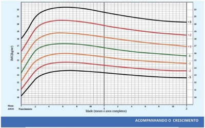
A Obesidade.
B Sobrepeso.
C Obesidade grave.
D Risco de sobrepeso.
Questão 27 · Eritema Inf eccioso · 4000199212Pré-escolar, masculino, 5 anos de idade, com história de exantema maculopapular, que se iniciou na face, com concentração principalmente na região das bochechas, poupando a região perioral, a testa e o nariz, conferindo um aspecto de “cara esbofeteada”. Dois dias depois, o exantema evolui, acometendo os membros superiores, inferiores e tronco e persistiu por dez dias e reapareceu quando a criança foi exposta ao sol. Não houve pródromos. Qual o diagnóstico mais provável?
A Rubéola.
B Escarlatina.
C Eritema infeccioso.
D Exantema súbito.
Questão 28 · Pediatria · 4000199211Lactente, masculino, 12 meses de vida, apresenta quadro de diarreia desde 9 meses de idade, com 4 a 5 evacuações diárias, com fezes semilíquidas, fétidas, sem muco ou sangue. Apresenta ainda vômitos ocasionais e recusa alimentar. Nega sintomas respiratórios. Nasceu de parto normal, a termo, s e m intercorrências perinatais, com peso adequado para idade (P=2800g). Teste do pezinho normal. Aleitamento materno exclusivo até 4 meses, quando iniciou fórmula infantil e a partir de 6 meses, frutas, legumes, carnes, cereais, pão e biscoito, com boa aceitação. Parasitológico e cultura de fezes negativos. No exame físico, o lactente apresentava irritabilidade, palidez e desnutrição, com hipotro a muscular e de subcutâneo. Peso=7500g. Abdômen distendido e hipertimpânico, sem outras alterações. Qual o diagnóstico provável?
A Fibrose cística.
B Doença celíaca.
C Proctocolite alérgica.
D Intolerância secundária à lactose.
Questão 29 · Sinais e sintomas · 4000199210Recém-nascido pré-termo apresenta, ao nascimento, hepatoesplenomegalia, icterícia, lesões bolhosas e m região palmo-plantar bilateral, rinite serossanguinolenta e periostite. A mãe não realizou pré-natal. Esses achados clínicos são sugestivos de qual infecção congênita?
A Vírus Herpes simples.
B Toxoplamose.
C Rubéola.
D Sífilis.
Questão 30 · Pediatria · 4000199209Lactente, masculino, 10 meses de idade é levado à Unidade de Pronto Atendimento com história de espirros, obstrução nasal, coriza e febre há dois dias. Há 24 horas houve piora do quadro, com tosse, taquidispneia, com uso de musculatura acessória e batimento de aleta nasal, gemência, além de hipoxemia. Ausculta pulmonar com sibilância e tempo expiratório prolongado. Rx tórax: hiperinsu ação pulmonar. A mãe relata que a criança nunca apresentou quadro semelhante. Qual a principal hipótese diagnóstica?
A Pneumonia atípica.
B Asma em crise aguda.
C Bronquiolite viral aguda.
D Broncopneumonia bacteriana.
Questão 31 · Pediatria · 4000199208Pré-escolar, 3 anos de idade, masculino, é levado para Unidade de Pronto Atendimento com quadro de náusea, vômitos, cefaleia e borramento da visão. Apresenta ainda anorexia, emagrecimento, perda de cabelo, fraqueza muscular, emagrecimento e alterações ósseas. Mãe relata uso contínuo de polivitamínico desde 1 ano de idade. Considerando a hipótese mais provável de hipervitaminose crônica, qual vitamina pode estar relacionada com essas manifestações clínicas?
A A
B B6
C C
D D
Questão 32 · Pediatria · 4000198815Lactente, masculino, 5 meses de idade, é levado à UESF com história de episódios de vômitos de conteúdo lácteo e regurgitações frequentes, relacionados à alimentação, que surgiram no primeiro mês de vida. Mãe queixa-se que o lho está com irritação excessiva. Na última semana, vem apresentando vômitos noturnos com conteúdo bilioso e febre não aferida. AF: Nascido a termo, de parto normal com 2925g, comprimento: 49cm e PC: 34cm. Apgar 8 e 9. Recebeu alta no 3º dia de vida. Testes de triagem neonatal normais. Vacinas em dia. Seio materno exclusivo. Atualmente com peso: 7,2kg, comprimento: 64cm e PC: 42,5cm. Exame físico: bom estado geral, consciente, ativo e reativo, febril (38ºC), eupneico, corado, hidratado, anictérico e acianótico. Ap. Resp.: MVF sem ruídos adventícios e FR: 44irpm. Ap. Card.: BNF, RCR2T, sem sopros, FC: 120bpm e boa perfusão periférica. Abdome: semigloboso, ácido, RHA+, indolor à palpação, sem massas palpáveis. Fígado a 2cm do RCD. Baço impalpável. Extremidades: sem edemas. SNC: Fontanela anterior plana e normotensa. DNPM adequado para a idade. Foi feita a hipótese diagnóstica de doença do re uxo gastroesofágico com presença de sinais de alerta (“red ags”). Quais sinais de alerta estão presentes no caso?
A Início antes dos 6 meses, sexo masculino, conteúdo bilioso e febre.
B Início antes dos 6 meses, irritação excessiva, conteúdo bilioso e febre.
C Vômitos noturnos, conteúdo bilioso, febre, fígado a 2cm do RCD.
D Irritação excessiva, vômitos noturnos, conteúdo bilioso e febre.
Questão 33 · Dermatologia · Pediatria · 4000198814Lactente, 18 meses, comparece à consulta, acompanhado pela mãe, que relata irritabilidade noturna, choro e di culdade para dormir há 10 dias. Concomitante relata aparecimento de lesões na cabeça, axilas, umbigo, cintura pélvica, nádegas, plantas e dorso dos pés, além de coceira intensa, principalmente à noite. Nega alergias, uso de medicação e doenças prévias. Vacinas em dia. Alimentação adequada para a idade. Relata que a irmã de 5 anos também está com coceira no corpo à noite que piora a noite. Crescimento e desenvolvimento normais. Ao exame: pele com lesões avermelhadas, algumas secas, outras com conteúdo líquido de diferentes aspectos e associados a crostas. A análise pela dermatoscopia de algumas lesões lineares (túneis) permite a visualização de um achado típico – o sinal de “asa-delta” ou “rastro de avião”. Diante desse caso clínico, qual a principal hipótese diagnóstica?
A Larva migrans cutânea.
B Escabiose
C Impetigo
D Prurigo estrófulo
Questão 34 · Pediatria · 4000198812Mãe leva seu lho de 1 ano e 6 meses de idade na Unidade Básica de Saúde para consulta de puericultura, previamente agendada. Não apresenta queixas e a caderneta de saúde da criança está com as vacinas em dia. Nasceu de parto vaginal, idade gestacional de 32 semanas e Apgar 8 e 9. Peso: 2kg, mediu 42cm e o PC: 30cm. Alimentação adequada. Atualmente pesa 10kg, mede 77 cm e PC: 46,5cm. O médico plotou os dados nas curvas de crescimento e disse que a criança estava com peso, comprimento e perímetro cefálico adequados para a idade, considerando a idade corrigida da criança. Até que idade ainda vai ser necessária a utilização da idade corrigida para lançar os dados do filho nas curvas de crescimento?
A 3 anos de idade cronológica
B 2 anos de idade corrigida
C 2 anos de idade cronológica
D 3 anos de idade corrigida
Questão 35 · Pediatria · 4000198811M.J.A., 24 anos, primigesta, caixa de supermercado, fez seu pré-natal na UESF e foi encaminhada para a maternidade que atende essa região de saúde. Ela deu à luz via vaginal a um RN a termo, AIG, sexo feminino, peso: 3kg, Comprimento: 48cm, PC: 34cm e Apgar de 9 e 10. Após os cuidados à RN, foi colocada em contato pele a pele com a mãe por 1 hora, quando sugou o seio materno. Ambas foram encaminhadas para o alojamento conjunto. No dia seguinte, a mãe estava com di culdade de amamentação, ingurgitamento mamário, os mamilos estavam muito doloridos e machucados com ssuras. Qual a principal causa da dor e da lesão mamilar?
A RN com Freio lingual excessivamente curto
B Posicionamento e pega inadequados
C Mamilos maternos curtos, planos ou invertidos
D Interrupção inadequada da sucção ao retirar do seio
Questão 36 · Hematologia Pediátrica · 4000198810Escolar de 10 anos, sexo masculino, com história de febrícula e sudorese noturna há mais de um mês, é levado à consulta no posto de saúde. Relata aparecimento de ínguas nas regiões cervical, axilar, inguinal e supraclavicular, de dor abdominal difusa leve, astenia e perda ponderal de 2kg em 1 mês. Nega casos de tuberculose na família. Vacinas em dia. Nega doenças ou comorbidades. Há 3 meses, fez uso de Nitazoxanida. O exame inicial evidenciou paciente em bom estado geral, hipocorado ++/4+, hidratado, anictérico, acianótico, febril (38ºC), eupneico, consciente e orientado. Pressão arterial de 100×60mmHg e frequência cardíaca de 80bpm. Exame cardíaco e pulmonar apresentavam-se normais. Ao exame de abdome apresentou esplenomegalia palpável a 3cm do rebordo costal esquerdo; hepatomegalia palpável a 5cm do rebordo costal direito. Linfadenopatias palpáveis e visíveis nas cadeias ganglionares cervicais, supraclaviculares, axilares e inguinais. 9 de 19 – Revalidação 2023 – Caderno AMARELO Exames laboratoriais: Hemograma: Ht 30%, Hb 9,5g/dL, Leucócitos 15.600/mm³ (Neutró los 13%, Linfócitos 81%, Eosinó los 3%, macrófagos 3%), Plaquetas 175.000/mm³. Teste tuberculínico: < 5mm. Baciloscopias de escarro induzido negativas. Cultura ainda sem resultado. VHS: 85 mm/1ª hora. Sorologias negativas para toxoplasmose, rubéola, HIV, citomegalovirose, mononucleose infecciosa e sí lis. Radiogra a de tórax: massa volumosa no mediastino médio de contornos irregulares com calcificações. Qual a principal hipótese diagnóstica?
A Cisto broncogênico
B Tuberculose ganglionar
C Neuroblastoma
D Linfoma
Questão 37 · Hematologia Pediátrica · 4000198809Adolescente, 13 anos, sexo masculino, dá entrada em UPA 24 horas, queixando-se de dor de forte intensidade (08 em 10 segundos a escala visual analógica de dor) em membro inferior esquerdo com início há 4 horas. A mãe deu em casa um comprimido de dipirona 500mg e aumentou a oferta de líquidos, porém não houve melhora da dor. Informa que o paciente vem apresentando rinorreia, tosse produtiva e febre baixa (38,5 °C) há 3 dias. HPP: Possui diagnóstico de anemia falciforme desde os primeiros meses de vida e normalmente apresenta hemoglobina basal em torno de 8,0g/dL. Vacinação adequada para a idade. Ao exame físico inicial, paciente apresenta-se em REG, fáscie de dor, hipocorado 3+/4+, acianótico, anictérico, desidratado 2+/4+ e afebril. FC: 110bpm, FR: 24irpm e SpO2: 95% em ar ambiente. Oroscopia e Otoscopia sem alterações. Ausência de sinais meníngeos. ACV: RCR em 2T, BNF e SS. Pulsos amplos e boa perfusão periférica. AR: MVF em ápices e bases, roncos discretos em ambos hemitóraces. Abdominal: Atípico, RHA presentes, indolor e ausência de massas ou visceromegalias. Exame genital sem alterações. Membros inferiores simétricos, ausência de sinais inflamatórios e limitação dos movimentos à esquerda. Diante do quadro clínico apresentado, quais são as condutas terapêuticas e propedêuticas iniciais?
A Após a avaliação inicial, o paciente pode ser liberado para uso de analgésicos comuns em casa. A princípio como se trata apenas de quadro álgico não há necessidade de realização de exames laboratoriais ou da radiografia de tórax. Os familiares devem ser orientados em relação a sinais de piora clínica para retorno à unidade de pronto atendimento.
B Manter o paciente em observação, fornecer hidratação endovenosa, otimizar a analgesia, e realizar a transfusão de concentrado de hemácias com urgência devido sinais de gravidade iniciais. Solicitar exames laboratoriais e radiografia de tórax para exclusão de complicações bacterianas.
C Manter o paciente em observação, iniciar hidratação endovenosa, associar analgésicos comuns, antiinflamatórios não esteroidais e opioides de horário para dor. Solicitar exames laboratoriais e radiografia de tórax para exclusão de complicações bacterianas e avaliar a necessidade de transfusão sanguínea.
D Após a avaliação inicial, o paciente pode ser liberado para uso das medicações analgésicas orais em casa. Exames laboratoriais para exclusão de complicações bacterianas e radiografia de tórax devem ser mostrados em reavaliação que deve ocorrer no máximo em 48 horas.
Questão 38 · Calendário dos adolescentes · 4000198808Adolescente, 12 anos, sexo feminino, acompanhada pela mãe para atualização vacinal. Paciente nasceu na Venezuela e há 2 anos se mudou para o Brasil com os pais e 2 irmãos. A mãe conta que não possui qualquer comprovação vacinal do país de origem. Nega comorbidades e doenças prévias ou alergias conhecidas. Diante do exposto, qual o melhor esquema vacinal a ser proposto para a paciente, considerando sua idade e a ausência de comprovação vacinal prévia, segundo o PNI-MS?
A Hepatite B (3 doses), dT (3 doses), Tríplice viral (2 doses), Febre amarela (dose única), HPV (2 doses) e ACWY (dose única).
B Hepatite A (dose única), dT (1 dose), Febre Amarela (dose única), HPV (2 doses) e ACWY (dose única).
C Hepatite B (3 doses), dT (3 doses), TetraViral (dose única), Febre amarela (dose única) e HPV (2 doses).
D Hepatite A (2 doses), dT (1 dose), Tríplice Viral (2 doses), Febre Amarela (dose única), HPV (3 doses) e ACWY (2 doses).
Questão 39 · Mães inadequadamente tratadas · 4000198806Recém-nascido com 48 horas de vida, sexo masculino, parto normal com 38 semanas de gestação. Ápgar 8 e 9, peso de 3.200g, PC de 34cm e altura de 50cm. Exame físico sem alterações. Sua mãe possui 23 anos, primípara, gestação tardiamente descoberta por volta de 25 semanas de gestação. Foram realizadas 3 consultas de pré-natal. Não foram descritas na caderneta da gestante alterações pressóricas ou glicêmicas. Testes rápidos para HIV, Hepatite B, C e VDRL realizados em primeira consulta do pré-natal e descritos como não reagentes. Sorologias para Toxoplasmose, Citomegalovírus e Rubéola com IgM negativo e IgG positivo. Testes rápidos da admissão na maternidade evidenciaram HIV, Hepatite B e C não reagentes e VDRL reagente, com posterior titulação de 1:8. Mãe negou ter recebido qualquer tratamento para sí lis durante a gestação, e desconhecia o diagnóstico. O RN encontra-se internado em alojamento conjunto de um hospital para investigação de Sí lis Congênita. Foram realizados os seguintes exames no RN: Hemograma completo e glicemia com parâmetros adequados para a idade, Rx de ossos longos sem evidência de lesões ósseas, líquor (celularidade e proteinorraquia) sem alterações, VDRL no líquor não reagente, VDRL materno pareado 1:8 e VDRL do RN pareado não reagente. Diante do exposto e do diagnóstico de sí lis congênita devido à ausência de tratamento materno, qual a recomendação de tratamento e conduta a ser instituída?
A Sem necessidade de tratamento específico. Deve ser referenciada para acompanhamento clínico e laboratorial na puericultura com realização de novos testes não treponêmicos com 1, 3, 6, 12, 18 meses de vida.
B Penicilina Benzatina 50.000 UI/kg, intramuscular, dose única. Além de seguimento de puericultura habitual e realização de novos testes não treponêmicos com 1, 3, 6, 12, 18 meses de vida.
C Penicilina Cristalina ou Penicilina Procaína por 10 dias devido à ausência de neurossífilis além de seguimento de puericultura habitual e realização de novos testes não treponêmicos com 1, 3, 6, 12, 18 meses de vida.
D Penicilina Cristalina por 10 dias por não ser possível excluir a possibilidade de Neurossífilis, além de seguimento de puericultura habitual e realização de novos testes treponêmicos com 1, 3, 6, 12, 18 meses de vida.
Questão 41 · Pediatria · 4000198632Uma criança de 4 anos apresenta febre, tosse e coriza há 5 dias, com desconforto respiratório progressivo. Ao exame físico, apresenta FR = 45 irpm e FC = 110 bpm, e observa-se redução importante do murmúrio vesicular à direita. A radiogra a de tórax evidencia consolidação homogênea e derrame pleural à direita. Diante do caso apresentado, indique o provável agente etiológico:
A Mycoplasma pneumoniae.
B Streptococcus pneumoniae.
C Staphylococcus aureus.
D Haemophilus influenzae.
Questão 42 · Pediatria · 4000198631Uma menina de 7 anos vem para consulta de rotina sem queixas. Durante a antropometria, você encontra os seguintes parâmetros: peso de 33 kg, estatura de 118 cm e IMC de 23,7. De acordo com o gráfico abaixo, sua classificação nutricional é de: Fonte: https://www.sbp.com.br/fileadmin/user_upload/sbp/2022/abril/27/OMS._IMC__Meninas_._5-19_anos._ Em_Z_score..pdf

A Eutrofia
B Sobrepeso.
C Obesidade.
D Obesidade grave.
Questão 43 · Pediatria · 4000198630Um lactente de 3 meses apresenta tosse com piora progressiva há três semanas, com febre baixa nos dois primeiros dias. Nos últimos dois dias, a mãe do lactente percebeu que ele tem crises de tosse com perda de fôlego e vômito logo após. Ao exame físico, encontra-se em bom estado geral, eutró co, com FR = 52 irpm, FC = 122 bpm, oximetria de 96% em ar ambiente, ausculta pulmonar com roncos de transmissão e presença de petéquias ao redor dos olhos. Diante do quadro clínico descrito, indique o agente etiológico mais provável:
A Streptococcus pneumoniae.
B Bordetella pertussis.
C Vírus sincicial respiratório.
D Mycobacterium tuberculosis.
Revisar: possível letra faltando em enunciado
Questão 44 · Pediatria · 4000198629Os benefícios do aleitamento materno para o binômio mãe- lho são inquestionáveis, contudo sabemos que existem contraindicações a ele. Indique abaixo uma situação que consiste em contraindicação ao aleitamento:
A Mãe infectada pelo vírus da hepatite B.
B Recém-nascido com galactosemia.
C Mãe com covid-19.
D Mãe com herpes labial.
Questão 45 · Pediatria · 4000198628Um recém-nascido do sexo masculino apresenta hipotonia, excesso de pele da nuca, prega palmar única, orelhas displásicas e sopro cardíaco de forte intensidade. Indique a síndrome genética mais provável:
A Síndrome de Down.
B Síndrome de Turner.
C Síndrome de Prader-Willi.
D Síndrome de McCune-Albright.
Questão 46 · Pediatria · 4000198627Você recepciona em sala de parto um bebê de termo, pequeno para a idade gestacional e cujo pré-natal não foi realizado pela mãe. Ao examinar, você percebe que ele chora muito ao ser manipulado e que apresenta lesões bolhosas em mãos e pés. Considerando a principal hipótese diagnóstica para essa criança, qual é o agente envolvido?
A Treponema pallidum.
B Toxoplasma gondii.
C Herpes-vírus.
D Citomegalovírus.
Questão 47 · Pediatria · 4000198626Menino de 2 anos dá entrada no pronto atendimento apresentando quadro de diarreia sem sangue, febre baixa e vômitos há 24 horas. Ao exame físico, apresenta-se intranquilo, com olhos fundos e mucosas secas, e o sinal da prega desaparece lentamente. Responda: podemos dizer que essa criança está com desidratação de que tipo? Qual é a conduta para ela?
A Desidratada sem gravidade. Reidratação oral em domicílio.
B Desidratada sem gravidade. Reidratação oral na unidade de atendimento.
C Desidratada com gravidade. Reidratação via sonda nasogástrica.
D Desidratada com gravidade. Reidratação endovenosa.
Questão 48 · Pediatria · 4000198625Você recepciona um bebê, em sala de parto, de 38 semanas de idade gestacional, nascido de parto vaginal. Ele nasce com choro fraco e apneia. Após estímulo tátil, mantém o quadro. Você então leva-o para a mesa de reanimação, realiza os passos iniciais e, na reavaliação, ele está em apneia e com FC de 50 bpm. Qual é a conduta imediata?
A Ventilação com pressão positiva com balão, máscara e oxigênio a 21%.
B Ventilação com pressão positiva com balão, máscara e oxigênio a 100%.
C Intubação orotraqueal com ventilação com pressão positiva e oxigênio a 100%.
D Intubação orotraqueal associada à massagem cardíaca.
Questão 49 · Pediatria · 4000198624Um menino de 8 anos estava brincando no quintal de casa quando tropeçou em um toco de madeira e fez um ferimento profundo e extenso na perna direita. Ao chegar ao hospital, precisou limpa e suturar a ferida. O médico então questionou sobre a imunização contra o tétano, e sua mãe mostrou a carteirinha completa, com todas as vacinas aplicadas até a idade. Qual é a conduta quanto à pro laxia pós-exposição para o tétano?
A Aplicar uma dose de reforço da vacina antitetânica.
B Aplicar uma dose de reforço da vacina antitetânica e uma dose de imunoglobulina antitetânica.
C Aplicar uma dose de imunoglobulina antitetânica.
D Não há necessidade de profilaxia pós-exposição.
Questão 50 · Puberdade Precoce · 4000196314A primeira criança de uma paciente secundigesta de 25 anos nasceu com genitália externa ambígüa com hipertro a de clitóris e fusão labial. Ela e seu marido são portadores da mutação genética relacionada à deficiência de 21-alfahidroxilase. Qual é o padrão de herança associado à forma mais frequente da mutação genética relacionada à de ciência de 21-alfahidroxilase?
A Autossômico dominante.
B Autossômico recessivo.
C Ligado ao cromossomo X.
D Ligado ao cromossomo Y.
Questão 51 · Ginecologia · Puberdade Precoce · 4000196267Menina, 9 anos e 5 meses, é trazida à consulta ginecológica pela mãe, preocupada em relação ao desenvolvimento puberal de sua lha. A mãe refere que há cerca de quatro meses a paciente iniciou quadro de desenvolvimento das mamas e aumento dos pêlos pubianos. Nega antecedentes de doenças crônicas ou uso de medicações. Exame físico: estadio de Tanner M2P2 e estatura conforme demonstrado no gráfico abaixo, sem demais alterações. QUE ORIENTAÇÃO DEVE SER DADA À PACIENTE E SUA MÃE?
A Trata-se de uma evolução puberal normal, sendo necessário apenas acompanhamento clínico seriado.
B Trata-se de um quadro de puberdade precoce e o bloqueio do eixo deve ser iniciado para que haja ganho de estatura.
C Trata-se de um quadro de telarca isolada e não há nenhuma conduta específica a ser tomada.
D Trata-se de um quadro de pseudopuberdade precoce, sendo necessário realizar dosagens hormonais para elucidação diagnóstica.
Questão 52 · Pediatria · 4000195013Você faz o acompanhamento de puericultura de um lactente de três meses, cuja mãe pretende voltar a trabalhar em 1 mês. Ele apresenta crescimento e desenvolvimento normais para a idade. Indique as recomendações apropriadas em relação à ordenha e ao armazenamento de leite materno:
A O leite materno ordenhado pode ser conservado em congelador até 60 dias.
B O leite materno ordenhado que é conservado em geladeira deve ser aquecido no micro-ondas.
C O leite materno ordenhado deve ser oferecido ao lactente em copinho, colher ou xícara.
D O leite materno ordenhado conservado em geladeira deve ser consumido em até 2 dias.
Questão 53 · Pediatria · 4000195012Você atende uma criança de 5 anos que estava participando de uma festa de aniversário que apresentou subitamente desconforto respiratório e inchaço na boca, sendo trazida à emergência do hospital. Ao exame, encontra-se pálida, com desconforto respiratório moderado, FR 40irpm, FC 128bpm, PA 86 x 59 mmHg, saturação de O2 de 96% em ar ambiente. A ausculta pulmonar revela sibilos difusos, retração de fúrcula e subcostal. Há edema moderado em lábios e placas urticariformes em tronco e membros inferiores. Diante desse cenário, indique a principal medida a ser tomada.
A Adrenalina endovenosa.
B Adrenalina intramuscular.
C Metilprednisolona endovenosa.
D Salbutamol inalatório.
Questão 54 · Pediatria · 4000195011Um menino de 4 anos retorna para consulta de rotina devido à suspeita de hipertensão arterial. Nas últimas três consultas, foi observada uma média de valores de pressão arterial de 111 x 69 mmHg. Os dados antropométricos revelam peso e estatura no percentil 90 para sexo e idade. Diante desses dados e observando a tabela a seguir, classifique a pressão arterial dessa criança:
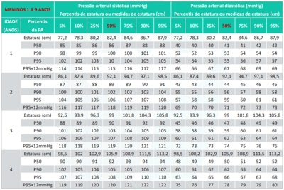
A Pressão arterial normal.
B Pressão arterial elevada.
C Hipertensão arterial estágio 1.
D Hipertensão arterial estágio 2.
Questão 55 · Pediatria · 4000195010Você atende um recém-nascido de 15 dias de vida em uma maternidade da prefeitura de São Paulo. A mãe do bebê está muito preocupada, pois ele está muito hipoativo e não mama direito o seio materno. No relato da maternidade, você constata que a criança precisou tratar uma infecção urinária por Escherichia coli, apresentou hipoglicemia de difícil controle, icterícia às custas de bilirrubina indireta, sem incompatibilidade, e os exames de investigação solicitados no período neonatal revelam substâncias redutoras na urina. O teste do pezinho está normal. Você observa que o recém-nascido perdeu peso em relação ao nascimento, encontra-se desidratado, hipoativo e apresenta icterícia zona V. Diante desse caso, assinale a principal hipótese diagnóstica:
A Fenilcetonúria.
B Agalactia.
C Galactosemia.
D Atresia de vias biliares.
Questão 56 · Pediatria · 4000195009Durante o plantão, você recebe um lactente de 2 anos previamente hígido que apresentou uma crise convulsiva em casa, com duração de cerca de 5 minutos. Ao exame, você observa que ele está sonolento, febril e com roncos difusos à ausculta pulmonar. Familiares referem que ele estava gripado desde ontem, mas que não tinham percebido a febre. Após 1 hora de observação, a criança encontra-se ativa, sorridente e interagindo com os pais, sem dé cits neurológicos. Os pais negam episódios semelhantes. Diante desse cenário, é verdadeiro afirmar:
A Trata-se de uma crise febril, e a criança precisa permanecer internada por 48 horas para observação neurológica.
B Por ser o primeiro episódio, a coleta de liquor é necessária.
C O exame de tomografia pode esclarecer o motivo da crise convulsiva.
D Nesse momento, a melhor conduta é dar alta, com sintomáticos e orientações aos pais quanto à benignidade do quadro.
Questão 57 · Pediatria · 4000195008Na sala de emergência, temos uma criança de 7 anos com história de vômitos e diarreia em grande volume há 24 horas. Apesar dos esforços da equipe de enfermagem, até então não foi obtido acesso venoso. Você então decide realizar um acesso intraósseo. Dos locais sinalizados a seguir, qual você escolheria para realizar o acesso?
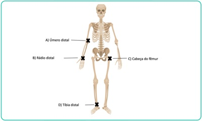
A Úmero distal
B Rádio distal
C Cabeça do fêmur
D Tíbia distal
Questão 58 · Pediatria · 4000195007Os agentes comunitários de saúde fazem busca ativa a uma criança que está com calendário vacinal atrasado. A mãe refere que, por trabalhar o dia todo, tem tido di culdade de levar a criança à UBS. A criança tem 12 meses, e sua carteira vacinal da criança está representada a seguir. Considerando que a criança apresentou um episódio de broncoespasmo na semana anterior, utilizou prednisolona por 5 dias e que o dia da aplicação das vacinas é 08/06/2022, qual vacina estaria contraindicada?


A Meningocócica C.
B Febre amarela.
C Influenza.
D Pneumocócica 10-valente.
Questão 59 · Pediatria · 4000195004Ao avaliar uma criança no 2º dia de vida, você percebe que ela apresenta as lesões da figura a seguir. A mãe refere que já estavam presentes ao nascimento. Qual é a principal hipótese diagnóstica?
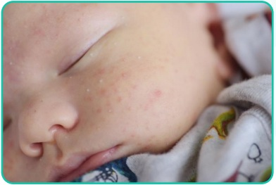
A Miliária.
B Hiperplasia sebácea.
C Eritema tóxico.
D Melanose pustulosa.
Questão 60 · Pediatria · 4000195001O médico do SAMU traz para avaliação uma criança de 6 anos que sofreu um acidente de carro com os pais. O médico refere que ele estava no banco traseiro, na cadeirinha e que os pais estão bem, apenas com ferimentos leves. Ao exame inicial, a criança está lúcida, chorosa, orientada e aparentemente, sofreu apenas escoriações nos braços. Antes de ir embora, o médico mostra uma foto do carro. Qual é a conduta mais adequada para a criança?
A Observação clínica no pronto atendimento por 24 horas.
B Realizar radiografia de crânio, cervical e de ossos longos.
C Encaminhá-la para tomografia de crânio.
D Alta hospitalar com orientações.
Questão 61 · Pediatria · 4000194634Você avalia um neonato em alojamento conjunto que apresenta icterícia zona 2 com 48 horas de vida. Ele nasceu termo, adequado para a idade gestacional, sem intercorrências, está mamando adequadamente. A tipagem sanguínea materna é A positivo, e o RN é O negativo. A dosagem total de bilirrubina foi de 10 mg/dL. Seguindo o nomograma de Bhutani (a seguir), qual é a conduta a ser tomada?

A Alta hospitalar com seguimento normal na puericultura.
B Alta hospitalar com reavaliação em 72 horas.
C Manter internado e repetir dosagem de bilirrubinas em 12 a 24 horas.
D Iniciar fototerapia de imediato.
Questão 62 · Pediatria · 4000194633Ao iniciarmos a introdução alimentar de uma criança de 6 meses de idade, que alternativa está incorreta sobre as devidas orientações?
A O leite materno deverá ser mantido até, no mínimo, dois anos de idade.
B Os sucos de fruta estão contraindicados, assim como as bebidas açucaradas.
C Estão contraindicados, no primeiro ano de vida: mel, peixe, ovo e amendoim.
D A carne não deve ser retirada da comida, e, sim, picada ou desfiada.
Questão 63 · Pediatria · 4000194632Você está de plantão na emergência de uma UPA quando chega uma criança em parada cardiorrespiratória. Você inicia a reanimação de imediato e, ao colocar o monitor cardíaco, recebe o seguinte ritmo. Qual é o próximo passo a ser realizado?

A Desfibrilação com 2 J/kg.
B Cardioversão imediata.
C Administrar amiodarona.
D Aplicar a primeira de uma série de adrenalina.
Questão 64 · Pediatria · 4000194631Menina de 5 anos estava brincando com o cachorro de sua avó, que estava saudável, quando ele mordeu sua mão esquerda de forma profunda. Ela foi levada à UPA da cidade, e o médico orientou como pro laxia da raiva:
A apenas observar o cachorro por 10 dias.
B aplicar dose única de vacina contra raiva e uma dose de soro antirrábico.
C aplicar quatro doses da vacina contra raiva.
D aplicar quatro doses da vacina contra raiva e uma dose de soro antirrábico.
Questão 65 · Pediatria · 4000194630Uma criança de 4 anos apresenta tosse e febre vespertina há 3 semanas. Sua mãe percebeu que ela está muito emagrecida. A criança recebeu amoxicilina por 10 dias devido a uma pneumonia há 15 dias, contudo não apresentou melhora dos sintomas. Frente à suspeita de tuberculose, o médico que a acompanha solicitou PPD, três amostras de exame de escarro para pesquisa de tuberculose (BAAR) e radiogra a de tórax. Não há relato de contato com pessoas doentes. A criança encontra-se febril, T: 38,2°, seu peso está abaixo do percentil 3, a ausculta cardíaca é normal, e a ausculta pulmonar revela estertores subcrepitantes em base esquerda. A radiogra a de tórax apresenta adenomegalia hilar e opacidade heterogênea em base esquerda e é muito semelhante à radiogra a realizada antes do uso de amoxicilina. As três amostras de BAAR estão negativas e o PPD resultou 12 mm. Diante desse caso e frente à suspeita de tuberculose, é possível a rmar que:
A as três amostras de BAAR se encontram negativo e afastam o diagnóstico de tuberculose.
B se a criança recebeu a vacina de BCG ao nascimento, o exame de PPD não deve ser valorizado.
C a criança pontuou 30 no escore, e o diagnóstico é pouco provável.
D o escore resulta em 45, devemos considerar o diagnóstico de tuberculose muito provável. O tratamento é recomendado e deve ser realizado em sua primeira fase com rifampicina, isoniazida e pirazinamida.
Questão 66 · Pediatria · 4000194629U m lactente d e 2 meses e m aleitamento mat erno recebe suplementação pro lática de vitamina D diariamente. Sua mãe recebe dieta vegana e sem suplementação vitamínica. Entre as opções abaixo, qual é a orientação apropriada a respeito de suplementação vitamínica para a mãe do lactente com a nalidade de se evitar consequências no lactente?
A Vitamina B12.
B Ácido fólico.
C Vitamina A.
D Vitamina B1.
Questão 67 · Pediatria · 4000194628Uma criança de 7 anos com diagnóstico de asma recebe corticoide inalatório e m dose baixa. Ela chega à emergência c om tosse e cansaço h á 6 horas. A o exame físico, e la est á e m regular estado geral, não consegue falar frases, apenas palavras, a FC é de 139 bpm, saturação de O2 de 90% em ar ambiente, com sibilos difusos à ausculta pulmonar e retração intensa subdiafragmática. Classi que a crise de exacerbação de asma dessa criança e o tratamento inicial preconizado.
A Moderada, salbutamol inalatório a cada 20 minutos, oxigênio e sulfato de magnésio.
B Leve, corticoide endovenoso, salbutamol inalatório a cada 20 minutos.
C Grave, salbutamol inalatório a cada 20 minutos, brometo de ipratrópio inalatório e corticoide sistêmico.
D Grave salbutamol inalatório a cada 20 minutos, brometo de ipratrópio e corticoide sistêmico e oxigênio.
Questão 68 · Pediatria · 4000194627Um lactente de 15 meses, sem antecedentes relevantes, apresenta um episódio de crise convulsiva desencadeada em vigência de febre. Chega à emergência fora da crise e rapidamente apresenta recuperação neurológica. Ao o examinar, você diagnostica uma infecção viral de vias aéreas superiores. Qual é a conduta apropriada?
A Internação, para investigação da causa da crise convulsiva.
B Liberar para casa com orientações, sintomáticos e acompanhamento pediátrico de rotina.
C Coleta de liquor para afastar infecção do sistema nervoso central.
D Solicitar eletroencefalograma na urgência, para investigar o risco de recorrência da crise.
Questão 69 · Pediatria · 4000194626Um lactente de 2 meses de idade chega à emergência com febre, vômitos e diminuição do volume urinário há 1 dia. Diante da suspeita de infecção do trato urinário (ITU), é correto afirmar que:
A a coleta de urina pode ser feita pelo saco coletor, e a antibioticoterapia deve ser iniciada após o resultado de urocultura.
B o exame de urina deve ser coletado, por meio de métodos como cateterismo vesical,
C é importante investigar outro foco infeccioso, pois a ITU é rara nessa faixa etária.
D se o exame parcial de urina sugerir o diagnóstico de ITU, o lactente pode receber alta com antibioticoterapia oral.
Questão 70 · Pediatria · 4000194625A alimentação possui papel fundamental nos primeiros anos de vida, que são decisivos para o crescimento, desenvolvimento, formação de hábitos e manutenção da saúde. A cada ano, aumenta a parcela da população infantil com sobrepeso e/ou que consome alimentos ultraprocessados, enquanto casos de desnutrição e anemia continuam a existir em classes econômicas desfavorecidas. A respeito desse tema, assinale a alternativa CORRETA sobre as recomendações alimentares para crianças abaixo de 2 anos de idade, defendida pelo Ministério da Saúde.
A Lactentes < 6 meses que residem em regiões muito quentes podem receber pequenas quantidades de água filtrada ao longo do dia, para manterem-se hidratados.
B As papinhas industrializadas, desde que não contenham conservantes e aditivos, são boas alternativas para a introdução alimentar em crianças a partir de 6 meses de idade.
C Na introdução alimentar, é normal que uma criança precise experimentar diversas vezes o mesmo alimento até se familiarizar com ele. Por isso, nessa fase, a principal fonte de nutrientes continuará sendo o leite materno.
D Para evitar engasgos e facilitar o aceite dos alimentos pela criança, os alimentos devem ser inicialmente oferecidos após serem peneirados ou batidos no liquidificador.
Questão 72 · Pediatria · 4000194529Uma criança de 8 meses vinha tendo febre diária que chegava a 39,5°C, sem outras queixas. Depois de 3 dias, a mãe leva-a ao pediatra, pois, apesar de a febre ter cessado, agora, surgiram manchas avermelhadas pelo corpo. Considerando a principal hipótese diagnóstica, qual é o agente etiológico?
A Parvovírus B19
B Herpes vírus 6 e 7
C Togavírus
D Morbilivírus
E Coxsackie
Questão 73 · Pediatria · 4000194528Na primeira consulta de puericultura de um neonato de 12 dias de vida, você ausculta um desdobramento fixo de segunda bulha. O restante do exame físico é normal. Qual é a principal hipótese diagnóstica?
A Comunicação interatrial
B Comunicação interventricular
C Persistência do canal arterial
D Tetralogia de Fallot
E Coarctação de aorta
Questão 74 · Pediatria · 4000194527Um menino de 8 anos estava brincando no quintal da fazenda de seus avós quando pisou em um prego enferrujado. Seu pai mostra a carteirinha de vacinação, que está completa até a idade. Quanto à pro laxia do tétano, qual é a conduta a ser tomada?
A Aplicação de uma dose de reforço da vacina antitetânica.
B Aplicação de três doses da vacina antitetânica.
C Aplicação de uma dose de reforço da vacina antitetânica mais uma dose de imunoglobulina antitetânica.
D Aplicação de três doses da vacina antitetânica mais uma dose de imunoglobulina antitetânica.
E Não há necessidade de profilaxia antitetânica.
Questão 75 · Pediatria · 4000194526Para manter a normotermia do neonato em sala de parto, algumas orientações devem ser seguidas. De acordo com a Sociedade Brasileira de Pediatria, é incorreto para prevenção de hipotermia:
A Secar e retirar campos úmidos após o nascimento em neonatos maiores de 34 semanas.
B Manter o neonato em contato pele a pele materno.
C Manter a temperatura da sala de parto entre 23 e 27°C.
D Envolver o neonato menor de 34 semanas em saco plástico transparente sem secar.
E Colocar touca no neonato após o nascimento.
Questão 76 · Pediatria · 4000194525Sobre as infecções congênitas e suas manifestações clínicas, é correto afirmar:
A A presença de citomegalovírus na urina até 3 semanas de vida confirma uma infecção congênita.
B Na sífilis congênita, tíbia em lâmina de sabre, pseudoparalisia de Parrot e sinovite de joelhos são consideradas manifestações precoces.
C A principal cardiopatia associada à síndrome da rubéola congênita é o defeito do septo atrioventricular total.
D A ausência do IgM e do IgA antitoxoplasmose afasta o diagnóstico de toxoplasmose congênita.
E Na zikavirose congênita, a microcefalia é definida quando o perímetro cefálico está abaixo de 32cm.
Questão 77 · Pediatria · 4000194523Um lactente de 6 meses, previamente hígido, apresenta quadro de sibilância, três dias após uma infecção de vias aéreas superiores, tendo apresentado febre de 37,7°C no primeiro dia do quadro. O exame físico revela bom estado geral, FR: 49 irpm, FC: 118 bpm, oximetria de 97% em ar ambiente e presença de sibilos expiratórios difusos com tempo expiratório prolongado. Feita a hipótese diagnóstica de bronquiolite viral aguda. Indique a sequência de afirmações verdadeiras e falsas a seguir: 1. A bronquiolite viral aguda é causada predominantemente pelo rinovírus. 2. A maior parte dos casos é leve e não requer tratamento em regime de internação hospitalar. 3. O uso precoce de corticoide e broncodilatadores é recomendado para prevenir a piora do padrão respiratório.
A V, V, F.
B V, V, V
C F, V, V
D F, F, F.
E F, V, F
Questão 78 · Pediatria · 4000194522Na hiperplasia adrenal congênita por defeito na enzima 21-hidroxilase, é esperado encontrar:
A genitália ambígua tanto no sexo masculino como no sexo feminino.
B a menina apresenta genitália ambígua, com presença de útero e ovários.
C o acúmulo de cortisol observado nesses casos, que pode levar à queda do hormônio adrenocorticotrófico (ACTH).
D desidratação devido ao hipercortisolismo no período neonatal.
E hipocalemia e hipernatremia, que são os principais distúrbios eletrolíticos esperados no período neonatal .
Questão 79 · Pediatria · 4000194521A púrpura de Henoch-Schönlein é uma vasculite que predomina na faixa etária escolar. Após um gatilho inicial, que, na maior parte dos casos, é uma infecção viral, as crianças apresentam várias manifestações clínicas relacionadas à vasculite. Entre as alternativas abaixo, indique a incorreta:
A A vasculite predomina em membros inferiores e as lesões apresentam aspecto vinhoso e são sobrelevadas.
B O acometimento articular é comum nesses casos.
C A dor abdominal é um sintoma encontrado nesses casos e ocorre devido à vasculite intestinal.
D As manifestações renais clássicas são aumento de comprometimento da função renal, anemia e plaquetopenia.
E A presença de púrpura sem plaquetopenia ou coagulopatia é o principal critério para o diagnóstico.
Questão 80 · Pediatria · 4000194520Uma criança de quatro anos apresenta febre com duração de 6 dias e manchas no corpo. Ela está recebendo apenas antitérmicos, sem melhora. Sua mãe refere que ela apresentou vermelhidão nos olhos no segundo e terceiro dias da febre. Ao exame, observa-se que ela está febril, eupneica, com linfonodo de 1,5 cm em região cervical direita sem sinais ogísticos, além de exantema em tronco e face. Não há alterações na ausculta cardíaca e do aparelho respiratório; observa-se lábios edemaciados e hiperemiados e edema de dorso de mãos e pés. Diante desse caso e considerando a possibilidade de doença de Kawasaki clássica, indique um critério que não faz parte dos critérios diagnósticos:
A Febre por cinco dias ou mais.
B Conjuntivite bilateral não exsudativa.
C Ecocardiograma alterado.
D Edema de mãos e pés.
E Adenomegalia cervical.
Questão 81 · Pediatria · 4000194473As evidências dos benefícios do aleitamento materno, tanto para a criança quanto para a mãe, a família e a sociedade, estão bem estabelecidas. Sobre o processo de aleitamento é correto, afirmar que:
A está associado à diminuição do risco de morte súbita do lactente
B mamilos planos impedem a amamentação, indicando a introdução de leite artificial para o bebê
C o leite anterior é composto predominantemente por lipídios, saciando a criança mais rapidamente
D os lábios do bebê virados para dentro durante a amamentação são um sinal indicativo de boa pega
Questão 82 · Pediatria · 4000194472Durante a consulta de puericultura de um lactente de 3 meses de idade identi ca-se uma hérnia inguinal à direita. Sobre esta alteração encontrada ao exame físico é correto afirmar que:
A a hérnia inguinal encarcerada em crianças possui menor risco de evoluir para hérnia inguinal estrangulada
B a cirurgia deve ser indicada no momento do diagnóstico devido ao grande risco de encarceramento
C a maioria dos encarceramentos ocorre após o primeiro ano de vida
D em crianças costuma ser sintomática, mesmo que não haja encarceramento
Revisar: possível letra faltando em enunciado
Questão 83 · Pediatria · 4000194471So a tem 9 meses de idade e está em consulta de puericultura na Clínica da Família. Ao avaliar o desenvolvimento da criança observa-se que ela brinca de esconde-achou, transfere objetos de uma mão para a outra, duplica sílabas, mas não senta sem apoio. Diante da avaliação realizada fica caracterizado:
A atraso confirmado no desenvolvimento
B provável atraso no desenvolvimento
C alerta para o desenvolvimento
D desenvolvimento adequado
Questão 84 · Sepse neonatal · 4000194470Valentina tem 25 dias, nasceu a termo, está em aleitamento materno exclusivo e há dois dias iniciou febre sem nenhum outro sinal ou sintoma. Durante o atendimento na clínica da família, a anamnese e o exame físico não apresentam alterações. A caderneta vacinai está em dia. Diante do quadro descrito a conduta adequada é:
A encaminhar ao hospital para ser submetida à avaliação para sepse e receber antibiótico terapia empírica para possível sepse ou meningite enquanto aguarda as culturas
B encaminhar ao hospital para realização de radiografia de tórax, hemograma e urino cultura e retornar para clínica da família para reavaliação em 24h
C prescrever antitérmico e antibiótico oral com cobertura para pneumococo e reavaliar diariamente na clínica da família
D prescrever antitérmico, orientar sobre sinais de alarme e solicitar retorno em 48h para reavaliação
Questão 85 · Pediatria · 4000194468Sobre a infecção do trato urinário (ITU) em crianças é correto afirmar:
A as ITUs são mais comuns em meninas em todas as faixas etárias
B menores de 2 anos com ITU devem sempre realizar ultrassonografia de vias urinárias
C lactente que não ganha peso adequadamente, apesar de aporte calórico adequado, necessita ser investigado para ITU
D crianças com bacteriúria assintomática devem receber tratamento com antibiótico e fazer seguimento com urocultura para controle de tratamento
Questão 86 · Maus tratos à crianças e adolescentes · 4000194467Na abordagem dos casos suspeitos de violência contra a criança e adolescentes é correto afirmar que:
A é recomendado perguntar, diretamente, se um dos pais foi responsável pelo ocorrido
B o conselho tutelar deve ser comunicado imediatamente em todas as situações de violência
C é recomendado expressar sentimento de indignação e desaprovação em relação a situação ocorrida para facilitar o vinculo com a criança ou adolescente
D a investigação pelo profissional de saúde exige um conhecimento dos sinais clínicos de alerta e detalhes da história que levam a suspeita de violência
Questão 87 · Plano B · 4000194466Enzo, 5 anos de idade, apresenta diarreia líquida, sem muco ou sangue há 2 dias. A mãe diz que ele vem apresentando cerca de 4 a 5 episódios diários, sem febre, náuseas ou vómitos. Não apresenta qualquer comorbidade. Ao exame está alerta, olhos com lágrimas, boca e língua úmidas, pulso cheio e enchimento capilar normal, A abordagem correta diante do caso descrito é adotar:
A o plano B, para tratar a desidratação por via oral em unidade de saúde
B o plano A, para prevenção de desidratação em ambiente domiciliar
C o plano C, para tratar a desidratação grave em ambiente hospitalar
D o tratamento com antibiótico e antidiarreicos
Questão 88 · Pediatria · 4000194464Na abordagem da criança com queixa de dificuldade escolar, é correto afirmar que:
A a avaliação do desenvolvimento da criança deve ser realizada através de testes padronizados a fim de garantir a confiabilidade ao processo
B os aspectos biomédicos possuem relevância central, devendo ser o foco da abordagem, através da observação do comportamento de criança durante a consulta
C a visita domiciliar e a abordagem da família devem ser realizadas exclusivamente em situações de maior complexidade, como diante da suspeita de violência doméstica
D as informações sobre o pré-natal e os cuidados que a mãe recebeu durante a gestação, além das primeiras vivências com a criança devem fazer parte da avaliação, dada a importância do vínculo mãe-bebê para o desenvolvimento neurobiológico
Questão 89 · Pediatria · 4000194463É um sinal de alerta para o diagnóstico de espectro autista:
A conteúdo imaginativo rico durante a exploração dos brinquedos.
B aos 18 meses de idade, não elaborar uma frase com início, meio e fim.
C aos 2-3 meses de idade, não olhar nos olhos do examinador ou do adulto com quem tem vinculação significativa
D aos 8 meses de idade, acompanhar um adulto com quem possui vinculação significativa quando este se afasta.
Questão 90 · Gastrologia Pediátrica · 4000194462Sobre a dor abdominal recorrente na criança, é correto afirmar que:
A parasitoses são a principal causa
B a localização principal referida pelas crianças é supra púbica
C a dor é real e causa grande sofrimento para a criança e familiares
D independente da ausência de sinais de alerta, recomenda-se a realização de exames de imagem
Questão 91 · Pediatria · 4000194433Sandro, quatro anos, vem apresentando crises de sibilância desde os seis meses de vida. Na primeira crise, foi internado por uma semana e fez uso de medicações por via inalatória e intravenosa. As crises vêm se repetindo aproximadamente de três em três meses, sempre acompanhadas de quadro de virose, necessitando car em observação clínica em unidades de pronto-atendimento. Nos últimos meses, vem repetindo a crise mensalmente e é medicado pela mãe com salbutamol e prednisolona oral. A mãe observa que a tosse ocorre quando corre e ri. O pai teve crises de bronquite até dez anos de idade e o irmão do Sandro, com um ano de vida, apresenta dermatite atópica. O exame físico mostra bom estado geral; FR: 25irpm, eupneico, oximetria de pulso 96%; ausculta respiratória sem alterações. Considerando o caso descrito, assinale a
A Corticoide sistêmico.
B Corticoide inalatório.
C Beta 2-agonista inalatório de ação curta.
D Corticoide inalatório associado a beta 2 inalatório de ação prolongada.
Questão 92 · Quadro Clínico · 4000194432Pedro, dois anos e seis meses, sexo masculino, previamente hígido, é levado pela mãe ao pediatra por apresentar quadro de tosse e chiado no peito nos últimos sete dias. Exame físico: ativo, FR: 45irpm, sem sinais de toxemia. A ausculta respiratória mostrou roncos e sibilos disseminados, discreta diminuição do murmúrio vesicular em todo hemitórax direito. Radiogra a do tórax: hiperinsu ação à direita com discreto desvio das estruturas do mediastino para a esquerda. Considerando o caso descrito, é paciente são:
A Síndrome do lactente sibilante e prednisolona 1mg/kg/dia por cinco dias.
B Enfisema lobar congênito e tomografia de tórax.
C Aspiração de corpo estranho e broncoscopia.
D Asma e salbutamol 2 jatos, com espaçador, com intervalos de 20 minutos, três vezes.
Questão 93 · Pediatria · 4000194431Helena iniciou há seis semanas com lesões ulceradas em antebraço esquerdo. As lesões iniciaram com uma pápula que evoluiu para ulceração e com posterior surgimento de uma sequência de outros nódulos que também ulceraram. Com esse quadro já foi por duas vezes atendido e medicado com cefalexina e sulfametoxazoltrimetoprim, sem melhora das lesões. Sua mãe relata contato domiciliar com gato que apresentava lesões de pele e que faleceu na última semana. Restante do exame físico sem anormalidades. Nesse caso, é CORRETO afirmar que a história e as lesões são características de:
A Esporotricose.
B Paracoccidioidomicose.
C Toxoplasmose.
D Doença da arranhadura do gato.
Questão 94 · Calendário dos adolescentes · 4000194430Lucas tem 13 anos e foi levado ao posto de saúde para atualizar sua situação vacinal. A última vacina foi aos 10 anos. A carteira vacinal demonstra já ter recebido duas doses da vacina hepatite B, duas doses da vacina tríplice viral e a última dose da tríplice-bacteriana aos seis anos. Para o caso de Lucas, é CORRETO afirmar que se deve indicar as vacinas:
A Dupla tipo adulto, hepatite B e HPV.
B Hepatite B, HPV e meningocócica ACWY.
C HPV, meningocócica C e dupla tipo adulto.
D Hepatite B, meningocócica C e dupla tipo adulto
Questão 95 · Revacinação · 4000194429Inês é um bebê saudável de 6 meses de vida. Ao examinar a criança, o pediatra nota a ausência da cicatriz vacinal da BCG. Nesse caso, de acordo com a recomendação proposta pelo Ministério da Saúde, assinale a conduta CORRETA:
A Deve-se solicitar um PPD.
B Não há necessidade de repetir a vacina.
C A ausência de cicatriz vacinal é certeza que a criança não está imunizada.
D Até o sexto mês de vida, a criança poderá ser revacinada, sem a necessidade de PPD anterior.
Questão 96 · Pediatria · 4000194428Isadora, 10 anos, sem história prévia de doenças, apresentou subitamente episódio de taquicardia, di culdade de respirar, acompanhada de palidez e sensação de desmaio. Relata a “sensação do coração estar saindo pela boca”. Nega desmaios ou síncopes. Ao chegar no pronto-atendimento, a pediatra notou olhar ansioso, FC: 220bpm, PA: 120x70mmHg, enchimento capilar adequado. Aparelho Respiratório - FR: 48irpm, sem ruídos adventícios. Abdômen: fígado e baço não palpados. Foi inicialmente tratado com manobras vagais, sem resposta. Um ECG é obtido e mostrou taquicardia, QRS estreito e ausência de onda P. Considerando o caso apresentado, o diagnóstico
A Taquicardia sinusal.
B Bloqueio Mobitz tipo I.
C Taquicardia ventricular monomórfica.
D Taquicardia supraventricular.
Questão 97 · Varicela · 4000194427Criança de 1 ano e 6 meses, sexo masculino, previamente hígida, é levada a uma consulta com pediatra por apresentar há 3 dias lesões pruriginosas, disseminadas pelo corpo, associado a febre de 38°C. Exame físico realizado mostrou bom estado geral, mas com lesões difusas pelo corpo, inclusive em mucosas, oral e genital, pruriginosas, em vários estágios, ora máculas, pápulas, vesículas e algumas com crostas. De acordo com o caso apresentado, a
A Administrar antitérmicos (paracetamol ou dipirona) + cuidados com limpeza das lesões e orientar em caso de sinais de complicações das lesões.
B Iniciar prednisolona por 5 dias.
C Iniciar cefalexina por 10 dias.
D Iniciar imunoglobulina venosa + Ácido Acetil Salicílico (AAS).
Questão 98 · Pediatria · 4000194426Em pediatria, são causas de anemia com plaquetopenia,
A Leishmaniose visceral.
B Leucemia linfocítica aguda.
C Deficiência de folatos e vitamina B12.
D Púrpura trombocitopênica autoimune (P.T.I) e púrpura de Henoch- Schonlein.
Questão 99 · Pediatria · 4000194385Ao exame de lactente com seis meses de idade, espera-se encontrar na análise do desenvolvimento neuropsicomotor a seguinte habilidade
A Ficar de pé sozinho
B Preensão com pinça delicada usando as pontas dos dedos ou unha, articulação do polegar fletida
C Repetição de sons que ela mesma iniciou
D Responder a rotina verbal tal como bater palmas, dar “tchau-tchau”
Questão 100 · Pediatria · 4000194384Pré-escolar de 3 anos de idade do sexo masculino foi trazido para consulta de rotina na Unidade Básica de Saúde pelos pais, que relatam estarem preocupados com o lho porque o mesmo não está conseguindo se adaptar na escolinha. Não participa das brincadeiras com os colegas, preferindo car isolado dentro da sala. Fala poucas palavras e tende a repetir o mesmo som várias vezes. Fica agitado quando é abraçado pelos pais ou com alguns sons de televisão e faz pouco contato visual. Não se interessa por contato com irmão mais novo, de 4 meses. Para esta criança, assinale a hipótese diagnóstica
A Atraso de linguagem (estimulação insuficiente).
B Comportamento reativo (nascimento do irmão).
C Desenvolvimento adequado (variação individual).
D Transtorno do espectro autista (autismo infantil).
Questão 101 · Escarlatina · 4000194383Criança de quatro anos de idade, previamente sadia, que não fez qualquer esquema de imunização (por opção dos pais que acreditam ser as vacinas algo antinatural e pernicioso para a saúde) é levada a uma Unidade Básica de Saúde com história de febre alta há 48 horas, apresentando eritema pruriginoso em todo o corpo. Ao exame chamam a atenção além do exantema, palidez perioral, língua saburrosa, pele em lixa. Leucograma é realizado e mostra leucocitose com neutro lia e eosino lia. Assinale a hipótese diagnóstica MAIS PROVÁVEL
A Escarlatina
B Infecção por Herpes-virus tipo 6
C Mononucleose infecciosa
D Sarampo
Questão 102 · Pediatria · 4000194380Os sintomas da Chikungunya são parecidos com os da dengue. Assinale a opção com a manifestação clínica
A Convulsões
B Dores articulares
C Tipo de exantema
D Vômitos incoercíveis
Questão 103 · Pediatria · 4000194379Em relação ao crescimento e à maturação sexual na adolescência é CORRETO afirmar:
A A menarca, em geral, coincide com a aceleração do crescimento
B A primeira manifestação de puberdade no sexo feminino é o surgimento de pilosidade axilar
C Geralmente, após os 15 anos de idade, os valores médios da altura e do peso são maiores em indivíduos do sexo feminino que nos do sexo masculino
D No caso de uma puberdade normal, o aumento do volume testicular, nos homens, precede outras modificações corporais
Questão 104 · Contraindicações das vacinas · 4000194378Lactente de dois meses de idade, com dermatite generalizada, é levado a uma Unidade Básica de Saúde para iniciar esquema vacinal. Qual das vacinas abaixo
A Anti-pertussis
B BCG intradérmico
C Difteria
D Tétano
Questão 105 · Pediatria · 4000194377Criança de 15 meses é levada ao ambulatório. A mãe relata episódios de diarreia de repetição desde o desmame do aleitamento materno, aos seis meses de idade com perda progressiva do apetite há três meses. Ao exame, criança apresenta-se com dé cit ponderal e com quadro de desnutrição grave, além de apresentar lesões cutâneas perioral, perianal e nas extremidades. Foi feita hipótese diagnóstica de dé cit nutricional de um micronutriente específico. A foto da criança pode ser vista abaixo Assinale qual é este micronutrientes:
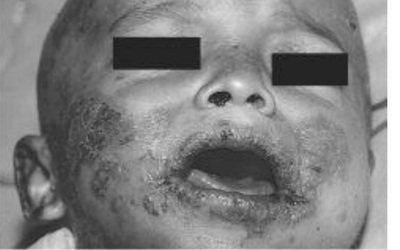
A Cobre
B Ferro
C Selênio
D Zinco
Questão 106 · Pediatria · 4000194376Qual das características abaixo sugere que uma convulsão na vigência de febre
A Ocorrência de convulsão tônico-clônica generalizada
B Convulsão que se repete no mesmo episódio febril
C Ocorrência nas primeiras 24 horas de febre
D Criança com idade entre seis meses e seis anos
Questão 107 · Pediatria · 4000194375Menino de três anos previamente hígido, dá entrada na Unidade de Pronto Atendimento com história de massa abdominal palpada pela mãe durante o banho. Ao exame apresenta bom estado geral, pressão arterial no percentil 95 para a idade. Volumosa massa de limites imprecisos palpada em anco esquerdo. A hipótese diagnóstica
A Hepatoblastoma
B Linfoma não-Hodgkin
C Neuroblastoma
D Tumor de Wilms
Questão 108 · Pediatria · 4000194374Em relação ao tratamento da asma, assinale a alternativa ERRADA:
A criança com asma intermitente e que apresentou crise grave, deve receber corticoide inalatório de forma preventiva
B durante a crise aguda de asma deve-se dar preferência ao corticoide por via endovenosa
C o corticoide inalatório é a terapêutica de primeira escolha na prevenção de todas as formas de asma persistente
D os corticoides inalatórios constituem a medicação antiinflamatória mais efetiva no tratamento da crise aguda
Questão 109 · Tratamento da hiperbilirrubinemia · Fatores de risco para hiperbilirrubinemia · 4000194342Hiperbilirrubinemia não f isiológica Um recém-nascido a termo recebeu alta com orientações gerais, mas retornou para avaliação após 72 horas. A mãe relata que, embora ele estivesse bem, estava preocupada, pois achava que o “amarelão” estava cando cada vez mais acentuado. Na avaliação médica, observou-se icterícia (3+/4+), Zona 4 de Kramer. A criança foi internada e foram solicitados exames laboratoriais. A bilirrubina total era de 25,6 mg/dL às custas da fração de bilirrubina indireta. Não havia histórico de incompatibilidade ABO ou Rh. Considerando o caso clínico, assinale a opção que apresenta, corretamente, a causa de hiperbilirrubinemia indireta neonatal associada à sua siopatologia, a avaliação complementar de diagnóstico e a conduta imediata, respectivamente.
A Alfatalassemia (doença hemolítica); teste do pezinho; fototerapia.
B Hipotireoidismo (policitemia); dosagem de hormônio tireoidiano; exsanguíneo transfusão.
C Síndrome de Crigler Najjar (doença hemolítica); teste do pezinho; exsanguíneo transfusão.
D Estenose hipertrófica de piloro (coleção sanguínea extravascular); ultrassonografia abdominal; fototerapia.
Questão 110 · Tratamento Medicamentoso das Epilepsias · Distúrbios metabólicos do período neonatal · 4000194337Um recém-nascido de 12 dias de vida foi levado à unidade de pronto-socorro por apresentar vômitos, anorexia, irritabilidade, desconforto respiratório e convulsões. O hemograma completo mostrou anemia. A análise do líquido cefalorraquidiano mostrou pleocitose discreta com predomínio de células mononucleares, hiperproteinorraquia e glicorraquia normal. Na admissão, ainda em crise convulsiva, foi medicado com fenobarbital, com dose de ataque de 20 mg/kg, porém permaneceu com crises epilépticas subentrantes. Considerando-se como a principal etiologia uma infecção do sistema nervoso central, para o manejo da condição apresentada pelo paciente deverá ser administrado
A diazepam, fenitoína, tiopental.
B fenitoína, midazolam, tiopental.
C fenitoína, lorazepam, piridoxina.
D nitrazepam, fenitoína, piridoxina.
Questão 111 · Sinais e sintomas · 4000194332Um recém-nascido de 2 dias de vida, a termo, sem pré-natal adequado e que está em alojamento conjunto, vem apresentando icterícia e hepatomegalia. Na investigação, foi realizado o diagnóstico de toxoplasmose congênita. Como uma complicação dessa doença, a criança poderá apresentar
A hipoglicemia.
B coriorretinite.
C pneumonia alba.
D hipogamaglobulinemia.
Questão 112 · Tratamento · 4000194312Retorna a maternidade um recém-nascido com 3 dias, conforme sua cha, ele nasceu com 37 semanas de gestação por parto cesáreo devido à restrição de crescimento intrauterino e centralização fetal, pesando 1.950 gramas, Apgar 8/9 e com bolsa rota no ato. A mãe relata ter 34 anos, que não houve intercorrências na gestação, que as sorologias do pré-natal apresentaram-se não reagentes, que foi feito o teste da orelhinha no recém-nascido e que os olhos e o coração dele se apresentaram sem alterações. Acrescenta que seu lho recebeu alta da maternidade com 24 horas de vida. Ao exame físico, a criança apresenta um peso de 1.850 gramas, estatura de 44 cm, perímetro cefálico de 27 cm e mostra-se ativo, reativo, algo irritado, ictérico, notando-se a presença de petéquias na pele; abdome com fígado palpável a 5 cm e baço a 2 cm do rebordo costal, não havendo alterações no restante do exame. O hemograma apresenta anemia, leucopenia e plaquetopenia; também hiperbilirrubinemia às custas principalmente de elevação de bilirrubinas diretas; transaminases 4 vezes acima dos valores de referência e ultrassom de crânio com leucomalácia periventricular e calcificações periventriculares. Considerando-se esses dados, quais são, respectivamente, a hipótese diagnóstica e o manejo adequado para o caso?
A Sífilis congênita; uso de penicilina cristalina por 10 dias, avaliação neurológica, oftalmológica e fonoaudiológica.
B Citomegalovirose; uso de aciclovir por 2 meses, acompanhamento mensal com pediatra na unidade básica de saúde.
C Sífilis congênita; uso de penicilina procaína por 10 dias, seguimento mensal com pediatria na unidade básica de saúde.
D Citomegalovirose; uso de ganciclovir por 6 meses, acompanhamento auditivo com fonoaudiólogo e otorrinolaringologista.
Questão 113 · Alimentação do lactente · 4000194302Ao fazer o histórico alimentar de uma criança de 12 meses com alergia ao leite de vaca, a pediatra ouve o seguinte relato da mãe da criança: “ao acordar ofereço um suco; no lanche do meio da manhã, dou fruta e castanhas; no almoço, ela come diariamente folhas, legumes cozidos e crus e, eventualmente, arroz e feijão; à tarde, ofereço um lanche com fruta, bolo ou biscoito; à noite, sopa de legumes acrescido de macarrão e azeite; e, antes de dormir, suco”. Considerando-se o relato da mãe, qual grupo de nutrientes está deficiente na alimentação dessa lactente?
A Vitaminas.
B Gorduras.
C Carboidratos.
D Aminoácidos essenciais.
Questão 114 · Ventilação com pressão positiva · 4000194297Um pediatra é chamado para atendimento de um recém- nascido (RN) em sala de parto, sendo informado de que a gestante não realizou pré-natal. A criança nasce em apneia. O cordão umbilical foi clampeado imediatamente e o RN é levado à mesa de reanimação. O pediatra realiza os passos iniciais em, no máximo, 30 segundos, mas o RN continua em apneia. Considerando-se o quadro clínico descrito, qual é a conduta adequada nesse momento?
A Oferecer oxigênio inalatório.
B Indicar a entubação traqueal.
C Aplicar estímulo tátil com fricção circular no abdome.
D Iniciar a ventilação com pressão positiva por máscara.
Questão 115 · Inf ecção do Trato Urinário · Pediatria · 4000194282Uma pré-escolar com queixa principal de febre e dor ao urinar está sendo atendida em uma unidade de pronto atendimento. A mãe relata que, há 2 dias, após uma longa viagem de carro, a menor iniciou quadro de febre de 38-39 °C, associada a dor em baixo ventre de forte intensidade, disúria e um episódio de vômitos. Conta que ela aceita parcialmente a dieta, que a diurese está presente e as fezes também, e sem alterações. Refere ocorrência de um episódio semelhante há 6 meses. O diagnóstico dessa condição clínica é confirmado pelo achado de
A qualquer contagem de colônias na coleta pela técnica
B mais de 1.000 UFC/mL, na coleta por cateterismo vesical.
C qualquer valor de piócitos no exame de urina.
D 10.000 UFC/mL na coleta por jato médio.
Questão 116 · Tratamento de Manutenção · Pediatria · Classif icação e Tratamento da Crise · 4000194270Uma criança com 8 anos chega, com sua mãe, à unidade de saúde da família com queixa de dispneia e sibilância há cerca de 2 horas. A criança tem histórico de asma, em acompanhamento na unidade, fazendo uso de beclometasona 200 mcg por dia. Quando questionada sobre o controle das crises da criança, a mãe refere que vinha usando salbutamol 100 mcg, 3 a 4 vezes por semana, devido a quadros de tosse seca e discreto desconforto respiratório. Relata que, hoje, porém, mesmo após 2 pu s de salbutamol, os sintomas apresentados pela criança estavam mais intensos e persistentes. A criança demonstra desconforto e agitação, com fala entrecortada, frequência respiratória de 32 incursões respiratórias por minuto, frequência cardíaca de 110 batimentos por minuto, saturação de O2 de 89% em ar ambiente, sibilos difusos e tiragem intercostal. Nesse caso, as condutas médicas para o controle da crise e para o tratamento de manutenção contra a asma devem ser, respectivamente,
A indicar máscara de oxigênio, para manter saturação entre 93 e 95%, beta-2 agonista de curta duração inalatório 6 puffs, que poderá ser repetido a cada 20 minutos e, se necessário, brometo de ipratrópio e prednisolona 2-4 mg/kg, enquanto aguarda a remoção da criança para internação; e aumentar Beclometasona para 200 mcg 12/12h, mantendo o corticoide oral por 5 a 7 dias.
B indicar máscara de oxigênio, para manter saturação entre 94 e 98%, beta-2 agonista de curta duração inalatório 2 puffs, que poderá ser repetido a cada 20 minutos, brometo de ipratrópio e, se necessário, prednisolona 1-2 mg/kg, enquanto aguarda a remoção da criança para internação; e aumentar Beclometasona para 200 mcg 12/12h, mantendo o corticoide oral por 3 a 5 dias.
C indicar máscara de oxigênio, para manter saturação entre 94 e 98%, beta-2 agonista de curta duração inalatório 6 puffs, que poderá ser repetido a cada 20 minutos, brometo de ipratrópio e prednisolona 1-2 mg/kg, enquanto aguarda a remoção da criança para internação; e aumentar Beclometasona para 200 mcg 12/12h, associar agonista beta-2 de longa duração, mantendo o corticoide oral por 3 a 5 dias.
D indicar máscara de oxigênio, para manter saturação entre 93 e 95%, beta-2 agonista de curta duração inalatório 2 puffs, que poderá ser repetido a cada 20 minutos, brometo de ipratrópio e, se necessário, prednisolona 1-2 mg/kg, enquanto mantém a criança em observação na unidade de saúde; e manter Beclometasona 200 mcg por dia, associar agonista beta-2 de longa duração, mantendo o corticoide oral por 5 a 7 dias.
Questão 117 · Maus tratos à crianças e adolescentes · 4000194262Uma criança com dois anos é atendida em consulta de puericultura com história de ter apresentado, há aproximadamente 1 mês, uma queimadura de segundo grau em tronco devido a derramamento de conteúdo de uma panela que estava sobre o fogão e foi puxada pelo cabo pela criança. Esse tipo de queimadura caracteriza
A um acidente, porque foi um evento fortuito, que ocorreu ao acaso.
B um caso de maus tratos devido às características clínicas da queimadura.
C uma negligência, uma vez que existiam fatores de risco que poderiam ser evitadas.
D um caso de violência doméstica devido às características epidemiológicas da queimadura.
Questão 118 · Emergências Pediátricas Parada Cardiorrespiratória PCR e Arritmias na Emergência · 4000194257Um pré-escolar aguardando um atendimento eletivo foi vítima de colapso súbito em ambiente intra- hospitalar; parece inconsciente e está cianótico. De acordo com as diretrizes do suporte avançado de pediatria (2020), deve-se, inicialmente,
A avaliar a responsividade e, se não houver resposta, chamar por ajuda; logo após palpar pulso carotídeo e verificar a respiração, simultaneamente; se pulso carotídeo ausente, iniciar compressões torácicas (15 compressões torácicas: 2 ventilações).
B avaliar a responsividade e, se não houver resposta, chamar por ajuda; logo após palpar pulso radial e verificar a respiração, simultaneamente; se pulso radial ausente, iniciar compressões torácicas (30 compressões torácicas: 2 ventilações).
C chamar por ajuda, avaliar a responsividade e, se não houver resposta, palpar pulso radial e verificar a respiração, simultaneamente; se pulso radial ausente, iniciar compressões torácicas (15 compressões torácicas: 2 ventilações).
D chamar por ajuda e, se não houver resposta, palpar pulso carotídeo e verificar a respiração, simultaneamente; se pulso carotídeo ausente, iniciar compressões torácicas (30 compressões torácicas: 2 ventilações).
Questão 119 · Pediatria · Diagnóstico Nutricional · Síndrome de Down · 4000194252Uma criança com 2 anos, do sexo feminino, com síndrome de Down, comparece à unidade básica de saúde para acompanhamento do estado nutricional. A respeito da avaliação nutricional de crianças com síndrome de Down, assinale a opção correta.
A O peso ideal, para crianças obesas com essa síndrome de Down, é utilizado para estimar as necessidades nutricionais.
B O peso corporal é utilizado como um dos marcadores diretos da massa proteica e de reservas de energia em crianças com e sem síndrome de Down.
C As curvas antropométricas específicas de desenvolvimento para a faixa de idade devem ser consultadas para crianças com síndrome de Down.
D As crianças com síndrome de Down, assim como os adultos, podem ter a sua altura estimada pela extensão da perna esquerda.
Questão 121 · Pediatria · 4000194224Assinale a alternativa que apresenta a denominação para alteração abrupta e patológica na função cognitiva e/ou comportamento causada por um distúrbio cerebral funcional ou estrutural subjacente:
A Meningite.
B Encefalite.
C Anoxia.
D Encefalopatia aguda.
Questão 122 · Pediatria · 4000194223Assinale a alternativa que contém uma indicação de ECMO VV.
A Arritmias refratárias e com instabilidade hemodinâmica.
B Suporte ventilatório mecânico invasivo por menos de 14 dias.
C Ponte para transplante cardíaco ou VAD.
D PCR.
Questão 123 · Pediatria · 4000194222Assinale a alternativa incorreta sobre o diagnóstico da miocardite.
A O ECG apresenta alterações em quase todos os casos de miocardite, sendo a inversão da onda T a principal alteração.
B A biopsia endomiocárdica é o padrão ouro para o diagnóstico, porém tem baixa sensibilidade.
C A sorologia viral deve ser solicitada na suspeita de miocardite, visto que a etiologia viral é a mais comum.
D A RNM cardíaca é capaz de avaliar sinais de inflamação e fibrose miocárdica, porém é incapaz de detectar a presença do vírus no miocárdio.
Questão 124 · Principais cardiopatias congênitas · Síndrome de Down · 4000194221Qual é a cardiopatia cirúrgica mais comum na Trissomia do 21?
A DSAVt.
B CIA.
C Tetralogia de Fallot.
D CIV.
Questão 125 · Pediatria · 4000194220Quando a urticária pode ser o início de uma reação anafilática mais grave?
A Quando a pele apresentar urticária disseminada com angioedema.
B Quando o prurido for intenso sem melhora com anti-histamínicos.
C Quando houver dor abdominal e vômitos no dia anterior à urticária.
D Quando houver acometimento rápido da pele associado à falta de ar e sibilos.
Questão 126 · Pediatria · 4000194219Qual das seguintes drogas é a melhor escolha para intubação de um paciente politraumatizado com instabilidade hemodinâmica?
A Tipoental.
B Propofol.
C Etomidato.
D Fentanila.
Questão 127 · Pediatria · 4000194218Com relação à avaliação de paciente com suspeita de trauma abdominal, é possível afirmar que:
A Uma E-FAST negativa afasta lesão intra-abdominal.
B Um aumento de transaminases (TGO maior do que 200U/L ou TGP maior do que 125U/L) está associado a trauma contuso abdominal.
C A lesão do cinto de segurança (abrasão e hematoma infraumbilical) não aumenta o risco de trauma abdominal.
D O melhor exame de imagem inicial é a ecografia abdominal se houver suspeita de lesão pancreática.
Questão 128 · Pediatria · 4000194217Assinale a alternativa correta sobre a contagem de carboidratos no paciente com diabetes melito.
A Consiste em conhecer a quantidade de alimentos que se deve ingerir em cada refeição.
B Consiste em conhecer a quantidade de alimentos que não se deve ingerir em cada refeição.
C Consiste em fazer refeições isentas de carboidratos.
D Consiste em conhecer a quantidade de alimentos que será ingerida e aplicar a quantidade de insulina necessária para cada refeição.
Questão 129 · Pediatria · 4000194216Sobre o diagnóstico de encefalite, de acordo com o International Encephalitis Consortium (IEC), assinale a alternativa correta.
A Se houver três critérios menores, não é necessário que haja alteração do estado mental para o diagnóstico de encefalite.
B Apenas com a presença de alteração do estado mental mais três ou mais sinais menores pode-se confirmar o diagnóstico de encefalite.
C A presença de alteração do estado mental e a febre confirmam o diagnóstico de encefalite.
D A presença de mais de cem leucócitos no líquor é critério menor para diagnóstico de encefalite.
Questão 130 · Pediatria · 4000194215Com relação às infecções bacterianas consideradas diagnósticos diferenciais de hepatoesplenomegalias febril, assinale a alternativa incorreta.
A Brucelose
B Endocardite
C Abscesso cutâneo
D Tuberculose
Questão 131 · Pediatria · 4000194214Assinale a alternativa incorreta sobre a purpura de Henoch-Schonlein.
A É caracterizada por lesões purpúricas palpáveis não trombóticas, nos membros inferiores e nas nádegas, dor abdominal, artrite e nefrite.
B Além dos agentes infecciosos, os medicamentos, alimentos e insetos podem provocar urticaria aguda em crianças e adolescentes.
C Em casos com dor abdominal ou articular importante, os corticoides sistêmicos podem aliviar tais sintomas.
D Apenas nos casos graves, com necessidade de internação em terapia intensiva, o tratamento sintomático se faz necessário.
Questão 132 · Pediatria · 4000194213A leishmaniose visceral pode ser uma doença grave e levar ao óbito se não tratada. Com relação aos fatores que se relacionam diretamente com uma maior possibilidade de óbito, assinale a alternativa correta:
A Infecção bacteriana
B Leucocitose
C Idade entre 1 e 40 anos
D Plaquetopenia com contagem inferior a 60.000/mm³
Questão 133 · Pediatria · 4000194212Assinale a alternativa correta em relação ao uso de corticoide oral na urticária:
A A dose inicial é de 2mg/Kg/dia.
B Se introduzido corticoide oral, manter dose baixa de 1mg/Kg/dia por mais 2 a 5 dias se necessário.
C Deve ser utilizado por, no máximo, 3 dias.
D Independente da evolução, o corticoide deve ser usado por 5 dias.
Questão 134 · Pediatria · 4000194211Com relação aos efeitos colaterais da anfotericina B lipossomal, assinale a alternativa incorreta:
A Febre
B Dor lombar
C Falta de ar
D Calafrios
Questão 135 · Pediatria · 4000194210Sobre os dados necessários para fazer o diagnóstico de síndrome de Kallmann, assinale a alternativa incorreta.
A Dosagens séricas alteradas da TSH, T4 livre, GH, IGF-1, ACTH e/ou cortisol.
B Histórico pessoal ou familiar de hiposmia/ anosmia.
C Histórico familial de puberdade atrasada.
D Hipoplasia ou agenesia de bulbos olfatórios na ressonância magnética.
Questão 136 · Pediatria · 4000194209Com relação aos achados indicativos de internação hospitalar para um paciente pediátrico com doença falciforme, assinale a alternativa incorreta.
A Idade inferior a 2 anos
B Leucócitos totais de 18.000células/µL
C Hb de 4,9g/dL
D Má perfusão periférica
Questão 137 · Pediatria · 4000194208Assinale a alternativa correta sobre choque séptico na criança:
A A melhor definição atual de choque séptico pediátrico para determinar o tratamento é quanto a choque quente ou frio.
B Todo paciente pediátrico com choque séptico deve ter medida invasiva de débito cardíaco e pressão venosa central.
C O uso de critérios clínicos como frequência cardíaca, débito urinário, frequência respiratória, pressão arterial e status neurológico são importantes para o seguimento do paciente pediátrico com choque séptico.
D Protocolos para reconhecimento precoce do choque séptico pediátrico não mudam seu desfecho.
Questão 138 · Síndrome Inf lamatória Multissistêmica · 4000194207Qual é o sintoma mais frequente encontrado na apresentação da Síndrome In amatória Mutissistêmica Pediátrica (SIM-P)?
A Febre.
B Diarreia.
C Dispneia.
D Hipotensão.
Questão 139 · Pediatria · 4000194206Sobre a fisiopatologia do choque em crianças, assinale a alternativa correta.
A Hipovolemia não é fator importante no desenvolvimento do choque séptico em crianças.
B O débito cardíaco, visto que não é influenciado diretamente pela FC em crianças, não é componente fundamental do choque séptico nesses pacientes.
C O principal determinante do VO2 em crianças com choque é a redução da DO2.
D Na criança com choque séptico, o VO2 está relacionado, sobretudo, ao aumento do trabalho respiratório característico desse cenário clínico.
Questão 140 · Pediatria · 4000194205Qual das alternativas a seguir apresenta a principal terapia contra as causas subjacentes da sepse?
A Antimicrobianos
B Oxigenioterapia
C Vasoativos
D Hemoderivados
Questão 141 · Pediatria · 4000193990A infecção do Trato Urinário na infância é uma infecção bacteriana comum, atingindo mais o sexo feminino do que o masculino. Seu diagnóstico e seguimento se faz importante pela possibilidade de evolução para cicatriz renal, em caso de pielonefrite e urosepsis nos lactentes. Sobre infecção do trato urinário na pediatria, podemos afirmar que:
A O diagnóstico é realizado apenas pela análise de urina, não necessitando da cultura dessa urina.
B A manifestação clínica é semelhante em todas as faixas etárias da pediatria.
C A maioria dos episódios de infecção do trato urinário é causado por bacilos gram-negativos aeróbicos.
D A taxa de recorrência é muito baixa após a primeira infecção.
E Não há relação com malformação de trato genito-urinário.
Questão 142 · Calendário dos adolescentes · 4000193989A mãe de um lactente que você atende no posto está muito preocupada com a vacinação de seu lho mais velho, um adolescente de 12 anos, sexo masculino e solicitou que você orientasse quais vacinas ele deve receber. Segundo o Programa Nacional de Imunização, sendo este adolescente sem comorbidades com vacinas completas na infância inclusive hepatite B, 3 doses; febre amarela, 1 dose aos 7 anos; e sarampo, caxumba e rubéola, 2 doses, ele deve receber, de forma gratuita,
A meningite A, HPV, febre amarela.
B tríplice Bacteriana, tríplice viral e Haemophilus b, COVID.
C tríplice viral, HPV e meningite B.
D tríplice bacteriana celular aos 15 anos, HPV e meningite C.
E difteria e tétano com 15 anos, HPV, meningite ACWY e COVID.
Questão 143 · Neonatal · 4000193988Pais chegam ao pronto-socorro desesperados por acharem que o lho de 7 dias de vida estava tendo episódios de convulsão. Recém-nascido (RN) termo, peso adequado para idade gestacional, sem intercorrências no pré-natal e no parto, alta do berçário com 48 horas de vida, com icterícia leve, em aleitamento materno exclusivo. Recebeu vacina BCG e hepatite B. Não apresentava história de febre, hipoatividade, inapetência e/ou qualquer outro sinal/sintoma. Ao exame físico: ativo-reativo, ictérico zona I, eupneico, afebril, mucosas úmidas e coradas, fontanela plana e, ao manipular, o RN apresentava movimentos de extensão-abdução dos membros superiores com abertura dos dedos da mão e, em seguida, de exão- adução dos braços à posição original. Tais movimentos eram reconhecidos pelos pais como episódios convulsivos. Quais seriam o diagnóstico e conduta mais adequados nesse caso?
A Reflexo de Moro – orientar quanto a ser um reflexo primitivo fisiológico que pode perdurar até 6 meses.
B Sepse neonatal tardia – coleta de exames, internação com antibioticoterapia.
C Meningite Bacteriana – coleta de exames incluindo líquor e internação com antibioticoterapia.
D Convulsão neonatal – prescrever Diazepam, colher exames para triagem infecciosa e solicitar eletroencefalograma.
E Reação vacinal – internar para observar e fazer a notificação para vigilância epidemiológica de eventos adversos a vacina.
Questão 144 · Testes de triagem neonatal · 4000193987Ao nascer todos os bebês brasileiros são submetidos a testes de triagem que visam detectar precocemente doenças, antes de surgirem os sintomas, possibilitando o tratamento oportuno e prevenindo complicações e sequelas. Através de exames simples identi cam-se as crianças que necessitarão de investigação mais apurada, a m confirmar o diagnóstico. Se confirmado, essas crianças são então encaminhadas para tratamento e acompanhamento adequados. Esses exames são:
A Teste do pezinho, teste do coraçãozinho e Apgar.
B Teste do pezinho, teste do coraçãozinho, teste da orelhinha e teste do olhinho.
C Apgar, teste do coraçãozinho e teste pezinho.
D Apenas teste do pezinho e teste do coraçãozinho.
E Apgar, reflexos e teste do pezinho.
Questão 145 · Pediatria · 4000193986Um casal procurou pediatra para realização da consulta pediátrica neonatal. O médico, dentre outros temas, abordou o aleitamento materno. Sobre isso, é correto dizer:
A A lactante precisa ter um boa alimentação e ingesta de líquido para que seu leite não fique fraco e necessite de complementação.
B Com relação a pega, as bochechas devem se apresentar encovadas durante a amamentação.
C É normal a lactante apresentar dor durante a amamentação.
D A pega adequada da criança na mama previne fissuras em mamilos e garante a ingesta adequada de leite.
E Não se deve ordenhar a mama pois reduz a produção de leite.
Questão 146 · Pediatria · 4000193985Os pais estão preocupados com o lho de 3 meses pois esse lho é mais tranquilo que os irmãos na idade dele, dorme bem à noite e passa o dia acordado, ativo, sem resmungar. O bebê está em aleitamento materno exclusivo; os pais acham que ele deve estar fazendo hipoglicemia. Lactente nascido via parto vaginal, a termo, peso ao nascimento 3.200g. Hoje, no exame físico, peso de 6.000g, ativo, acianótico, anictérico, eupneico, mucosas úmidas e coradas, fontanela normotensa. O bebê observa um rosto, segue objetos ultrapassando a linha média, reage ao som, vocaliza, sorri. Qual a melhor conduta neste caso?
A Manter aleitamento materno exclusivo e tranquilizar os pais.
B Encaminhar ao pronto socorro para realização de glicemia capilar.
C Iniciar fórmula infantil hipercalórica e reavaliar em uma semana.
D Suspender o aleitamento materno e basear dieta apenas em fórmulas infantis maternizadas e chás açucarados.
E Tranquilizar os pais e já iniciar complementação com dietas de papas de frutas.
Questão 147 · Pediatria · 4000193984Durante um acompanhamento de puericultura é avaliado um lactente de 12 meses. Nega intercorrências pré e perinatal. Recebeu aleitamento materno exclusivo até 6 meses de idade e, atualmente, alimentação dentro dos padrões preconizados. Recebeu todas as vacinas do Programa Nacional de Imunização. Ao avaliar o desenvolvimento, você espera que os seguintes marcos estejam presentes:
A Falar frases, birras, controle de esfíncter.
B Ficar de pé com apoio, pinça completa (polpa a polpa), falar palavras.
C Empilhar 3 a 4 cubos, vocabulário com mais de 10 palavras.
D Controle do esfíncter, andar sem apoio
E Andar sem apoio, subir escadas, vocabulário com mais de 15 palavras.
Questão 148 · Pediatria · 4000193983Adolescente, sexo feminino, 11 anos, é levada para atendimento médico por sua mãe. Ambas com bastante dúvida com relação à puberdade e ao momento em que vai acontecer a menarca. Ao exame físico, foi notado que a adolescente se encontrava no estágio III. de maturação sexual de Tanner para mama e pili cação (M3 P3. Foi abordado então pelo hebiatra que, provavelmente, em torno de 6 meses acontecerá a menarca, baseado na sequência em que normalmente os eventos puberais acontecem. Assinale a alternativa com a sequência CORRETA desses eventos
A Estirão de crescimento – telarca – pico de velocidade de crescimento – menarca.
B Adrenarca – telarca – estirão de crescimento – parada do crescimento – menarca.
C Gonadarca – pico de velocidade de crescimento – telarca – parada do crescimento – menarca.
D Menarca – aceleração da velocidade de crescimento – pico de velocidade de crescimento – redução da velocidade de crescimento.
E Telarca – aceleração de velocidade de crescimento – pico de velocidade de crescimento – redução da velocidade de crescimento – menarca – parada do crescimento.
Questão 149 · Pediatria · 4000193982André, 13 anos, solicita à sua mãe que marque uma consulta pois os amigos estão crescendo bastante e ele se tornando o “menor da turma”. Adolescente hígido, sem histórico de internações, nega uso contínuo de medicações. Pai refere história semelhante ao do lho quando era adolescente, mas depois cresceu bastante. No exame físico: Estatura 150 cm (escore z -1), peso 45 kg. Tanner G2P1, sem evidência de alterações no restante do exame. Solicitada idade óssea compatível com 11 anos e 6 meses; altura alvo: 175 cm (escore z entre 0 e -1). Qual seria a conduta nesse caso?
A Solicitar exames para investigação de Baixa Estatura.
B Indicar o uso de hormônio de crescimento.
C Tranquilizar adolescente por se tratar de retardo constitucional do crescimento e fazer acompanhamento com velocidade de crescimento.
D Avaliar função da tireoide e cortisol.
E Solicitar um cariótipo por suspeita de Síndrome de Klinefelter.
Questão 150 · Pediatria · 4000193981Com o aumento dos distúrbios psiquiátricos na adolescência é importante sempre tentar identi car, nos adolescentes, sinais de alerta. São eles:
A Desânimo com prejuízo nas atividades rotineiras.
B Separação progressiva dos pais.
C Atitude contraditória.
D Flutuações de humor.
E Crises religiosas.
Questão 151 · Pediatria · 4000193980Escolar, sexo feminino, foi levada ao pronto socorro por seus pais por apresentar epistaxe e equimoses ao longo do corpo, há 5 dias. Criança previamente hígida, sem histórico de internações, porém apresentou um quadro de infecção de vias aéreas, há 1 mês. Ao exame físico foi evidenciado equimoses em membros inferiores e superiores, ausência de visceromegalias, linfonodomegalias e sangramentos ativos. Solicitado hemograma com hemoglobina 11,2 g/dl, Leucócitos com 6400/ mm3 e plaquetas de 10.000/ mm3. Qual diagnóstico mais provável?
A Leucemia Linfóide Aguda
B Leucemia Mielóide Crônica
C Doença de Von Willebrand
D Trombocitopenia imune primária
E Púrpura de Henoch- Schonlein
Questão 152 · Pediatria · 4000193979Mãe notou que seu lho, de 2 anos de idade, apresenta edema periocular pela manhã e também de membros inferiores ao longo do dia, e urina espumosa. Marcou consulta com pediatra de rotina para avaliação. Ao exame físico, pediatra notou um ganho de peso de 5 kg em 6 meses, aparelho respiratório e cardiológico sem alteração, abdome indolor à palpação e membros inferiores com edema 2+/4+, mole, frio e depressível. Veri cam-se também FC = 106 bpm, FR = 26 irpm, PA no percentil 50, T = 36,5 ºC e SatO2 = 100% em AA. Qual seria a melhor conduta nesse momento?
A Encaminhar ao pronto socorro para receber albumina agora.
B Iniciar corticoterapia neste momento.
C Solicitar triagem infecciosa.
D Solicitar apenas sedimento urinário, proteinúria 24h.
E Solicitar sedimento urinário, proteinúria 24h, proteínas totais e frações, lípides, complemento, função renal.
Questão 153 · Pediatria · 4000193978Adolescente, 12 anos, chega ao pronto socorro com queixa de cefaleia importante, progressiva, há 3 dias, associada a vômito e febre. Mãe refere que teve caso de meningite meningocócica na sala de aula da adolescente. Ao exame físico, prostrada, facie de dor, rigidez de nuca, sinais de Kerning e Brudzinski presentes. O médico do pronto socorro optou por coletar líquor. Sendo alta a probabilidade desse líquor vir com características de meningite bacteriana, o que podemos esperar:
A Glicose diminuída, microscopia positiva para gram, células predominantes: neutrófilos.
B Glicose normal, microscopia negativa para gram, células predominantes: neutrófilos.
C Pressão normal, glicose normal, microscopia negativa para gram, menos que 15 células.
D Pressão normal, glicose diminuída, microscopia positiva para gram, células predominantes: linfomonocitária.
E Nenhuma das alternativas está correta.
Questão 154 · Pediatria · 4000193977A bronquiolite viral aguda (BVA) é uma doença inflamatória inespecí ca que afeta as vias aéreas de pequeno calibre. É caracterizada por in amação aguda, edema e necrose de células epiteliais do trato respiratório das pequenas vias aéreas, promovendo impactação de muco intraluminal, causada por vírus. É uma enfermidade frequente no primeiro ano de vida. Em relação à bronquiolite viral, analise as assertivas abaixo: I. As complicações mais frequentes são insu ciência respiratória aguda grave; sibilância recorrente no período de lactente e bronquiolite obliterante; II. O tratamento da bronquiolite tem por base a oxigenioterapia, hidratação e corticoidoterapia; III. O diagnóstico é realizado com hemograma e Rx de tórax. IV. Os principais achados radiológicos são: hiperinsu ação torácica difusa, hipertransparência e reti cação de diafragma. Assinale a(s) alternativa(s) CORRETA(S).
A I e II, apenas.
B I, III e IV, apenas.
C IV, apenas.
D I e IV, apenas.
E II e IV, apenas.
Revisar: possível letra faltando em enunciado
Questão 155 · Mononucleose · Mononucleose Inf ecciosa · 4000193976Uma adolescente, 11 anos, apresentou um quadro de erupção cutânea após uso de amoxicilina prescrita pelo seu médico, devido a um quadro de odinofagia com aumento das tonsilas palatinas com exsudato associado à hepatomegalia. Qual seria o provável diagnóstico e agente?
A Mononucleose infecciosa causada pelo Sars-COV 2.
B Mononucleose infecciosa causada pelo vírus Epstein-Barr.
C Amigdalite bacteriana causada pelo Streptococus epidermidis.
D Urticária crônica causada pela amoxicilina.
E Reação leucemoide, desencadeada pela amoxicilina, e quadro viral.
Questão 156 · Pediatria · 4000193975Criança de 1 ano é levada à emergência com relato de ter sido picada, na mão, por um escorpião amarelo, há cerca de 15 minutos, na escola. Chorava muito, estava agitada, vomitou várias vezes, apresentava sudorese profusa, sialorreia, taquicardia, taquipneia e hipertensão. Para esse caso, a medida terapêutica mais importante é
A antibiótico sistêmico e sedação.
B analgésico sistêmico.
C soro antiescorpiônico 6 ampolas.
D bloqueio anestésico local.
E analgesia com dipirona e bloqueio.
Questão 157 · Sopro na inf ância · 4000193910O sopro cardíaco pediátrico decorre de turbulência do uxo sanguíneo, podendo ser siológico ou patológico. É considerado sugestivo de sopro patológico:
A Sopro de Still: audível no início da sístole, musical ou vibratório, melhor audível em bordo esternal esquerdo baixo, que reduz de intensidade quando o paciente muda da posição supina para sentada, comum em todas as faixas etárias.
B Sopro sistólico aórtico: sopro sistólico de ejeção audível em bordo esternal direito alto, mais frequente em crianças mais velhas e adolescentes.
C Sopro de fluxo pulmonar: sopro sistólico de ejeção, crescendo e decrescendo, audível em bordo esternal esquerdo alto, que diminui de intensidade quando o paciente está deitado e levanta.
D Sopro sistólico supraventricular: sopro audível em região supra clavicular, de ejeção, curto, que reduz intensidade com hiperextensão dos ombros e é mais frequente em crianças mais velhas e adolescentes.
E Presença de sopro holossistólico, sopro diastólico, de intensidade maior ou igual a 3+/6+, presença de segunda bulha anormal ou que aumenta de intensidade com a criança sentada ou em pé.
Questão 158 · Pediatria · 4000193909Paciente escolar, 6 anos, foi levada à consulta por sua mãe, queixando que seu broto mamário apareceu há 6 meses e agora está com pelos grossos nos grandes lábios. Nega outras queixas. Nega sangramento vaginal. Ao exame: Tanner M3P2, altura 1,40m ( acima do percentil 95), PA 100x60, FC 80 bpm. Aparelho respiratório: murmúrio vesicular siológico, sem ruídos adventícios; aparelho cardiovascular: ritmo cardíaco regular em 2 tempos, abdome indolor e sem visceromegalias. Idade óssea de 10 anos. Qual o provável diagnóstico da puberdade precoce dessa paciente?
A Puberdade precoce central.
B Puberdade precoce periférica.
C Puberdade incompleta.
D Puberdade precoce tipo telarca isolada.
E Puberdade precoce tipo pubarca isolada.
Questão 159 · Pediatria · 4000193908Paciente de 4 meses de vida, em aleitamento materno exclusivo, tem história de regurgitações pós- alimentares, com choro e irritabilidade. A mãe refere que o filho apresentou alguns episódios de arqueamento do tronco. O pediatra veri cou desaceleração do ganho ponderal. Com base nesse caso hipotético, assinale a alternativa correta.
A Uma endoscopia digestiva normal afastaria a doença do refluxo gastroesofágico.
B Indica-se a exclusão dietética da proteína do leite de vaca para a mãe, por pelo menos duas semanas.
C Deve ser iniciado o tratamento com inibidor de bomba de próton.
D A phmetria está indicada por diagnosticar até os refluxos não ácidos.
E O leite de soja é uma opção terapêutica.
Questão 160 · Diagnóstico · 4000193907Paciente masculino, 1 ano de vida, é trazido ao ambulatório de pediatria para consulta de puericultura. Mãe refere que o lho recusa muito os alimentos e, quando come, aceita muito pouco. Nega vômitos, uso de medicamentos. Hábito intestinal: uma evacuação com fezes endurecidas a cada quatro dias. Nega controle es ncteriano. Exame físico: bom estado geral, corado, IMC percentil 3 para a idade; abdome: globoso, ácido, indolor à palpação. O sinal de alarme a ser considerado no diagnóstico diferencial da constipação intestinal é:
A Saciedade precoce.
B Recusa alimentar.
C Incontinência retentiva.
D Retardo de crescimento.
E Não há sinal de alarme neste caso.
Questão 161 · Pediatria · 4000193906Pré-escolar de 4 anos de idade, é atendido na UPA com quadro de diarreia aquosa e volumosa há 5 dias, com restos alimentares, gordurosa, sem muco ou sangue. Mãe relata episódio semelhante há I5 dias. Ao exame físico, abdômen distendido e timpânico, indolor à palpação profunda e super cial, com ruídos hidroaéreos presentes. No contexto do caso apresentado, o diagnóstico mais provável e sua complicação são:
A Amebíase/ abscessos internos.
B Ascaridíase/ obstrução intestinal.
C Tricuríase/ Prolapso retal.
D Enterobíase/ Insônia.
E Giardíase/ Desnutrição energético- proteica.
Questão 162 · Pediatria · 4000193905Pré-escolar, três anos e cinco meses, sexo feminino, vem apresentando dores ósseas difusas iniciadas há três meses, que não melhoram com o uso de analgésicos comuns, associados à febre baixa intermitente, cefaleia, vômitos frequentes, anorexia, perda ponderal de quatro quilos e irritação com prejuízo de sono. A partir do resultado do hemograma, foi diagnosticado "anemia discreta” tendo sido prescrito sulfato ferroso por seis meses. Há um mês, a mãe notou palidez que vem se acentuando. Exame físico: irritabilidade, fáceis de sofrimento, di culdade para deambular pela dor, hipocorada +/4+, adenomegalias cervicais, axilares e inguinais móveis, broelásticas, não coalescentes, medindo de 0,5 a 1 cm de diâmetro, fígado palpável a 5 cm, do rebordo costal direito, baço a 4 cm do rebordo costal esquerdo, petéquias em membros inferiores e sopro sistólico +/4+ pancardíaco, sem irradiação. A principal hipótese diagnóstica é:
A Neuroblastoma.
B Febre reumática.
C Leucemia linfoide aguda.
D Artrite idiopática juvenil.
E A principal hipótese diagnóstica se mantém de anemia ferropriva que já está sendo tratada.
Questão 163 · Pediatria · 4000193904Paciente pré-escolar de três anos e 6 meses, é levado ao pediatra por apresentar febre alta há 10 dias. Exame físico: edema palpebral, petéquias no palato, exsudato amigdaliano, adenomegalia cervical anterior e posterior, fígado palpável a 4 cm do rebordo costal direito. O exame laboratorial indicado para a confirmação do diagnóstico é:
A Aspirado de medula óssea.
B Sorologia para vírus da dengue.
C Bacterioscopia e cultura da secreção faríngea.
D Teste rápido para pesquisa de estreptococo grupo A.
E Sorologia para vírus de Epstein Barr.
Questão 164 · Pediatria · 4000193903Pré escolar de 3 anos, previamente hígida, há oito meses vem apresentando episódios febris recorrentes, que duram em torno de 3 a 7 dias, com intervalos regulares de 3 a 6 semanas. A febre é alta, custa a ceder com antitérmicos usuais. Durante o quadro, a criança ca prostrada, incomodada. Por vezes, surge exsudação nas amígdalas palatinas, com pequenas úlceras orais e linfadenopatias cervicais. Traz exames realizados durante o episódio febril, que mostram discreta leucocitose, VHS e proteína C reativa elevados. Entre os episódios, a investigação laboratorial é normal. Já recebeu diversos cursos de antibióticos, sem modificação do período febril. Frequenta escola de educação infantil regularmente desde os 9 meses de vida. Em relação à hipótese diagnóstica mais provável, afirma-se que: I. Trata-se da síndrome febril recorrente, mais comum em criança. II. A maioria dos pacientes respondem efetivamente a uma única dose de prednisona. III. A frequência e a intensidade dos episódios tendem a diminuir à medida que avança a idade da criança. Estão corretas as afirmativas:
A I e II, apenas.
B I e III , apenas.
C II e III , apenas.
D I, II e III.
E Todas as alternativas estão incorretas.
Revisar: possível letra faltando em enunciado
Questão 165 · Pediatria · 4000193902Lactente de 5 meses e 20 dias de vida, comparece sem queixas ao consultório médico com história de internações devido à infecção urinária alta aos 20 dias e aos 3 meses. Com 5 meses, apresentou quadro de febre intermitente, inapetência e vômitos, com exame qualitativo de urina que apontou nitrito (+), esterase leucocitária (+) e urocultura colhida por sondagem vesical com mais de 100 000 UFC/ ml de E. coli, tendo completado o tratamento com antimicrobiano com remissão dos sintomas. Realizada ultrassonogra a durante a última internação que não veri cou alterações. Como forma de estender a investigação, assinale a alternativa correta quanto ao exame padrão-ouro para essa situação.
A Cintilografia renal com DMSA.
B Urografia excretora.
C Uretrocistografia miccional.
D Ressonância magnética de abdome.
E Tomografia computadorizada de abdome e pelve.
Questão 166 · Pediatria · 4000193901Lactente masculino, de um mês e meio, com vômitos não biliosos após mamadas há 02 semanas, pior há 01 semana. Nega febre ou diarreia, mamando vorazmente ao seio materno. Sobre essa situação, analise as afirmativas abaixo e marque a opção correta. I. Geralmente a alteração não está presente desde o nascimento. II. Esperamos laboratorialmente a presença de acidose metabólica. III. O melhor exame para confirmar o diagnóstico é a ultrassonografia.
A As afirmativas I e II são verdadeiras. A afirmativa III é falsa.
B As afirmativas I e III são verdadeiras. A afirmativa II é falsa.
C As afirmativas II e III são verdadeiras. A afirmativa I é falsa.
D As afirmativas I, II e III são verdadeiras.
E As afirmativas I, II e III são falsas.
Questão 167 · Suporte Básico de Vida · 4000193900Você encontra uma criança de dez meses de idade cianótica nos braços de sua mãe, que está desesperadamente pedindo socorro, em um espaço público. Durante o pedido de ajuda, você observa que a bebê torna-se desacordada. Existem apenas leigos nos arredores, sendo você o único pro ssional de saúde quali cado para realizar um atendimento de emergência inicial no local. Após a verificação da segurança do local, quais os procedimentos indicados, de forma sistemática, segundo as atuais recomendações internacionais, que devem ser feitos na ordem em que são apresentados?
A Checar responsividade da bebê com estímulos nos ombros e, se arresponsiva, solicitar ajuda para acionamento do serviço médico, checar pulso e respiração em um minuto e, caso estejam ausentes, iniciar reanimação cardiopulmonar pelas compressões torácicas, realizando após a ventilação boca a boca, numa relação de 30 compressões para 2 ventilações.
B Checar responsividade da bebê com estímulos nos pés e, se arresponsiva, solicitar ajuda para acionamento do serviço médico, checar pulso e respiração em dez segundos e, caso estejam ausentes, iniciar reanimação cardiopulmonar pela ventilação de resgate (2 ventilações boca a boca) e, após, compressões torácicas, numa relação de 30 compressões para 2 ventilações.
C Checar responsividade da bebê com estímulos nos ombros e, se arresponsiva, solicitar ajuda para acionamento do serviço médico, checar pulso e respiração em um minuto e, caso estejam ausentes, iniciar reanimação cardiopulmonar pela ventilação de resgate (2 ventilações boca a boca) e, após, compressões torácicas, numa relação de 15 compressões para 2 ventilações.
D Checar responsividade da bebê com estímulos nos pés e, se arresponsiva, solicitar ajuda para acionamento do serviço médico, checar pulso e respiração em dez segundos e, caso estejam ausentes, iniciar reanimação cardiopulmonar pela compressão torácica, realizando após a ventilação boca a boca, numa relação de 15 compressões para 2 ventilações.
E Checar responsividade da bebê com estímulos nos pés e, se arresponsiva, solicitar ajuda para acionamento do serviço médico, checar pulso e respiração em dez segundos e, caso estejam ausentes, iniciar reanimação cardiopulmonar pela compressão torácica, realizando, na sequência, ventilação boca a boca, numa relação de 30 compressões para 2 ventilações.
Revisar: possível letra faltando em enunciado
Questão 168 · Pediatria · 4000193899Menino, 40 dias, em aleitamento materno exclusivo, tem diagnóstico de galactosemia, confirmado pela dosagem enzimática da Galactose-1-fosfato Uridil Transferase (GALT). A orientação alimentar baseada no diagnóstico é:
A Leite materno exclusivo.
B Fórmula infantil de seguimento.
C Fórmula de soja.
D Fórmula infantil de partida.
E Leite de cabra.
Questão 169 · Pediatria · 4000193868Você avalia um neonato com 18 horas de vida que apresenta icterícia zona 2, sem outras alterações no exame físico. Ele nasceu termo, de 39 semanas, com peso adequado para idade gestacional e está mamando bem. A mãe é O negativo, com Coombs direto negativo, e o RN é A negativo, com Coombs direto negativo. Qual é a principal hipótese diagnóstica?
A Icterícia fisiológica
B Icterícia por incompatibilidade ABO
C Icterícia por incompatibilidade Rh
D Icterícia do leite materno
Questão 170 · Pediatria · 4000193867Na UTI neonatal, está internado um RN do sexo feminino que nasceu de 30 semanas de idade gestacional, com peso de nascimento de 1200g. Considerando os dados fornecidos e analisando o gráfico abaixo, podemos classificar o RN em:

A RN pré-termo moderado, muito baixo peso, pequeno para idade gestacional
B RN pré-termo moderado, extremo baixo peso, adequado para idade gestacional
C RN muito pré-termo, muito baixo peso, adequado para idade gestacional.
D RN muito pré-termo, extremo baixo peso, pequeno para idade gestacional.
Questão 171 · Pediatria · 4000193866Após ouvirem no rádio que a cidade onde moram apresentou alguns casos de sarampo, a família Silva procurou a Unidade de Saúde para se vacinar. São eles: - João Silva, 32 anos, não tem carteira de vacinação. - Maria Silva, 28 anos, não tem carteira de vacinação. - Júnior Silva, 12 anos, caderneta de vacinação completa até os 4 anos. - Ana Silva, 8 meses, caderneta de vacinação completa até agora. Sobre a vacinação da família Silva contra o sarampo, podemos afirmar:
A João precisa ser vacinado com duas doses da vacina tríplice viral.
B Maria precisa ser vacinada com três doses da vacina tríplice viral.
C Júnior precisa receber uma dose de reforço da tetra viral.
D Ana precisa receber a dose zero da tríplice viral e, depois, seguir o calendário vacinal normal.
Questão 172 · Pediatria · 4000193865Em 2022, entrou em vigor a lei nº 14.154 que ampliou o rastreamento de doenças no Programa Nacional de Triagem Neonatal. A introdução das doenças será feita em etapas. Na primeira etapa, está prevista a introdução da triagem para:
A Toxoplasmose congênita
B Síndrome de Edwards
C Adrenoleucodistrofia
D Síndrome de Gilbert
Questão 173 · Pediatria · 4000193864Menino de 6 anos é trazido para consulta com queixa de “intestino preso”. Sua mãe relata que ele evacua 2 vezes na semana, com fezes endurecidas e que chegam a entupir o vaso sanitário. Além disso, sente muita dor, por isso se esconde quando tem vontade de evacuar. Nos últimos 6 meses, vem perdendo fezes na cueca diariamente. De hábitos alimentares, gosta muito de leite e come pouca fruta e verduras. Seu peso, estatura e desenvolvimento estão adequados para a idade. Ao exame físico, tem fecaloma palpável e, ao toque, fezes presentes no reto. Qual é a primeira medida a ser tomada para essa criança?
A Solicitar parasitológico de fezes.
B Iniciar medicamento laxativo.
C Solicitar radiografia de abdome contrastado.
D Encaminhar à psicoterapia.
Questão 174 · Pediatria · 4000193863Uma criança de 4 anos chega ao pronto socorro com história de febre há 5 dias, tosse, coriza e inapetência. Ao exame físico, encontra-se afebril com FC: 110 bpm, FR: 44 irpm, presença de retração subcostal, com oximetria de 97% em ar ambiente. A ausculta do aparelho respiratório revela estertores nos em campo médio direito. Diante desse caso hipotético, indique o diagnóstico e a conduta apropriada.
A Pneumonia, tratamento com amoxicilina por 7 dias.
B Pneumonia grave, tratamento com ceftriaxone intramuscular.
C Pneumonia atípica, tratamento com claritromicina.
D Pneumonia grave, tratamento com penicilina cristalina endovenosa em regime de internação hospitalar
Questão 175 · Pediatria · 4000193862A mãe de um lactente de 4 meses que recebe aleitamento materno deseja retornar ao trabalho e solicita orientações sobre a alimentação de seu filho. Ela relata que deseja manter o aleitamento, mas não sabe como fazê-lo. De acordo com as recomendações do Ministério da Saúde, indique as orientações apropriadas:
A Como o lactente tem 4 meses, deve-se iniciar a oferta de sucos e, depois, papa de frutas, o leite materno deve ser dado nos horários em que o lactente estiver com a mãe.
B Deve-se manter o aleitamento materno nos horários em que a mãe estiver com o lactente e começar com fórmula nos horários em que a mãe estiver trabalhando.
C Deve-se orientar a ordenha do leite materno com conservação apropriada, pelo menos, quinze dias antes de voltar a trabalhar, mantendo o aleitamento materno.
D Deve-se complementar as mamadas com fórmula quinze dias antes da mãe começar a trabalhar para que o lactente vá se acostumando. Depois, ordenhar o leite e oferecer na mamadeira, complementando com fórmula.
Questão 176 · Pediatria · 4000193861Lactente de 8 meses, faz acompanhamento pediátrico de rotina e comparece ao pronto-socorro devido à febre de até 39°C há 3 dias, vômitos e diminuição do volume urinário. O exame físico não evidencia foco infeccioso. Ao exame físico, encontra-se toxemiado, desidratado, taquicárdico e com discreta distensão abdominal. O exame de sedimento urinário revela leucocitúria e nitrito positivo. Diante desse caso hipotético, indique a conduta apropriada:
A Iniciar tratamento para infecção urinária com antibioticoterapia oral e solicitar ultrassonografia de rins e vias urinárias.
B Orientar a mãe que o quadro é de bacteriúria assintomática e que a conduta deve ser expectante.
C Indicar internação e iniciar antibioticoterapia endovenosa, após a coleta de urocultura por método apropriado.
D Solicitar urocultura e, se vier alterada, iniciar antibioticoterapia oral.
Questão 177 · Pediatria · 4000193860Você atende uma menina de 4 anos de idade na UBS em consulta de rotina. Durante a anamnese você constata que ela ingere bebidas açucaradas diariamente e come “salgadinhos” nos intervalos das refeições. Quando retorna da escola, permanece em casa brincando com telas e não gosta de brincar ao ar livre. Não se observam alterações ao exame físico e os dados antropométricos revelam 20 Kg e estatura de 100 cm. De acordo com os dados antropométricos e utilizando o gráfico abaixo, indique a classificação nutricional dessa criança, referente ao índice de massa corpórea (IMC): https://www.sbp.com.br/fileadmin/user_upload/Curva_de_IMC._OMS._Meninas__de_0_a_5_anos._Escore_ Z.pdf

A Risco de sobrepeso
B Sobrepeso
C Obesidade
D Obesidade grave
Questão 178 · Pediatria · 4000193859Uma criança de três anos vem apresentando febre de difícil controle há seis dias e manchas na pele. Recebeu 4 dias de amoxicilina sem melhora devido à amigdalite. Ao exame físico, apresenta exantema difuso não pruriginoso em tronco e membros, hiperemia conjuntival bilateral sem secreção, linfonodo de 2 cm em região cervical anterior esquerda e lábios hiperemiados e rachados. De acordo com a hipótese diagnóstica mais provável, indique a conduta mais apropriada para o tratamento dessa criança:
A Antibioticoterapia de amplo espectro
B Imunoglobulina endovenosa
C Vitamina A
D Antitérmico
Questão 180 · Idade de introdução e f requência · 4000193678Menino, 13 meses, em aleitamento materno exclusivo, pesa 11,0Kg e a curva de crescimento acompanha o mesmo percentil desde o nascimento. Sua mãe o leva à Unidade Básica de Saúde para orientação pois precisará complementar a alimentação para trabalhar fora de casa. A família é vegetariana e pretende manter essa prática na dieta da criança. Indique a partir de qual período de vida a introdução de novos alimentos deve ser incentivada:
A 5 meses.
B 6 meses.
C 12 meses.
D 24 meses.
Questão 181 · Vegetarianismo e veganismo na inf ância · 4000193677Menino, 13 meses, em aleitamento materno exclusivo, pesa 11,0Kg e a curva de crescimento acompanha o mesmo percentil desde o nascimento. Sua mãe o leva à Unidade Básica de Saúde para orientação pois precisará complementar a alimentação para trabalhar fora de casa. A família é vegetariana e pretende manter essa prática na dieta da criança. Indique os dois nutrientes, oligoelementos, que devem ser oferecidos como complementação na dieta dessa criança:
A Ferro e Zinco.
B Zinco e Cálcio.
C Ferro e Magnésio.
D Cálcio e Magnésio.
Questão 182 · Vegetarianismo e veganismo na inf ância · 4000193676Menino, 13 meses, em aleitamento materno exclusivo, pesa 11,0Kg e a curva de crescimento acompanha o mesmo percentil desde o nascimento. Sua mãe o leva à Unidade Básica de Saúde para orientação pois precisará complementar a alimentação para trabalhar fora de casa. A família é vegetariana e pretende manter essa prática na dieta da criança. Quanto à presença de aminoácidos essenciais na alimentação vegetariana, é correto afirmar:
A Histidina, Leucina e Isoleucina não são encontrados na alimentação vegetariana.
B Metionina, Cisteína e Histidina não são encontrados na alimentação vegetariana.
C Triptófano, Valina e Metionina não são encontrados na alimentação vegetariana.
D Todos os aminoácidos essenciais necessários à dieta são encontrados na alimentação vegetariana.
Questão 183 · Fisiologia da Puberdade · 4000193675Menina,14 anos de idade, é levada ao Ambulatório de Pediatria com relato de ausência de menarca. Sua mãe apresentou a menarca aos 13 anos. Posiciona-se adequadamente nos gráficos ponderal e estatural. Veri ca- se que apresenta caracteres sexuais secundários compatíveis com os critérios de Tanner M5P4 e não há alterações ao exame segmentar. Considerando o caso clinico, indique a que parâmetros os critérios de Tanner se referem:
A Axilarca, telarca e pubarca.
B Axilarca e pubarca.
C Axilarca e telarca.
D Telarca e pubarca.
Revisar: possível letra faltando em enunciado
Questão 184 · Fisiologia da Puberdade · Maturação sexual no sexo masculino · 4000193674Menina,14 anos de idade, é levada ao Ambulatório de Pediatria com relato de ausência de menarca. Sua mãe apresentou a menarca aos 13 anos. Posiciona-se adequadamente nos gráficos ponderal e estatural. Veri ca- se que apresenta caracteres sexuais secundários compatíveis com os critérios de Tanner M5P4 e não há alterações ao exame segmentar. Indique o diagnóstico provável para esse caso:
A Menarca tardia.
B Puberdade fisiológica.
C Atraso puberal a esclarecer.
D Atraso puberal constitucional.
Revisar: possível letra faltando em enunciado
Questão 185 · Maturação sexual no sexo masculino · 4000193673Menina,14 anos de idade, é levada ao Ambulatório de Pediatria com relato de ausência de menarca. Sua mãe apresentou a menarca aos 13 anos. Posiciona-se adequadamente nos gráficos ponderal e estatural. Veri ca- se que apresenta caracteres sexuais secundários compatíveis com os critérios de Tanner M5P4 e não há alterações ao exame segmentar. Indique a conduta adequada a ser adotada no caso:
A Orientar aos pais e expectar.
B Prescrever medroxiprogesterona.
C Solicitar dosagem de TSH e FSH.
D Solicitar ultrassonografia de útero e de ovários.
Revisar: possível letra faltando em enunciado
Questão 186 · Teste do olhinho · 4000193669Menino recém-nascido pré-termo, limítrofe, apresenta peso adequado para a idade gestacional. No prontuário o Teste do Coraçãozinho foi registrado como “normal”. Quanto ao Teste da Orelhinha a genitora foi orientada a agendar em um serviço de Fonoaudiologia, após a alta. O Teste de Bruckner (Teste do Olhinho), realizado na maternidade imediatamente antes do horário previsto para a alta, apresenta “reflexo vermelho bilateral”. Considerando o caso, indique a conduta adequada, quanto ao achado no Teste do Olhinho:
A Relatar teste normal aos familiares.
B Repetir o teste na maternidade em 24 horas.
C Solicitar Mapeamento de Retina pelo oftalmologista.
D Repetir o teste com o oftalmologista em uma semana.
Questão 187 · Teste do olhinho · 4000193668Menino recém-nascido pré-termo, limítrofe, apresenta peso adequado para a idade gestacional. No prontuário o Teste do Coraçãozinho foi registrado como “normal”. Quanto ao Teste da Orelhinha a genitora foi orientada a agendar em um serviço de Fonoaudiologia, após a alta. O Teste de Bruckner (Teste do Olhinho), realizado na maternidade imediatamente antes do horário previsto para a alta, apresenta “reflexo vermelho bilateral”. Indique o parâmetro principal aferido pelo Teste do Olhinho:
A Integridade da mácula retiniana.
B Presença de edema na papila óptica.
C Simetria do reflexo luminoso nas córneas.
D Integridade dos meios oculares transparentes.
Questão 188 · Teste da orelhinha · 4000193667Menino recém-nascido pré-termo, limítrofe, apresenta peso adequado para a idade gestacional. No prontuário o Teste do Coraçãozinho foi registrado como “normal”. Quanto ao Teste da Orelhinha a genitora foi orientada a agendar em um serviço de Fonoaudiologia, após a alta. O Teste de Bruckner (Teste do Olhinho), realizado na maternidade imediatamente antes do horário previsto para a alta, apresenta “reflexo vermelho bilateral”. Indique a idade preconizada para maximizar a e cácia na realização da triagem pelo Teste da Orelhinha, se não for feito na maternidade:
A 28 dias.
B 60 dias.
C 90 dias.
D 180 dias.
Questão 189 · Tuberculose Latente · 4000193614Criança de 1 ano e 7 meses de idade é levada à consulta médica de rotina em unidade básica de saúde, sem queixas clínicas. Pai em tratamento para tuberculose pulmonar há 2 meses. A paciente apresenta cicatriz de vacina da BCG e realizou PPD na ocasião do diagnóstico do pai, que veio com reação de 15mm. A conduta correta a ser adotada para esta paciente é
A iniciar tratamento com esquema RIP por 6 meses.
B iniciar tratamento para tuberculose latente.
C fazer acompanhamento com PPD e radiografia de tórax a cada 3 meses.
D indicar isolamento do pai até o término do tratamento dele.
E utilizar conduta expectante, já que está assintomática.
Questão 190 · Quadro clínico e Diagnóstico · Tratamento · 4000193613Médico de plantão na UPA admite um paciente de 1 ano e 7 meses de idade com história de primeiro episódio convulsivo de duração breve e resolução espontânea, há cerca de 20 minutos. Na admissão, encontrava-se em estado pós-ictal e com temperatura axilar de 38,5oC, sem outras alterações no exame físico. História familiar com avó epilética e pais saudáveis. Assinale a alternativa que melhor representa o caso descrito acima com a respectiva conduta.
A Trata-se de uma convulsão febril benigna/ iniciar fenobarbital contínuo.
B Trata-se de uma provável infecção de sistema nervoso central / coletar líquor e iniciar ceftriaxona.
C O paciente é portador de epilepsia familiar / tratamento com valproato de sódio.
D Trata-se de uma convulsão febril benigna / conduta expectante.
E O diagnóstico mais provável é encefalite viral/ tratamento com aciclovir endovenoso.
Questão 191 · Artrite séptica · Artrite Séptica · 4000193611Criança de 7 anos de idade, com história de trauma em joelho direito há 3 dias durante jogo de futebol, evolui com febre e dor intensa no joelho, com edema, calor e rubor locais há 24 horas. Sobre o caso descrito, é correto afirmar:
A Deve-se investigar artrite idiopática juvenil solicitando fator reumatoide e FAN para definição do subtipo de doença.
B A principal hipótese diagnóstica é fratura, devendo-se imobilizar o membro e prescrever anti- inflamatório não hormonal e protetor gástrico.
C Deve ser realizada a punção articular e iniciada a antibioticoterapia parenteral com cobertura para estafilococo.
D Deve-se considerar o diagnóstico de artrite séptica e iniciar o tratamento com cefalexina oral por 4 semanas.
E Trata-se de artrite pós-traumática, devendo ser realizada ultrassonografia de joelho e iniciado anti- inflamatório não hormonal.
Questão 192 · Lúpus Eritematoso Sistêmico Pediátrico · 4000193610Menina de 12 anos de idade é levada à consulta médica por sua mãe com queixa de queda de cabelo, eritema malar, astenia e artralgia em joelhos. Realizou ecocardiograma com derrame pericárdico moderado. O pediatra levantou a hipótese diagnóstica de lúpus eritematoso sistêmico pediátrico (LESp) e solicitou exames complementares para confirmação. Em relação às alterações laboratoriais presentes do LESp, é correto afirmar que a(o)
A Fator Antinuclear (FAN) é altamente específico e pouco sensível.
B anti-Sm é inespecífico, porém está presente em todos os pacientes com LESp.
C anti-DNA está associado à atividade de doença, principalmente à nefrite lúpica.
D consumo de complemento é patognomônico de nefrite lúpica, estando associado a prognóstico da doença.
E alteração hematológica mais frequente no LESp é a leucocitose com linfopenia relativa, estando associada à atividade de doença.
Questão 193 · Síndrome Inf lamatória Multissistêmica · 4000193608Criança previamente hígida, de 8 anos de idade, sexo masculino, apresenta febre alta há 4 dias, associada à hiperemia conjuntival bilateral, sem secreção e exantema macular disseminado. Hoje iniciaram dor abdominal periumbilical e diarreia aquosa, sem sangue ou muco. Foram realizados os seguintes exames: PCR 86 (valor de referência < 1), VHS 120 mm/hora (valor de referência até 20). Os pais tiveram COVID-19 há 4 semanas. A principal hipótese diagnóstica para este caso é
A adenovirose.
B síndrome mão-pé-boca.
C síndrome inflamatória multissistêmica pediátrica associada à COVID-19.
D escarlatina.
E sarampo.
Questão 194 · Diagnóstico · 4000193607A febre reumática é uma complicação tardia e não supurativa da faringite estreptocócica e, no Brasil, é a principal causa de cardiopatia adquirida em pacientes jovens. Seu diagnóstico é baseado nos critérios de Jones modi cados e atualizados. As alterações que podem ser consideradas critérios maiores em regiões de alto risco para a doença são
A endocardite, poliartrite e ASLO positivo.
B pericardite isolada, artrite, nódulos subcutâneos.
C pancardite, poliartralgia, corea de Sydenham.
D monoartrite, ASLO positivo, eritema marginado.
E corea de Sydenham, elevação de PCR e VHS, febre.
Questão 195 · Plano B · 4000193606Criança de 1 ano e 2 meses apresenta quadro de diarreia aquosa e volumosa, explosiva, com cerca de 5 evacuações ao dia, há dois dias. Ao exame físico, paciente alerta, presença de olhos encovados e mucosa ressecada, com frequência cardíaca de 98 bpm, pulsos simétricos e cheios, tempo de enchimento capilar de 2 segundos. Mãe relata diurese presente, porém concentrada. A respeito do caso apresentado, o diagnóstico e a conduta corretos são
A diarreia aguda com desidratação grave/ solução fisiológica 30 ml/Kg em uma hora.
B diarreia aguda com desidratação/ soro de reidratação oral 50-100 ml/Kg em 4-6 horas.
C parasitose intestinal e desidratação/ mebendazol e soro de reidratação oral após cada evacuação.
D disenteria aguda/ ciprofloxaxino e mebendazol oral.
E diarreia aguda com desidratação leve/ dieta branda sem lactose e soro caseiro após as evacuações.
Questão 196 · Varicela · 4000193605Dona Ana leva seu lho de 9 meses de idade à consulta no posto de saúde devido a surgimento de vesículas pruriginosas na pela e mucosa nasal. O pediatra fez o diagnóstico de varicela em complicação e, ao avaliar a caderneta da criança, observou que o lactente não recebeu a segunda dose da vacina contra o rotavírus. Assinale a orientação que deve ser dada à mãe em relação a essa dose de vacina.
A Deve aguardar melhora da varicela e levar ao posto para vacinar.
B Deve ser imediatamente vacinado para não perder a oportunidade de vacinação.
C Deve aguardar 30 dias após a resolução completa da varicela e vacinar a criança.
D Deve reiniciar o esquema vacinal contra rotavírus, desconsiderando a primeira dose.
E A vacina não deve ser aplicada na criança, pois já passou da faixa etária recomendada.
Questão 197 · Emergencial · Tratamento · 4000193602A desnutrição energético-proteica (DEP) grave é uma condição ameaçadora à vida, ainda presente em nosso meio. Em relação ao manejo da criança desnutrida grave, é correto afirmar:
A A suplementação de sódio está indicada para quase todos os pacientes, pois a hiponaremia é condição frequente em pacientes desnutridos.
B a dieta hiperproteica e hipercalórica deve ser prontamente iniciada para a reversão do quadro de DEP.
C antibioticoterapia está indicada para todos os pacientes com DEP na ocasião da admissão hospitalar, até que seja excluída infecção.
D hipercalemia é o distúrbio eletrolítico mais frequente, devendo ser corrigida prontamente para evitar complicações.
E para a avaliação de desidratação, olhos encovados e sinal da prega são fidedignos e quando alterados indicam terapia de reidratação venosa.
Questão 198 · DDS46XX hiperplasia adrenal congênita · 4000193600Hiperplasia adrenal Congênita por Def iciência da 17hidroxilase Médico atende um recém-nascido (RN) a termo com 20 dias de vida, ainda sem registro civil, na urgência com história de vômitos e desidratação grave. Após a reposição volêmica, solicita exames com os seguintes resultados: sódio sérico 128 mEq/L, potássio sérico 5,8 mEq/L. Ao exame físico, RN desnutrido e com criptorquidia bilateral. A conduta correta em relação ao caso descrito é
A acionar o conselho tutelar e notificar caso de maus-tratos.
B solicitar dosagem de 17- hidroxiprogesterona e cariótipo.
C iniciar tratamento para doença do refluxo gastroesofágico.
D encaminhar para a cirurgia pediátrica e orientar o registro civil o mais breve possível.
E internar para tratamento de gastroenterite com antibiótico e hidratação de manutenção.
Questão 199 · 3 meses · 4000193598Durante consulta de puericultura de uma criança de 3 meses de vida, é esperado que apresente os seguintes marcos do desenvolvimento:
A Tentar ficar em pé com apoio e acompanhar objetos em seu campo visual.
B Elevar a cabeça momentaneamente quando colocada de bruços e sorrir espontaneamente.
C Imitar gestos e brincadeiras, e sentar com apoio.
D Balbuciar e virar a cabeça em direção a estímulo sonoro.
E Reconhecer quando se dirige a ela e tentar ficar de pé com apoio.
Questão 200 · Contraindicações das vacinas · 4000193596Criança de 3 anos de idade, com diagnóstico recente de síndrome nefrótica e em uso de dose plena de prednisona há 4 semanas, é levada à consulta com seu pediatra, portando sua caderneta de vacina que contém várias vacinas em atraso. As vacinas que devem ser contraindicadas para esse paciente são
A influenza e VOP.
B febre amarela e COVID-19.
C tríplice viral e influenza.
D VOP e varicela.
E VIP e febre amarela.
Questão 201 · Tratamento · Quadro Clínico · 4000193595Lactente de 8 meses é levado pela mãe na urgência com quadro de desconforto respiratório súbito, enquanto brincava no tapete da sala com alguns brinquedos. Na admissão, encontra-se letárgico, com estridor, com cianose em lábios. A conduta correta é
A indicar dexametasona endovenosa e inalação com adrenalina.
B indicar dexametasona via oral e adrenalina intramuscular.
C iniciar manobras de reanimação cardiopulmonar.
D indicar salbutamol inalatório em 3 ciclos a cada 20 minutos com espaçador.
E realizar manobra de desobstrução de via aérea superior.
Questão 202 · Avaliação do Crescimento · Curvas de Crescimento · 4000193574Fátima de Sá, 32 anos, vem à consulta trazendo sua lha, Tábata, 3 anos, porque há mais ou menos 2 meses está mais preocupada, pois acha que o tamanho de sua lha está menor do que o dos seus primos e irmã mais nova. Nega antecedentes pessoais e familiares relevantes em relação à queixa. Nega alterações no hábito intestinal, porém acha que a lha come muito pouco. Em relação à avaliação inicial no caso de Tábata, é correto afirmar:
A Deve-se solicitar exames de rotina para queixa de baixa estatura.
B Recomenda-se o uso da caderneta da criança para avaliação dos gráficos de crescimento.
C É necessário avaliar Tábata semanalmente para definir o diagnóstico.
D A avaliação nutricional é determinada pelo consumo alimentar da criança.
E O estado nutricional é avaliado pelo estado de saúde da criança.
Questão 203 · 36 meses · 4000193573Beatriz Rodrigues, 3 anos, é trazida pela mãe até a UBS para consulta de puericultura. No prontuário, encontra-se um registro da sua consulta de 2 anos: “estar atenta à linguagem”. Assinale a alternativa que pode indicar um atraso no desenvolvimento neuropsicomotor em Beatriz.
A Ir ao banheiro sozinha ao longo do dia.
B Usar fralda à noite para dormir.
C Não pronunciar nenhuma palavra inteligível.
D Comer com garfo e colher sozinha.
E Vestir-se sozinha.
Questão 204 · Exame f ísico do Recémnascido · 4000190747Sobre a acrocianose assinale a alternativa correta.
A A acrocianose é sinal de gravidade e deve sempre ser investigada.
B A acrocianose é a cianose mais comum nos RNs, nos primeiros minutos de vida, e é um termo científico que se refere à cianose periférica e perioral.
C Os neonatos têm alto grau de resistência vascular intrínseca e instabilidade vasomotora ao nascimento, normalmente com aquecimento, aspiração e oxigenação, e a acrocianose permanece apenas na periferia e dura alguns minutos.
D A acrocianose é incomum nos RNs.
Questão 205 · Tratamento · Tratamento do hipotireoidismo clínico · 4000190742Assinale a alternativa incorreta sobre o uso de beta bloqueadores no tratamento do hipotireoidismo sintomático na criança.
A É recomendado em todos os pacientes sintomáticos, principalmente para crianças com FC superior a 100 bpm.
B Os beta-bloqueadores podem ser úteis em casos de ICC e arritmias cardíacas.
C Em pacientes com hiper reatividade brônquica, o uso de beta bloqueadores é contra indicado.
D O atenolol é o fármaco de escolha, pois é capaz de inibir parte da conversão periférica de T4 em T3.
Questão 206 · Contraindicações das vacinas · 4000190740Assinale a alternativa correta em relação às contraindicações da vacina do sarampo e rubéola.
A Gestantes podem receber a vacina apenas nos primeiros 6 meses de gestação, no último trimestre está contraindicada.
B Dermatite de contato por neomicina.
C Reações de hipersensibilidade.
D Pessoas com anafilaxia à dose prévia da vacina e que tenham reações alérgicas graves à gelatina e neomicina.
Questão 207 · Sarampo · 4000190737Em situações de surto de sarampo, o esquema vacinal pode ser alterado de que forma?
A Três doses da vacina para toda a população.
B Vacinação de crianças com uma dose extra aplicada entre 6 e 12 meses de idade.
C Vacinação neonatal.
D Vacinação da gestante para prevenção da doença no lactente jovem.
Questão 208 · Critérios Maiores · Critérios menores · 4000190663A febre reumática (FR) é uma doença inflamatória, sistêmica, mais prevalente em crianças na faixa etária de 5 a 15 anos de idade, de agrada pelo articulações, coração e pele. Considerando a patologia descrita e os conhecimentos médicos atuais, assinale a alternativa correta.
A O diagnóstico do primeiro surto de FR é realizado por dois critérios maiores, como poliartralgia e febre.
B A artrite dá-se com o envolvimento de grandes e pequenas articulações, com caráter aditivo e progressivo.
C Na FR recorrente, podem-se considerar três critérios menores, independentemente do grupo de risco do paciente.
D O eritema marginado consiste em uma lesão macular com halo claro, que ocorre frequentemente na face e que é muito pruriginosa.
E O ecodopplercardiograma deve ser solicitado apenas quando, na ausculta cardíaca, for encontrado sopro mitral.
Questão 209 · Programa Nacional de Imunizações · 4000190661Quanto às vacinas do calendário infantil, assinale a alternativa correta.
A A vacina contra rotavírus está contraindicada em lactentes com refluxo gastroesofágico.
B Em caso de PPD negativo, após vacinação com a BCG, indica-se revacinação com a mesma vacina.
C Caso o lactente vomite a vacina de rotavírus aplicada, a indicação é aplicar nova dose imediatamente.
D Quem já teve coqueluche não precisa receber a imunização contra essa doença em razão de a doença conferir proteção permanente.
E A vacina de poliomielite oral bivalente é indicada para o reforço aos 15 meses e aos 4 anos de idade.
Questão 210 · Varicela · 4000190660Uma criança com 7 anos de idade apresenta, há quatro dias, lesões que se iniciaram na face e no couro cabeludo, as quais rapidamente se disseminaram para o tronco. As lesões são caracterizadas por prurido intenso, polimor smo (mácula, pápula, vesícula e crosta) e são altamente contagiosas. A mãe procurou o posto de saúde, e o médico que a examinou prescreveu sintomáticos. Acerca do diagnóstico do citado quadro, assinale a alternativa correta
A O exantema papulovesicular acomete muito as extremidades, e o contágio ocorre através de fômites.
B Nas crianças, há um pródromo muito longo, em geral 10 dias, para depois as lesões iniciarem-se como crostas.
C Não é frequente o aparecimento de lesões em mucosa, como no palato e (ou) na mucosa vulvovaginal.
D A evolução lenta da doença faz com que tenhamos lesões pleomórficas, ou seja, em um estágio de lesão elementar.
E A incidência de complicações é relativamente maior em crianças menores de 1 ano de idade e em adultos.
Questão 211 · Hiperbilirrubinemia não f isiológica · 4000190659Um recém-nascido (RN) a termo, adequado para a idade gestacional, apresenta quadro de icterícia, iniciada com 30 horas de vida. No quinto dia, teve um pico de hiperbilirrubinemia indireta de 15 mg/dL, com redução gradual. Está em aleitamento materno exclusivo, com bom ganho de peso, sem outras alterações ao exame físico. A respeito da icterícia do RN, assinale a alternativa correta.
A Na icterícia do leite materno, pode ocorrer aumento da bilirrubina indireta, havendo indicação de suspender o leite materno exclusivo.
B A terapêutica padrão-ouro da hiperbilirrubinemia indireta é a exsanguineotransfusão para qualquer valor sanguíneo.
C Prematuros com IG < 35 semanas apresentam, comumente, hiperbilirrubinemia direta, em razão de defeito na conjugação da bilirrubina.
D Deve-se solicitar o grupo sanguíneo da mãe e do RN, pois a incompatibilidade ABO leva à icterícia nas primeiras 24 a 36 horas de vida.
E Segundo as zonas de Kramer, observa-se o nível mais alto de bilirrubina na zona 3, cabeça e pescoço.
Questão 212 · Cuidados neonatais · 4000190658O Método Canguru é um modelo de atenção perinatal voltado para a atenção quali cada e humanizada, que reúne estratégias de intervenção biopsicossocial com uma ambiência que favoreça o cuidado ao recém- nascido (RN) e à sua família. O método promove a participação dos pais e da família nos cuidados neonatais. Faz parte do método o contato pele a pele, que começa de forma precoce e crescente desde o toque, evoluindo até a posição canguru. No que se refere a esse método, assinale a alternativa correta.
A Deve ser aplicado ao RN recebendo nutrição parenteral.
B Indicado para RN prematuro e (ou) de baixo peso.
C Pode atrasar o desenvolvimento neuropsicomotor por causa da posição.
D Impossibilita ao RN manter o seu controle térmico.
E Deve ser aplicado quando o RN atingir 2.000 gramas.
Questão 213 · Síndrome de Down · 4000190657Acerca do tema síndrome de Down, assinale a alternativa correta.
A Por causa de o risco de hipotireoidismo ser alto ao longo da vida, deve-se solicitar a dosagem de TSH anualmente.
B O ecocardiograma se faz necessário caso se auscultem sopros cardíacos, pois cardiopatia é rara nesses pacientes.
C Recomenda-se evitar cambalhotas, futebol e mergulhos em razão da língua protusa da micrognatia.
D Há um calendário de imunização específico para as crianças com síndrome de Down, com diferenças nas idades das vacinas.
E Intervenções como fisioterapia motora e fonoaudiologia são indicadas somente quando há queixa específica.
Questão 214 · Sistema Respiratório · 4000190655Um pré-escolar de 3 anos de idade comparece, com os pais dele, à consulta ambulatorial. Eles relatam que a criança apresenta sintomas recorrentes de tosse persistente, muito baixo ganho de peso e aumento da frequência das evacuações com fezes gordurosas. Na história patológica pregressa, observa-se o quadro a seguir. No quinto dia de vida: íleo meconial; aos 12 meses: internação por bronquiolite grave e, posteriormente, várias internações por sibilância recorrente; e aos 15 meses: bronquiectasias. Na história familiar, sabe-se que o avô faleceu por doença respiratória crônica, que os pais não souberam especificar. Qual é o diagnóstico mais provável desse caso hipotético?
A Asma crônica grave.
B Coqueluche.
C Fibrose cística.
D Cirrose.
E Alergia a leite de vaca.
Questão 215 · Sociedade Brasileira de Imunizações · 4000190636Segundo a Sociedade Brasileira de Imunizações (SBIm), ao nascer, uma criança deverá receber certas vacinas. Assinale a alternativa que indica essas vacinas.
A Hepatite A e poliomielite
B Tríplice viral e rotavírus
C BCG e hepatite B
D Varicela e pneumocócica
E Meningocócica B e hepatite A
Questão 216 · Encef alopatia HipóxicoIsquêmica · 4000190618Assinale a alternativa que apresenta a denominação para alteração abrupta e patológica na função cognitiva e/ou comportamento causada por um distúrbio cerebral funcional ou estrutural subjacente:
A Meningite.
B Encefalite.
C Anoxia.
D Encefalopatia aguda.
Questão 217 · Def eito de septo atriventricular total · Síndrome de Down · 4000190615Qual é a cardiopatia cirúrgica mais comum na Trissomia do 21?
A DSAVt.
B CIA.
C Tetralogia de Fallot.
D CIV.
Questão 218 · Cutâneo Subcutâneo e Mucosa · Sistema Respiratório · 4000190614Quando a urticária pode ser o início de uma reação anafilática mais grave?
A Quando a pele apresentar urticária disseminada com angioedema.
B Quando o prurido for intenso sem melhora com anti-histamínicos.
C Quando houver dor abdominal e vômitos no dia anterior à urticária.
D Quando houver acometimento rápido da pele associado à falta de ar e sibilos.
Questão 219 · Prevenção de sepse neonatal · Conduta na RPM entre 24 a 33 67 semanas · 4000190583RN de 32 semanas de idade gestacional, masculino, com peso de nascimento de 1450g de parto cesárea por indicação materna (doença hipertensiva especí ca da gestação), fora de trabalho de parto e com bolsa rota no ato. Diante do caso descrito, assinale a alternativa que descreve a recomendação da Sociedade Brasileira de Pediatria.
A Coleta de hemograma, proteína C reativa, hemocultura e líquor e início de antibiótico empírico.
B Coleta de hemocultura e monitoramento clínico sem a introdução de antibiótico nesse momento.
C Coleta de hemocultura e início de antibioticoterapia para Streptococcos do grupo B.
D Coleta de hemograma, proteína C reativa e monitoramento clínico sem antibioticoterapia.
Revisar: possível letra faltando em enunciado
Questão 220 · Hiperbilirrubinemia direta neonatal · 4000190582RN apresenta icterícia desde o nascimento. A mãe o leva ao atendimento médico com 20 dias de vida apresentando icterícia zona II e escleras amareladas, fezes claras e urina escura. Exames de urgência: Bilirrubinas totais: 10 mg/dL Bilirrubina Indireta: 4,5mg/dL Bilirrubina direta: 5,5mg/dL. Diante do quadro, assinale a conduta correta.
A Referenciar com urgência a um serviço terciário para investigação de colestase neonatal.
B Orientar alta com observação ambulatorial, já que esses valores não têm repercussão clínica.
C Colher exames de função hepática e sorologias para hepatite, com retorno para reavaliação após 1 mês.
D Suspender o aleitamento materno e iniciar fórmula infantil sem lactose
Questão 221 · Contraindicações das vacinas · 4000190581Paciente de 9 anos e 6 meses de idade, feminino com diagnóstico de Lúpus Eritematoso Sistêmico está em uso de corticoide em dose alta e azatioprina. A mãe traz a caderneta de vacinação para atualização e é observado que a menor não recebeu vacinação para febre amarela e HPV. Considerando o Plano Nacional de Imunização, assinale a alternativa com a orientação correta.
A Vacinação para HPV e febre amarela.
B Vacinação para febre amarela apenas.
C Não vacinar no momento.
D Vacinação para HPV apenas.
Questão 222 · Maturação sexual no sexo masculino · 4000190579Paciente de 11 anos, masculino tem dúvidas quanto ao seu desenvolvimento pois acha que seu pênis é muito pequeno. Nega comorbidades e uso de medicamentos. Ao exame físico apresenta IMC no Z score 0, estatura no Z score -1, volume testicular entre 3 e 4mL, pênis infantil e ausência de pilificação pubiana. Diante do quadro apresentado, assinale a alternativa com o provável diagnóstico.
A Puberdade tardia
B Retardo constitucional da puberdade
C Baixa estatura fisiológica
D Puberdade normal
Questão 223 · Síndrome de Down · 4000190577RN de 26 dias de vida é levado à UBS para consulta de puericultura, apresentando hipotonia, reflexo de Moro diminuído, fácies arredondada, pele frouxa na região dorsal do pescoço, ssuras palpebrais oblíquas, pregas epicânticas, língua protrusa, ponte nasal achatada, orelhas pequenas, hiperextensibilidade articular e hérnia umbilical. Diante do provável diagnóstico deste paciente, assinale a alternativa com a correta orientação sobre o seguimento clínico da criança.
A As cardiopatias congênitas, como o defeito do septo atrioventricular e a comunicaçãointerventricular, ocorrem em até 50% dos pacientes com a mesma condição genética.
B O indivíduo portador desta condição genética apresenta, na idade adulta, altura compatível com o seu alvo genético calculado a partir da estatura dos seus pais.
C Devido a sua condição genética, o paciente descrito tem menor incidência de hipotireoidismo congênito ou adquirido.
D A idade paterna acima de 35 anos aumenta a incidência da condição genética do paciente, enquanto a idade materna avançada não influencia em sua prevalência.
Questão 224 · Plano B · 4000190576Lactente de 1 ano e 6 meses, masculino é levado ao PS por quadro de fezes líquidas, 7-8 episódios por dia, em grande volume, sem sangue, há 2 dias, sem febre ou vômitos. Ao exame físico apresenta irritabilidade, olhos levemente encovados, choro sem lágrimas, pulsos periféricos cheios e rápidos e tempo de enchimento capilar de 3 segundos. Diante do quadro clínico e do grau de desidratação descrito, assinale a melhor conduta.
A Internar para observação e hidratar com soro fisiológico endovenoso.
B Hidratar com soro de reidratação oral na unidade de saúde.
C Alta para casa com hidratação com soro caseiro em domicílio.
D Hidratar com soro fisiológico endovenoso na unidade de saúde.
Questão 225 · Inf ecção Bacteriana Grave · Bacteremia Oculta · 4000190575Lactente de 2 anos de idade com quadro de otalgia à direita decorrente de resfriado iniciado há 3 dias, apresentava episódios de febre intermitente desde o início. Mãe relata que repentinamente apresentou palidez, hipotonia, extremidades frias, cútis de aspecto rendilhado, algo marmórea, com tremores grosseiros generalizados. Embora estivesse pouco responsivo, não apresentou perda de consciência. A duração total do evento, de acordo com a mãe, foi de cerca de 20 minutos. Ao chegar ao PS, encontrava-se com febre de 39°C. Diante da descrição acima, assinale a alternativa correta sobre o evento.
A Convulsão febril.
B Síncope febril.
C Delírio febril.
D Bacteremia.
Questão 226 · Análise de urina · 4000190569Criança de 3 anos, feminino chega ao PS com febre e irritabilidade. O exame físico inicial está sem alterações evidentes. A mãe refere que a urina está mais escura e com odor fétido. Com base nos dados apresentados, assinale a alternativa correta em relação ao acompanhamento do caso.
A O exame de urina tipo I com nitrito positivo sugere o diagnóstico de infecção urinária.
B A coleta de urina por saco coletor pode ser usada para confirmação diagnóstica.
C O resultado da urocultura definirá a conduta terapêutica.
D Deve-se tratar empiricamente Proteus ssp, que é o agente mais provável.
Questão 227 · Manejo · 4000190568Lactente de 4 meses, feminino previamente hígida com calendário vacinal completo, apresenta febre medida até 39,1oC há 1 dia. A mãe relata discreta anorexia e queda do estado geral. Nega tosse e coriza. Exame físico sem alterações. Assinale a alternativa correta em relação à conduta para esse caso.
A Realização de coleta de exames de sangue e urina, mas não há indicação de raio X de tórax.
B Antibioticoterapia de amplo espectro iniciada logo após a coleta de exames, independente dos resultados.
C A coleta de urina por sondagem vesical ou punção suprapúbica está indicada.
D Este paciente deverá ser internado para o tratamento adequado.
Questão 228 · Tratamento · 4000190567Pré-escolar, 3 anos, com situação vacinal desconhecida, chegou à emergência com história de febre de até 38,9°C há três dias e sintomas gripais. Refere “vermelhidão”, iniciada no rosto e atrás das orelhas há 24 horas. Ao exame, apresentava exantema maculopapular em face e tronco e mancha branco azulada com halo eritematoso na mucosa oral. Conforme duas figuras abaixo: Diante da principal hipótese diagnóstica, assinale a alternativa abaixo contendo o resultado laboratorial mais comum para esta doença e a correta conduta inicial a ser adotada.
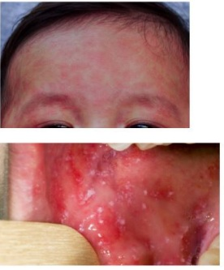
A Presença de hemograma com leucopenia com linfocitose; internação para iniciar o tratamento com imunoglobulina.
B Detecção de RNA viral através de amostra de nasofaringe; isolamento, notificação compulsória uso de sintomáticos e vitamina A.
C Presença de Anticorpo IgG anticapsídeo viral (anti-VCA); internação, e início do tratamento com sintomáticos.
D Aumento nos títulos do anticorpo antiestreptolisina (ASO); início de Penicilina G benzatina, analgésicos e antitérmicos.
Questão 229 · Calendário inf antil · 4000190555A médica da ESF atende em consulta de puericultura um paciente, masculino, de 14 meses de idade. Durante a consulta, a profissional realiza anamnese e exame físico de rotina, e solicita a carteira vacinal para avaliação, porém, a mãe relata que se mudou há pouco tempo para a região, com origem do nordeste, e que perdeu a carteira vacinal. Assinale a alternativa que contempla as vacinas indicadas para atualização da situação vacinal no dia da consulta.
A BCG (mesmo que a criança tenha cicatriz vacinal), Pentavalente (DTP-HepB-Hib), Pneumocócica 10 valente, Meningocócica C, Vacina injetável contra poliomielite, Febre amarela e SCR (Sarampo- Caxumba-Rubéola).
B BCG (caso a criança não tenha cicatriz vacinal), Pentavalente (DTP-HepB-Hib), Pneumocócica 10 valente, Meningocócica C, Vacina injetável contra poliomielite e SCR (Sarampo-CaxumbaRubéola).
C BCG (caso a criança não tenha cicatriz vacinal), Pentavalente (DTP-HepB-Hib), Pneumocócica 10 valente, Meningocócica C, Vacina oral contra poliomielite e SCR (Sarampo-CaxumbaRubéola).
D BCG (mesmo que a criança tenha cicatriz vacinal), Pentavalente (DTP-HepB-Hib), Rotavírus, Pneumocócica 10 valente, Meningocócica C, Vacina oral contra poliomielite, Febre amarela e SCR (Sarampo-Caxumba-Rubéola).
Questão 230 · DDS46XYinsensibilidade androgênica ou def eito no receptor androgênico · Exame f ísico · 4000190530Paciente de 25 anos procura o ambulatório de infertilidade. Refere vida sexual ativa desde 16 anos, sem queixas. Refere que nunca menstruou, mas disseram que era algo familiar, tias e primas também não menstruavam. Ao exame apresenta desenvolvimento sexual, aparelho genital externo feminino e estatura normais. Ao toque apresenta vagina em fundo cego. Exames laboratoriais: Assinale a alternativa que justifica a amenorreia primária da paciente.

A Síndrome de Rokitansky-Kuster-Hauser – anomalia dos ductos de Muller.
B Síndrome de Swyer – disgenesia gonadal 46XY.
C Síndrome da insensibilidade androgênica – cariótipo 46 XY.
D Síndrome de Turner – cromossomo sexual anormal 45X.
Questão 231 · Vias aéreas · Epinef rina · 4000190499Mulher de 27 anos chega ao setor de Emergência trazido pelo SAMU relatando desmaio após ingestão de torta com recheio de camarão. Antes de perder os sentidos, relatou ao acompanhante cólicas abdominais. Ao exame físico: FC:122bpm; PA:80X40mmHg; FR:32ipm; SpO2:91%; Glasgow: 12; Pupilas isocóricas e reativas. Está hidratada, descorada, acianótica, anictérica, com lesões urticariformes difusas, além de angioedema em pálpebras, lábios e língua. À ausculta respiratória, murmúrios vesiculares reduzidos globalmente, com estridor audível bilateralmente. Ausculta cardíaca sem alterações, abdome plano, ácido e responsivo à palpação profunda, com ruídos hidroaéreos aumentados. Assinale a alternativa com melhor conduta a indicar neste momento.
A Aplicar anti-histamínico H2 via endovenosa e agonista beta-2 adrenérgico via inalatória.
B Administrar glicocorticoide via endovenosa e adrenalina por via inalatória.
C Aplicar adrenalina via intramuscular e preparar material para intubação precoce.
D Administrar adrenalina via endovenosa e agonista beta-2 adrenérgico via inalatória.
Questão 232 · Def iciênciaEscorbuto · 4000190480Um homem de 55 anos, alcoolista crônico, procura a emergência do Hospital Nova Esperança com queixa de vômitos de sangue. Após análise minuciosa, incluindo lavagem gástrica sem a presença de sangramento ativo, e analisando a cavidade oral em busca de origem do sangramento observamos tratar-se de sangramento gengival significativo, e na pele observamos erupções hemorrágicas perifoliculares em membros inferiores. Ele refere muita astenia, e no seu prontuário consta atendimento anterior com hemartrose evacuado no serviço há 6 meses, desde então sem mais idas ao pronto socorro; nega uso de medicações ou outras comorbidades. O laboratório revela uma contagem de plaquetas de 250 000, uma atividade de protrombina de 100% e um INR de 0,9. Qual a terapêutica recomendada para o caso em questão?
A Folato.
B Niacina.
C Tiamina.
D Ácido ascórbico.
E Vitamina K.
Questão 233 · Mastite · 4000190444Sobre a mastite puerperal, assinale a alternativa correta.
A A principal porta de entrada da bactéria na mastite puerperal são as lesões de pele da mama, causadas por escoriações por prurido.
B A infecção ocorre, principalmente, da segunda à quinta semanas do puerpério.
C E. coli é o principal germe causador da doença.
D As infecções causadas pelo estafilococo geralmente evoluem para celulite.
E Os antibióticos utilizados podem ser inicialmente por via oral e as quinolonas são indicadas como primeira linha de tratamento.
Questão 234 · Prof ilaxia materna intraparto · 4000190440Pesquisa Streptococcus do grupo B Strepto B EGB swab para pequisa Strepto B Paciente GII PI 1N (há 3 anos) A0, deu entrada no pronto-socorro obstétrico (PSO) por perda de líquido via vaginal há cerca de 2 horas. IG por ultrassom precoce de 36 semanas. Nega comorbidades. Pesquisa de EGB (Streptococcus agalactiae beta hemolítico do grupo B) negativo (< 5 semanas). Nega dor tipo contração uterina. Ao exame obstétrico: DU (dinâmica uterina) ausente, exa- me especular: saída de líquido claro pelo orifício externo do colo uterino, BCF (batimentos cardíacos fetais): 140 bpm, MF presentes, toque vaginal (TV): colo impérvio, grosso e posterior. Cardiotocogra a: normal. PA 100 x 70 mmHg. Em um determinado momento, a paciente entrou em tra- balho de parto. Nega alergias. Foi reavaliada, sendo o exame físico/obstétrico: bom estado geral, afebril, eucárdica e eupneica; TV: 4-5 cm, médio, medianizado, bolsa rota (líquido claro) há 18 horas, sem sinais de sometria, apresentação cefálica. Exames laboratoriais normais. DU: 3/10’/40”, BCF: 130 bpm. Sobre a continuação da condução do caso, assinale a alternativa correta
A Introdução de Ampicilina dose de ataque e manutenção, por prematuridade fetal.
B Introdução de Ampicilina dose de ataque e manutenção, por ser um caso de RPMO (ruptura prematura de membranas) há 18 horas.
C Introdução de Penicilina G cristalina dose de ataque e manutenção, por prematuridade fetal.
D Introdução de Penicilina G cristalina dose de ataque e manutenção, por ser um caso de RPMO (ruptura prematura de membranas) há 18 horas.
E Não há necessidade de antibioticoprofilaxia, por pesquisa EGB ter sido negativa há menos de 5 semanas, no pré-natal.
Questão 235 · Teste do coraçãozinho · 4000190436Recém-nascido no alojamento conjunto é submetido às triagens neonatais e apresenta triagem de cardiopatia congênita crítica, realizada com 24 horas de vida, com saturação de 95% em membro superior direito e 93% em membro inferior esquerdo. Assinale a alternativa correta.
A O teste é positivo, porém não deve ser levado em consideração, pois foi realizado antes de 48 horas de vida, fora do período indicado para sua realização.
B O teste é positivo, pois um dos valores de saturação encontra-se abaixo de 95%; deve-se repetir o teste em 1 hora.
C O teste é negativo, já que a diferença entre a saturação pré e pós-ductal é menor que 3 pontos percentuais; não é necessário repetir o exame.
D O teste é positivo, pois está abaixo do valor de saturação-alvo do recém-nascido; deve-se solicitar imediatamente um ecocardiograma.
E O teste não pode ser considerado, pois foi realizado com técnica incorreta.
Questão 236 · Curvas de Crescimento · 4000190434Pré-escolar do sexo feminino, com 4 anos de idade, com- parece à Unidade Básica de Saúde para realização de uma consulta de rotina. Na antropometria, observa-se peso de 18 kg o que corresponde para a idade um escore-z de +0,80. Sua estatura para idade está no escore-z: –1,10 (98 cm) e o índice de massa corpórea (IMC) está no escore z: +2,12 (IMC = 18,7 kg/m²). Assinale a altenativa corre- ta sobre a classificação antropométrico-nutricional dessa criança, de acordo com os critérios atuais da Organização Mundial de Saúde e do Ministério da Saúde.
A A análise do peso identifica o baixo peso para idade.
B A análise do IMC identifica eutrofia.
C A análise da estatura identifica a baixa estatura para a idade.
D A análise da estatura identifica estatura adequada para a idade.
E A análise do IMC identifica risco de sobrepeso.
Questão 237 · Tratamento · Quadro clínico · 4000190432Lactente com 40 dias de vida vem para consulta ambulatorial de rotina. Os pais referem que há cerca de 5 dias a criança está mais chorosa, não se acalma ao ser colocada no peito e acham que ela pode estar com alguma dor. Ela apresenta crises de choro principalmente na madrugada e chora por cerca de 3 horas seguidas. Mantém hábito intestinal diário, com fezes amareladas, 5 vezes ao dia. Há 2 dias começou a apresentar sangramento em pequena quantidade nas fezes. Hábito urinário normal. Dorme na cama dos pais a noite toda e cochila durante o dia. Não apresentou febre, vômitos ou sintomas respiratórios. Apresenta algumas regurgitações após mamadas. Foi criança nascida a termo e está em aleitamento materno complementado com fórmula infantil de partida. No exame clínico, está em bom estado geral, corada, hidratada, ganhando em média 10 g/dia, sem alterações de sinais vitais. Exame abdominal normal e períneo sem lesões. Assinale a alternativa que apresenta a hipótese diagnóstica mais provável e a respectiva conduta.
A Cólica do lactente; introdução de probióticos e simeticona.
B Alergia à proteína do leite de vaca; dieta materna de exclusão e uso de fórmula extensamente hidrolisada.
C Doença do refluxo gastroesofágico; realização de teste terapêutico com omeprazol e domperidona.
D Crise transitória da lactação e confusão de bicos; aumentar quantidade de complemento.
E Erro de técnica de mamada; usar uma pomada cicatrizante na aréola da mãe e aumentar o complemento.
Questão 238 · Sinais e sintomas · 4000190428Recém-nascido (RN) termo (39 semanas), Apgar 9/9, com peso de nascimento de 2100 g, com sorologias maternas normais, sem nenhuma intercorrência na maternidade, recebe alta com 3 dias de vida. No sexto dia de vida, é trazido para atendimento, pois a criança está mais sonolenta, não está acordando para mamar. Mãe refere que a criança está nervosa, pois apresenta tremores nas extremidades. Na última hora começou piscar mais, apresentar desvios no olhar e sorrir reiteradamente. Sobre a conduta imediata a ser realizada para esse RN, é correto afirmar:
A deve-se respeitar o ritmo de alimentação determinado pela criança e suas características comportamentais e dar alta da unidade de emergência.
B deve-se estimular o aleitamento materno, estimulando-se e tentando acordar a criança periodicamente e dar alta da unidade de emergência.
C deve-se colher um hemograma e manter observação clínica de 24 horas pela possibilidade de sepse e indicar fototerapia.
D deve-se realizar expansão volêmica imediata e colher gasometria após a hidratação.
E deve-se avaliar a glicemia e prescrever fenobarbital.
Questão 239 · Contraindicações das vacinas · Contraindicações · Reações adversas vacinais · 4000190427É lamentável que a queda de cobertura vacinal já é realidade no Brasil há alguns anos. Uma das várias explicações para esse fenômeno consiste na ampli cação de divulgação de fake news e mitos sobre as vacinas. Sobre contraindicações e efeitos adversos das vacinas, assinale a alternativa correta.
A A vacina oral contra o rotavírus humano não deve ser contraindicada em bebês com refluxo gastroesofágico.
B Uso de corticoterapia com prednisolona, na dose de 1 mg/kg, por uma semana, por quadro de sibilância em criança com 1 ano de vida, indica postergação da vacina contra sarampo, caxumba e rubéola por, pelo menos, 3 meses
C A vacina contra o papilomavírus humano associa-se com o estímulo para a prática sexual não protegida entre adolescentes.
D Uso de antibioticoterapia para infecção de vias aéreas superiores contraindica uso de vacinas com componentes vivos.
E Febre alta, sonolência e choro incontrolável e persistente contraindicam doses posteriores da vacina tríplice bacteriana com células inteiras do componente pertussis.
Questão 240 · Filhos de mães com hepatite B · 4000190424Chega ao berçário um recém-nascido com 1 hora de vida, lho de mãe com HBsAg positivo diagnosticada durante o pré-natal. Sobre a conduta específica para esse RN, deve-se
A manter a rotina de cuidados neonatais, administrando a vacina contra a hepatite B respeitandose o calendário preconizado pelo Programa Nacional de Imunizações, pois o exame da mãe indica que ela já está imunizada para hepatite.
B administrar vacina contra hepatite B o quanto antes, preferencialmente nas primeiras 12 horas de vida e administrar imunoglobulina humana anti-hepatite B.
C administrar vacina contra hepatite B o quanto antes, preferencialmente nas primeiras 12 horas de vida; contraindicar aleitamento materno e não administrar imunoglobulina humana anti-hepatite B.
D administrar somente imunoglobulina humana anti-hepatite B nas primeiras 12–24 horas de vida e adiar vacina de hepatite B.
E prescrever antiviral e imunoglobulina humana anti- -hepatite B nas primeiras 72 horas de vida.
Questão 241 · Quadro Clínico · Cutâneo Subcutâneo e Mucosa · 4000190422Escolar, sexo masculino, com 5 anos de idade, estava brincando com seu irmão em uma casa de campo quando apresentou subitamente edema labial, tosse, rouquidão, dispneia e vômitos. O irmão adolescente refere que estavam perto de uma colmeia. No exame físico não existem lesões urticariformes. A pressão arterial estava normal. Identi ca-se, na ausculta, alguns raros sibilos. Sobre essa condição, é correto a rmar que
A o diagnóstico de anafilaxia é improvável pela ausência da hipotensão arterial.
B a ausência de urticária pode ocorrer em uma anafilaxia grave, potencialmente fatal.
C a primeira droga a ser administrada nessa situação é o broncodilatador por via inalatória.
D a dispneia e a ausculta pulmonar nessa situação caracterizam a crise asmática como grave.
E a primeira droga a ser administrada nessa situação deve ser a adrenalina por via subcutânea.
Revisar: possível letra faltando em enunciado
Questão 242 · Tratamento e Condutas · Apresentação Clínica · Diagnóstico · 4000190421Pré-escolar, de 2 anos e 3 meses, chega à emergência com dor em membro inferior direito, não conseguindo car de pé há cerca de 3 dias. Mãe nega ter presenciado trauma, porém diz que a criança é cuidada pelos irmãos de 8 e 11 anos enquanto ela trabalha. Ao exame clínico, apresenta abaulamento e dor à palpação de coxa direita. A radiogra a evidencia fratura cominutiva de porção proximal do fêmur direito. Diante do caso, após o tratamento da fratura, a conduta correta é
A solicitar radiografia de corpo inteiro, acionar o serviço social para avaliar o contexto do trauma, as condições familiares e de moradia e comunicar o caso para o Conselho Tutelar da localidade de moradia da família.
B abrir boletim de ocorrência policial e impedir que a mãe deixe a unidade com a criança, que está correndo risco de vida.
C entender que a situação adversa deu-se por fatalidade provocada por situação social de vulnerabilidade e encaminhar para acompanhamento com equipe de saúde da família do seu território.
D acionar o serviço social para avaliar as condições familiares e de moradia e providenciar os benefícios sociais necessários e comunicar o caso para a autoridade policial mais próxima ao hospital.
E solicitar exame e laudo de corpo de delito, junto ao Instituto Médico Legal para complementar o prontuário médico da criança.
Questão 243 · Imunoglobulina antisarampo · 4000190415Professora da rede pública, gestante, procura unidade de saúde e informa que na escola em que leciona ocorreu um surto de sarampo. A conduta correta com relação à aplicação da vacina Tríplice Viral é
A aplicar somente se o surto for confirmado.
B aplicar somente se o período gestacional for superior a 12 semanas.
C aplicar somente se a pessoa vier a desenvolver quadro febril.
D aplicar somente se a pessoa não tiver o esquema vacinal completo.
E não aplicar a vacina em hipótese alguma.
Questão 244 · Vacina contra Haemophilus inf luenza tipo B · Vacinas pneumocócicas · Autoesplenectomia · 4000190399Paciente de 16 anos será submetido à esplenectomia total para tratamento de anemia falciforme. Umas das medidas para prevenção da sepse fulminante pós-esplenectomia é vacinação contra germes encapsulados, que deve oferecer proteção para quais patógenos:
A Streptococcus pneumoniae, neisseria meningitidis e haemophilus influenzae.
B Stafilococcus aureus, streptococcus pneumoniae e neisseria meningitidis.
C Stafilococcus epidermidis, haemophilus influenzae e proteus mirabilis.
D Streptococcus pneumoniae, haemophilus influenzae e pseudomonas aeruginosa.
E Streptococcus pneumoniae, neisseria meningitidis e klebisella pneumoniae.
Questão 245 · Calendário dos adultos · Calendário inf antil · 4000190330Você trabalha na Unidade Básica de Saúde (UBS) e é chamado para discussão conjunta sobre a conduta de imunização em um paciente de 13 meses de idade. Luiz, criança do sexo masculino, acompanha no ambulatório de Imunologia do hospital terciário por imunode ciência primária. Está acompanhado de sua mãe, Rosângela, 40 anos de idade, hígida, única coabitante no domicilio. Rosângela trouxe Luiz à UBS para se informar sobre a aplicação da vacina de poliomielite e atualizar o cartão vacinal da criança, pois ainda não recebeu as vacinas dos 12 meses. Rosângela refere ter perdido a própria caderneta de vacina e não lembra quais vacinas recebeu, apenas relata ter recebido a vacina de gripe da campanha. Considerando as diretrizes do Programa Nacional de Imunizações, assinale a alternativa que expressa a conduta correta em relação à vacinação do paciente e do familiar em questão:
A Luiz pode receber os reforços das vacinas meningocócica e pneumocócica. Não deve receber a vacina tríplice viral e a vacina da poliomielite da campanha (VOP). Deve-se vacinar Rosângela com a vacina tríplice viral.
B Luiz pode receber os reforços das vacinas meningocócica e pneumocócica. Não deve receber as vacinas tríplice viral e a da poliomielite da campanha (VOP). Deve-se vacinar Rosângela com a vacina tríplice viral e a da poliomielite da campanha (VOP).
C Luiz pode receber os reforços da vacina meningocócica e pneumocócica, a primeira dose da vacina tríplice vital e a vacina da poliomielite da campanha (VOP). Deve-se vacinar Rosângela com a vacina tríplice viral e a da poliomielite da campanha (VOP).
D Luiz pode receber os reforços das vacinas meningocócica e pneumocócica, além da primeira dose da vacina tríplice viral. Não deve receber a vacina da poliomielite da campanha (VOP). Deve-se vacinar Rosângela com a vacina tríplice viral.
Questão 246 · Situações em que há restrições ao aleitamento materno · 4000190328Você trabalha na Unidade Básica de Saúde e durante participação em um "grupo de amamentação" identi ca uma demanda das participantes em discutir contraindicações à prática da amamentação. Assinale a alternativa que apresenta uma contraindicação ao aleitamento materno:
A Lactante em uso de sertralina para tratamento de depressão.
B Lactante que amamenta criança menor de 6 meses e recebeu a vacina contra febre amarela hoje.
C Lactante hígida 3 horas após o consumo de uma lata de cerveja.
D Lactante portadora de vírus da hepatite C.
Revisar: possível letra faltando em enunciado
Questão 247 · Investigação diagnóstica · 4000190326Paciente de 6 anos de idade com antecedente de Transtorno do Espectro Autista, não verbal, comparece em consulta por retorno da noctúria após já ter obtido controle es ncteriano há dois anos. A mãe relata dois episódios de infecções urinárias em 8 meses. Quando questionada sobre controle evacuatório, refere que está mantido. Nega alterações na alimentação ou no sono. Sem uso de medicações. O exame clínico do paciente está normal. Nas medidas antropométricas, nota-se reti cação da curva no Z-score entre 0 e -1. Assinale a alternativa correta:
A Orientar redução de ingesta de líquidos à noite e melhorar a higiene da região genital.
B Paciente com retificação na curva de peso e infecções urinárias de repetição, deve ser investigado pelo conselho tutelar.
C Deve-se coletar rotina de urina com cetonúria como parte da investigação inicial.
D Trata-se de um atraso do desenvolvimento, não sendo necessários exames adicionais.
Questão 248 · Tratamento · 4000190325Paciente de 3 anos de idade é admitido na emergência desacordado. O pai relata que, há 15 minutos, a criança apresentou convulsão tônico-clônica generalizada, com duração aproximada de 7 minutos. Relata que a criança apresentou tosse e coriza há 24 horas, com febre iniciada junto à convulsão. Nega antecedentes patológicos e uso de medicações prévias. A caderneta de vacinação está atualizada. Ao exame clínico, o paciente encontra-se sonolento, com escala de coma de Glasgow 13, corado, com respiração regular. Permaneceu em observação por uma hora, mantendo-se ativo e sem alterações ao exame clínico. Assinale a alternativa correta:
A Paciente com convulsão febril clássica. Deve-se dar alta para seguimento com pediatria geral e tranquilizar o pai sobre possíveis danos neurológicos.
B Paciente com episodio de convulsão grave, com crise complexa. Deve ser medicado e aguardar avaliação pela neurologia pediátrica.
C Paciente com provável convulsão febril. Deve-se realizar investigação etiológica com eletroencefalograma, pois convulsão febril é diagnóstico de exclusão.
D Paciente com episódio de convulsão grave, com crise convulsiva prolongada. Deve ser internado para investigação etiológica com coleta de líquor e eletroencefalograma.
Questão 249 · Teste do coraçãozinho · 4000190319Recém-nascido com 36 horas de vida, a termo, adequado para a idade gestacional, APGAR 9/9 e sem antecedentes patológicos no pré-natal, é submetido ao teste do coraçãozinho. O resultado obtido é uma saturação no membro superior direito de 98% e no membro inferior esquerdo de 94%. Qual é a classificação do resultado desta triagem e qual é a conduta a seguir?
A Teste positivo. Deve-se solicitar ecocardiograma imediatamente.
B Teste negativo. Não há necessidade de repetição.
C Técnica inadequada. Deve-se verificar a saturação nos membros superior e inferior direitos.
D Teste duvidoso. Deve-se repetir o exame em uma hora.
Questão 250 · Icterícia do leite mateno · Hiperbilirrubinemia direta neonatal · 4000190316Lactente do sexo feminino de 30 dias de vida é levada à consulta de puericultura. Nasceu a termo, parto normal, pré-natal adequado, sem complicações na gestação ou no parto. A tipagem sanguínea da paciente é A positivo e a da mãe é O positivo. Recebeu alta da maternidade com 48 horas de vida, em aleitamento materno exclusivo. A mãe notou a pele da paciente mais amarelada desde os 3 dias de vida, que se manteve assim até o momento. Ela teve ganho ponderal de 25g/dia. Ao exame clínico, encontra-se em bom estado geral, ativa e reativa, ictérica até a zona 3. Abdome com fígado a 3cm do rebordo costal direito. Restante do exame clínico normal. Qual é a conduta para esta paciente?
A Como a principal causa de síndrome colestática no período neonatal é infecciosa, devem- se solicitar sorologias para toxoplasmose, HIV, rubéola e pesquisa de citomegalovírus urinário.
B Como a principal hipótese nesse caso é icterícia fisiológica do recém-nascido, deve-se orientar manter o aleitamento materno exclusivo, além de banho de sol de 15 minutos por dia.
C Deve-se considerar a possibilidade de manutenção de hemólise por passagem de anticorpos maternos e solicitar hemograma, bilirrubina total e frações, reticulócitos, desidrogenase lática e haptoglobina.
D A principal causa de icterícia com 4 semanas de vida é a do leite materno, no entanto deve- se solicitar dosagem de bilirrubina total e frações para avaliar a possibilidade de síndrome colestatica.
Questão 251 · 9 meses · 4000190314Você avalia um lactente de 8 meses de idade, trazido por familiar que não convive muito com a criança e não sabe relatar os marcos de desenvolvimento. Qual característica seria esperada de um desenvolvimento adequado nesta idade?
A Imitar gestos.
B Andar com apoio.
C Duplicar sílabas.
D Fazer movimento de pinça.
Questão 252 · Palivizumabe · 4000190309Você trabalha em uma Unidade Básica de Saúde e recebe a tarefa de selecionar, dentre as crianças atendidas pela equipe, aquelas que possuem indicação de receber o anticorpo monoclonal Palivizumabe, para prevenção do vírus sincicial respiratório. Dentre os casos abaixo, qual tem indicação de receber a profilaxia?
A Menino de 2 anos de idade, com paralisia cerebral, uso de traqueostomia e ventilação mecânica em domicilio.
B Menina de 7 meses, portadora de comunicação interatrial, sem dilatação de câmaras cardíacas.
C Menino de 1 ano e 6 meses, portador de comunicação interventricular ampla e persistência do canal arterial, com dilatação importante de câmaras esquerdas, em uso de furosemida, captopril e espironolactona.
D Menina de 1 ano e 3 meses, que foi prematura de 28 semanas, sem uso de oxigênio ou corticoterapia.
Questão 253 · Plano C · 4000190297João, 7 anos, foi levado à consulta na Unidade Básica de Saúde por quadro de diarreia, sem muco ou sangue nas fezes, iniciado há 03 dias. Ao exame, encontrava-se sonolento, sem lágrimas, com di culdade para deglutir e sinal da prega desaparecendo muito lentamente. A conduta terapêutica a ser adotada é:
A Manter alimentação habitual, aumentar aporte de líquidos e retornar em 48 horas.
B Iniciar hidratação oral, solicitar hemograma e sintomáticos, se necessário.
C Iniciar hidratação oral, solicitar hemograma e antibioticoterapia.
D Iniciar hidratação parenteral, coleta de gasometria venosa e ionograma e antibioticoterapia.
E Iniciar hidratação parenteral, coleta de gasometria venosa e ionograma e sintomáticos, se necessário.
Questão 254 · Vacina Tríplice Viral · 4000190294Marina, 12 meses, é trazida à unidade básica de saúde para realizar vacinação de rotina. Sua mãe refere que aos seis meses, ao iniciar alimentação complementar, apresentou vermelhidão no pescoço e ombros, além de tosse seca e di culdade para respirar, que foi relacionada à ingestão de ovo, e o pediatra orientou retirar ovos e derivados da alimentação da lactente. O técnico responsável pergunta se pode aplicar a vacina. Qual conduta deve ser adotada?
A Não vacinar, pois apresentou anafilaxia a ovo.
B Realizar a vacinação, pois não há história de anafilaxia.
C Encaminhar para o centro de imunobiológicos especiais.
D Solicitar teste de IgE específica para ovo antes de vacinar.
E Realizar a vacinação apenas se unidade dispor de epinefrina e corticoesteroides para administração imediata.
Questão 255 · DDS46XYinsensibilidade androgênica ou def eito no receptor androgênico · Causas f uncionais · 4000190289Paciente de 18 anos de idade, com queixa de amenorreia primária. Ao exame físico: estatura de 1.75 m, IMC 22 kg/m , mamas desenvolvidas, pelos pubianos e axilares escassos e hérnia inguinal bilateral. Paciente VIRGO. Assinale a alternativa que apresenta os exames que comprovariam o diagnóstico do caso clínico.
A Ultrassom pélvico, FSH, testosterona.
B RNM de sela turca, LH, estradiol.
C Estradiol, testosterona, ultrassom de abdome para avaliar adrenais.
D Prolactina, TSH, estradiol.
E Prolactina, FSH, LH.
Questão 256 · Sindrome Turner · 4000190283Luana, 13 anos, procura atendimento por não apresentar sinais de puberdade. Nega outras queixas. Alimentação, atividade física e sono adequados para a idade. Refere infecção urinária de repetição e di culdade auditiva. Antecedente pessoal: peso e comprimento de nascimento adequados para idade gestacional. Exame físico: peso no percentil 50; estatura abaixo do percentil 3 e IMC entre o percentil 85 e 95; baixa implantação dos cabelos na nuca, orelhas rodadas para trás e genitais femininos normais M1P2. Hormônio folículo-estimulante (FSH) e hormônio luteinizante (LH) elevados para a idade. Qual a hipótese diagnóstica?
A Adolescente eutrófica.
B Hipotireoidismo.
C Deficiência de GH.
D Síndrome de Turner.
E Síndrome de Silver-Russell.
Questão 257 · Indicações · 4000190282Um casal de imigrantes comparece a unidade básica de saúde, acompanhado de seu lho de 1 mês de idade. A família está preocupada, pois tem havido casos de tuberculose na vizinhança e eles gostariam que todos na casa fossem vacinados com a vacina BCG (bacilo de Calmette-Guérin), assim como seu lho, para que também possam se prevenir da tuberculose. Eles relatam que a vacina não estava disponível em seu país de origem, sendo que nenhum deles fez uso desta antes. Qual é a orientação que deve ser feita ao casal a cerca do papel da BCG na prevenção da tuberculose?
A A BCG evita o adoecimento após reinfecção endógena ou exógena pelo bacilo.
B A BCG deve ser aplicada em todos os contactantes domiciliares de um caso da doença.
C A BCG previne de formas graves da doença, como miliar e meníngea, em crianças.
D A BCG protege indivíduos já infectados pelo M. tuberculosis do adoecimento.
Questão 258 · Prevenção e manejo dos principais problemas relacionados à amamentação · 4000190276Filhos de mães bacilíf eras Poliana, 28 anos, deu à luz a um recém-nascido (RN) a termo, com exame físico normal. Ela fora diagnosticada com tuberculose pulmonar há 10 dias, tendo iniciado o tratamento também nessa data. Qual a conduta adequada em relação ao aleitamento materno?
A Suspender o aleitamento materno exclusivo e solicitar pesquisa de bacilo de Koch em lavado gástrico para o RN.
B Suspender o aleitamento materno até o término do tratamento, pois esses fármacos causam toxicidade ao RN.
C Suspender o aleitamento materno até a realização da vacina BCG no lactente. Após isso, liberar o aleitamento materno exclusivo.
D Manter o aleitamento materno exclusivo sem indicação de quaisquer outras precauções, pois a mãe já está em tratamento há mais de uma semana e, portanto, não é mais bacilífera.
E Manter o aleitamento materno, orientar a mãe a utilizar máscara e prescrever isoniazida para o RN por 03 meses. Após esse período, fazer teste tuberculínico no lactente.
Questão 259 · DDS46XYinsensibilidade androgênica ou def eito no receptor androgênico · Causas f uncionais · 4000190275Paciente de 18 anos de idade, com queixa de amenorreia primária. Ao exame físico: estatura de 1.75 m, IMC 22 kg/m² , mamas desenvolvidas, pelos pubianos e axilares escassos e hérnia inguinal bilateral. Paciente VIRGO. Assinale a alternativa que apresenta o diagnóstico mais provável.
A Hipogonadismo hipogonadotrófico.
B Tumor ovariano produtor de esteroide.
C Insensibilidade androgênica por defeito no receptor ou por deficiência da 5 alfa redutase.
D Síndrome da anovulação crônica por resistência periférica à insulina.
E Síndrome de Asherman.
Questão 260 · Icterícia neonatal · 4000190274Recém-nascido a termo, parto normal, com 18 horas de vida, em bom estado geral, grupo sanguíneo A positivo, em aleitamento materno exclusivo, apresenta icterícia até a região do tronco. No prontuário materno há registro de gesta: 1 Para: 1, Aborto: 0, três consultas de pré-natal; tipagem sanguínea materna: O positivo; sorologias do último trimestre de gestação: negativas. Qual a conduta mais adequada nesse caso?
A Hemograma, bilirrubinas, Coombs direto e suspender aleitamento materno.
B Hemograma, reticulócitos, bilirrubinas, Coombs direto e manter aleitamento materno.
C Hemograma, bilirrubinas, Coombs direto, ultrassonografia de abdome e suspender aleitamento materno.
D Hemograma, bilirrubinas, ultrassonografia de abdome e suspender aleitamento materno.
E Hemograma, reticulócitos, bilirrubinas, ultrassonografia de abdome e manter aleitamento materno.
Questão 261 · Calendário dos adultos · 4000190271Sobre o calendário de vacinação da mulher, de acordo com as Recomendações Febrasgo 2020/2021, assinale a alternativa correta.
A O esquema da vacina da hepatite B é de 0 – 3 – 6 meses.
B O esquema de vacinação com a vacina HPV para meninas menores de 15 anos é de apenas 1 dose.
C A vacina Dengue é recomendada apenas para adultos ou adolescentes soronegativos para dengue, e licenciada após os 45 anos.
D A vacina Influenza deve ser realizada em dose única a cada 2 anos.
E A vacina Meningocócica conjugada ACWY ou C em mulheres adultas é indicada em dose única. A necessidade de reforços dependerá da situação epidemiológica.
Questão 262 · Taquipneia Transitória do Recémnato TTRN · 4000190270Recém-nascido com 35 semanas e 3 dias por avaliação da idade gestacional por Ballard, peso 2200g ao nascimento, nascido de parto cesáreo com Apgar 8/10. Apresenta com 2 horas de vida: tiragem intercostal, sem batimento de aleta nasal, oximetria de pulso de 90% em ar ambiente; FR: 78 irpm; FC: 148bpm; AP: MV+, sem ruídos adventícios; AC: RR 2T BNF sem sopros. Ao realizar avaliação laboratoriais mostrou hemograma e PCR normais para a faixa etária, RX de tórax com hiperinsu ação pulmonar e lesão de derrame cisural em hemitórax direito. Qual é a causa mais provável para o desconforto respiratório?
A Doença da membrana hialina.
B Sofrimento fetal agudo.
C Pneumonia neonatal congênita.
D Taquipneia transitória do recém-nascido.
E Cardiopatia congênita.
Questão 263 · 7 meses · 4000190268Lara, 8 meses, foi levada por sua genitora à consulta de puericultura em Unidade Básica de Saúde. O médico avaliou uma criança hígida, com calendário vacinal atualizado e crescimento e desenvolvimento adequados para a idade. Qual alternativa descreve os achados esperados para o desenvolvimento neuromotor nessa idade?
A Reflexo de Moro presente; fixação do olhar; pescoço firme e capacidade de sentar, inclinando se para frente.
B Reflexo de Moro presente; fixação do olhar; pescoço firme e capacidade de sentar sem apoio e de engatinhar sem destreza.
C Reflexo de Moro ausente; fixação do olhar; pescoço firme e capacidade de sentar, inclinando-se pra frente sem apoio.
D Reflexo de Moro ausente; fixação do olhar; pescoço firme e capacidade de sentar somente com apoio.
E Reflexo de Moro ausente; sem fixação do olhar; pescoço firme e capacidade de sentar sem apoio.
Questão 264 · Aspectos Clínicos Quadro clínico e Diagnóstico · 4000190262Sabrina, 5 anos, previamente hígida, foi internada em um hospital terciário para a investigação de febre iniciada há 6 dias. Apresentava também rash maculopapular, principalmente em tronco, hiperemia e lacrimejamento ocular, edema nas mãos e pés e linfoadenomegalia cervical indolor à esquerda, com diâmetro aproximado de 2cm. Qual a complicação mais grave associada a esse quadro?
A Estenose de válvula mitral.
B Pericardite.
C Vasculite coronariana.
D Miocardiopatia hipertrófica.
E Endocardite infecciosa.
Questão 265 · Calendário do prematuro · Calendário inf antil · 4000190261Menino de 30 dias de vida é trazido à unidade básica de saúde para a primeira consulta de puericultura. Sua mãe relatou que o paciente foi um pré-termo tardio, com peso ao nascimento de 2.200g. Durante o atendimento foi verificado o cartão vacinal da criança, porém não havia nenhum registro de quais doses de vacinas haviam sido previamente aplicadas. Assinale a alternativa que contém a a rmativa correta sobre o caso do paciente, levando-se em conta o que é preconizado no Programa Nacional de Imunização (PNI):
A Por ser um pré termo tardio, é necessário aguardar a idade corrigida adequada para receber qualquer vacina.
B Por ter nascido com 2.200g, não há contraindicação para receber a vacina BCG, sendo que esta deve ser administrada neste momento.
C Como o paciente foi um pré-termo tardio, ele deveria ter recebido imunização para vírus sincicial respiratório imediatamente após o seu nascimento.
D O paciente já deve ter sido vacinado para hepatite B e com a BCG após o seu nascimento na maternidade.
Questão 266 · Diagnóstico · Quadro clínico · Agente etiológico · 4000190252Guilherme, 03 anos, iniciou há três dias quadro de febre baixa (38ºC), dor de garganta, malestar, diminuição do apetite e adenomegalias em região suboccipital e pós-auriculares bilaterais, seguido de rash macular róseo claro, irregular, disseminado, iniciado em face e pescoço, distribuindo-se pelo corpo, e não há descamação após o seu desaparecimento. No início do quadro, o exame da orofaringe revelava lesões pequenas, de coloração rósea e petéquias em palato mole. Em relação ao quadro, qual é o agente causal determinante?
A Rotavírus.
B Norovírus.
C Vírus da rubéola.
D Vírus do sarampo.
E Zika vírus.
Questão 267 · Classif icação e Tratamento da Crise · 4000190249Benício, 7 anos, busca atendimento na Unidade Básica de Saúde devido à falta de ar. Há 2 dias apresenta tosse noturna e coriza; nas últimas horas houve piora da tosse, sensação de falta de ar e aperto no peito. A mãe refere que realizou 2 pu s de salbutamol 100mg em casa, sem melhora do quadro. Nega sintomas gastrointestinais, urinários ou cutâneos. Nega internações hospitalares prévias. Não faz uso de medicações de uso contínuo, utiliza apenas salbutamol quando tem quadros de falta de ar. Ao exame físico: Peso= 25 kg, alerta, calmo, frequência respiratória: 43ipm, frequência cárdica 115 bpm, saturação de oxigênio 94%. Ausculta torácica com sibilos difusos bilateralmente, batimentos cardíacos normofonéticos e ritmo regular em 02 tempos. Segundo as orientações do GINA (Iniciativa Global contra a Asma) de 2019, qual conduta deve ser adotada?
A Fornecer 25mg de prednisolona via oral na primeira hora do tratamento.
B Realizar 2 puffs de salbutamol 100mg a cada 20 minutos na primeira hora.
C Colocar cateter nasal de oxigênio, a fim de manter a saturação acima de 98%.
D Iniciar nebulização com fenoterol e brometo de ipratrópio a cada 20 minutos.
E Colocar cateter nasal de oxigênio e iniciar nebulização com brometo de tiotrópio.
Questão 268 · Quadro Clínico · Tratamento · Diagnóstico · 4000190238Em visita domiciliar em sua área, o médico de Unidade Básica de Saúde evidenciou um lactente de 10 meses com quadro compatível com desnutrição grave. Com base nesse diagnóstico, qual a alternativa abaixo está correta?
A É muito comum a ocorrência de infecção, que frequentemente se manifesta com sinais clínicos evidentes, tais como crise convulsiva, febre e insuficiência respiratória.
B Presume-se que todas crianças com esse quando tenham infecção.
C Sinais de hipertensão craniana e irritação meníngea são muito frequentes.
D O esquema antimicrobiano preconizado à admissão nesse tipo de paciente se constitui de vancomicina e cefepime.
E O calendário vacinal dessas crianças não deve ser atualizado durante a internação.
Questão 269 · Introdução · 4000190237Vitória, 14 anos, é levada ao serviço de urgência com história de febre, e após 3 dias de febre, apareceu erupção cutânea em tronco e membros, com prurido, além de cefaleia e mialgia, nas últimas 24 horas desenvolveu gengivorragia, dor abdominal e vômitos (2 episódios). Exame físico: afebril, corada, eupneica, orientada. Auscultas cardíaca e respiratória normais, FC: 80 bpm, FR: 20 irpm, PA: 110x70 mmHg. Abdome: plano, depressível, doloroso à palpação difusamente, sem sinais de irritação peritoneal. Pele: exantema maculopapular em tronco e membros. Diante da doença exantemática relatada, qual a conduta a ser adotada nesse caso?
A Deve receber reposição volêmica imediata com soro fisiológico 10 ml/kg na primeira hora.
B Precisa obrigatoriamente realizar os seguintes exames complementares: hemograma completo, albumina sérica, transaminases e ultrassonografia de abdome.
C Reavaliação clínica deve acontecer a cada 2 horas e avaliação de hematócrito a cada 4 horas.
D O exame complementar mais apropriado para confirmar o diagnóstico na fase da doença em que o adolescente se encontra é a sorologia.
E A notificação do caso deve aguardar confirmação laboratorial da doença para, então, ser realizada.
Questão 270 · Quadro clínico e Diagnóstico · 4000190232Regina, de 2 anos, é levada à emergência pediátrica com quadro de convulsão tônico clônica generalizada com duração de 5 minutos. Exame físico: T.: 37,8°C, acordada e atenta ao meio. Os pais informam que a paciente é portadora de sequela de encefalopatia hipóxico-isquêmica devido a quadro de as xia neonatal, porém negam crises prévias. Diante desse quadro, o dado que afasta o diagnóstico de convulsão febril benigna é:
A Característica da crise.
B Presença de doença de base.
C Duração da crise.
D Idade da paciente.
E Perda da consciência.
Questão 271 · Tratamento e Condutas · Apresentação Clínica · 4000190227A professora de uma escola de primeiro grau percebe que um de seus alunos, de 7 anos de idade, nos últimos meses apresenta-se calado, triste e evita brincar com os colegas no intervalo. Aproveita um nal de aula para, reservadamente, conversar com o menino e percebe que seus braços estão com hematomas. Após alguns minutos de conversa, a criança lhe diz que seu pai viaja muito e que ele ca a maior parte do tempo com a madrasta. Assinale a alternativa correta sobre uma medida inicial.
A O menino deve ser encaminhado a um serviço de psicologia, pois se trata de depressão, comum nessa faixa etária.
B O pai da criança deve ser convocado para que permaneça mais em casa e observe o que de fato ocorre com o filho.
C O caso merece uma investigação mais rápida e aprofundada, pois pode se tratar de violência doméstica.
D A madrasta deve ser convocada a prestar depoimento, sem conhecimento do menino, para que não haja possíveis represálias, caso se trate de um caso de violência doméstica.
E A criança deve ser encaminhada a um hematologista, pois os hematomas podem ser decorrentes de distúrbios de coagulação.
Revisar: possível letra faltando em enunciado
Questão 272 · Maus tratos à crianças e adolescentes · Violência · 4000190226Durante acolhimento, o médico de Unidade Básica de Saúde foi solicitado por equipe a falar para os pacientes sobre a prevenção e atuação sobre a violência sexual ao longo do desenvolvimento infantil. Sobre esse tema, qual a alternativa errada?
A É possível abordar, com linguagem apropriada às faixas etárias, a questão da sexualidade e dos toques corporais socialmente adequados e inadequados.
B A violência intergeracional diz respeito à reprodução e à transmissão da violência através de gerações familiares.
C Os principais perpetradores são os companheiros das mães, e, em seguida, os pais biológicos, avôs, tios, padrinhos e outros que mantêm com a criança uma relação de dependência, afeto ou confiança.
D Na infância, é comum o envolvimento de crianças em brincadeiras sexualizadas (jogos sexuais). No entanto, será caracterizada violência sexual quando da existência de coerção ou se os envolvidos estiverem em estágios de desenvolvimento diferentes.
E Normalmente não existem dificuldades para se firmar o diagnóstico de violência sexual em crianças e adolescentes, pois a materialidade do delito (lesão genital) está frequentemente presente.
Questão 273 · Zinco · 4000190221Lactente, 10 meses, sexo masculino, apresenta cerca de seis episódios de fezes amolecidas/líquidas, sem produtos patológicos, há 2 dias. Vomitou 2 vezes e apresentou febre no primeiro dia do quadro. Sobre o tratamento dessa condição, é correto afirmar que
A antibióticos devem ser prescritos.
B o distúrbio ácido-básico mais comumente observado nesses quadros é a alcalose metabólica.
C a suplementação de zinco reduz a duração e a gravidade da diarreia nos quadros agudos.
D a intolerância primária à lactose e às proteínas do leite de vaca são complicações comuns da diarreia aguda, particularmente nas causadas por vírus.
E deve ser estimulado o jejum para proporcionar repouso alimentar e menor risco de translocação bacteriana.
Questão 274 · 12 meses · 9 meses · 4000190220Nessa faixa etária a criança mostra objetos e responde de forma efetiva com o movimento de cabeça quando não quer algo; busca objetos e levanta os braços para ser acolhida; preocupa-se muito com o cuidador principal, podendo ter medo de outras pessoas que não fazem parte de seu cotidiano e mostra-se muito reservada em situações novas. Essas características se referem a uma criança de qual idade?
A 3 a 4 meses.
B 1 a 2 meses.
C 0 a 1 mês.
D 4 a 6 meses.
E 9 a 12 meses.
Questão 275 · Investigação por imagem · 4000190219Lactente, 12 meses, sexo feminino, recebe alta hospitalar após diagnóstico e tratamento de uma infecção urinária febril, confirmada por urocultura. Mãe refere que esse é seu segundo episódio de infecção de urina, mas, no anterior, não foi colhida a urocultura. Sobre o seguimento desta criança, qual afirmativa é correta?
A Indica-se avaliação radioisotópica renal com DMSA-Tc, 6 meses após o episódio infeccioso.
B Indica-se a avaliação radioisotópica renal com DTPA -Tc, 6 meses após o episódio infeccioso.
C Indica-se uma uretrocistografia miccional, durante a vigência de um posterior episódio agudo de infecção.
D Deve-se realizar imediatamente uma urografia excretora minutada para avaliação da filtração renal.
E A ultrassonografia renal e de vias urinárias não trará informações que auxiliem a avaliação dessa paciente.
Questão 276 · Tuberculose Latente · 4000190217Qual das alternativas apresenta a conduta mais adequada para investigação de uma criança de 7 anos exposta ao pai com tuberculose que já está em tratamento há 30 dias ?
A Não será necessária investigação pois o pais já está há mais de 15 dias em tratamento.
B Não será necessária investigação se ela estiver vacinada e assintomática.
C Deve-se solicitar prova tuberculínica; se 6 mm, sem achados radiológicos, indicar tratamento da infecção latente.
D Se estiver assintomática, deve-se solicitar exame radiológico do tórax e prova tuberculínica; se a radiografia for normal e a prova tuberculínica por de 8 mm, a criança receberá alta.
E Se estiver assintomática, deve-se solicitar teste tuberculínico; se 10 mm, iniciar o tratamento com esquema tríplice, conforme norma vigente no país.
Questão 277 · Diagnóstico · 4000190216Lactente, sexo masculino, 12 meses de idade, proveniente do estado da Bahia há dez dias, apresenta, há cerca de 24 horas, exantema maculopapular que parece ser não pruriginoso e que se iniciou no tronco e evoluiu para região cervical e coxas, simetricamente. O quadro foi precedido de 3 dias de febre (38,5 ºC a 39 ºC) e irritabilidade. A última febre foi identi cada e medicada há cerca de 24 horas. Qual o diagnóstico mais provável?
A Exantema súbito.
B Infecção pelo vírus Zika.
C Coxsackiose.
D Escarlatina.
E Febre maculosa.
Questão 278 · Recepção do neonato com boa vitalidade · 4000190214Nasce uma criança de 39 semanas de idade gestacional, de parto normal, com líquido amniótico com sinais de mecônio, que apresenta choro vigoroso e bom tônus. De acordo com as recomendações mais atuais da Sociedade Brasileira de Pediatria, qual a conduta a ser tomada durante e após o nascimento?
A Condução imediata ao berço de reanimação para limpeza e secagem e aspiração de boca e narinas.
B Clampeamento imediato do cordão e, a seguir, condução à mesa de reanimação para ventilação com pressão positiva em ar ambiente.
C Clampeamento mais tardio do cordão umbilical (após 1 minuto) e colocação do bebê próximo à mãe.
D Condução imediata ao berço de reanimação para aspiração por cânula traqueal apenas uma vez.
E Aspiração imediata, pelo obstetra, após desprendimento cefálico.
Questão 279 · Curvas de Crescimento · Gráf icos OMS Classif icação nutricional · 4000190213Pré-escolar do sexo masculino, com 4 anos e meio de idade, comparece à Unidade Básica de Saúde para realização de uma consulta de rotina. Na antropometria, observa-se peso para idade no escore- z: +2,12, estatura para idade no escore-z: -1,52 e índice de Quetelet no escore z: +3,08. Qual a classificação antropométrico-nutricional desse menino, de acordo com os critérios da Organização Mundial de Saúde e do Ministério da Saúde?
A Peso elevado para idade, estatura adequada para idade e obesidade.
B Peso adequado para idade, estatura adequada para idade e obesidade.
C Peso elevado para idade, estatura adequada para idade e risco para obesidade.
D Peso adequado para idade, baixa estatura para idade e obesidade grave.
E Peso elevado para idade, baixa estatura para idade e obesidade grave.
Questão 280 · Introdução alimentar · 4000190212Quanto às orientações sobre a alimentação de um lactente de seis meses, em aleitamento materno exclusivo e que está iniciando o desmame, é correto afirmar que
A as frutas deverão ser oferecidas, preferencialmente, na forma de papas cozidas.
B o mel é uma excelente forma de adoçar os sucos para que se evite o açúcar refinado.
C pode-se utilizar o liquidificador no preparo das primeiras papas para melhorar aceitação pela criança.
D a papa inicial deve conter tubérculos e legumes, sem a presença da carne.
E sucos de frutas espremidas devem ser evitados.
Questão 281 · Calendário dos adolescentes · 4000190209Adolescente, sexo feminino, com 12 anos e 9 meses de idade, é atendido em uma UBS e, durante a verificação de sua situação vacinal, identi ca-se que recebeu todas as vacinas contempladas no Programa Nacional de Imunização até os 6 anos de idade, ocasião em que recebeu o segundo reforço da vacina tríplice bacteriana. Aos 10 anos recebeu uma dose da vacina quadrivalente contra o HPV e uma dose da vacina conjugada contra o meningococo C. Sobre as vacinas atuais indicadas de acordo com o Programa Nacional de Imunizações para essa adolescente, assinale a alternativa correta.
A O adolescente deve reiniciar o esquema de duas doses da vacina contra o HPV.
B O adolescente deve receber imediatamente a segunda dose da vacina contra o HPV, com necessidade de imunização com a vacina contra os meningococos ACWY (1 dose).
C O adolescente deve receber imediatamente a segunda dose da vacina contra o HPV, sem necessidade de imunização contra o meningococo.
D O adolescente deverá receber mais duas doses da vacina contra o HPV e uma dose da vacina contra os meningococos ACWY.
E O adolescente deve receber imediatamente a segunda dose da vacina contra o HPV e também novo reforço da vacina tríplice viral.
Revisar: possível letra faltando em enunciado
Questão 282 · Diagnóstico · 4000190208Adolescente, sexo masculino, com 14 anos de idade, obeso e sedentário, apresenta três medidas, em ocasiões diversas, de pressão arterial de 128 x 79mmHg. De acordo com as atuais recomendações, esse adolescente é classificado com
A hipertensão arterial estágio 2.
B pressão arterial elevada.
C risco de hipertensão arterial.
D normotensão.
E hipertensão arterial estágio 1.
Questão 283 · Maturação sexual no sexo masculino · 4000190207Sobre a puberdade, é correto afirmar que
A a desaceleração do crescimento, no menino, coincide com a pubarca.
B o pico de aceleração do crescimento de uma menina coincide com a telarca.
C o pico de ganho de massa óssea precede o pico de velocidade de crescimento nos meninos.
D o primeiro sinal, no sexo feminino, é a menarca.
E o primeiro sinal, no sexo masculino, é um volume testicular de cerca de 4 ml.
Questão 284 · Teste do pezinho · Diagnóstico · 4000190206Um RN, com 12 dias de vida, é levado a um pediatra para checagem dos resultados dos testes de triagem neonatal, colhidos na maternidade com cerca de 60 horas de vida, cujo laudo foi acessado pela internet pela mãe, que cou muito preocupada com os resultados. Nasceu de 38 semanas, com peso de nascimento de 2900 g. O “teste do pezinho” para o hipotireoidismo congênito foi “positivo”, com resultado de TSH maior que 20 mUI/l. Sobre esse resultado e a conduta mais adequada, qual afirmativa é correta?
A O resultado deve ser considerado alterado e uma dosagem sérica de TSH deve ser realizada após os 30 dias de vida, evitando-se o uso de hormônios tireoidianos (pela criança ou pela mãe) que poderão falsear o novo resultado do exame.
B O exame deve ser considerado alterado e uma amostra de sangue deve ser imediatamente solicitada para dosagem de TSH e T4, devendo-se iniciar tratamento com hormônio tireoidiano o mais rapidamente possível.
C Deve-se tranquilizar a mãe; o resultado deve ser desconsiderado pois os resultados são falsamente positivos quando o exame é colhido fora do prazo recomendado.
D Deve-se tranquilizar a mãe; o resultado é considerado limítrofe e uma nova coleta em papel filtro (“teste do pezinho”) deve ser realizada.
E O resultado não pode ser considerado confirmatório de hipotireoidismo, pois os valores neonatais de normalidade são diferentes das crianças maiores e uma ultrassonografia da glândula tireoide deve ser realizada.
Questão 285 · Aspectos Clínicos Quadro clínico e Diagnóstico · 4000190202Pré-escolar, sexo masculino, com febre há mais de 5 dias. Qual das seguintes alternativas apresenta um dos critérios que pode ser considerado para diagnóstico da doença de Kawasaki?
A Conjuntivite purulenta.
B Eritema palmoplantar.
C Nódulo subcutâneo.
D Exantema vesicular.
E Prova de atividade inflamatória elevada.
Questão 286 · Anemia Fisiológica · 4000190201Lactente, sexo feminino, 8 semanas de vida, nascida a termo, não recebeu transfusão sanguínea, recebendo leite exclusivo de sua mãe, apresenta ganho ponderal de 31 g/dia. Um pediatra solicitou um hemograma, na semana anterior, que revelou hemoglobina de 9,2g/dl e hematócrito de 28%. Qual a conduta correta?
A Interpretar os valores como “normais” para essa idade.
B Solicitar contagem de reticulócitos em sangue periférico.
C Iniciar ferro oral na dose de 4 a 5 mg/kg/dia de Fe elementar.
D Dosar a ferritina sérica.
E Iniciar ferro oral na dose de 1mg/kg/dia de Fe elementar.
Questão 287 · Síndrome do Lactente Sibilante Bebê chiador · 4000190200Lactente de 8 meses de idade, do sexo masculino, nascido com 37 semanas de idade gestacional, com peso de nascimento de 2400 g. Segundo a mãe, o bebê teve, até o momento, três episódios de chiado no peito com tosse e coriza. No último episódio, houve febre baixa. Já precisou ir três vezes ao Pronto-Atendimento, quando foi prescrito salbutamol inalatório, sem necessidade internação hospitalar. A mãe é tabagista e nega história de asma ou atopia na família. A criança frequenta a creche há 3 meses. No momento, o bebê está assintomático e o exame físico não tem alterações. Peso e estatura no percentil 30. Qual o diagnóstico e a terapêutica são mais adequados a esse paciente?
A Sibilância transitória da infância; orientação quanto ao bom prognóstico, tratar os episódios de exacerbação clínica e orientar sobre os problemas relacionados com a manutenção do tabagismo na família
B Sibilância persistente da infância; iniciar tratamento com montelucaste, por via oral.
C Asma precoce; iniciar tratamento com terapêutica inalatória combinada de corticosteroide e broncodilatadores de longa ação, com espaçador e máscara.
D Lactente sibilante com possível refluxo gastroesofágico; realizar Phmetria e iniciar tratamento com omeprazol.
E Lactente sibilante com alto risco para asma; iniciar tratamento inalatório com corticosteroide em baixa dose, com espaçador e máscara.
Questão 288 · Avaliação do Crescimento · 4000190199Mãe refere preocupação sobre a qualidade de seu leite e o crescimento de sua lha de 3 meses de idade. Nascida a termo, 38 semanas, comprimento = 50 cm, peso = 3 kg, no exame atual: peso = 4,5 kg, estatura = 58 cm. Este bebê:
A não cresceu bem em estatura, embora tenha o ganho ponderal adequado.
B cresceu bem em estatura, porém o ganho de peso esperado por dia está abaixo do esperado para a idade.
C ganhou mais que o esperado em seu peso e sua altura.
D está crescendo adequadamente, segundo os ganhos de peso e estatura esperados para a idade.
E ganhou muito peso para a idade e cresceu adequadamente em estatura.
Questão 289 · Avaliação do Crescimento · 4000190196No acompanhamento rotineiro das consultas de puericultura, a medida e o acompanhamento do crescimento do perímetro cefálico é etapa obrigatória. Qual das a rmativas abaixo é correta sobre esse parâmetro antropométrico?
A Um lactente com 12 meses de idade aumentou 12 cm do perímetro cefálico em relação ao nascimento.
B Um lactente no primeiro semestre aumenta 2 cm por mês em seu perímetro cefálico.
C Espera-se mudança significativa do canal de crescimento do perímetro cefálico após o segundo trimestre de vida num bebê que nasceu a termo.
D Espera-se que um lactente com três meses de vida tenha aumentado 2 cm do perímetro cefálico em relação ao nascimento.
E Um recém-nascido termo com um perímetro cefálico de 33,5 é microcefálico
Questão 290 · Duração do aleitamento materno · 4000190153Além de alimentar a criança, o Aleitamento Materno (AM) protege mãe e criança contra algumas doenças e promove o desenvolvimento cognitivo e emocional da criança e o bem-estar físico e psíquico da díade mãe- filho. Sobre o aleitamento materno, assinale a alternativa CORRETA:
A Aleitamento Materno Exclusivo (AME) é aquele que a criança recebe somente leite materno, direto da mama ou ordenhado, ou leite humano de outra fonte, além de água e bebidas à base de água (chás e infusões).
B A mama na gravidez é preparada para a lactação sob a ação de diferentes hormônios, sendo os mais importantes a prolactina, que é responsável pela ramificação dos ductos lactíferos, e o progestagênio, responsável pela formação dos lóbulos.
C O leite maduro só é secretado por volta do 15° dia pós-parto. Nos primeiros dias, a secreção láctea é chamada de colostro, que contém menos proteínas e lipídios do que o leite maduro, e é rico em imunoglobulinas, em especial a IgA.
D O tempo de permanência na mama em cada mamada não deve ser preestabelecido, pois o tempo necessário para esvaziar uma mama varia entre os bebês e, em uma mesma criança, pode variar dependendo da fome, do intervalo transcorrido desde a última mamada e do volume de leite armazenado na mama, entre outros fatores.
Questão 291 · Classif icação do controle clínico da asma · 4000190149A asma é a doença crônica mais frequente na infância em todos os países do mundo. Trata-se de uma condição complexa, com interações genéticas e ambientais e cujo manejo não sofre modi cações há várias décadas. Sobre a asma, assinale a alternativa CORRETA:
A A espirometria antes e após o uso de broncodilatador deve ser realizada de rotina em todas as crianças com suspeita de asma. Elevação de mais de 12% nos valores de volume expiratório forçado no primeiro segundo (VEF1) após BD indica reversibilidade da obstrução, e é imprescindível no diagnóstico de asma.
B A asma nas crianças menores de 5 anos se recomenda utilizar aerossóis sob a forma de pó seco e aerossóis sem espaçadores.
C Na asma mal controlada é melhor substituir os corticosteroides inalados por um beta-2 agonistas de longa ação em maiores de 4 anos, ou antagonistas dos receptores dos leucotrienos, do que aumentar a dose de CI.
D Na asma controlada, não existem limitações das atividades diárias, a criança é totalmente ativa e brinca sem limitações ou sintomas.
Questão 292 · Calendário inf antil · 4000190147É atribuição do pediatra informar aos responsáveis pela criança e pelo adolescente sobre os benefícios da vacinação na prevenção de doenças, não somente do ponto de vista individual, como também para a proteção da população como um todo. Sobre o calendário vacinal do Programa Nacional de vacinação (PNI), é CORRETO afirmar que:
A A vacina Bacillus de Calmette-Guérin (BCG) deve ser aplicada em esquema vacinal dose única, a partir do nascimento, o mais precocemente possível. É administrada por via intradérmica (ID), na dose de 0,1mL. Uma segunda dose da vacina está recomendada quando, após 6 meses da primeira dose, não se observa cicatriz no local da aplicação.
B A primeira dose da vacina hepatite B deve ser aplicada nas primeiras 12 horas de vida. A segunda dose está indicada com 1 ou 2 meses de vida e a terceira dose é realizada aos 6 meses, podendo ser substituídas pela vacina combinada DTP/Hib/HB, denominada pelo Ministério da Saúde como penta.
C A vacina de influenza deve ser feita anualmente, e como a influenza é uma doença sazonal, deve ser realizada antes do período de maior prevalência da gripe.
D Em casos de recém-nascidos filhos de mães portadoras do vírus da hepatite B, é necessária a utilização de imunoglobulina humana específica (IGHB - 0,5mL) nas primeiras 12 horas de vida, sendo a primeira dose de vacinação feita 30 dias após o parto.
Questão 293 · Varicela congênta · Doenças exantemáticas · 4000190143Exantemas de causa viral são extremamente frequentes na infância. Embora a maioria seja originária de doenças autolimitadas e benignas, alguns podem ser expressões de moléstias mais graves. Sobre as doenças exantemáticas, assinale a alternativa CORRETA:
A Em casos de sarampo, deve-se aplicar a vacina até 72 horas após o contágio, e após esse período, até 6 dias, aplicar a imunoglobulina humana normal na dose de 0,25mL/kg em crianças imunossuprimidas.
B A adenomegalia é um achado marcante da roséola infantil, ou exantema súbito que pode anteceder em até 7 dias o exantema.
C A mononucleose infecciosa é considerada uma síndrome. O vírus Epstein-Barr é o responsável por cerca de 80% dos casos, sendo a erupção cutânea o sintoma mais frequente associado.
D A varicela quando acomete uma gestante, faz com que o feto possa sofrer as consequências, das quais as mais frequentes são focomelia, coriorretinite, meningoencefalite, lesões cicatriciais na pele, além de morte fetal e aborto.
Questão 294 · Métodos diagnósticos · Rastreio · Hiperglicemia · 4000190142Uma das mais difíceis e complexas mudanças relacionadas ao nascimento é a transição abrupta para o feto de uma dependência total de suprimento da glicose materna para uma total independência desta, após a ligadura do cordão umbilical. Sobre os distúrbios metabólicos do recém-nascido, é CORRETO afirmar que:
A Os sinais e sintomas de hipoglicemia em neonatos são inespecíficos, e incluem abalos, letargia, fome excessiva, sucção vigorosa, apneia, crises de cianose, dificuldade respiratória, convulsões mioclônicas ou multifocais, e, muito raramente, coma.
B A antecipação e a prevenção são fundamentais para o manejo do RN sob risco de hipoglicemia. Em recém-nascidos pré-termo ou recém-nascidos pequenos para idade gestacional, o controle da glicemia deve ser feito em 3, 6, 12 e 24 horas, e após isso, em intervalos de 8 a 12 horas conforme protocolos das unidades.
C A diabetes gestacional ou pré-gestacional materna, administração de drogas à gestante e hipertensão e pré-eclâmpsia são fatores de risco para desenvolvimento de hiperglicemia transitória neonatal.
D O limiar costuma ser considerado para diagnóstico de hiperglicemia nos neonatos como sendo 126mg/dL no sangue, sendo necessária intervenção terapêutica independente da presença de glicosúria com diurese osmótica.
Questão 295 · Corpo EstranhoEngasgo · Causas de PCR · 4000190141A Ressuscitação Cardiopulmonar (RCP) envolve um conjunto de medidas que visam a evitar ou reverter uma Parada Cardiorrespiratória (PCR) por meio do suporte ventilatório e circulatório. As manobras de RCP estão indicadas na PCR e na bradicardia com sinais de hipoperfusão. Em casos de PCR na pediatria, é CORRETO afirmar que:
A Deve-se suspeitar de obstrução de vias aéreas por corpo estranho quando houver aparecimento abrupto de estridor, tosse, cansaço e broncoespasmo na ausência de febre ou sintomas prodrômicos.
B A profundidade das compressões deve ser de 1/3 do diâmetro anteroposterior com profundidade de cerca de 10cm em crianças ou lactentes.
C A epinefrina pode ser usada na dose 0,01mg/kg (0,1mL/kg da solução 1:10.000) na criança com bradicardia sintomática que não responde com ventilação efetiva e suplementação de oxigênio, preferivelmente em via traqueal.
D Deve-se realizar as compressões abdominais (manobra de Heimlich) em pacientes de qualquer idade conscientes com obstrução das vias aéreas superiores, na região entre a cicatriz umbilical e apêndice xifoide.
Questão 296 · Síndrome de Down · Amniocentese · 4000190138Mulher de 34 anos, primigesta, com 24 semanas de gestação, é submetida a um exame ultrassonográfico devido a biometria discordante. A ultrassonogra a morfológica revela polidrâmnio com Índice de Liquido Amniótico (ILA) de 35cm. O abdome fetal revela uma massa cística na região abdominal direita, e outra na área abdominal esquerda. Assinale a alternativa que apresenta CORRETAMENTE a condição associada mais provável e o exame confirmatório.
A Síndrome de Down e cariótipo fetal por amniocentese.
B Hidropisia fetal e rastreio infeccioso.
C Diabetes Gestacional Descompensada e GPD após 75g de dextrosol.
D Tumores ovarianos congênitos e avaliação após o nascimento.
Questão 297 · Antieméticos · Tratamento da Diarreia Aguda · Sintomáticos · 4000190129Nas unidades de Atenção Primária, um motivo frequente de procura de pacientes por demanda espontânea é a de vômitos geralmente associados a náuseas. Em quadros agudos, na maioria das vezes, o tratamento sintomático é su ciente para manejar o caso. A respeito da abordagem terapêutica desse sintoma, uma recomendação adequada é:
A definir a etiologia do quadro antes de optar pela prescrição de antieméticos
B evitar o soro caseiro, que deve ser reservado para casos de perdas líquidas por diarreia
C manter uma hidratação vigorosa e uma dieta sem alimentos sólidos até alívio dos vômitos
D estimular o consumo de líquidos pelo paciente, dividido em pequenas quantidades ao longo do dia
Revisar: possível letra faltando em enunciado
Questão 298 · Amamentação e uso de medicações e outras substâncias · 4000190097Assinale a alternativa que apresenta um fármaco que pode ser usado pela mãe com segurança durante o período da amamentação.
A Ergotamina.
B Ciclosporina.
C Heparina.
D Sais de ouro.
Questão 299 · Pediatria · 4000190095Apesar de ser uma condição sensível à Atenção Primária à Saúde, a asma ainda representa uma parcela significativa de internações no Sistema Único de Saúde (SUS). Para o tratamento de manutenção da asma em crianças, está indicado(a):
A fenoterol em aerossol, para casos leves
B budesonida spray, para casos com bom controle
C prednisona oral em dose média, para casos moderados
D nebulização com fenoterol e ipratrópio, para casos leves
Questão 300 · Plano B · 4000190093Criança de 7 anos é levada por sua mãe à UBS com quadro de diarreia aquosa associada à dor abdominal em cólicas há cinco dias, sem sangue ou muco, com cerca de 5 episódios por dia. Ao exame, apresenta-se alerta, chorosa, com diminuição de lágrimas, ávida por líquidos, mucosas secas, turgor da pele diminuído com retorno menor que 2 segundos, normocorada e perfusão capilar menor que 2 segundos. As auscultas pulmonar e cardíaca não apresentam alterações. Presença de dor leve à palpação profunda de abdômen, sem outras anormalidades. A melhor conduta inicial diante desse caso seria iniciar:
A soro de reidratação oral na unidade e observar
B reidratação por via intravenosa na unidade e observar
C soro de reidratação oral no domicílio e orientar sinais de alerta para retorno
D reidratação por via intravenosa na unidade e solicitar transferência para unidade hospitalar
Questão 301 · Carência nutricional de vitamina B12 · Vegetarianismo e veganismo na inf ância · 4000190091Criança do sexo feminino, 6 meses de idade, em aleitamento materno exclusivo e lha de mãe vegetariana (não ingere quaisquer produtos de origem animal). Nos exames laboratoriais realizados, foi evidenciada a presença de anemia megaloblástica. Assim, assinale a alternativa que apresenta a provável etiologia para a anemia dessa criança.
A Deficiência de vitamina B9.
B Deficiência de cianocobalamina.
C Deficiência de vitamina A.
D Anemia perniciosa não associada a qualquer hipovitaminose.
Questão 302 · 7 meses · 6 meses · 3 meses · 4000190088Em relação ao desenvolvimento neuropsicomotor do lactante, assinale a correlação adequada.
A Seis meses - desaparecimento parcial do reflexo de Moro.
B Três meses - transfere objetos de uma mão para a outra.
C Sete meses - apresenta o movimento de ""pinça"".
D Dois meses - sorriso social.
Questão 303 · Kwashiorkor · 4000190087Assinale a alternativa que apresenta uma característica encontrada na desnutrição do tipo
A Aspecto simiesco.
B Perda importante do tecido subcutâneo.
C Dermatoses em áreas de atrito.
D Desaparecimento da bola gordurosa de Bichat.
Questão 304 · Def iciência · 4000190086Lactente de 6 meses, com quadro de crises convulsivas de difícil controle desde o nascimento, foi submetido à realização de hemograma que evidenciou a presença de anemia hipocrômica e microcítica. Diante disso, pode-se inferir que esse paciente possa ter deficiência da vitamina
A B1
B B2
C B12
D B6
Questão 305 · Quadro clínico · 4000190085Febre alta, tosse, coriza, conjuntivite, enantema próximo aos molares inferiores, exantema maculopapularcraniocaudal que desaparece com descamação furfurácia. Assinale a alternativa em que essas características clínicas são encontradas mais frequentemente.
A Sarampo.
B Exantema súbito.
C Rubéola.
D Doença de Kawasaki.
Questão 306 · Vacinas contra poliomielite · 4000190080Para manter a erradicação da poliomielite no Brasil, uma boa cobertura populacional da imunização contra a doença é essencial. Nesse sentido, a respeito da Vacina Inativada da Poliomielite (VIP) e da Vacina Oral da Poliomielite (VOP), o Programa Nacional de Imunizações recomenda:
A aplicar a VIP aos 2 e 6 meses de idade, com reforços da VOP aos 4 e aos 15 meses
B evitar a vacinação com VIP em bebês prematuros, devido ao potencial risco de apneia
C realizar a VIP em esquema inicial, de modo a evitar o risco de efeitos adversos pós-vacinação da VOP
D suspender as aplicações seguintes de VIP e VOP em caso de paralisia flácida associada à vacina após dose anterior de VOP
Questão 307 · Pediatria · 4000190079São fatores de risco para anemia ferropriva na infância,
A prematuridade e baixo peso ao nascer (< 2,5kg)
B consumo de leite de vaca após um ano de idade
C aleitamento materno exclusivo superior a 6 meses
D gestações múltiplas com pequeno intervalo entre elas
Questão 308 · Pediatria · 4000190076O Estado do Rio de Janeiro tem 27 municípios considerados de risco para hipovitaminose A. Um alimento rico em retinol que ajuda a prevenir a cegueira noturna é o(a):
A fígado
B berinjela
C morango
D carne vermelha
Questão 309 · Pediatria · 4000190075Dé cit de crescimento não é considerado uma doença, mas sim uma manifestação de carência nutricional. Uma condição associada a esse déficit na faixa etária de 2 a 8 meses é:
A restrição de crescimento intrauterino
B alergia à proteína do leite de vaca
C doenças metabólicas
D giardíase
Questão 310 · Critérios Maiores · Diagnóstico · Critérios menores · 4000190059Diante a suspeita de Febre Reumática Aguda Inicial seria necessário pelos Critérios de Jones Modi cados (Gewtiz et al 2015).
A Evidência de infecção estreptocócica prévia acompanhados de 2 critérios maiores, ou 1 critério maior e 2 menores.
B 3 critérios maiores.
C 1 critério maior e 2 critérios menores.
D 2 critérios maiores OU 1 critério maior e dois critérios menores OU 3 critérios menores.
Questão 311 · Situações em que há restrições ao aleitamento materno · 4000189993As contraindicações da amamentação tem condições clinicas definidas EXCETO:
A Mulheres com câncer de mama que foram tratadas ou estão em tratamento.
B Mulheres HIV+ ou HTLV+.
C Mulheres com distúrbios graves da consciência ou do comportamento.
D Mulher que apresenta fissuras (rachaduras) nas mamas.
Questão 312 · Manejo · 4000189991As crianças menores de 2 meses podem adoecer e morrer em um curto espaço de tempo por infecções bacterianas graves. São sinais que indicam a necessidade de encaminhamento da criança ao serviço de referência com urgência exceto:
A Fontanela (moleira) abaulada.
B Temperatura de 36.7.
C Secreção purulenta do ouvido.
D Umbigo hiperemiado (hiperemia estendida à pele da parede abdominal) e/ou com secreção purulenta (indicando onfalite).
Questão 313 · 9 meses · 4000189990Existem diferentes marcos de desenvolvimento para acompanhamento do lactente segundo a faixa etária, o que não é esperado encontrar em uma criança de 6 aos 9 meses.
A Brinca de esconde-achou.
B Transfere objetos de uma mão para outra.
C Usa colher ou garfo.
D Senta-se sem apoio.
Questão 314 · Exame f ísico do Recémnascido · 4000189983Recém-nascido de 7 dias, fruto de uma gestação de 39 semanas, parto vaginal sem intercorrências, chega a seu consultório para sua primeira avaliação apresentado as seguintes lesões:
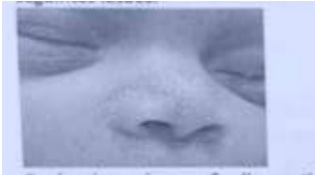
A Miliária.
B Millium.
C Acne neonatal.
D Eritema toxico.
Questão 315 · Calendário inf antil · 4000189921Chega no consultório uma criança que completa hoje 4 meses. Qual das vacinas se deve orientar?
A Vacina BCG + Hepatite B
B Vacina FA + Vacina adsorvida hepatite A4 (inativada)
C Vacina Penta + VIP + Pneumo10 + VRH
D Vacina Meningo C + Vacina influenza
Questão 316 · Tratamento Geral · 4000189919Pré-escolar de 4 anos de idade, sexo feminino, com diagnóstico clínico de pneumonia, a mãe refere que já fez uso de Amoxicilina, sem melhora do quadro. Ao exame físico apresenta estridor em repouso, tiragem subcostal e sonolência excessiva. Na radiogra a de tórax imagem compatível com derrame pleural. Qual será a conduta para essa criança:
A Prescrever amoxicilina-clavulanato em dose de 90mg/Kg/dia e alta.
B Liberar a criança em uso de amoxicilina clavulanato em dose de 90mg/Kg/dia e solicitar retorno em 48 horas para reavaliação clínica.
C Prescrever na Emergência Pediátrica uma dose de penicilina benzatina e alta.
D Internar a criança, coletar hemocultura e iniciar antibioticoterapia intravenosa.
Questão 317 · Sopro na inf ância · 4000189917Escolar sadio de 10 anos de idade, sexo masculino, sem queixas no momento, assiste para consulta de rotina. Ao exame físico identi cou presença de um sopro na ausculta cardiovascular, sem outras alterações. Qual característica clínica indica a possibilidade de ser um sopro inocente.
A Apresenta alta intensidade.
B Presente na diástole.
C Associa-se a frêmito ou ruídos acessórios (como estalidos e cliques).
D Localizado uma área pequena e bem definida, sem irradiação sem repercussão hemodinâmica.
Questão 318 · Aspectos Clínicos Quadro clínico · 4000189915Criança com amigdalite purulenta apresentou exantema em lixa, Sinal de Pastia, palidez perioral, língua em framboesa e, descamação da pele das mãos e dos pés. Qual o diagnóstico correto?
A Escarlatina.
B Doença de Kawasaki.
C Síndrome mão-pé-boca.
D Roséola.
Questão 319 · Síndrome de West · Tratamento · 4000189914Em relação as crises convulsivas na infância, sinalize alternativa INCORRETA.
A Recomendado uso continuo de drogas anticonvulsivantes na primeira crise convulsiva febril simples.
B Nas crises convulsivas refratárias aos benzodiazepínicos os medicamentos de escolha seriam Fenitoína ou Fenobarbital.
C A Síndrome de West caracteriza-se pela tríade de espasmos infantis, involução ou interrupção do desenvolvimento neuropsicomotor e EEG com padrão de hipsarritmia.
D O fármaco de escolha no tratamento das crises convulsivas no período neonatal é o fenobarbital.
Questão 320 · Diagnóstico · 4000189913O sarampo é uma doença viral aguda e extremamente grave, principalmente em crianças menores de 5 anos de idade, pessoas desnutridas e imunodeprimidas. A transmissão do vírus ocorre de forma direta, por meio de secreções nasofaríngeas expelidas ao tossir, espirrar, falar ou respirar próximo às pessoas sem imunidade contra o sarampo. Além disso, o contágio também pode ocorrer pela dispersão de aerossóis com partículas virais no ar, em ambientes fechados como escolas, creches, clínicas, entre outros. Das alternativas abaixo, qual reforça o diagnóstico de sarampo e ajuda no diagnóstico diferencial das demais patologias virais em crianças é:
A Leucopenia
B Escassez de sintomas sistêmicos.
C Presença de pápulas brancas, pequenas, sobre uma base difusamente vermelha na mucosa bucal, 1 ou 2 dias antes e depois do exantema, em geral, opostas aos molares inferiores.
D Início rápido do edema pulmonar inexplicável e miocardiopatia.
Questão 321 · Sepse Neonatal Precoce · 4000189911Recém-nascido com 15 horas de vida, 39 semanas, parto normal sem intercorrências, chorou ao nascer e Apgar 9/9. Ao exame físico: T: 38.2ºC / FC: 189 bpm / FR: 60 irpm. a para insu ciência respiratória. Tratando de um quadro clínico infeccioso, deve ser de origem materna ou hospitalar? Qual agente etiológico mais provável?
A Materna, Sífilis.
B Hospitalar, Staphylococcus aureus.
C Materna, Satreptococcus agalactie.
D Hospitalar, Pseudomonas aeruginosa.
Questão 322 · Icterícia Fisiológica · Fatores de risco para hiperbilirrubinemia · Hiperbilirrubinemia não f isiológica · 4000189908Hiperbilirrubinemia indireta tem fatores de risco epidemiológicos e clínico laboratoriais identi cados nas primeiras 48 horas, após o nascimento em RN > 35 semanas de idade gestacional exceto:
A Sífilis congênita.
B Clampeamento de cordão umbilical 60 segundos após o nascimento.
C Incompatibilidade materno-fetal Rh (antígeno D), ABO ou antígenos irregulares.
D Presença de céfalo-hematoma ou equimoses.
Questão 323 · Clampeamento tardio do cordão · 4000189907Um recém-nascido sexo feminino de 40 semanas de idade gestacional nasceu por parto vaginal. O bebê chorou forte e apresentou movimentos ativos tão logo foi extraído da mãe. Neste caso, qual é o tempo mínimo recomendado para realizar o clampeamento do cordão umbilical?
A 15 segundos.
B 45 segundos.
C 30 segundos.
D 60 segundos.
Questão 324 · Evolução da lesão · 4000189903Mãe chega ao consultório com o lho de 1 mês e 5 dias preocupada, porque no local onde foi administrada a vacina da BCG apresenta uma lesão ao exame e visualizado formação de uma pústula e dor a manipulação do membro. Assine alternativa correta
A Notificar o caso como evento adverso da vacina.
B Iniciar tratamento com Isoniazida na dose de 10 mg/kg/dia até a regressão completa da lesão.
C Tranquilizar a mãe informado que se trata da evolução esperada para lesão vacinal orientando limpeza com água e sabão.
D Iniciar tratamento com antibiótico oral.
Questão 325 · Reanimação neonatal em maiores de 34 semanas · 4000189779Você está em sala de parto e o obstetra avisa que houve prolapso do cordão. Chega ao berço aquecido um recém-nascido de 35 semanas e 3 dias em apneia. Após os passos iniciais, observa-se manutenção da apneia e frequência cardíaca de 60 bpm. Foi iniciada ventilação com balão auto-in ável e máscara e instalado oxímetro de pulso na mão direita e monitor cardíaco de três derivações. Após 30 segundos não houve aumento da frequência cardíaca e ainda não há registro no monitor do oxímetro. Qual a conduta imediata?
A está indicada a ventilação através de cânula traqueal devido à ventilação por máscara facial prolongada.
B repetir o ciclo de ventilação por balão e máscara, oferecendo oxigênio suplementar a 100%.
C está indicada a ventilação através de máscara laríngea devido à ventilação por máscara facial não efetiva.
D iniciar massagem cardíaca sincronizada, pois a frequência cardíaca permanece em 60 bpm.
E verificar se a técnica de ventilação está correta, avaliar permeabilidade das vias aéreas e pressão exercida no balão
Questão 326 · Pediatria · 4000189778Paciente sexo masculino, 13 anos, ganhou 8 kg nos últimos 10 meses. Relata não tomar café-damanhã, não ter horários xos para almoçar e jantar e não pratica atividade física. Nega história de obesidade, doença coronariana ou dislipidemia na família. Exame físico: peso 76 kg, estatura 160 cm, IMC 29,7 kg/m2 (> escore Z +3), PA 108x76mmHg, circunferência abdominal 72 cm (< P90). Estadiamento puberal G4P4. Ausência de acantose nigricans. Exames laboratoriais recentes: Colesterol total 165 mg/dl, HDL 32 mg/dl, LDL 155 mg/dl, triglicerídeos 145 mg/dl, glicemia jejum 99 mg/dl. Baseado no caso acima, qual é o diagnóstico e conduta inicial adequados? Considere: MEV = mudanças no estilo de vida.
A Síndrome metabólica. MEV e metformina.
B Síndrome metabólica. MEV e estatina.
C Obesidade grave, sedentarismo e dislipidemia. MEV.
D Obesidade, sedentarismo e dislipidemia. MEV e metformina.
E Obesidade grave, sedentarismo e dislipidemia. MEV e estatina
Questão 327 · Introdução alimentar · 4000189776Aurora completou 6 meses e retorna em consulta para as orientações da introdução alimentar. Até então estava em amamentação exclusiva, com bom ganho de peso. Seus pais encontraram algumas informações sobre o tema na internet e gostariam de conversar sobre elas. Considere as asserções seguintes como verdadeiras ou falsas e assinale a alternativa correta: ( ) Os sinais de saciedade de crianças abaixo de 1 ano, mesmo crianças saudáveis, não são confiáveis. ( ) A partir do momento que começamos a alimentação complementar, devemos oferecer água potável. ( ) Todos os tipos de carne estão liberados a partir dos 6 meses, desde que bem cozidas. ( ) O ovo e os derivados do leite de vaca não devem ser oferecidos antes de 1 ano.
A FVVF
B VVVV
C FFFF
D FVFV
E VVFF
Questão 328 · Comunicação interventricular · 4000189775Você atende um lactente de 2 meses, que vem em consulta de puericultura com queixa de cansaço progressivo às mamadas. Mãe nota ainda discreta sudorese durante a amamentação. Nega febre, tosse, coriza ou obstrução nasal. Ganho ponderal = 20g/dia. Saturação de O2 96%. Qual é a hipótese diagnóstica?
A Tetralogia de Fallot.
B Transposição dos grandes vasos.
C Estenose pulmonar.
D Comunicação interventricular.
E Síndrome de Wolff-Parkinson-White.
Questão 329 · Pediatria · 4000189774Menina com 14 anos e 6 meses está em consulta em UBS acompanhada pelo pai, preocupado com seu crescimento e desenvolvimento. Seu exame antropométrico evidencia estatura no escore-z -1,6 e IMC no +2,2. No exame físico, apresenta desenvolvimento de glândula mamária fora do limite da aréola, com duplo contorno na inspeção lateral. Já apresenta pili cação axilar e pubiana, delimitada à região do monte pubiano. Sem outros achados no restante do exame físico. Qual a afirmação correta sobre o caso?
A adolescente púbere e com obesidade grave, sendo necessário encaminhamento multidisciplinar com equipe de nutrição e psicologia.
B adolescente púbere e com obesidade, sendo necessário complementar investigação sobre hábitos alimentares e hábitos de vida.
C adolescente púbere, com baixa estatura e sobrepeso, sendo necessária avaliação laboratorial extensa e encaminhamento especializado.
D adolescente com obesidade e retardo puberal, já que ainda não apresentou menarca. É necessário referenciamento especializado para investigação.
E adolescente púbere e eutrófica, deverá ser mantido seguimento clínico anual.
Questão 330 · Alergia à proteína do leite de vaca · 4000189771Menino, 55 dias de vida, vem à consulta de puericultura referindo sangramento vivo nas fezes iniciado há 4 dias. A mãe informa que teve uma gestação sem intercorrências, a criança nasceu a termo com peso adequado para gestação, recebendo fórmula infantil na maternidade, pois seu leite não tinha descido (sic), no momento em aleitamento materno exclusivo. Ao exame físico encontra-se em BEG, sem alterações cardiorrespiratórias ou cutâneas, com ganho ponderal no limite do esperado, com hematoquezia evidenciada. Frente ao quadro referido assinale a alternativa correta:
A trata-se de uma alergia alimentar mediada por IgE, sendo indicado uso de fórmula extensamente hidrolisada.
B trata-se de uma alergia alimentar não mediada por IgE, sendo indicado a fórmula de soja.
C trata-se de um quadro de proctocolite, APLV não mediada por IgE e o leite materno deve ser mantido.
D trata-se de uma alergia alimentar e a dosagem de IgE específica será necessária para confirmação diagnóstica.
E trata-se de uma intolerância à lactose, sendo necessário o uso de fórmulas isentas de lactose.
Questão 331 · Plano C · 4000189769Lactente de oito meses com quadro de diarreia aquosa profusa e vômitos há dois dias, associada à febre. Exame físico: hipotônico, boca e lábios secos, tempo de enchimento capilar 6 segundos. Peso aproximado: 8kg. A conduta correta é: Considere: SRO = sais de reidratação oral SF = Soro Fisiológico RL = Ringer lactato
A reparação por gastróclise – TRO 150 ml/hora por 4 a 6 horas.
B expansão – SF 160 ml EV em 20 minutos.
C reparação por via oral – TRO 400 ml em 4 horas fracionados a cada 30 minutos.
D expansão – RL 240 ml EV em em bolus.
E reparação rápida – SF 250ml em 60 minutos e 550ml em 3 horas seguintes.
Questão 332 · Pediatria · 4000189768Gabriel tem paralisia cerebral e sua mãe tem medo de que ele não sobreviva até a idade adulta. As principais causas de óbito em pacientes com Paralisia Cerebral estão ligadas a:
A intoxicações por medicamentos.
B meningites.
C complicações pulmonares.
D crises epiléticas.
E quedas.
Questão 333 · Distúrbios da glicose · 4000189767Recém-nascido, 2 horas de vida, apresentou glicemia capilar de 35 mg/dl durante realização de triagem. Encontra-se bem em alojamento conjunto. Mãe, 28 anos, G1P1, IG 39 semanas, diabetes mellitus gestacional, sorologias negativas. Sem demais intercorrências durante o pré-natal. Nascido de parto cesárea, com bolsa rota no ato, APGAR 9 e 10. Peso de nascimento 4.310g. Qual conduta deve ser tomada?
A não há necessidade de conduta específica, pois a glicemia apresenta valor normal.
B oferecer seio materno e realizar nova coleta de glicemia 30-60 minutos após.
C oferecer 80 ml de fórmula infantil e nova coleta de glicemia 30-60 minutos após.
D oferecer seio materno e realizar “bolus” com SG a 10% na dose de 2ml/kg.
E “bolus” com SG a 10% na dose de 2 ml/kg e instalar soro com glicose a 6mg/kg/min.
Questão 334 · Suporte Básico de Vida · 4000189763Sobre o Suporte Básico de Vida em pediatria, é correto afirmar:
A a sequência inicial de reanimação é composta de compressões torácicas, seguida de ventilações, com relação 30:2.
B a avaliação de responsividade inclui observar sinais de respiração ou gasping e checar pulso, sendo dever de todo socorrista essas duas ações.
C para um adolescente, a profundidade da compressão torácica ideal deve ser de 4 cm, devendo-se sempre respeitar a re-expansão torácica.
D para profissionais da saúde é recomendável a reavaliação da circulação após cada ciclo, não devendo esta durar mais que 15 segundos.
E em crianças, a compressão torácica pode ser feita com 1 ou 2 mãos, devendo-se efetuar no terço superior do esterno, com interrupções mínimas.
Questão 335 · Pediatria · 4000189761Lactente de 10 meses apresenta lesões eczematosas desde os 6 meses de idade, inquietação, xerose cutânea, sem melhora completa aos tratamentos anteriores, de caráter recidivante. Considerando a doença em questão, ao exame físico serão encontradas as lesões em:
A pregas antecubitais e poplíteas, liquenificadas e com placas circunscritas.
B pregas flexoras dos braços, pescoço e pernas, liquenificadas.
C face, dorso das mãos e dos pés, punhos e tornozelos.
D face, couro cabeludo, tronco e região extensora dos membros.
E pregas flexoras dos braços, liquenificadas e com placas circunscritas.
Questão 336 · Exame f ísico do Recémnascido · 4000189760No 5º dia de vida, a mãe leva seu lho para coleta do Teste do Pezinho. Ao exame físico você observa mamas do RN ingurgitadas e com saída de secreção semelhante ao colostro, genitália masculina, abertura da uretra na extremidade do pênis, com criptorquidia unilateral. O RN nasceu de parto normal, a termo e está em aleitamento materno exclusivo. Qual a conduta?
A colher cariótipo.
B solicitar cultura da secreção.
C observar a evolução.
D dosar hormônios.
E realizar tomografia de crânio.
Questão 337 · Pediatria · 4000189758Menina de 10 anos se queixa baixa estatura. Tanner M1P2, com estaturas entre -2,0 e -3,0 desde o nascimento e relação entre segmento superior e segmento inferior de 1,7. Aparente macrocrania. Altura alvo de 150 cm (mãe 152 e pai 154). A hipótese diagnóstica mais provável é:
A baixa estatura familiar.
B baixa estatura constitucional.
C Síndrome de Turner.
D deficiência de GH.
E displasia óssea.
Questão 338 · Pediatria · 4000189757. Lactente, 9 meses, apresenta febre há três dias e recusa alimentação. Hoje apresentou 3 episódios de vômitos após a ingestão de leite materno. Criança está prostrada e não quer brincar. Nega outros sintomas. Ao exame físico: paciente febril, irritado, bebendo rapidamente o líquido que lhe foi oferecido, sinal da prega desaparecendo lentamente e tempo de enchimento capilar de 3 segundos; sem outras alterações. Colhidos exames por cateterização uretral. Urina 1: 30.000 piócitos/mL, nitrito positivo. Sobre o caso, assinale a alternativa correta:
A está confirmado o diagnóstico de infecção do trato urinário, não sendo necessário nenhum exame adicional.
B as alterações no exame de urina 1 são devidas ao quadro de desidratação apresentado pelo paciente.
C o paciente apresenta desidratação grave e deve ser feita a fase de expansão com 20 mL/kg de soro fisiológico 0,9%.
D a urocultura será considerada positiva se houver crescimento maior que 1000 UFC/mL de pelo menos dois patógenos.
E é indicada a internação desse paciente para reidratação e início de antibiótico (ceftriaxona) via parenteral.
Questão 339 · Pediatria · 4000189755Pré-escolar de 4 anos é levado ao pronto socorro com febre de até 39°C há 2 dias, tosse e di culdade para respirar observada pela genitora. Mãe informa que o paciente não está conseguindo ingerir líquidos e que vomitou várias vezes nas últimas 24 horas. Exame físico: hidratada, FC 125 bpm, FR 46 irpm, sem febre no momento, saturação 93%, roncos e estertores difusos a ausculta pulmonar. A respeito do caso, qual conduta tomar?
A paciente sem prioridade de atendimento, uma vez que os sinais vitais estão normais para a idade.
B priorizar o atendimento em sala de urgência, medicar com antiemético e tranquilizar a família de que a criança terá alta após medicação.
C atendimento não priorizado, porém manter criança em sala de isolamento respiratório, pois trata-se de um possível quadro de Covid.
D atendimento priorizado em sala de urgência, monitorização, O2, acesso venoso e exames, sem antibioticoterapia empírica, por hipótese diagnóstica de influenza.
E atendimento priorizado em sala de urgência, isolamento respiratório, monitorização, oxigênio e acesso venoso. Antibioticoterapia empírica.
Questão 340 · Pediatria · 4000189754Paciente com 5 anos de idade apresenta-se com queixa de fraqueza, petéquias, adinamia, malestar e parestesias de membros inferiores. No hemograma observa-se pancitopenia e presença de granulócitos hipersegmentados. Em relação ao diagnóstico, assinale a alternativa correta:
A anemia ferropriva.
B anemia de doença crônica.
C leucemia mielóide aguda.
D anemia megaloblástica.
E leucemia linfóide aguda.
Questão 341 · Teste do olhinho · Teste do Olhinho · 4000189753RN de 37 semanas e 1 dia, nascido de parto cesárea de forma eletiva, sem intercorrências no intra-parto, com pré-natal de baixo risco, contendo 7 consultas. Ao nascer, apresenta durante os testes de triagem neonatal leucocoria bilateral. Sobre o caso, assinale a alternativa correta:
A diante de pré-natal de baixo risco está descartada a hipótese de catarata congênita.
B o teste deve ser repetido antes de encaminhar ao especialista.
C a principal hipótese diagnóstica desse caso é glaucoma congênito.
D a principal causa de teste do olhinho alterado é retinoblastoma.
E para descartar causas malignas o encaminhamento deve ser precoce.
Questão 342 · Pediatria · 4000189751Menino de 10 anos dá entrada na UPA com quadro de dor abdominal, náuseas e vômitos há 2 dias, com piora na data de hoje. Ao exame: FC 135 bpm, FR 44 irpm, escassez generalizada de tecido adiposo, mucosas secas, TEC 8 segundos, pulsos débeis, sonolento. O plantonista suspeita de sepse de origem no trato digestivo e solicita exames: leucometria 18000/mm3 com desvio à esquerda; Na 132 mEq/l (VR 135-145); K 5,8 mEq/l (VR 3,5-5,5); gasometria arterial pH 7,2 (VR 7,35-7,45), paO2 99 mmHg (VR 80-100), paCO2 32 mmHg (VR 35-45), HCO3 12 mEq/L (VR 22-26). O diagnóstico e a conduta imediata são:
A Toxinfecção alimentar. Expansão com SF 20 mL/kg repetido a cada 30 minutos até hidratar.
B Gastroenterocolite aguda. Ondansetrona + reparação com soro de reidratação oral 50-100 mL/kg na unidade.
C Sepse de foco digestivo. Expansão com SF 20 mL/kg repetido a cada 30 minutos até hidratar + ceftriaxone.
D Cetoacidose diabética. Coleta de glicemia sérica para confirmação diagnóstica e expansão com SF 20 mL/kg.
E Abdome agudo e provável apendicite. Expansão com SF 20 mL/kg e solicitação de ultrassonografia abdominal.
Questão 343 · Pediatria · 4000189749Você é o residente de cirurgia pediátrica do serviço e é solicitado para avaliar um recém-nascido. Ultrassonogra sta obstétrico não conseguiu definir o sexo. A sexagem fetal foi 46, XX. Nasceu um bebê com falo de 3 cm, abertura da uretra na extremidade do falo, eminências labioescrotais enrugadas e hiperpigmentadas, mamilos hiperpigmentados, testículos não palpáveis. O pai relata que o médico plantonista que conversou com a família após o parto disse que a conduta seria exame de imagem para proceder a cirurgia de correção da criptorquidia. A hipótese diagnóstica e conduta sobre a definição do sexo na declaração de nascido vivo são:
A disgenesia gonadal pura, não definir o sexo.
B deficiência de 5 alfa-redutase, sexo masculino.
C hiperplasia adrenal congênita clássica, não definir o sexo.
D criptorquidia bilateral, sexo masculino.
E hipogonadismo hipogonadotrófico, sexo masculino.
Questão 344 · Pediatria · 4000189565Primigesta de 30 anos no primeiro trimestre da gestação vem à consulta de pré-natal com resultado das sorologias: HBsAg negativo, Anti-HBs positivo, Anti-HBc total negativo, Anti-HCV positivo, HIV negativo. Quanto ao aleitamento materno, qual é a alternativa correta?
A Paciente não apresenta contraindicação absoluta para amamentar o seu filho, devendo ser devidamente esclarecida quanto ao risco de transmissão vertical.
B Infecção pelo vírus do HIV é uma contraindicação absoluta à amamentação, assim como a citomegalovirose e a varicela.
C A hepatite B crônica não se apresenta como uma contraindicação formal à amamentação, devendo a criança apenas receber a dose da vacina BCG ao nascimento.
D Infecção pelo vírus HTLV 1 contraindica relativamente a amamentação.
Questão 345 · Pediatria · 4000189563Criança, 5 meses de idade, apresentou quadro de tosse seca, coriza hialina e congestão nasal há 5 dias, evoluindo hoje com quadro de otalgia unilateral e choros. À otoscopia, visualiza-se membrana timpânica com abaulamento moderado e opaca. Qual o próximo passo no atendimento dessa criança neste momento?
A Amoxicilina e sintomáticos.
B Tratamento conservador.
C Amoxicilina, clavulanato e sintomáticos.
D Cefuroxima e sintomáticos.
Questão 346 · Pediatria · 4000189560Criança de 7 anos de idade apresenta quadro de odinofagia, febre alta, dor abdominal e vômitos. Comparece em regular estado geral, febril, prostrada, com hiperemia faríngea, amigdalite pultácea e petéquias em palato. Pensando-se na principal hipótese diagnóstica, assinale a alternativa correta.
A A febre reumática, complicação tardia não supurativa, pode ser prevenida independente do tempo de início do tratamento com penicilina.
B O teste rápido sendo positivo autoriza o início do tratamento. Um teste, mesmo que negativo, não descarta infecção pelo
C A glomerulonefrite pós-estreptocócica, uma complicação não supurativa, pode ser prevenida pelo tratamento com penicilina benzatina.
D Caso o paciente apresente sinais de intensificação da odinofagia, disfagia, sialorreia e trismo, deveremos pensar em abcesso retrofaríngeo.
Questão 347 · Pediatria · 4000189559Criança do sexo masculino, de 6 anos de idade, apresenta quadro de fadiga, mialgia, mal-estar, coriza hialina e congestão nasal há 12 dias, sem melhora com sintomáticos. Hoje, cuidadores levaram-no por apresentar rouquidão, tosse, dor no ouvido e discreta dispneia. À otoscopia, apresentava miringite bolhosa. Frequência respiratória de 30 incursões respiratórias por minuto, sem outras alterações de sinais vitais. Radiogra a de tórax apresenta in ltrado intersticial. Qual deve ser o tratamento neste momento, pensando-se em qual agente etiológico?
A Amoxicilina e
B Azitromicina e
C Amoxicilina com
D Ceftriaxone e
Questão 348 · Pediatria · 4000189557Criança de 1 ano e meio de idade comparece acompanhado da mãe com quadro de apatia, anorexia e hipoatividade. Mãe relata que o lho começou a car assim após o parto do segundo lho, atualmente com 6 meses de idade, além de car mais inchado e com episódios de diarreia. Ao exame físico, criança mostra-se edemaciada, hipoativa, com pele despigmentada, cabelo com discromias e quebradiços e hepatomegalia palpável a 1cm do rebordo costal direito. Qual o provável diagnóstico e outro possível achado na anamnese e/ou exame físico?
A Deficiência de vitamina E; xeroftalmia.
B Síndrome nefrótica; redução de débito urinário.
C Kwashiorkor; hepatomegalia secundária à esteatose hepática.
D Marasmo; déficit de peso/estatura.
Questão 349 · Rubéola Congênita · 4000189555Criança nascida prematura e tendo tido restrição de crescimento intrauterino, apresenta ao nascimento catarata, persistência do canal arterial e surdez bilateral. Qual a provável infecção neonatal que sua mãe adquiriu?
A Varicela.
B Sífilis.
C Rubéola congênita.
D Toxoplasmose.
Questão 350 · Hiperbilirrubinemia não f isiológica · 4000189552Recém-nascido manifesta icterícia nas primeiras 24 horas de vida. É o segundo lho de mãe O negativo e pai AB positivo. Nos exames laboratoriais, apresenta aumento de bilirrubinas totais, à custa de fração indireta, tipo sanguíneo A negativo, reticulócitos corrigidos em valor aumentado, teste de Coombs positivo. Sangue periférico demonstra esferócitos. Qual a causa mais provável de icterícia neonatal?
A Incompatibildiade Rh.
B Deficiência de G6PD.
C Esferocitose hereditária.
D Incompatibilidade ABO.
Questão 351 · Pediatria · 4000189550Criança apresenta quadro de febre alta, tosse intensa, coriza, conjuntivite com fotofobia iniciadas há 2 dias, após contato com criança da creche cerca de 2 semanas antes. Ao exame físico, apresenta exantema maculopapular iniciado na linha de implantação do cabelo e com progressão craniocaudal lenta. Sobre o caso, assinale a alternativa correta.
A Na prevenção pré-exposição, há as vacinas tríplice e tetraviral, que são administradas, respectivamente, com 12 e 18 meses de idade.
B Na prevenção pós-exposição, o bloqueio vacinal pode ser realizado em até 6 dias da exposição para contactantes suscetíveis. Pode ser realizada mesmo que a criança seja menor de 6 meses de idade.
C A imunoglobulina-padrão pode ser utilizada em até 3 dias da exposição.
D Otite média aguda é a complicação bacteriana mais comum.
Questão 352 · Pediatria · 4000189547Recém-nascido é levado à emergência pelos pais após história de queda do berço há 2 dias. Pais relatam que não trouxeram o lho antes no pronto-socorro porque aparentava estar bem e que não precisaria de atendimento. Ao exame físico, criança apresentavase hipocontactuante, hematomas em diferentes locais do corpo, em diferentes estágios de evolução, assim como hemorragia retiniana no fundo de olho. Qual a principal hipótese diagnóstica?
A Síndrome do bebê sacudido.
B Traumatismo cranioencefálico leve.
C Síndrome de Munchausen.
D Meningoencefalite bacteriana.
Questão 353 · Pediatria · 4000189546Lactente apresenta cianose e dispneia durante a amamentação, com limitação atual ao ganho de peso. Durante investigação do quadro, notou-se ausculta cardíaca com sopro rude, mesossistólico, na borda esternal esquerda superior. Radiogra a de tórax demonstra coração em formato de tamanco de holandês, área cardíaca aumentada. Eletrocardiograma demonstra sinais de sobrecarga ventricular direita. Pensando-se na principal cardiopatia congênita, qual a alternativa correta?
A Nas crises hipercianóticas, devemos fletir os joelhos contra o próprio tórax, além de suplementar oxigênio e administrar volume. Caso refratário a essas medidas, deveremos prontamente iniciar droga vasoativa e realizar intubação orotraqueal.
B Consiste em 4 grandes defeitos: comunicação interventricular, hipertrofia ventricular direita, obstrução da via de saída do ventrículo direito e cavalgamento da aorta sobre o septo interventricular
C Decorre de hiperfluxo pulmonar, sendo que a cianose ocorre por conexão centricular-arterial anormal ou por mistura total do sangue venoso sistêmico e pulmonar dentro do coração.
D Outras doenças que fazem diagnóstico diferencial por também serem cardiopatias cianóticas são: comunicação interventricular (CIV) e defeito de septo átrio-ventricular (DSAV).
Questão 354 · Diagnóstico · 4000189468A febre reumática (FR) é uma doença inflamatória, sistêmica, mais prevalente em crianças na faixa etária de 5 a 15 anos de idade, de agrada pelo Streptococcus articulações, coração e pele.Considerando a patologia descrita e os conhecimentos médicos atuais, assinale a alternativa correta
A O diagnóstico do primeiro surto de FR é realizado por dois critérios maiores, como poliartralgia e febre.
B A artrite dá-se com o envolvimento de grandes e pequenas articulações, com caráter aditivo e progressivo.
C Na FR recorrente, podem-se considerar três critérios menores, independentemente do grupo de risco do paciente.
D O eritema marginado consiste em uma lesão macular com halo claro, que ocorre frequentemente na face e que é muito pruriginosa.
E O ecodopplercardiograma deve ser solicitado apenas quando, na ausculta cardíaca, for encontrado sopro mitral.
Questão 355 · Programa Nacional de Imunizações · 4000189465Quanto às vacinas do calendário infantil, assinale a alternativa correta.
A A vacina contra rotavírus está contraindicada em lactentes com refluxo gastroesofágico.
B Em caso de PPD negativo, após vacinação com a BCG, indica-se revacinação com a mesma vacina.
C Caso o lactente vomite a vacina de rotavírus aplicada, a indicação é aplicar nova dose imediatamente.
D Quem já teve coqueluche não precisa receber a imunização contra essa doença em razão de a doença conferir proteção permanente.
E A vacina de poliomielite oral bivalente é indicada para o reforço aos 15 meses e aos 4 anos de idade.
Questão 356 · Aspectos Clínicos · Agente etiológico e f isiopatologia · 4000189463Uma criança com 7 anos de idade apresenta, há quatro dias, lesões que se iniciaram na face e no couro cabeludo, as quais rapidamente se disseminaram para o tronco. As lesões são caracterizadas por prurido intenso, polimor smo (mácula, pápula, vesícula e crosta) e são altamente contagiosas. A mãe procurou o posto de saúde, e o médico que a examinou prescreveu sintomáticos. Acerca do diagnóstico do citado quadro, assinale a alternativa correta.
A O exantema papulovesicular acomete muito as extremidades, e o contágio ocorre através de fômites.
B Nas crianças, há um pródromo muito longo, em geral 10 dias, para depois as lesões iniciarem-se como crostas.
C Não é frequente o aparecimento de lesões em mucosa, como no palato e (ou) na mucosa vulvovaginal.
D A evolução lenta da doença faz com que tenhamos lesões pleomórficas, ou seja, em um estágio de lesão elementar.
E A incidência de complicações é relativamente maior em crianças menores de 1 ano de idade e em adultos.
Questão 357 · Hiperbilirrubinemia não f isiológica · 4000189462Um recém-nascido (RN) a termo, adequado para a idade gestacional, apresenta quadro de icterícia, iniciada com 30 horas de vida. No quinto dia, teve um pico de hiperbilirrubinemia indireta de 15 mg/dL, com redução gradual. Está em aleitamento materno exclusivo, com bom ganho de peso, sem outras alterações ao exame físico. A respeito da icterícia do RN, assinale a alternativa correta.
A Na icterícia do leite materno, pode ocorrer aumento da bilirrubina indireta, havendo indicação de suspender o leite materno exclusivo.
B A terapêutica padrão-ouro da hiperbilirrubinemia indireta é a exsanguineotransfusão para qualquer valor sanguíneo.
C Prematuros com IG < 35 semanas apresentam, comumente, hiperbilirrubinemia direta, em razão de defeito na conjugação da bilirrubina.
D Deve-se solicitar o grupo sanguíneo da mãe e do RN, pois a incompatibilidade ABO leva á icterícia nas primeiras 24 a 36 horas de vida.
E Segundo as zonas de Kramer, observa-se o nível mais alto de bilirrubina na zona 3, cabeça e pescoço.
Questão 358 · Prematuridade e baixo peso · 4000189460O Método Canguru é um modelo de atenção perinatal voltado para a atenção quali cada e humanizada, que reúne estratégias de intervenção biopsicossocial com uma ambiência que favoreça o cuidado ao recém- nascido (RN) e à sua família. O método promove a participação dos pais e da família nos cuidados neonatais. Faz parte do método o contato pele a pele, que começa de forma precoce e crescente desde o toque, evoluindo até a posição canguru. No que se refere a esse método, assinale a alternativa correta.
A Deve ser aplicado ao RN recebendo nutrição parenteral.
B Indicado para RN prematuro e (ou) de baixo peso.
C Pode atrasar o desenvolvimento neuropsicomotor por causa da posição.
D Impossibilita ao RN manter o seu controle térmico.
E Deve ser aplicado quando o RN atingir 2.000 gramas.
Questão 359 · Síndrome de Down · 4000189459Acerca do tem síndrome de Down, assinale a alternativa correta.
A Por causa de o risco de hipotireoidismo ser alto ao longo da vida, deve-se solicitar a dosagem de TSH anualmente.
B O ecocardiograma se faz necessário caso se auscultem sopros cardíacos, pois cardiopatia é rara nesses pacientes.
C Recomenda-se evitar cambalhotas, futebol e mergulhos em razão da língua protusa da micrognatia.
D Há um calendário de imunização específico para as crianças com síndrome de Down, com diferenças nas idades das vacinas.
E Intervenções como fisioterapia motora e fonoaudiologia são indicadas somente quando há queixa específica.
Questão 360 · Sistema Respiratório · Clínica · 4000189456Um pré-escolar de 3 anos de idade comparece, com os pais dele, à consulta ambulatorial. Eles relatam que a criança apresenta sintomas recorrentes de tosse persistente, muito baixo ganho de peso e aumento da frequência das evacuações com fezes gordurosas. Na história patológica pregressa, observa-se o quadro a seguir. No quinto dia de vida: íleo meconial; aos 12 meses: internação por bronquiolite grave e, posteriormente, várias internações por sibilância recorrente; e aos 15 meses: bronquiectasias. Na história familiar, sabe-se que o avô faleceu por doença respiratória crônica, que os pais não souberam especi car. Qual é o diagnóstico mais provável desse caso hipotético?
A Asma crônica grave
B Coqueluche
C Fibrose cística
D Cirrose
E Alergia a leite de vaca
Questão 361 · Programa Nacional de Imunizações · 4000189436Segundo a Sociedade Brasileira de Imunizações (SBIm), ao nascer, uma criança deverá receber certas vacinas. Assinale a alternativa que indica essas vacinas.
A Hepatite A e poliomielite.
B Triplice viral e rotavírus.
C BCG e hepatite B.
D Varicela e pneumocócica.
E Meningocócica B e hepatite A.
Questão 362 · Tetralogia de Fallot · 4000189423A cianose é um sinal encontrado na cardiopatia congênita denominada de:
A Coarctação da aorta.
B Persistência do canal arterial.
C Tetralogia de Fallot.
D Edema da flebite.
Questão 363 · Def inição e classif icação · 4000189412Na Pediatria, diferentemente da população adulta, os valores pressóricos normais são definidos de acordo com dados obtidos a partir da aferição da Pressão Arterial de crianças sadias e distribuídos em uma tabela normativa com base em:
A Idade, estatura e peso.
B Sexo, peso, estatura.
C Idade, sexo e estatura.
D Sexo, idade e peso.
Questão 364 · Classif icação · Choque em Pediatria · 4000189410Choque é a situação em que há inadequado uxo de sangue e oxigênio para suprir a demanda metabólica. É sinal clínico de choque compensado:
A Pressão sistólica normal.
B Acidose metabólica.
C Pulsos centrais fracos.
D Taquipneia.
Questão 365 · Classif icação · Fisiopatologia · 4000189409Com relação ao choque séptico em criança, é CORRETO afirmar:
A O uso de drogas vasoativas deve ser evitado no tratamento do choque séptico.
B O choque quente caracteriza-se por extremidades aquecidas, pulsos amplos e rápidos e enchimento capilar rápido.
C A hipotensão é um sinal precoce de disfunção cardiovascular na criança em choque séptico.
D O choque frio pode se apresentar por extremidades frias, enchimento capilar prolongado por menos de 2 segundos e pulsos de fácil palpação.
Questão 366 · Prof ilaxias Ferro Vitaminas D e A · 4000189408A conduta para anemia em crianças menores de 12 meses, usando fórmulas com leite de vaca não enriquecidas com ferro é:
A Indicação de 1 a 2 mg/kg/dia de ferro dos 4 aos 18 meses. Se não tiver sido suplementada, solicite hemograma entre 9 e 12 meses.
B Indicação de 2 a 4 mg/kg/dia de ferro dos 2 aos 6 meses, quando deve ser solicitado hemograma.
C Indicação de 2 mg/kg/dia após 1 mês de vida por 2 meses. Depois, reduza a dose para 1 a 2 mg/kg/dia até os 18 meses. Solicite hemograma aos 15 meses.
D Nenhuma das alternativas anteriores.
Questão 367 · Sinais e sintomas · 4000189407RN com catarata, cegueira, surdez neurossensorial, microcefalia e persistência do canal arterial, apresenta provável diagnóstico de:
A Sífilis congênita.
B Infecção congênita por citomegalovírus.
C Rubéola congênita.
D Infecção congênita por herpes-simples.
Questão 368 · Aspectos Clínicos Quadro clínico · 4000189406Sobre a Bronquiolite, é CORRETO afirmar:
A É frequentemente causada por agentes não virais nas crianças acima de dois anos de idade.
B As principais infecções bacterianas envolvidas nas complicações da bronquiolite são otite média aguda e pneumonia.
C Cerca de 10% dos casos exigem internação hospitalar e, desses, cerca de 30% necessitam de internação em terapia intensiva.
D É causada predominantemente pelo rinovírus nos períodos epidêmicos, ou seja, no outono, e pelo adenovírus nas situações não epidêmicas.
Questão 369 · Epinef rina · 4000189404A Ana laxia é sempre uma emergência médica que se caracteriza por imprevisibilidade, rápida instalação e risco real de morte. Com relação à Anafilaxia, é CORRETO afirmar:
A Com base nos sintomas inicias, é possível prever com segurança a gravidade e o tempo de evolução do evento anafilático.
B A avaliação laboratorial é essencial para o diagnóstico precoce da Anafilaxia.
C A hipersensibilidade ao veneno de insetos da ordem Hymenoptera é o desencadeante mais comum de reações anafiláticas.
D A adrenalina é a droga-chave na Anafilaxia e a sua rápida administração garante diminuição da mortalidade.
Questão 370 · Aspectos Clínicos Quadro clínico · Agente etiológico Fisiopatologia e Imunidade · Tratamento · 4000189402Com relação à Coqueluche, é INCORRETO afirmar:
A É uma doença de notificação compulsória.
B A transmissão é pelo contato direto com gotículas do trato respiratório de pessoas infectadas.
C Seu agente etiológico é um Cocobacilo Gram positivo.
D A principal complicação é a pneumonia. A convulsão é uma complicação neurológica frequente, sobretudo, nos menores de 1 ano.
Questão 371 · Aspectos Clínicos Quadro clínico · 4000189401Levando em conta a saúde da criança, considera-se frequência respiratória normal, segundo a Organização Mundial da Saúde (OMS), para criança acima de 8 anos:
A Até 60 mrm.
B Até 40 mrm.
C Até 30 mrm.
D Até 20 mrm.
Questão 372 · Programa Nacional de Imunizações · 4000189400Entre as vacinas que uma criança de 12 meses deve tomar, encontra-se a:
A Meningocócica C (reforço).
B Hepatite B (segunda dose).
C Febre amarela (dose única).
D Tetraviral (primeira dose).
Questão 373 · Aspectos Clínicos · Quadro clínico · 4000189399Quanto ao sarampo, nas crianças imunossuprimidas, pode haver exantema petequial ou purpúrico e são possíveis complicações graves sem associação à erupção, EXCETO:
A Hepatite.
B Espasmos.
C Pneumonia.
D Encefalite.
Questão 374 · Taquipneia Transitória do Recémnato TTRN · 4000189397RN de parto cesariana, idade gestacional de 40 semanas, peso de nascimento 2,800 kg, líquido amniótico claro e bolsa rota no ato. Iniciou com desconforto respiratório logo após o nascimento, necessitando oxigênio inalatório. Radiogra a de tórax normal. No nal de 72 horas de vida, estava eupneico e sem necessidade de oxigênio. O provável diagnóstico é:
A Doença de Membrana Hialina.
B Síndrome de Aspiração de Mecônio.
C Pneumonia Congênita.
D Taquipneia Transitória do RN (TTRN).
Questão 375 · Síndrome de Down · 4000189395PGL, 3 meses, portador de Síndrome de Down. Mãe comparece à consulta pediátrica relatando que seu lho tem cansaço ao mamar. Na avaliação, foi constatado baixo ganho ponderal. Ao exame cardiológico, observa- se ritmo cardíaco regular, em 2 tempos, B2 hiperfonética em foco pulmonar, com sopro sistólico em borda esternal esquerda, sendo que a saturação periférica de oxigênio era de 98%. O diagnóstico mais provável é:
A Transposição das grandes artérias.
B Defeito do septo atrioventricular forma total.
C Tetralogia de Fallot.
D Comunicação interatrial.
Questão 376 · Neonatal · 4000189394Após 5 (cinco) dias de alta da maternidade, um recém-nascido a termo apresentou tendência em manter uma postura com extensão de cabeça e tronco. Tal atitude postural é:
A Normal nessa e em qualquer faixa etária, com necessidade de intervenção por meio de orientação aos pais.
B Anormal e com necessidade de encaminhamento imediato à equipe de reabilitação.
C Anormal, mas com conduta expectante.
D Normal nessa faixa etária, não necessitando de intervenção.
Questão 377 · Mononucleose · 4000189323Menino, 8 anos chega ao PS com relato de febre alta (39,7°C) e dor de garganta iniciados há 4 dias sem melhora com azitromicina iniciada há 48 horas. Ao exame: exsudato purulento sobre as amígdalas, hiperemia de pilar anterior, petéquias em palato, linfadenomegalia generalizada e ponta de baço palpável. A conduta terapêutica indicada é:
A Suspender azitromicina
B Manter azitromicina e reavaliar em 48 horas
C Aplicar dose única de penicilina benzatina
D Associar amoxicilina
Questão 378 · Choque Cardiogênico · 4000189321Menino, 6 meses de idade, chega à sala de Emergência com relato materno de palidez, cansaço e sudorese fria iniciados há 3 dias. Buscou atendimento médico por di culdade nas mamadas com piora do cansaço durante a sucção, o que vem comprometendo a ingesta alimentar do menor. Informa que recentemente se recuperou de uma diarréia viral aguda tratada em domicílio. Ao exame: acordado, irritado, mucosas hipohidratadas, pálido (3+/4+), TAX: 36,6°C, sudorese fria. Vias aéreas pérvias, Sat O2 de 88% em ar ambiente, FR: 80 irpm, tiragens intercostais e subcostais com batimento de aletas nasais, ausculta pulmonar com estertores crepitantes. RCR 3T, bulhas hiperfonéticas, sopro sistólico, FC: 192 bpm, tempo de enchimento capilar = 4 seg, PA: 88 x 52 mmHg. Abdome globoso, peristalse presente, fígado a 5cm do RCD. Qual o diagnóstico sindrômico?
A Choque cardiogênico compensado
B Choque cardiogênico descompensado
C Choque séptico descompensado
D Choque séptico compensado
Questão 379 · Causas · Quadro Clínico em Crianças · Causas · 4000189320Menino, 5 anos, chega ao ambulatório com queixa principal de aumento peniano há 1 ano associado ao rápido crescimento de pêlos pubianos e voz grossa. História patológica pregressa de investigação de vômitos esporádicos desde os 2 anos de idade com o gastropediatra sendo descartado re uxo gastro-esofágico. História familiar negativa para casos semelhantes a sua queixa atual. Exame físico: peso 20,5 kg altura 117 cm , testículos de 6 cm3 cada, consistência broelástica, contornos regulares, ausência de sinais ogísticos. Pênis 8 cm ( maior que P 95 para tamanho de pênis para idade). Tanner G3P3. A principal hipótese diagnóstica é:
A Puberdade precoce central idiopática, já que apresenta todos os carácteres sexuais desenvolvidos e este representa o principal diagnóstico de puberdade precoce entre os acometidos do sexo masculino.
B Tumor de sistema nervoso central com secreção de GnRH.
C Neurofibromatose tipo 1, que a criança ainda não apresentou neurofibromas devido a sua pouca idade.
D Hiperplasia suprarrenal congênita forma clássica perdedora de sal já que apresenta história de vômitos.
Questão 380 · Doença meningocócica · Diagnóstico · Tratamento · 4000189319Criança de 7 anos chega ao pronto socorro com relato de cefáleia e febre iniciados há 1 dia. Hoje iniciaram episódios de vômitos associada a prostração. Ao exame: regular estado geral, hipocorado, algo desidratado, acianótico, TAX: 39,2°C, nível de consciência rebaixado, rigidez de nuca, PA: 144x94 mmHg. Qual a conduta mais adequada neste caso?
A Iniciar tratamento com cefalosporina de terceira geração e em seguida, realizar punção lombar.
B Iniciar tratamento com cefalosporina de terceira geração, realizar tomografia de crânio e depois, se possível, punção lombar.
C Realizar punção lombar e iniciar tratamento com cefalosporina de terceira geração
D Realizar punção lombar, colher hemograma e hemocultura e, caso haja alteração, iniciar tratamento com cefalosporina de terceira geração.
Questão 381 · Arritimias cardíacas da inf ância · 4000189316Lactente, 7 meses com quadro de diarréia grave e desidratação é admitido na emergência arresponsivo e sem pulso. Iniciada reanimação cardiopulmonar e o monitor cardíaco mostra o ritmo do ECG em anexo. O lactente é intubado, ventilado com O2 a 100%. Realizado acesso intraósseo. Qual terapêutica é a mais adequada para ser realizada a seguir:
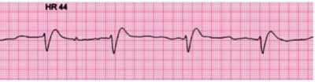
A Amiodarona 5 mg/kg
B Solução fisiológica 20 ml/kg
C Desfibrilação com 2J/kg
D Adrenalina 0,1 mg/kg
Questão 382 · Tetralogia de Fallot · 4000189312Menino, 2 anos, portador de Tetralogia de Fallot, chega a emergencia com relato de cianose generalizada persistente após crise de choro intensa iniciados há 20 minutos. TAX: 36,3°C; FC: 150 bpm , PA: 87x50 mmHg; SatO2 65%; FR 35 irpm. Qual medida farmacológica deve ser adotada na admissão deste paciente?
A Morfina
B Prostaglandina
C Dobutamina
D Milrinona
Questão 383 · Dislipidemias · 4000189311A identi cação precoce da dislipidemia, associada a mudança no estilo de vida e ao tratamento medicamentoso pode atenuar o risco cardiovascular na vida adulta. Assim, de acordo com a Sociedade Brasileira de Pediatria, deveremos realizar a triagem lipídica nas crianças e adolescentes :
A Entre 12-16 anos de idade, independente de fatores de risco, pois há influência de fatores hormonais da puberdade no aparecimento das dislipidemias.
B Todas as crianças a partir dos 9 anos até 11 anos de idade, se anteriormente não houve identificação de qualquer fator de risco (familiar ou inerente a criança) que possa justificar sua triagem antecipada.
C A partir de 2 anos de idade quando identificado fator de risco como obesidade e HAS em apenas um ou nos dois progenitores.
D A partir de 4 anos de idade, pois nesta idade as crianças já ingerem quase todos os tipos de alimentos.
Questão 384 · Tratamento · Diagnóstico · Corticóide · 4000189306Gestante, 30 semanas de idade gestacional, DHEG grave, internada há 4 dias inibindo trabalho de parto prematuro, sem outras alterações no pré natal. Evoluiu com piora clínica sendo necessária cesariana de urgência. RN nasceu bem, transferido a UTIN em CPAP nasal, realizou RX de tórax abaixo. Sobre o diagnóstico mais provável e a indicação de corticoide ante natal assinale a alternativa correta:
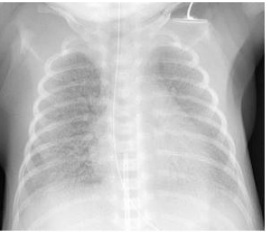
A Síndrome do desconforto respiratório, corticóide ante natal era indicada para mãe.
B Taquipneia transitória do recém-nascido, conticóide ante natal não era indicada para mãe.
C RX normal para o prematuro, corticóide ante natal era indicada para mãe.
D Pneumonia, corticóide ante natal não era indicada para mãe.
Questão 385 · Programa Nacional de Imunizações · 4000189304As vacinas recomendadas ao nascer são:
A Febre Amarela e Hepatite A.
B Meningocócica C e VOP.
C BCG e Hepatite B recombinante.
D VIP e Penta.
Questão 386 · Anaf ilaxia · 4000189278Mulher, 32 anos, comparece ao PS por queixa de cefaléia, sem sinais de alarme. Foram prescritos dipirona e cetoprofeno endovenosos. Trinta minutos após a infusão, evoluiu com estridor laríngeo,desconforto respiratório, sibilância e hipotensão. A melhor conduta inicial é:
A Soro fisiológico 0,9% 1000 ml EV agora
B Metilprednisolona 60 mg EV
C Dopamina EV 5mcg/Kg/min
D Adrenalina 0,5 mg IM
Questão 387 · Introdução · Método de coleta · Análise de urina · 4000189264Uma lactente com 5 meses de idade, nascida a termo, adequada para idade gestacional, atualmente sem aleitamento materno, dieta com leite em pó integral e papas de frutas, e em consulta de puericultura, constatou-se baixo peso. Exame físico sem anormalidades, não apresentou baixa estatura. Avaliação laboratorial realizada: HEMOGRAMA -Hemácias 4.3x 10⁶; Hemoglobina 8,8 g/dl; Hematócrito 27%; VCM 61 ; HCM 20 pg; CHCM 30%; leucócitos totais: 9.300 mm³, apresentando contagem diferencial segmentados 32%; eosinó los 5%; basó los 1%; linfócitos típicos 54%; linfócitos atípicos 0%; monócitos 8%; plaquetas: 246.000 mm³. PROTEÍNA C REATIVA: 3,5; SUMÁRIO DE URINA: aspecto límpido, cor amarelo claro, cheiro próprio, pH - 6 / nitrito - negativo / leucócitos - 3 por campo / hemácias - ausentes. UROCULTURA - presença sulfametoxazol/trimetropim/amicacina/ ácido nalidíxico/nitrofurantoína. Diante do cenário, qual a HIPÓTESE DIAGNÓSTICA E CONDUTA a ser tomada:
A Infecção do trato urinário em lactente jovem; internar para tratamento com amicacina por via parenteral.
B Infecção do trato urinário em lactente sem sinais de complicação, tratar ambulatorialmente com sulfametoxazol/trimetropim.
C Bacteriúria assintomática e deve-se orientar a fazer uma coleta de material de urina de forma adequada para não contaminar.
D Infecção do trato urinário em lactente jovem, iniciar tratamento imediato e investigar com USG as vias urinárias.
E Bacteriúria assintomática e deve se tratar ambulatorialmente com nitrofurantoína e ainda realizar USG das vias urinárias.
Questão 388 · Teste do pezinho · 4000189262Um Recém-nascido com 28 dias de vida é reconvocado pelo Serviço de Referência em Triagem Neonatal (SRTN) por ter apresentado um resultado de Fenilalanina acima do esperado para a idade, no resultado do Teste do Pezinho, colhido no seu 4º dia de vida. Sobre a época ideal para coleta, é CORRETO, afirmar:
A Não há nenhuma relação entre o tempo de coleta e a alteração encontrada no PKU do paciente.
B Para garantir que o teste seja colhido, podemos antecipar a sua coleta para as 1ªs 48h de vida, para evitar que a família deixe de realizar o exame.
C Considerando a fenilcetonúria, a relação entre o surgimento dos sintomas e a época de coleta do exame coincidem.
D Existe uma razão lógica para a orientação da coleta do sangue do bebê, a partir do 3º dia de vida, explicada pela oferta necessária de dieta proteica, para que a falha enzimática seja detectada pela triagem.
E Os níveis de fenilalanina estarão cada vez mais baixos, quanto mais exposição houver ao aleitamento materno, antes da coleta do teste.
Questão 389 · Alergia à proteína do leite de vaca · 4000189261Lactente com 2 meses de vida, em aleitamento materno exclusivo e com história familiar de atopia, evolui com sangue nas fezes, regurgitações frequentes e xerose sugestivos de Alergia à Proteína do Leite de Vaca. Qual a conduta MAIS INDICADA, neste momento:
A Orientar dieta sem lactose para a mãe durante 4-8 semanas e realizar teste de provocação oral.
B Solicitar RAST IgE específico para caseína, alfa-lactoalbumina e beta-lactoalbumina para conclusão diagnóstica.
C Iniciar prednisolona 1-2mg/kg/dia, via oral, durante 15 dias e observar a resposta.
D Iniciar fórmula de aminoácidos ou fórmula extensamente hidrolisada sem lactose durante 4-8 semanas e iniciar teste de provocação oral.
E Orientar a dieta materna com exclusão da proteína do leite de vaca durante 4-8 semanas e realizar teste de provocação oral.
Questão 390 · Herpangina Doença MãoPéBoca · 4000189260Você atende uma criança no ambulatório de pediatria com queixa de odinofagia e febre discreta. Após realizar anamnese e exame físico conclui que se trata de um quadro de herpangina. Qual a principal alteração encontrada no exame da orofaringe que levou você a essa conclusão:
A Presença de úlceras superficiais eritematosas.
B Presença de secreção membranosa amarelo-esbranquiçada.
C Presença de secreção amarelada com hiperemia intensa.
D Presença de eritema difuso moderado.
E Presença de petéquias em palato duro com eritema intenso.
Questão 391 · Tratamento · 4000189259Você avalia uma criança com quadro de urticária iniciado há 07 dias, com lesões em tórax e membros difusamente, e relato de tosse produtiva, coriza nasal hialina e febre por dois dias antes do início das lesões cutâneas. Foi prescrito Hidroxizina, bloqueador H1 de primeira geração. Houve melhora das lesões, mas 24 horas após suspender a medicação, após o uso de 7 dias, as lesões urticariformes voltaram a aparecer. Qual a conduta, das afirmativas abaixo, MAIS ADEQUADA para o caso:
A Substituir para o bloqueador H1 de segunda geração, devido a falha no uso do Bloqueador H1.
B Retornar uso de bloqueador H1 de primeira geração, na mesma dose por mais algum tempo.
C Usar corticóide sistêmico, em decorrência da falha do Bloqueador H1.
D Usar bloqueador H1 de primeira geração, porém aumentando sua dose.
E Usar Ciclosporina oral, em decorrência da falha do Bloqueador H1.
Questão 392 · Tratamento Geral · Pneumonia Atípica · 4000189258Um escolar de 11 anos, com diagnóstico de anemia falciforme, em uso de ácido fólico e hidroxiuréia, foi trazido ao serviço de pediatria com quadro de febre de 37,8ºC, além de tosse e desconforto respiratório há 6 dias. Queixou-se ainda de dor em membros inferiores. A mãe disse que a criança já tinha tido episódios também de febre e cansaço e que nas ocasiões, havia necessitado de transfusões de sangue. Ao exame apresenta-se pálido, +2/+4, ictérico em escleróticas e turgor da pele diminuído. ApR tórax com expansibilidade diminuída, ausência de tiragem subcostal, e murmúrio vesicular rude em ambos os hemitórax. Os exames de laboratório mostram: Hemácias 3.2x 10⁶; Hemoglobina 8,2 g/dL; Hematócrito 26%; VCM 81 ; HCM 26 pg; CHCM 31,5%; hematoscopia com policromasia e presença de drepanócitos. PCR 48 mg/dL, SatO2, 95%, radiogra a do tórax com seios costofrênicos livres, presença de in ltrado intersticial bilateral, sem consolidações. Diante do quadro, qual a hipótese diagnóstica e conduta MAIS ADEQUADA:
A Síndrome torácica aguda, internamento, oxigênio, antibioticoterapia, tratamento da crise dolorosa associada e transfusão.
B Pneumonia adquirida na comunidade, tratamento com amoxicilina com clavulanato e avaliar necessidade transfusional.
C Pneumonia por germe atípico, tratamento com macrolídeos, hidratação, suporte para tratamento de dor.
D Pneumonia viral, oferecer suporte de oxigênio, transfusional, hidratação, tratamento da crise dolorosa associada.
E Síndrome torácica aguda, internamento, oxigênio, hidratação, antibioticoterapia, porém sem necessidade transfusional.
Questão 393 · Diagnóstico · Tratamento · 4000189256A toxoplasmose congênita é uma zoonose desencadeada pelo protozoário T. gondii, de transmissão materno-fetal transplacentária aumentada, com o avançar da gravidez. A gestante susceptível pode contagiar-se havendo maus hábitos higiênicos alimentares, bem como no contato com fezes de gato, manipulação de terra ou fômites contaminados e posterior ingestão do parasita. Em menor proporção, pode haver reativação de infecções prévias ou recontaminação das gestantes. Atualmente, a triagem neonatal biológica (Teste do Pezinho) ampliou para o rastreio da toxoplasmose congênita no Estado da Paraíba. No que diz respeito ao tratamento da toxoplasmose congênita, assinale a opção abaixo que NÃO INDICA necessidade de início imediato das medicações preconizadas:
A Criança com alteração ocular compatível com toxoplasmose (por exemplo: retinocoroidite).
B Sorologia para toxoplasmose IgM ou IgA positivas.
C Sorologia para toxoplasmose IgM negativa e IgG positiva crescente comparada a IgG prévia.
D Sorologia para toxoplasmose IgM e IgG positiva da mãe e apenas IgG positiva da criança.
E Criança em investigação para toxoplasmose congênita já com 1 ano de idade e ainda presença de IgG positiva na sorologia para toxoplasmose.
Questão 394 · Quadro Clínico · Diagnóstico · 4000189255Menina de 10 anos foi atendida no PA de hospital de emergência com história de febre que persiste há 6 dias associada à artralgia em tornozelo direito, com edema e dor além de limitação de sua deambulação. Ao exame físico apresentava-se com temperatura axilar de 36,8ºC, pálida 1+/4+, eupneica e na ausculta cardíaca apresentava sopro sistólico +/4+ em borda esternal esquerda no 3.° espaço intercostal, frequência cardíaca de 130 bpm. Exames laboratoriais: VHS= 72mm/1ªhora, PCR= 18mg/dL, hemograma: hemoglobina=10,7g/dL, leucócitos: 16.000/mm³, segmentados= 89,2%, linfócitos= 5,6%, plaquetas= 180.000/mm³, ASLO= 500 UI/dL. Levando-se em conta a possibilidade de termos uma paciente com suspeita diagnóstica de doença reumática, assinale a seguir, a alternativa CORRETA:
A Embora possa ocorrer como manifestação isolada da febre reumática, a Coréia de Sydenham se apresenta com frequência associada à cardite clínica ou subclínica.
B Os AINES não apresentam bons resultados no controle da artrite.
C Tanto o ASLO como a alfa-1-glicoproteína ácida elevadas, são critérios maiores de Jones para o diagnóstico de febre reumática.
D Na fase aguda, a lesão cardíaca mais frequente é a estenose mitral.
E Nas crianças com sequelas cardíacas, a profilaxia secundária vai até os 20 anos.
Questão 395 · Consumo e extração de oxigênio · 4000189228A cianose é a coloração azulada da pele decorrente de oxigenação insu ciente do sangue. Sobre a cianose, é CORRETO afirmar:
A O Fenômeno de Koebner é uma alteração da coloração desencadeada pelo frio ou por contato com água fria, caracterizado por palidez, seguida de cianose e, posteriormente, por rubor.
B A cianose central tende a piorar com o esforço, é acompanhada mais frequentemente de pele quente, melhora com a inalação de oxigênio e não reverte quando o membro é colocado em água quente.
C Na cianose periférica, o paciente apresenta tanto diminuição na quantidade total de O₂ no sangue quanto aumento na extração de oxigênio pelos tecidos, como, por exemplo, pacientes com insuficiência cardíaca grave.
D O exame clínico de cianose deve, preferencialmente, ser feito utilizando-se a luz artificial. Os locais onde mais facilmente ela é notada são os membros que, em condições normais, se mostram avermelhados.
Revisar: possível letra faltando em enunciado
Questão 396 · Tuberculose · Parotidite Caxumba · 4000189219São doenças cuja precaução está relacionada ao contágio por gotículas e aerossóis, respectivamente:
A Meningite bacteriana e difteria.
B Sarampo e rubéola.
C Varicela e influenza.
D Caxumba e tuberculose.
Questão 397 · Agentes etiológicos · Agentes etiológicos · Tratamento Medicamentoso · 4000189218O grupo de antibióticos mais indicado no tratamento ambulatorial de uma pneumonia por Streptococcus pneumoniae é:
A Sulfadoxina.
B Mafenida.
C Sulfadiazina.
D Amoxicilina.
Questão 398 · Tuberculose · 4000189217Considerando a tuberculose na infância, a alternativa que representa o tipo mais comum na faixa etária pediátrica é:
A Tuberculose óssea.
B Tuberculose pulmonar.
C Tuberculose ganglionar.
D Tuberculose meningoencefálica.
Questão 399 · Aspectos Clínicos Quadro clínico · Coqueluche · 4000189214A respeito da coqueluche, é INCORRETO afirmar:
A Nos episódios de tosse paroxística, a criança deve ser colocada em lateral ou decúbito de drenagem para evitar a aspiração de vômitos ou de secreção respiratória.
B É uma doença considerada benigna em adultos, mas que pode ser letal em bebês abaixo de 6 meses de idade.
C A principal complicação é a tuberculose, que pode ser causada pelo Bacilo de Koch.
D A transmissão é feita por eliminação de gotículas durante a tosse e se inicia 5 dias após o contato e dura até 3 semanas após o início da tosse paroxística.
Questão 400 · Def eito de septo atriventricular total · 4000189213Acerca das cardiopatias congênitas acianóticas, é CORRETO afirmar:
A O defeito do septo atrioventricular é uma anormalidade do desenvolvimento dos coxins endocárdicos que resultam em uma CIA tipo ostium primum, uma CIV e uma única valva atrioventricular.
B O teste do coraçãozinho é indicado para ser realizado em todos os recém-nascidos com mais de 38 semanas de idade gestacional, entre 12 e 24 horas após o nascimento.
C A CIV é uma cardiopatia congênita acianótica que apresenta soro sistólico suave no 2° espaço intercostal esquerdo e desdobramento fixo e constante da 2ª bulha.
D A CIA, CIV e CAP são cardiopatias congênitas que cursam com hiperfluxo pulmonar.
Questão 401 · Tetralogia de Fallot · 4000189212A tetralogia de Fallot consiste em 4 anomalias que fazem com que o sangue circule pelo corpo sem oxigênio suficiente, sendo elas:
A Perfusão sistêmica inadequada, taquicardia ventricular, diminuição da resistência vascular e diurese osmótica.
B Estenose da válvula pulmonar, dextroposição da aorta, hipertrofia do ventrículo direito e comunicação interventricular.
C Perfusão sistêmica inadequada, taquicardia interventricular, aumento da resistência vascular e diurese osmótica.
D Estenose da válvula pulmonar, dextroposição da aorta, hipertrofia do ventrículo esquerdo e comunicação interventricular.
Questão 402 · Def inição e classif icação · 4000189211Considerando a classificação da hipertensão arterial em relação aos percentis, é CORRETO afirmar:
A PA normal: PAS e PAD “menor que” p70.
B PA elevada: PAS e/ou PAD “maior ou igual a” p70 e “menor que” 90, ou entre 100x80 mmHg e “menor que’’ p90.
C Hipertensão estágio 1: PAS e/ou PAD “maior ou igual a” 95 e “menor que” 12 mmHG acima do p95, ou entre 130x80 mmHg a 139x89 mmHg.
D Hipertensão estágio 2: PAS e/ou PAD “maior ou igual a” 15 mmHg acima do p90, ou “maior ou igual a” 140x90.
Questão 403 · Bradiarritimias · 4000189210Com relação às arritmias cardíacas em Pediatria, é CORRETO afirmar:
A A taquicardia ventricular tem início geralmente abrupto, exceto em lactentes, que apresentam irritabilidade, inapetência e dispneia enquanto evoluem para insuficiência cardíaca congestiva.
B O paciente com bloqueio atrioventricular deve ser submetido diretamente à cardioversão elétrica sincronizada ou à cardioversão química com adenosina, o que for mais rápido na situação.
C A taquicardia sinusal é definida como frequência cardíaca maior do que 220 bpm no lactente e maior do que 180 bpm nas crianças maiores, com complexo QRS estreito e ausência de onda P.
D Os sinais clínicos associados à bradiarritmia podem ser choque com hipotensão, perfusão ineficiente de órgão- alvo, alteração do nível de consciência ou colapso súbito.
Questão 404 · Maus tratos à crianças e adolescentes · Atendimento à vítima de violência sexual · 4000189207Paciente, 3 anos, sexo feminino, com relato de prurido perineal e perianal há 2 semanas, mais comum à noite, não há relato de febre, diarreia ou vômito. Exame físico constata região perianal irritada e avermelhada, com tônus do esfíncter anal normal sem evidências de trauma de penetração, região perineal avermelhada e escoriada e secreção vaginal esbranquiçada. Sobre o caso, é INCORRETO afirmar:
A Paciente apresenta história típica de infecção por oxiúros.
B Há a possibilidade de abuso sexual, embora improvável pelo histórico colhido.
C Os sintomas podem ser causados por higiene precária.
D Os sintomas podem ser causados por limpeza exagerada.
Questão 405 · Aspectos Clínicos Quadro clínico · Tratamento · Diagnóstico · 4000189206A bronquiolite é uma infecção viral aguda dos bronquíolos que ocorre principalmente no inverno e acomete crianças menores de 2 anos. O Vírus Sincicial Respiratório (VSR) é o agente responsável por mais da metade dos casos e sobre os cuidados requeridos, são CORRETOS:
A Ambiente umidificado e monitoramento contínuo da oximetria, mantendo a frequência respiratória entre 12 a 20 irpm.
B Quarto coletivo para lactante e estímulo cauteloso à ingestão de líquidos, com decúbito de 25° durante dieta.
C Ambiente aquecido e filtrado e manutenção do repouso, controlando os antibióticos para infecção viral.
D Isolamento de contato e gotículas, suspensão da ingesta por via oral durante a fase aguda, com alimentação por sonda nasogástrica.
Questão 406 · Choque Distributivo · 4000189205Considerando os 4 tipos básicos de choque na Pediatria (hipovolêmico, cardiogênico, obstrutivo e distributivo), NÃO constitui subdivisão do choque distributivo o:
A Choque bradiocárdico.
B Choque séptico.
C Choque neurogênico.
D Choque anafilático.
Questão 407 · Def inição · 4000189200Sobre a Infecção do Trato Urinário (ITU), é CORRETO afirmar:
A A Escherichia coli é a bactéria mais comum da ITU, responsável por, aproximadamente, 80% a 90% dos casos na infância.
B Meninos circuncidados com febre de origem desconhecida têm até 20 vezes mais chances de estarem com ITU do que meninos não circuncidados da mesma idade.
C A ultrassonografia pode ser realizada em todas as crianças com ITU febril maiores de 2 anos, no primeiro episódio.
D Na pielonefrite aguda, o comprometimento ocorre na bexiga urinária, ou desta em direção ao meatro uretral, já que a localização precisa pode ser difícil.
Questão 408 · Causas · 4000189188Com relação à hipercalcemia, é INCORRETO afirmar que:
A A síndrome de polipose resulta da lise celular acelerada, com consequente liberação de conteúdo intracelular que ocorre mais frequentemente nos pacientes após alguma forma de tratamento como a quimioterapia.
B A hipercalcemia é vista principalmente nos pacientes com mieloma múltiplo e tumores de mama, pulmão, rim, cabeça e pescoço, além de ser sinal de mal prognóstico, com elevada mortalidade em 30 dias.
C O uso de hidratação, furosemida e bisfosfonatos consegue uma normalização do cálcio em até 90% dos pacientes, já o uso de corticoides só deve ser prescrito em caso de neoplasias hematológicas.
D As medidas profiláticas que podem ser realizadas, a depender do risco de lise tumoral apresentado, são as medicações alopurinol e a rasburicase e ambas têm como mecanismo de ação a redução da hiperuricemia.
Questão 409 · Rubéola · Rubéola Congênita · 4000189156Acerca da rubéola na gestação, é CORRETO afirmar:
A Até um terço dos bebês assintomáticos expostos podem desenvolver manifestações tardias, incluindo diabetes melito, distúrbios da tireoide e puberdade precoce.
B O diagnóstico pré-natal é feito pela identificação de anticorpos IgM específicos da rubéola nas amostras sanguíneas fetais obtidas em menos de 22 semanas de gestação.
C Tendo em vista a frequência e o aparecimento precoce de alterações ósseas, a avaliação radiológica de ossos longos apresenta grande importância diagnóstica.
D A infecção é confirmada pelo teste de solubilidade. Se a paciente for soropositiva para IgG na primeira titulação, há risco aparente para o feto.
Questão 410 · Calendário inf antil · Esquema vacinal · Vacina contra f ebre amarela · 4000189147O Programa Nacional de Imunização nos contempla com o calendário de imunização, para diversas faixas de idade. As crianças devem ser vacinadas contra a febre amarela pela primeira vez com:
A Seis meses
B Nove meses
C Um ano
D Um ano e 4 meses
E Dez anos
Questão 411 · Atendimento à vítima de violência sexual · Diagnóstico · 4000189119O abuso sexual de jovens e crianças é uma realidade que deve ser sempre lembrada no atendimento desta população. A alternativa que indica investigação e intervenção multidisciplinar focando no provável quadro de violência sexual, é:
A paciente do sexo masculino, de 8 anos, veio a consulta na atenção básica de saúde, acompanhado da mãe, que relata que tem tido comportamento mais reservado, ficando até oito horas por dia no celular, com dificuldade de relacionamento com colegas de turma.
B paciente do sexo feminino, de 9 anos, veio a consulta na atenção básica de saúde, acompanhada da mãe, que relata que tem tido comportamento mais reservado, tendo observado corrimento vaginal iniciado há quatro dias, de forma esbranquiçada, não teve menarca e nem pubarca sem outras queixas.
C paciente do sexo feminino, de 7 anos, veio a consulta na atenção básica de saúde, acompanhada da mãe, que relata que tem tido comportamento mais reservado, tendo observado lesão verrucosa em céu da boca, não teve menarca e nem pubarca sem outras queixas.
D paciente do sexo feminino, de 10 anos, veio a consulta na atenção básica de saúde, acompanhada da mãe, que relata que tem tido comportamento mais reservado, ficando quadro choroso e evitando ir à escola.
E paciente do sexo masculino, de 12 anos, veio a consulta na atenção básica de saúde, acompanhada da mãe, que relata que tem tido comportamento mais reservado, tendo observado postura mais sexualizada, sem outras queixas.
Questão 412 · Causas · Diagnóstico e investigação adicional · 4000189029Menina de 7 anos - de idade, com história de desenvolvimento mamário há um ano e menarca há um mês. Exame físico: estadiamento puberal pelos critérios de Tanner: M (mamas) 3 e P (pelos) 3, sem sinais de virilização. Idade óssea compatível com cronológica. LH = 1,0mU/ml, FSH = 2,1mU/ml, estradiol = 64pg/ml, 170H Progesterona = 35ng/dl, TSH = 14,2 mUI/L. Qual o diagnóstico?
A Displasia fibrótica poliostótica.
B Puberdade precoce idiopática.
C Deficiência 21-hidroxilase.
D Umor ovariano produtor de estrogênio.
E Hipotireoidismo.
Questão 413 · Amamentação e uso de medicações e outras substâncias · Amamentação Aleitamento Materno · 4000189017Quanto ao aleitamento materno, é correto afirmar que:
A em infecções graves e invasivas, tais como meningite, osteomielite, artrite séptica, septicemia ou bacteremia causadas por alguns organismos como Brucella, Streptococcus do Grupo B, Staphylococcus aureus, Haemophilus influenza tipo B, Streptococcus pneumoniae ou Neisseria miningitidis, a interrupção temporária da amamentação se faz necessária por um período variável de 24 a 96 horas após o início da terapia antimicrobiana.
B mastite e abcesso mamário são consideradas infecções invasivas e contraindicam a amamentação
C o M. leprae pode ser isolado no leite de mulheres com a forma virchowiana não tratada ou com tratamento com sulfona por menos de 3 meses, sendo sempre contraindicado o aleitamento de mães portadoras de hanseníase.
D a doença de chagas não contra indica o aleitamento materno, independente da fase de doença.
E em mães soropositivas para HIV, a amamentação cruzada pode ser uma alternativa .
Questão 414 · Teste do coraçãozinho · 4000189013Sobre o teste do coraçãozinho para diagnóstico de cardiopatia congênita, é correto afirmar que: I. As medidas de oximetria devem ser realizadas em dois sítios: na mão direita (medida pré-ductal) e em um dos membros inferiores (medida pós-ductal). II. SpO2 maior ou igual a 95% e a diferença entre as medidas no membro superior direito e o membro inferior deve ser menor ou igual a 3%. Nessa situação, a probabilidade de cardiopatia congênita crítica é nula e o RN deve seguir os cuidados habituais da maternidade. III. SpO2 menor ou igual a 89% no membro superior direito ou no membro inferior. Nessa situação, o RN deverá ser reavaliado de forma minuciosa pelo médico pediatra/ neonatologista e a avaliação cardiológica e ecocardiográfica deverá também ser realizada para confirmação diagnóstica. É importante ressaltar que este RN não deveria receber alta hospitalar antes que seja realizada esta avaliação cardiológica. IV. SpO2 entre 90% e 94% ou uma diferença entre as medidas do membro superior direito e o membro inferior maior ou igual a 4%. Nesta situação, o teste deve ser realizado novamente após uma hora por até duas vezes. Caso as medidas de oximetria se mantenham nestes valores mesmo após a terceira avaliação, o teste será considerado positivo e o RN deverá ser submetido à avaliação cardiológica/ecocardiográ ca. A realização do reteste nesta situação mostrou-se importante por reduzir consideravelmente o número de falsos positivo com o teste. A alternativa que contém todas as afirmativas corretas é:
A II e IV
B I e III
C I e IV
D I, III e IV
E I, II e III
Revisar: possível letra faltando em enunciado
Questão 415 · Quadro Clínico do Choque Séptico · 4000189012Pré-escolar com 4 anos de idade, apresentou tosse rouca, seguida de dor abdominal, vômito e rush cutâneo, após a ingesta de bolo de chocolate. Mãe nega quadro semelhante prévio. Relata ainda um episodio de sincope durante deslocamento para a urgência pediátrica. Ao exame, agitado, pletórico, desconforto respiratório leve/moderado, tosse rouca em acesso. Of: hiperemia lábios Ap: mv rude, sibilos esparsos; SO2: 94%, FR: 20 ipm Ac: bcnf rcr 2t FC: 148 bpm; PA: 75x40 mmhg: pcp: 1 seg; pulsos amplos Abd: difusamente dolor; DB negativo SNC: ECG 15; agitado; O tipo de choque descrito no paciente acima pode ser classificado como:
A Distributivo
B Obstrutivo
C Hipovolêmico
D Neurogênico
E Cardiogênico
Questão 416 · Cuidados neonatais · Cuidados pósnatais · 4000189009Sobre os cuidados com o recém-nascido, analise as afirmativas abaixo. I. Devido às suas propriedades protetoras, o vérnix não deve ser removido nas primeiras horas de vida, exceto quando houver risco de transmissão de doenças maternas, devendo ser postergado pelo menos para após 6 horas de vida. II. O banho precoce deve ser desencorajado, pois interrompe desnecessariamente a amamentação e o contato pele a pele da mãe com o RN, além de aumentar o risco de hipotermia e desconforto respiratório. III. No entanto, para crianças nascidas de mães soropositivas para o HIV, o primeiro banho deve ser realizado o mais precocemente possível, na tentativa de reduzir o risco de transmissão da doença. IV. Em relação à icterícia neonatal, o banho de sol é indicado como medida terapêutica. V. A limpeza suave da região das fraldas com água e algodão geralmente é su ciente. Na presença de fezes, um sabonete líquido infantil facilita a higiene adequada. A alternativa que contém todas as afirmativas corretas é:
A I, III e V
B II e IV
C I, II, III e V
D I, III, IV e V
E I, II, III, IV e V
Revisar: possível letra faltando em enunciado
Questão 417 · Epidemiologia · Introdução · Corpo EstranhoEngasgo · 4000189008Quanto a ingestão de corpo estranho na urgência pediátrica, é correto afirmar que: I. Os principais corpos estranhos ingeridos, segundo várias publicações, são as moedas, seguido por baterias, objetos perfurocortantes e ímãs. II. Esofagites cáusticas, estenoses e perfurações esofágicas, mediastinites, fístulas traque esofágicas, fístulas para grandes vasos e óbito são algumas das complicações se as baterias ingeridas não forem removidas em até seis horas após sua ingesta. III. Os objetos pontiagudos são responsáveis por 10%-13% dos casos de ingestão de corpos estranhos e incluem palitos, ossos, vidros, al netes, agulhas etc. Sua importância está no alto risco de complicação por perfuração, migração extra luminal, abscesso, peritonite, formação de fístula, apendicite, penetração em órgãos como fígado, vesícula, coração e pulmões, hérnia umbilical encarcerada, ruptura de artéria carótida, fístula aorta esofágica e morte. IV. Em crianças menores ou caso a ingestão não tenha sido presenciada, alguns sinais e sintomas podem sugerir o diagnóstico, como por exemplo uma criança que estava bem e subitamente passou a apresentar disfagia, odinofagia, sialorreia, recusa alimentar, vômitos, saliva com sangue, hematêmese, dor retroesternal, torácica ou abdominal. V. Radiogra as simples cervicais, torácicas e abdominais em AP e per l permitem visualização de CE radiopacos em todo o trato digestório e podem demonstrar sinais de perfuração ou mediastinite, sendo de extrema importância para se diferenciar ingesta de moedas ou de bateria. A alternativa que contém todas as afirmativas corretas é:
A I, III e V
B II e IV
C I, II, III e V
D I, III, IV e V
E I, II, III, IV e V
Questão 418 · Gastrologia Pediátrica · Hábito intestinal normal do lactente · 4000189007Sobre as cólicas do lactente é correto afirmar que:
A é conceituada por duas ou mais regurgitações por dia durante três ou mais semanas associada a ausência de náuseas, hematêmese, aspiração, apneia, déficit de crescimento (“failure to thrive”), dificuldades na alimentação ou dificuldade para a deglutição, postura anormal.
B é necessário idade inferior a 5 meses no início dos sintomas além de períodos prolongados e recorrentes de choro, desconforto ou irritabilidade, sem uma causa evidente, associado a ganho de peso normal e ausência de febre ou outras doenças.
C é considerado nos casos de pelo menos dois dos seguintes passos por pelo menos um mês: 1. Duas ou menos evacuações por semana 2. Histórico de comportamento de retenção 3. Evacuações com dor ou dificuldade 4. Presença de grande quantidade de fezes no reto 5. Eliminação de fezes muito grossas.
D é a incoordenação entre a contração da musculatura abdominal e o relaxamento do assoalho pélvico antes da ocorrência da evacuação, sendo necessário pelo menos 10 minutos de esforço ou choro antes da eliminação com ou sem sucesso de fezes, na ausência de outros problemas de saúde.
E são contrações repetitivas dos músculos abdominais, diafragma e língua associado a regurgitação sem esforço do conteúdo gástrico, que é expulso da boca ou mastigado e engolido novamente.
Questão 419 · Tromboses neonatais · 4000189006Sobre a trombose na população pediátrica, analise as afirmativas abaixo. I. Tromboses arteriais são ainda mais raras na população pediátrica e na sua grande maioria relacionadas a cateterização. II. O pico de risco ocorre em menores de 1 ano de idade e durante a adolescência. III. Neonatos possuem um sistema hemostático ainda em desenvolvimento e são por isso, menos propensos a eventos trombóticos, não havendo risco em sua cateterização. IV. Trombose de veia renal é a trombose venosa não relacionada a cateter mais comum no primeiro mês de vida, apresentando-se com hematúria, proteinúria, trombocitopenia e perda de função do rim envolvido. V. A trombose de veia porta está associada à cateterização umbilical e pode levar a distensão abdominal, trombocitopenia e aumento de transaminases. A resolução espontânea ocorre em mais de 50% dos casos. A alternativa que contém todas as afirmativas corretas é:
A I, III e V
B II e IV
C I, II, III e V
D I, III, IV e V
E I, II, IV e V
Questão 420 · Aspectos Clínicos Quadro clínico · Diagnóstico · 4000189004Lactente de 6 meses de idade, chega a urgência pediátrica com relato de palidez, letargia e extremidades frias. Mãe refere tosse produtiva há 3 dias, acompanhada de febre. Refere ser o primeiro episodio com quadro clinico assim. Ao exame: Letárgico, pálido, extremidades frias. OF: ndn; Ap: mv+, sibilos difusos a expiração; SO₂: 90% em ar ambiente; FR: 65 ipm, com batimento de asa de nariz e tiragem intercostal; Ac: bcnf, rcr 2t, ss; FC: 148 bpm; PA: 90x40 mmhg PCP: 2 segundos. Ante o quadro clinico descrito, o provável diagnostico é:
A crupe
B pneumonia
C asma
D bronquiolite
E alteraçao do controle da respiração
Questão 421 · Diagnóstico · Epidemiologia · 4000189003Pré-escolar do sexo feminino, 4 anos, contactante domiciliar do pai com tuberculose pulmonar confirmada há 2 semanas, comparece com a mãe à consulta pediátrica na UBS para avaliação. Após anamnese detalhada e exame físico completo, o pediatra constata a ausência de sinais/sintomas de doença ativa. Diante do quadro exposto, o pediatra deverá:
A esclarecer à mãe que a criança está bem, sem sinais/sintomas de tuberculose, liberando a mesma e orientando à mãe que retorne em caso de inicio de quadro respiratório e/ou febre e/ou perda de peso.
B solicitar exames radiológicos e laboratoriais (incluindo bacterioscopia no escarro) que descartem doença ativa. Caso estejam normais, dar alta da criança e encerrar o caso.
C solicitar RX de tórax para excluir doença ativa, prova tuberculínica (PT) ou o ensaio de liberação do Interferon Gama (IGRA). Tendo sido excluída TB ativa e, caso a PT seja maior ou igual a 5mm ou IGRA seja positivo, deverá iniciar tratamento de infecção latente pelo M. tuberculosis.
D no caso exposto, não cabe solicitar a realização de prova tuberculínica devido à interferência da vacina BCG no resultado. Deve-se solicitar RX de tórax e escarro e encerrar o caso se estes forem normais.
E em crianças menores de 10 anos, a rifampicina é a opção terapêutica de escolha para o tratamento da infecção latente pelo M. tuberculosis; a medicação deve ser feita num esquema de 9 meses ou 270 doses, sendo mais relevante o tempo de tratamento do que o número de doses.
Questão 422 · Toxoplasmose congênita · Rastreamento na gestação · 4000189002A toxoplasmose congênita é uma doença evitável se os cuidados com a gestante, a interpretação dos exames durante o pré-natal e a indicação do tratamento forem corretos. Nesse contexto, é um erro a rmar que:
A A transmissão vertical em gestante com infecção crônica é improvável, exceto se ela for imunodeprimida.
B A espiramicina é medicação para a profilaxia da toxoplasmose congênita.
C Se a IgG e a IgM forem positivas para toxoplasmose e o resultado de teste de avidez for baixo durante a gravidez, isto significa que a gestante tem infecção recente e o tratamento para toxoplasmose deve ser iniciado imediatamente.
D Havendo soroconversão durante a gravidez, é indicada a pesquisa de DNA do toxoplasma pela técnica de PCR em líquido amniótico para investigar infecção fetal.
E Se a IgG e a IgM forem negativas para toxoplasmose no primeiro trimestre de gestação, o feto não será infectado e não está indicado o tratamento da gestante.
Questão 423 · COVID 19 · Síndrome Inf lamatória Multissistêmica · 4000189001Escolar de 8 anos, sexo masculino, previamente hígido, deu entrada na Unidade de Pronto- atendimento acompanhado do tio relatando que há 6 dias vem apresentando piora progressiva do estado geral, febre persistente (>38,5ºC), conjuntivite não purulenta, “rash” cutâneo, dor abdominal, náuseas e vômitos. Relata que toda a família, inclusive ele, teve sintomas respiratórios há mais ou menos 4 semanas, confirmando COVID-19 em todos. Na ocasião, o menor teve apenas sintomas gripais leves, sem complicações. Quando perguntado ao tio sobre esquema vacinal, não soube informar sobre o calendário básico, mas referiu ter recebido há 1 mês 1 dose da vacina contra o SARS CoV 2. A respeito deste caso, é correto afirmar que:
A trata-se de uma doença exantemática, provavelmente benigna, sendo a conduta mais adequada a administração de medicações sintomáticas, com posterior alta, mas orientando retorno em caso de piora clínica.
B a síndrome inflamatória multissistêmica pediátrica é pouco provável já que o paciente era previamente hígido e recebera 1 dose de vacina contra o SARS CoV 2.
C deve-se solicitar exame que comprove a infecção prévia pelo SARS CoV 2, sendo, nesta situação, o teste antigênico a melhor opção. Caso este seja positivo, a Síndrome Inflamatória Multissistêmica Pediátrica passa a ser o diagnóstico mais provável.
D a ausência de febre alta persistente não exclui o diagnóstico de Síndrome Inflamatória Multissistêmica Pediátrica, já que não faz parte dos critérios diagnósticos da doença.
E os achados clínicos descritos, aliados à comprovação laboratorial da infecção prévia pelo SARS COV 2 falam a favor do diagnóstico de Síndrome Inflamatória Multissistêmica Pediátrica, devendo o paciente passar por cuidadosa triagem de disfunções orgânicas.
Questão 424 · Aspectos Clínicos Quadro clínico e Diagnóstico · Tratamento · 4000189000Síndrome Inf lamatória Multissistêmica Escolar de 8 anos, sexo masculino, previamente hígido, deu entrada na Unidade de Pronto- atendimento acompanhado do tio relatando que há 6 dias vem apresentando piora progressiva do estado geral, febre persistente (>38,5ºC), conjuntivite não purulenta, “rash” cutâneo, dor abdominal, náuseas e vômitos. Relata que toda a família, inclusive ele, teve sintomas respiratórios há mais ou menos 4 semanas, confirmando COVID-19 em todos. Na ocasião, o menor teve apenas sintomas gripais leves, sem complicações. Quando perguntado ao tio sobre esquema vacinal, não soube informar sobre o calendário básico, mas referiu ter recebido há 1 mês 1 dose da vacina contra o SARS CoV 2. Ainda sobre o paciente da questão anterior, durante a permanência no prontoatendimento ele evoluiu com deterioração progressiva do quadro, apresentando sonolência, sudorese fria, redução do volume de diurese, pulsos centrais e periféricos progressivamente mais nos, tempo de enchimento capilar de 5 segundos, pressão arterial de 82x45mmhg, frequência cardiaca de 140bpm, além de piora do padrão respiratório com frequência respiratória de 40ipm e presença de tiragens intercostais, subcostais e retração de fúrcula esternal. Não houve melhora hemodinâmica após máscara não reinalante de O₂ e reposição volêmica com 20ml/kg de solução cristaloide, passando a apresentar após esta, estertores bolhosos difusos bilateralmente, piora da taquidispneia, SO2:86%, além de aumento do volume do fígado anteriormente não palpável no exame físico. Sobre o quadro descrito é possível afirmar, EXCETO:
A trata-se de provável quadro de choque cardiogênico, hipotensivo, cabendo imediata intubação orotraqueal, suporte de ventilação mecânica invasiva, medidas anti-congestivas e administração de aminas vasoativas.
B exames como ECG, ecocardiograma, proBNP, troponina, CPK e CK-MB são importantes neste caso para avaliar disfunção miocárdica.
C trata-se de provável quadro de choque cardiogênico, com paciente normotenso, sendo necessária intubação orotraqueal imediata, ventilação mecânica invasiva, medidas anti-congestivas e posteriormente avaliação da necessidade de droga vasoativa.
D Síndromes de Kawasaki, do choque tóxico e de ativação macrofágica são importantes diagnósticos diferenciais para os casos de síndrome inflamatória multissistêmica pediátrica.
E milrinone e dobutamina são aminas vasoativas muito usadas nos quadros de choque cardiogênico.
Questão 425 · Dez passos para uma alimentação saudável guia alimentar para crianças menores de dois anos · 4000188998Introdução alimentar Lactente do sexo feminino, 5m15dias, nascida a termo (IG = 38 semanas), sem complicações no período perinatal, PN=3300g, Apgar 9/9, hígida, em aleitamento materno exclusivo é trazida à consulta pediátrica a m de serem esclarecidos sobre como se dará a transição alimentar. Sobre a alimentação complementar aos 6 meses, analise as afirmativas abaixo. I. Deverá ser mantida em aleitamento materno complementado e iniciar as frutas (amassadas ou raspadas), bem como a primeira papa principal de misturas múltiplas (almoço ou jantar) e oferta de água potável no intervalo das refeições. II. Sal e açúcar de adição deverão ser evitados no 1º ano de vida. III. Em caso de pouca aceitação pelo bebê, os alimentos poderão ser peneirados ou liquidi cados a m de garantir bom ganho ponderal. IV. Sucos devem ser estimulados, pois são fontes de calorias e promovem a hidratação adequada do bebê. V. Ao completar os 6 meses de vida, além de iniciar a alimentação complementar, a lactente deverá iniciar suplementação de ferro na dose de 1mg/kg/dia de ferro elementar, mantendo até o 24º mês de vida. A alternativa que contém todas as afirmativas corretas é:
A I, II e V
B I, II e IV
C I, II e III
D II, III e IV
E II, III e V
Questão 426 · Convulsão f ebril · 4000188997Sobre convulsão febril (CF) na infância, indique a alternativa incorreta:
A O risco de um novo episódio convulsivo durante o mesmo quadro febril é raro, embora possa ocorrer.
B O diagnóstico de CF na infância é essencialmente clínico, tornando fundamentais a anamnese detalhada e o exame físico minucioso.
C Crianças com CF têm risco discretamente aumentado para crises focais complexas, da mesma forma que outros tipos de epilepsia, quando comparadas com a população geral.
D Nos casos em que a criança está em convulsão, o tratamento agudo é igual a qualquer crise epiléptica, independentemente de sua etiologia.
E A CF simples tem apresentação generalizada, duração inferior a 30 minutos e não recorre em menos de 24 horas.
Questão 427 · Quadro clínico · Diagnóstico · Plano B · 4000188996Pré-escolar do sexo feminino comparece à Unidade de Pronto Atendimento acompanhada da avó que refere que há 12 dias a menor vem apresentando fezes liquido-pastosas, por volta de 6 episódios por dia, com sangue em pequena quantidade e muco, além de episódios eventuais de vômitos e febre que iniciou há dois dias, de até 38,5ºC. Não aceita bem a dieta e tem baixa ingesta de líquidos, pois sente náuseas. Avó relata que estava oferecendo apenas medicações sintomáticas para a criança. Última diurese há mais ou menos 6h, em pequena quantidade. Ao exame físico, paciente se mostra agitada e irritada, tem os olhos encovados, boca seca, chora sem lágrimas, está febril (38,3ºC) e taquicárdica. Sobre este caso é correto afirmar que:
A trata-se de um quadro de diarreia persistente pois já se arrasta por mais de 10 dias, com disenteria e desidratação leve.
B trata-se de uma diarreia crônica, com desidratação moderada, cujos principais agentes etiológicos são vírus, bactérias e protozoários.
C estamos diante de uma diarreia aguda com disenteria, sem desidratação, devendo-se iniciar antibiótico, anti-emético, antiperistáltico, antitérmico e recomendar uso de terapia de rehidratação oral no domicilio.
D a paciente tem uma diarreia persistente, com desidratação grave e disenteria, necessitando de internação hospitalar e imediata terapia de rehidratação endovenosa, além de antibioticoterapia de amplo espectro, pois trata-se provavelmente de infecção por bactéria enteroinvasiva.
E pode-se classificar como quadro de diarreia aguda, com disenteria e desidratação moderada, indicando-se reposição supervisionada na unidade de saúde de sais de rehidratação por via oral, em 3 a 4 horas ou, em caso de vômitos frequentes, por sonda nasogástrica, em 4 a 6h. Há necessidade de iniciar antibiótico, pois paciente com sangue nas fezes e sinais de toxemia.
Questão 428 · Tratamento · Quadro Clínico · 4000188995Pré-escolar do sexo masculino, 4 anos, portador de hidrocefalia congênita, em pósoperatório tardio de neurocirurgia para colocação de válvula de derivação ventrículoperitoneal (DVP) aos 2 meses de vida, sem outras comorbidades, é trazido ao prontosocorro pelos pais pois há 3 dias vem apresentando febre alta (até 40ºC), irritabilidade, vômitos eventuais e hiperemia no trajeto da válvula. Ao exame físico, discreta macrocrania, mal estado geral, choroso, febril (39ºC), taquipneico (FR: 50ipm), mucosas pouco hidratadas, taquicardico (FC: 150bpm). Pupilas médias e isofotorreagentes. ECG: 13. Auscultas pulmonar e cardíaca sem alterações. PA: 93x45mmhg. Tempo de enchimento capilar de 3”. A dome ácido, com ruídos hidroaéreos e evacuações presentes, mas com dor à palpação no trajeto da DVP que se encontra hiperemiado. Sobre este caso julgue as afirmativas abaixo em Verdadeiras e Falsas. ( ) Provável choque hipovolêmico devido aos vômitos e febre, sendo prioritário iniciar reposição volêmica imediata. ( ) Deve-se priorizar nos primeiros 15’ monitorização hemodinâmica do paciente, fornecer oxigênio garantindo SO₂> 94% e obter imediatamente acesso endovenoso ou intraósseo a m de iniciar reposição de fluidos. ( ) Deve ser prontamente coletado o kit sepse pediátrico que inclui gasometria e lactato arteriais, hemograma completo, culturas (hemoculturas e de outros sítios suspeitos), creatinina, bilirrubinas, coagulograma e outros exames a critério médico que rati quem o diagnóstico de sepse e demonstrem disfunções orgânicas. ( ) Trata-se de um quadro de sepse, cujo foco mais provável é sistema nervoso central, devendo-se proceder imediata coleta de LCR e iniciar antibiótico quando do resultado definitivo da cultura de LCR, sangue e outras que tenham sido coletadas. ( ) Dever-se-á administrar 1a dose de antibioticoterapia empírica na 1ª hora, visando cobertura de infecção de SNC, pois se trata provavelmente de quadro de sepse secundário à infecção da DVP. ( ) Neste caso, é dispensável a ressuscitação com uidos pois a criança está normotensa e com bom nível de consciência. A sequência correta de cima para baixo é:
A F – V – F – V – V – V
B V – F – V – F – F – V
C F – F – V – V – F – F
D F – V – V – F – V – F
E V – F – F – F – V – V
Questão 429 · Complicações · Tratamento Medicamentoso · 4000188994Pré-escolar de 4 anos, sexo masculino, foi admitido na enfermaria de pediatria, procedente do domicílio, pois fora diagnosticado com pneumonia lobar e derrame pleural à direita, em RXTX que realizou após consulta na UBS. Iniciou, então, penicilina cristalina em dose apropriada e foi submetido à drenagem torácica, com saída de aproximadamente 200ml de líquido pleural. Contudo, já no 4º dia de internação e antibiótico, persiste com febre baixa diária, embora com melhora importante do estado geral. Chega resultado de hemocultura com S. pneumoniae. A conduta mais indicada neste caso é:
A encaminhar para TC de tórax de controle e substituir por antibiótico de espectro mais amplo para cobrir germe hospitalar.
B encaminhar para TC de tórax, avaliar troca do dreno torácico e associar ceftriaxona ao esquema atual.
C substituir a penicilina por uma cefalosporina de 3ª geração com cobertura para Pseudomonas.
D manter a penicilina cristalina pois crianças com derrame pleural podem ter febre por período mais prolongado.
E associar vancomicina para sinergismo com a penicilina.
Questão 430 · Manejo da Via Aérea · 4000188992Um paciente com três meses de vida e cardiopatia congênita, em uso de digoxina e furosemida, foi levado ao pronto-socorro com história de coriza, espirros e tosse há cinco dias e cansaço há dois dias, com piora progressiva. A mãe negou episódios anteriores de "chiado".Considerando essa situação hipotética, assinale a alternativa correta:
A Esse paciente não preencheu os critérios para receber palivizumabe.
B A sazonalidade para essa doença é igual no país inteiro.
C Vários estudos mostram diminuição da necessidade de intubação orotraqueal com o uso de cânula nasal de alto fluxo.
D A complicação para bronquiolite obliterante está mais associada com o vírus influenza.
E Os consensos mostram benefícios com a fisioterapia respiratória.
Questão 431 · 10 meses · 4000188990Lactente de 11 meses, sexo feminino, trazida para consulta de puericultura pela mãe que relata que a criança está bem de saúde, mas está preocupada porque não sabe quais marcos do desenvolvimento a lha já deveria ter atingido com esta idade. Todos os marcos abaixo devem estar presentes nesta faixa etária, EXCETO:
A consegue dar alguns passos com apoio.
B produz jargão.
C usar colher ou garfo para comer, derramando pouco fora da boca.
D consegue fazer movimento de pinça para pegar pequenos objetos.
E imita gestos como bater palmas ou dar “tchau”.
Questão 432 · Inf ecção latente pelo Mycobacterium tuberculosis ILTB · Tuberculose Latente · 4000188988Diagnóstico da inf ecção latente pelo Mycobacterium tuberculosis Giovanna, sete anos, recebeu BCG ao nascer, é contactante intradomiciliar de tuberculoso bacilífero, apresenta-se assintomática, raio-x de tórax normal e prova tuberculínica de oito milímetros. Deve receber a orientação de:
A Repetir o PPD em oito semanas.
B Realizar lavado gástrico.
C Tratar infecção latente.
D Revacinar.
Questão 433 · Pediatria · 4000188987Paciente apresenta pneumonia de repetição difusa, associada a piodermite recorrente, baixo desenvolvimento ponderal e lesões bacterianas periorificiais. Deve-se considerar como principal hipótese diagnóstica:
A Fibrose cística.
B Leucopenia cíclica.
C Deficiência de cd20.
D Doença granulomatosa crônica.
Questão 434 · Vacinas contra sarampo caxumba rubéola e varicela · Vacina tetra viral · 4000188980Programa Nacional de Imunizações Criança de 12 meses apresenta coriza hialina ao ser levada ao Posto de Vacinação. Com base no Programa Nacional de Imunizações, indique o esquema de vacinação a ser administrado em relação a tríplice viral e a tetra viral:
A Adiar a vacinação.
B Agendar somente a tetra viral para os 15 meses.
C Aguardar um mês e fazer duas doses do tríplice viral com intervalo de um mês.
D Administrar a tríplice viral e agendar a tetra viral para os 15 meses.
Questão 435 · Maturação sexual no sexo f eminino · 4000188964Uma menina, escolar, com 9 anos de idade, é levada para atendimento com queixa de dor persistente na mama esquerda há 30 dias, sem outros sintomas associados. Ao exame físico, apresenta broto mamário à esquerda doloroso à palpação, broto mamário ausente à direita, com pelos longos, macios e ligeiramente pigmentados na linha central pubiana. Peso e estatura adequados para a idade. A classificação do estágio puberal, conforme os critérios de Tanner, e a conduta preconizada nessa situação são, respectivamente:
A M2P2, realizar massagem e compressa de calor para alívio da dor.
B M2P2, orientar que o quadro é fisiológico e deve manter seguimento ambulatorial de rotina.
C M2P1, encaminhar para endocrinologista, para investigação de puberdade precoce.
D M2P1, solicitar ultrassonografia de mamas, para investigação da assimetria mamária.
Questão 436 · Abordagem Clínica · Tratamento · 4000188963Lactente de 1 ano e 8 meses iniciou há 15 horas quadro febril (38,8ºC) e sinais clínicos de infecção de vias aéreas superiores. Não está fazendo uso de antibióticos. Há cerca de 30 minutos, apresentou crise convulsiva caracterizada por movimentos tônico-clônicos generalizados de duração aproximada de 4 minutos, sendo então trazido ao pronto atendimento. Pais referem ser o primeiro episódio na vida da criança. Sem internação prévia. No momento do atendimento, a criança encontra-se com temperatura de 37,9ºC (feito antitérmico em casa após a crise), ativa, reativa, sem sinais de irritação meníngea e restante do exame clínico e neurológico normal. Constatada apenas hiperemia de orofaringe e membrana timpânica, presença de coriza hialina. Considerando que se trata de Crise Febril simples, deve-se:
A fazer benzodiazepínico endovenoso, no Pronto Atendimento, e prescrever anticonvulsivante e antitérmicos até consulta com especialista.
B fazer benzodiazepínico por via oral, pois a criança está ativa; prescrever anticonvulsivante e antitérmicos até consulta com especialista.
C fazer benzodiazepínico por via oral, pois a criança está ativa; prescrever apenas antitérmicos.
D prescrever antitérmico; não prescrever benzodiazepínico.
Questão 437 · Ventilação · Condutas · Compresão · 4000188961Sobre suporte básico de vida em pediatria, assinale a alternativa correta.
A A ressuscitação cardiopulmonar (RCP) em bebês e crianças com ventilações de resgate deve ser iniciada, em vez de compressões torácicas, respeitando A-B-C.
B Se a criança apresentar apneia com pulso central presente, deve ser realizado ventilação de resgate, sendo 1 ventilação a cada 10 segundos, totalizando 6 ventilações por minuto.
C Se houver 2 socorristas, deve ser iniciada a RCP com a proporção de 30 compressões para 2 ventilações (30:2).
D Em lactente com bradipneia, pulso central presente com 50 batimentos por minuto e perfusão periférica ruim, mesmo após ventilação de resgate, deve ser iniciada a RCP.
Questão 438 · Fisiopatologia · 4000188960Uma pré-escolar de 3 anos foi diagnosticada como portadora de brose cística. Os pais da criança estão preocupados com a possibilidade da ocorrência desta doença em futuras gestações. O médico deve esclarecer que o padrão de transmissão genética da fibrose cística é:
A autossômica recessiva em algumas famílias e ligada ao cromossomo x em outras, com o risco variável de que uma segunda criança venha apresentar fibrose cística.
B autossômica recessiva, com risco de 25% de que uma segunda criança venha apresentar fibrose cística.
C autossômica dominante, com o risco de 75% de que uma segunda criança venha apresentar fibrose cística.
D ligado ao cromossomo X, com o risco de 50% de que uma segunda criança venha apresentar fibrose cística.
Questão 439 · Consultas em Pediatria · Orientações gerais de puericultura Sinais de alerta · 4000188959Em exame de rotina no pediatra, a mãe mostra-se preocupada com "manchas na língua" do seu lho de 2 anos de idade. Ao examinar, o médico constata que está diante de um quadro de "língua geográ ca" (glossite migratória), diante das lesões erosivas com bordas irregulares, cinzento-esbranquiçadas, que lembram contorno de um mapa. Qual é a conduta a mais adequada para o caso?
A Prescrever nistatina 0,5 mL, aplicação local, de 12 em 12 horas.
B Prescrever antissépticos com clorexidina, para limpeza da cavidade oral, até 3 vezes ao dia.
C Solicitar hemograma e dosagem de vitamina D.
D Tranquilizar a mãe, explicando a benignidade da condição.
Revisar: possível letra faltando em enunciado
Questão 440 · Mononucleose · 4000188958Você está diante de um adolescente com suspeita de mononucleose. Qual dos achados clínicos ou laboratoriais abaixo é clássico e corrobora esse diagnóstico?
A Hepatoesplenomegalia.
B Leucopenia ao hemograma.
C Bastonetose ao hemograma.
D Edema de mãos e pés.
Questão 441 · Síndrome do Bebê Chacoalhado · 4000188956Menino de 2 meses, previamente hígido, dá entrada no pronto-socorro apresentando crise convulsiva há 20 minutos. Esse foi o primeiro episódio. Os pais negam febre ou outros sintomas. Ao exame físico, está em mau estado geral, sonolento, afebril, com frequência cardíaca de 160 bpm, frequência respiratória de 40 ipm, Glasgow = 10. Fundo de olho com presença de hemorragia retiniana bilateral. Sem outras alterações. A principal hipótese diagnóstica é:
A reação pós-vacinal.
B meningoencefalite herpética.
C síndrome do bebê sacudido.
D sífilis congênita.
Questão 442 · Taquiarritmias · Introdução · 4000188904As arritmias cardíacas são decorrentes, basicamente, de alterações na geração do impulso (automatismo anormal e atividade de agrada) e/ou na condução do impulso (reentrada). Sobre os principais mecanismos de taquiarritmia mais prevalentes na população pediátrica, sua classificação e tratamento, não podemos a rmar que:
A as células miocárdicas atriais e ventriculares normalmente não apresentam atividade de marca- passo
B a reentrada é o mecanismo gerador de taquiarritmias supraventriculares e ventriculares mais frequente e relevante, podendo ser anatômica ou funcional
C as arritmias cardíacas podem ser classificadas, quanto à repercussão clínica, em estável ou instável
D cicatrizes (fibroses) miocárdicas secundárias à cardiopatia estrutural não favorecem o desenvolvimento de reentrada
Questão 443 · Quadro Clínico · Diagnóstico · 4000188883Um recém-nascido com 2 semanas de vida, mamando exclusivamente ao seio materno, apresenta perda de peso, recusa alimentar, vômitos, desidratação com sódio = 120mEq/L e potássio = 6,5mEq/L, além de glicemia de 40mg/dL. Qual é o diagnóstico mais provável?
A filho de mãe diabética
B ingestão insuficiente de leite
C hiperplasia adrenal congênita
D estenose hipertrófica do piloro
Questão 444 · Persistência do canal arterial · 4000188882Um recém-nascido prematuro, de 1.500g, nascido há 3 dias, apresenta no exame clinico desconforto respiratório, pulsos amplos nos membros superiores e necessidade de CPAP nasal. Nesse contexto, quais seriam o diagnóstico mais provável e o seu tratamento?
A tetralogia de Fallot e indometacina
B persistência de canal arterial e prostaglandina
C comunicação interventricular e indometacina
D persistência de canal arterial e indometacina
Questão 445 · Neonatal · 4000188881Sobre os reflexos temporários, observados no desenvolvimento neuropsicomotor normal do bebê, é correto afirmar que:
A o reflexo de Babinski é perceptível apenas durante os 6 primeiros meses de vida
B o reflexo de Moro tipicamente é perceptível ao nascimento e perdura até aproximadamente o 6° mês
C o reflexo de Magnus e Klein é máximo aos 2 meses e costuma desaparecer até o 5° mês
D o reflexo de Babinski é perceptível por volta do 6° mês e desaparece aproximadamente aos 24 meses de vida
Questão 446 · Sinais e sintomas · 4000188880Catarata congênita, retinopatia, persistência do canal arterial e baixo peso ao nascer são manifestações clínicas comumente encontradas em que patologia?
A síndrome da rubéola congênita
B hipotireoidismo congênito
C toxoplasmose congênita
D sífilis congênita
Questão 447 · Situações em que há restrições ao aleitamento materno · 4000188879O aleitamento materno exclusivo até o 6° mês de vida é considerado o alimento mais importante para o lactente. Exceção a essa regra, o aleitamento materno é contraindicado nos casos em que a mãe apresenta certas infecções virais. Dentre essas infecções, aquela que formalmente contraindica a amamentação é:
A hepatite C
B HTLV-I
C rubéola
D citomegalovírus
Questão 448 · 6 meses · 4000188878Considerando o desenvolvimento neuropsicomotor normal da infância, qual dos marcos a seguir não é esperado para uma criança de 6 meses?
A preensão cubital voluntária
B sustentação da cabeça
C sentar sozinho (sem apoio)
D lalação
Questão 449 · 7 meses · Avaliando o desenvolvimento · 4000188877Uma mãe leva o bebê de 8 meses, do sexo feminino, para consulta de puericultura na Unidade Básica de Saúde. Ela se mostra preocupada com o fato de a lha ainda não engatinhar. Na anamnese, é identi cado que a criança se senta sem apoio, apanha objetos com a mão e os leva à boca. Com relação ao desenvolvimento psicomotor da criança, você faz corretamente a seguinte orientação para a mãe:
A sugere fisioterapia motora para estimular o bebê a engatinhar, já que, pela idade, há um atraso na aquisição dessa habilidade
B diz para ela ficar despreocupada, pois, pela idade, a criança apresenta desenvolvimento motor normal
C propõe observação em relação ao atraso motor e orienta exercícios de estimulação em casa, com retorno em 1 mês para reavaliação
D encaminha para avaliação com neurologista pediátrico por conta do atraso motor
Revisar: possível letra faltando em enunciado
Questão 450 · Investigação por imagem · 4000188875Uma menina de 2 anos apresentou quadro de infecção urinária febril, com grande acometimento clínico, e foi tratada com antibioticoterapia com sucesso. Apresenta desnutrição ponderoestatural de 1° grau, imunização atrasada e passado de quadros febris sem diagnóstico. Foi encaminhada para acompanhamento ambulatorial, e foram solicitados exames de imagem. Assinale a alternativa correta com relação aos exames de imagem:
A a Ultrassonografia de rins e vias urinárias não é confiável para a detecção de cicatrizes renais
B a uretrocistografia miccional é adequada para a avaliação de alterações da pelve renal
C o estudo urodinâmico deve ser realizado nas meninas menores que 2 anos, após o 2° episódio de infecção urinária
D a cintilografia renal é um exame com boa sensibilidade para pielonefrite, mas com grande carga radioativa.
Questão 451 · Introdução · 4000188873A Bronquiolite Viral Aguda (BVA) é a infecção do trato respiratório inferior mais comum em crianças pequenas. Com relação à BVA, assinale a alternativa correta:
A ocorre mais durante os primeiros 2 anos, com incidência maior em lactentes menores de 6 meses
B a avaliação radiológica deve ser considerada uma medida de avaliação universal a todos os pacientes portadores de BVA
C crepitações e sibilância são manifestações incomuns nos portadores de BVA
D os vírus influenza e parainfluenza (tipos 1 e 3) são os principais agentes etiológicos da BVA, seguidos pelo rinovírus e vírus sincicial respiratório
Questão 452 · Orientações gerais de puericultura Sinais de alerta · 4000188872Qual é a causa mais frequente de linfadenomegalia na infância?
A hiperplasia policlonal reacional
B tuberculose
C linfoma de Hodgkin
D doença da arranhadura do gato
Questão 453 · Aspectos Clínicos Quadro clínico e Diagnóstico · Tratamento · 4000188871Uma criança de 3 anos iniciou, há 6 dias, febre alta, hiperemia conjuntival bilateral não secretiva, ressecamento dos lábios, eritema de língua, gânglios palpáveis à esquerda da região cervical (não palpável à direita) e exantema maculopapular difuso. Sobre essa doença não se podemos afirmar que:
A trata-se de uma doença de vasos de médio calibre, etiopatogenia viral, autolimitada, requerendo apenas tratamento com corticosteroides e sintomáticos
B o diagnóstico é clínico, não sendo necessária a biópsia de gânglio
C ecocardiograma basal deve ser realizado no momento da doença aguda e repetido após, no seguimento periódico na avaliação cardiovascular
D os objetivos do tratamento são reduzir a inflamação e evitar a formação de aneurismas coronarianos
Questão 454 · Quadro Clínico · Diagnóstico · 4000188869Uma escolar de 8 anos apresenta quadro agudo de febre alta, dor e sinais inflamatórios no joelho direito e exantema serpiginoso evanescente e não pruriginoso no tronco, que piora com o calor. Exames complementares: leucocitose e elevação da VHS. Nesse caso, a hipótese diagnóstica mais provável é:
A artrite reumatoide
B febre reumática
C lúpus eritematoso
D artrite juvenil
Questão 455 · Neuropediatria · 4000188868Uma escolar de 7 anos é trazida à Emergência com episódios de vômitos e di cuIdade de car em pé. Tem história de cefaleia na região occipital em aperto, há 2 meses, de forte intensidade e com aumento de frequência. Os episódios duram cerca de 6 horas, ocorrendo frequentemente na madrugada, sem alívio com analgésicos. Ao exame físico, observam-se marcha atáxica e com dismetria, além de paralisia do 6º par bilateralmente. Nega febre. A hipótese diagnóstica mais provável é:
A enxaqueca basilar
B infecção aguda
C tensão
D processo expansivo
Questão 456 · Introdução · Anaf ilaxia · Diagnóstico · 4000188867Um escolar de 8 anos, com placas eritematosas difusas, palidez e perda de consciência pouco após mergulho em cachoeira, apresenta história prévia de placas eritematosas após banhos de mar que somem sem tratamento. Ao exame físico, está acordado, orientado e normotenso, com FC = 100bpm, FR = 26irpm, boa perfusão periférica, várias placas eritematosas em tronco, face e membros bastante pruriginosas, sem edema. A conduta mais bem indicada, no momento, é:
A teste do gelo em contato com a pele por 4 minutos e observação após 10 minutos
B dosagem de crioproteínas, sendo sua ausência a característica desse diagnóstico
C adrenalina subcutânea imediatamente associada a anti-histamínico intravenoso
D 15 dias de corticoide por via oral prescrito
Questão 457 · Avaliação da Precocidade Sexual · Composição Corporal · Maturação sexual no sexo f eminino · 4000188866A telarca precoce ou prematura é um dos distúrbios mais frequentes no atendimento a meninas no ambulatório de Pediatria Geral. Assinale a alternativa correta quanto a essa alteração:
A raramente o desenvolvimento mamário ultrapassa o estágio 3 de Tanner
B caracteriza-se pelo desenvolvimento do tecido mamário antes de 9 anos
C o crescimento mamário ocorre sempre de forma bilateral e simétrico
D a maioria das meninas evolui para puberdade precoce
Questão 458 · Fisiologia da Puberdade · 4000188865Com relação aos conceitos de puberdade e adolescência, assinale a alternativa correta:
A a puberdade pode começar antes dos 10 anos tanto em meninos quanto em meninas, não sendo necessariamente considerada precoce
B o aumento de pulsos gonadotróficos, inicialmente noturnos, não necessariamente indica o início da puberdade
C a Organização Mundial da Saúde considera adolescência o período dos 12 anos aos 18 anos
D a adolescência caracteriza-se sempre por ser um período de rebeldia e oposição a normas sociais vigentes na cultura
Questão 459 · Filhos de mães com hepatite B · Interpretação dos marcadores sorológicos · 4000188854Durante rotina de 3º trimestre, identi ca-se gestante de 38 semanas com HBsAg positivo, anti- HBe positivo e anti-HBc positivo. Qual é a conduta com relação à profilaxia de transmissão vertical nesse caso?
A cesárea eletiva, vacinação e imunoglobulina no bebê nas primeiras 12 horas após o parto
B parto com a indicação obstétrica, vacinação e imuno-globulina nas primeiras 12 horas após o parto
C parto de acordo com a indicação obstétrica e vacinação do bebê nas primeiras 12 horas; não há indicação de imunoglobulina, pois não há marcador de replicação viral
D cesárea no início do trabalho de parto ou logo após a ruptura da bolsa; após o nascimento, prescrever imunoglobulina e vacinar o bebê nas primeiras 12 horas de vida
Revisar: possível letra faltando em enunciado
Questão 460 · Introdução · Diagnóstico · 4000188786Criança de 10 anos, há 10 dias iniciou tosse, febre e dor torácica. Levada à emergência devido à piora clínica. A radiogra a de tórax apresentou opaci cação no terço inferior do pulmão direito. Aventada hipótese de pneumonia complicada com derrame pleural. Qual o melhor exame a ser solicitado para confirmação diagnóstica?
A Tomografia de tórax.
B Punção de alívio.
C Ultrassom de tórax.
D Broncoscopia.
E Hemocultura.
Questão 461 · Abordagem da Crise Febril · 4000188785Sobre as convulsões na infância, assinale a alternativa correta sobre o manejo:
A Deve-se iniciar a monitorização hemodinâmica, seguida de suporte ventilatório conforme necessidade do paciente, além de punção venosa. A medicação de escolha para abortar a crise é o benzodiazepínico.
B No atendimento inicial de paciente com crise convulsiva, deve-se inicialmente administrar o benzodiazepínico, para abortar a crise, e na sequência iniciar com anamnese e exame físico detalhado para melhor investigação da origem do quadro.
C A Tomografia de crânio sem contraste é indicada em todos os casos para descartar lesões expansivas que possam causar o quadro convulsivo
D A principal causa de crise convulsiva na infância são as intoxicações exógenas
E A partir da segunda crise, faz-se necessário o uso de terapia medicamentosa profilática para evitar novos eventos.
Questão 462 · Introdução · Bronquiolite · 4000188784Sobre a pro laxia de bronquiolite viral aguda, pneumonias e as principais complicações causadas pelo Vírus Sincicial Respiratório, marque a alternativa: I Lactentes pré-termos, broncodisplásicos e cardiopatas possuem maior chance de evoluírem com doença grave, sendo necessário internação em UTI. II O palivizumabe é uma vacina que previne as formas graves da doença, que age com função inibitória e neutralizante do VSR no epitélio respiratório, impedindo sua replicação no epitélio respiratório. III A Sociedade Brasileira de Pediatria recomenda a pro laxia com palivizumabe a todos os recém-nascidos, pré-termos, menor que 32 semanas, nos primeiros 6 meses de vida, durante a sazonalidade do vírus.
A Alternativas I e II estão corretas.
B Apenas a alternativa II está incorreta.
C As alternativas II e III estão incorretas.
D As alternativas I e III estão incorretas.
E Todas as alternativas estão corretas.
Questão 463 · Diarreia Aguda · 4000188782Em relação às diarreias aguda, é correto afirmar:
A As diarréias agudas são aquelas com duração inferior à 14 dias e, na maior parte dos casos, é causada por erro alimentar.
B As doenças diarreicas agudas causas por Shigella podem ter associação com Síndrome de Guillain Barré.
C O adenovírus é o principal agente causador de doença diarreica grave nas crianças menores que 02 anos.
D Os quadros de disenteria são causados apenas nas diarreias associadas à infecção bacteriana.
E As diarreias causadas por Salmonella podem ter quadro clínico variado. O paciente pode apresentar desde náuseas, vômitos, dor abdominal e evacuações mucossanguinolentas, até septicemia e acometimento do sistema nervoso central nos casos mais graves.
Questão 464 · Intolerância transitória à lactose · 4000188781Lactente, 9 meses, comparece à consulta de puericultura. Mãe refere que, há 20 dias, paciente apresentou coriza, vômitos, febre e diarréia. Os sintomas mencionados cessaram, exceto a diarreia, que persiste até o momento. Genitora relata que as fezes são de aspecto explosivo, sem presença de sangue ou muco. Ao exame físico, paciente ativo, reativo, hidratado, com leve distensão abdominal e dermatite na região do períneo. Não foram observados outros achados. Considerando a principal hipótese, a conduta adotada deve ser:
A Exclusão da proteína do leite de vaca da dieta.
B Suspender lactose da dieta.
C Iniciar antibioticoterapia com metronidazol oral por 7 dias.
D Tratamento de parasitose com mebendazol por 5 dias.
E Vigilância clínica, pois, paciente hidratado, sem sinais de alarme associados ao quadro diarréico.
Questão 465 · Classif icação do controle clínico da asma · 4000188780Paciente de 10 anos, sexo masculino, com diagnóstico de asma desde os 4 anos de idade e histórico de 04 crises domiciliares com necessidade de ciclos de corticoide, sendo que em uma das crises, houve necessidade de internação em UTI no último ano. Há 01 ano, utiliza 1000 mcg de uticasona + 100 mcg salmeterol de forma contínua. Nas últimas espirometrias, apresentou FEF1 pré e pós uso do broncodilatador de 60% e 68%, respectivamente. Diante do caso descrito, são considerados critérios para asma de difícil controle em crianças, EXCETO:
A História anterior de crise quase fatal.
B Uso diário de beta 2 agonista.
C 2 internações no último ano.
D FEEF1 < 60%, persistente, apesar do tratamento instituído.
E 2 ciclos de corticosteroides no último ano
Questão 466 · Gráf icos OMS Classif icação nutricional · 4000188778Uma criança de 10 anos apresenta IMC (Índice de Massa Corporal) > EZ+3. Conforme Ministério da Saúde, essa criança apresenta:
A Peso elevado para a idade.
B Obesidade.
C Sobrepeso.
D Obesidade grave.
E Peso adequado para a idade.
Questão 467 · Mononucleose · Doenças exantemáticas · 4000188777Em relação às doenças exantemáticas virais, assinale a alternativa correta:
A O eritema infeccioso é causado por enterovírus. A transmissão se dá por gotículas e secreções nasofaríngeas. O tratamento se baseia no uso de analgésico e antipiréticos.
B A mononucleose infecciosa, na maioria das vezes, é causada pelo Epstein-Barr vírus. O paciente apresenta faringite, linfonodomegalias, edema de pálpebras e exantema maculopapular. A ruptura de baço pode ser uma complicação tardia.
C O sarampo causado por um morbilivírus é transmitido principalmente por aerossóis. O paciente pode apresentar tosse, coriza, conjuntivite e manchas de Koplik, além de exantema morbiliforme de progressão craniocaudal. A principal complicação aguda é a panencefalite esclerosante, que ocorre até um mês após o início da doença e tem elevada mortalidade.
D A imunoglobulina humana anti-varicela zoster deve ser administrada para todos os RNs independente da idade gestacional, cuja mãe tenha apresentado varicela em qualquer período da gestação. Além disso, a notificação é obrigatória.
E Sobre a febre de Chikungunya, a viremia persiste entre 2 e 7 dias após o surgimento das manifestações clínicas.
Questão 468 · Doença meningocócica · Meningococemia aguda e crônica · 4000188757Dentre as alternativas abaixo, qual está correta sobre a epidemiologia da doença meningocócica?
A Idosos com mais de 85 anos são a população mais frequentemente assintomática.
B A ocorrência da doença meningocócica é sazonal, predominando nos meses quentes e úmidos.
C A patogenicidade e a infectividade da Neisseria meningitidis são altas.
D A transmissão da Neisseria meningitidis ocorre predominantemente no domicílio.
E Menores de cinco anos de idade são os mais frequentes portadores do agente etiológico na orofaringe.
Questão 469 · Mielodisplasias e mieloprolif erações outras alterações da medula óssea · Síndrome de Down · 4000188745Recém Nascido de 8 dias de vida com fenótipo de Síndrome de Down interna para investigação de taquipnéia e hepatoesplenomegalia. Exame físico: BEG, corado, hidratado, evidenciando desconforto respiratório discreto, fígado palpável a 5 cm de RCD e baço há 3 cm de RCE. Exames admissionais com Hemograma Hb 17,5/ HT 52% Leucócitos 105.000 (blastos 20%, Segmentados 20%, linfócitos 58% e Monócitos 3%) Plaquetas: 50.000. TGO 102 TGP80 LDH 8900. Paciente manteve observação clínica. A p ó s 40 dias da admissão repetido hemograma: Hb 15,0 Ht 45% Leucócitos 13.000 (blastos 3%, segmentados 27%, linfócitos 70%) Plaquetas 155.000. A principal hipótese diagnóstica é:
A Aplasia de Medula
B Leucemia Linfóide Aguda
C Leucemia Mielóide Aguda
D Síndrome Mieloproliferativa Transitória
E Infecção Congênita por toxoplasmose
Questão 470 · Monitoração · 4000188744Em relação ao choque séptico pediátrico, pode-se afirmar que:
A A expansão volêmica em pacientes menores de 1 ano não é recomendada devido ao grande risco de edema pulmonar
B Os Exames laboratoriais devem ser coletados apenas após a realização da primeira dose de antibiótico
C A expansão volêmica deve ser iniciada quando o paciente cursar com hipotensão
D Avaliação de diurese é um importante parâmetro de avaliação do choque séptico
E A hemotransfusão está indicada apenas se paciente não tiver resposta às medidas de expansão volêmica
Questão 471 · Crise Grave · Tratamento da Crise Aguda · 4000188743Paciente sexo feminino, 5 anos, é atendido em Pronto Socorro com exacerbação asmática. Recebeu salbutamol inalatório 3 ciclos com 20 minutos de intervalo entre eles e prednisolona 2mg/kg. Reavaliado após a primeira hora de terapia e mantém taquipnéia e Saturação periférica de O₂ de 91%. Neste caso está indicado:
A Internação hospitalar em unidade de Terapia Intensiva
B Alta domiciliar mantendo a prescrição de salbutamol e prednisolona
C Internação Hospitalar em Enfermaria
D Manter observação na sala de emergência, iniciar antibioticoterapia e iniciar fisioterapia respiratória
E Manter observação em Pronto Socorro e iniciar Sulfato de Magnésio IV.
Questão 472 · Diagnóstico · 4000188742Lactente 7 meses é atendido em Pronto Socorro com história de início de sintomas gripais (tosse e coriza) há 6 dias. Apresentou febre nos primeiros dois dias de evolução e depois seguiu afebril. Há 1 dia paciente vem com dispnéia progressiva. Contato com irmão de 3 anos com sintomas gripais. Ao exame: REG, taquipnéico, afebril, hidratado. FR: 70ipm, SatO₂ 92%. Ausculta pulmonar com roncos, creptações e sibilos bilaterais audíveis em todos os campos pulmonares. O diagnóstico mais provável é:
A Pneumonia bacteriana
B Otite Média Aguda
C Laringite Viral Aguda
D Bronquiolite
E Coqueluche
Questão 473 · Teste do olhinho · 4000188741O Teste do Re exo Vermelho é uma ferramenta de rastreio de alterações que possam comprometer a transparências dos meios oculares como por exemplo Catarata e Retinoblastoma. Qual a opção que melhor descreve a indicação de realização deste teste:
A Antes da alta da maternidade. Se teste normal não há necessidade de repetição.
B Antes da saída da maternidade e mensalmente até o final do primeiro ano.
C Antes da saída da maternidade e anualmente até 3 anos de idade.
D Na primeira semana de vida e anualmente até 3 anos de idade.
E Antes da alta da maternidade, duas a três vezes ao ano nos primeiros três anos de vida.
Questão 474 · Prof ilaxias Ferro Vitaminas D e A · 4000188740Criança sexo masculino, 4 meses e 20 dias vem em consulta de puericultura para avaliação de rotina. Mãe G4P3A1, não realizou pré natal e não fez suplementações vitamínicas durante a gestação. Parto vaginal. Recém Nascido termo, peso de nascimento de 3050g, Apgar 9/10. Não realizou contato pele a pele na primeira hora de vida e clampeamento do cordão em menos de 1 minuto após nascimento. Em relação a suplementação vitamínica recomendada para esta criança, marque a opção mais correta dentre as alternativas:
A Vitamina D 400UI/dia e ferro 1mg/kg/dia a partir de três meses de idade
B Vitamina D 400UI/dia e ferro 1mg/kg/dia a partir de seis meses de idade
C Vitamina D 400UI/dia e ferro 1mg/kg/dia a partir de um ano de idade
D Vitamina D 600UI/dia e ferro 2mg/kg/dia a partir de três meses de idade
E Vitamina D 600UI/dia e ferro 1mg/kg/dia a partir de seis meses de idade
Questão 475 · Diagnóstico · Sinais e sintomas · Conduta · 4000188739Você é procurado em UBS para avaliar criança de 10 dias de vida. Genitora refere ter tido diagnóstico de sí lis durante a gestação e recebeu 03 doses de penicilina benzatina. Parceiro não foi tratado. A mesma apresenta exame de VDRL realizado após tratamento de 1:4. Por conta própria a família fez VDRL da criança 1:64. Sobre a Sífilis congênita avalie as assertivas abaixo: I. A criança deverá realizar hemograma, radiogra a de ossos longos e VDRL no líquor para investigação inicial; II. Se neste paciente o VDRL for confirmado com mesmo valor e demais exames normais o paciente poderá ser tratado com penicilina benzatina ou penicilina procaína intramuscular; III. Se líquor com VDRL positivo o a medicação de escolha para tratar esta criança será penicilina cristalina. São alternativas verdadeiras:
A I
B II
C III
D I e II
E I e III
Questão 476 · Situações em que há restrições ao aleitamento materno · 4000188738Segundo o Ministério da Saúde em que situação o aleitamento materno está contraindicado de forma absoluta?
A Mãe com diagnóstico de COVID-19 assintomática
B Prematuridade tardia
C Criança com lábio leoporino
D Criança com gastroenterite e vômitos
E Mãe HIV positivo com carga viral indetectada
Questão 477 · Maturação sexual no sexo f eminino · 4000188737De acordo com a descrição abaixo, escolha a alternativa que indique a classificação puberal de Tanner do paciente. Sexo feminino, genitália com pelos escuros, ásperos e sobre o púbis. Mamas com projeção das aréolas e papilas para formar montículo secundário por cima da mama
A M2P2
B M3P2
C M3P3
D M4P3
E M4P4
Questão 478 · Tratamento · 4000188733Em relação ao manejo da Bronquiolite Viral Aguda é correto afirmar:
A Pacientes com indicação de internação hospitalar devem receber prova terapêutica inicial com broncodilatadores e corticoide oral sistêmico.
B Os corticoides orais sistêmicos devem ser usados apenas nos pacientes com indicação hospitalar.
C Fisioterapia precoce diminui a possibilidade de complicações bem como reduz o tempo de permanência hospitalar.
D Os broncodilatadores inalatórios não devem ser usados de forma rotineira.
E Inalação com salina hipertônica na avaliação inicial em Pronto Socorro diminui a taxa de internação hospitalar.
Questão 479 · Tratamento · 4000188732Qual a dose, diluição, via e local de administração da adrenalina em caso de anafilaxia?
A 0,1ml/kg, diluição 1:10000, SC, na face lateral da coxa
B 0,1ml/kg, sem diluição, IM, na nádega
C 0,1ml/kg, sem diluição, IM, na face lateral da coxa
D 0,1ml/kg, diluição 1:10000, IM, na face lateral da coxa
E 0,1ml/kg, diluição 1:1000, EV
Questão 480 · Tratamento · Anaf ilaxia · 4000188730Na ana laxia, caso o paciente use uma droga betabloqueadora, qual a opção terapêutica que também precisa ser considerada?
A Atropina
B Noradrenalina
C Glucagon
D Adenosina
E Dopamina
Questão 481 · Adrenalina · 4000188728Segundo o Programa de Reanimação neonatal, a diluição e dose de adrenalina a ser administrada por via endovenosa, respectivamente são:
A Diluição 1:1000, Dose: 0,1 a 0,5ml/kg
B Diluição 1:10000, Dose: 0,1 a 0,5ml/kg
C Diluição 1:1000, Dose: 0,1 a 0,3ml/kg
D Diluição 1:10000, Dose: 0,1 a 0,3ml/kg
E Diluição 1:2000, Dose: 0,1 a 0,5ml/kg
Questão 482 · Vitamina DColecalcif erol · Introdução · 4000188726Segundo a Sociedade Brasileira de Pediatria são fatores de risco para hipovitaminose D exceto:
A Obesidade
B Dieta Vegetariana
C Prematuros
D Fibrose Cística
E Dislipidemia
Questão 483 · Teste da orelhinha · 4000188724Em relação a triagem auditiva neonatal, são Indicadores de Risco para Deficiência Auditiva (IRDA) exceto:
A Peso de nascimento<2500 g
B Necessidade de ventilação extracorpórea ou assistida
C Hiperbilirrubinemia
D Permanência na unidade de terapia intensiva neonatal por mais de 5 dias
E Apgar Neonatal 0 a 4 no 1º minuto e 0 a 6 no 5º minuto.
Questão 484 · Ventilação com pressão positiva · Passos iniciais · Reanimação neonatal em menores de 34 semanas · 4000188723Gestante, com 38 semanas de Idade gestacional, foi submetida a cesárea de urgência por descolamento prematuro de placenta. O recém-nascido nasceu hipotônico, com respiração irregular e frequência cardíaca de 80bpm. Marque a alternativa que apresenta a sequência correta de atendimento ao recém-nascido.
A Clampeamento imediato do cordão umbilical, prover calor, realizar leve extensão da cabeça, aspirar vias aéreas se necessário, secar e remover os campos úmidos, realizar ventilação com pressão positiva, monitorar SatO₂ e considerar monitor para avaliar FC.
B Clampeamento imediato do cordão umbilical, prover calor, realizar leve extensão da cabeça, aspirar vias aéreas se necessário, secar e remover os campos úmidos, administrar adrenalina endovenosa em veia umbilical, monitorar SatO₂ e instalar monitor para avaliar FC.
C Clampeamento imediato do cordão umbilical, prover calor, realizar leve extensão da cabeça, aspirar vias aéreas se necessário, secar e remover os campos úmidos, realizar intubação orotraqual e ventilar com pressão positiva, monitorar SatO₂ e considerar monitor para avaliar FC.
D Clampeamento imediato do cordão umbilical, prover calor, realizar leve extensão da cabeça, aspirar vias aéreas se necessário, secar e remover os campos úmidos, iniciar ventilação com pressão positiva, administrar adrenalina endovenosa em veia umbilical, monitorar SatO₂ e instalar monitor para avaliar FC.
E Clampeamento imediato do cordão umbilical, prover calor, realizar leve extensão da cabeça, aspirar vias aéreas se necessário, secar e remover os campos úmidos, realizar compressões cardíacas coordenadas com ventilação adequada, administrar adrenalina endovenosa em veia umbilical, monitorar SatO₂ e instalar monitor para avaliar FC.
Questão 485 · Sinais e sintomas · Rubéola Congênita · 4000188719A Síndrome da rubéola congênita é decorrente da infecção da mãe pelo vírus da rubéola durante as primeiras semanas da gravidez. A infecção da mãe pode resultar em aborto, morte fetal ou anomalias congênitas. Quais as cardiopatias congênitas mais associadas a síndrome da rubéola congênita?
A Comunicação interatrial e estenose pulmonar
B Persistência do canal arterial e estenose pulmonar
C Comunicação interventricular e comunicação interatrial
D Comunicação interventricular e persistência do canal arterial
E Comunicação interventricular e persistência de canal arterial
Questão 486 · Intervenções · 4000188625A punção intraóssea para administração de volume em crianças
A associa-se a osteomielite em cerca de 5% dos casos.
B é contraindicada em crianças com idade superior a 4 anos.
C é feita habitualmente na tíbia proximal.
D é bastante complicada nas situações de emergência.
E deve ser usada apenas para administração de cristaloides.
Questão 487 · HPV · Vacina contra HPV · 4000188604Referente à vacinação contra o Papiloma Vírus Humano (HPV), pelo Sistema Único de Saúde do Brasil:
A Mulheres imunossuprimidas de 9 a 50 anos de idade podem receber as vacinas contra o HPV.
B A vacina bivalente está aprovada para prevenção de lesões genitais pré-cancerosas do colo do útero e câncer do colo do útero em mulheres, relacionados ao HPV 16 e 18.
C A vacina quadrivalente está aprovada no Brasil para prevenção de lesões genitais pré-cancerosas de colo do útero, vulva e vagina e câncer do colo do útero em mulheres e verrugas genitais em mulheres e homens, relacionados ao HPV 3, 8, 16 e 18.
D Meninas e meninos de 9 a 14 anos podem receber as vacinas contra o HPV.
E O esquema de vacinação contra o HPV é o mesmo para todas as populações e consiste em duas doses.
Questão 488 · Introdução · Agentes etiológicos · Tratamento Medicamentoso · 4000188586Paulo, 3 anos, foi internado no HILP devido a quadro respiratório agudo, com desconforto respiratório, febre e dor torácica. No exame físico: MV abolidos em base direita, com macicez a percussão. Radiogra a de tórax: opacificação em terço médio e base do HTD, com obliteração do seio costo-frênico ipsilateral. Assinale a alternativa CORRETA.
A Trata-se de pneumonia complicada com derrame pleural. O agente bacteriano mais provável é o pneumococo, e o antibiótico de escolha deverá ser a penicilina cristalina.
B Trata-se de pneumonia adquirida na comunidade, com importante área de atelectasia. O agente mais provável é o estafilococo, e o antibiótico escolhido deverá ser a vancomicina.
C Trata-se de aspiração de corpo estranho. O paciente deverá ser encaminhado para broncoscopia imediatamente.
D Trata-se de pneumonia complicada com pneumotórax. A punção no 2º espaço intercostal deverá ser realizada imediatamente.
E Trata-se de uma pneumonia atípica, e uma TC do tórax deverá ser realizada para confirmação diagnóstica.
Questão 489 · Mononucleose · 4000188584Maria Gabriela, 14 anos, foi atendida na UPA do Satélite devido a quadro de febre diária, dor de garganta e astenia/fadiga há cerca de 1 semana, com piora nas últimas 36 horas. Há 3 dias após consulta médica na UBS, iniciou amoxicilina + clavulanato. No exame físico: hiperemia exsudativa em tonsilas palatinas, com linfonodos cervicais aumentados, rash cutâneo macular no tronco e MMSS e discreto edema bipalpebral. Hemograma mostra 14.000 leucócitos, com atipia em cerca de 15% dos linfócitos. Assinale a alternativa CORRETA.
A Trata-se, provavelmente, de Doença de Kawasaki, e a imunoglobulina humana deverá ser iniciada.
B Trata-se, provavelmente, de Infecção pelo Epstein-Barr, e o antibiótico deverá ser suspenso.
C Trata-se, provavelmente, de escarlatina, e a amoxicilina + clavulanato deverá ser mantida.
D Trata-se, provavelmente, de mononucleose infecciosa, e a amoxicilina + clavulanato deverá ser mantida.
E Trata-se, provavelmente, de faringite estreptocócica, e a penicilina benzatina deverá ser prescrita.
Questão 490 · Prevenção · Vacina contra raiva · 4000188581Luan, 6 anos, é levado à urgência pediátrica do IDTNP após ser mordido na mão esquerda pelo cachorro do vizinho. No exame físico: lesão de cerca de 1 cm, sangrante e não muito profunda. De acordo com os acompanhantes da criança, o animal encontra-se em bom estado e com caderneta vacinal atualizada. Assinale a conduta inicial CORRETA para o caso:
A O ferimento deverá ser lavado com água e sabão, suturado, e o animal deverá ser observado por 10 dias. Caso fuja, morra ou desenvolva sinais de raiva, o esquema vacinal deverá ser iniciado.
B O ferimento deverá ser lavado com água e sabão, e o animal deverá ser observado por 10 dias. Caso fuja, morra ou desenvolva sinais de raiva, o esquema vacinal deverá ser iniciado.
C Após lavagem do ferimento com água e sabão, o esquema vacinal deverá ser iniciado com vacinas no D0 e D3.
D Após lavagem do ferimento com água e sabão, o esquema vacinal deverá ser iniciado com vacinas no D0, D3, D7 e D14.
E O ferimento deverá ser lavado com água e sabão, e a terapia com soro deverá ser iniciada imediatamente.
Questão 491 · Tetralogia de Fallot · 4000188580João Pedro, 1 ano, foi admitido na UTIP do HUT devido a grave desconforto respiratório e cianose intensa. No exame físico: FR: 65 ipm, com tiragens subcostais intensas, Sat.O2: 75% (ar ambiente), ACV: FC: 180 bpm e sopro sistólico em borda esternal esquerda. Realizado radiogra a de tórax: diminuição da trama vascular pulmonar, com ponta do coração levantada. Ecocardiograma: CIV subaórtica de 6 mm, estenose infundibular da pulmonar e dextroposição da aorta. Assinale a alternativa mais ADEQUADA para o caso:
A Trata-se de uma Tetralogia de Fallot. Suporte de oxigênio, furosemida, dobutamina deverão ser iniciados imediatamente. Após estabilização, o paciente deverá ser encaminhado para programação cirúrgica à Fontan.
B Trata-se de uma Transposição dos Grandes Vasos. Suporte de oxigênio, expansão com soro fisiológico, bicarbonato de sódio deverão ser iniciados imediatamente. Após estabilização, o paciente deverá ser encaminhado para programação cirúrgica à Jatene.
C Trata-se de uma Tetralogia de Fallot. Suporte de oxigênio, expansão volêmica com albumina, morfina e captopril deverão ser iniciados. Após estabilização, o paciente deverá ser encaminhado para seguimento clínico com a Cardiologia.
D Trata-se de uma Transposição dos Grandes Vasos. Suporte de oxigênio, concentrado de hemáceas, adrenalina e prostaglandina deverão ser iniciados. Após estabilização clínica, o paciente deverá ser encaminhado para transplante combinado coração/pulmão.
E Trata-se de Tetralogia de Fallot. Suporte de oxigênio, expansão com soro fisiológico, morfina devem ser administrados ao paciente. Após estabilização clínica, o paciente deverá ser encaminhado para programação cirúrgica à Blalock.
Questão 492 · Desordens do Desenvolvimento Sexual DDS · 4000188578Raquel, 1 ano e 6 meses, ainda em aleitamento materno e sem uso regular de medicações, é levada a consulta de puericultura. Sua mãe demonstra grande preocupação com o discreto aumento do volume das mamas da criança. No exame físico: EGBom, ativa, com peso e altura no Z-Score +1. Tanner M2/P1. PA: 80:45 mmHg. Genitália feminina e típica. Assinale a alternativa CORRETA.
A O pediatra deverá tranquilizar a mãe e seguir nas consultas de puericultura.
B O pediatra deverá solicitar a dosagem de 17 alfa-hidroxiprogesterona e diidroepiandrostenediona.
C O pediatra deverá solicitar um exame de neuroimagem para avaliar a hipófise.
D O pediatra deverá solicitar tomografia da pelve para avaliar útero e ovários.
E O pediatra deverá interrogar a mãe sobre a idade da sua menarca e deverá dosar FSH e LH em Raquel.
Questão 493 · Aspectos Clínicos Quadro clínico e Diagnóstico · Tratamento · 4000188577Jardel, 4 anos, dá entrada na Emergência Pediátrica com história de febre há 6 dias, associada a aumento de volume em região do pescoço. No exame físico: febril (Tax: 38,5°C), com linfonodomegalia única, broelástica, medindo 2 ,5 cm, em região cervical anterior esquerda. Rash cutâneo maculopapular disseminado pelo corpo, com enantema importante em língua e hiperemia conjuntival e em escleras, além de edema em mãos e pés. No hemograma: Hb: 9,0; Leuco: 19.000(Bastões: 1%; Segmentados: 55%); Plaquetas: 850.000. PCR: 250. EAS: com leucocitúria. Baseado no caso, assinale a alternativa CORRETA.
A Trata-se de ITU e, portanto, o paciente deverá receber Ceftriaxone.
B A Mononucleose Infecciosa é o principal diagnóstico do caso, e Jardel deverá receber apenas sintomáticos.
C Por se tratar de um caso suspeito de sarampo, o pediatra deverá notificar o caso imediatamente à Vigilância Epidemiológica e iniciar colírios e vitamina A.
D A Imunoglobulina Humana deverá ser iniciada na dose de 2 g/kg, associada ao uso de AAS em dose antiinflamatória.
E Trata-se de uma Linfadenite Aguda, e o provável agente é o estafilococo. Iniciar Oxacilina e compressas até flutuação da lesão, para posterior drenagem cirúrgica.
Questão 494 · Quadro Clínico · Tratamento · Diagnóstico · 4000188576Maria Paula, 2 anos, está no 1o DPO de Herniorra a Inguinal Esquerda. Após a administração de analgésico oral, a criança inicia quadro de náuseas, vômitos, dor abdominal, rash cutâneo urticariforme, seguidos de desconforto respiratório e rebaixamento do nível de consciência. Ao exame físico: EGMau, hipoativa. AR: MV+ AHT com sibilos expiratórios. FR: 36 ipm. Sat.O2: 89% (ar ambiente). ACV: RCR 2T, FC: 180 bpm. PA: 72:48 mmHg. Baseado neste caso, assinale a alternativa CORRETA.
A Trata-se de uma anafilaxia e, portanto, adrenalina intra-muscular deverá ser administrada precocemente, além de suporte de oxigênio e expansões volêmicas.
B Trata-se de uma anafilaxia e, portanto, o uso de anti-histamínicos está indicado e deverá ser a primeira linha de tratamento, além de suporte de oxigênio e expansões volêmicas.
C Trata-se de uma anafilaxia e, portanto, corticóides sistêmicos devem ser a primeira droga de escolha, além de suporte de oxigênio e expansões volêmicas.
D Trata-se de uma anafilaxia e, portanto, a adrenalina endovenosa deverá ser priorizada neste caso, além de suporte de oxigênio e expansões volêmicas..
E Trata-se de uma anafilaxia, portanto, o paciente deverá receber apenas suporte de oxigênio e expansões volêmicas.
Questão 495 · Taquicardia Supraventricular TSV · 4000188575Maíra, 13 anos, dá entrada na Emergência Pediátrica do HUT com importante mal estar, sudorese profusa, desconforto respiratório e palpitações no precórdio e pescoço. No exame físico: EGMau, ansiosa e confusa, Glasgow 11. Pulsos periféricos nos, TPC: 4,5 segundos. PA: 60:40 mmHg. No monitor cardíaco, o seguinte traçado era visível: Assinale a alternativa CORRETA.
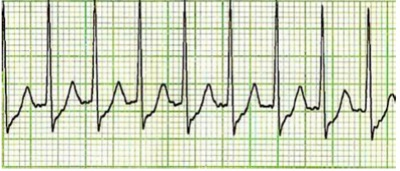
A O ritmo é de Flutter Atrial e, portanto, amiodarona deverá ser administrada imediatamente.
B Devido à instabilidade hemodinâmica, Maíra deverá ser desfibrilada imediatamente.
C Trata-se de uma fibrilação atrial aguda. Neste caso, a adenosina está indicada como conduta definitiva.
D Trata-se de uma taquicardia supraventricular com instabilidade hemodinâmica. Cardioverter eletricamente o paciente é a conduta mais indicada.
E O ritmo é sinusal, portanto, deve-se investigar causas subjacentes.
Questão 496 · Alergia à proteína do leite de vaca · 4000188568Carlos, 4 meses de idade, vai a consulta pediátrica com história de, há 14 dias, irritabilidade e diarréia (cerca de 3 episódios por dia), associada à presença de rajas de sangue em algumas evacuações. Sem vômitos ou febre. Tem ganho ponderal médio de 5g/dia. No exame físico: sem alterações importantes. Esteve em aleitamento materno exclusivo até os 30 dias de vida e, desde então, faz uso regular de fórmula láctea integral associada ao seio da mãe. Assinale a alternativa CORRETA.
A O pediatra deverá iniciar antibioticoterapia empírica, pois trata-se de uma diarréia invasiva.
B O pediatra deverá solicitar um US Doppler do abdômen, pois o diagnóstico provável é de invaginação intestinal.
C O pediatra deverá orientar dieta materna de exclusão da proteína do leite e complementar a dieta de Carlos com fórmula extensamente hidrolisada.
D O pediatra deverá orientar dieta materna de exclusão de lactose e complementar a dieta de Carlos com fórmula de soja.
E Trata-se de criança com Divertículo de Meckel, má formação comum e presente em até 2% da população. A cintilografia com tecnécio confirma o diagnóstico.
Questão 497 · Teste do olhinho · 4000188563Ao avaliar um RN na MDER, você percebe no Teste do Olhinho: reflexo cor branca à esquerda e reflexo vermelho à direita. Qual a conduta correta a ser tomada?
A Encaminhar o paciente para o oftalmologista.
B Repetir o teste com 1 semana, uma vez que o achado é normal.
C Solicitar TC de crânio e de órbita direita.
D Iniciar antibioticoterapia, pois se trata de conjuntivite gonocócica neonatal.
E Orientar higienização dos olhos com soro fisiológico, pois se trata de conjuntivite química.
Questão 498 · Apresentação Clínica · Diagnóstico · 4000188556Eduarda, 8 meses, portadora de Síndrome de Down, é levada à Emergência Pediátrica com rebaixamento agudo do nível de consciência. Os pais informam que o quadro iniciou após a irmã mais velha, de 2 anos, arremessar um brinquedo na cabeça da lactente. O cartão de vacinas de Eduarda está atrasado. No exame físico: Glasgow 9, fontanela anterior abaulada, hemorragias retinianas bilaterais. TC de crânio mostra edema cerebral importante com imagem compatível com hemorragia cerebral frontal. Assinale a alternativa CORRETA.
A Eduarda provavelmente tem alguma coagulopatia congênita. Ex: deficiência de Fator V.
B Eduarda provavelmente rompeu um aneurisma cerebral pré-existente.
C Os achados clínicos e radiológicos são incompatíveis com a história. Considerar negligência e abuso físico.
D Por ter Down, Eduarda tem deficiência de cianocobalamina e de Vitamina K e, por esse motivo, houve o sangramento.
E A causa provável do sangramento foi pico hipertensivo, fenômeno frequente em pacientes com Síndrome de Down.
Questão 499 · Classif icação e Tratamento da Crise · Tratamento da Crise Aguda · 4000188549Sobre a crise de asma na infância, assinale a alternativa INCORRETA.
A Os Beta2 Agonistas de curta duração são as drogas de escolha e devem ser administrados por via inalatória a cada 20 minutos na primeira hora.
B Não há diferença de eficácia entre os Corticóides Sistêmicos ofertados por via oral ou endovenosa.
C A princípio, a radiografia de tórax não está indicada nos casos de exacerbações de asma.
D O Sulfato de Magnésio deve ser considerado nos pacientes asmáticos que não responderam bem a terapia inalatória com Beta2 Agonistas de curta duração.
E O Brometo de Ipratrópio está indicado em pacientes com crises moderadas e graves, sempre associado aos Beta2 Agonistas de curta duração, e devem ser mantidos no período de internação.
Questão 500 · Tratamento · Antibioticoterapia · 4000188545Recém-nascido prematuro de 33 semanas de idade gestacional, apresenta às 40 horas de vida, febre, estase gástrica e taquipneia. A conduta adotada prontamente pela equipe da UTI neonatal é iniciar antibioticoterapia, visando combater os patógenos mais frequentemente encontrados nesses casos, que são:
A Staphylococcus epidermidis e Neisseria meningitidis;
B Staphylococcus aureus e Pseudomonas aeruginosa;
C Lísteria monocitogenes e Klebsiella pneumoniae;
D Streptococcus agalactie e Escherichia coli;
Questão 501 · Maturação sexual no sexo f eminino · 4000188543Adolescente de 13 anos, do sexo feminino, comparece ao atendimento de rotina. Ao exame físico, observou- se maior elevação da mama e da papila, sem separação dos contornos da aréola e da mama e presença de pelos pubianos escuros e encaracolados, concentrados na linha média. De acordo com os critérios de Tanner, o estágio puberal dessa adolescente deve ser classificado como:
A M3P3;
B M2P2;
C M5P5;
D M4P4;
Questão 502 · Agentes etiológicos · Tratamento · 4000188542Lactente de 4 meses, nascido de parto normal, iniciou há 20 dias com tosse, coriza e febre baixa. Evolui com melhora da febre, porém com piora da tosse, caracterizada por acessos súbitos de tosse seca, acompanhados por cianose perioral e vômitos. Apresenta hemograma com linfocitose e radiogra a de tórax com in ltrado para-cardíaco bilateral. De acordo com a principal suspeita etiológica, o tratamento deve ser com:
A Corticoide oral e inalações com broncodilatador.
B Oseltamivir.
C Penicilina cristalina.
D Claritromicina.
Questão 503 · Insuf iciência Adrenal · Drogas vasoativas · Tratamento do Choque Séptico · 4000188540Roberta, 5 anos, está internada na UTI do HILP devido a sepse de origem urinária. Após 3 expansões volêmicas com SF 0,9% (20 ml/kg) e titulação da adrenalina para 0,5 microgramas/kg/min, persiste com PA: 72:38 mmHg. Já em uso de antibioticoterapia adequada e com níveis normais de hemoglobina, qual deve ser a próxima conduta do pediatra?
A Iniciar hidrocortisona.
B Associar milrinone.
C Prescrever prostaglandina.
D Bolus com bicarbonato de sódio.
E Substituir adrenalina por noraepinefrina + nitroprussiato de sódio.
Questão 504 · Rubéola Congênita · 4000188539Recém-nascido, lho de mãe sem pré-natal, nasceu de parto normal com 38 semanas de gestação, pequeno para a idade gestacional. Na maternidade, detectou-se a presença de persistência do canal arterial, o teste do reflexo vermelho apresentou opacidade bilateral e as emissões otoacústicas foram ausentes bilateralmente. Esses achados são sugestivos de qual infecção congênita?
A Toxoplasmose.
B Sífilis.
C Rubéola.
D Por citomegalovírus.
Questão 505 · Def inição · Quadro Clínico · 4000188537Criança de 4 anos apresenta crises de sibilância desde os 5 meses de idade. Atualmente as crises se tornaram mais frequentes, desencadeadas por infecções respiratórias, por contato com poeira ou por atividade física, e melhoram com inalação com broncodilatador. No exame físico, a ausculta pulmonar está normal, apresentando apenas eczema em fossas poplíteas e cubital bilateralmente. A principal hipótese diagnóstica é:
A Sibilância pós-viral.
B Asma de início precoce.
C Fibrose cística.
D Alergia ao leite de vaca.
Questão 506 · Pneumonia Atípica · 4000188534Criança de 10 anos apresentou febre, coriza hialina, cefaleia e dor de garganta. Três dias após, iniciou com tosse improdutiva e rouquidão leve. Após 1 semana, estava afebril e sem coriza, mas, com piora da tosse. No pronto-socorro, fez radiogra a de tórax, em que foi observado padrão intersticial, especialmente peri-hilar e em lobos inferiores, sem condensações ou atelectasias. O mais provável agente etiológico desta infecção respiratória é:
A Adenovírus.
B Micobactéria tuberculosis.
C Micoplasma.
D Estafilococo.
Questão 507 · 6 meses · 3 meses · 4000188525Considerando o desenvolvimento neuromotor, o desaparecimento do reflexo tônico assimétrico significa que uma criança pode começar a examinar objetos na linha média e manipulá-los com ambas as mãos. Essa etapa do desenvolvimento é esperada que aconteça a partir da faixa etária de
A 15-30 dias de vida.
B 2-6 meses de vida.
C 9-12 meses de vida.
D 15-18 meses de vida.
Questão 508 · Aspectos Clínicos Quadro clínico e Diagnóstico · Tratamento · 4000188523Menino, 2 anos é levado a um atendimento com quadro de febre diária há oito dias e irritabilidade. O pai refere aparecimento de alterações em boca, mãos e pés ao longo desse período. Ao exame físico, a criança está em regular estado geral, irritada, hipocorada, hidratada, apresenta hiperemia conjuntiva bilateral, língua em framboesa, edema de mãos e pés e linfonodo cervical palpável à direita (2cm). Ausculta cardíaca e respiratória normais. Abdômen indolor, fígado palpável a 3cm do rebordo costal direito. Os exames complementares mostram: 20.000 leucócitos (80% neutró los), Hgb = 10g/dL, VCM = 74, plaquetas = 600.000/mm³, VHS = 60mm, albumina = 2g/dL. A conduta terapêutica adequada e uma possível complicação tardia, respectivamente, são:
A Aciclovir / encefalite;
B Amoxicilina / síndrome nefrítica;
C Albumina venosa / insuficiência valvar;
D Imunoglobulina venosa/ aneurisma de artéria coronária;
Questão 509 · Método de coleta · 4000188519Lactente, 9 meses é levada à emergência. Sua mãe refere quadro de febre de 39ºC há 48 horas. Refere ainda que sua lha não apresenta nenhuma comorbidade de base, não fazendo uso de nenhuma medicação, além de conseguir ingerir líquidos sem restrições. A caderneta de vacinação está completa para a idade. Ao exame, apresenta-se em regular estado geral, fontaneia anterior normotensa, anictérica, acianótica, hidratada, corada, com boa perfusão periférica. Exame físico sem alterações: FC = 120bpm; FR = 40irpm; temperatura axilar = 39,1ºC. Frente a esse quadro, a melhor conduta consiste em realizar:
A EAS; se o resultado estiver alterado, internar a paciente, colher urinocultura e iniciar antibiótico parenteral;
B EAS; se o resultado estiver alterado, colher urinocultura e iniciar antibiótico oral em regime ambulatorial;
C EAS e hemograma; se os resultados estiverem alterados, internar a paciente, colher urinocultura, hemocultura e iniciar antibiótico parenteral;
D EAS e hemograma; se os resultados estiverem alterados, colher urinocultura e hemocultura, além de iniciar antibiótico oral em regime ambulatorial;
Questão 510 · Agentes etiológicos · Tratamento Geral · Pneumonia típica · 4000188493Lactente de 40 dias, nascido de parto normal, apresenta há 2 dias quadro de febre alta, tosse produtiva, dispneia, recusa alimentar. Ao exame físico: BEG, corado, hidratado, FC-126bpm, FR-66irpm, Sat02-94%, leve tiragem subcostal e de fúrcula esternal, estertores crepitantes em base esquerda. A conduta indicada é:
A internar / macrolídeo.
B tratar ambulatorialmente / amoxicilina.
C tratar ambulatorialmente / macrolídeo.
D internar / ampicilina + gentamicina.
Questão 511 · Passos iniciais · 4000188491Um dos critérios de avaliação de um recém-nascido na sala de parto, para decisão quanto à estabilização/reanimação neonatal, é:
A Apgar.
B oximetria de pulso.
C frequência cardíaca.
D frequência respiratória.
Questão 512 · Programa Nacional de Imunizações · 4000188490Lactente, 8 meses e 15 dias, que não tomou nenhuma vacina até hoje, deve receber as seguintes vacinas:
A BCG, penta, VIP, rotavírus, pneumo 10, meningo C, febre amarela.
B BCG, penta, VIP, rotavírus, pneumo 10, meningo C, influenza.
C BCG, penta, rotavírus, pneumo 10, meningo C, febre amarela.
D BCG, penta, VIP, pneumo 10, meningo C, influenza.
Questão 513 · Vegetarianismo e veganismo na inf ância · 4000188488Com relação a dieta vegetariana em crianças e adolescentes, é correto afirmar:
A uma dieta vegetariana, mesmo bem balanceada, não promove crescimento e desenvolvimento adequados.
B deve-se acionar o conselho tutelar, pois os pais que permitem esse tipo de alimentação estão colocando a vida da criança ou adolescente em risco.
C mesmo nos indivíduos lacto-ovovegetarianos, a vitamina B12 obrigatoriamente deve ser suplementada.
D na maioria dos casos só a orientação nutricional não é suficiente, devendo suplementar os nutrientes em risco de deficiência como: cálcio, ferro, zinco, vitaminas D, B1, B2, B6 e B12.
Questão 514 · Tratamento · Diagnóstico · 4000188487Pré-escolar, 4 anos, estava brincando com uma bateria de relógio, quando subitamente a engoliu. Imediatamente sua mãe levou ao pronto socorro para avaliação. O paciente encontrava-se agitado, com sialorreia e dor retroesternal, sem alterações no exame físico. A conduta neste caso é:
A remoção imediata por via endoscópica.
B acompanhar a criança com radiografias seriadas.
C orientar a mãe a observar e peneirar as fezes até a eliminação do corpo estranho.
D liberar a criança e orientar retornar se tiver algum sinal de alarme.
Questão 515 · Ginecomastia puberal · 4000188483Escolar, masculino, 10 anos, vem a consulta com queixa de ginecomastia. Deve-se suspeitar de ginecomastia patológica quando:
A for unilateral.
B for retroareolar.
C dolorosa ao toque.
D for associada a sangramento ou secreção mamilar.
Questão 516 · Hipertensão arterial HAS em crianças e adolescentes · 4000188480Uma das causas mais frequentes de hipertensão arterial em lactentes é:
A doenças do parênquima renal.
B hipertensão primária.
C reninoma.
D diabetes mellitus tipo 2.
Questão 517 · Introdução · 4000188478Lactente, 1 ano, iniciou há 2 dias com febre, tosse, coriza, hiporexia, hoje evoluiu com desconforto respiratório. Ao exame físico: REG, corado, desidratado 1+/4+, FC=112bpm, FR=45irpm, SatO₂=90%, Tax=37,1ºC. AR: MV+ simétrico, sem RA, presença de tiragem subcostal. Oroscopia: sem alterações. Otoscopia: sem alterações. Qual a sua conduta para o caso acima?
A internação / oxigenioterapia + oseltamivir
B Internação / oxigenioterapia + penicilina cristalina
C Internação / salbutamol + corticoide IV
D Tratamento ambulatorial / oseltamivir
Questão 518 · Meningites bacterianas · Meningite neonatal · 4000188475Lactente, feminina, 8 meses, previamente hígida, é levada à emergência com história de febre há 36 horas, piora progressiva do estado geral, irritabilidade extrema e um episódio de crise convulsiva com duração de quinze minutos. O episódio ocorreu em casa, na região rural, há cerca de 2 horas. Responsável nega episódios anteriores. Exame físico: sonolenta, porém facilmente despertável, mais irritada que o usual, má perfusão periférica, taquicárdica, sem sinais meníngeos, sem rigidez de nuca. Hiperemia de orofaringe, demais aspectos do exame físico sem alterações. Dentre as alternativas abaixo, o exame que mais auxiliará no diagnóstico é:
A nenhum exame é necessário, basta observar a criança na sala de emergência por uma hora.
B dosagem de eletrólitos.
C punção lombar.
D hemograma completo e proteína C reativa.
Questão 519 · Passos iniciais · Intubação orotraqueal · 4000188473As indicações de ventilação através de cânula traqueal em sala de parto são, EXCETO:
A Cianose.
B VPP com máscara prolongada, ou seja, se o RN não retoma a respiração espontânea.
C Aplicação de massagem cardíaca.
D VPP com máscara não efetiva.
Questão 520 · Meningite neonatal · 4000188469Considere os resultados abaixo, de uma criança de 7 anos, com história clínica compatível com meningite e uma punção lombar realizada para auxiliar no diagnóstico etiológico. Assinale a alternativa que melhor correlaciona o resultado da análise do líquor com o diagnóstico e conduta.
A Leucócitos: 620 células/mm³, predomínio de linfomonócitos; proteína: 32mg/dL; glicose: 68mg/dL (glicemia: 90mg/dL). Meningite viral, tratamento: iniciar antibiótico (ceftriaxone) imediatamente.
B Leucócitos: 470 células/mm³, predomínio de neutrófilos; proteína: 32mg/dL; glicose: 68mg/dL (glicemia: 90mg/dL). Meningite bacteriana, tratamento: iniciar antibiótico (ceftriaxone) imediatamente.
C Leucócitos: 9000 células/mm³, predomínio de neutrófilos; proteína: 157 mg/dL; glicose: 35mg/dL (glicemia: 90mg/dL). Meningite bacteriana, tratamento: iniciar antibiótico (ceftriaxone) imediatamente.
D Leucócitos: 3 células/mm³, predomínio de linfomonócitos; proteína: 250 mg/dL; glicose: 72mg/dL (glicemia: 90mg/dL). Meningite viral, tratamento: iniciar antiviral (aciclovir) imediatamente.
Questão 521 · Exantema Súbito · 4000188466Lactente, 10 meses, subitamente apresenta febre alta e contínua. Não se observa toxemia apesar da magnitude da febre. Após 3 dias, a febre cessou bruscamente, surgindo lesões maculopapulares rosadas que se iniciaram no tronco e se disseminaram para a cabeça e as extremidades. Após 2 dias, a erupção desapareceu sem deixar descamação ou hiperpigmentação. O quadro acima descrito é compatível com qual doença?
A Sarampo.
B Eritema infeccioso.
C Mão-pé-boca.
D Exantema súbito.
Questão 522 · Diagnóstico · 4000188465As alternativas abaixo apresentam hemogramas de crianças de 3 anos de idade, com diversos diagnósticos. Qual delas tem anemia ferropriva?
A Hemoglobina 16g/dL, VCM 74g/L, Ferritina 15ng/mL.
B Hemoglobina 8,5g/dL, VCM 107g/L, Ferritina 18ng/mL.
C Hemoglobina 10,3g/dL, VCM 60g/L, Ferritina 638ng/mL.
D Hemoglobina 9,4g/dL, VCM 55g/L, Ferritina 6ng/mL.
Questão 523 · Icterícia relacionada ao aleitamento materno e baixa ingesta · 4000188464Recém-nascido, 3 dias de vida, nascido de 38 semanas de idade gestacional, com peso de nascimento 3420g, Apgar 8/10, mãe apresenta pouca oferta láctea, com consequente perda de peso maior que 10% em relação ao peso de nascimento, acompanhada de desidratação. Tipagem sanguínea materna A positivo e do RN A negativo. Realizado coleta de bilirrubinas, com bilirrubina total de 18mg/dL, as custas de bilirrubina indireta (16,8mg/dL). A provável causa da hiperbilirrubinemia é:
A Do aleitamento materno.
B Do leite materno.
C Incompatibilidade RH.
D Deficiência de G6PD.
Questão 524 · Choque Distributivo · 4000188462Sobre o tratamento da sepse e choque séptico em pediatria, é correto afirmar:
A nos casos de choque séptico, os antibióticos devem ser iniciados dentro de 12 horas após o reconhecimento do quadro.
B devem ser utilizados coloides (albumina) ao invés de cristaloides para ressuscitação inicial de crianças com choque séptico ou disfunção orgânica relacionada à sepse.
C usar epinefrina em vez de dopamina em choque com baixo débito cardíaco.
D usar epinefrina em vez de dopamina em choque hipotensivo.
Questão 525 · Prevenção primária · 4000188386São consideradas ações de Prevenção primária, exceto:
A Orientação e incentivo à prática de atividade física.
B Exame citopatológico de colo de útero.
C Palestras em escolas sobre ISTs.
D Programa de imunização.
Questão 526 · Quadro clínico · Origem · 4000188343Um lactente com 18 meses está apresentando evacuações amolecidas, em torno de cinco a sete vezes ao dia, com odor fétido, eliminação excessiva de atos, distensão abdominal e lesões perianais eritematosas. Há duas semanas apresentou, por cinco dias, diarreia líquida com episódios de vômitos e febre. Assinale a opção correta sobre a causa mais provável para o quadro atual.
A alteração funcional
B processo imune
C má absorção de nutrientes
D alteração da motilidade
E processo inflamatório
Questão 527 · Avaliando o desenvolvimento · 4000188341No exame físico de um lactente atualmente com quatro meses, foi observado não conseguir manter a cabeça elevada a 45 graus por mais de poucos segundos além de não conseguir alinhar a cabeça ao tronco quando puxado pelos braços. Nasceu pré-termo com 32 semanas de parto cesariana sem outras complicações. Assinale a opção correta sobre o desenvolvimento deste lactente.
A apesar de seu nascimento ter sido prematuro, não apresenta atraso do desenvolvimento.
B no primeiro ano de vida espera-se algum atraso, que não deve ocorrer além deste período.
C o desenvolvimento motor não sofre influência da prematuridade; o parâmetro é o cognitivo.
D o lactente tem atraso, devendo ser submetido a exames para detectar lesões neurológicas.
E lactente prematuros devem ser avaliados de acordo com a idade gestacional até os 2 anos.
Questão 528 · Escarlatina · 4000188340Um escolar com quatro anos apresenta a cinco dias febre alta, tosse intensa coriza abundante, cefaleia e prostração. Foi levado ao centro de saúde porque há dois dias iniciou manchas no corpo e intensa hiperemia dos olhos. O exame físico mostrou prostração, tosse seca e irritativa, exantema maculopapular, pequenas manchas brancoazuladas em mucosa oral na região oposta aos molares. Este lactente possui um irmão imunossuprimido por doença crônica. Assinale a opção correta sobre a prevenção pósexposição para este irmão.
A utilizar antiviral
B uso de imunoglobulina
C aplicação de vacina
D aplicar vacina e imunoglobulina
E não há indicação de profilaxia
Questão 529 · Situações de risco na adolescência · 4000188337Assinale a opção correta sobre os elementos mais significativos da adolescência média (14 a 16 anos).
A influência do início das mudanças puberais.
B pouco interesse por grupos e amigos.
C compreensão de fronteiras e limites.
D experimentação e comportamento de risco.
E fortalecimento das relações parentais.
Questão 530 · Consultas em Pediatria · 4000188334Um recém-nascido apresentou numerosas lesões vasculares, papulares ou pustulosas, amarelo- esbranquiçadas, com halo eritematoso, de pequeno tamanho, em toda superfície corporal, poupando palmas e plantas, que surgiram até 48 horas após o nascimento. O pediatra orientou observação e elas desapareceram em 12 dias. Considerando a etiologia da principal hipótese diagnóstica, assinale a opção correta.
A trata-se de uma doença causada por vírus.
B pode estar associada à fatores ambientais.
C em geral se associa a infecção por bactéria.
D ocorre por contaminação durante o parto.
E está associada a manifestações autoimunes.
Questão 531 · Fatores Endócrinos · Fisiologia neural e Endócrina · 4000188331Uma criança com diagnóstico de obesidade apresentou nível de TSH acima do valor de referência para o método e T4 livre com níveis normais. Nestes casos, é correto afirmar que:
A é mandatória a reposição com levotiroxina.
B tem forte ligação com doença autoimune.
C a perda de peso pode levar a níveis normais.
D reflete tendência a perpetuação da doença.
E pode ser indicativo de necessidade cirúrgica.
Questão 532 · Consultas em Pediatria · 4000188330Um lactente masculino com oito semanas de vida apresenta hemoglobina de 10 g/dL. Considerando que nasceu de parto normal, 40 semanas de gestação, pesando 3.010 g e sem intercorrências no pré-natal e após o parto, assinale a opção correta.
A este ajuste no nível de hemoglobina é esperado mais tardiamente, próximo dos seis meses.
B o valor da hemoglobina está muito abaixo do esperado em crianças com esta história clínica.
C como a criança nasce com o ferro baixo, este resultado está fora do previsto para a idade.
D muito provavelmente deve existir uma anemia normocítica e normocrômica neste lactente.
E o lactente apresenta dosagem alta de hemoglobina para a idade, necessitando investigação.
Questão 533 · Abordagem da Crise Febril · 4000188328Uma criança com dois anos e quatro meses é trazida à emergência por ter presentado crise convulsiva generalizada tônico-clônica, por cerca de 5 minutos, terminando espontaneamente há 10 minutos. Três dias antes passou a apresentar tosse muito discreta e coriza cristalina, tendo iniciado febre baixa (38,5°C) que se mantém, há menos de 12 horas. Mesmo com febre se mantinha em bom estado geral, se alimentado bem. Nunca apresentou quadro semelhante, não usou medicação e um primo mais velho tem epilepsia. Não há alteração no exame físico. Assinale a opção correta.
A de uma forma geral este tipo de crise é de curta duração e generalizadas.
B este acometimento é considerado como fator de risco alto para epilepsia.
C como se tratou de crise complexa, deve ser usado medicação profilática.
D esta criança apresenta risco moderado para anormalidades neurológicas.
E deve internar e realizar eletroencefalograma para esclarecer o tipo de crise.
Questão 534 · Idade de introdução e f requência · 4000188327Assinale a opção correta sobre a alimentação complementar do lactente no sexto mês de vida.
A a água de coco apesar de mais osmolar pode estimular o consumo líquidos.
B no caso de alimentos congelados, o uso de micro-ondas deve ser vetado.
C deve ser evitado o uso de sucos de frutas por serem bastante calóricos.
D não é necessário ofertar água no caso da complementação de leite materno.
E inicialmente as frutas devem ser oferecidas trituradas facilitando a deglutição.
Questão 535 · Higiene oral · Consultas em Pediatria · 4000188324Uma escolar de 7 anos apresenta aderência dos pequenos lábios. Não há relato de sintomas, tendo sido um achado isolado do exame físico. A conduta neste caso é:
A uso local de creme de estrogênio.
B separação cirúrgica ou mecânica.
C aplicação local de um emoliente.
D pomada de betametasona local.
E orientação quanto à higiene local.
Questão 536 · Vacina contra HPV · 4000188321Segundo o Calendário Nacional de Vacinação de 2022 a vacina contra o papilomavírus humano em meninos deve ser feita em duas doses entre as idades de:
A 9 e 14 anos, sendo a segunda dose 6 meses após a primeira.
B 11 e 14 anos, sendo a segunda dose 12 meses após a primeira.
C 12 e 14 anos, sendo a segunda dose 15 meses após a primeira.
D 9 e 12 anos, sendo a segunda dose 2 meses após a primeira.
E 10 e 16 anos, sendo a segunda dose 3 meses após a primeira.
Questão 537 · Urticária Espontânea · 4000188317Assinale a opção correta sobre a principal causa de urticária aguda em crianças.
A anti-inflamatórios não hormonais
B alimentos
C antígenos inaláveis
D frio
E vírus
Questão 538 · Aspectos Clínicos Quadro clínico · Agentes etiológicos · 4000188316Um lactante com 7 meses de idade, apresentou há 3 dias secreção nasal clara, espirros obstrução nasal e febre baixa. Hoje passou a apresentar tosse e taquipneia que evoluiu para dispneia em poucas horas com gemência. O exame físico mostra ainda sibilos, estertores e aumento do tempo expiratório. Baseado na principal hipótese diagnóstica assinale a opção que descreve seus principais agentes etiológicos.
A rinovírus e metapneumovírus humano.
B vírus sincicial respiratório e adenovírus.
C adenovírus e vírus parainfluenza.
D vírus sincicial respiratório e rinovírus.
E metapneumovírus humano e coronavírus.
Questão 539 · Puericultura Geral · 4000188314A sigla 'AVPU' em medicina refere-se a uma escala para avaliar o estado de consciência de um paciente, O que significa a sigla AVPU em pediatria:
A Todas as respostas abaixo
B A – a criança está acordada, alerta e interativa com os pais e os prestadores de cuidados
C B – a criança responde somente se o prestador de cuidados ou os pais chamam o nome dela ou falam em voz alta
D P – a criança responde apenas a estímulos dolorosos, tais como a compressão do leito ungueal de um dedo do pé ou da mão
E U – a criança não responde a todos os estímulos
Questão 540 · Aspectos Clínicos Quadro clínico · Tratamento · Diagnóstico · 4000188313Todas as características abaixo são de bronquiolite até 3 anos de idade, exceto:
A Taquipneia
B Sibilos
C Queda de saturação
D Dor em seio maxilar
E Coriza
Questão 541 · Síndrome de Edwards · 4000188312Qual é a alteração genética na síndrome Edward?
A Trissomia do 21
B Trissomia do 13
C Trissomia do 18
D Trissomia 15
E Nenhuma das respostas acima
Questão 542 · Programa Nacional de Imunizações · 4000188309Até os 6 meses de idade, são fortemente sugeridas as seguintes vacinas, pela Sociedade Brasileira de Pediatria, exceto:
A BCG
B Poliomielite
C Hepatite B
D Rotavirus
E Hepatite A
Questão 543 · Herpangina Doença MãoPéBoca · 4000188302Qual o agente causador da síndrome “mão pé boca”?
A Coxsackievírus
B Citomegalovírus
C RotavÍrus
D Papiloma vírus
E Nenhuma das respostas acima
Questão 544 · Tetralogia de Fallot · 4000188297Quais são os componentes da tetralogia de Fallot, exceto
A Comunicação Intraventricular
B Coarctação da aorta
C Estenose de artéria pulmonar
D Hipertrofia do ventrículo direito
E Comunicação intra atrial
Questão 545 · Prevenção primária · 4000188294Os fatores de risco podem ser classificados de várias maneiras, como listados abaixo, marque a opção que há a correlação correta.
A Ambientes – exposição solar, exposição ao monóxido carbono
B Sociais: escolaridade, renda familiar, ocupação
C Comportamentais: dieta, atividade física, tabagismo
D Individuais: gênero, idade, genética
E Todas as respostas acima
Questão 546 · Prevenção de sepse neonatal · sepse neonatal precoce · 4000188269Em qual das situações abaixo NÃO está indicada a pro laxia intraparto para sepse neonatal por Streptococcus agalactiae:
A História de sepse neonatal por S. agalactiae na gestação anterior.
B Febre intraparto e resultado do swab genital e anorretal desconhecido.
C Urinocultura positiva para S. agalactíase na gestação anterior.
D Tempo de amniorrexe > 18h em gestante a termo sem pré-natal.
E Trabalho de parto com 33 semanas em gestante sem swab genital e anorretal.
Questão 547 · Puberdade Precoce · 4000188268Na puberdade precoce com hipotireoidismo há: I - Aceleração do crescimento II - Hirsutismo III - Displasia poliostótica IV- Atraso da idade óssea Está correto apenas o contido em:
A I, II e III
B I e III
C II e IV
D II e III
E IV
Questão 548 · Vacina contra HPV · 4000188265As vacinas para papilomavírus humano (HPV) são compostas de:
A Porção do vírus inativado em meio de cultura específico.
B Partículas que simulam o capsídeo proteico externo do vírus.
C Vírus inativado através da ação de agentes químicos ou calor.
D Vírus vivo atenuado por passagens sucessivas em meio de cultura.
E Moléculas de RNA mensageiro transfectada em células humanas.
Questão 549 · Diagnóstico · 4000188237A sí lis congênita (SC) resulta da transmissão da espiroqueta do Treponema pallidum da corrente sanguínea da gestante infectada para o concepto por via transplacentária ou, ocasionalmente, por contato direto com a lesão no momento do parto. A maioria dos casos ocorre porque a mãe não foi testada para sí lis durante o pré-natal ou por não ter recebido tratamento adequado para sí lis antes ou durante a gestação. A transmissão vertical é passível de ocorrer em qualquer fase gestacional ou estágio da doença materna, podendo resultar em aborto, natimorto, prematuridade ou amplo espectro de manifestações clínicas no recém-nascido. A sí lis em gestantes e a SC são agravos de noti cação compulsória. A despeito de ser uma infecção conhecida há séculos e de haver tratamento e caz disponível gratuitamente no SUS, observou-se uma tendência de aumento no número de casos nos últimos anos. Assinale a alternativa correta sobre sí lis congênita:
A Mais da metade dos casos são clinicamente aparentes ao nascimento.
B A melhor estratégia para prevenção primária consiste no diagnóstico e tratamento precoces, ao nascimento.
C A despeito do tratamento adequado à gestante infectada, o risco de desfechos desfavoráveis é considerável.
D No teste não treponêmico, um título na criança maior que o materno em pelo menos duas diluições é indicativo da infecção.
E Desde 1990, a sífilis congênita deixou de ser um agravo de notificação compulsória.
Questão 550 · Diagnóstico · 4000188235Todos os recém-nascidos de mãe com diagnóstico de sí lis durante a gestação, independentemente do histórico de tratamento materno, deverão realizar teste em sangue periférico para rastreamento de sí lis congênita. O sangue de cordão umbilical não deve ser utilizado, pois esse tipo de amostra contém uma mistura do sangue da criança com o materno e pode resultar em testes falso-reagentes. Além disso, o pro ssional de saúde deve estar ciente de que 70% dos recém-nascidos com sí lis congênita não apresentam resultados indicativos da infecção no teste sorológico. Por esta razão, é fundamental realizar o seguimento de todas as crianças expostas à sí lis. Considerando o cenário exposto, assinale a assertiva INCORRETA sobre teste diagnóstico da sífilis congênita:
A A utilização de sangue do cordão umbilical reduz o valor preditivo positivo do teste.
B A utilização de sangue do cordão umbilical diminui a razão de verossimilhança positiva.
C O teste sorológico em recém-nascidos apresenta elevada sensibilidade.
D O teste sorológico em recém-nascidos apresenta baixo valor preditivo negativo.
E A utilização de sangue do cordão umbilical aumenta a acurácia do teste.
Revisar: possível letra faltando em enunciado
Questão 551 · Doenças inf ecciosas na gestação HIV síf ilis hepatites herpes · Síf ilis congênita · 4000188234No Brasil, recentemente, ao longo de anos, foi observado um aumento constante no número de casos de sí lis em gestantes, sí lis congênita e sí lis adquirida. São hipóteses possíveis para este incremento, EXCETO:
A Aumento na letalidade, devido à redução de tratamento adequado.
B Aumento nos números de testagem, isto é, aumento na detecção de casos.
C Aumento na incidência devido à redução do uso de preservativos.
D Aumento na prevalência, devido ao desabastecimento de penicilina.
E Aumento de casos de transmissão vertical, por tratamento inadequado da gestante.
Questão 552 · Prevenção Terciária · Prevenção primária · Prevenção Secundária · 4000188225Cabe ao SUS as atividades de promoção, proteção e recuperação da saúde. Sabe-se que a promoção de saúde pode ser classificada em primária, secundária e terciária. Assinale a alternativa que contém a categoria corresponde aos exemplos citados:
A Prevenção primária: Programas para cessação do tabagismo a fim de prevenir inúmeras doenças crônicas não transmissíveis.
B Prevenção secundária: Administração de ácido fólico durante a gestação para prevenção de defeitos do tubo neural.
C Prevenção terciária: Realização periódica de exame Papanicolau para prevenção do câncer de colo uterino.
D Prevenção primária: Educação para exame rotineiro dos pés em pacientes com neuropatia diabética.
E Prevenção secundária: uso de máscaras para prevenção de COVID-19.
Questão 553 · Hipotireoidismo Congênito · 4000188171Paciente de 7 anos de idade com menarca há 2 meses. Ao exame físico, observa-se estadiamento de Tanner M3 e P3, galactorréia, ausência de sinais de virilização. Radiogra a de punho: idade óssea atrasada, ressonância magnética de crânio normal, FSH e LH em níveis puberais e TSH elevado. O diagnóstico mais provável é:
A Puberdade precoce constitucional
B Tumor ovariano produtor de androgênios
C Síndrome de Mc Cune-Albright
D Hipotireoidismo
E Síndrome de Angelman
Questão 554 · Vacina contra HPV · 4000188157Sobre a vacina contra o HPV, é CORRETO afirmar que:
A É vacina de vírus vivo e atenuado, e por isso é contra-indicada na gestação.
B É indicada para meninos e meninas entre 11 e 14 anos.
C O esquema vacinal recomendado é de 2 doses para indivíduos imunocompetentes abaixo de 14 anos e 3 doses para imunossuprimidos.
D Não deve ser administrada a indivíduos com história prévia de doença HPV induzida.
E É contraindicada para pacientes acima de 26 anos.
Questão 555 · Absolutas · 4000188156Qual dos seguintes, é uma contraindicação para administração da vacina antitetânica?
A História de reação neurológica ou hipersensibilidade severa ao produto
B Efeitos colaterais local
C Espasmos musculares
D Gravidez
Questão 556 · Introdução · Quadro Clínico · Diagnóstico · 4000188153Intubação brônquica seletiva dos brônquios fonte direito ou esquerdo pode ocorrer facilmente durante a intubação em crianças porquê:
A A traqueia é relativamente curta
B A distância dos lábios até a laringe é relativamente curta
C O uso de tubos endotraqueais com cuff elimina esse problema
D Os brônquios fontes são menos angulados em relação à traqueia
Questão 557 · Tratamento Medicamentoso · 4000188143Paciente, com 3 anos de idade, foi internada devido a pneumonia lobar e derrame pleural. Você prescreve penicilina cristalina 200.000ui/kg/dia e drenagem torácica. A criança apresenta melhora, no 5 dias continua com dreno, mas tem febre diária de 38.5. Você decide pedir hemocultura que mostra Streptococsus pneumoniae. Você decide então:
A Trocar o antibiótico para Ceftriaxona
B Associar Claritromicina
C Manter a penicilina
D Trocar por Amoxiclina-Clavulanato
Questão 558 · Tratamento · Vigilância Epidemiológica · 4000188141Mãe comparece a UBS preocupada porque sua lha de 5 meses, há 02 dias teve contato com uma criança que positivou para sarampo. A criança está com as vacinas em dia, assintomática...dessa forma você orienta:
A Aplicar imunoglobulina apenas se tiver sintomas
B Aplicar Vacina de sarampo imediatamente
C Manter observação e isolamento
D Aplicar imunoglobulina o mais precoce possível, até 6 dias pós contato.
Questão 559 · Método de coleta · Tratamento · Quadro clínico · 4000188137Paciente do sexo feminino, 4 anos, é admitida na emergência do HPM com história de disúria, incontinência urinária e febre alta há 24h. Solicitado EAS pela plantonista que foi colhido por jato médio, com o seguinte resultado: Nitrito +, Leucócitos +++, incontáveis piócitos. Qual seria a conduta mais adequada de acordo com a Sociedade Brasileira de Pediatria?
A Internação hospitalar e uso de Ceftriaxone. Solicitar Cultura de Urina.
B Internação hospitalar e uso de Gentamicina. Solicitar Cultura de Urina.
C Internação hospitalar e uso de Amoxicilina+Clavulanato. Solicitar Cultura de Urina.
D Tratamento ambulatorial e uso Cefaclor. Solicitar Cultura de Urina.
E Tratamento ambulatorial e uso de Amoxicilina + Clavulanato. Não há necessidade de solicitar cultura de urina.
Questão 560 · Quadro Clínico · Tratamento · 4000188136Quanto ao tratamento agudo da ana laxia em crianças; podemos dizer que são fundamentais ao tratamento, EXCETO:
A Administração de adrenalina IM.
B Administração de glicocorticóides.
C Decúbito dorsal com membros inferiores elevados.
D Suplementação de O₂, caso SatO₂ < ou = 95%.
E Administração de 5-10ml/kg de solução salina ou Ringer Lactato nos primeiros 5 minutos e 30ml/kg na primeira hora.
Questão 561 · Adrenalina · 4000188135Criança de 01 ano da entrada na UPA em PCR, monitor mostra assistolia, iniciada massagem e ventilação, você é o(a) plantonista e segue com:
A Realizar cardioversão elétrica
B Administrar adrenalina 0,01 mg/kg
C Administrar atropina 0,02 mg/k
D Aguarda enzimas cardíacas
Questão 562 · Hipoglicemia · 4000188133RN, mãe diabética, nascido a termo, em parto cesariano por macrossomia. Após 12 horas inicia com tremores, irritabilidade, convulsão clônica focal e reflexo de moro exacerbado. Sua principal hipótese é:
A Hipocalcemia
B Hipoglicemia
C Hipotonia
D Ictericia neonatal grave
Questão 563 · Diagnóstico · Sinais e sintomas · 4000188132RN, nascido de parto normal com 38 semanas, mãe não realizou pré-natal. Pequeno para Idade Gestacional, nos exames iniciais foi detectado persistência do canal arterial, teste do olhinho mostrou opacidade bilateral e as emissões otoacústicas foram ausentes bilateralmente. Assim você levanta como principal hipótese:
A Sífilis
B Rubéola
C Toxoplasmose
D Citomegalovírus
Questão 564 · Classif icação da desidratação · Plano B · 4000188131Lactente de 18 meses é admitido no pronto atendimento pediátrico do HPM com história de febre e diarréia iniciados há 24h, com piora progressiva. A mãe relata que foram inúmeros episódios diarreicos, sem sangue, além de diurese diminuída. O paciente não tem comorbidades. Ao exame físico, paciente irritado, chorando, sem lágrimas, enchimento capilar de 4 segundos, mucosas secas. Peso habitual do paciente: 12kg e peso à admissão: 11,2kg. Como você classificaria a desidratação desse paciente e qual plano de reidratação adotaria?
A Desidratação moderada. Terapia de reidratação oral no serviço de saúde.
B Desidratação leve. Tratamento domiciliar com soro oral.
C Desidratação grave. Terapia de reidratação parenteral.
D Desidratação moderada.Terapia de reidratação parenteral, iniciar antibioticoterapia imediatamente.
E Desidratação grave. Terapia de reidratação oral, iniciar antibioticoterapia imediatamente.
Questão 565 · Aspectos Clínicos Quadro clínico · 4000188128Paciente do sexo masculino, 6 anos, começou há queixar-se há 2 dias de odinofagia, febre alta chegando a 40°C e hoje chegou ao pronto atendimento com relato de exantema. Ao exame físico, tonsilas hipertro adas, exsudato em tonsilas, petéquias em palato e sinal de Filatov presente. O paciente não tem alergia medicamentosa. Qual seria a melhor opção de tratamento?
A Amoxicilina
B Amoxicilina + Clavulanato
C Cefalexina
D Azitromicina
E Sintomáticos
Questão 566 · Prevenção · Quadro Clinico · 4000188127Nos últimos anos a obesidade infantil vem ganhando maior espaço e um dos motivos é a alteração dos hábitos de vida dos brasileiros. Assim, durante o programa de saúde na escola, você explica algumas maneiras de evitar o desenvolvimento da obesidade infantil. Das alternativas abaixo a que NÃO teria impacto na prevenção da obesidade infantil seria:
A Uso de hipoglicemiantes orais
B Prática regular de atividade física
C Evitar ingestão de alimentos com alto índice calórico
D Refeições diversificadas e em porções menores.
Questão 567 · Tratamento · 4000188126Uma menina de 3 anos de idade comparece a UBS trazendo um exame de urina que mostrou infecção urinária. Além do exame, durante a anamnese a mãe informa os sintomas clássicos da infecção. Você então escolhe como antibioticoterapia inicial:
A Ceftriaxona
B Benzetacil
C Levofloxacina
D Cefalexina
Questão 568 · Classif icação e Tratamento da Crise · 4000188125Paciente do sexo masculino, 2 anos, 12Kg, é levado por seus pais a emergência do HPM com história de tosse seca há 1 dia, com piora progressiva e há poucas horas evoluiu com taquipnéia, queixando-se de dispneia. Ao exame físico, sibilância difusa, frequência respiratória de 43 IRPM, tiragem subcostal, saturação de O² de 91% AA. De acordo com as Diretrizes da ASBAI e SBP para sibilância e asma no pré-escolar, qual a conduta mais acertada para melhora clínica e redução de hospitalização?
A Iniciar salbutamol imediatamente, 4 puffs, repetindo com intervalos de 20 minutos na primeira hora.
B Iniciar fenoterol, 4 gotas, repetindo com intervalos de 20 minutos na primeira hora.
C Iniciar imediatamente prednisolona 1mg/kg.
D Iniciar Azitromicina ainda na emergência.
E Iniciar corticóide inalatório ainda na emergência.
Questão 569 · Diagnóstico · 4000188124Mãe traz lha de 3 anos para avaliação devido a episódios de tosse seca persistente. Durante a anamnese a mãe fala que a lha está tossindo muito, que já deu “lambedor” e xaropes, mas sem melhora. Você levanta hipótese de coqueluche e assim, para confirmação pede:
A Hemograma completo e PCR
B Hemograma apenas
C Sorologia para Bartonella henselae
D Sorologia para Bordetella pertussis
Questão 570 · Síf ilis congênita · 4000188122RN nascido de mãe de 17 anos, sem pré-natal nascido com 37 semanas de idade gestacional, apresenta peso de nascimento de 2.580g, fígado palpável a 3 cm do rebordo costal direito, baço não palpável, descamação em pele, principalmente em palma das mãos e planta dos pés, e reage com choro à movimentação da articulação do joelho direito. O hemograma mostra quadro de anemia e plaquetopenia. O diagnóstico mais provável para o caso é:
A Citomegalovirose congênita
B Toxoplasmose congênita
C Sepse primária
D Sífilis congênita
E Osteomielite articular
Questão 571 · 6 meses · 4000188117Mãe comparece a unidade com lactente de 6 meses, pois sua lha ainda não ca com as pernas durinhas. Ao exame, tem crescimento adequado, sorri, segue com o olhar 180 graus, pega objetos, senta-se com apoio em mãos, sustenta a cabeça e rola. Sem antecedentes de risco no pré e pós natal. Você explica então:
A Existem sinais de alerta com hipotonia dos membros
B Existem sinais de atraso no desenvolvimento e paralisia cerebral
C Existem sinais de atraso no desenvolvimento que sugerem transtorno do espectro autista
D Existem sinais compatíveis com a idade do bebê, a mãe pode ficar tranquila.
Revisar: possível letra faltando em enunciado
Questão 572 · Taquipneia Transitória do Recémnato TTRN · 4000188116RN nascido de parto cesáreo por iteratividade, com 37 semanas de idade gestacional, mãe com pré-natal sem intercorrências, apresenta choro forte ao nascimento, com bom tônus e atividade, é apresentado à mãe que o segura por alguns minutos. Em seguida é pesado e medido, recebe pro laxia oftálmica e vacinas BCG e Hepatite B. Segue com a mãe para o alojamento conjunto. Com 45 minutos de vida, uma técnica de enfermagem observa que ele apresenta gemência, com batimento de aletas nasais e tiragem intercostal. Levada à Unidade Intermediária Neonatal recebeu oxigênio com FiO₂ em torno de 35%, passando a saturar 98%, e o RX de tórax apresenta acentuação da vascularização pulmonar e aeração aumentada. A principal hipótese diagnóstica para o caso é:
A Doença de Membrana Hialina
B Síndrome de Aspiração Meconial
C Taquipnéia Transitória
D Pneumonia
E Hipertensão pulmonar
Questão 573 · Passos iniciais · 4000188114Em relação à Reanimação Neonatal, pode-se afirmar que:
A Se RN a termo estiver com tônus muscular em flexão, chorando ou respirando, deve-se prover calor, posicionar cabeça, aspirar vias aéreas se necessário, secar e realizar estímulo tátil.
B Se RN não chorar, estiver com gasping ou apnéia e com FC < 100 bpm, mesmo após os passos acima, deve-se proceder à intubação traqueal.
C Se após os cuidados primários, o RN estiver com gasping, ou em apnéia, e com FC < 60 bpm, o passo seguinte deve ser Ventilação com Pressão Positiva (VPP).
D Mesmo em caso de asfixia, é importante e primordial para prevenir anemia ferropriva futura, que se proceda o clampeamento do cordão em tempo oportuno (esperar cessar pulso do cordão ou 3 minutos).
E A saturação pré-ductal após o nascimento deve estar entre 85 - 95% em qualquer tempo entre o primeiro e o décimo minuto de vida.
Questão 574 · Púrpura de HenochSchöinleinVasculite por IgA · Doença de Kawasaki · 4000188112Sobre as Doenças Exantemáticas, assinale a alternativa CORRETA conforme as proposições. I. A Doença de Kawasaki e a Púrpura de Henoch-Schonlein têm em comum serem causadas por vasculites. II. Em relação à varicela, o período de transmissão ocorre a partir de 2 dias anteriores ao aparecimento do exantema até que todas lesões estejam em forma de crostas. III. Herpesvírus Humano 6 é a causa principal da Roséola Infantum, cujo quadro clínico surge inicialmente com exantema rubeoliforme, seguido de febre baixa a moderada persistente. IV. A identi cação do estreptococo do grupo A em criança com exantema papular no de aspecto avermelhado e áspero, realçado em dobras axilares, e sinal de Filatov, confirmam diagnóstico de escarlatina, a qual é causada pela toxina eritrogênica. V. Os antiparasitários são O grupo farmacologico que mais de agram o quadro da Síndrome de Stevens- Johnson. VI. O Eritema Multiforme tipo I caracterizase por lesões em alvo, simétricas, que evoluem para formação de bolhas que se rompem levando a extensas áreas cruentas que complicam com infecção bacteriana secundária.
A I, IV e VI são verdadeiras.
B I, V e VI são falsas.
C Somente I e IV são verdadeiras.
D III, IV e V são falsas.
E I, II e IV são verdadeiras.
Questão 575 · Aspectos Clínicos Quadro clínico · Tratamento · 4000188106Lactente com quadro de bronquiolite viral aguda, primeiro episódio, sem história familiar de atopia, apresentando esforço respiratório moderado, com tiragem intercostal leve, saturação de oxigênio de 88% em ar ambiente, com sibilos bilaterais à ausculta. Assinale abaixo a opção que apresenta tratamento comprovadamente eficaz diante do caso clínico exposto.
A Corticosteroide sistêmico
B Corticosteroide inalatório
C Oxigenoterapia
D Antibioticoterapia
E Sulfato de magnésio venoso
Questão 576 · Crise Grave · Tratamento da Crise Aguda · 4000188105Escolar com 6 anos de idade, da entrada no pronto atendimento com quadro de cianose e esforço respiratório, apresentando tiragem intercostal e de fúrcula, batimento de aleta nasal e sonolência. Apresenta diagnóstico prévio de asma com tratamento irregular. Sobre a conduta neste caso, são feitas as assertivas a seguir: I. A medida inicial indicada neste caso é verificar a permeabilidade da via aérea e ofertar oxigênio suplementar. II. A primeira medida indicada neste caso é realizar terapia de resgate com beta 2 agonista inalatório, independente da permeabilidade da via aérea. III. Independente da resposta às medidas iniciais, o paciente em questão deverá ser intubado e encaminhado à UTI pediátrica. VI. Deverá ser realizada aplicação de dose de adrenalina intramuscular músculo vasto lateral da coxa. Está/estão CORRETA (S) a (s) afirmativa (s):
A I, apenas
B I e III, apenas
C II e III, apenas
D I e IV, apenas
E I, III e IV, apenas
Questão 577 · Compresão · 4000188098Paciente de 7 anos de idade, é trazido ao pronto socorro por seus pais. Você verifica que ele está inconsciente e não apresenta pulso. Ao checar o des brilador, você verifica o ritmo abaixo: Você prontamente aplica a desfibrilação. Qual deve ser a próxima conduta:
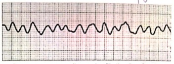
A Verificar o pulso do paciente
B Verificar o ritmo do paciente
C Infundir epinefrina na dose de 0,01mg/kg
D Aplicar nova desfibrilação com a dose de 4 J/kg
E Reiniciar imediatamente as compressões cardíacas
Questão 578 · Diagnóstico · Sinais e sintomas · Conduta · 4000188097Sobre as orientações do Ministério da saúde referente à sífilis congênita, analise as assertivas abaixo: I. É uma doença de fácil prevenção, mediante acesso precoce à testagem no pré-natal e tratamento adequado das gestantes positivas que inclui tratamento do parceiro. II. O teste rápido da sífilis é um teste não treponêmico para triagem. III. É um importante marcador da qualidade da assistência no pré-natal. Quais Alternativa estão CORRETAS?
A Apenas I.
B Apenas I e II
C Apenas I e III
D Apenas II e II
Questão 579 · Sexualidade no adolescente · Conceitos · 4000188002Adolescente, 16 anos, sexo de nascimento feminino, gênero não binário. Se identi ca com pronomes masculinos e femininos. Expressa seu gênero tanto como moda dita masculina, como feminina. Cursa o primeiro ano do ensino médio. Diz estar namorando um rapaz na escola, gosta bastante dele e de conversar com ele. Ainda não teve sua sexarca. Vem a consulta com sua médica de família e comunidade para tirar dúvidas sobre sexo. Sobre o caso acima, marque a alternativa correta:
A A genitália externa determina a orientação sexual da pessoa.
B A orientação sexual é definida a partir do gênero de quem se deseja sexualmente.
C O termo bissexual trata-se de identidade de gênero não binária.
D A masturbação deve ser desencorajada como prática de busca pelo prazer e autoconhecimento.
Revisar: possível letra faltando em enunciado
Questão 580 · Prof ilaxia Ferro · 4000188001Márcia traz a lha Luiza de 7 meses para consulta com a sua médica de família, porque está com di culdade na introdução alimentar e preocupada que a ingestão de vitaminas seja insu ciente. Refere que a lha é muito agitada, não aceita frutas ou legumes, e a sua família tem pressionado para trazê-la em consulta, pois acham a menina muito pálida e menor que as outras crianças da família. Nega demais queixas. Histórico de Luiza: pré-natal e parto vaginal sem intercorrências, idade gestacional 38s+3d, peso 3.540g, Apgar 9-10, teste do pezinho sem alteração, aleitamento materno exclusivo até 6 meses, introdução alimentar aos 6 meses. Acompanhamento de puericultura sem alterações. Na consulta de 6 meses, iniciou suplementação de ferro 1mg/kg/dia. Apresenta exame físico normal, desenvolvimento neuropsicomotor e perímetro cefálico adequados para a idade. Grá co de acompanhamento: curva de peso-idade 0>Z-escore > -1 e curva estatura-idade 1 > Z-escore > 0. As orientações mais adequadas seriam:
A Devido a alta prevalência de anemia na infância, orientar a mãe que será solicitado hemograma para rastreamento de anemia ao completar 1 ano de idade. Realizar orientação alimentar, manter suplementação de ferro 1mg/kg/dia e tranquilizá-la.
B Tranquilizar a mãe, pois a ausência de mucosas descoradas é um exame sensível para a exclusão do diagnóstico de anemia. Além disso, o desenvolvimento e a medidas antropométricas estão adequados para a idade. Orientar sobre introdução alimentar.
C Uma estratégia preventiva aditiva implementada para combater a anemia na infância no Brasil é a suplementação de ferro. Segundo o Ministério da Saúde, a suplementação profilática de ferro 1mg/kg/dia está indicada até os 24 meses de Luiza.
D A suplementação profilática de ferro dos 6-24 meses apresenta evidências conclusivas adequadas sobre a redução do risco de anemia e os benefícios no crescimento e desenvolvimento neurológico e cognitivo.
Revisar: possível letra faltando em enunciado
Questão 581 · Avaliação do Crescimento · Diagnóstico Nutricional · 4000188000Elisa tem 16 dias de vida, nasceu de parto normal, à termo, Apgar 8 e 10 com 3.200g. Desde então está em aleitamento materno exclusivo sem nenhuma intercorrência. Há cerca de 1 semana, segundo os pais, vem apresentando vários episódios ao longo do dia de choro súbito, sem razão aparente, inconsolável, acompanhado de aumento do tônus de todo o corpo e rubor facial. Considerando o caso clínico descrito, quais os achados na anamnese e exame físico indicariam encaminhamento para avaliação hospitalar:
A Relato de fezes amolecidas (cerca de 7 episódios por dia) com excesso de gases, acompanhada de regurgitações eventuais e peso de 3.180g
B Relato de soluços contínuos, sem regurgitações que acompanham o choro e cessam após amamentação e peso de 3.240g
C Relato de obstipação de cerca de 2 dias, com excesso de gases, seguida de normalização do hábito intestinal e peso de 3.150g
D Relato de fezes amolecidas (cerca de 12 episódios por dia), sem muco, com rajas de sangue, acompanhada de vômitos e peso de 3.220g
Questão 582 · Tratamento · 4000187999No centro de saúde (CS), enquanto aguardava consulta médica na sala de espera, a criança de 2 anos, acompanhada pela mãe, apresentou perda de consciência associada a contrações seguidas de clônus em membros superiores e inferiores, sialorréia e liberação de esfíncter urinário. Imediatamente, o residente de medicina de família e comunidade foi chamado para prestar socorro e quando chegou a criança já não apresentava tais movimentos, encontrava-se acordada, responsiva, porém sonolenta. A agente comunitária de saúde que presenciou o evento relatou ao residente que a "crise" havia durado cerca de 4 minutos. Ao fazer a aferição dos sinais vitais, nota que: frequência cardíaca = 110 bpm, frequência respiratória = 29 mrm, saturação de oxigênio = 99% em ar ambiente e temperatura = 39º Celsius. A mãe da criança nega episódios semelhantes anteriormente, nega comorbidades conhecidas ou uso de medicamentos. Refere que aguardava atendimento para avaliação dos sintomas de gripe iniciados há 2 dias, porém está muito assustada e com medo de seu lho apresentar novos episódios como este ou ter problemas neurológicos sérios, pois recentemente seu sobrinho de 6 anos recebeu diagnóstico de epilepsia e tem tido di culdade no controle das crises. Com relação à convulsão febril, ilustrada no caso acima, assinale a alternativa correta:
A Trata-se de um distúrbio convulsivo provocado, cujo agente provocador é a febre (com temperatura acima de 38ºC) devido ao baixo limiar convulsivante cortical em desenvolvimento; no caso acima, há uma crise com duração menor que 15 minutos e generalizada que pode ser classificada como convulsão febril complexa.
B Devido à preocupação materna, deve-se orientar que há um aumento no risco de desenvolvimento de epilepsia, principalmente com histórico familiar positivo, por isso há indicação de solicitar o eletroencefalograma (EEG) para confirmação diagnóstica e benefício de iniciar tratamento farmacológico contínuo, sendo valproato o medicamento de escolha.
C É importante identificar o processo infeccioso desencadeante da convulsão febril, como no caso a apresentação de provável síndrome gripal, e realizar entrevista clínica e exame físico adequados para exclusão de outros agentes provocadores agudos associados, bem como de outros diagnósticos diferenciais.
D Sabe-se que há uma alta taxa de recorrência das crises e, na ausência de profilaxia, as crianças afetadas podem evoluir com lesões estruturais no sistema nervoso central ou ter problemas de aprendizado, por isso há benefício no tratamento farmacológico contínuo e a profilaxia de escolha para novas crises é a terapia antipirética.
Questão 583 · Fatores de Risco para sibilância em lactentes · 4000187998Lactente 13 meses, feminino, vai ao seu consultório para uma consulta por demanda livre. Mãe refere "tosse seca contínua, perda de apetite e febre de 38,0°C" há 24 horas. Refere que acordou mais cansada e por isso procurou atendimento. No histórico do prontuário, você nota que a criança já teve episódio semelhante aos 7 meses de idade e um atendimento por eczema atópico com 10 meses. Ao exame físico ela apresenta temperatura axilar de 37,8°C, sibilos, tiragem intercostal e frequência respiratória de 46mrpm. Sobre o caso, é possível afirmar:
A Por tratar-se de um segundo episódio, podemos afirmar que se trata de uma criança com asma e prescrever broncodilatador de curta duração.
B A lactente tem um critério maior, que aumenta seu risco de vir a ter diagnóstico de asma.
C Por apresentar febre, podemos diagnosticar como bronquiolite e prescrever corticoide oral e broncodilatador para uso domiciliar.
D Está indicado solicitar testes alérgico, hemograma e radiografia de tórax para definir o diagnóstico de asma em menores de 2 anos de idade.
Questão 584 · Introdução alimentar · Gráf icos OMS Classif icação nutricional · 4000187996Lucia traz sua lha Ana, de 8 meses, em consulta, pois se preocupa por achá-la "muito magrinha". Ana nasceu a termo, sem intercorrências no pré-natal ou nascimento e com peso adequado e recebeu aleitamento materno exclusivo até seus 6 meses. Você acompanhou todo o pré-natal e consultas de puericultura, com evidência de bom vínculo entre a criança e sua família. Há cerca de 2 meses sua mãe iniciou introdução alimentar por conta própria, seguindo orientações da internet. Na carteirinha há registros das consultas anteriores que vinham seguindo padrão desde o seu nascimento com estatura/idade (E), peso/idade (P), perímetro cefálico/idade (PC) e IMC/idade entre Z-1 e Z-2. Na consulta de hoje a estatura e perímetro cefálico mantém-se na mesma curva, porém P e IMC encontram-se entre Z-2 e Z-3 e você identi cou que há registro de pesagem na sala de vacinação há cerca de 1 mês com P entre Z-2 e Z-3. Sem outras alterações ao exame físico e com desenvolvimento neuropsicomotor adequado para idade, a paciente não apresenta histórico de intercorrências infecciosas. Diante do caso, além de orientar introdução alimentar, assinale a alternativa mais correta:
A A queda na curva de peso de baixo para muito abaixo requer investigação laboratorial e encaminhamento para especialista focal.
B A queda na curva de peso de adequado para baixo requer acompanhamento mais próximo com reavaliação em até 15 dias.
C A queda na curva de peso de baixo para muito abaixo requer investigação laboratorial e retorno em consulta dentro do próximo mês.
D A queda na curva de peso de adequado para baixo requer acompanhamento com retorno em 2 meses conforme calendário de puericultura.
Questão 585 · Orientações gerais de puericultura Sinais de alerta · 4000187994Joana traz seu lho Miguel, 7 anos, para a consulta devido a queixa de dor abdominal recorrente. Relata que as dores iniciaram há aproximadamente 6 meses e estão mais frequentes nas últimas semanas, fazendo com que o lho faltasse alguns dias na escola. A dor é em região periumbilical, tipo cólica, de moderada a forte intensidade, sem irradiação. Quando questionado, Miguel nega qualquer alteração no hábito intestinal, sintomas urinários e sistêmicos. Exame físico do abdome sem alterações, pressão arterial: 100 x 60 mmHg, peso: 22 kg, altura: 120 cm. Joana está muito preocupada pois o lho de sua prima, da mesma idade de Miguel, começou com dores semelhantes ás de seu lho e após longa investigação foi diagnosticado com câncer. Traz consigo o resultado de exames solicitados em clínica popular de: hemograma, velocidade de hemossedimentação (VHS), proteína C reativa (PCR), parcial de urina e urocultura - todos normais. Mostra também o pedido de um ultrassom de abdome total e endoscopia digestiva alta, que não realizou devido o custo desses exames. A conduta mais adequada ao caso é:
A Solicitar o ultrassom de abdome total, endoscopia digestiva alta e exame parasitológico de fezes para prosseguir investigação.
B Solicitar apenas o ultrassom de abdome total já que a endoscopia digestiva alta se trata de um exame invasivo e desnecessário no momento.
C Explicar que entre 90-95% dos casos de dor abdominal recorrente não é possível estabelecer uma etiologia específica e que não há necessidade de prosseguir investigação.
D Realizar uma anamnese abrangendo aspectos emocionais, sociais e familiares, realizar um diário da dor e tranquilizar a preocupação materna.
Questão 586 · Falsas contraindicações das vacinas · Calendário inf antil · 4000187991Zion, 8 anos, vem em consulta médica acompanhado de seu pai, Roberto. Ele refere que seu lho está sempre doente e gostaria de uma avaliação do seu estado de saúde. A criança é portadora de asma, faz uso contínuo de beclometasona inalatória em altas doses, 250 microgramas/dose, a cada 12 horas, como terapia de manutenção. Na última semana, teve episódio de agudização por quadro de infecção de via aérea superior, sendo necessário uso de corticosteroide oral por 5 dias, na dose de 1mg/kg/dia. Hoje, é o último dia de tratamento e não há sinais ou sintomas de doença aguda ou descompensação da asma. Zion está pesando 28kg e com altura de 130 cm. Ao nal da sua avaliação você nota que há 1 dose de vacina atrasada de difteria, tétano, pertússis (DTP), e ausência da tetraviral. Assinale a alternativa que apresenta a conduta mais adequada nesse caso.
A A) Atualizar a situação vacinal com 1 dose de DTP, não vacinar para tríplice viral e varicela pela história de uso contínuo de corticosteroide inalatório em altas doses e doença em fase de convalescência.
B Atualizar a situação vacinal com 1 dose de dT, vacinar para tríplice viral e varicela, pois o uso de corticosteroides e doença em fase de convalescência não contraindicariam as doses em atraso.
C Atualizar a situação vacinal com 1 dose de dT, vacinar para tríplice viral e aguardar 30 dias para realizar a dose de varicela pela história atual do uso de corticosteroide oral, contraindicando a aplicação.
D Atualizar a situação vacinal com 1 dose de DTP, vacinar para tríplice viral e aguardar 30 dias para realizar a dose de varicela, pois são vacinas contraindicadas para serem aplicadas simultaneamente.
Questão 587 · Classif icação quanto aos sintomas · Tratamento · 4000187990Você é a médica de família e comunidade de uma equipe de Saúde da Família da sua cidade, e recebe em seu consultório Esther, mãe de Luca, de 6 anos, que traz seu lho à consulta de retorno. Percebe que já entrou bastante preocupada e inicia a consulta dizendo que Luca continua fazendo xixi na cama. A primeira consulta para esta queixa foi há 3 meses, quando Luca havia voltado a fazer xixi na cama havia poucos dias. Desfraldou aos 4 anos, e não "apresentava esse comportamento" desde então. Durante esse período de investigação, foram solicitados exames (análise de urina, ultrassonogra a de rins e vias urinárias) que não evidenciaram alterações. Neste período, percebeu que Luca e sua mãe demonstram bastante afeto e mantêm boas relações familiares. Além disso, Luca não tem apresentado di culdades na escola ou com os colegas. Durante a entrevista, Luca se mostra colaborativo. Ele nega queixas urinárias diurnas, como disúria, urgência ou polaciúria. Queixa-se apenas de certa di culdade para evacuar, sendo sua última evacuação há 3 dias. O exame físico não apresenta alterações, e o desenvolvimento neuropsicomotor é adequado para a idade. Sobre o caso e o tema abordado, como se pode classificar a enurese de Luca e seu tratamento adequado?
A Enurese monossintomática primária e o tratamento é realizado com desmopressina, por apresentar baixa taxa de reincidência.
B Enurese polissintomática secundária, e deve ser solicitado estudo urodinâmico para auxiliar na escolha do tratamento.
C Enurese polissintomática primária, e deve ser encaminhado à endocrinologia para tratar diabetes mellitus tipo 1.
D Enurese monossintomática secundária, e deve-se tratar a constipação para auxílio na remissão do quadro.
Questão 588 · Anaf ilaxia · 4000187924Escolar de 7 anos, sem história prévia de comorbidades, após retornar de festa infantil apresenta subitamente placas pruriginosas, edema em lábios, além de relatar di culdade para respirar. É levada à emergência onde observa-se taquicardia, perfusão capilar periférica lenti cada e broncoespasmo. Como deverá ser realizada a abordagem dessa paciente?
A Anti-histamínicos, broncodilatador e corticoide inalatório.
B Adrenalina intramuscular, expansão volêmica e elevação de membros inferiores.
C Broncodilatador, corticóide intravenoso e anti-histamínicos.
D Adrenalina subcutânea, broncodilatador e expansão volêmica.
Questão 589 · DDS46XX hiperplasia adrenal congênita · 4000187923Recém-nascido masculino, com 16 dias de vida, é levado por sua mãe à emergência com relato de início há 72 horas de di culdade de sucção, hipoatividade e há 12 horas início de vômitos e diminuição da diurese. Ao exame observa-se recém- nascido, letárgico, pálido, anictérico, com saliva espessa, extremidades frias, apresentando diurese concentrada em fralda. Quando questionada, a mãe refere pré-natal sem intercorrências, parto cesáreo por solicitação materna com 40 semanas, bolsa rota no ato, peso de nascimento 3780 g, Apgar 9/9 e alta com 48 horas de vida. Está em aleitamento materno exclusivo e recebeu há 5 dias solicitação para nova coleta do teste do pezinho. Qual o diagnóstico e tratamento?
A Hipotireoidismo congênito - Hidratação venosa e Levotiroxina.
B Sepse neonatal - Expansão volêmica, Ampicilina e Gentamicina.
C Galactosemia - Suspensão da amamentação e início de fórmula parcialmente hidrolisada.
D Hiperplasia adrenal congênita - Expansão volêmica e Hidrocortisona.
Questão 590 · Orientações gerais de puericultura Sinais de alerta · 4000187922O uso de dispositivos móveis, como smartphones e tablets por lactentes e pré-escolares aumentou dramaticamente nos últimos anos. Os estudos mostram a associação entre excesso de exposição a telas na primeira infância e atraso no desenvolvimento cognitivo, na linguagem, atrasos sociais, descontrole emocional, além de comportamento agressivo e alterações no sono. Seguindo as recomendações atuais, o tempo aceitável de exposição à tela, de acordo com a faixa etária é:
A Até 1 hora por dia para crianças abaixo de 2 anos.
B Entre 1 e 2 horas por dia para crianças de 2 a 5 anos.
C Até 1 hora por dia para crianças de 2 a 5 anos.
D Até 2 horas por dia para crianças até 2 anos.
Questão 591 · Prof ilaxia Ferro · 4000187921Nos lactentes em aleitamento materno exclusivo, sem fatores de risco, recomenda-se a suplementação medicamentosa para pro laxia da anemia ferropriva a partir de 180 dias de vida até o nal do segundo ano. No entanto, com presença de fatores de risco, a suplementação deve ser iniciada a partir de 90 dias. É correto afirmar que um dos fatores de risco é:
A Peso ao nascimento de 2.700g.
B Clampeamento do cordão umbilical antes do primeiro minuto de vida.
C Idade gestacional ao nascimento acima de 37 semanas.
D Suplementação de ferro na gravidez
Questão 592 · Aspectos Clínicos Quadro clínico · 4000187919Lactente de 6 meses é levado à emergência com história de início de coriza e tosse há 3 dias evoluindo com piora dos sintomas e taquidispneia nas últimas 24h. Durante a avaliação na emergência, o achado deste paciente que sugere maior gravidade é:
A Aceitação menor que habitual da alimentação.
B Presença de batimento de asa de nariz e gemência.
C Presença de sibilos na ausculta respiratória.
D Radiografia de tórax com achados de hiperinsuflação pulmonar.
Questão 593 · Tratamento Geral · 4000187918Após admissão hospitalar de lactente de 5 meses com história de início de coriza e tosse há 3 dias, evoluindo com sinais de esforço respiratório e taquidispneia nas últimas 24h, o médico de plantão optou por iniciar algumas medidas terapêuticas. Qual delas é a única com e cácia comprovada por consenso no tratamento da doença deste paciente?
A Corticoterapia sistêmica venosa.
B Corticoterapia inalatória.
C Fisioterapia respiratória.
D Oxigenoterapia para manter a saturação > 90%.
Questão 594 · Plano B · 4000187917Lactente de 10 meses é trazido à emergência por sua mãe com queixa de diarreia líquida, cerca de 5 episódios por dia, sem muco pus ou sangue. Ao exame físico apresenta-se irritado, com olhos fundos, mucosas secas, pulsos amplos e enchimento capilar normal. Qual a conduta adequada para o caso?
A Tratamento domiciliar com aumento da ingesta hídrica.
B Terapia de reidratação oral na unidade de saúde.
C Gastróclise na unidade de saúde.
D Terapia de reidratação parenteral com cristalóides.
Questão 595 · Regurgitação · 4000187916Lactente de 2 meses, sexo feminino, é trazido por seus pais à consulta de puericultura. Os pais relatam que o lactente está em aleitamento materno exclusivo e que apresenta episódios de regurgitação após todas as mamadas. O exame físico está dentro da normalidade e o desenvolvimento está adequado para a faixa etária. O ganho ponderal foi de 940g em relação ao mês anterior. Qual a conduta adequada para o caso?
A Iniciar fórmula láctea para complementar o aleitamento materno.
B Suspender o aleitamento materno e iniciar fórmula láctea anti-regurgitante.
C Iniciar tratamento medicamentoso para refluxo e manter o aleitamento materno.
D Orientar medidas posturais antirrefluxo e manter o aleitamento materno.
Questão 596 · Teste do olhinho · 4000187914Durante a primeira consulta de puericultura de um recém- nascido de 10 dias de vida, a mãe refere que seu lho foi avaliado com o “teste do olhinho” na maternidade. Com relação a este teste de triagem é possível afirmar que:
A Detecta as opacidades dos meios transparentes do globo ocular.
B É considerado normal quando os dois olhos apresentam reflexo vermelho brilhante ainda que exista assimetria entre eles.
C Deve ser realizado apenas na maternidade.
D Quando alterado deve ser repetido após o período de 1 hora.
Questão 597 · Abordagem da Crise Febril · 4000187912Pré-escolar de 3 anos, iniciou há 24 horas quadro de coriza, tosse e febre. Avó procurou atendimento pois neto apresentou movimentos tônico-clônicos generalizados com duração de aproximadamente 5 minutos. Durante avaliação, paciente algo sonolento, porém responsivo ao chamado, ausculta respiratória com roncos de transmissão, sem outras alterações ao exame físico. Avó refere que sua lha quando pequena também apresentava quadros semelhantes. Com base no exposto acima, qual a melhor conduta a ser tomada?
A Punção lombar para coleta de líquor.
B Realização de neuroimagem.
C Orientar a família quanto à benignidade do quadro.
D Iniciar antibioticoterapia.
Questão 598 · Teste do coraçãozinho · 4000187909A realização do teste do coraçãozinho nas maternidades pré alta, são essenciais para o diagnóstico precoce das cardiopatias congênitas críticas. Ao obter um teste com saturação em membro superior direito 98% e em membro inferior 95% devemos:
A Repetir o teste após 1 hora.
B Liberar para acompanhamento ambulatorial.
C Transferir o paciente para monitorização em UTI neonatal.
D Realizar ecocardiograma.
Questão 599 · Vacinas meningocócicas · HPV · 4000187904Sobre a infecção pelo Papilomavírus Humano é correto a rmar: (Ministério da Saúde. Amplia vacinação contra meningite e HPV entenda o que muda. www.org.br./saude/setembro/2022)
A Uma das opções terapêuticas para o tratamento das verrugas anogenitais, consiste na utilização de comprimidos de Aciclovir de 200mg, duas vezes ao dia, por 60 dias.
B Os tratamentos são os mesmos, tanto para indivíduos normais como para indivíduos imunocomprometidos.
C Vacinar-se contra o HPV é a medida mais eficaz de se prevenir contra a infecção causada por todas as cepas virais.
D O sintoma mais comum da infecção pelo HPV é a sensação de prurido e ardência no local das lesões e ocorre geralmente em torno de 5 a 10 dias após o contágio.
E Nenhuma das alternativas acima está correta.
Questão 600 · Quadro Clínico · Diagnóstico · 4000187892Avalie os sintomas apresentados por um paciente do sexo masculino, com 35 anos de idade, e escolha entre as alternativas o diagnóstico mais provável: - Mal-estar e prostração. - Dor poliarticular intensa, assimétrica e migratória. - Taquicardia, e à ausculta, apresenta sopro cardíaco. - Rash eritematoso de padrão tortuoso na região torácica. (Bittar, CS., Reiche, FV, Bittencourt MS. Dispnéia de origem cardíaca. EM: Nunes, MPT, et al. Clínica Médica –Grandes Temas da Prática. Atheneu. 2010.)
A Sífilis latente.
B Lupus eritematoso sistêmico.
C Doença de Behçet.
D Febre reumática.
E Nenhuma das alternativas acima está correta.
Questão 601 · Passos iniciais · 4000187851Sobre o clampeamento do cordão umbilical, seguindo as novas recomendações da Sociedade Brasileira de Pediatria publicadas em 2022, é correto a rmar que: (Reanimação do recém-nascido < 34 semanas em sala de parto – SBP – Programa de Reanimação Neonatal, 2022.)
A No recém-nascido pré-termo < 34 semanas de idade gestacional, com boa vitalidade, recomenda- se clampear o cordão 1 minuto após o nascimento.
B Recém-nascido < 34 semanas que não está com boa vitalidade, recomenda-se fazer estímulo tátil vigoroso até que ele inicia a respiração, antes do clampeamento imediato do cordão.
C A ordenha do cordão umbilical está indicada sempre que o recém-nascido prematuro nascer em mal estado geral, antes do clampeamento imediato do cordão umbilical.
D No prematuro < 34 semanas que tenha boa vitalidade ao nascer, recomenda-se que se espere 30 segundos ou mais, antes de clampear o cordão umbilical.
E Pacientes menores de 34 semanas que nascem hipotônicos e sem respirar devem ser estimulados, pois não se faz necessário o clampemamento imediato do cordão umbilical.
Questão 602 · Passos iniciais · Ventilação com pressão positiva · 4000187850Você está de plantão e recebe na sala de parto um bebê do sexo masculino, com idade gestacional pelo Capurro de 32 semanas. Analise as a rmações abaixo sobre o passo a passo da reanimação neonatal e responda. I - Se o bebê nascer com FC < 100 bpm, mesmo que esteja respirando, deve ser iniciado a ventilação com pressão positiva com máscara facial com uma concentração de O2 = 50%. II - Se o bebê nascer em apnéia, mesmo com FC > 100 bpm, deve ser iniciado ventilação com pressão positiva com máscara facial com uma concentração de O2 = 30%. III - Se após 30 segundos de ventilação com pressão positiva e máscara facial, com a oferta de O2 adequada, ele se mantiver bradicárdico (FC < 100 bpm), devemos checar se a técnica utilizada está correta. Uma vez estando tudo correto, posso aumentar a oferta de O2 conforme a saturação alvo. IV - Melhor conduta seria intubar de imediato o recém-nascido por se tratar de um prematuro para administração de surfactante logo após o nascimento. (Reanimação do recém-nascido < 34 semanas em sala de parto – SBP – Programa de Reanimação Neonatal, 2022.)
A Apenas as afirmações I, II e III estão corretas.
B Apenas as afirmações II e III estão corretas.
C Apenas as afirmações I e III estão corretas.
D Apenas as afirmações II, III e IV estão corretas.
E Apenas a afirmação IV está correta.
Questão 603 · Outros f atores de risco · Fatores de risco para hiperbilirrubinemia · 4000187849Não é fator de risco para hiperbilirrubinemia indireta em RN com mais de 35 semanas: (Hiperbilirrubinemia indireta no período neonatal – Sociedade Brasileira de Pediatria, Setembro 2021.)
A IG 36 semanas
B Mãe diabética
C Sexo masculino
D Clampeamento cordão umbilical 30 segundos após o nascimento
E Presença de céfalo-hematoma
Questão 604 · Coarctação de aorta · 4000187848Todas as cardiopatias abaixo são consideradas CIANÓTICAS, EXCETO: (Tratado de Pediatria: Sociedade Brasileira de Pediatria, 5a.ed, Barueri, SP: Manole, 2021.)
A Coarctação de Aorta
B Atresia pulmonar
C Atresia tricúspide
D Drenagem anômala de veias pulmonares
E Transposição dos grandes vasos da base
Questão 605 · Tratamento · Quadro clínico · Diagnóstico laboratorial · 4000187847Sobre a infecção do trato urinário é correto a rmar que: (Nefrologia Pediatrica-ToporovskiMello- MartiniFilho-Benini-Andrade,2aedição Cap.17,Pág.305)
A Se caracteriza pela multiplicação bacteriana em qualquer segmento do aparelho urinário.
B A infecção do trato urinário em lactente tem predominância no sexo feminino até 6o mês de vida.
C Se caracteriza pela presença de bactérias na bexiga e uretra.
D Acomete meninas e meninos de igual forma.
E Todas alternativas estão corretas.
Questão 606 · Investigação por imagem · 4000187846Todos pacientes, após confirmação de infecção do trato urinário, devem realizar investigação por imagem: I. Ultrassonografia abdominal; II. Ultrassonografia das vias urinárias; III. Urografia excretora; IV. Estudo Urodinâmico. (Nefrologia Pediatrica-Toporovski-Mello-MartiniFilho-BeniniAndrade,2aedição Cap.17, Pág.305)
A Alternativas I e II estão corretas
B Alternativas I e III estão corretas
C Alternativas I e IV estão corretas está correta
D Alternativa II está correta
E Todas estão corretas
Questão 607 · Quadro clínico · Quadro clínico · 4000187844Adolescente apresentando quadro de febre há 4 dias, cefaléia e mialgia e com sintomas associados em diferentes situações: I. Se apresentar hiperemia conjuntival, icterícia e dor mais concentrada em panturrilhas o diagnóstico mais provável é febre amarela. II. Se apresentar dor mais intensa em região retro-orbitária com prova do laço positiva, o mais provável é ser dengue. III. Se apresentar sinal de Faget e certo grau de icterícia com hiperpotassemia, o mais provável é ser leptospirose. IV. Se apresentar sintomas respiratórios e associado exantema máculo-papular, o mais provável é ser sarampo. Assinale a alternativa correta: (Tratado de Pediatria: Sociedade Brasileira de Pediatria, 5a.ed, Barueri, SP: Manole, 2021.)
A Todas as afirmativas estão corretas
B Somente as alternativas II e IV estão corretas
C Somente I e IV estão corretas
D Somente II e III estão corretas
E Somente I e III estão corretas
Questão 608 · Diagnóstico · Sinais e sintomas · Diagnóstico · 4000187843Gestante, sem pré-natal, inicia trabalho de parto prematuro com 35 semanas e o nascimento ocorre sem intercorrências por parto normal. Ao examinar o recém-nascido percebe-se hepatoesplenomegalia, algumas petéquias esparsas e icterícia. O pediatra logo pensa em infecção congênita e vai investigar. Assinale a alternativa correta: (Tratado de Pediatria: Sociedade Brasileira de Pediatria, 5a.ed, Barueri, SP: Manole, 2021.)
A Solicitará radiografia de ossos longos e líquor com VDRL, pois o teste rápido na mãe mostrouse positivo para teste treponêmico.
B Solicitará ecografia transfontanela e fundoscopia, já que a mãe apresentou IgG e IgM reagentes para toxoplasmose.
C Imediatamente coletará carga viral do recém-nato, já que o teste rápido para HIV materno foi positivo.
D Solicitará sorologia para CMV e também detecção viral na urina do recém-nascido do vírus, pois mãe com IgM positiva para citomegalovírus.
E Todas as alternativas estão corretas
Questão 609 · Escarlatina · Eritema Inf eccioso · Sarampo · 4000187841Assinale a alternativa correta nas doenças prevalentes na infância correlacionadas com suas características: I. Caxumba; II. Coqueluche; III. Exantema súbito; IV. Eritema infeccioso; V. Escarlatina; [ ] Leucocitose com linfocitose intensa; [ ] Aumento de amilase; [ ] Língua em framboesa e palidez perioral; [ ] Febre alta de 3-4 dias precedendo rash; [ ] Rash malar e membros com rash rendilhado (Tratado de Pediatria: Sociedade Brasileira de Pediatria, 5a. ed, Barueri, SP: Manole, 2021.)
A V, I, III, IV, II
B II, I, V, III, IV
C II, V, I, IV, III
D I, II, V, III, IV
E V, II, I, IV, III
Questão 610 · Tetralogia de Fallot · 4000187840Sabendo que o procedimento de RASKIND é a abertura do septo atrial por cateter balão à beira de leito na UTI neonatal, esse procedimento NÃO está indicado em: (O cateterismo cardíaco intervencionista nas cardiopatias congênitas. (Rev Soc Cardiol Estado de São Paulo – vol 12 – n°5- Set/Out, 2002)
A Coração esquerdo hipoplásico
B Tetralogia de Fallot
C Transposição de grandes vasos da base
D Atresia pulmonar com septo ventricular íntegro
E Atresia tricúspide
Questão 611 · Episódio hipotônicohiporresponsivo · 4000187839Um estudo de vigilância ativa, realizado no Brasil (MARTINS, et al., 2005) com patrocínio do Ministério da Saúde, veri cou que a vacina DTP/Hib utilizada pelo Programa Nacional de Imunizações pode apresentar eventos adversos raros, tais como episódio hipotônicohiporresponsivo (EHH). Sobre o EHH é correto a rmar que: (Manual de Vigilância Epidemiológica de Eventos Adversos Pós-Vacinação, 2a. Edição)
A Apesar de o EHH estar mais frequentemente associado à vacina com o componente Pertussis (DTP, DTPa, DTP/Hib), ele é descrito com outras vacinas cuja aplicação é intramuscular, como Hib isolado, DT, hepatite B e pneumocócica.
B Podem ser observadas no EHH a presença de dificuldade respiratória associada a broncoespasmo, urticária e hipotensão.
C As crianças que tiveram EHH não demonstraram nenhuma sequela neurológica nem tendência à repetição do EHH nas doses subsequentes.
D A conduta diante de um caso de EHH é observação rigorosa até o desaparecimento dos sinais e sintomas, e realizar a notificação do caso.
E A criança que teve um EHH deve continuar o esquema com DTP acelular.
Questão 612 · Alergia à proteína do leite de vaca · 4000187827Sobre a alergia a proteína do leite de vaca (APLV), marque a alternativa INCORRETA: (Consenso Brasileiro sobre Alergia Alimentar: 2018 (ASBAI)
A As fórmulas extensamente hidrolisadas são a primeira escolha no tratamento da APLV, enquanto que as parcialmente hidrolisadas são indicadas nos casos mais leves.
B As fórmulas à base de proteína isolada de soja não são recomendadas na terapia nutricional de crianças menores de 6 meses.
C Crianças com APLV que apresentam persistência dos sintomas com fórmulas extensamente hidrolisadas têm indicação de fórmulas de aminoácido.
D Em geral, as alergias IgE mediadas são as que expõem os pacientes a quadros mais graves, com risco de morte, ou seja, a anafilaxia.
E Os lactentes que estão em aleitamento materno devem ser assim mantidos, e a mãe deve ser submetida a dieta com restrição total de leite de vaca e derivados, e deve ser recomendada a suplementação de cálcio e vitamina D para a mãe.
Questão 613 · Prevalência · 4000187825Dentre os tópicos abaixo todos são critérios para convulsões febris, EXCETO: (Condutas Pediátricas em Pronto Atendimento e na Terapia intensiva 2ª.edição, Editora Manole)
A Convulsão na vigência de febre
B Ausência de história de convulsão afebril prévia
C Ausência de inflamação ou infecção no SNC
D Idade entre 6 meses e 7 anos
E Ausência de distúrbios metabólicos associados a convulsão
Questão 614 · Agentes etiológicos · 4000187821Qual a a rmativa está correta com relação a infecção por vírus sincicial respiratório: (Condutas Pediátricas em Pronto Atendimento e na Terapia intensiva 2ª. edição, Editora Manole)
A A incidência é mais elevada e com maior mortalidade em pacientes do sexo feminino
B As infecções subsequentes geralmente são mais sintomáticas
C A presença de estertores difusos na ausculta pulmonar é um achado frequente
D Confere proteção prolongada
E É mais frequente na faixa etária de escolares
Questão 615 · Diagnóstico · 4000187820São achados na radiogra a de tórax PA e per l no caso de aspiração de corpo estranho, EXCETO: (Condutas Pediátricas em Pronto Atendimento e na Terapia intensiva 2ª. edição, Editora Manole)
A Pneumomediastino
B Enfisema obstrutivo
C Atelectasia lobar ou segmentar
D Desvio contrateral do mediastino
E Pneumonia
Questão 616 · Aspectos Clínicos Quadro clínico · Aspectos Clínicos · 4000187818Enumere corretamente os sinais patognomônicos ou sugestivos correspondentes as doenças abaixo: 1. Meningococemia; 2. Escarlatina; 3. Eritema infeccioso; 4. Rubéola; 5. Sarampo; [ ] Mancha de Koplik; [ ] Sinal de Pastia; [ ] Lesões petequiais e purpúricas; [ ] Aspecto de face esbofeteada; [ ] Sinal de Theodor. (Condutas Pediátricas em Pronto Atendimento e na Terapia intensiva 2ª. edição, Editora Manole)
A 5-2-1-3-4
B 5-1-2-3-4
C 3-1-2-5-4
D 3-2-1-4-5
E 4-2-3-1-5
Questão 617 · Teste do coraçãozinho · 4000187817Em relação ao novo uxograma do “Teste do Coraçãozinho”, divulgado pela Sociedade Brasileira de Pediatria em agosto de 2022, assinale a alternativa correta: (Sistematização do atendimento ao recém-nascido com suspeita ou diagnóstico de cardiopatia congênita Sociedade Brasileira de Pediatria, agosto, 2022.)
A A oximetria deve ser aferida em um dos membros superiores e em um dos membros inferiores, entre 24 e 48 horas de vida.
B Em caso de oximetria com resultado de saturação de oxigênio 93%, deve-se repetir o teste em 1 hora, se mantiver o mesmo resultado, encaminhar para ecocardiograma e avaliação cardiológica completa.
C Saturação de oxigênio maior ou igual 94% é considerada teste negativo, devendo o RN ter seguimento neonatal de rotina.
D Saturação de oxigênio menor ou igual a 89% é considerada como teste positivo, não é necessária a repetição do teste, encaminhando diretamente para realização de ecocardiograma e avaliação cardiológica completa.
E A diferença da saturação de oxigênio entre os membros deve ser maior ou igual a 3%.
Questão 618 · Transposição de grandes artérias TGA · 4000187811Malformação cardíaca congênita na qual a aorta se origina inteiramente ou em grande parte do ventrículo direito e o tronco pulmonar inteiramente ou em grande parte do ventrículo esquerdo (discordância ventrículo- atrial), denomina-se (ELOSSAIS A. A, MARCIAL M. B. Cardiopatias Congênitas Complexas. In: GOFFI F. S. Técnica Cirúrgica – Bases Anatômicas, Fisiopatológicas e Técnicas Cirúrgicas. São Paulo: Atheneu, 2001)
A Tetralogia de Fallot
B CIV (Comunicação interventricular)
C CIA (Comunicação interatrial)
D Transposição das grandes artérias
E Truncus arteriosus
Questão 619 · Def inição · Causas · Tratamento · 4000187803Marque com [V] a(s) verdadeira(s) e com [F] a(s) falsa(s) e escolha a alternativa que contém a sequência correta sobre constipação intestinal: [ ] Um aporte calórico insu ciente ou bras insu cientes na dieta podem predispor à constipação, bem como treinamento impróprio, suspensão voluntária do estímulo para defecar, imobilização, posição inadequada para defecar e diminuição da força de expulsão; [ ] Constipação não pode estar associado a doenças do sistema nervoso central e periférico; [ ] Concentrações no tecido colônico dos mais conhecidos neuropeptídeos e transmissores no paciente constipado diferem daqueles dos controle normais; [ ] A constipação é comum em pacientes com hipotireoidismo, hipoparatireoidismo, diabetes mellitus e sarcoidose; [ ] A colectomia total com ileorretoanastomose deve ser considerada nos pacientes com inércia colônica e sintomas incapacitantes que são refratários a todos os tratamento conservadores e com um reto normal ou apenas moderadamente dilatado (COREMANS G. E. Constipação intestinal. In: COELHO J. C. U. Aparelho Digestivo Clínica e Cirurgia. São Paulo: Atheneu, 2005)
A V, F, F, F, V
B V, V, F, V, F
C F, V, V, F, V
D F, F, V, F, F
E V, V, V, F, F
Revisar: possível letra faltando em enunciado
Questão 620 · Pediatria · 4000187796Afecção rara no umbigo que se manifesta pela drenagem de secreção purulenta pelo umbigo, fato que ocorre devido à perda da continuidade da pele quando um ou mais pelos se alojam no umbigo. Esse trajeto torna-se infectado, permitindo assim drenagem crônica de secreção purulenta pelo trajeto stuloso. Tal afecção denomina-se (NETO C. Z. Doenças Adquiridas do Umbigo In: COELHO J. C. U. Aparelho Digestivo Clínica e Cirurgia. São Paulo: Atheneu, 2005)
A Onfalite
B Endometriose
C Hérnia umbilical encarcerada
D Nódulo da Irmã Mary Joseph
E Cisto pilonidal
Questão 621 · Calendário da gestante · 4000187785Conceitua-se imunização como a aquisição de proteção imunológica contra um determinado agente, em geral de origem infecciosa, podendo ser classificada como ativa ou passiva. Conforme o calendário vacinal do Ministério da Saúde, assinale a alternativa verdadeira, com as vacinas recomendadas para as gestantes: (TRATADO DE OBSTETRICIA FEBRASGO, CAPITULO 11, ASSISTÊNCIA PRÉ-NATAL).
A Hepatite B, Gripe A, Rubéola.
B DTPa (Difteria, Tétano e Coqueluche), Gripe A, Hepatite B.
C DTPa (Difteria, Tétano e Coqueluche), Gripe A, Rubéola.
D Hepatite B, Gripe A, Sarampo.
E DTPa (Difteria, Tétano E Coqueluche), Sarampo, Rubéola.
Questão 622 · Vigilância Epidemiológica · 4000187711Menina, 1 ano, foi trazida da creche pela mãe e chega à unidade básica de saúde com febre alta (38,5ºC), exantema maculopapular morbiliforme de direção cefalocaudal, tosse seca, coriza, conjuntivite e pequenos pontos brancos na mucosa bucal, na altura do terceiro molar. Quais as principais providências do ponto de vista epidemiológico?
A Colher amostras e aguardar confirmação laboratorial do diagnóstico para realizar bloqueios vacinais seletivos na creche.
B Notificar, investigar e realizar bloqueio vacinal seletivo em até 72 horas.
C Buscar casos suspeitos nos últimos 15 dias.
D Notificar depois de confirmar laboratorialmente.
Questão 623 · Exantema Súbito · 4000187697Lactente de 15 meses com história de febre alta, irritabilidade e anorexia. Após três dias de febre, esta cessa e ocorre o surgimento de exantema maculopapular eritematoso, inicialmente em tronco, com posterior disseminação para face e extremidades. O diagnóstico mais provável para o caso é:
A Sarampo
B Rubéola
C Roséola
D Dengue
E Eritema infeccioso
Questão 624 · Indicações · 4000187694Sobre a Vacina BCG (Bacillus de Calmette-Guérin) é correto afirmar, EXCETO:
A É produzida com bacilos vivos atenuados
B É administrada por via intradérmica
C Imunodeficiência congênita contraindicada sua aplicação
D É adiada em recém-nascidos com peso inferior a 2.000 g
E Crianças expostas ao HIV no período perinatal não devem receber a vacina ao nascimento
Questão 625 · Gráf icos OMS Classif icação nutricional · 4000187693Uma criança cujo Índice de Massa Corporal (IMC) se encontra abaixo do escore z-3 para a idade e o sexo, possui como classificação de seu estado nutricional:
A Magreza acentuada
B Magreza
C Eutrofia
D Risco de sobrepeso
E Sobrepeso
Questão 626 · Programa Nacional de Imunizações · 4000187691Com relação às vacinas e imunobiológicos no Brasil:
A Produz uma gama restrita de vacinas e imunobiológicos e não faz pesquisas.
B Não investiu em laboratórios estaduais e regionais.
C Tem habilitação junto à Organização Mundial de Saúde e exporta vacinas para vários países.
D O país não tem tecnologia para produção de vacinas e importa todo o seu suprimento para manter o Programa Nacional de Imunização.
Questão 627 · Imunidade de rebanho · 4000187688A definição de imunidade de rebanho é a porcentagem da população alvo que precisamos vacinar contra determinada doença, de forma que possa proteger todo o grupo, inclusive não vacinados, impedindo a circulação viral. Assim, qual a porcentagem do público-alvo deve-se vacinar contra a poliomielite para atingir imunidade de rebanho?
A Os estudos da Organização Mundial de Saúde falam em 95% de cobertura vacinal para efetiva proteção.
B Para todas as doenças, inclusive poliomielite, a imunidade de rebanho é atingida com 75% de cobertura vacinal.
C A porcentagem necessária de vacinados para conseguirmos a imunidade de rebanho só depende da efetividade da vacina.
D Coberturas vacinais menores que 100% implicam em impossibilidade de imunidade de rebanho.
Questão 628 · Sinais e sintomas · 4000187686Perda auditiva, catarata e cardiopatia congênita são manifestações clínicas observadas na seguinte infecção congênita:
A Citomegalovirose
B Rubéola
C Sífilis
D Toxoplasmose
E Varicela
Questão 629 · Particularidades na inf ância · 4000187685Sobre os fatores de risco relacionados à anemia ferropriva no lactente podemos afirmar que:
A Gestações múltiplas com pouco intervalo entre elas é indicado para prevenir a doença.
B Clampeamento umbilical com menos de um minuto de vida previne a doença.
C Aleitamento materno exclusivo superior a 6 meses de idade previne a doença.
D Prematuridade e baixo peso ao nascer são fatores de risco para a doença.
Questão 630 · Maturação sexual no sexo f eminino · 4000187684A primeira manifestação clínica da puberdade no sexo feminino é:
A Aumento dos depósitos de gordura nos quadris
B Pilificação pubiana
C Alteração da voz
D Surgimento do broto mamário
E Ocorrência da menarca
Questão 631 · Prof ilaxia Ferro · 4000187681Qual a recomendação de suplementação medicamentosa pro lática de ferro em lactentes sem fator de risco?
A Recém-nascidos a termo, peso adequado para a idade gestacional, em aleitamento materno exclusivo até o 6° mês devem receber 1mg de ferro elementar/kg/dia, iniciando aos 180 dias de vida até o 24° mês de vida.
B Recém-nascidos a termo, peso adequado para a idade gestacional, em aleitamento materno exclusivo até o 6° mês devem receber 1mg de ferro elementar/kg/dia, iniciando aos 90 dias de vida até o 24° mês de vida.
C Recém-nascidos a termo, peso adequado para a idade gestacional, independentemente do tipo de alimentação devem receber 1mg de ferro elementar/kg/dia, iniciando aos 90 dias de vida até o 24° mês de vida.
D Recém-nascidos prematuros com peso inferior a 1.000g devem receber 2mg de ferro elementar/kg/dia, iniciando com 30 dias de vida, durante um ano. Após este prazo, 1mg/kg/dia mais um ano.
Questão 632 · Quadro Clínico · 4000187680Xeroftalmia, manchas de Bitot, anorexia e alteração do crescimento são manifestações clínicas observadas no seguinte distúrbio:
A Hipovitaminose C
B Hipervitaminose C
C Hipovitaminose D
D Hipervitaminose A
E Hipovitaminose A
Questão 633 · Agente etiológico e f isiopatologia · 4000187679O agente etiológico relacionado ao Eritema infeccioso se encontra na opção:
A Herpes vírus tipo 6
B Paramyxovírus
C Coxsackie A
D Vírus varicela-zóster
E Parvovírus B19
Questão 634 · Características do leite materno · 4000187678Sobre a composição do leite materno é correto afirmar, EXCETO:
A Possui alta concentração de ferro
B Possui baixa concentração de Vitamina K
C Possui baixa concentração de Vitamina D
D O colostro contém mais proteínas que o leite maduro
E O colostro contém menos lipídios que o leite maduro
Questão 635 · Diagnóstico laboratorial · 4000187677A de ciência de vitamina D é um dos distúrbios nutricionais mais frequentes em todo o mundo, estimando- se que 1 bilhão de pessoas sofram de insu ciência ou de ciência dessa vitamina. Em casos de crianças com hipovitaminose D no estágio 3, podemos afirmar que:
A Os níveis séricos de cálcio, fósforo e 25-hidroxi-vitamina D estão diminuídos, enquanto os níveis de fosfatase alcalina e paratormônio estão aumentados.
B Os níveis séricos de cálcio, fósforo e 25-hidroxi-vitamina D estão aumentados, enquanto os níveis de fosfatase alcalina e paratormônio estão diminuídos.
C Os níveis séricos de cálcio, fósforo estão diminuídos e os níveis de 25-hidroxi-vitamina D, fosfatase alcalina e paratormônio estão aumentados.
D Os níveis séricos de cálcio, fósforo, fosfatase alcalina estão normais, níveis de 25-hidroxi-vitamina D estão diminuídos, e valores de paratormônio estão normais.
Questão 636 · Vacinas vivas atenuadas · 4000187676Dentre as opções abaixo se encontram vacinas de vírus vivo atenuado, EXCETO:
A Tríplice viral (sarampo, caxumba, rubéola)
B Varicela
C Poliomielite oral (VOP)
D Hepatite A
E Febre amarela
Questão 637 · Diagnóstico · Tratamento Geral · 4000187675Sobre a pneumonia adquirida na comunidade (PAC) na faixa etária pediátrica é correto afirmar, EXCETO:
A Pneumococo é o principal agente bacteriano
B É necessária a realização de radiografia de tórax para o diagnóstico
C Todos os menores de 2 meses devem ser hospitalizados para tratamento
D O antimicrobiano de escolha para tratamento ambulatorial é a amoxicilina
E Na suspeita clínica de pneumonia atípica pode ser considerar o uso de macrolídeos
Questão 638 · Introdução alimentar · 4000187674Lactente de 6 meses de vida, em aleitamento materno exclusivo é trazido para consulta de rotina com o pediatra para receber orientações sobre a introdução alimentar. É correto afirmar que:
A Inicialmente o lactente deve receber suco de fruta batida e peneirada.
B O consumo de ovo é indicado somente depois de um ano de vida.
C As carnes devem ser cozidas e retiradas da papa de legumes antes de oferecer.
D O consumo de peixes deve ser estimulado devido ao aporte de ômega 3.
Questão 639 · Técnicas de amamentação · 4000187673Em relação ao aleitamento materno, qual das opções abaixo apresenta uma característica de boa pega:
A Boca pouco aberta
B Bochechas do bebê encovadas a cada sucção
C Lábio inferior virado para fora
D Corpo do bebê próximo ao da mãe
E Bebê com cabeça e tronco alinhados
Questão 640 · Diagnóstico · 4000187672Recém-nascido de 38semanas, parto cesáreo, evoluiu com taquipneia logo após o nascimento. Radiogra a de tórax revela hiperinsu ação pulmonar, in ltrado difuso e leve aumento da área cardíaca. Instituída oxigenoterapia com CPAP nasal. apresentando melhora clínica após 72h. Qual o diagnóstico mais provável para o caso acima:
A Pneumonia por estreptococo do grupo B
B Doença da membrana hialina
C Taquipneia transitória do recém-nascido
D Síndrome de aspiração meconial
E Cardiopatia congênita
Questão 641 · Introdução alimentar · 4000187671Estudos têm mostrado as vantagens do aleitamento materno exclusivo até o sexto mês de vida, sendo a estratégia isolada que mais previne mortes nessa faixa etária. Sobre a introdução da alimentação complementar a partir dos 6 meses de vida é correto afirmar que:
A A papa principal deve ser composta de cereal ou tubérculo, leguminosa, proteína animal e hortaliças, óleo e temperos naturais.
B O óleo para o preparo deve ser o azeite, sendo contraindicado o de soja e canola pois não possuem ácido linoleico e alfa-linolênico em proporções adequadas.
C A água deve ser substituída pela água de coco pelo seu intenso poder hidratante, não sendo necessário uso de água mineral.
D O mel é recomendado para adoçar as frutas picadas, quando o açúcar refinado não puder ser utilizado.
Questão 642 · Avaliação do Crescimento · 4000187670Sobre o crescimento da criança é correto afirmar, EXCETO:
A O peso médio de nascimento é de 3.300g
B Ao nascer, a menina mede em torno de 49 cm
C Durante o estirão puberal o pico de velocidade de crescimento dos meninos é maior em comparação ao das meninas
D No primeiro ano de vida a criança cresce em torno de 10 cm
E A partir do terceiro ano de vida o crescimento é entre 5 e 7 cm por ano
Questão 643 · 6 meses · 4000187669A criança de 6 meses possui como um dos marcos do desenvolvimento a capacidade de:
A Rolar no leito
B Ficar em pé
C Acenar
D Segurar o copo
E Executar o movimento de pinça polegar-indicador
Questão 644 · Leite de vaca · 4000187668As práticas alimentares inadequadas nos primeiros anos de vida contribuem para que milhões de crianças não atinjam seu pleno desenvolvimento. Sobre a introdução de leite de vaca nos recém-nascidos e lactentes podemos afirmar que:
A O leite de vaca tem grande concentração de vitamina D, C, ferro, zinco, sódio e magnésio.
B Possui altos teores de ácido linoleico e linolênico, superiores aos da fórmula infantil.
C Tem relação inadequada caseína/proteínas do soro, comprometendo a digestibilidade.
D Possui altos teores de oligoelementos, com boa biodisponibilidade, como ferro e zinco.
Questão 645 · Etiologia · 4000187667Assinale a alternativa que contém o agente etiológico mais frequente na infecção do trato urinário na criança:
A Proteus
B Escherichia coli
C Klebsiella
D Pseudomonas
E Serratia
Questão 646 · Origem · 4000187666Assinale a alternativa que contém o agente etiológico mais frequente nas diarreias agudas de origem infecciosa na criança:
A Giardia instestinalis
B Shigella spp
C Salmonella spp
D Adenovírus
E Rotavírus
Questão 647 · Agentes etiológicos · 4000187665Assinale a alternativa que contém o agente etiológico mais frequente na bronquiolite viral aguda:
A Influenza
B Parainfluenza
C Rinovírus
D Vírus sincicial respiratório (VSR)
E Adenovírus
Questão 648 · Tratamento Geral · 4000187663Menino, 3 anos, previamente, hígido, sem antecedente de prematuridade, vem trazido por sua mãe que procura o serviço de saúde com histórico de febre de 39°C e tosse persistente há 24 horas. Ao exame físico encontra-se em regular estado geral, ativo, hidratado, com temperatura de 39°C, frequência respiratória 28 rpm, sem tiragem nem sibilos, porém com discretos estertores crepitantes na base do hemitórax esquerdo; SatO₂ 97%. O médico deve indicar:
A Realização de radiografia de tórax de frente, perfil e deitado para definir se há indicação de internação.
B Internação por causa da febre persistente e do restante do exame físico, iniciando- se antibioticoterapia empírica.
C Internação com prescrição de ceftriaxone intravenoso, realização de radiografia de tórax de frente e perfil, suporte de oxigênio.
D Como o paciente não apresenta dispneia, nem alteração de frequência respiratória, com boa saturação de oxigênio, não há indicação de internação.
Questão 649 · Abordagem · 4000187658Menino, 10 anos, com suspeita de baixa estatura comparece à consulta para avaliação clínica. Dentre as possibilidades de avaliação inicial qual seria a opção adequada?
A Idade óssea, dosagem de GH e cariótipo.
B Ressonância nuclear magnética de hipófise, dosagem de TSH e T4L e IMC.
C Anamnese, velocidade de crescimento e critérios de Tanner.
D USG ovários, avaliação do desenvolvimento mamário e dosagem de cortisol.
Questão 650 · Antibióticos · 4000187656De acordo com a Organização Mundial da Saúde (OMS) nas últimas 2 décadas ocorreu globalmente expressiva redução na mortalidade por diarreias infecciosas em crianças com idade inferior aos 5 anos. Na criança com diagnóstico de doença diarreica aguda, uso de antibioticoterapia está indicada em qual situação?
A Disenteria.
B Falha da terapia de reidratação oral.
C Idade inferior a 2 anos.
D Aleitamento materno predominante.
Questão 651 · Consultas em Pediatria · 4000187653Na consulta pediátrica de rotina, durante o exame físico da criança é aconselhado que o exame abaixo seja realizado no final da avaliação:
A Exame abdominal.
B Oroscopia.
C Exame da genitália.
D Ausculta pulmonar.
Questão 652 · Manobra do Desengasgo · 4000187650No Brasil, a as xia é uma das principais causas de morbimortalidade em crianças, nessa idade as crianças estão mais expostas ao risco, pois estão em processo de maturação das vias aéreas e do processo de mastigação e deglutição. Lactente, 16 meses de idade, apresenta tosse e engasgo súbito, acompanhado de dispneia e cianose. A conduta para esse quadro é:
A Levar ao pronto-socorro imediatamente para atendimento de emergência.
B Realizar a manobra de Heimlich.
C Retirar manualmente o corpo estranho.
D Colocar a criança de bruços de cabeça para baixo e pressionar a região das costas.
Questão 653 · Sinais e sintomas · Conduta · 4000187647A sí lis congênita é um agravo evitável, desde que a sí lis gestacional seja diagnosticada e tratada oportunamente. Entretanto, apesar dos esforços, ainda permanece como grave problema de saúde pública. Com relação à sífilis congênita, assinale a alternativa correta.
A A transmissão do Treponema pallidum ocorre, na maioria das vezes, durante o nascimento, por contato direto com as lesões de sífilis no canal do parto.
B No nascimento, cerca de 60% a 90% dos recém-nascidos com sífilis congênita são assintomáticos.
C No período neonatal, consideram-se como neurossífilis: VDRL reagente no líquor, ou leucócitos superiores a 25 células/mm³ ou proteína superior a 150mg/dL.
D Crianças com neurossífilis devem ser tratadas com benzilpenicilina procaína, intramuscular, uma vez ao dia, por dez dias.
Questão 654 · Sinais e sintomas · 4000187644RN de termo, apresentando perímetro cefálico de 28 cm, reflexo vermelho alterado (catarata congênita), alteração oto acústica (surdez), e persistência de canal arterial. Esses achados estão relacionados principalmente a:
A Zika virose congênita.
B Citomegalia congênita.
C Rubéola congênita.
D Toxoplasmose congênita.
Questão 655 · Def eito de septo atriventricular total · 4000187543Sobre a cardiopatia mais frequente na Trissomia do 21, assinale a alternativa correta.
A É absolutamente uma cardiopatia cirúrgica.
B Na grande maioria dos casos, ocorre uma redução da embriogênese.
C Sempre haverá uma indicação cirúrgica quando coexistir um quadro de cianose.
D Ocorre um defeito da arquitetura cardíaca com evidente malformação anatômica do coração.
Questão 656 · Outras Urticárias · 4000187542São diagnósticos diferenciais possíveis para urticária todos os abaixo, exceto.
A Porfiria aguda.
B Lúpus eritematoso sistêmico.
C Linfomas e leucemias.
D Mastocitose.
Questão 657 · Causas · 4000187537Qual das alternativas a seguir não apresentada uma situação de puberdade atrasada?
A Síndrome de Kallmann.
B Síndrome de Turner.
C Síndrome de Klinefelter.
D Síndrome de Down.
Questão 658 · Curvas de Crescimento · 4000187536Quando o uso de curvas ponderoestaturais específicas para Trissomia do 21 é aconselhado?
A No mosaicismo.
B Sempre.
C Exceto no mosaicismo.
D Depende do cariótipo.
Questão 659 · Quadro Clínico · Def inição · 4000187535Assinale a afirmativa em que os critérios para anafilaxia foram preenchidos:
A Criança de 6 meses ingeriu pela primeira vez fórmula de leite de vaca e apresentou urticária com angioedema em lábios e orelha.
B Lactente que recebeu uma ferroada de abelha apresenta urticária e edema localizados ao redor da picada na coxa e com dor abdominal e vômitos.
C Adolescente alérgico a amendoim ingeriu alimento em festa de aniversário e apresentou urticária em face.
D Lactente sibilante de 8 meses com febre, recebendo inalações com beta 2 agonista há 3 dias apresentou urticária após receber dipirona.
Questão 660 · Diagnóstico · 4000187510São situações que sugerem abuso sexual em crianças as seguintes infecções genitais, exceto:
A Gardnerella.
B HPV.
C Tricomonas.
D Clamídia.
Questão 661 · Prevenção do tétano acidental · Tratamento · 4000187477Mulher, 40 anos de idade, vítima de mordedura de cão na mão esquerda há duas horas. Nega comorbidades e alergias. Relata esquema vacinal completo para tétano, com última dose de reforço aos 32 anos de idade. Relata que o animal pertence a ela e apresenta todas as vacinas em dia. Ao exame físico, encontra-se em bom estado geral, presença de laceração de 2,0cm em quarto quirodáctilo esquerdo, com discreto sangramento em "babação" (lesão mostrada a seguir). Perfusão, sensibilidade e motricidade preservadas em todos os quirodáctilos. Em relação ao caso clínico apresentado, é correto afirmar:
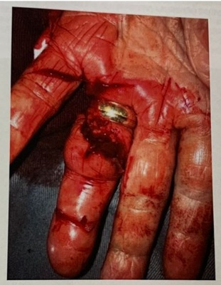
A Deve-se realizar profilaxia de tétano com vacina antitetânica, não sendo necessária administração de imunoglobulina.
B Deve-se realizar sutura primária do ferimento, uma vez que a mão é local de baixo risco de infecção pós-mordedura de animais.
C Deve-se administrar antibiótico para profilaxia de infecção da ferida, sendo a penicilina benzatina via intramuscular a medicação de escolha.
D Uma vez que a movimentação está preservada, não há necessidade de realização da radiografia de quarto quirodáctilo esquerdo.
Questão 662 · Epinef rina · 4000187465Homem de 18 anos de idade, previamente hígido, é admitido na emergência por mal-estar, rash cutâneo, vômitos, dispneia e sonolência há 30 minutos. Relata que o quadro se instalou rapidamente após ter começado a almoçar, nega quadros prévios semelhantes. Ao exame físico está corado, hidratado e sonolento, respondendo perguntas simples ao chamado. A pressão arterial era de 80x40mmHg; frequência cardíaca de 150bpm, respiratória de 28irpm e saturação de oxigênio de 94%. O exame respiratório apresentou sibilos expiratórios difusos, leve tiragem intercostal e retração de fúrcula esternal. Tinha pulsos nos, com tempo de enchimento capilar de 2 segundos. Na pele foi visto rash em face, tórax (anterior e dorso) e porção proximal de membros superiores e inferiores, como demonstrado na figura a seguir. Sem outros achados ao exame físico. Qual é a conduta imediata que deve ser adotada neste momento e, em caso de refratariedade, a conduta subsequente que deverá ser adotada?
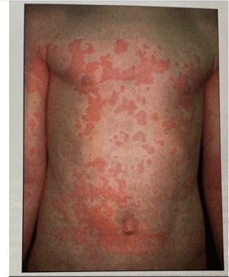
A Epinefrina 1mg endovenosa em bolus seguida de pulsoterapia com corticoide, se necessário.
B Epinefrina 0,5mg subcutânea seguida de epinefrina endovenosa em bolus, se necessário.
C Epinefrina 0,5mg intramuscular seguida de dose adicional em 5 minutos, se necessário.
D Intubação orotraqueal e epinefrina 1mg subcutânea seguidas de corticoterapia, se necessário.
Questão 663 · Choque Hipovolêmico · 4000187423Homem de 25 anos de idade é admitido no pronto-socorro, vítima de dois ferimentos por projétil de arma de fogo no tórax. Qual das alternativas abaixo sugere que ele perdeu 30% a 40% do seu volume circulante?
A FC 90b/min; PA normal; pressão de pulso normal ou aumentada; débito urinário > 30mL/h.
B FC 110b/min; PA normal; pressão de pulso reduzida; débito urinário de 20 a 30mL/h.
C FC > 120b/min; PA diminuida; pressão de pulso muito reduzida; débito urinário de 5 a 15mL/h.
D FC > 140b/min; PA muito diminuida; FR > 35i/min; débito urinário desprezível.
Questão 664 · Situações em que há restrições ao aleitamento materno · 4000187396O leite materno é a principal e melhor forma de nutrição para recém-nascidos e lactentes; no entanto, algumas condições maternas podem levar à indicação de interrupção da amamentação. Qual associação está correta quanto à doença aguda materna e o tempo de interrupção do aleitamento? Doença Materna; A. Meningite Bacteriana; B. Coqueluche; C. Citomegalovírus; D. Sarampo; Tempo de Interrupção; 1. 5 dias após início da terapia. 2. 24 a 96h após início da terapia e melhora clínica. 3. Separar mãe e RN e alimentar com leite materno ordenhado e cru. 4. Interromper, se RN menor de 1500g ou menor que 30s.
A A1 / B2 / C3 / D4
B A2 / B1 / C4 / D3
C A4 / B1 / C3 / D2
D A2 / B4 / C1 / D3
Questão 665 · Teste do coraçãozinho · 4000187395O diagnóstico precoce das cardiopatias congênitas críticas no RN é fundamental na redução da morbimortalidade dessa população. Quanto ao uxograma para a triagem (teste do coraçãozinho) definido pela Sociedade Brasileira de Pediatria em agosto de 2022, avalie as afirmações abaixo: I. Deve ser realizado entre 24-48h de vida na mão direita e em um dos membros inferiores. II. SpO₂ ≤ 89% na primeira medida é considerado positivo e deve ser seguido de investigação clínica. III. SpO₂ entre 90-94% e diferença ≤ 3% é considerado duvidoso e deve ser repetido após 1 hora, por até 3 vezes. IV. SpO₂ ≥ 95% e diferença ≥ 3% é considerado teste negativo e o RN deve fazer seguimento de rotina. É correto o que se afirma em:
A I e II, apenas
B I, III e IV, apenas
C II e III, apenas
D I, II, III e IV
Questão 666 · Neonatal · 4000187392Você atende uma criança nascida a termo, com peso adequado para a idade gestacional, sem patologias prévias e observa que ela: Fica de 4 e se arrasta sobre o abdômen. Encontra objetos parcialmente escondidos. Responde com movimentos de cabeça quando não quer algo. Dá "tchau" e beijos. Frente aos achados do desenvolvimento, qual a provável idade desta criança?
A 6 meses
B 7 meses
C 9 meses
D 12 meses
Questão 667 · Marasmo · Kwashiorkor · 4000187391Dados recentes divulgados pela Fiocruz mostraram que o Brasil registrou, em 2021, a maior taxa de hospitalizações de crianças menores de um ano associadas à desnutrição. Diante dessa informação, analise as afirmativas abaixo: I. A desnutrição primária é resultado de uma ingestão inadequada de nutrientes e a secundária relaciona-se à presença de doenças crônicas ou agudas. II. Na desnutrição tipo Marasmo, a criança apresenta escore Z de IMC < -3 e esteatose hepática. III. No Kwashiorkor há presença de edema, lesões de pele e alterações de cabelo. IV. O protocolo de tratamento da criança com desnutrição aguda grave do Ministério da Saúde deve ocorrer em 10 passos, divididos em 3 fases: estabilização, reabilitação e correção. Estão corretas as afirmativas:
A I e III, apenas
B I, II e IV, apenas
C II e III, apenas
D I, II, III e IV
Questão 668 · Desvios da Normalidade · Abordagem · 4000187390ACB, 14 anos, sexo masculino, está preocupado com o desenvolvimento dos genitais e da sua altura, pois é mais baixo que os amigos da mesma idade. Exame físico: obeso, pênis infantil, testículo com 4cm³, ausência de pelos axilares e pubianos. Apresenta idade óssea atrasada para a cronológica. A principal hipótese diagnóstica é:
A Desenvolvimento puberal normal
B Hipogonadismo hipergonadotrófico - Síndrome de Klinefelter
C Hipogonadismo hipogonadotrófico - Síndrome de Pradder-Willi
D Atraso constitucional de puberdade
Questão 669 · Prof ilaxias Ferro Vitaminas D e A · 4000187389Uma metanálise de 2021 observou a prevalência de anemia em 33% das crianças brasileiras, saudáveis e menores de sete anos. A de ciência de ferro tem repercussões importantes no desenvolvimento, que mostram a importância da prevenção e tratamento adequados. Está correto quanto à prevenção, segundo as Diretrizes da Sociedade Brasileira de Pediatria, no consenso 2021:
A Recém-nascidos prematuros, com peso inferior a 1.000g: 3mg/kg/dia de ferro, iniciando no 7° dia até 12 meses, e 2mg/kg/dia de ferro dos 12 aos 24 meses.
B Recém-nascidos a termo, peso adequado para a idade gestacional, em aleitamento materno exclusivo até o 6° mês, com fatores de risco: 2mg/kg/dia de ferro, dos 3 aos 12 meses, e 1mg/kg/dia de ferro dos 12 aos 24 meses.
C Recém-nascidos a termo, peso adequado para a idade gestacional, em aleitamento materno exclusivo até o 6º mês, sem fatores de risco: 1mg/kg/dia de ferro, dos 6 aos 24 meses.
D Recém-nascidos a termo, com peso inferior a 2.500g: 3mg/kg/dia de ferro, iniciando com 30 dias de vida até 12 meses, e 1mg/kg/dia de ferro dos 12 aos 24 meses.
Questão 670 · Principais cardiopatias congênitas · 4000187383A incorporação do sequenciamento de última geração têm aumentado a sensibilidade dos testes genéticos, possibilitando o diagnóstico precoce com perspectiva de intervenção. Sendo correto que:
A Consequentemente, a avaliação molecular passa a fazer parte da rotina de avaliação de pacientes com miocardiopatias hereditárias, tais como: miocardiopatias hipertróficas, arritmogênica dilatada e/ou restritiva e miocárdio não compactado, em função do seu potencial de fornecer aconselhamento mais individualizado e preciso aos pacientes e familiares com estas doenças.
B Consequentemente, a avaliação molecular passa a fazer parte da rotina de avaliação de pacientes com miocardiopatias não hereditárias.
C Consequentemente, a avaliação molecular não passa a fazer parte da rotina de avaliação de pacientes com miocardiopatias hereditárias, tais como: miocardiopatias hipertróficas, arritmogênica dilatada.
D Consequentemente, a avaliação molecular passa a fazer parte da rotina de avaliação de pacientes com miocardiopatias hereditárias, tais como: miocardiopatias hipertróficas, arritmogênica dilatada e/ou restritiva e miocárdio não compactado, em função de nunca fornecer aconselhamento mais individualizado e preciso aos pacientes e familiares com estas doenças.
Questão 671 · Síndrome Inf lamatória Multissistêmica · 4000187370A apresentação clínica da SIM-p pode ser confundida com sepse bacteriana, que pressupõe a introdução precoce de antibioticoterapia até confirmação do diagnóstico. A esse respeito, assinale a alternativa incorreta.
A Está indicada antibioticoterapia associada à terapia antiviral em caso de choque.
B Está indicado uso de clindamicina se a apresentação clínica inicial parecer síndrome do choque tóxico.
C Está indicada antibioticoterapia de amplo espectro para paciente com quadro de choque.
D Está indicada suspensão da antibioticoterapia após estabilização clínica e confirmação diagnóstica.
Questão 672 · Fatores de risco · 4000187363Com relação aos fatores de risco para Insuficiência Renal Aguda Neonatal, assinale a alternativa incorreta.
A Prematuridade.
B Asfixia perinatal.
C Sobrepeso ao nascer.
D Cardiopatias congênitas.
Questão 673 · Hipertermia · 4000187360Uma criança de 6 anos, internada na UTI Pediátrica após sofrer um AVC, apresenta FC de 130bpm, FR de 36irpm, PAS de 138mmHg, PAD de 82mmHg, temperatura de 38,4°C, diaforese localizada e opistótono (escore 16 na classificação de HSP). Com base nesses dados, o diagnóstico de hiperatividade simpática paroxística é:
A Improvável.
B Provável.
C Possível.
D Confirmado.
Questão 674 · Avaliação do Crescimento · 4000187359Considerando o crescimento infantil, assinale a alternativa correta.
A O crescimento normal é a progressão das mudanças na estatura e peso compatível com os padrões estabelecidos para uma determinada população.
B Em relação ao programa genético, pesquisas mostram que genes só se tornam ativos depois do primeiro ano de vida.
C As competências pediátricas em puericultura não se relacionam com o crescimento infantil.
D A avaliação, e o acompanhamento do crescimento, apesar de requerer ferramentas simples, é tarefa complexa, e o pediatra é o profissional mais capacitado para esse seguimento.
Questão 675 · Fisiopatologia · 4000187301Escolar do sexo feminino, 6 anos de idade, com antecedente de asma sem uso de corticoide inalatório, está em uma consulta de puericultura. A mãe da paciente relata que procurou atendimento no pronto-socorro duas vezes devido a desconforto respiratório, além de ter que utilizar o spray de salbutamol ao menos 4 vezes por semana nos últimos 3 meses. Relata também que o padrão de evacuação da paciente tem consistido em uma evacuação por semana, com fezes endurecidas que entopem o vaso. No momento, está em tratamento de uma terceira infecção urinária, considerando os últimos 6 meses. Ao exame físico, apresenta Índice de Massa Corporal 19,8kg/m² (escore Z entre 2+ e 3+) e escore de Tanner M3P2. Na ausculta pulmonar, apresenta sibilos expiratórios bilaterais. Ausculta cardíaca normal. Qual das comorbidades apresentadas pela paciente, quando tratada, reduziria a frequência de infecções urinárias?
A Obesidade
B Asma
C Constipação
D Puberdade precoce
Questão 676 · Manobra do Desengasgo · 4000187299Você está de plantão e recebe uma criança de 6 meses de idade, que engoliu um dos pequenos brinquedos da unidade. A criança apresenta tosse importante, com tiragem de fúrcula e subcostal e uso de musculatura acessória. Após um período, a criança para de emitir som, mas permanece vigil e muito chorosa durante a avaliação. Qual é a conduta a seguir?
A Sentar, posicionar o lactente em um dos antebraços, apoiado sobre a coxa, e aplicar cinco golpes entre as escápulas. Em seguida, vire a criança e aplique cinco compressões torácicas na região intermamilar até a expulsão do objeto.
B Sentar, posicionar o lactente em um dos antebraços, apoiado sobre a coxa, e aplicar cinco compressões torácicas na região intermamilar. Em seguida, vire a criança e aplique cinco golpes entre as escápulas até a expulsão do objeto.
C Checar pulso; se ausente, iniciar manobras de ressuscitação cardiopulmonar utilizando a técnica dos dois dedos, no centro do tórax, logo abaixo da linha mamilar.
D Iniciar a ventilação de resgate boca-boca/nariz até a expulsão do objeto.
Questão 677 · Tratamento · 4000187298Lactente de 12 dias de vida comparece à primeira consulta de seguimento. Nos antecedentes pré-natais, a mãe apresentou IgM e IgG reagentes para Toxoplasma gondii no terceiro trimestre da gestação. Inicialmente ambos eram não-reagentes, evoluindo com elevação progressiva dos títulos nos exames subsequentes e fazendo uso de espiramicina até o m da gestação. Os demais exames laboratoriais ou ultrassonogra as estavam normais. O recém-nascido nasceu de parto vaginal, a termo, com peso adequado, sem intercorrências. Na investigação complementar, evidencia-se retinocoroidite ativa ao exame oftalmológico e o resultado da sorologia coletada com 5 dias de vida mostra IgM e IgG reagentes para Toxoplasma gondii. Foram excluídas outras infecções congênitas. Considerando a história clínica e o diagnóstico da criança, qual é o esquema terapêutico a ser iniciado e qual é a alteração laboratorial mais associada com esse esquema?
A Esquema com sulfadiazina, pirimetamina e ácido folínico. Anemia.
B Esquema com sulfadiazina, pirimetamina e ácido folínico. Neutropenia.
C Esquema com sulfadiazina, pirimetamina, ácido folínico e prednisona/prednisolona. Anemia.
D Esquema com sulfadiazina, pirimetamina, ácido folínico e prednisona/prednisolona. Neutropenia.
Questão 678 · Passos iniciais · 4000187296Gestante é admitida na emergência da maternidade em trabalho de parto, com relato de sangramento transvaginal, dor abdominal e início de contrações após queda da própria altura há 2 horas. Ao chegar à sala de parto, o obstetra informa que a idade gestacional estimada é de 32 semanas e a ultrassonogra a de urgência evidenciou área extensa de descolamento da placenta. Realizada cesárea de urgência. Logo após extração completa do concepto, foi submetido a avaliação, com presença de movimentos respiratórios e tônus. Assinale a alternativa que apresenta a sequência correta para estabilização do recém-nascido nesta situação:
A Clampeamento imediato do cordão. Envolver em campos aquecidos e posicionar em fonte de calor radiante. Introduzir o corpo em saco plástico e touca dupla na cabeça. Posicionar a cabeça em leve extensão e aspirar boca e narinas, se excesso de secreção. Avaliar respiração, frequência cardíaca e saturação.
B Clampeamento tardio do cordão. Introduzir o corpo em saco plástico e touca dupla na cabeça. Envolver em campos aquecidos e posicionar em fonte de calor radiante. Avaliar respiração, frequência cardíaca e saturação. Posicionar a cabeça em leve extensão e aspirar boca e narinas sempre, para permeabilizar a via aérea.
C Clampeamento tardio do cordão. Envolver em campos aquecidos e posicionar em fonte de calor radiante. Introduzir o corpo em saco plástico e touca dupla na cabeça. Posicionar a cabeça em leve extensão e aspirar boca e narinas, se excesso de secreção. Avaliar respiração, frequência cardíaca e saturação.
D Clampeamento imediato do cordão. Envolver em campos aquecidos e introduzir o corpo em saco plástico e touca dupla na cabeça. Posicionar em fonte de calor radiante. Avaliar respiração, frequência cardíaca e saturação. Posicionar a cabeça em leve extensão e aspirar boca e narinas sempre, para permeabilizar a via aérea.
Questão 679 · 12 meses · 4000187295Você avalia um lactente de 11 meses de idade trazido por familiar que não convive muito com a criança e não sabe relatar os marcos de desenvolvimento. Qual característica seria esperada de um desenvolvimento adequado nesta idade?
A Sentar sem apoio.
B Brincar de esconde-achou.
C Mostrar o que quer.
D Produzir "jargão".
Questão 680 · Vacina oral contra poliomielite · Vacina inativada contra poliomielite · 4000187294No dia 05 de outubro de 2022, a Secretaria de Saúde do Pará divulgou um comunicado acerca de um caso de Paralisia Flácida Aguda (PFA) em uma criança de 3 anos de idade, residente no interior do estado. O caso teria ocorrido após a administração da Vacina Oral Poliomielite (VOP), com identi cação do vírus vacinal nas fezes do paciente. Diante do caso amplamente divulgado pelos meios de comunicação brasileiros associado à queda da cobertura vacinal para a poliomielite em diversas regiões, analise as a rmativas abaixo sobre as vacinas disponíveis no Programa Nacional de Imunizações (PNI) 2022 contra a referida doença, assinalando- as em verdadeira (V) ou falsa (F) e indicando o item com a ordem correta: ( ) No Brasil, a Vacina Oral Poliomielite (VOP) tem sido utilizada rotineiramente desde 1962. Entretanto, altas coberturas vacinais só foram obtidas a partir de 1980, quando foram instituídos os Dias Nacionais de Vacinação. Desde 2012, o país optou por iniciar o esquema com a Vacina Inativa Poliomielite (VIP), sendo atualmente administrada aos dois e quatro meses com intervalo de 60 dias, completando o esquema de vacinação com a vacina VOP. ( ) A VIP é trivalente e contém os vírus da poliomielite dos tipos 1, 2, e 3, obtidos em cultura celular e inativados por formaldeído. O PNI recomenda a vacinação de crianças a partir de 2 meses até menores de 5 anos de idade, como doses do esquema básico. ( ) A vacina inativa atual é de alta potência, sendo eficaz e segura e não provocando poliomielite vacinal. Por estimular baixa imunidade intestinal (imunidade de mucosa), não impede a circulação do vírus selvagem por via intestinal, não protegendo os comunicantes dos vacinados. ( ) A VIP induz níveis adequados de anticorpos séricos, comparáveis aos induzidos pela VOP, em pe s s oa s assintomáticas infectadas pelo HIV. Há evidências, contudo, de que o risco de poliomielite associada à vacina seja maior em pessoas que vivem com HIV/aids; sendo assim, indica-se a vacina inativada em todo o esquema no lugar da vacina atenuada para esses pacientes. ( ) A vacina VIP é administrada por via intramuscular. A via subcutânea também pode ser usada, mas e m situações especiais (casos de discrasias sanguíneas). É contraindicação à VIP a reação grave à dose anterior ou a anafilaxia a algum componente da vacina, embora sejam raros os casos.
A V - V - F - V - F
B F - V - V - F - V
C F - F - V - F - V
D F - V - F - V - V
Questão 681 · Plano A · 4000187293Você atende um pré-escolar de 4 anos de idade com relato de múltiplas evacuações líquidas de odor fétido, com coloração amarela e sem presença de sangue ou catarro. O quadro começou na madrugada do dia anterior, associado a vômito e baixa aceitação de alimentos sólidos, com boa aceitação de líquidos. Ao exame, a paciente encontra-se alerta e orientada, mucosa oral com saliva uida, extremidades com pulsos cheios e simétricos, tempo de enchimento capilar de 2 segundos. Qual é a conduta a seguir?
A Recomendar maior ingesta de líquidos e, após cada evacuação diarreica, oferecer soro de reidratação oral 100-200mL. Iniciar suplementação com zinco e orientar sinais de alarme.
B Recomendar maior ingesta de líquidos e, após cada evacuação diarreica, oferecer soro de reidratação oral 50mL. Iniciar suplementação com zinco e orientar sinais de alarme.
C Pesar a criança e iniciar terapia de reidratação oral supervisionada na unidade.
D Pesar a criança e realizar expansão volêmica com soro fisiológico imediatamente.
Questão 682 · Gráf icos OMS Classif icação nutricional · 4000187292Escolar do sexo feminino de 6 anos de idade comparece à consulta de rotina. A mãe nega queixas ou comorbidades. Apresenta caderneta de vacinas atualizadas e desenvolvimento adequado para a idade. Quanto à alimentação, consta o seguinte diário alimentar: - Café da manhã: leite de vaca integral e achocolatado, pão francês com queijo muçarela e margarina. - Lanche: biscoito de polvilho industrializado. - Almoço: arroz, feijão, batata, macarrão, carne/frango/ovo, suco em pó. - Lanche da tarde: iogurte industrializado, tapioca com queijo e ovo. - Jantar: pizza ou hambúrguer congelados, pão com mortadela. Chocolates de sobremesa. - Ceia: 1 copo de leite de vaca integral e achocolatado. Antropometria: peso 26,5kg (entre Z score +1 e +2); altura 120cm (entre Z score 0 e +1); índice de massa corporal 18,4kg/m² (Z score entre +2 e +3). O restante do exame físico está normal. Em relação ao caso apresentado, assinale a alternativa que apresenta o diagnóstico nutricional do paciente e a correta relação entre alimento e seu respectivo grupo, de acordo com a Classi cação NOVA, proposta pelo Guia Alimentar para a População Brasileira, 2014:
A Sobrepeso. Suco em pó - ultraprocessado.
B Sobrepeso. Mortadela - ultraprocessado.
C Obesidade. Leite de vaca integral - minimamente processado.
D Obesidade. Biscoito de polvilho - processado.
Questão 683 · Quadro clínico · 4000187291Pré-escolar de 3 anos de idade é levado à emergência por aparecimento de mancha avermelhada nas bochechas há 3 dias. Hoje apresentou lesões semelhantes nos membros e estava com di culdade para deambular. A mãe nega febre. Ao exame clínico, nota-se exantema maculopapular con uente com coloração vermelho-rubra nas regiões zigomáticas, poupando região perioral, nariz e fronte, e exantema rendilhado em face extensora de membros superiores e inferiores. Restante do exame físico sem alterações. Qual é o diagnóstico do paciente?
A Sarampo
B Rubéola
C Escarlatina
D Eritema infeccioso
Questão 684 · Agente etiológico e f isiopatologia · Quadro clínico · 4000187290Pré-escolar de 3 anos de idade é levado à emergência por aparecimento de mancha avermelhada nas bochechas há 3 dias. Hoje apresentou lesões semelhantes nos membros e estava com di culdade para deambular. A mãe nega febre. Ao exame clínico, nota-se exantema maculopapular con uente com coloração vermelho-rubra nas regiões zigomáticas, poupando região perioral, nariz e fronte, e exantema rendilhado em face extensora de membros superiores e inferiores. Restante do exame físico sem alterações. Qual é o agente etiológico causador da doença?
A Paramixovírus
B Parvovírus B19
C Streptococcus hemolítico do grupo A
D Togavírus
Questão 685 · Tratamento · 4000187284Criança do sexo masculino de 1 ano de idade apresenta tosse e coriza há 3 dias, evoluindo com desconforto respiratório e baixa aceitação alimentar há 1 dia. Os familiares negam episódios prévios semelhantes. À admissão na emergência, apresenta tiragem subcostal moderada, tiragem intercostal leve, frequência respiratória 52irpm, frequência cardíaca 136bpm e saturação de oxigênio 93% em ar ambiente. À ausculta pulmonar, apresenta murmúrios vesiculares presentes com sibilos expiratórios difusos. Qual é o tratamento que deve ser instituído a seguir?
A Hidratação endovenosa
B Salbutamol inalatório
C Dexametasona endovenosa
D Palivizumabe endovenoso
Questão 686 · Teste do coraçãozinho · 4000187281Recém-nascido de 37 semanas de idade gestacional é submetido ao teste do coraçãozinho com 30 horas de vida. O resultado de saturação de oxigênio no membro superior direito foi 94%, e no membro inferior esquerdo 91%. Diante do resultado da triagem, qual é a conduta?
A Teste duvidoso. Aquecer o recém-nascido e realizar nova aferição de saturação nos membros superior e inferior direitos em 1 hora.
B Teste positivo. Solicitar ecocardiograma na urgência para avaliação complementar.
C Teste duvidoso. Aquecer o recém-nascido e realizar nova aferição de saturação em membros em 1 hora.
D Teste negativo. Não há necessidade de avaliação complementar, deve-se manter seguimento neonatal de rotina.
Questão 687 · Situações em que há restrições ao aleitamento materno · 4000187277Você trabalha em uma Unidade Básica de Saúde e atende uma gestante em consulta pré-natal. Durante o atendimento, você verifica que a paciente apresenta uma contraindicação ao aleitamento materno. Assinale a alternativa que apresenta uma contraindicação:
A Uso de paroxetina por depressão.
B Uso de amiodarona por fibrilação atrial.
C Diagnóstico de hanseníase.
D Diagnóstico de hepatite B.
Questão 688 · Tratamento de Manutenção · 4000187262A introdução de medicação diária para o controle da asma é definida pela intensidade e pela frequência dos sintomas e pelo risco de exacerbações. De modo geral, sobre o início do tratamento de controle, em crianças entre 6 e 11 anos de idade, assinale a alternativa incorreta.
A Sintomas diurnos semanais e despertares noturnos mensais.
B Presença de exacerbações com uso de medicação de resgate frequente.
C Limitação de atividade pela doença.
D Presença de declínio de função pulmonar.
Questão 689 · Puberdade Precoce · 4000187259Com quais idades considera-se puberdade precoce em meninos e meninas?
A Entre 8 e 13 anos nas meninas e entre 9 e 14 anos nos meninos.
B Entre 6 e 8 anos nas meninas e entre 7 e 9 anos nos meninos.
C Antes dos 8 anos em meninas e 9 anos em meninos.
D Antes de 9 anos em meninas e 11 anos em meninos.
Questão 690 · Fisiologia da Puberdade · 4000187258Em relação à puberdade em meninos e meninas assinale a alternativa correta.
A Em meninas, o início da puberdade é marcado pela menarca.
B A puberdade inicia-se entre 8 e 13 anos nas meninas e entre 9 e 14 anos nos meninos.
C Em meninos, o início da puberdade é marcado por pelos corporais generalizados.
D A puberdade precoce sempre vai ser central.
Questão 691 · Ginecomastia puberal · 4000187257Um adolescente de 13 anos de idade, sexo masculino, relata o aumento da mama direita há 6 meses. Ao exame físico apresenta tecido mamário subareolar palpável bilateralmente, testículos com 10ml e pelos axilares, com pelos pubianos e genitália no estágio 3 de Tanner. Qual a conduta mais indicada nesse momento?
A Acompanhamento clínico.
B Cirurgia para remoção das mamas.
C Tratamento com inibidores de aromatase.
D Tratamento com antagonistas de estrogênio.
Questão 692 · Puberdade Precoce Perif érica · 4000187256Um dado do exame físico que levanta a suspeita de puberdade precoce periférica em um menino de 4 anos com virilização é a presença de:
A Pubarca
B Ginecomastia
C Quadro neurológico
D Testículos de volume infantil
Questão 693 · Maturação sexual no sexo masculino · 4000187255Um menino apresenta aumento de pênis em seu comprimento, testículos com 10cc, pelos escuros, grossos e crespos no saco escrotal e na linha média acima de pênis, bem como pelos nos acima do lábio superior, acne, mudança da voz e início do estirão puberal. Qual é a classificação de Tanner para seu estágio puberal?
A G3P3
B G2P2
C G4P3
D G3P2
Questão 694 · Tratamento · Doença de Hirschsprung · 4000187247A conduta mais adequada para este quadro é:
A Cirurgia de emergência.
B Correção de distúrbios hidroeletrolíticos e ácido-base, e cirurgia de urgência assim que estabilização clínico-laboratorial.
C Redução hidrostática ou pneumática.
D Correção de distúrbios hidroeletrolíticos e ácido-base e redução do volume da dieta em 30%, inibidor de bomba de prótons e reavaliação em 1 semana.
Questão 695 · Apresentação Clínica · Doença de Hirschsprung · 4000187246Paciente masculino, 3 meses de vida, portador de trissomia do cromossomo 21, cardiopata, é trazido pela mãe em consulta devido ao quadro de constipação intestinal. Relata que desde o nascimento necessita de uso de supositório diários para evacuações efetivas. Apresentou eliminação de mecônio aos 4 dias de vida, após estímulo retal. Já fez uso de inúmeras fórmulas lácteas, sem sucesso. Nega febre, perda ponderal. Nega vômitos. Nega queda do estado geral. Nega outras queixas. Ao exame físico: bom estado geral, estável, corado, hidratado. Abdome ácido, indolor, sem massas palpáveis, sem sinais de irritação peritoneal. Toque retal com saída de grande quantidade de fezes após manipulação. Para a investigação, foi solicitado exame contrastado abaixo, e realizado biopsia retal. A principal hipótese diagnóstica é:
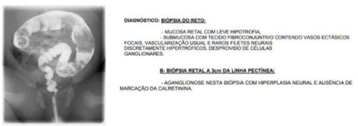
A Displasia neuronal do tipo B.
B Constipação funcional.
C Doença de Hirschsprung.
D Enterocolite necrotizante.
Questão 696 · Diagnóstico · 4000187219A rotina radiográ ca básica em pacientes com suspeita de tuberculose inclui o uso das incidências posteroanteriores e perfil esquerdo.
A A radiografia apicolordótica (incidência de Fleischner) poderá complementar a rotina nos casos em que há dúvidas na interpretação dos ápices pulmonares.
B A radiografia apicolordótica (incidência de Fleischner) nunca poderá complementar a rotina nos casos em que há dúvidas na interpretação dos ápices pulmonares.
C A radiografia apicolordótica (incidência de Fleischner) poderá complementar a rotina, mas não nos casos em que há dúvidas na interpretação dos ápices pulmonares.
D A radiografia apicolordótica (incidência de Fleischner) poderá complementar a rotina nos casos em que há dúvidas na interpretação das bases pulmonares.
Revisar: possível letra faltando em enunciado
Questão 697 · Filhos de mães com hepatite B · Transmissão vertical · 4000187192A transmissão vertical (de mãe para lho) também é causa frequente de disseminação do HBV em regiões de alta endemicidade. Sendo correto que:
A Outros líquidos orgânicos, como sêmen, secreção vaginal e leite materno podem igualmente conter o vírus e constituir fontes de infecção.
B Outros líquidos orgânicos, como sêmen, secreção vaginal e leite materno podem igualmente conter o vírus e não podem constituir fontes de infecção.
C Outros líquidos orgânicos, como sêmen, secreção vaginal e não o leite materno podem igualmente conter o vírus e constituir fontes de infecção.
D Outros líquidos orgânicos, como sêmen, secreção vaginal e leite materno não podem conter o vírus e assim não constituir fontes de infecção.
Questão 698 · Fisiopatologia · 4000187187Sobre o diagnóstico de choque séptico em pediatria, assinale a alternativa incorreta.
A Deve ser estabelecido com base na presença de história sugestiva de infecção, exame físico em que se observa alteração de temperatura (hipo ou hipertermia) e sinais clínicos de perfusão inadequada.
B Um dos sinais clínicos de perfusão inadequada é pele marmórea e pálida, com extremidades frias.
C A hipotensão não é necessária para o diagnóstico clínico do choque séptico e pode ser manifestação tardia.
D A alteração do nível de consciência não é considerada um sinal clínico de perfusão inadequada.
Questão 699 · Agentes etiológicos · 4000187184Considerando as vacinas e outras terapêuticas preventivas disponíveis para agentes virais, indique em qual(is) agente(s) houve maior impacto epidemiológico em relação à frequência de pneumonias e às doenças invasivas em lactentes:
A VRS.
B Streptococcus pneumoniae e Haemophilus influenzae tipo B.
C Bordetella pertussis.
D Vírus da gripe influenza H1N1.
Questão 700 · Asf ixia perinatal · 4000187183Assinale a alternativa correta sobre a Cianose.
A As avaliações após intervenções apresentam pouca eficácia no controle e progresso do tratamento de cianose.
B O tratamento efetivo da cianose independe do tratamento efetivo da sua causa.
C O teste de hiperoxia é o exame complementar específico para cianose.
D No manejo da cianose deve ser seguido o algoritmo de abordagem sistemática do SAVP, avaliando vais aéreas, circulação e respiração, intervindo em cada etapa de forma eficaz.
Questão 701 · Introdução · Fisiopatologia · 4000187177Todas as alternativas abaixo são fatores que contribuíram para o aumento de casos de dispepsia na população pediátrica, exceto:
A Uso mais frequente de anti-inflamatórios e corticosteroides.
B Baixo peso corporal.
C Erros alimentares.
D Transtornos psicológicos e psiquiátricos.
Questão 702 · Sarampo · Rubéola · 4000187176Qual é a eficácia da vacina contra sarampo e rubéola?
A Quando administrada em duas doses, após 1 ano de idade, e com intervalo mínimo de 1 mês entre elas, é superior a 99%.
B Quando aplicada aos 9 meses de idade, é aproximadamente 95%.
C Quando administrada em dose única, é superior a 99%.
D Quando administrada após 1 ano de idade, é superior a 95%.
Questão 703 · Gráf icos OMS Classif icação nutricional · 4000187175Um paciente com 18 anos de idade com IMC no escore Z de -2 é classificado como:
A Muito baixo peso.
B Baixo peso.
C Sobrepeso.
D Peso adequado.
Questão 704 · Introdução · PneumoniasBroncopneumonias BCP na Inf ância · 4000187174Assinale a alternativa incorreta sobre as pneumonias na primeira infância.
A As pneumonias, frequentemente, são precedidas de uma infecção viral de vais aéreas superiores.
B A principal complicação da pneumonia necrosante são os derrames parapneumônicos.
C As pneumonias agudas, no Brasil, são responsáveis por 40% das mortes de crianças com idade inferior a 1 ano.
D As bactérias representam a principal causa de pneumonia em pacientes neonatos.
Questão 705 · Complicações · 4000187172Paciente de 7 anos é internado devido à síndrome respiratória aguda grave devido à pneumonia da comunidade. Após 5 dias de tratamento em regime hospitalar apresenta piora da dispneia, queda de saturação e piora da tosse. Exames séricos não evidenciaram piora. Foi realizado a radiogra a de tórax abaixo. Diante do quadro clínico, a piora clínica se associa à (ao):
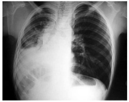
A Atelectasia.
B Derrame pleural.
C Pneumotórax.
D Hidropneumotórax.
Questão 706 · Alimentação saudável e prevenção de doenças · 4000187135As principais carnes consumidas são de boi, frango e suínos, e, do ponto de vista nutricional:
A Não são importantes fontes de proteínas de alto valor biológico, fornecendo todos os aminoácidos essenciais, vitaminas e minerais.
B São importantes fontes de proteínas de alto valor biológico, fornecendo todos os aminoácidos essenciais, vitaminas e não minerais.
C São importantes fontes de proteínas sem valor biológico, fornecendo todos os aminoácidos essenciais, vitaminas e minerais.
D São importantes fontes de proteínas de alto valor biológico, fornecendo todos os aminoácidos essenciais, vitaminas e minerais.
Questão 707 · Diagnóstico · 4000187102Sobre os exames necessários para o diagnóstico de Urticária Aguda, assinale a alternativa correta.
A Hemograma completo e radiografia de tórax.
B Não há necessidade de exames.
C PCR e teste rápido para estreptococos.
D Sedimento urinário e VHS.
Questão 708 · Causas · 4000187099Assinale a alternativa que apresenta dados importantes para diferenciar as causas de puberdade atrasada.
A LH e FSH.
B Idade.
C Previsão de estatura final.
D Idade óssea.
Questão 709 · Neuropediatria · Eletroencef alograma · 4000187098Assinale a alternativa que apresenta o caso em que é indicado o ECG na investigação de encefalite aguda.
A Na suspeita de infecção por Sars-cov-2.
B Em criança com alteração do estado mental inexplicável.
C Na ausência de estados epilépticos.
D Em casos de encefalites virais comprovadas.
Questão 710 · Situações em que há restrições ao aleitamento materno · 4000187090No Brasil, o Ministério da Saúde não recomenda que mães HIV amamentem. Analisando a Transmissão materna podemos afirmar que:
A O hiv pode ser transmitido de mãe para filho por via transplacentária/ leito materno, exclusivo.
B O tratamento antiretroviral para mãehiv atualmente mais recomendado é o tenofovir/lamivudina e efavirenz.
C Reduzimos a transmissão tratando as mães positivas para HIV com antiretrovirais durante a gestação, o trabalho de parto e no pós parto com as orientações do aleitamento.
D Sem tratamento, o risco de transmissão ao nascimento é cerca de 40 a 55%.
Questão 711 · Fisiologia da Puberdade · 4000187088Qual a idade limite superior da normalidade para o início da puberdade em meninos?
A 12 anos.
B 13 anos.
C 15 anos.
D 14 anos.
Questão 712 · Escarlatina · 4000187080Assinale a alternativa incorreta sobre a escarlatina.
A O diagnóstico nas unidades de pronto-atendimento pediátrico ocorre a partir de testes antigênicos rápidos de identificação de S. pyogenes (comumente chamados de strep test) e cultura de orofaringe.
B O tratamento da escarlatina e da faringoamigdalite causadas pelo Streptococos do grupo A (SGA) é composto essencialmente por sintomáticos e amoxicilina, administrada durante 10 dias.
C As cefalosporinas (como a cefalexina) são a principal alternativa para reações alérgicas leves à penicilina.
D O S. pyogenes tem apresentado taxas crescentes de resistência aos macrolídeos, portanto essa classe de antibióticos deve ser prescrita exclusivamente aos pacientes com anafilaxia ou outras reações graves a beta lactâmicos comprovados.
Questão 713 · Síndromes urticarif ormes · Urticária · 4000187078Assinale a alternativa incorreta sobre a Urticária Aguda.
A A urticária é uma das doenças de pele mais comum em todas as faixas etárias.
B A urticária aguda pode ser uma das manifestações clínicas em episódios de anafilaxia, estando presente em 80% a 90% dos casos.
C Os corticoides tópicos têm eficácia na urticária.
D A maioria dos casos de urticária aguda é transitória e se resolve sem sequelas.
Questão 714 · Prevenção · Tratamento · Diagnóstico · 4000187021Entre crianças e adolescentes, era esperada uma prevenção do ganho excessivo de peso justamente porque a fase de crescimento necessita de energia extra, ao mesmo tempo em que a possibilidade de gasto de energia é maior em relação às outras fases da vida.
A Esses possíveis facilitadores, porém, parecem suplantar os fatores associados à obesidade e aos responsáveis pelo crescimento dessa epidemia também nessas faixas etárias e fases de vida.
B Esses possíveis facilitadores, porém, parecem não suplantar os fatores associados à obesidade e aos responsáveis pela redução dessa epidemia também nessas faixas etárias e fases de vida.
C Esses possíveis facilitadores, porém, parecem não suplantar os fatores associados à obesidade e aos responsáveis pelo crescimento dessa epidemia também nessas faixas etárias e fases de vida.
D Esses possíveis facilitadores, porém, parecem sempre suplantar os fatores associados à obesidade e aos responsáveis pelo crescimento dessa epidemia também nessas faixas etárias e fases de vida.
Questão 715 · Drogas Modif icadoras de Doença · 4000186977De maneira geral, os medicamentos modi cadores do curso da doença (MMCD) biológicos da Artrite Reumatoide:
A Reduzem a inflamação articular, o dano estrutural e a incapacidade funcional e melhoram a qualidade de vida e, possivelmente e a fadiga.
B Não reduzem a inflamação articular, o dano estrutural e a incapacidade funcional e melhoram a qualidade de vida e, possivelmente e a fadiga.
C Reduzem a inflamação articular, o dano estrutural e a incapacidade funcional e não melhoram a qualidade de vida e, possivelmente e a fadiga.
D Reduzem a inflamação articular, mas não o dano estrutural e a incapacidade funcional e melhoram a qualidade de vida e, possivelmente e a fadiga.
Questão 716 · Amamentação e uso de medicações e outras substâncias · 4000186964Situações em que há restrições ao aleitamento materno Sobre o aleitamento materno podemos afirmar:
A Na galactosemia clássica algum leite materno é possível, desde que com monitoramento.
B Recém-nascidos com menos de 1500g devem receber leite em fórmulas preferencialmente.
C A doença da urina de xarope do bordo (Leucinose) não contraindica a amamentação.
D Na presença de abscesso mamário a mama não afetada também não deve amamentar.
E Em caso de consumo de drogas de abuso, as mães devem ser encorajada a não consumir as seguintes drogas e ser apoiadas a pararem o consumo: nicotina, álcool, ecstasy, anfetaminas, cocaína e outros estimulantes.
Questão 717 · Prevenção e promoção de saúde nos adolescentes · Fatores que inf luenciam o crescimento · 4000186963Sobre as principais condições associadas ao dé cit de crescimento na faixa etária de 10 a 16 anos, encontram-se as causas abaixo, EXCETO:
A Síndrome de Munchausen por procuração;
B Ingestão alimentar insuficiente
C Doença Celíaca
D Fibrose Cística
E Giardíase e outras infecções intestinais crônicas.
Questão 718 · Anemia f erropriva na inf ância · Particularidades na inf ância · 4000186961Classif icação das anemias Foco na f erropriva Assinale a alternativa INCORRETA sobre a Deficiência de ferro e anemia na criança:
A A anemia é o estágio final da deficiência de ferro. O primeiro estágio é caracterizado pela depleção das reservas de ferro.
B No primeiro estágio o aporte de ferro é insuficiente para suprir a demanda, levando à redução dos depósitos de ferro na medula óssea, no baço e no fígado.
C No segundo estágio, onde há deficiência de ferro sem anemia, surgem alterações bioquímicas e/ou clínicas.
D O terceiro estágio somente se manifesta quando a deficiência de ferro é suficientemente importante e prolongada.
E Em populações com prevalência de anemia excedendo 40%, virtualmente toda a população da mesma faixa etária e sexo tem anemia por outras causas, não ferropriva.
Questão 719 · Crescimento · 4000186960Considerando o crescimento infantil, assinale a alternativa correta.
A A avaliação, e o acompanhamento do crescimento, apesar de requerer ferramentas simples, é tarefa complexa, e o pediatra é o profissional mais capacitado para esse seguimento.
B O crescimento normal é a progressão das mudanças na estatura e peso compatível com os padrões estabelecidos para uma determinada população.
C Em relação ao programa genético, pesquisas mostram que genes só se tornam ativos depois do primeiro ano de vida.
D As competências pediátricas em puericultura não se relacionam com o crescimento infantil.
Questão 720 · Tratamento · Diagnóstico · 4000186954Uma criança de 9 meses chega à Unidade Básica de Saúde para uma consulta de puericultura com um hemograma que foi solicitado pelo médico, pois ela nasceu com baixo peso e está em aleitamento arti cial. O resultado da hemoglobina foi de 9g/dL e CHCM 30g/dL. Neste caso, o Médico de Família e Comunidade (MFC) deve:
A Orientar a mãe que este é um valor normal.
B Encaminhar esta criança para transfusão.
C prescrever sulfato ferroso na dose máxima para tratamento imediato, juntamente com o leite para melhorar sua absorção.
D iniciar o tratamento com sulfato ferroso, de forma gradual, 1 (uma) hora antes das refeições.
E encaminhar para o hematologista, pois a criança apresenta anemia falciforme.
Questão 721 · Comunicação interventricular · 4000186932A comunicação interventricular (CIV) é a cardiopatia congênita mais frequente na prática clínica, e pode estar associada com vários aspectos. Assinale a opção CORRETA:
A Quando apresenta repercussão hemodinâmica, uma das complicações, que pode ser evolutiva e grave, é a hipertensão arterial pulmonar.
B O sopro diastólico na área mitral, audível naquelas que têm maior diâmetro, é um indicativo clínico de melhor prognóstico, pois denota que não há um volume de retorno pulmonar significativo.
C Todas as CIVs têm indicação de fechamento, pois mesmo as mínimas podem determinar complicações graves em longo prazo, mesmo que sejam apicais.
D O sopro característico das CIVs pequenas ou mínimas já é audível imediatamente ao nascimento, já na sala de parto, o que facilita o diagnóstico.
E A segunda bulha hiperfonética na área pulmonar, em recém-nascidos e lactentes, é um sinal clínico de má-posição dos grandes vasos, associado com a CIV.
Questão 722 · Teste do pezinho · 4000186931Um recém nascido apresenta o resultado FAS no exame de triagem neonatal biológico. Qual o diagnóstico:
A traço falciforme
B S Beta talassemia
C anemia falciforme
D padrão normal
E hemoglobinopatia SC
Questão 723 · Massagem cardíaca · Ventilação com pressão positiva · Intubação orotraqueal · 4000186929Gestação de 36 semanas evolui para trabalho de parto. Após amniorrexe espontânea foi observado hemoâmnio e indicado parto cesárea. Recém nascido trazido ao berço devido a hipotonia e apnéia. Após os passos iniciais foi realizado ventilação com balão e máscara em ar ambiente por 30 segundos e com oxigênio titulado até 60%, além de revisada a técnica de ventilação. Como não houve melhora da FC e da respiração optou-se pela intubação orotraqueal. Após 30 seg foi revisada a técnica de ventilação e verificada a posição correta da cânula, entretanto o RN permanecia em apnéia e com FC 50. Segundo recomendações atuais, assinale a conduta imediata mais adequada:
A iniciar massagem cardíaca sincronizada com ventilação com fiO₂ 100% por 60 seg
B aumentar a fi0₂ para 100% e realizar 40 a 60 ventilações por min por 30 seg
C administrar atropina iv na dose de 0,1mg/kg
D aguardar a leitura da oximetria de pulso para avaliar a FC
E administrar adrenalina iv na dose de 0,01mg/kg
Questão 724 · Fatores de risco para hiperbilirrubinemia · Hiperbilirrubinemia não f isiológica · 4000186924Recém-nascido com 40 semanas de idade gestacional, nasceu pesando 3,450g. Com 15h de vida está em alojamento conjunto em aleitamento materno sob livre demanda e boa aceitação, diurese clara, evacuação normal meconial e apresenta icterícia moderada até a região umbilical. A causa a ser investigada inicialmente será:
A icterícia fisiológica
B icterícia do leite materno
C icterícia de causa hemolítica
D infecções congênitas
E sepse neonatal
Questão 725 · Distúrbios do Cálcio · Distúrbios da glicose · Fatores de risco · 4000186922Recém nascido masculino, no 2º dia de vida apresenta quadro de tremores em membros superiores sem outros sintomas associados. Recém nascido a termo adequado para a idade gestacional, mãe tercigesta, realizou 12 consultas de pré natal, onde teve o diagnóstico de diabetes gestacional. Nasceu de parto vaginal sem intercorrências, PN =3120g, apgar 9/10. Glicemia capilar no momento: 52 mg/dl. Está indicado:
A obter glicemia plasmática pois o valor da glicemia capilar não é confiável nesta idade.
B iniciar complementação via oral com fórmula láctea adequada para a idade.
C obter acesso venoso para administrar soro glicosado a 10% em bolus na dose de 2 a 4 ml/kg.
D ampliar a investigação, com a dosagem de eletrólitos, incluindo cálcio e magnésio.
E orientar a mãe a aumentar a ingesta pessoal de carboidratos em sua dieta.
Questão 726 · Diagnóstico · Distúrbios respiratórios do período neonatal · 4000186920Após parto cesárea, RN com 35 semanas de idade gestacional necessita de ventilação com pressão positiva na sala de parto. Com 30 min de vida apresenta FR de 80 irpm, tiragem intercostal e batimento de aletas nasais. A etiopatogenia mais provável do quadro clínico e o tratamento para estabilização do paciente são, respectivamente:
A deficiência e inativação do surfactante pulmonar, administração do surfactante
B aspiração meconial, Cpap nasal
C retardo da absorção do líquido pulmonar, Cpap nasal
D pneumotórax, oxigênio inalatório
E atelectasia pulmonar, intubação orotraqueal
Questão 727 · Convulsão f ebril · 4000186915O que se pode afirmar em relação às convulsões febris?
A São crises convulsivas periódicas sendo mais frequentes na faixa etária de 12 a 18 meses, provocada por febre baixa, e geralmente surgem após as 24h, de origem extra neurológica em crianças que nunca tiveram convulsão em apirexia.
B São crises convulsivas ocasionais, sendo mais frequente em crianças do sexo feminino na faixa etária de 1 a 36 meses, provocada por febre de origem extraneurológica em crianças que já tiveram convulsão em apirexia.
C São crises convulsivas periódicas, sendo mais frequente na faixa etária de acima 36 meses, provocada por febre de origem extra neurológica, na dependência de susceptibilidade individual não determinada geneticamente.
D São crises convulsivas ocasionais, que podem ocorrer de 6 meses a 5 anos de idade mais frequente na faixa etária de 12 a 18 meses, provocada por febre de origem extraneurológica em crianças que nunca tiveram convulsão em apirexia.
E São crises convulsivas ocasionais, sendo mais frequente em crianças do sexo feminino, iniciadas na faixa etária de 2 a 36 meses, provocada por febre de origem extraneurológica em crianças que já tiveram convulsão em apirexia.
Questão 728 · Etiologia · Quadro clínico · 4000186911Qual o agente etiológico mais comum e qual a respectiva manifestação clínica mais frequente na infecção urinária aguda de um lactente de 1 ano do sexo feminino?
A Escherichia coli / disúria, polaciúria e enurese
B Escherichia coli / febre, irritabilidade, recusa alimentar
C Staphylococcus aureus / disúria, polaciúria e enurese
D Staphylococcus aureus / febre, irritabilidade, recusa alimentar
E Klebsiella /disúria, polaciúria e enurese
Questão 729 · Def iciência · Vitamina B6Piridoxina · 4000186908Lactente de 2 meses dá entrada no serviço de Emergência com hipotonia generalizada e crise convulsiva. A convulsão rapidamente cedeu com o uso de diazepam. O pai relata que, antes do início da convulsão, o lho chorava muito. Fundoscopia evidenciou hemorragia retiniana bilateral difusa. Foi submetida a exame do líquido cefalorraquidiano que foi hemorrágico, e a tomogra a de crânio mostrou hemorragia inter hemisférica na região de seio longitudinal superior e "swelling" cerebral. Raio X de crânio normal. A principal hipótese diagnóstica é:
A Intoxicação exógena
B Coagulopatia adquirida
C Deficiência de piridoxina
D Síndrome do bebê sacudido
E Acidúria glutárica tipo 1
Questão 730 · Prevenção e manejo dos principais problemas relacionados à amamentação · 4000186904Fisiologia do aleitamento materno Sobre o aleitamento materno, leia as afirmativas: I. Na siologia da lactação o hormônio prolactina, produzido pela adenohipó se, é responsável pelo estímulo da produção láctea nas células alveolares secretoras mamária e o hormônio ocitocina, produzido na neurohipó se, é responsável pela descida do leite através da contração das células mioepiteliais junto aos ductos lactíferos mamários. II. Entre as condições que contraindicam o aleitamento materno temos: mãe soropositiva ou portadora de tuberculose ativa; mãe em uso de medicamentos antineoplásicos, derivados da ergotamina e lítio, criança portadora de galactosemia. III. Quanto às ssuras mamilares que ocorrem no período de amamentação, a conduta mais e ciente é adequar uma boa pega do lactente, aumentar a frequência das mamadas, expor o mamilo ao sol e usar o próprio leite materno sobre a pele fissurada. IV. O colostro ocorre até cerca do 5º dia de vida e é caracterizado por ter alto teor de proteínas e menor quantidade de carboidratos e gorduras. Estão CORRETAS:
A I e II
B II, III e IV
C II e IV
D I, III e IV
E todas corretas
Revisar: possível letra faltando em enunciado
Questão 731 · Mononucleose · Diagnóstico · Apresentação Clínica · 4000186903Mãe leva à consulta menino de dois anos com febre alta há sete dias, prostrado e com inapetência. Ao exame físico encontra-se com edema palpebral, petéquias no palato, exsudato amigdaliano, linfoadenomegalia submandibular e cervical de consistência rme, hepatomegalia (fígado palpável a 3 cm do rebordo costal D) e esplenomegalia (baço a 2 cm do rebordo costal E). Qual o exame laboratorial mais indicado e a hipótese diagnóstica mais provável para confirmação do diagnóstico?
A Aspirado de medula óssea - Leucemia linfóide aguda.
B Sorologia para vírus Epstein Baar - Mononucleose infecciosa.
C Pesquisa de anticorpos heterófilos para EBV - Mononucleose infecciosa.
D Teste rápido para estreptococo do grupo A - Faringoamigdalite estreptocócica.
E Antiestreptolisina O - Faringoamigdalite estreptocócica.
Questão 732 · Soro de reidratação oral · Plano B · Classif icação do paciente · 4000186902Lactante de 1 ano e meio é levado ao pronto-socorro infantil devido a quadro de diarréia volumosa e vômitos iniciado há cerca de 12h. Ao exame físico encontra-se em estado geral regular, irritado, taquicárdico, febril, mucosas secas, olhos fundos, pulsos cheios e simétricos e com tempo de enchimento capilar igual a 2 segundos. Qual o diagnóstico e a conduta conforme o protocolo de manejo do paciente com diarréia do Ministério da Saúde?
A Paciente sem desidratação, orientar a família a aumentar a ingesta de líquidos e manter a alimentação habitual para evitar a desnutrição, e dar alta para casa.
B Paciente sem desidratação, prescrever soro reidratante oral com volume calculado e encaminhar para o domicílio orientando retorno no outro dia para reavaliação clínica.
C Paciente com algum grau de desidratação, manter paciente em observação no pronto- socorro oferecendo líquidos livre e dieta leve por 2h.
D Paciente com algum grau de desidratação, encaminhar imediatamente para internamento para hidratação endovenosa.
E Paciente com algum grau de desidratação, administrar o soro reidratante oral conforme a aceitação do paciente com volume calculado para 4h e manter a mesma em observação no pronto-socorro.
Questão 733 · Programa Nacional de Imunizações · 4000186901Com relação ao calendário vacinal do Programa Nacional de Imunização do Ministério da Saúde, responda verdadeiro (V) ou falso (F) e assinale a alternativa CORRETA: ( ) A Vacina contra Febre Amarela é administrada a partir dos 6 meses. ( ) A vacina da In uenza deve ser administrada a partir de 6 meses, com 2 doses iniciais com intervalo de 1 mês, sendo depois uma dose anual. ( ) Crianças pré termos não devem receber nenhuma vacina até sua alta hospitalar. ( ) A vacina do Rotavírus pode ser aplicada enquanto primeira dose até os 4 meses de idade e a segunda dose até os 8 meses de idade.
A V V F F
B V F F V
C F V F F
D F V F V
E F F V V
Questão 734 · Tratamento e Condutas · Maus tratos à crianças e adolescentes · Apresentação Clínica · 4000186900Helena, 2 anos, chega à Unidade de Saúde com sua mãe com queixa principal de tosse há 2 dias, negando febre, cansaço e vômitos. História de alergia alimentar. Ao exame com baixo peso para a idade, emagrecida, mas em bom estado geral, pálida, descorada ++/4+, hidratada, acianótica, afebril. Otoscopia e oroscopia normal. Pulmonar com ausculta simétrica sem ruídos adventícios e sem sinais de desconforto respiratório. Na pele apresenta lesões nos braços e nas pernas em estágios diferentes de cicatrização, e dois hematomas em braço direito de características recente. Ao ser questionada, a mãe de Helena cou nervosa e informou que a filha é muito teimosa e vive caindo e tendo que ser castigada. Como você classificaria este caso e atuaria:
A Trata-se de um caso de não violência, apenas um descuido da mãe, e a mesma deve ser orientada a ter mais cuidado com a criança. Sairia apenas com uma prescrição de sintomáticos.
B Trata-se de um caso de violência e então deve ser encaminhada imediatamente para um exame pericial junto à polícia.
C Trata-se de um caso de suspeita de violência e ser encaminhada para o serviço social do município para as devidas providências.
D Trata-se de um caso de suspeita de violência e ser notificado na própria Unidade de Saúde em compartilhamento da situação com a equipe para os demais encaminhamentos.
E Trata-se de um caso suspeito de violência, porém deve ser mantido o sigilo, com fundamento no Código de Ética Médica, por tratar-se de mera suspeita.
Questão 735 · Taquicardia Supraventricular TSV · 4000186899A droga de primeira escolha como uma opção terapêutica indicada no tratamento da taquicardia supraventricular com instabilidade hemodinâmica em crianças é:
A adrenalina
B digoxina
C milrinone
D verapamil
E adenosina
Questão 736 · Classif icação e Tratamento da Crise · Tratamento da Crise Aguda · 4000186896Criança de 7 anos com antecedente pessoal de asma, iniciou quadro de dispnéia e sibilância há 3 horas, sem resposta as medidas terapêuticas iniciadas em sua casa (administração de 8 pu s de salbutamol em uma única vez). Deu entrada no serviço de emergência agitado, com fala entrecortada, FR = 40 ipm, FC = 120 bpm, saturação de O2 89% em ar ambiente, sibilos difusos e retrações inter e subcostais. Com base neste caso hipotético assinale a alternativa que apresenta a melhor proposta terapêutica inicial de acordo com a Global Initiative for Asthma, 2022:
A máscara de oxigênio para alcançar a saturação entre 98-100%, salbutamol, corticóide inalatório e aminofilina.
B máscara de oxigênio para alcançar a saturação entre 94-98%, terbutalina endovenosa, ipratrópio e corticóide oral.
C máscara de oxigênio para alcançar a saturação entre 98-100%, salbutamol, corticóide endovenoso e sulfato de magnésio.
D máscara de oxigênio para alcançar a saturação entre 94-98%, salbutamol, aminofilina, corticóide oral ou endovenoso.
E máscara de oxigênio para alcançar a saturação entre 94-98%, salbutamol, ipratrópio e corticóide endovenoso.
Questão 737 · Neuropediatria · 4000186879Você chega no seu plantão e encontra uma criança com o seguinte quadro: Criança de 5 anos foi internada por rebaixamento do nível de consciência. Ela apresenta evolução de 3 dias de sonolência, letargia e febre. À admissão foi iniciado o suporte clínico foi realizado exames para investigação. Sobre as condutas que devem ser realizadas neste momento inicial do caso clínico, assinale a alternativa incorreta.
A Proceder a intubação orotraqueal se a escala de coma de Glasgow menor ou igual a 8.
B Esperar os resultados antes de prescrever qualquer tratamento.
C Iniciar o aciclovir empírico.
D Iniciar a antibióticoterapia empírica.
Questão 738 · Avaliação do Crescimento · Crescimento · 4000186872Durante as consultas de rotina de puericultura é importante que seja realizado a medida do perímetro cefálico das crianças até, por volta, dos 3 anos de idade. Assinale a alternativa que apresenta a forma correta de se realizar a medida do perímetro cefálico em crianças:
A Passar a fita pela parte mais alta do occipital, até as sobrancelhas, de forma bem justa.
B Passar a fita da glabela até a parte mais alta do occipital, passando pelas orelhas, de forma justa, mas não apertada.
C Passar a fita métrica pela glabela até a parte inferior do occipital, um pouco acima da nuca.
D Passar a fita da glabela até a parte mais alta do occipital, de forma justa, mas não muito apertada, com cuidado para não passar a fita por cima da orelha.
Questão 739 · Síndromes clínicas da cardiopediatria · Cardiopediatria e Cardiopatias congênitas · 4000186870Insuf iciência cardíaca pediátrica Assinale a alternativa correta sobre a epidemiologia da Insuficiência Cardíaca em pediatria.
A Os casos de insuficiência cardíaca em crianças com cardiopatia congênita se manifestam após os 2 anos de idade.
B As cardiopatias congênitas têm incidência de 18:1000 nascidos vivos.
C A necessidade de intervenção cardíaca em crianças com cardiopatias congênitas é de 0,5%.
D Os pacientes com cardiomiopatias adquiridas podem ter apresentação mais tardia.
Questão 740 · Tratamento medicamentoso · Esquemas terapêuticos · Tratamento medicamentoso · 4000186866Sobre o tratamento da Hipertensão Arterial Sistêmica (HAS) em crianças e adolescentes, assinale a alternativa correta.
A Em portadores de disfunção sistólica, recomenda-se limitar o uso de bloqueadores de canais de cálcio.
B Em crianças, recomenda-se primeiramente o uso de alfa-bloqueadores e vasodilatadores.
C O alvo da terapia deve ser a PA abaixo do percentil 95 ou menor do que 140x90mmHg.
D Para adolescentes do sexo feminino, indica-se, preferencialmente, o uso de IECA e bloqueadores do receptor de angiotensina.
Questão 741 · Escassez de leite · 4000186835O estímulo à lactação, em puérperas com di culdade de amamentar por baixa produção de leite, pode ser realizada com:
A Cabergolina.
B Estrógenos.
C Lanolina tópica.
D Domperidona.
Questão 742 · Etiologia · Principais síndromes genéticas e neonatais · 4000186822A obesidade é uma das manifestações descritas em 24 doenças mendelianas:
A Como, por exemplo, a síndrome de Prader-Willi, e em nove tipos de doenças monogênicas não mendelianas, todas não causando obesidade precoce na infância e que têm sido recentemente descritas.
B Como, por exemplo, a síndrome de Prader-Willi, e em nove tipos de doenças monogênicas não mendelianas, todas causando obesidade precoce na infância e que têm sido recentemente descritas.
C Exceto a síndrome de Prader-Willi, e em nove tipos de doenças monogênicas não mendelianas, todas causando obesidade precoce na infância e que têm sido recentemente descritas.
D Como, por exemplo, a síndrome de Prader-Willi, e em nove tipos de doenças monogênicas não mendelianas, todas evitando obesidade precoce na infância e que têm sido recentemente descritas.
Questão 743 · Sarampo · Calendários vacinais · 4000186775Casos de sarampo ainda estão sendo registrados no Brasil e a população precisa estar com a situação vacinal atualizada, para diminuir o risco de complicações e até mesmo óbitos. A m de evitar surtos da doença, em 2022 a Campanha Nacional de Vacinação contra o Sarampo do Ministério da Saúde teve suas ações voltadas para trabalhadores da saúde e crianças na faixa etária de:
A Doze meses a menores de 7 anos (6 anos 11 meses e 29 dias).
B Quatro meses a menores de 15 meses (14 meses e 29 dias).
C Seis meses a menores de 5 anos (4 anos 11 meses e 29 dias).
D Um mês a menores de 3 anos (2 anos 11 meses e 29 dias).
E Quinze meses a menores de 24 meses (23 meses e 29 dias).
Questão 744 · Idade entre 3 meses e 36 meses · 4000186773Lactente de 7 meses de idade, com febre de 38,2ºC (medida axilar). Está em bom estado geral, ativo, alimentando-se bem, hidratado. A mãe está ansiosa com a situação durante consulta de rotina. Assinale a alternativa com a abordagem mais adequada.
A Você orienta a mãe a colocar a criança em banho frio imediatamente.
B Buscar identificar a causa da febre e prescrever paracetamol se houver o desconforto da criança.
C Não deixa a febre subir acima de 39ºC, solicitando que administre dipirona imediatamente.
D Prescreve ibuprofeno orientando intercalar a medicação com paracetamol caso a febre não diminua.
E Compressas frias nas axilas devem ser prescritas.
Questão 745 · Coreia de Sydenham · 4000186772Menino de 9 anos de idade com queixa de dor e aumento de volume em joelho direito há 20 dias, com duração de 4 dias. Há 10 dias apresentou dor de forte intensidade no tornozelo esquerdo que durou 2 dias, com melhora espontânea. Há 11 dias, dor e aumento de volume em joelho esquerdo, com di culdade de deambulação. Sem febre no período. A manifestação neurológica mais provável é?
A Clônus em membros inferiores.
B Convulsão tônico-clônica.
C Movimentos incoordenados em membros superiores.
D Fraqueza muscular proximal em membros inferiores.
E Parestesia em membro inferior esquerdo.
Questão 746 · Ginecomastia puberal · 4000186770Paciente, adolescente, sexo masculino, 13 anos procura ambulatório com história de aumento das mamas bilateralmente, há aproximadamente 4 meses. Não há relato de dor local ou saída de secreção. Nega uso de drogas ou doenças crônicas. História familiar: pai apresentou quadro semelhante durante a adolescência. Exame físico: eutró co, desenvolvimento puberal pelos critérios propostos por Tanner G3, glândula mamária palpável bilateralmente com 5 cm de diâmetro, sem sinais ogísticos, indolor à palpação, sem saída de secreção à expressão manual. Quais as informações da história e exame físico são as mais relevantes para a hipótese de GINECOSMASTIA PUBERAL?
A Estadiamento puberal do adolescente, anamnese negativa para uso de drogas ou doenças crônicas e história familiar de ginecomastia.
B Idade do paciente, anamnese negativa para doença crônica e história familiar de ginecomastia.
C Estadiamento puberal do adolescente, presença de glândula mamária simétrica e bilateral e história familiar de ginecomastia.
D Idade do paciente, ausência de sinais flogísticos ou dor à palpação e história negativa para doença crônica.
E Estado nutricional do adolescente, glândula mamária bilateral e simétrica e expressão manual negativa.
Revisar: possível letra faltando em enunciado
Questão 747 · Clínica · 4000186769Paciente, 5 anos, cor branca, cuja família não sabe informar a respeito do "teste do pezinho", é internado por desnutrição grave, desidratação hipotônica e pneumonia com bronquiectasias. Tem baixa estatura, pólipos nasais, dedos em baqueta de tambor tórax em quilha de barco e abdome distendido. História pregressa de diarreia crônica e tosse crônica, além de pneumonias de repetição, com várias internações. A principal hipótese diagnóstica é:
A Cardiopatia congênita.
B Doença celíaca.
C Fibrose cística.
D Tuberculose.
E AIDS.
Questão 748 · Maus tratos à crianças e adolescentes · Apresentação Clínica · 4000186765Um lactente de 3 meses é trazido ao Pronto Socorro pela mãe com quadro de choro intenso. Na anamnese, ela relata que a criança rolou da cama e caiu no chão. Realizado tomogra a de crânio que apresenta hematomas subdurais e no exame físico observado hemorragia retiniana bilateral. A hipótese diagnóstica mais provável?
A Coagulopatia.
B Cefalo hematoma.
C Trauma acidental.
D Malformação vascular do SNC.
E Abuso físico.
Questão 749 · Conduta · 4000186764Na sífilis congênita, qual dos achados abaixo determina a escolha do tratamento para um recém-nascido?
A Radiografia de ossos longos com sinais de periostite.
B Proteína no líquor acima de 150 mg/dL.
C Pênfigo palmo-plantar.
D Hemograma com anemia e plaquetopenia.
E VDRL no sangue do recém-nascido acima de 1/128.
Questão 750 · Tratamento · 4000186763A alergia à proteína do leite de vaca (APLV) tem sido um diagnóstico frequente nos consultórios pediátricos. Diante da impossibilidade de aleitamento materno em lactente com alergia a proteína do leite de vaca, assinale a alternativa correta quanto a fórmula infantil indicada:
A As fórmulas sem lactose são utilizadas em pacientes com APLV, pois, como o próprio nome diz, não têm lactose na sua composição.
B As fórmulas com proteína extensamente hidrolisada (ou as fórmulas de aminoácidos quando a hidrolisada não for tolerada) são indicadas no tratamento a APLV não mediadas por IgE.
C As fórmulas com proteína extensamente hidrolisada são a segunda escolha em pacientes com alergia a proteína do leite de vaca em crianças menores de 6 meses.
D As fórmulas com proteína de soja podem ser utilizadas na intolerância a lactose e nas alergias mediadas por IgE e não mediadas por IgE. Uma das vantagens no seu uso é a possibilidade de ser oferecida desde o primeiro mês de vida mesmo em prematuros.
E Na alergia alimentar as fórmulas com proteína de soja podem ser utilizadas em menores de 6 meses de vida.
Questão 751 · Aspectos Clínicos Quadro clínico e Diagnóstico · 4000186762Lactente de 2 anos de idade com história de febre diária (39ºC) há 7 dias. Refere melhora apenas com dipirona. Há 6 dias lábios avermelhados e erupção no corpo. Há 4 dias olhos vermelhos. Em consulta de Pronto Socorro suspeita de escarlatina. Prescrito penicilina benzatina, sem melhora. Ao exame físico: irritabilidade evidente, língua em framboesa e exantema máculopapular em tronco. Em relação ao caso é correto afirmar que:
A O tratamento de escolha é a corticoterapia EV.
B A irritabilidade e as lesões cutâneas devem ser decorrentes de meningite meningocócica.
C Provavelmente é uma escarlatina resistente à penicilina benzatina, internar e tentar tratamento com antibiótico EV.
D A principal complicação é cardíaca.
E A plaquetopenia que ocorre na fase subaguda é um achado comum.
Questão 752 · Filhos de mães com hepatite B · Calendário inf antil · 4000186761A conduta mais adequada para um RN de 1.800g, cuja mãe é HbsAg (+), além de imunoglobulina especí ca, e em relação ao calendário de imunização, é fazer:
A Vacina Hepatite B e aplicar junto BCG.
B Adiar a vacina de Hepatite B até completar 2.000g, ou 2 meses de idade. Aplicar BCG.
C Adiar BCG e vacina Hepatite B até atingir 2 meses de idade.
D Vacina de Hepatite B e adiar BCG até atingir 2.000g.
E Adiar BCG e Hepatite B até completar 2.000g.
Revisar: possível letra faltando em enunciado
Questão 753 · Corpo EstranhoEngasgo · Diagnóstico · 4000186760Lactente, 9 meses, chega a emergência com a mãe apresentando quadro de tosse de início agudo. Sem febre. Ao exame físico: ausculta pulmonar com sibilos unilaterais à direita + esforço respiratório. Sem história prévia de quadro semelhante e nenhuma internação. Refere início recente de alimentos sólidos na dieta. Qual é a hipótese mais provável de diagnóstico?
A Asma.
B Pneumonia.
C Bronquite viral aguda.
D Presença de corpo estranho na via aérea.
E Gripe.
Questão 754 · Programa Nacional de Imunizações · Indicações · 4000186759De acordo com as orientações do Programa Nacional de Vacinação (PNI) do Ministério da Saúde, em vigência no Brasil em janeiro de 2022, assinale a alternativa CORRETA:
A Devido à situação epidemiológica do país é recomendável que a vacina BCG seja administrada na maternidade. Caso não tenha sido administrada na maternidade aplicá-la na primeira visita ao serviço de saúde. Crianças que não apresentarem cicatriz vacinal após receberem a dose da vacina BCG em até 6 meses precisam ser revacinadas.
B A vacina Hepatite B deve ser administrada nas primeiras 24 horas, preferencialmente, nas primeiras 12 horas de vida, ainda na maternidade. Esta dose pode ser administrada até 30 dias após o nascimento.
C A idade mínima para a administração da primeira dose da vacina contra o Rotavírus humano é de 1 mês e 15 dias e a idade máxima é de 3 meses e 15 dias. A idade mínima para a administração da segunda dose é de 3 meses e 15 dias e a idade máxima é de 7 meses e vinte e 29 dias. Se a criança regurgitar, cuspir ou vomitar após a vacinação, repetir dose pelo menos 1 vez.
D A vacina contra Influenza é ofertada durante a Campanha Nacional de Vacinação contra Influenza, conforme os grupos prioritários definidos no Informe da Campanha. As crianças de seis meses a menores de seis anos de idade, fazendo a vacina pela primeira vez, deverão receber duas doses, com 2 meses de intervalo.
E A vacinação contra a febre amarela não é recomendada para todo Brasil, sendo indicada apenas nas áreas endêmicas e deve seguir o esquema de acordo com as indicações da faixa etária e situação vacinal.
Questão 755 · Modif icações f isiologicas do puerpério · Fisiologia do aleitamento materno · 4000186758Após o parto, a produção de leite pela mulher ainda é pequena. A "descida do leite", ou apojadura, quando as mamas ficam maiores e a lactante passa a produzir mais leite, ocorre geralmente:
A Do terceiro ao quinto dia após o parto.
B A partir de uma semana do parto.
C Nas primeiras horas após o parto.
D No segundo dia após o parto.
E Com 15 dias do parto.
Questão 756 · Neonatal · Exame f ísico do Recémnascido · 4000186757Em uma consulta de puericultura de uma criança de 3 meses de idade para avaliar a presença de um determinado reflexo, o médico segurou a criança pelas mãos e liberou bruscamente seus braços. O reflexo avaliado é denominado de:
A Cutâneo Plantar.
B Preensão palmar.
C Preensão dos artelhos.
D Moro.
E Babinski.
Questão 757 · Gráf icos OMS Classif icação nutricional · 4000186756Mãe traz lactante de um ano e três meses de idade à Unidade Básica de Saúde. A mulher bastante preocupada queixa-se que nos últimos tempos o lho não come. Na avaliação observa-se que a curva de crescimento encontra-se no score Z-0. Neste acaso, a melhor conduta é:
A Orientação à família.
B Prescrever suplemento.
C Prescrever polivitamínicos.
D Solicitar exames de investigação.
E Internar para investigação.
Questão 758 · Mononucleose · Mononucleose Inf ecciosa · 4000186730Grupo populacional heterogêneo, caracterizado por sua condição de pobreza extrema, pela interrupção ou fragilidade dos vínculos familiares e pela falta de moradia convencional regular. São pessoas compelidas a habitar logradouros públicos (ruas, praças, cemitérios, etc.), áreas degradadas (galpões e prédios abandonados, ruínas, etc.) e, ocasionalmente, utilizar abrigos e albergues para pernoitar. (Ministério da Saúde) Enzo, 09 anos, vem em consulta na unidade de saúde com a sua mãe. Ela relata estar preocupada, pois hoje Enzo acordou com um "grossor na pele". À inspeção rápida, a pele está rosada, mas, ao toque, parece uma lixa na, espalhada pelo tronco todo. Sua temperatura axilar é 38ºC. À oroscopia, importante exsudato em tonsilas, cor acinzentada, com vermelhidão nas mucosas. Enzo apresenta estado geral regular, com queixa de cansaço. Na revisão da história clínica, a mãe refere que o menino iniciou com febre até 39ºC, há 06 dias, que persistiu até hoje. Há 03 dias, queixou-se de dor de garganta e ínguas no pescoço. Ontem, a mãe percebeu placas na garganta. Decidiu levá-lo à Unidade de Pronto-Atendimento, onde foi prescrita amoxicilina por 05 dias. Ela iniciou imediatamente o antibiótico. Diante do quadro clínico acima, qual é o provável diagnóstico?
A Escarlatina.
B Mononucleose infecciosa.
C Reação medicamentosa à amoxicilina.
D Eritema infeccioso.
E Exantema súbito.
Questão 759 · Violência · Def inição e Epidemiologia · 4000186727Um professor percebe que um menino de 6 anos de idade está com um olho roxo. Quando questionado sobre como a lesão ocorreu, o menino a rma que o padrasto o agrediu. Ele é encaminhado ao serviço social e levado a um atendimento médico para sua avaliação adicional. No exame físico, ele tem um hematoma na área externa da órbita esquerda. Em uma inspeção cuidadosa, há 2 hematomas lineares na bochecha esquerda que se estendem até a orelha e 4 hematomas menores na parte superior do braço. No questionamento ativo, o menino declara que o padrasto o agarrou pelo braço e bateu em sua face por tê-lo perturbado enquanto assistia televisão. O menino também declara que há muitas discussões em casa, que seu padrasto é ameaçador e já espancou sua mãe e, se ele for desobediente, o padrasto agarra sua orelha e a torce até machucar. Assinale a alternativa que contenha somente fatores de risco para o abuso infantil:
A Diabetes Gestacional, filho único e residir em casa de alvenaria.
B Choro excessivo e/ou acessos de raiva, Gêmeos e aumento do perímetro encefálico ao nascer.
C Condição socioeconômica desfavorável, má qualidade da educação dos pais/cuidadores e baixo peso ao nascer.
D Crianças com problemas de saúde mental ou físicos, histórico de violência na família e aleitamento com fórmula.
E Nascer em famílias de etnia asiáticas, gravidez não programada e avós ausentes.
Questão 760 · Enurese Noturna · Abordagem Familiar · Constipação · 4000186723Assinale a alternativa correta:
A A enurese e a encoprese na idade tenra são queixas incomuns na atenção primária à saúde (APS), e na maioria dos casos, malignas quando não irreversíveis, podendo coexistir em 20 a 30% dos casos.
B Componentes psicossociais e de dinâmicas familiares, assim como a condução do desfralde, estão comumente associados a enurese e a encoprese.
C A desmopressina nasal, como opção terapêutica para a enurese, é usada com segurança mesmo em pacientes com risco de convulsões induzidas por hiponatremia atribuída a esta droga.
D Uma abordagem centrada na pessoa e o apoio do núcleo familiar não se mostraram efetivos para o manejo e o sucesso terapêutico em pacientes com enurese e encoprese.
E A prescrição da colonoscopia em casos de encoprose primária rotineiramente é realizada, sobretudo com preparo utilizando laxativos osmóticos e irritativos.
Questão 761 · Indicações · 4000186705O câncer de colo do útero é um problema de saúde pública, sendo a quarta causa de morte de mulheres por câncer no Brasil. Em relação à vacina contra o HPV implementada no calendário vacinal pelo Ministério da Saúde, assinale a alternativa INCORRETA:
A O grupo etário alvo da vacina são as meninas com idade entre 9 e 14 anos e meninos entre 11 e 14 anos.
B A vacina protege contra os subtipos 6, 11, 16 e 18 do HPV.
C Devem ser tomadas duas doses, com intervalo de seis meses.
D Para mulheres com imunossupressão, vivendo com HIV/Aids, transplantadas e portadoras de cânceres, a vacina é indicada até 55 anos.
Questão 762 · Sinais e sintomas · 4000186702A maioria das infecções agudas por toxoplasmose são assintomáticas do ponto de vista materno durante a gestação, no entanto, há grande preocupação com essa comorbidade devido ao risco de transmissão congênita. É sabido que a infecção fetal pela toxoplasma pode provocar achados no ultrassom, EXCETO:
A Hidrocefalia.
B Calcificações intracranianas periventriculares.
C Ascite.
D Restrição de crescimento intrauterino.
Questão 763 · DDS46XYinsensibilidade androgênica ou def eito no receptor androgênico · 4000186699Paciente de 17 anos, procura atendimento médico relatando que ainda não apresentou a primeira menstruação. Ao exame físico é identi cado ausência de pelos pubianos. Na propedêutica para amenorreia primária verifica-se FSH elevado e cariótipo 46,XY. Assinale a alternativa que apresenta o diagnóstico MAIS provável para essa paciente.
A Síndrome da insensibilidade androgênica.
B Agenesia Mulleriana.
C Síndrome dos ovários policísticos.
D Síndrome de Turner.
Revisar: possível letra faltando em enunciado
Questão 764 · Aspectos Clínicos · Aspectos Clínicos · Aspectos Clínicos · 4000186695Viroses exantemáticas são moléstias infecciosas nas quais a erupção cutânea é a característica dominante. A análise do tipo da lesão, dos sinais e dos sintomas concomitantes e a epidemiologia são fundamentais para um diagnóstico preciso. Sobre as doenças exantemáticas, é CORRETO afirmar que:
A O sarampo pode ser diferenciado das demais doenças exantemáticas pela evolução característica do exantema que se inicia na face, espalhando-se rapidamente para o pescoço e o tronco, e atingindo os membros já em 24 horas.
B Na rubéola, observa-se exantema maculopapular morbiliforme não confluente que se inicia na face e evolui para o tronco, além da acentuação dos sintomas catarrais e da temperatura coincidindo com o início do exantema.
C No eritema infeccioso, dois sinais e sintomas clássicos associados são a fotossensibilidade e a piora no exantema com o uso de amoxicilina.
D Na roséola, observa-se exantema maculopapular cujo início coincide com queda da febre.
Questão 765 · Respiração e Pulso · Rítmo Cardíaco · 4000186694Sobre os suportes básicos e avançados de vida em pediatria, é CORRETO afirmar que:
A Durante uma parada cardiorrespiratória independentemente do número de socorristas, deve- se realizar 30 compressões seguidas de 2 ventilações.
B Para crianças de até 1 ano o pulso deve ser checado pela artéria braquial, enquanto para maiores de 1 ano pela artéria carótida ou femoral.
C Em ritmos de fibrilação ventricular e taquicardia ventricular sem pulso é necessário administração imediata de epinefrina.
D Para casos de assistolia, o primeiro choque deve ser de 2J/Kg.
Questão 766 · Avaliação da Precocidade Sexual · 4000186693M.C.D. 10 anos, comparece à consulta acompanhada do pai que se mostrava preocupado com o desenvolvimento de características sexuais na lha de forma precoce, mas relatou ausência da menarca. Exame físico evidenciou M4 P3 segundo critérios de Tanner. Sobre a puberdade precoce, é CORRETO afirmar que:
A A puberdade precoce central é, na grande maioria dos casos, de origem idiopática, não possuindo também influência genética no seu desencadeamento.
B A puberdade precoce pode ser de origem central, independente das gonadotrofinas, ou periférica, dependente das gonadotrofinas.
C A dosagem de LH basal, a radiografia de punho e mão não dominantes para avaliação da idade óssea, e a ultrassonografia pélvica para avaliação do volume ovariano e uterino, são exames indicados para complementar a avaliação em meninas.
D No caso em questão deve-se tranquilizar o pai quanto a possibilidade de puberdade precoce, uma vez que para meninas ela ocorre quando o desenvolvimento dos caracteres sexuais secundários acontece, antes dos 9 anos.
Questão 767 · Inf luenza · Indicações · 4000186692Nas últimas décadas, a imunização anual contra in uenza tem sido a principal medida para a pro laxia da doença e redução da morbimortalidade. Sobre a vacina para influenza, é CORRETO afirmar que:
A A vacina inativada contra o vírus influenza deve ser aplicada anualmente, sempre nos meses do período epidêmico do vírus, que geralmente ocorre no inverno.
B A vacinação em crianças deve ser feita segundo o esquema de dose única ou dupla de 0,50mL para crianças de 6 meses a 8 anos e dose única de 0,50mL para crianças maiores que 9 anos.
C Dentre os grupos que recebem a vacina de forma gratuita pelo Ministério da Saúde, pode-se citar crianças entre 6 meses e 2 anos, pessoas com mais de 60 anos, indivíduos com doença pulmonar crônica e gestantes.
D Existem dois tipos de vacina, a vacina inativada e a vacina de vírus vivos atenuados, sendo as últimas as mais aplicadas, devido ao seu menor potencial de efeitos adversos.
Questão 768 · Segurança da casa · 4000186691O maior número de eventos traumáticos com crianças pequenas, até o m da idade escolar, acontece no seu próprio domicílio. A prevenção de lesões que ocorrem no lar, segundo os especialistas, apoia-se na orientação e na conscientização dos pais para que promovam mudanças no seu comportamento, no sentido de uma supervisão mais efetiva e da eliminação dos riscos dentro de casa. Nesse sentido, é CORRETO afirmar que:
A Manter os produtos em sua embalagem original e nunca reutilizar frascos são formas de prevenir intoxicações.
B Ligar mais de um aparelho em uma mesma tomada, evitando assim que estes fiquem espalhados pela casa, é uma forma de prevenir choques elétricos.
C Se o bebê tem um cercado, é necessário que a malha seja bem apertada, com buracos maiores que 2cm e menores que 5cm.
D Uso de andadores é uma forma de prevenir quedas.
Questão 769 · Tratamento · Tratamento · 4000186690H.M.C. 14 anos, sexo masculino, comparece ao pediatra com queixa de disúria e febre. Ao exame físico, encontrado sinal de Giordano positivo. Sobre esse paciente, é CORRETO afirmar que:
A O diagnóstico de infecção do trato urinário é confirmado pela bacteriúria significativa, que é a presença na urina de um número igual ou superior a 10.000 unidades formadoras de colônias de uma única bactéria.
B A antibioticoterapia ideal para o caso seria com cefalosporinas de 3a geração (ceftriaxona ou ceftazidima), via parenteral, na dosagem de 50 a 100mg/kg/dia, 1 ou 2 vezes ao dia.
C Deve-se investigar o histórico de infecções do trato urinário nesse paciente, uma vez que a investigação por imagens do trato urinário está indicada após o 2o episódio bem documentado de infecção urinária, em qualquer idade e para ambos os sexos, sendo feita por ultrassonografia.
D A antibioticoterapia deve ser iniciada imediatamente após a coleta da urina, pois a demora para começar o tratamento é fator de risco para o aparecimento de lesão renal.
Questão 770 · Def inição · Diagnóstico · Quadro clínico · 4000186689A Alergia Alimentar (AA) é um tema importante em pediatria, pois se pode associar a significativa morbidade, com impacto negativo na sobrevida e na qualidade de vida da criança, se não for tratada adequadamente. Assim, sobre a alergia à proteína do leite de vaca, é CORRETO afirmar que:
A Na síndrome da enterocolite induzida por proteína alimentar, uma hipersensibilidade gastrointestinal a alimentos mediada por IgE, deve ser considerada, por sua gravidade, assim como a reação anafilática, uma urgência entre as crianças com APLV.
B Os pacientes portadores de proctite ou proctocolite alérgicas são, em geral recém- nascidos e lactentes, em sua grande maioria em uso de leite materno exclusivo, sendo a reação causada pelas proteínas alimentares ingeridas pela mãe nutriz e presentes no leite materno.
C Nas enteropatias induzidas por proteínas alimentares, pode-se observar um quadro de má absorção, de início insidioso, que pode se apresentar com diarreia crônica (fezes aquosas e ácidas), eritema perianal, distensão abdominal, vômitos, anemia, perda de peso e insuficiência do crescimento. Nesse caso, a família deve ser informada que a criança possui alergia à lactose e o tratamento consiste na dieta de restrição da proteína do leite de vaca.
D O tratamento da APLV baseia-se na exclusão das proteínas do leite de vaca da dieta, devendo- se também evitar a inalação e o contato com a pele, e manter as necessidades nutricionais do paciente. Para os recém-nascidos e lactentes em aleitamento materno, recomenda-se substituição do aleitamento por fórmulas de partida.
Questão 771 · Transtorno Factício imposto a outro · Segurança das crianças e adolescentes · 4000186688Sobre o suporte às vítimas de violência doméstica na pediatria, é CORRETO afirmar que:
A A síndrome de Munchausen por procuração é uma doença de difícil controle, definida como forma de violência na qual a criança ou o adolescente são levados para cuidados médicos de forma insistente e em frequência acima do esperado.
B A notificação do diagnóstico ou suspeita de violência não é compulsória, e deve ser feita ou não segundo decisão da vítima juntamente ao médico responsável.
C Os pais e a família sempre são os melhores a cuidar de sua prole e, na consulta pediátrica, eles sempre falam a verdade e procurando o melhor para seus filhos.
D Todo ato sexual com adolescente ou criança menor de 16 anos é considerado crime de estupro pelo Código Penal Brasileiro.
Questão 772 · Diagnóstico · Agentes etiológicos · Agentes etiológicos · 4000186687A pneumonia é uma in amação do parênquima dos pulmões. Embora a maioria dos casos de pneumonia seja causada por microrganismos, pode ser também causada por causas não infecciosas. Sobre a doença em questão, é CORRETO afirmar que:
A O Staphylococcus aureus é o patógeno mais comum dentre as pneumonias de causa infecciosas.
B Embora possa ter causas bacterianas e virais, as manifestações clínicas não possuem diferenças sendo caracterizadas geralmente por rinite, tosse, febre alta, taquipneia e aumento do esforço respiratório.
C Desidratação, vômitos, imunodeficiência ou idade menor que 1 ano são fatores que sugerem a necessidade de hospitalização em crianças com pneumonia.
D A radiografia de tórax pode confirmar o diagnóstico de pneumonia, além de poder evidenciar complicações, como derrame pleural ou empiema. No exame é observado hiperinsuflação, com infiltrados intersticiais bilaterais e congestão peribrônquica.
Questão 773 · Tratamento · Febre sem sinais localizatórios FSSL · Inf ecção de Trato Urinário ITU · 4000186652Lactente masculino, 8 meses, não circuncisado, é hospitalizado por febre de 39,1º C, desconforto abdominal, prostração, náuseas, vômitos. Está com sinais de desidratação grau II, e sem outras evidências de alterações ao exame físico. O exame qualitativo de urina apresenta testes positivos para estearase leucocitária e nitritos. Urocultura em andamento. Em relação ao diagnóstico mais provável, afirma-se: I. É a infecção bacteriana severa mais comum em lactentes que apresentam febre sem foco evidente. II. Está indicada a hospitalização para reidratação e antibioticoterapia parenteral. III. Está indicada a levofloxacina intravenosa como medicamento de escolha para uso empírico. Estão corretas as afirmativas
A I e II, apenas.
B I e III, apenas.
C II e III apenas.
D I, II e III.
Questão 774 · Quadro clínico · Varicela · Aspectos Clínicos · 4000186650Criança, 6 anos, consulta por apresentar lesões em várias partes do corpo e febre moderada há um dia. As lesões surgem como manchas e transformam-se em bolhas, com coceira intensa. Tem diagnóstico de asma de difícil controle, necessitando cursos periódicos de corticoterapia oral. Ao exame, encontra-se em regular estado geral, tem curva de IMC abaixo do Escore Z (-3), com temperatura de 38,5°C, tendo sido medicada com um comprimido de ácido acetil salicílico há 1 hora. Apresenta lesões disseminadas em toda a superfície cutânea, em várias fases de evolução (de máculas a pústulas com crostas), com evidências de coçadura. Convive com irmão hígido, de 12 meses, que recebeu as vacinas regulares apenas até os nove meses. Em relação ao caso descrito e à hipótese diagnóstica mais provável, afirma-se: I. A paciente deve iniciar com aciclovir oral imediatamente. II. O uso de ácido acetil salicílico está contraindicado, por possibilidade de aumento do risco de desenvolvimento de síndrome de Reye. III. Está indicada a vacinação especí ca para o irmão imediatamente ou até no máximo 5 dias pós- exposição. Estão corretas as afirmativas
A I e II, apenas.
B I e III, apenas.
C II e III, apenas.
D I, II e III.
Revisar: possível letra faltando em enunciado
Questão 775 · Screening Neonatal · Quadro Clínico · Forma Clássica Perdedora de Sal · 4000186649Recém-nascido de 8 dias, masculino, é levado à emergência por sonolência, prostração e di culdade de sucção há 12 horas. Vinha bem até então, mamando ao seio com intervalo aproximado de 2 em 2 horas, evacuando uma vez ao dia, fezes normais. Pré-natal sem intercorrências, nasceu de parto vaginal com peso de 3200 g, a termo, apgar 8/9. Fez todos os testes de triagem neonatal. Há 2 dias, precisou repetir triagem metabólica, pois foi detectada alteração sobre a qual a família não sabe informar. Ao exame, está em regular estado geral, desidratado de terceiro grau, pouco responsivo, com extremidades frias, com peso de 2600g. Considerando a hipótese diagnóstica mais provável, quais são os resultados laboratoriais esperados para esse paciente?
A Hipernatremia, hipercalemia, alcalose.
B Hiponatremia, hipercalemia e acidose.
C Hipernatremia, hipocalemia e acidose.
D Hiponatremia, hipocalemia e alcalose.
Questão 776 · Diagnóstico · Mães adequadamente tratadas · Conduta · 4000186648Neonato feminino, nascido de parto vaginal, idade gestacional 35 semanas, peso de nascimento 1780g (percentil 8), sem alterações no exame físico, apresenta VDRL 1:4. Sua mãe fez 12 consultas de pré-natal, sem complicações, exceto quando recebeu tratamento para sí lis gestacional com três doses de 2.400.000UI de penicilina benzatina, iniciado na 14ª semana gestacional e parceiro tratado concomitantemente. Os resultados dos exames VDRL no pré-natal foram 1:16 (14ª semana), 1:8 (20ª semana), 1:2 (32ª semana) e no parto 1:2. A conduta indicada para o recém-nascido é
A aplicar penicilina G benzatina, dose única IM, porque o VDRL do neonato é positivo.
B indicar apenas o controle do VDRL ambulatorial, pois é caso de sífilis congênita improvável.
C iniciar penicilina G cristalina, independentemente da investigação complementar, por 10 dias.
D realizar hemograma, radiografia de ossos longos e análise liquórica para decidir a indicação de tratamento.
Questão 777 · Rítmo Cardíaco · 4000186647Lactente, 4 meses, é levado à emergência pediátrica pela mãe, que relata tê-lo encontrado desacordado, cianótico e não responsivo. Ao exame físico, evidencia-se ausência de pulso central. Imediatamente são iniciadas compressões torácicas, abertura de vias aéreas e ventilação. Ao constatar _______________, a conduta mais apropriada é _______________.
A taquicardia ventricular - aplicar adenosina de imediato.
B assistolia - concluir o ciclo de dois minutos e aplicar adrenalina.
C atividade elétrica sem pulso - aplicar adrenalina o mais rápido possível.
D fibrilação ventricular - aplicar adrenalina e, posteriormente, realizar desfibrilação.
Questão 778 · Drogas vasoativas · Antibioticoterapia · Tratamento Geral do Choque · 4000186646Lactente feminina, 9 meses, previamente hígida, chega à emergência, com febre há 48h, associada à recusa alimentar e irritabilidade. Piora do estado geral nas últimas 6h (prostração, sonolência e vômitos). Ao exame físico, evidenciam-se pele pálido-acinzentada sem lesões, mucosas secas, extremidades frias, pulsos periféricos nos e tempo de enchimento capilar de 5s. Frequência cardíaca 189 bpm, frequência respiratória 52 mrpm, oximetria de pulso 94% em ar ambiente, temperatura axilar 38,2°C, PA 75/40 mmHg. Em relação ao caso, afirma-se: I. Além de acidose metabólica, são esperados aumento do lactato sérico e da creatinina. II. A substituição do antibiótico iniciado na "golden hour", após o resultado das culturas, é desestimulada por selecionar microrganismos isolados resistentes. III. Ressuscitação volumétrica e adrenalina em dose inotrópica fazem parte do tratamento. Estão corretas as afirmativas:
A I e II, apenas.
B I e III, apenas.
C II e III, apenas.
D I, II e III.
Questão 779 · Icterícia do leite mateno · 4000186645Analise as asserções a seguir e a relação proposta entre elas. I. A hiperbilirrubinemia conjugada que surge em torno da segunda semana de vida, em recém-nascidos amamentados exclusivamente ao seio materno ocorre na grande maioria dos pacientes. PORQUE; II. Vários fatores no leite humano podem interferir no mecanismo de conjugação da bilirrubina apesar do mecanismo da icterícia pelo leite materno não ser totalmente elucidado. A respeito dessas asserções, assinale a opção correta.
A As asserções I e II são proposições verdadeiras, e a II é uma justificativa correta da I.
B As asserções I e II são proposições verdadeiras, mas a II não é uma justificativa correta da I.
C A asserção I é uma proposição verdadeira, e a II é uma proposição falsa.
D A asserção I é uma proposição falsa, e a II é uma proposição verdadeira.
Questão 780 · Tratamento de Manutenção · Classif icação do controle clínico da asma · Corticoides Inalatórios · 4000186643Menino, 8 anos, tem diagnóstico de asma há três anos. Realiza atividades físicas, apresentando cansaço em raras ocasiões. Tem despertares noturnos em torno de 3 a 4 vezes por mês em função da tosse e, de 2 a 3 vezes por semana, necessita de salbutamol spray para as crises. À espirometria, apresenta volume expiratório forçado no primeiro segundo (VEF₁) de 85% do predito. No último ano, fez uso de corticosteroide sistêmico por crise de asma em duas circunstâncias. Em relação ao caso, afirma-se: I. O quadro desse paciente preenche critérios para asma não controlada. II. A medicação preferencial de manutenção para essa fase é a monoterapia com beta agonistas de longa duração. III. A nebulização com brometo de ipratrópio deve ser prescrita em substituição ao Salbutamol no tratamento das crises. Está/Estão correta(s) apena(s) a(s) afirmativa(s)
A I.
B II.
C I e III.
D II e III.
Questão 781 · Neuropediatria · Diagnóstico · Tratamento · 4000186642Menina, 10 meses, é trazida à emergência com febre alta há 24 horas, irritabilidade, choro constante, vômitos e recusa alimentar. Pais referem que a paciente está com as vacinas em dia de acordo com o calendário básico de imunizações. Punção lombar evidenciou 355 leucócitos/mm³, com 60% de polimorfonucleares e 40% de linfomonócitos, proteinorraquia de 105 mg/dL e glicorraquia 25 mg/dL (glicemia simultânea de 60 mg/dL). Ao exame do Gram, foram visualizados diplococos gram-negativos. Os culturais estão com resultados ainda pendentes. Após os resultados já avaliados, foi iniciada antibioticoterapia endovenosa com Ceftriaxone e Vancomicina. Em relação ao tratamento dessa paciente, com base no agente etiológico mais provável a partir das informações disponíveis, assinale a alternativa correta.
A O tratamento deve ser mantido com vancomicina e ceftriaxone, em virtude do potencial de resistência desse agente às cefalosporinas, até o recebimento do antibiograma.
B As cefalosporinas de segunda geração são uma opção de menor espectro de tratamento neste caso, evitando resistência bacteriana no futuro.
C Caso as culturas não confirmem crescimento bacteriano, deve-se suspender o uso dos antimicrobianos.
D O tratamento deve ser mantido apenas com ceftriaxone.
Questão 782 · Prematuridade e baixo peso · Diagnóstico · Fatores de risco · 4000186634Primigesta, 40 anos, vem à consulta trazendo ecogra a obstétrica de 34 semanas com crescimento fetal no percentil menor que 5. Em relação ao caso, afirma-se: I. Entre as possíveis complicações no período neonatal estão hipoglicemia, hipotermia, policitemia e hipocalcemia. II. É frequente a associação de restrição de crescimento de início tardio (após 32 semanas) com préeclâmpsia. III. O uso de ácido acetilsalicílico (AAS) está indicado em casos de restrição de crescimento de início tardio (após 32 semanas) como tratamento adjunto na redução de mortalidade fetal. Está/Estão correta(s) a(s) afirmativa(s)
A I, apenas.
B II, apenas.
C II e III, apenas.
D I, II e III.
Questão 783 · Tetralogia de Fallot · 4000186604A tetralogia de Fallot é uma cardiopatia congênita constituída de quatro defeitos anatômicos: comunicação interventricular, estenose pulmonar infundibulovalvar, dextroposição da aorta e hipertro a do ventrículo direito. Nas crianças de mais idade com essa tetralogia, é possível observar a "posição de cócoras" após algum esforço físico para aliviar a:
A dor.
B hipóxia.
C fraqueza.
D cefaleia.
Questão 784 · Calendário inf antil · Vacinas contra poliomielite · 4000186580A poliomielite é uma doença altamente contagiosa, causada pelo poliovírus selvagem e que afeta principalmente as crianças menores de 5 anos de idade. O principal fator de risco, para que as crianças menores de 5 anos adquiram a doença, é a baixa cobertura vacinal. As vacinas utilizadas no momento são a VOP (vacina oral contra a poliomielite) e VIP (vacina inativada contra a poliomielite). No Brasil, o Ministério da Saúde estabelece o seguinte esquema vacinal contra a doença:
A três doses de VIP e dois reforços de VOP.
B três doses de VIP e dois reforços de VIP.
C duas doses de VIP, uma dose de VOP e dois reforços de VOP.
D três doses de VOP e dois reforços de VOP.
Questão 785 · Prof ilaxias Ferro Vitaminas D e A · Importância do aleitamento materno · 4000186577Um recém-nascido de 37 semanas e 2 dias, peso de 2.480 gramas e comprimento de 47 centímetros ao nascimento, vem à primeira consulta de rotina, agora com 9 dias de vida. Está sendo alimentado com leite materno exclusivo e a mãe refere boa pega e mamadas e cientes. Até o momento ainda não iniciou nenhuma suplementação vitamínica. Ao exame físico, o peso atual é de 2.310 gramas e a estatura de 48 centímetros. Nenhuma outra alteração ao exame físico. Qual seria a sua conduta neste caso?
A Complementação das mamadas com fórmula infantil, além de iniciar imediatamente vitamina D na dose de 400 UI diárias e ferro na dose de 2mg/kg/dia após 3 meses de vida.
B Manter em aleitamento exclusivo, iniciar imediatamente a suplementação de vitamina D na dose de 400 UI diárias e ferro na dose de 2mg/kg/dia após 30 dias de vida.
C Complementação com fórmula infantil, além de iniciar imediatamente vitamina D na dose de 600 UI diárias e ferro na dose de 1mg/kg/dia após 30 dias de vida.
D Manter em aleitamento exclusivo, iniciar imediatamente a suplementação de vitamina D na dose de 400 UI diárias e ferro na dose de 1mg/kg/dia após 6 meses de vida.
Revisar: possível letra faltando em enunciado
Questão 786 · Leite Materno X Outros leites · 4000186576Lactente de 5 meses de vida vem à consulta de rotina acompanhado de sua mãe, que pede que você a oriente sobre a alimentação de seu lho a partir desse momento, pois ela irá retornar ao trabalho e passará o dia todo fora de casa. A criança nasceu de 39 semanas, parto vaginal, pesando 3.450 gramas e medindo 50cm, sem intercorrências. Até o presente momento, foi alimentado exclusivamente de leite materno em livre demanda. De acordo com as informações acima e baseado no guia alimentar para menores de 2 anos do Ministério da Saúde, assinale as afirmativas corretas: I. – A introdução alimentar deverá ser iniciada nesse momento com papa de frutas 2 vezes ao dia, além de manter leite materno ordenhado em livre demanda. A papa principal deve ser iniciado após os 6 meses. II. – Leite materno ordenhado exclusivamente é a melhor opção para alimentação desse lactente. Na impossibilidade da ordenha, fórmula infantil de partida é o mais indicado até os 6 meses. III. – Fórmula infantil deve ser a primeira opção nesse caso, pois o volume de leite materno ordenhado não será suficiente para alimentar a criança no período em que a mãe não estiver presente. IV. – A introdução alimentar deverá iniciar aos 6 meses de vida, com papas de frutas 2 vezes ao dia, seguido de papa principal no almoço e jantar. V. – A papa principal deve ser composta por 50% de verduras e legumes, 25% de proteína animal, 12,5% de leguminosas e 12,5% de carboidrato.
A I, II e III estão corretas.
B II, IV e V estão corretas.
C II e IV estão corretas.
D II e V estão corretas.
Questão 787 · Massagem cardíaca · Ventilação com pressão positiva · 4000186574Recém-nascida do sexo feminino, 36 semanas e 6 dias, parto cesárea, apresenta no primeiro minuto de vida APGAR de 4. De acordo com as Diretrizes de 2022 da Sociedade Brasileira de Pediatria sobre reanimação do recém- nascido ≥34 semanas em sala de parto, é correto afirmar:
A Quando a FC permanece < 100 bpm, mesmo com ventilação efetiva por cânula traqueal com O2 a 100% e acompanhada de massagem cardíaca adequada e sincronizada à ventilação por no mínimo 60 segundos, o uso de adrenalina está indicado.
B No RN ≥34 semanas, a VPP deve ser iniciada com O2 a 100%. Uma vez iniciada a VPP, a oximetria de pulso é necessária para monitorar a SatO2 pré-ductal e decidir quanto à manutenção ou suspensão do O2 suplementar.
C A VPP está indicada na presença de FC < 60 bpm e/ou apneia ou respiração irregular, após os passos iniciais de estabilização do recém-nascido.
D Como a massagem cardíaca diminui a eficácia da VPP e a ventilação é a ação mais efetiva da reanimação neonatal, as compressões só devem ser iniciadas quando a expansão e a ventilação pulmonares estiverem bem estabelecidas, com a via aérea assegurada.
Questão 788 · Tratamento Geral · 4000186562Menino, de 3 anos e 7 meses, há 3 dias com quadro de febre alta não aferida, tosse produtiva, congestão nasal intensa com rinorreia abundante amarelo-esverdeada, diminuição do apetite, mas aceita bem água e sucos. A genitora nega vômitos, diarreia ou convulsões. Ao exame físico: consciente, hipoativo, hidratado, taquipneico, perfusão capilar 2 segundos. FR 40 irpm, ausência de tiragem subcostal. Ausculta pulmonar: estertores crepitantes em bases bilateralmente. Ausculta cardíaca: Bulhas normofonéticas, ausência de sopros. Abdome: ácido, sem visceromegalias. Vacinação atualizada. De acordo com o quadro clínico acima, assinale a alternativa correta:
A Pneumonia, tratamento ambulatorial, Amoxicilina, reavaliar em 48 horas.
B Pneumonia complicada, internação, USG de tórax, RX de tórax e antibiótico.
C Pneumonia atípica, tratamento ambulatorial, Azitromicina por 5 dias.
D Pneumonia grave, internação hospitalar, Raio X de tórax e antibiótico IV.
Questão 789 · Conduta · Mães inadequadamente tratadas · 4000186561Mulher, 19 anos, G1P0A0, sem pré-natal, procedente da zona rural em trabalho de parto é referenciada à maternidade. Após anamnese, a gestante foi submetida à coleta de exames: Teste rápido (TR) para HIV: NÃO REAGENTE, TR para sí lis: REAGENTE, TR para hepatite B e C: NÃO REAGENTES, VDRL 1/16. Mãe nega tratamento anterior para sí lis. RN nasceu de parto normal, Apgar 9/9, peso 2600, Capurro 39 semanas. Foi colocado junto à mãe para sugar o seio materno. Efetuado os demais cuidados de rotina sendo encaminhado para o alojamento conjunto acompanhando sua mãe. Exame físico sem alterações. Exames do RN: VDRL 1/2, punção liquórica sem alterações com VDRL NÃO REAGENTE, escore hematológico de RODWELL:2, Raio X de ossos longos normal. De acordo com o quadro clínico e laboratorial, assinale a alternativa CORRETA:
A De acordo com os resultados dos exames do binômio, tratar o RN com Penicilina Cristalina ou procaína por 10 dias.
B Pelo protocolo do Ministério da Saúde, o médico deve tratar o RN com Penicilina Benzatina dose única.
C Encaminhar o RN para a UBS, solicitar o VDRL com um mês de vida, se houver elevação dos títulos a criança deverá ser tratada.
D O recém-nascido, neste caso, é considerado exposto à sífilis sem necessidade de tratamento.
Questão 790 · Avaliando o desenvolvimento · 4000186525Ao exame físico de um recém-nascido de 27 dias de vida, constatou-se ausência de reflexo de Moro e Marcha. De acordo com as normas da Caderneta da criança - Ministério da Saúde Brasil - a classificação e a conduta são, respectivamente,
A alerta para o desenvolvimento; orientar a mãe/cuidador sobre a estimulação da criança.
B adequado desenvolvimento; informar a mãe/cuidador sobre os sinais de alerta para retornar antes de 30 dias.
C provável atraso no desenvolvimento; acionar a rede de atenção especializada para avaliação do desenvolvimento.
D provável atraso no desenvolvimento; informar a mãe/cuidador sobre os sinais de alerta para retornar.
Questão 791 · Curvas de Crescimento · 4000186522Analise a figura a seguir que mostra o gráfico de peso para idade de 0 a 2 anos para o sexo masculino. Marcar as medidas nos gráficos promove a saúde da criança, pela fácil identi cação de desvios do crescimento. Fonte: MS (2021). Considerando um lactente de 11 meses, sexo masculino, com peso de 6.100 gramas, ao plotar estes parâmetros no gráfico apresentado, observa se que, de acordo com o desenvolvimento, esta criança classifica-se como:
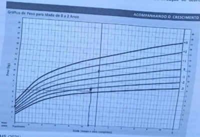
A desnutrição grave.
B muito baixo peso para a idade.
C pequeno para idade.
D peso adequado para idade.
Questão 792 · Vacina pneumo 23valente · Vacina pneumo 10valente · Vacina pneumo 13valente · 4000186520O Ministério da Saúde, em 2021, ampliou temporariamente o grupo de pessoas que podem recorrer ao SUS (Sistema Único de Saúde) para tomar vacina pneumocócica conjugada. Ainda em relação às vacinas pneumocócicas:
A a pneumo23V (PPSV23) proporciona cobertura para o maior número de sorotipos do pneumococo. Tem uso reduzido em pediatria por ser recomendada a partir dos 10 anos de vida.
B a VPC13 é composta de 13 sorotipos de Streptococcus pneumoniae (pneumococo) conjugados com a proteína CRM197. Previne cerca de 90% das doenças graves (pneumonia, meningite, otite) em crianças.
C a 10-valente (VPC10) deve ser realizada em dose única, pela rede privada, em crianças que tenham entre 12 e 23 meses de idade.
D a pneumocócica conjugada 13-valente (VPC13) inclui 13 polissacarídios capsulares purificados de S. pneumoniae; contém mais sorotipos que a 10-valente (VPC10), mas é inferior por faltar alguns sorotipos fundamentais em crianças.
Questão 793 · Vacina oral contra poliomielite · Vacina inativada contra poliomielite · 4000186517O Ministério da Saúde lançou, em novembro de 2022, o Plano Nacional de Resposta a um Evento de Detecção de Poliovírus e um Surto de Poliomielite: Estratégia do Brasil. Em relação à vacina contra a poliomielite:
A a VOP (vacina oral contra poliomielite) é composta por três pólio vírus (polio1, 2 e 3 inativados) sendo necessárias várias doses para desencadear imunidade para os três vírus.
B a VOP (vacina oral contra poliomielite) deve ser feita em contatos de imunossuprimidos, por ser doença de extrema gravidade para protegê-los indiretamente pela imunidade de rebanho.
C a vacina Salk (VIP) determina melhor soroconversão e menor custo que a vacina Sabin (VOP), sendo indicada pela OMS em países em que a poliomielite foi eliminada.
D o esquema para pólio é composto por três doses de VIP aos 2, 4 e 6 meses de idade, mais dois reforços com VOP aos 15 meses e aos 4 anos de idade, pelo Calendário Nacional de Vacinação.
Questão 794 · Marcos Importantes · Avaliando o desenvolvimento · 4000186476Em consulta de rotina, lactente com 18 meses, observa-se as seguintes medidas evolutivas do perímetro cefálico (PC): ao nascer (35 cm), 1 mês (37 cm), 4 meses (42 cm), 7 meses (44 cm), 9 meses (44,5 cm), 12 meses (44,5 cm). Desenvolvimento: sorriso social com dois meses, gargalhadas com quatro meses, sentou-se com sete meses, arrastou-se com nove meses e balbucio de sons consonantais com dez meses. Atualmente, não ca de pé com apoio, não engatinha, emite sons guturais, não pega o brinquedo ou objetos em seu campo de alcance. Tem contato visual, mas não compreende jogos de esconde-esconde, dança, acenar adeus ou bater palmas. Realiza movimentos repetitivos e estereotipados de mãos, do tipo lavar ou esfregar. Há um mês apresentou quatro crises convulsivas tônico-clônicas generalizadas. O diagnóstico sindrômico é:
A Transtorno do espectro autista.
B Atraso do desenvolvimento neuropsicomotor.
C Paralisia cerebral.
D Regressão do desenvolvimento neuropsicomotor.
E Não apresenta alterações do crescimento e desenvolvimento.
Revisar: possível letra faltando em enunciado
Questão 795 · Mononucleose · 4000186473Adolescente, sexo masculino, 10 anos, apresenta febre diária há 5 dias, acompanhada de faringite e fadiga, que se intensi cou nos últimos dias. Iniciou amoxicilina há três dias sem melhora. Refere náuseas ao se alimentar e dor à deglutição. Exame físico: discreto edema em pálpebras superiores, febril, com linfonodos cervicais aumentados, faringite exsudativa e erupção cutânea macular eritematosa leve no tronco e nos braços. O diagnóstico e conduta nesse caso são:
A Faringite estreptocócica; trocar para amoxicilina-clavulanato.
B Doença de Kawasaki; imunoglobulina venosa e AAS.
C Difteria; penicilina cristalina venosa.
D Dengue; internação e sintomáticos.
E Mononucleose infecciosa; sintomáticos.
Questão 796 · Retorno da mulher ao trabalho · 4000186470Mãe de lactente de quatro meses em aleitamento materno exclusivo, procura orientação porque volta a trabalhar em 15 dias. A orientação adequada é que a mãe retire seu leite e armazene em frascos de vidro com tampa plástica na geladeira:
A Por até 1 horas ou congelador/freezer por até três semanas; oferecer preferencialmente por copinho.
B Por até duas horas ou congelador/freezer por até 12 horas; oferecer preferencialmente por copinho.
C Por até 12 horas ou congelador/freezer por até duas semanas; oferecer preferencialmente por copinho.
D Por até 12 horas ou congelador/freezer por até duas semanas; oferecer preferencialmente por mamadeira.
E Por até 24 horas ou congelador/freezer por até quatro semanas; oferecer preferencialmente por mamadeira.
Questão 797 · Contraindicações das vacinas · Vacina Tríplice Viral · 4000186469Qual das vacinas abaixo é contraindicada em pacientes imunodeprimidos?
A Hepatite B
B Dupla bacteriana
C Tríplice viral
D Influenza
Questão 798 · Traumas mamilares ou mamilos doloridos · 4000186465Primípara procura o posto de saúde porque está apresentando “dor no bico do peito” ao amamentar, desde a segunda semana pós-parto. No exame da mama, o pediatra identi ca ssura mamilar. A conduta mais importante neste caso é:
A avaliar a mamada e corrigir a técnica de amamentar.
B amamentar em diferentes posições.
C passar o próprio leite nos mamilos após as mamadas e secar ao ar livre.
D usar, na aréola e nos mamilos, produtos (cremes ou pomadas) cicatrizantes.
E expor as mamas ao sol 4x ao dia.
Revisar: possível letra faltando em enunciado
Questão 799 · Vitamina K · Doença Hemorrágica do Recémnascido · 4000186464Recém-nascido, sexo masculino, é levado ao setor de emergência com 16 horas de vida. O paciente nasceu na residência da família, e o pai informa que o bebê “evacuou sangue”. Exame físico: peso 3.500g, comprimento 50 cm, FC 150 bpm, FR 50 irpm, pulsos periféricos facilmente palpáveis, exsudação sanguinolenta no coto umbilical. Exames laboratoriais: plaquetas: 300.000/mm, TAP e PTT prolongados, BT: 5mg/dl, função hepática normal. A medida terapêutica mais importante é a administração de:
A antibiótico.
B vitamina K.
C fatores de coagulação.
D plasma fresco congelado.
E acetato de desmopressina.
Questão 800 · Vacina oral contra poliomielite · Vacina inativada contra poliomielite · Poliomielite · 4000186462Em 2022 o Brasil comemora 32 anos sem nenhum caso de poliomielite no Brasil. Porém a queda na cobertura vacinal pode gerar risco da introdução da doença no país. Sobre as medidas epidemiológicas para controle da poliomielite, qual das assertivas abaixo é correta?
A A eliminação da doença no Brasil foi alcançada por meio da administração da vacina do poliovírus inativado (IPV) em campanhas de vacinação em massa e posteriormente da vacina oral contra a pólio (VOP) em rotina das crianças, aliadas à vigilância epidemiológica da paralisia flácida aguda.
B Em países com boa cobertura vacinal têm ocorrido surtos de poliomielite causados por poliovírus derivados da vacina (PVDV).
C Nem todo caso de deficiência motora flácida de início súbito em crianças é considerado suspeito.
D A vacinação confere imunidade duradoura para o sorotipo correspondente ao poliovírus responsável pelo estímulo antigênico.
Questão 801 · DDS46XX hiperplasia adrenal congênita · 4000186460A causa mais comum de Distúrbio da Diferenciação Sexual é:
A Anormalidades cromossômicas.
B Tumores virilizantes dos ovários.
C Exposição intrauterina à progestágenos.
D Hiperplasia adrenal congênita.
E Uso de drogas ilícitas na gestação.
Questão 802 · dT Dupla bacteriana adulta · Indicações · Indicação · 4000186459Um paciente vai a emergência com ferimento super cial leve na perna, por mordedura de cão sadio e domiciliado. Ele não traz carteira vacinal e só se recorda de ter tomado, nos últimos cinco anos, vacinação contra influenza e COVID-19. Sendo assim, qual a conduta a ser tomada?
A Observar o animal e reforço da dupla adulto (dT - difteria e tétano)
B Observar o animal e iniciar esquema vacinal de 03 doses de antirrábica com intervalos de 0, 3 e 7 dias
C Administrar soro anti-rábico (SAR) 40 Ul/Kg de peso e iniciar esquema de vacinação antirrábica de 05 doses
D Administrar imunoglobulina antirrábica humana (IGHAR) dose única 20 Ul/Kg
Questão 803 · Quadro Clínico · Diagnóstico · 4000186417Criança dois anos e seis meses, masculino, previamente hígido, é levado pela mãe ao pediatra por apresentar quadro de tosse e chiado no peito nos últimos 15 dias. Exame físico: ativo, discreta dispneia, sem sinais de toxemia. AR: roncos e sibilos disseminados, discreta diminuição do murmúrio vesicular em todo hemitórax direito. RX do tórax: hiperinsu ação à direita com discreto desvio das estruturas do mediastino para a esquerda. Hipótese diagnóstica e conduta são:
A Enfisema lobar congênito / tomografia de tórax.
B Aspiração de corpo estranho / broncoscopia.
C Síndrome do lactente sibilante / prednisolona 1mg/kg/dia por cinco dias.
D Asma / salbutamol 2 jatos, com espaçador, com intervalos de 20 minutos, três vezes.
Questão 804 · Tratamento · Diagnóstico · 4000186414Lactente de 9 meses, diagnóstico prévio de síndrome de Down, iniciou quadro de febre baixa, tosse seca, coriza hialina, e espirros evoluindo em 72h com taquidispnéia. Procurou atendimento na emergência infantil onde recebeu resgate com broncodilatador com boa resposta. Liberado para casa com medicações de controle e orientações. Retorna a emergência após 24h com piora clínica. Admitido no setor taquidispneico e hipoxêmico. Feito resgate com broncodilatador com resposta parcial. Transferido para Unidade de Terapia Intensiva Pediátrica (UTIP). Sinais vitais de admissão na UTIP: FC 145 bpm; FR: 58 irpm; Sat: 92% (Ar ambiente); Tax: 37°C; PA 95 x 57 mmHg Ausculta pulmonar com sibilos difusos, tempo expiratório prolongado, Tiragem subcostal e retração de fúrcula moderada. Qual a principal hipótese diagnóstica e o tratamento preconizado?
A Bronquiolite viral aguda: Oxigênio suplementar
B Bronquiolite viral aguda: Corticoide inalatório
C Pneumonia bacteriana aguda: Terapia antimicrobiana
D Asma: Broncodilatador de curta duração
Questão 805 · Imunodef iciências primárias · Evolução da lesão · 4000186413As imunode ciências primárias são doenças genéticas que têm como principal característica alterações das funções imunológicas, levando o paciente a maior suscetibilidade às infecções de repetição, doenças autoimunes e neoplasias. Na maioria dos casos, os sintomas clínicos se iniciam na infância, e o pediatra tem seu papel no diagnóstico. Dessa forma, temos sinais de alerta para que o pediatra, na presença desses, possa solicitar a investigação de uma possível imunode ciência primária. Devemos investigar imunode ciência em criança de:
A Quatro anos com estomatites de repetição por um mês.
B Sete anos com história de pneumonia aos três anos e novo quadro atual.
C Três anos com quadro de três otites no último ano.
D Um ano com efeito adverso (abscesso) em local de aplicação da vacina BCG.
Questão 806 · Quadro clínico · Agente etiológico · 4000186412Pré-escolar, inicia há 4 dias de febre 38°C, dor de garganta, mal-estar, diminuição do apetite e adenomegalias em região suboccipital e pós auriculares bilaterais, seguido de rash macular róseo claro, irregular, disseminado, iniciado em face e pescoço, distribuindo-se pelo corpo. Sem descamação após desaparecimento do mesmo. No início do quadro, o exame da orofaringe revelava lesões pequenas, de coloração rósea e petéquias em palato mole. A caderneta vacinal da criança não estava em dia. Em relação ao quadro clínico, o agente é:
A Adenovírus.
B Norovírus.
C Vírus da rubéola.
D Vírus do sarampo.
Questão 807 · Agentes etiológicos · Agentes etiológicos · 4000186411Qual o principal agente etiológico considerando a faixa etária, dos quadros de Bronquiolite Aguda e de Pneumonia Comunitária Bacteriana Febril Simples, respectivamente?
A Vírus Sincicial Respiratório (VSR)/Streptococcus Grupo B
B Influenza/Streptococcus Pneumoniae
C Influenza/Streptococcus Grupo B
D Vírus Sincicial Respiratório (VSR)/Streptococcus Pneumoniae
Questão 808 · Quadro clínico · Classif icação da desidratação · 4000186405As diarreias agudas permanecem um grande agelo na saúde das crianças brasileiras, sendo as maiores responsáveis pela desidratação aguda na infância. Um dos parâmetros clínicos para avaliação do grau de desidratação que indica desidratação moderada na criança é:
A pulso fino e rápido.
B sede acentuada.
C diurese com oligúria.
D respiração hiperpnéica.
E mucosas muito secas.
Questão 809 · Plano B · 4000186401Lactente de 6 meses de idade, com história de desmame precoce com 2 meses de idade vem a consulta na Unidade de Pronto Atendimento, após o desmame iniciou o uso de fórmula infantil sem lactose sem orientação médica. Há 2 dias iniciou quadro de diarreia líquida sem muco ou sangue, em torno de 8 a 10 episódios por dia. Nesse período apresentou 2 episódios de vômitos pós alimentares e febre não aferida. Ao exame físico: estado geral preservado, sede aumentada, pulso cheio, turgor cutâneo diminuído, enchimento capilar de 1 segundo. Assadura perianal discreta. Sem outras alterações. De acordo com o caso relatado, qual é a conduta para essa criança?
A Internar na Unidade, iniciar hidratação venosa com soro fisiológico e jejum por 6 horas.
B Liberar para o domicílio com sais de reidratação oral e retirar a fórmula infantil sem lactose.
C Internar na Unidade, realizar antiemético e hidratação com soro glicosado.
D Internar na Unidade, realizar hidratação oral com sais de reidratação por 4 a 6 horas.
Questão 810 · Agentes etiológicos · 4000186400Criança de 8 anos de idade, apresenta quadro respiratório há 2 semanas com tosse pouco produtiva e, nas últimas 48 horas febre baixa, dor de garganta. Ausência de congestão nasal. Ao exame observa-se na ausculta pulmonar um murmúrio rude sem crepitações. Ausência de sibilância. Realizado Radiogra a de tórax que mostrou in ltrado intersticial difuso, sem focos de consolidação. De acordo com o caso relatado, qual o agente etiológico deve ser o responsável pelo quadro dessa criança?
A Rinovírus.
B Mycoplasma pneumoniae.
C Mycobacterium tuberculosis.
D Bordetella pertussis.
Questão 811 · Risco de Recorrência e de Epilepsia · 4000186399A convulsão febril constitui uma das grandes causas de consultas de crianças em Unidades de Pronto Atendimento. Geralmente se constitui em um evento benigno, porém existe uma condição que aumenta o risco de recorrência, que é
A proveniente de faringoamigdalite.
B história familiar de síndrome epiléptica.
C Idade inferior a 1 ano de idade.
D distúrbio metabólico associado.
Questão 812 · Avaliação do Crescimento · 4000186398A mãe traz a criança, com 12 meses de idade, à consulta de Puericultura. Não apresentou antecedentes gestacionais importantes. Parto normal, a termo, sem necessidade de Reanimação. Peso de nascimento: 3000 g Comprimento: 50 cm PC: 34 cm. Aleitamento materno exclusivo até 6 meses e, posteriormente, introdução gradual de alimentos de forma correta. Criança não apresentou nenhum problema clínico nesse período. Desenvolvimento normal para a idade. De acordo com as informações, o que o pediatra espera encontrar de dados antropométricos, considerando um crescimento fisiológico?
A Peso 7000 g; comprimento 75 cm; PC 44 cm.
B Peso 9000 g; comprimento 75 cm; PC 47 cm.
C Peso 9000 g; comprimento 70 cm; PC 49 cm.
D Peso 8500 g; comprimento 70 cm; PC 43 cm.
Questão 813 · Curvas de Crescimento · 4000186397Uma criança de 4 anos de idade é identi cada na curva de ICM (OMS) entre os escores Z+2 e Z+3. Qual é a classificação que está adotada no Cartão da Criança do Ministério da Saúde e que será adotada como diagnóstico nutricional?
A Obesidade.
B Risco de Sobrepeso.
C Sobrepeso.
D Peso elevado.
Questão 814 · Quadro Clínico · 4000186396Diante de uma criança gravemente enferma, na unidade de urgência pediátrica, é importante avaliar, identi car e intervir com prontidão. Recomenda-se uma abordagem sistemática, onde a impressão inicial é a primeira observação feita logo na entrada da criança. O triângulo da avaliação pediátrica é a ferramenta recomendada para obter essa impressão inicial do quadro, que inclui, além da avaliação da aparência (estado geral) a
A avaliação do esforço respiratório e da cor da pele e das mucosas.
B aferição da oximetria de pulso e da glicemia capilar.
C avaliação do grau de desidratação e de sinais evidentes de desnutrição.
D monitorização cardíaca e a aferição da pressão arterial.
Questão 815 · Herpangina Doença MãoPéBoca · 4000186395A síndrome mão-pé-boca é uma infecção aguda, causada pelo vírus coxsakie, mais comumente atingindo crianças com menos de cinco anos de idade. Como característica desta doença, tem-se que:
A sua transmissão ocorre de pessoa a pessoa, por inalação de gotículas de secreção da via aérea, durante 5 a 10 dias, antes do surgimento das lesões típicas.
B causa lesões vesiculares e ovaladas em mãos e pés e lesões ulceradas em cavidade oral. A presença de lesões em outras partes do corpo ou a ausência de lesões em mãos, pés ou boca exclui o diagnóstico.
C pode ocorrer casos graves com falência cardiorespiratória, que frequentemente apresentam evolução fatal.
D trata-se de doença que atinge apenas pele e mucosas; a presença de sintomas neurológicos, associados às lesões, sugere a síndrome de Gianotti-Crosti.
Questão 816 · Testes sorológicos · 4000186393Lactente 1 ano e 9 meses de idade, apresentando diarreia e perda de peso, fezes volumosas, explosivas, sem muco ou sangue em média 6 vezes ao dia acompanhada de distensão abdominal e assadura perianal. Recebeu aleitamento materno exclusivo até 6 meses de vida e, a partir daí, iniciou com alimentação complementar. Atualmente está em uso de leite materno e dieta habitual da família. Condições socioeconômicas e sanitárias adequadas. Ao exame físico encontra-se desnutrido, hipocorado e hipotrofia da região glútea. Considerando que, neste caso relatado, o diagnóstico é de doença celíaca, qual é a abordagem clínica a ser adotada?
A Excluir o glúten da dieta e programar endoscopia com biópsia duodenal.
B Solicitar dosagem de IgA sérica e antitransglutaminase tecidual IgA e endoscopia com biópsia duodenal imediatamente.
C Abordagem sem biópsia é permitido para crianças com dosagem de IgA sérica normal e com valores de antitransglutaminase tecidual IgA> 10X o LSN (limite superior da normalidade) e antiendomísio IgA positivo em uma segunda amostra de sangue.
D Retirar o glúten para o resto da vida, não sendo permitido o diagnóstico sem a realização de endoscopia com biópsia duodenal.
Questão 817 · Fisiopatologia · 4000186390Os recém-nascidos prematuros que não possuem quantidades adequadas de surfactante podem desenvolver insu ciência respiratória grave. Nesse cenário, o que acontece com a tensão super cial alveolar e a complacência pulmonar, respectivamente?
A Reduzida; reduzida.
B Aumentada; aumentada.
C Aumentada; reduzida.
D Reduzida; aumentada.
Questão 818 · Relação pesoidade gestacional · 4000186389Valentina infelizmente nasceu antes do seu tempo previsto. Com 30 semanas de gestação, sua mãe teve uma ruptura prematura de membranas ovulares e, 3 dias depois, Valentina veio ao mundo, com poucos 1.500g - no percentil 26 para a idade gestacional de nascimento - e com 42 cm. Felizmente ela evoluiu muito bem, graças ao excelente atendimento recebido na UTI Neonatal do Hospital Naval em que nasceu e já se encontra em casa com seus pais. Sobre seu quadro, é correto afirmar que Valentina:
A foi classificada como ""Pequena para a Idade Gestacional"" ao nascer.
B apresentou crescimento intrauterino restrito, de acordo com o índice ponderal de Rohrer.
C foi considerada como "muito baixo peso ao nascer".
D nasceu na faixa de "pré-termos extremos".
E encontra-se em maior risco para desenvolver autismo no futuro.
Questão 819 · Def inição · Marasmo · Kwashiorkor · 4000186388A desnutrição voltou? Dados divulgados pelos pesquisadores do "Observar infância" da Fundação Oswaldo Cruz (Fiocruz) mostraram que em 2021 houve a maior taxa de hospitalização de crianças menores de um ano de idade com desnutrição (113 hospitalizações/100 mil nascidos vivos). (Nota de alerta da Sociedade Brasileira de Pediatria - Departamento de Nutrologia - em 28/10/2022). Em relação à desnutrição sabe-se que:
A o Marasmo é caracterizado por fraqueza intensa, parestesia em membros inferiores e carência de micronutrientes.
B o Kwashiorkor é caracterizado por edema, alteração na cor dos cabelos, lesões de pele, esteatose hepática e hipoalbuminemia.
C entre as carências de micronutrientes, as mais prevalentes são as deficiências de zinco, cálcio e de vitamina D.
D na avaliação do paciente pela curva de IMC, ele estará desnutrido se estiver abaixo de Z=-3. Acima desse valor, sem desnutrição.
Questão 820 · Calendário inf antil · 4000186386Leia o relato do caso clínico a seguir. De acordo com as recomendações vacinais do Programa Nacional de Imunização (PNI), tem-se que a vacina:
A a vacina BCG deverá ser aplicada o mais precocemente possível após o nascimento e um reforço realizado aos dez anos de idade.
B a vacina pólio inativada (vip), obrigatoriamente, nas 3 primeiras doses (2, 4 e 6 meses), podendo ser seguida por 2 doses (15 meses e 4 anos) via oral atenuada (vop).
C a vacina contra a febre amarela é indicada para indivíduos que moram em zona endêmica para a doença ou viajantes para tais locais.
D todas as crianças ao nascer, independente da idade gestacional e peso, devem receber 3 doses de vacina contra hepatite B.
Questão 821 · Curvas de Crescimento · Maturação sexual no sexo masculino · 4000186383Gráf icos OMS Classif icação nutricional M e P trazem seu lho V., de 13 anos de idade, para avaliação. Os pais estão preocupados com o seu desenvolvimento e crescimento. Ao exame, apresenta estágio puberal em G1P1, peso=45 kg, estatura=1,40m, IMC=22,1(z entre +1 e +2). Estatura do pai=1,70 m e da mãe=1,57 m. Trouxeram exame de idade óssea = 11 anos de idade. Analisando os dados clínicos relatados e as curvas de IMC e estatura, classi que a puberdade, o estado nutricional e a estatura deste adolescente, respectivamente.
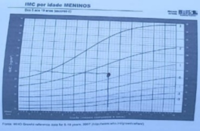
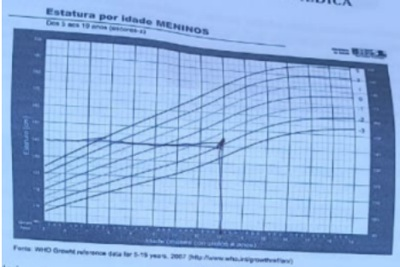
A Puberdade normal; eutrófico; baixa estatura familiar.
B Puberdade normal; sobrepeso; baixa estatura constitucional.
C Puberdade atrasada; sobrepeso; baixa estatura patológica.
D Puberdade atrasada, eutrófico; muito baixa estatura.
Questão 822 · Herpangina Doença MãoPéBoca · 4000186381A síndrome mão, pé, boca é causada por qual agente etiológico?
A Coxsackie vírus.
B Herpes vírus.
C Parvovírus.
D Poxvírus.
E Adenovírus.
Questão 823 · Introdução alimentar · 4000186380Na introdução alimentar infantil, recomenda-se:
A aleitamento materno exclusivo até o 4º mês de vida.
B aleitamento materno complementado do 4º ao 12º mês de vida.
C frutas amassadas ou raspadas a partir do 6º mês de vida.
D alimentação familiar plena a partir de 6 meses de vida.
E suspender amamentação a partir de 12 meses de vida.
Questão 824 · Def inição · Fisiopatologia · Bronquiectasias · 4000186377Correlacione as colunas. I - Asma Brônquica. II - Fibrose Cística. III - DPOC. IV - Bronquiectasia. ( ) Exocrinopatia autossômica recessiva que afeta diversos tecidos epiteliais. ( ) Inflamação crônica específica na mucosa das vias respiratórias inferiores. ( ) Maior suscetibilidade a infecção e de ciência na depuração mucociliar que resultam em colonização microbiana da árvore brônquica. ( ) Estado patológico caracterizado por limitação do fluxo aéreo não totalmente reversível.
A (III) (IV) (I) (II)
B (II) (III) (I) (IV)
C (IV) (I) (III) (II)
D (II) (I) (IV) (III)
E (I) (III) (II) (IV)
Questão 825 · Teste do pezinho · 4000186376Sobre a triagem neonatal realizado por meio do teste do pezinho sabe-se que:
A qualquer alteração do exame só será valorizada se o paciente apresentar clínica compatível com a doença testada.
B as doenças obrigatórias testadas são: fenilcetonúria, hipotireoidismo congênito, doença falciforme, fibrose cística, hiperplasia adrenal congênita e deficiência de biotinidase.
C a coleta deverá ocorrer ao nascimento, antes da alta da maternidade.
D prematuridade e hemotransfusões não interferem no resultado do teste.
Questão 826 · HPV · 4000186372O câncer de colo uterino é ocasionado pela infecção persistente pelo papilomavirus humano (HPV) em virtualmente 100% dos casos, sendo o terceiro sítio mais frequente para câncer primário na população feminina. Dessa forma, a vacinação contra o HPV especialmente na população jovem é uma importante ferramenta na prevenção da incidência desse tipo de câncer. Nesse contexto, é correto afirmar que:
A recomenda-se a imunização preferencialmente das crianças aos 9 anos de idade, porém ela é contraindicada após o início da vida sexual.
B atualmente recomenda-se um esquema inicial de três doses, seguida de um reforço 10 anos após o esquema completo.
C visto que o objetivo é a prevenção do câncer de colo uterino, a vacina contra o HPV não está recomendada para os meninos.
D o esquema vacinal completo para HPV promove proteção cruzada para outros tipos virais, não contidos na vacina.
E a Síndrome de Guillain-Barré foi consistemente associada por causalidade com a vacina por HPV.
Questão 827 · Marcos Importantes · 4000186351Constituem marcos do desenvolvimento em suas idades esperadas, EXCETO:
A sorri: 2 meses.
B grita: 4 meses.
C rola no leito: 6 meses.
D pinça completa (polpa a polpa): 9 meses.
E bate palmas, acena: 12 meses.
Questão 828 · Síndrome de Edwards · 4000186341A Trissomia do cromossoma 18 caracteriza qual síndrome genética?
A Síndrome de Patau.
B Síndrome de Down.
C Síndrome de Turner.
D Síndrome de Edwards.
E Síndrome de Klinefelter.
Questão 829 · Prevenção do tétano acidental · 4000186241Paciente de 55 anos, morador de zona rural, pisou em um prego enferrujado no galinheiro de sua propriedade. Procurou a UBS dois dias após o acidente devido à dor no local. Ao exame físico, observam-se sinais vitais normais. Há moderada hiperemia ao redor do ferimento. Ao consultar o cartão de vacina do paciente, constata-se que a vacinação para tétano está em dia e sua última dose foi há 6 anos. Em relação à pro laxia de tétano, a conduta adequada neste caso é:
A Realizar soro e vacina antitetânica.
B Aguardar completar 10 anos para fazer a dose de reforço da vacina.
C Realizar soro antitetânico.
D Realizar uma dose de reforço da vacina antitetânica.
Questão 830 · Indicações · 4000186238Paciente de 8 anos de idade do sexo masculino foi bicado pelo papagaio de estimação da família na palma da mão direita. Foi um ferimento profundo que provocou sangramento moderado por 10 minutos. Qual a conduta para a profilaxia de raiva?
A Indicar 4 doses de vacina para raiva.
B Não há indicação para prescrever vacina.
C Indicar 2 doses de vacina para raiva e observar o animal por 10 dias.
D Observar o animal por 10 dias.
Questão 831 · Quadro clínico · 4000186206Sobre infecção urinária na infância, é correto afirmar:
A O tratamento deve ser instituído após o resultado da urocultura nos pacientes com infecção urinária febril.
B O principal fator predisponente é o uso indiscriminado de antibióticos por quadros respiratórios, o que seleciona a microbiota da criança.
C O aumento da contagem de leucócitos na urina tem valor preditivo positivo para o diagnóstico, quando a amostra é coletada por saco coletor.
D É causa importante de febre sem sinais localizatórios, dessa forma, a suspeição clínica precoce favorece o tratamento.
Questão 832 · Métodos diagnósticos · Def inição · Sinais e sintomas · 4000186205Um médico é chamado para avaliar recém-nascido a termo, peso nascimento 2.200g, com 6 horas de vida em alojamento conjunto devido à sonolência. Aferida glicemia capilar: 36 mg/dL. Qual a melhor conduta?
A Ofertar fórmula infantil visto que paciente está sonolento devido a choque obstétrico.
B Encaminhar paciente à UTI neonatal para início de hidratação venosa com oferta de glicose endovenosa.
C Estimular aleitamento materno com suporte de enfermagem e banco de leite materno.
D Iniciar dieta por sonda com leite materno ordenhado pelo risco de broncoaspiração.
Questão 833 · Duração do aleitamento materno · Idade de introdução e f requência · 4000186202Lactente, 5 meses, em aleitamento materno exclusivo e em uso de vitamina D diária, que, após quadro febril acompanhado de vômitos e diarreia, iniciou uso de sais minerais para suplementação e reidratação oral. Não está fazendo ingesta de nenhum outro tipo de leite e não iniciou a introdução alimentar. Como se classifica sua alimentação?
A Inadequada, em aleitamento materno misto ingerindo sais de reidratação oral.
B Adequada, em aleitamento materno exclusivo.
C Inadequada, o início da vitamina D seria após 6 meses.
D Adequada, em aleitamento materno complementado.
Questão 834 · Passos iniciais · 4000186201Em relação às atuais diretrizes de reanimação do recém-nascido ≥ 34 semanas em sala de parto, marque V para as afirmativas verdadeiras e F para as falsas. ( ) No RN com boa vitalidade, recomenda- se clampear o cordão no mínimo 60 segundos após o nascimento. ( ) No RN que não está com boa vitalidade ao nascer, sugere-se fazer o estímulo tátil no dorso, de modo delicado e no máximo duas vezes, para ajudar a iniciar a respiração antes do clampeamento imediato do cordão. ( ) Se, ao nascimento, o RN ≥ 34 semanas está respirando ou chorando e o tônus muscular está em exão, independentemente do aspecto do líquido amniótico, ele apresenta boa vitalidade e deve continuar em contato pele-a-pele junto da parturiente depois do clampeamento do cordão umbilical. ( ) A aspiração de vias aéreas não deve ser realizada de rotina e, sim, reservada somente ao RN com excesso de secreções nas vias aéreas. Assinale a sequência correta.
A F, F, V, F
B V, F, F, F
C F, V, F, V
D V, V, V, V
Questão 835 · Quadro clínico · Diagnóstico · Epidemiologia · 4000186199Em todas as doenças alérgicas, é fundamental que uma boa anamnese seja realizada. Em relação às alergias alimentares (AA), assinale a afirmativa INCORRETA.
A Época de aparecimento dos sintomas: nas alergias mediadas por IgE, os sintomas aparecem em até 12 horas após a introdução do alimento.
B Idade de aparecimento dos sintomas: nas APLV, a maior parte das crianças apresenta as manifestações clínicas nos primeiros 2 anos de vida.
C Repetição do sintoma quando da re-exposição: aspecto significativo para uma AA. É fundamental que haja reprodutibilidade do sintoma cada vez que houver a ingesta do alimento suspeito.
D Quantidade de alimento ingerida: trata-se de um aspecto fundamental, pois pode ser variável entre os pacientes, sendo que alguns deles reagem a pequeníssimas porções (traços do alimento) e outros a porções um pouco maiores.
Questão 836 · Sigilo prof issional · Segurança das crianças e adolescentes · 4000186198Em uma consulta de uma adolescente com idade de 14 anos e 6 meses, existem situações nas quais o sigilo deve ser mantido. Assinale a alternativa que apresenta situações em que deve manter sigilo.
A Conflitos com identidade de gênero, gravidez, autoagressão, relação abusiva emocional.
B Homossexualidade, sinais de dependência química, ideias suicidas.
C Uso e abuso de drogas, não adesão ao tratamento indicado, violência sexual.
D Orientação sexual, experimentação sexual, uso de anticonceptivo.
Questão 837 · Maturação sexual no sexo f eminino · 4000186197Um adolescente masculino de 13 anos e 4 meses procura o ambulatório na UBS, acompanhado de sua mãe que está preocupada com o crescimento do lho, pois sua lha, de 12 anos, já menstruou e está com 162 cm. Após anamnese detalhada, o médico verifica que o adolescente está com estatura de 157 cm e peso corporal de 50 kg. Portanto, no Z escore da curva de crescimento e IMC dentro do canal familiar e estatura alvo. Estágio puberal P2G2. Assinale a melhor conduta para o caso.
A Tranquilizar a mãe que seu filho está dentro dos parâmetros normais para a faixa etária e canal familiar, não necessitando mais voltar de retorno. Porém marcar consulta para sua filha já que está desenvolvendo puberdade precoce, uma vez que já menstruou e será necessária uma investigação rigorosa.
B Alertar a mãe que será necessário auxílio do médico especialista, já que sua irmã está mais alta e ele, sendo do sexo masculino, já perdeu a oportunidade de crescer. Solicitar todos os exames de triagem para baixa estatura, inclusive, Raio X de mãos e punhos para idade óssea. Marcar retorno, se necessário.
C Tranquilizar a mãe e o paciente, já que o adolescente está na fase inicial do processo de puberdade e que o estirão do menino acontece depois da menina com mais velocidade e pico máximo maior, e que acontecerá nos próximos estágios puberais. Marcar retorno em torno de 6 meses para verificar velocidade de crescimento e orientações.
D Alertar a mãe e o adolescente, já que o paciente está com o avanço puberal para a idade cronológica e poderá ficar baixinho comparando com sua irmã. Deve ser realizado Raio X de mãos e punhos para idade óssea, tomografia de crânio e exames complementares, o mais rápido possível. Marcar retorno no máximo em 2 meses para verificar velocidade de crescimento e orientações.
Questão 838 · Gráf icos OMS Classif icação nutricional · 4000186196Paciente, masculino, 3 anos e 1 mês de vida, vem para consulta de puericultura. Ao realizar sua antropometria, apresenta estatura de 92cm e peso 12kg. Sem nenhuma vacina em atraso, alimentação adequada, boas condições de higiene. Analisando as curvas de crescimento da nova Caderneta de Saúde da Criança, como classificar sua estatura, peso e IMC para idade?
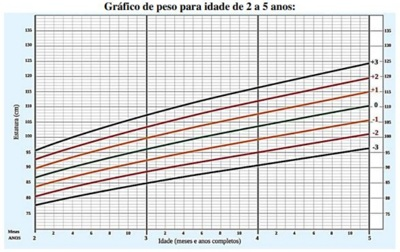
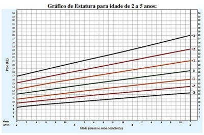
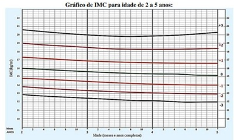
A Estatura adequada para idade; Peso adequado para idade; IMC de Eutrofia. IMC de Eutrofia.
B Baixa estatura para idade; Baixo peso para idade; IMC de Magreza.
C Baixa estatura para idade; Muito baixo peso para idade; IMC de Magreza.
D Estatura adequada para idade; Elevado peso para idade; IMC de Risco de sobrepeso.
Questão 839 · Importância do aleitamento materno · 4000186195NÃO é argumento a favor do aleitamento materno:
A Redução de morbidade por rinite alérgica.
B Redução do desenvolvimento orofacial.
C Redução de diabetes tipos 1 e 2.
D Redução de leucemia.
Questão 840 · Tratamento Complicações · Complicações · 4000186194Paciente, 5 anos de idade, apresentando quadro de tosse e febre com duração de 1 dia. Família procurou pronto atendimento, prescritos apenas sintomáticos e feita orientação de retorno em 72 horas, caso não cessasse a febre. Família, no entanto, retorna, no dia seguinte, pois a criança está apresentando tosse produtiva e emetizante, que tem di cultado a aceitação alimentar e queda do estado geral. O médico ausculta crepitação na base pulmonar direita, solicita raio-X de tórax que confirma presença de consolidação no lobo médio do pulmão direito e indica internação pela di culdade de aceitação de medicamento via oral. A prescrição foi de ampicilina 200 mg/kg/dia. Criança estava evoluindo com melhora do quadro após 48 horas de internação, mas, ao ser avaliada no 3º dia de internação, apresenta-se taquipneica (antes estava eupneica) e com tiragem subcostal. Qual alternativa apresenta a conduta para o caso?
A Considerar resistência antimicrobiana e modificar esquema antimicrobiano para Cefepime e Vancomicina.
B Considerar resistência antimicrobiana e modificar esquema antimicrobiano para Ceftriaxona e Oxacilina.
C Realizar raio-X de tórax para identificar possível complicação da pneumonia com derrame pleural e modificar esquema antimicrobiano para Ceftriaxona e Oxacilina.
D Realizar raio-X de tórax para identificar possível complicação da pneumonia com derrame pleural e, caso presente, avaliar indicação de toracocentese de alívio e manter esquema
Questão 841 · Classif icação do controle clínico da asma · 4000186192Paciente, 7 anos de idade, possui diagnóstico de asma em uso de spray de beclometasona 100 mcg/dia e salbutamol sob demanda. Em sua consulta de rotina, com pediatra, a mãe relata que nas últimas 4 semanas a lha tem preferido, praticamente todos os dias, car assistindo à televisão ao invés de brincar com as coleguinhas, sendo que ela sempre foi uma criança que gostava muito mais de brincar que assistir à televisão, referindo se sentir cansada: tem apresentado tosse e dor torácica cerca de 3 a 4 vezes na semana; está usando o salbutamol já tem cerca de 5 dias, inclusive, chegou de acordar a noite algumas vezes com queixa de dor torácica, que melhorou com o uso do salbutamol. Considerando o quadro atual da paciente, como classificar o controle de sua doença e qual a conduta a ser realizada?
A Asma parcialmente controlada. Apenas corrigir a técnica e ambiente, manter a dose do corticoide inalatório e reavaliar em 1 semana.
B Asma não controlada. Além de rever técnica e ambiente, suspender a beclometasona e iniciar formoterol no tratamento de manutenção.
C Asma não controlada. Além de rever técnica e ambiente, associar formoterol ao tratamento de manutenção.
D Asma parcialmente controlada. Dobrar a dose do corticoide inalatório e associar formoterol ao tratamento de manutenção.
Questão 842 · Síndrome de Down · 4000186191A Trissomia do 21 (T21) é a anomalia cromossômica mais frequente nos seres humanos, apresenta diversas peculiaridades e comorbidades associadas. Dessa forma, há diretrizes especí cas visando ao cuidado integral à saúde da pessoa com T21. Sobre este assunto, assinale a afirmativa correta.
A A criança com T21 possui risco variável, conforme a literatura e país estudado, de 14 a 66% de desenvolver hipotireoidismo ao longo da vida, devendo realizar dosagem de TSH uma vez por ano, desde o nascimento.
B Toda criança com T21 deve tomar a vacina Pneumo 23 após o segundo ano de vida.
C Considerando o risco de instabilidade atlanto-axial, a partir do momento que a criança com T21 aprende a andar sem apoio, deve-se realizar o raio-X de coluna cervical em posição neutra, em perfil, flexão e extensão.
D A T21 está associada a maior incidência de cardiopatias congênitas, sendo a mais prevalente o defeito do septo atrioventricular parcial.
Revisar: possível letra faltando em enunciado
Questão 843 · Curvas de Crescimento · Gráf icos OMS Classif icação nutricional · 4000186182Em relação à puericultura, assinale a afirmativa correta.
A O ganho ponderal esperado de um lactente durante o 2º trimestre de vida é aproximadamente 600 mg por mês.
B O teste do pezinho deve ser coletado em torno do 14º dia de vida.
C Segundo o Plano Nacional de Imunização, a vacina contra a febre amarela deve ser administrada aos 12 meses de vida.
D Na avaliação do DNPM da criança, usa-se a escala de Heinrich.
Questão 844 · Comunicação interatrial · 4000186152Paciente de 12 anos vem ao posto de saúde realizar avaliação clínica para liberação para escolinha de futebol. Mãe refere que criança se queixa apenas quando faz atividade física de um pouco de cansaço e coração ̈ disparado de sopro sistólico ejetivo suave em foco pulmonar ++/VI com P2 desdobrada xa, pulsos presentes e simétricos. Qual o diagnóstico e a conduta mais CORRETA para esse caso?
A Sopro funcional e liberar para atividade.
B Miocardiopatia hipertrófica e solicitar eletrocardiograma.
C Estenose pulmonar e solicitar ecocardiograma.
D CIA e encaminhar para avaliação.
E Febre reumática, solicitar provas de atividade inflamatória.
Questão 845 · Persistência do canal arterial · 4000186151Paciente de 9 meses vem consulta de ambulatório para controle de baixo ganho de peso, queixa de sudorese e cansa- ço para mamar desde o nascimento. Ao exame físico, é acianótica, taquipneica, palidez cutânea +, apresenta sopro contínuo mais audível em região infraclavicular esquerda +++/VI com P2 hiperfonética. Mãe relata que está aguardando consulta com cardiologista desde a alta da maternidade. Assinale a alternativa CORRETA.
A Coarctação de aorta, iniciar prostaglandina.
B Forame oval pérvio com indicação de cirurgia.
C PCA com indicação de fechamento cirúrgico/cateterismo.
D PCA e iniciar ibuprofeno.
E Estenose pulmonar e realizar valvoplastia com cateter.
Questão 846 · Classif icação da desidratação · Plano B · 4000186150Menino, 15 meses, com história de 5 episódios de vômitos há 2 dias e nas últimas 12 horas, a mãe refere 6 episódios de evacuação líquidas volumosas. Exame físico: irritado, choro sem lágrima, boca seca, sedenta por água, sinal da prega desaparece lentamente, pulso rápido. Este paciente deve receber qual plano terapêutico (recomendação OMS e MS)?
A Terapia de reidratação parenteral.
B Terapia de reidratação oral em serviço de saúde.
C Terapia de reidratação oral em ambiente domiciliar.
D Tratamento domiciliar.
E Internamento para hidratação em Unidade de Terapia Intensiva.
Questão 847 · Quadro clínico · Quadro clínico · Aspectos Clínicos Quadro clínico · 4000186149Qual das alternativas descreve CORRETAMENTE a sequência dos diagnósticos clínicos dos casos abaixo? I. _______________: Lactente de 10 meses com história de coriza há 3 dias associado a febre baixa. Evoluiu com edema bipalpebral com secreção purulenta, rash difuso, tipo queimadura com descamação principalmente em axilas, pescoço e ao redor da boca. II. _______________: Adolescente de 13 anos com linfonodomegalia suboccipital, cervical e retro auricular. Hiperemia de orofaringe sem placas e com lesão rósea em palato. Apresentou um rash cutâneo que começou na face, espalhando-se rapidamente pelo pescoço e tronco. O rash teve duração de apenas 1 dia e era pouco pruriginoso. III. _______________: Criança de 5 anos apresenta febre há 5 dias, dor de garganta, adenomegalia cervical dolorosa, exsudato esbranquiçado nas amigdalas. Rash micropapular, hiperemia difusa e pele áspera ao toque. Evolui com edema em torno dos olhos, sem alterações conjuntivais. IV. _______________: Menino de 5 anos, portador de Anemia Falciforme, com febre há 5 dias. Apresenta mancha avermelhada reticular por todo o corpo. Esse rash é mais intenso na face onde observa-se uma palidez perioral.
A I: Síndrome do Choque Tóxico Estreptocócico, II: Mononucleose Infecciosa, III: Escarlatina e IV: Rubéola.
B I: Síndrome do Choque Tóxico Estafilocócico, II: Rubéola, III: Doença de Kawasaki e IV: Eritema Infeccioso.
C I: Síndrome do Choque Tóxico Estreptocócico, II: Rubéola, III: Doença de Kawasaki e IV: Escarlatina.
D I: Síndrome do Choque Tóxico Estafilocócico, II: Mononucleose Infecciosa, III: Doença de Kawasaki e IV: Rubéola.
E I: Síndrome do Choque Tóxico Estafilocócico, II: Rubéola, III: Escarlatina e IV: Eritema Infeccioso.
Questão 848 · Avaliação do Crescimento · Curvas de Crescimento · 4000186148Menino com 10 anos e seis meses consulta com queixa que é o menor entre os seus amigos, sem outras queixas. Mãe refere que, com 9 anos, a estatura era de 128 cm. Pai com 172 cm (percentil 25), mãe com 152 cm (percentil 3). Ao exame, paciente com 133 cm (percentil 10), peso de 33 kg (percentil 75), IMC de 18,8 (percentil 75), exame segmentar sem alterações, genitália com testículos com 1ml 2, sem pelos em região genital. Qual o diagnóstico sindrômico para o caso?
A Baixa estatura real.
B Baixa estatura relativa.
C Obesidade sem estatura elevada.
D Baixa velocidade de crescimento.
E Obesidade com estatura elevada.
Questão 849 · Endoscopia intestinal com biópsia · Erros inatos do metabolismo · 4000186147Analise os casos abaixo e a seguir responda (V) para verdadeiro e (F) para falso quanto aos diagnósticos dados para cada um deles. Caso: 01 ( ) Menino, 15m, é trazido à consulta médica com história de di culdade para ganhar peso progressiva após os oito meses de vida. A mãe diz que está mais irritado e inapetente, que apresentou aumento das evacuações, com fezes muito fétidas, pálidas, em grande quantidade. Alimentação: leite materno com introdução da dieta da família a partir do sexto mês. Nega infecções recorrentes. Exame físico: irritado, pálido, com peso e altura em queda progressiva na curva de referência. Abdômen: distendido, diminuição de gordura subcutânea e da massa muscular. Biopsia intestinal: relação vilo/cripta 1:1, linfócitos intraepiteliais e infiltrado de linfócitos e plasmócitos em lâmina própria. Caso: 02 ( ) Menino de 2 anos, previamente hígido, iniciou com distensão abdominal progressiva há 15 dias. Nega náuseas e vômitos, mas refere ter aumentado a dor no abdome direito há 3 dias. Ao exame físico, está ativo, em bom estado geral, com mucosas coradas, mas com distensão abdominal importante e massa endurecida localizada no hemiabdome direito com algum desconforto a palpação. Está afebril, sem taquicardia e pressão arterial de 120/90 mmHg. Caso: 03 ( ) Recém-nascido a termo, AIG, sem história de intercorrências perinatais, sorologias normais, Apgar 9/10, iniciou aleitamento materno exclusivo, com boa sucção. Após o quinto dia, observou-se icterícia, hepatomegalia, sucção débil, sinais de sepse e apresentou hipoglicemia. Hemocultura: crescimento de Escherichia coli. O resultado do teste de triagem neonatal foi anormal, sendo sugerido após o diagnóstico avaliação ocular e a utilização de fórmula de partida à base de soja que propiciou uma evolução clínica satisfatória.
A Verdadeiro / Verdadeiro / Verdadeiro.
B Falso / Falso / Verdadeiro.
C Falso / Verdadeiro / Falso.
D Verdadeiro / Falso / Falso.
E Verdadeiro / Falso / Verdadeiro.
Questão 850 · Programa Nacional de Imunizações · Calendário inf antil · 4000186144O calendário vacinal do Programa Nacional de Imunizações do Brasil vem, a cada ano, contemplando novas vacinas e adequando as doses de acordo com o per l epidemiológico atual. Com base nas recomendações de 2021, considere as seguintes a rmativas: 1. A vacina Pentavalente celular é constituída pelos seguintes componentes: DTp + HIB + VIP. 2. A segunda dose da vacina do rotavírus pode ser realizada até 7 meses e 29 dias. 3. A vacina pneumocócica 10 valente é realizada em esquema de 3 doses: aos 2, 4, 6 e reforço de 12 a 15 meses. 4. O esquema da vacina para pólio atenuada é feito aos 2, 4 e 6 meses e pólio inativada com 15 meses e 4 a 6 anos de idade, além das campanhas. Assinale a alternativa CORRETA.
A Somente as afirmativas 1 e 4 são verdadeiras.
B Somente as afirmativas 1, 2 e 4 são verdadeiras.
C Somente a afirmativa 1 é verdadeira.
D Somente a afirmativa 2 é verdadeira.
E Somente a afirmativa 4 é verdadeira.
Questão 851 · Filhos de mães com hepatite B · 4000186143A transmissão materno infantil da hepatite B ocorre predominantemente durante a passagem do RN no canal de parto, pelo contato com sangue materno, secreção vaginal e raramente no período intrauterino. No caso de um recém-nascido de mãe portadora de vírus da hepatite B (AgHbs+) que apresenta peso de nascimento de 1900 g, que medidas profiláticas estariam indicadas?
A Vacina anti-hepatite B nas primeiras 12 h de vida IM + orientar realização de 2 doses posteriores da vacina (2, 4 e 6 meses junto com a Pentavalente - IM).
B Gamaglobulina hiperimune contra hepatite B IM + vacina anti-hepatite B nas primeiras 12 h de vida IM + orientar realização de 3 doses posteriores da vacina (2, 4 e 6 meses junto com a Pentavalente – IM).
C Gamaglobulina hiperimune contra hepatite B EV + vacina anti-hepatite B nas primeiras 12 h de vida IM + orientar realização de 3 doses posteriores da vacina (2, 4 e 6 meses junto com a Pentavalente - IM).
D Aguardar o RN completar 2000 g para iniciar a Imunoglobulina e realizar a vacinação imediatamente após o nascimento.
E Aguardar o RN completar 2000 g para iniciar a vacinação e realizar a imunoglobulina imediatamente após o nascimento.
Questão 852 · Vitamina B6Piridoxina · 4000186141Criança de 2 anos, com diagnóstico de autismo, apresenta seletividade alimentar importante, consumindo apenas leite in natura, ovos, alimentos à base de carboidratos e alimentos ultraprocessados. Não consome frutas, verduras, legumes e carnes. Ao exame físico, detecta-se dé cit de crescimento, sinais de desnutrição proteica, queilite, glossite, anemia e dermatite. Na avaliação laboratorial, além de ferropenia, espera-se encontrar deficiência de
A Vitamina D.
B Vitamina C.
C Zinco.
D Vitamina E.
E Vitamina B6.
Questão 853 · HPV · Indicações · 4000186119Sua amiga de 18 anos deseja fazer a vacina para HPV. Ela tem vida sexual ativa e sua ginecologista contra indicou a vacina em virtude dela ter começado a vida sexual. Você orienta sua amiga que pelo protocolo do Ministério da Saúde:
A A vacina é quadrivalente e está indicada para meninas e meninos dos 11 aos 21 anos de idade.
B A vacina é bivalente e está indicada em mulheres até os 45 anos de idade.
C A vacina é quadrivalente está indicada em meninas de 9 a 14 anos de idade.
D A vacina é bivalente e não pode ser aplicada em pacientes que tenham iniciado a vida sexual.
E A vacina é quadrivalente e pode ser aplicada em qualquer faixa etária desde que a pessoa não tenha iniciado a vida sexual.
Questão 854 · Situações em que há restrições ao aleitamento materno · 4000186098Os benefícios do aleitamento materno são conhecidos e cienti camente comprovados. O contato precoce pele a pele entre o recém nascido e sua mãe na sala de parto aumenta o vínculo entre ambos e fortalece o aleitamento materno. Existem poucas condições que são contra indicação absoluta para o aleitamento materno, como doenças maternas e uso de medicações. Em qual doença materna o aleitamento materno é contra indicado?
A Hepatite C.
B HIV.
C Covid-19.
D Dengue.
E Lupus Eritematoso Sistêmico.
Questão 855 · Taquicardia Supraventricular TSV · 4000185953Pré-escolar, sexo feminino, 4 anos de idade, apresenta quadro de tosse e febre há 1 dia. Hoje mãe notou que ela estava mais prostrada e reclamando de dor torácica, então resolveu levá-la ao pronto atendimento. Na triagem, notado frequência cardíaca de 234 bpm, sendo encaminhada diretamente à sala de emergência. Na avaliação, apresenta pulso central presente e ritmo respiratório regular. Apresenta vias aéreas pérvias, frequência respiratória de 26 irpm, saturação de oxigênio de 96%. Oferecido oxigênio em máscara não- reinalante, com aumento da saturação para 100%. Obtido acesso venoso e instalada monitorização, com frequência cardíaca de 228 bpm, pressão arterial de 80 x 58 mmHg. Pulsos periféricos nos e rápidos, tempo de enchimento capilar de 2 segundos, glicemia capilar de 98 mg/dL. Aplicado gelo em face, sem mudança dos parâmetros. Realizado eletrocardiograma conforme imagem abaixo. Assinale a alternativa que contém a melhor opção para continuidade das condutas preconizadas:
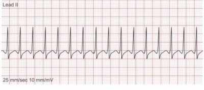
A Administrar adenosina endovenosa.
B Iniciar compressões torácicas.
C Realizar desfibrilação.
D Infundir soro fisiológico 20 mL/kg.
E Transferir para serviço cardiológico de referência.
Questão 856 · Reações adversas · Evolução da lesão · 4000185952Lactente, 2 meses de idade, sexo masculino, está em consulta ambulatorial de rotina. Nascido de termo, alimentado por seio materno exclusivo, sem intercorrências até o momento. Pais estão preocupados com a cicatriz de BCG, que se apresenta conforme imagem abaixo. Nega outras queixas. Peso e estatura Z +1 nas curvas da OMS. O exame da criança não apresenta alterações clínicas. Para este caso está indicado:
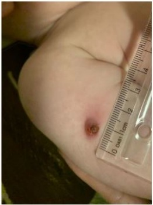
A Realizar prova tuberculínica.
B Iniciar quimioprofilaxia com isoniazida.
C Solicitar coleta de BAAR no suco gástrico.
D Manter seguimento clínico de rotina.
E Investigar imunodeficiência celular.
Questão 857 · Imunoglobulina contra raiva · Indicações · Celulite · 4000185951Escolar, sexo masculino, 6 anos de idade, sem comorbidades, apresenta ferimento em face após mordida de cachorro. Trata-se de animal doméstico da família, refere estar vacinado adequadamente. Mãe tirou fotogra a do dia do acidente (imagem 1) há 3 dias, quando foi realizado primeiro atendimento médico, sendo realizada sutura e orientado apenas uso de analgésico (dipirona) se necessário. Hoje a criança retorna, pois mãe acha que houve piora da lesão, com edema e hiperemia palpebral, com muita di culdade de abrir o olho (imagem 2), além de febre de até 38,7ºC há 1 dia. Ao verificar a caderneta de vacinação, nota-se que ele recebeu 5 doses da vacina DPT, sendo a última dose administrada aos 4 anos de idade. Frente a evolução clínica do paciente, e levando em consideração as orientações de pro laxia de tétano e de raiva humana preconizadas pelo Ministério da Saúde, a conduta indicada no caso é: Imagem 1: primeiro atendimento Imagem 2: três dia depois do acidente

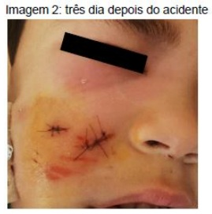
A Liberação para casa com cefalexina oral; reforço vacinal imediato para tétano; aplicar 5 doses de vacina antirrábica (dias 0, 3, 7, 14 e 28) associado a soro antirrábico.
B Abertura dos pontos para drenagem sem necessidade de antibiótico; uma dose de imunoglobulina ou soro antitetânico; observar possíveis sintomas do animal nos 10 dias seguintes ao acidente (considerar esquema profilático vacina antirrábica nos dias 0 e 3).
C Prescrição de antibiótico tópico (mupirocina); aplicação de vacina antitetânica e uma dose de imunoglobulina ou soro antitetânico; aplicar 5 doses de vacina antirrábica (dias 0, 3, 7, 14 e 28) associado a soro antirrábico.
D Aplicação de compressas frias, sem necessidade de antibioticoterapia; duas doses de vacina antitetânica com intervalo de 30 dias; observar possíveis sintomas do animal nos 10 dias seguintes ao acidente (considerar esquema profilático vacina antirrábica nos dias 0 e 3).
E Internação hospitalar com amoxicilina com clavulanato; sem necessidade de reforço vacinal ou qualquer outra medida para tétano; observar possíveis sintomas do animal nos 10 dias seguintes ao acidente (considerar esquema profilático vacina antirrábica nos dias 0 e 3).
Questão 858 · Distúrbios Nutricionais · Tratamento · 4000185948Lactente, sexo masculino, 1 mês de vida, está em consulta de puericultura. Família traz resultado da triagem neonatal (teste do pezinho), sendo que a dosagem de tripsina imunorreativa (IRT) foi de 92,0 ng/mL (normal: até 70 ng/mL). Se a condição pesquisada neste exame se confirmar, estará indicado, entre outras medidas:
A Prescrição de ácido fólico e antibiótico profilático.
B Administração diária de levotiroxina.
C Suspensão do leite materno.
D Suplementação de vitaminas K, D, A e E.
E Proibição do uso de medicamentos como a dipirona.
Questão 859 · Herpangina Doença MãoPéBoca · 4000185938Lactente, 1 ano e 10 meses de idade, sexo feminino, sem comorbidades, apresenta quadro de febre de até 38,3ºC e diarreia iniciados há 2 dias. Há um dia, surgiram lesões hiperemiadas na pele, distribuídas em todo o corpo, mais intensas nas palmas das mãos e plantas dos pés, conforme imagens abaixo. Tendo em vista a etiologia dos achados, assinale a alternativa que contém duas possíveis complicações do quadro apresentado.
A Artrite e panencefalite esclerosante subaguda.
B Aneurisma de artérias coronárias e trombose.
C Exantema após uso de beta-lactâmicos e anemia.
D Miocardite aguda e meningite asséptica.
E Rotura esplênica e anemia hemolítica.
Questão 860 · Conduta · Mães inadequadamente tratadas · 4000185937Recém-nascido, sexo masculino, 4 dias de vida, nascido de termo, parto vaginal sem intercorrências. Está internado na Unidade de Cuidados intermediários recebendo penicilina cristalina para tratamento de sí lis congênita. O diagnóstico da sí lis materna foi realizado no terceiro trimestre de gestação, com VDRL de 1/64, sendo que a mãe recebeu 2 doses de penicilina benzatina, a última dose recebida uma semana antes do parto. No momento do parto, mãe com VDRL de 1/32, RN com VDRL de 1/16. Na internação, colhidos os seguintes exames da criança: líquor com 12 células/mm³, proteinorraquia de 48 mg/dL, VDRL do líquor negativo, fundo de olho normal, potencial evocado auditivo normal, hemograma e radiogra a de ossos longos normais. Hoje, a criança perdeu acesso venoso, realizadas diversas tentativas de nova punção venosa para continuar o tratamento com penicilina cristalina, sem sucesso. A mãe refere que aceita qualquer alternativa terapêutica, seja oral ou intramuscular, mas que não vai permitir novas tentativas de punção. Frente ao desejo da mãe e baseado no quadro clínico da criança e no Protocolo Clínico e Diretrizes Terapêuticas para Prevenção da Transmissão Vertical de HIV, Sí lis e Hepatites Virais, do Ministério da Saúde, qual é a melhor abordagem?
A Trocar o tratamento atual para penicilina procaína intramuscular até completar 10 dias de tratamento.
B Acionar conselho tutelar para tratamento compulsório da criança, tendo em vista a ausência de alternativas terapêuticas e o risco de sequelas a longo prazo.
C Aplicar penicilina benzatina intramuscular em dose única e alta hospitalar com nova dosagem de VDRL em 15 dias.
D Interromper o tratamento, dar alta hospitalar e realizar nova coleta de VDRL em 1 mês. Se VDRL ainda positivo, reinternar para tratar.
E Trocar o tratamento atual para sulfametoxazol-trimetropim via oral, aumentando o tempo de tratamento para 14 dias.
Questão 861 · Massagem cardíaca · 4000185936Recém-nascido de 36 semanas de idade gestacional, não portador de cardiopatia congênita, acaba de nascer de parto vaginal em apneia e hipotônico. Foi levado a berço aquecido, secado e estimulado, aspiradas as vias aéreas, mas se mantém hipotônico, com respiração irregular e frequência cardíaca abaixo de 100 bpm, sendo optado por iniciar ventilação com pressão positiva (VPP) com dispositivo bolsa-valva-máscara. Após 30 segundos de VPP, mantém frequência cardíaca abaixo de 60 bpm, sendo optado pela VPP por meio da cânula traqueal, sendo que ainda mantém frequência cardíaca inferior a 60 bpm. De acordo com as Diretrizes de Reanimação Neonatal da Sociedade Brasileira de Pediatria, neste momento estará indicada a massagem cardíaca que deve ser realizada da seguinte forma:
A 3 ventilações para 1 compressão torácica.
B 3 compressões torácicas para 1 ventilação.
C 15 compressões torácicas para 2 ventilações.
D 30 compressões para 2 ventilações torácicas.
E Compressões torácicas a 100 a 120 vezes/min associado a 1 ventilação a cada 3 segundos.
Questão 862 · Maturação sexual · Maturação sexual no sexo f eminino · 4000185935Em relação aos estágios maturacionais de Tanner, a menarca mais frequentemente ocorre na adolescente que está no:
A M1.
B M2.
C M3.
D M4.
E M5.
Questão 863 · Calendários especiais · 4000185928Paciente masculino, 42 anos, procura atendimento médico para consulta de promoção de saúde. Apresenta histórico médico de infecção por HIV e está em tratamento há 6 anos, sem intercorrências. No momento está em uso de Lamivudina, Tenofovir e Dolutegravir e traz exames laboratoriais com CD4 de 480/ carga viral indetectável. Dentre as alternativas abaixo referentes à vacinação desse paciente, qual a correta?
A Esse paciente pode receber todas as vacinas do calendário vacinal.
B Esse paciente não pode receber a tríplice viral (sarampo, caxumba e rubéola).
C Esse paciente não pode receber a Pneumocócica 13V.
D Esse paciente não pode receber a Meningite ACWY.
E Esse paciente não pode receber a Febre Amarela.
Questão 864 · Situações em que há restrições ao aleitamento materno · 4000185860São contraindicações formais à amamentação:
A hepatite C e HIV.
B hepatite B e HIV.
C HIV e citomegalovírus.
D HIV e antineoplásicos.
E somente HIV.
Questão 865 · Teste do pezinho · Testes de triagem neonatal · 4000185844Lactante, 23 anos, iniciou pré-natal durante o primeiro trimestre com acompanhamento regular sem intercorrências. O seu recém-nascido (RN) nasceu a termo, IG 38+3, nascido de parto normal com um peso 3300 g e altura de 50 cm, Apgar 9 e 10. Permaneceu na unidade neonatal e teve alta hospitalar com 60 horas de vida. Durante este período, realizou teste de triagem neonatal. Sobre a triagem neonatal, pode-se a rmar que
A a amostra deve ser obtida no neonato antes da alta, antes das 48 horas de vida.
B o teste de triagem é muito importante para o diagnóstico de doenças graves como fenilcetonúria, em que, se não houver diagnóstico precoce e tratamento durante os seis primeiros meses, a criança apresentará quadro de deficiência mental, atraso global do desenvolvimento, convulsões, dentre outros.
C a amostra de sangue deve ser obtida pela punção lateral do primeiro quirodáctilo e coletada em papel de filtro.
D a contaminação com iodo, álcool, leite, urina e fezes pode alterar o resultado da triagem.
E a amostra deve ser secada à temperatura ambiente por uma hora e enviada ao laboratório de referência até dez dias da coleta.
Questão 866 · Fatores de risco do bebê e ambientais · Fatores de Risco · Síndrome da Morte Súbita do Lactente · 4000185843A síndrome da morte súbita do lactente (SMSL) pode acarretar intensa preocupação, tanto aos pais como aos médicos pela possibilidade de óbito da criança. No atendimento médico de criança, sobre a puericultura para reduzir os riscos da SMSL, assinale a alternativa correta.
A A SMSL é definida como óbito que ocorre em crianças entre um e seis meses de vida, sem causa esclarecida após autopsia completa, investigação da cena da morte e revisão completa do histórico clínico da criança.
B O lactente até a idade de seis meses deve ser colocado para dormir na posição de decúbito dorsal e, após essa idade, está liberado o decúbito lateral.
C O colchão e o travesseiro do bebê devem ser macios e moles para evitar deformidades cranianas que poderão comprometer o seu desenvolvimento.
D É permitido ao lactente dormir no quarto dos pais, mas não na mesma cama com os pais ou com outras crianças, em sofás e poltronas.
E O uso da chupeta deve ser contraindicado no momento do lactente dormir pois há evidências de que pode piorar o controle autonômico da respiração.
Questão 867 · DNPM Desenvolvimento NeuroPsicoMotor · Introdução · 4000185842Lactente de seis meses mudou recentemente para cidade de Jundiaí. É trazido à sua primeira consulta de puericultura na UBS. Nasceu de parto cesáreo devido à presença de mecônio, com idade gestacional de 38 semanas, Apgar 6 e 8, tendo permanecido por 6 horas em observação, evoluindo bem, sem intercorrências. Alta com a mãe. Ao exame, a pediatra observa que a criança apresenta persistência de alguns reflexos primitivos tais como R Moro e tônico labirintico. Não foram observados problemas motores nessa consulta. Com relação ao desenvolvimento neuropsicomotor desta criança, pode-se afirmar que
A os reflexos primitivos são executados com o envolvimento de níveis superiores do córtex cerebral, sendo movimentos automáticos e estereotipados.
B quando as suas funções não são mais necessárias, os reflexos primitivos são substituídos pelos reflexos posturais.
C nessa faixa etária já deveriam ter desaparecido os reflexos primitivos principalmente os de apoio plantar
D se deve iniciar investigação laboratorial composta por exames de tireoide, nível lactato, nível de piruvato, aminoácidos e ácidos orgânicos e o exame de proteínas no líquor..
E se deve aguardar após um ano de vida da criança para iniciar a investigação de paralisia cerebral.
Questão 868 · Mononucleose · Outros · 4000185841Pedro, 12 anos, iniciou há 7 dias quadro de febre elevada e indisposição. Há 3 dias passou a apresentar dor de garanta e caroços no pescoço. Procurou serviço médico, onde foi prescrita amoxicilina por se tratar de faringite. Fez uso de forma correta até que hoje surgiram manchas vermelhas em tronco e membros. Ao ser examinado, o pediatra encontrou exantema maculopapular, não pruriginoso, em tronco e membros, placa acinzentada em ambas as tonsilas. Estado geral preservado. O diagnóstico mais provável e a conduta mais adequada, neste caso, são:
A escarlatina – amoxicilina+clavulanato por 10 dias.
B dengue – hidratação oral, notificação compulsória da doença e suspender o antibiótico.
C escarlatina – enicilina benzatina na dose 50000 UI/Kg, dose única. Notificação compulsória da doença.
D mononucleose – antitérmicos e repouso. Não notificar. Suspender o antibiótico.
E rubéola – antitérmicos, isolamento e notificação compulsória. Suspender o antibiótico.
Questão 869 · Neuropediatria · 4000185840Sobre o desenvolvimento e distúrbios da linguagem em crianças, assinale a alternativa correta.
A A gagueira é uma característica comum da fala em crianças menores de cinco ou seis anos e sua persistência após essa faixa etária deve ser investigada.
B A orientação médica para os casos de gagueira consiste em pedir aos pais que conduzam a fala da criança com ordens simples de comando, como “fale devagar”, e a criança vai aprendendo, por imitação, com a fala dos pais.
C A criança deve ser estimulada a falar com maior número de pessoas para que possa iniciar uma socialização precoce e assim permitirá que adquira vários modelos de padrões de linguagem, diminuindo o tempo da gagueira.
D Na evidência de qualquer possibilidade de retardo na linguagem, deve-se pedir avaliação da audição.
E Nos casos de anquiloglossia parcial, deve-se indicar a correção cirúrgica antes dos dois anos para evitar problemas na linguagem.
Questão 870 · Particularidades na inf ância · Diagnósticos dif erenciais · Hematologia Pediátrica · 4000185838Sobre as anemias na infância, assinale a alternativa correta.
A A anemia fisiológica pode ocorrer entre a 8a e 12a semana nos recém-nascidos prematuros e 6a a 8a semana nos a termo, nos quais os níveis de hemoglobina podem chegar a 7 g/dL.
B Na anemia fisiológica do recém-nascido, a capacidade de aumentar a produção de eritropoetina em resposta a hipoxia tecidual está embotada, entretanto, eles mantêm a resposta a eritropoetina exógena normal.
C Como regra geral, a contagem de reticulócitos está elevada quando há um alargamento da sobrevida eritrocitária como anemia por deficiência de ferro.
D Nos processos de infecção crônica e outros estados inflamatórios, prejudicam a liberação de ferro ao sistema retículo-endotelial e deve-se iniciar administração de ferro para correção da anemia.
E A síndrome de Kostmann é uma doença congênita grave, com a presença de anemia que deve ser tratada com hemotransfusão nos recém-nascidos por ela acometidos.
Questão 871 · Miopatias autoimunes sistêmicas juvenis · Diagnóstico · Nef rologia Pediátrica · 4000185831Menina de oito anos é levada ao serviço de emergência devido a urina escrura avermelhada. Ela tem sido saudável a vida toda, sem comorbidades. Acompanhante refere que, apesar de apresentar sintomas de infecção respiratória aguda (IRA), foi recentemente, nas férias de julho, visitar a avó no interior. Exame físico normotérmico, normotenso, hidratado, mas apresenta limitações transitórias da deambulação e dor muscular aguda em panturrilhas. Realizado um exame de urina de ta, foi constatado positivo para grupo heme e normal para os demais. Sobre o caso, pode-se afirmar que
A se trata de diagnóstico de miosite aguda benigna da infância.
B o quadro de arbovirose deve ser descartado no diagnóstico diferencial pela ausência de febre.
C o hemograma deve ser solicitado visando a procura de leucocitose e trombocitose pelo quadro de IVAS.
D a velocidade de hemossedimentação (VHS) não é necessária, pois se trata de uma doença benigna da infância com quadro agudo.
E o prognóstico é excelente, com resolução espontânea dos sintomas entre uma semana e um mês, pois sua recorrência é frequente.
Questão 872 · Principais síndromes genéticas e neonatais · 4000185830Criança de cinco meses, nascida de parto normal, a termo, AIG, sem intercorrência, vem à consulta, pois a família relata que a criança não olha mais para ela e tem deterioração do desenvolvimento e sensibilidade muito aguçada a ruídos. Desenvolveu-se de maneira normal até a idade de três meses, aproximadamente. Nessa ocasião, notaram os pais que a criança estava tornando-se apática, indiferente a tudo. O corpo cou “mole”, não permitindo que o tronco e a cabeça se mantivessem rmes. Eles relatam que a crianças tem mais “sobressaltos” que antes. Durante a investigação, foi solicitado um teste nos glóbulos brancos, que identificou a ausência de atividade da Hexosaminidase A, confirmando o diagnóstico de doença de
A Niemann-Pick, tipo A.
B Gaucher.
C Tay-Sachs.
D Krabber.
E Fabry.
Questão 873 · Meningite neonatal · 4000185828Neonato de 15 dias apresenta-se com febre, irritabilidade, recusa alimentar. Pré-natal sem intercorrências, pesquisa de Streptococcus B não realizada, parto cesáreo, a termo. Exame físico: REG, anictérica, eupneica, fontanela anterior tensa e abaulada, rigidez de nuca, desvio do olhar e desidratado, grau 2, hemoglicoteste 68 mg/dL. Iniciada hidratação parenteral e coleta de exames: líquor turvo, proteínas 385 mg/dL, glicose 42 mg/dL, proteína C reativa 0,9, lactato 7,6, hemácias 250, células 9500, sendo 93% neutró los, bacterioscopia evidenciou coco grampositivo. Hemograma: leucocitose com desvio à esquerda, determinando um alto risco para desenvolvimento de sepse neonatal; proteína C reativa elevada; rX de tórax normal. Qual seria o agente etiológico desse quadro?
A Listeria monocytogenes.
B Estreptococo do grupo A.
C Estreptococo do grupo B.
D Spreptococcus pneumoniae.
E Staphylococcus aurus.
Questão 874 · Diagnóstico PósNatal · Quadro Clínico · Forma Clássica Perdedora de Sal · 4000185825Neonato de 7 dias foi admitido no hospital devido a desidratação e vômitos. O exame físico de entrada era normal, exceto por uma hiperpigmentação no nariz. Os exames laboratoriais solicitados mostraram um nível sérico de sódio = 120 mEq/l, potássio 9 mEq/l e glicose = 120 mg/dL. Assinale a alternativa que apresenta o diagnóstico correto.
A Estenose de piloro.
B Hiperplasia congênita de suprarrenal.
C Hipotireoidismo secundário.
D Panhipopituitarismo.
E Hiperaldosteronismo.
Questão 875 · Hepatite B e C · Prevenção · Vacina contra hepatite B · 4000185820Paciente grávida de 23 anos (G0P0) com transtorno por uso de substância ativa (heroína) se apresenta para sua primeira consulta pré-natal com 18 semanas de gestação. O exame físico inicial é normal, o bebê tem batimentos cardíacos fetais normais e a mãe está bem, apesar de sintomas leves de abstinência. Ela tomou a primeira dose da vacina contra hepatite B há 13 meses. Em relação à testagem e vacinação para hepatite B, a ação mais adequada é
A aconselhar a paciente quanto à necessidade de completar essa série de vacinas e recomendar que ela as receba somente após o parto.
B administrar a segunda dose da vacina contra hepatite B agora e não há necessidade de realizar teste sorológico.
C administrar a segunda dose da vacina contra hepatite imediatamente após a obtenção do teste sorológico para hepatite.
D reiniciar o esquema vacinal e aplicar novamente a primeira dose da vacina contra hepatite B agora, sem teste sorológico, pois o cronograma foi interrompido.
E solicitar carga viral sérica para o vírus da hepatite B e administrar a vacina somente se o resultado for negativo.
Questão 876 · Indicações · Prevenção · 4000185797Paciente 30 anos, sexo feminino, sem comorbidades conhecidas, ao fazer trilha na região de Santa Leopoldina foi mordida na mão direita por um macaco, que em seguida fugiu para a mata. Chegou ao Pronto- Socorro cerca de 3 horas após o ocorrido. Observe as afirmativas abaixo e depois responda. I) Em situações conforme a descrita acima, deve prescrever soro e vacina antirrábicos. II) Devido à localização, deve ser abordada como mordedura grave. III) Se a lesão for grande e estiver limpa, deve ser realizado a sutura da ferida para evitar cicatrização por segunda intenção e comprometimento dos movimentos.
A Somente as alternativas l e II estão corretas.
B Somente as alternativas II e III estão corretas.
C Somente as alternativas I e III estão corretas.
D Todas as alternativas estão corretas.
Questão 877 · Curvas de Crescimento · 4000185739O acompanhamento do peso, altura/comprimento e perímetro craniano, este nos 3 primeiros anos de vida, pode orientar o médico sobre as condições de saúde de seu paciente. No acompanhamento do crescimento é correto afirmar:
A Se o recém-nascido apresenta um comprometimento só do peso, é maior a probabilidade de um agravo ter ocorrido nos meses finais da gestação.
B Crianças nascidas com peso inferior a 3 kg são denominadas de baixo peso.
C O crescimento intrauterino é predominantemente dependente do potencial genético da criança.
D A criança cresce aproximadamente 45 cm e duplica de peso em torno do seu primeiro aniversário.
Questão 878 · Características do leite materno · 4000185735O aleitamento materno é a primeira prática alimentar a ser recomendada para a promoção da saúde e adequado desenvolvimento infantil. No aleitamento materno é correto afirmar:
A O leite materno tem mais caseína do que proteína do soro, o que leva a capacidade de provocar esvaziamento gástrico mais lento, deixando a criança mais saciada.
B Em recém-nascidos pré-termos, o leite materno deve ser evitado devido ao risco aumentado de enterocolite necrosante.
C A composição e aspecto do leite materno é bastante heterogêneo e varia com a alimentação, idade e raça da mãe.
D O colostro contém mais proteínas e menos lipídios do que o leite maduro e é rico em imunoglobulinas, em especial a IgA.
Questão 879 · Epidemiologia · Origem · Etiopatogenia · 4000185734A diarreia aguda é uma enfermidade muito comum em pediatria e nela é correto afirmar:
A As parasitoses são as principais causadoras das diarreias infecciosas.
B A diarreia aguda pode ter causas infecciosas e não infecciosas. Mundialmente, as causas não infecciosas apresentam uma maior prevalência e são causadas principalmente por alergias, intolerâncias e erros alimentares.
C Entre os vírus, o rotavírus é o principal responsável por episódios de diarreia aguda, mas geralmente as infecções são autolimitadas e raramente necessitam de hospitalização.
D A diarreia provocada pela Escherichia coli enteropatogênica apresenta muco e é sem sangue, porém pode apresentar dor abdominal, vômitos e febre.
Questão 880 · Aspectos Clínicos · 4000185732O acometimento de crianças por doença exantemática é um dos quadros mais comuns da prática médica, impondo dificuldade diagnóstica frequentemente. Nas doenças exantemáticas é correto afirmar:
A Na rubéola ocorre prostração intensa, febre elevada (auge no aparecimento do exantema), tosse seca e intensa, coriza abundante e olhos hiperemiados, com lacrimejamento e fotofobia. O exantema é maculopapular morbiliforme confluente e pode apresentar manchas de Koplik.
B Na roséola infantil ou exantema súbito, o exantema inicia na face como maculopápulas que confluem, tornando-se uma placa vermelho-rubra, concentrada, principalmente, na região das bochechas. Poupa a região perioral, a testa e o nariz.
C No eritema infeccioso, o exantema pode persistir por um período longo, até mais de 10 dias, e exacerbar-se ou reaparecer quando a criança é exposta ao sol, faz exercício ou quando há alterações de temperatura.
D No sarampo ocorre mal-estar, febre baixa e exantema maculopapular e morbiliforme não confluente que inicia na face e evolui para o tronco. Apresenta adenopatia (retroauricular e occipital) e artralgia.
Questão 881 · Anemia f erropriva na inf ância · Prof ilaxias Ferro Vitaminas D e A · Prof ilaxia Ferro · 4000185731Na anemia ferropriva é correto afirmar:
A São fatores de risco para anemia ferropriva crianças grandes para idade gestacional (GIG), ou com peso superior a 4 kg no nascimento, e lactente em crescimento lento.
B São fatores de risco para anemia ferropriva o clampeamento do cordão umbilical após cinco minutos de vida.
C Nos lactentes em aleitamento materno exclusivo, sem fatores de risco, recomenda-se a suplementação medicamentosa profilática a partir dos 180 dias de vida, até o final do segundo ano.
D Em recém-nascidos prematuros (idade gestacional inferior a 39 semanas) ou com peso inferior a 2.500g, o início da suplementação de ferro deve ocorrer ao nascimento.
Questão 882 · Tratamento Geral · 4000185728Paciente de 3 anos de idade, apresenta há quatro dias febre de início agudo, taquipneia, tosse e diminuição do apetite. Ao exame apresenta frequência respiratória aumentada com presença de tiragem subcostal. O hemograma mostra aumento de leucócitos, neutrófilos bastões aumentados e proteína C reativa (PCR) de 45 mg/dL. Na radiogra a de tórax foi visualizado condensação pulmonar a direita. Nesse quadro é correto afirmar:
A Como os vírus podem ser responsáveis por até 90% das pneumonias no 1° ano de vida e por 50% dos casos na idade escolar, a criança deverá ir para casa com sintomáticos e retornar com 48 horas caso mantenha a febre.
B No Brasil, considerando-se os valores atuais da concentração inibitória mínima (CIM) necessária de penicilina para tratamento da pneumonia adquirida na comunidade (PAC) por pneumococo, há frequentemente cepas com taxas de resistência absoluta. Logo, o tratamento ambulatorial deverá ser feito com dose dobrada de amoxicilina + clavulanato de potássio.
C Uma PCR acima de 40 diferencia PAC viral de bacteriana de forma segura e confirma presença de pneumococo.
D A criança deve ser hospitalizada e iniciado tratamento com antibiótico.
Questão 883 · Síf ilis congênita · Toxoplasmose congênita · Inf ecções congênitas · 4000185726As infecções adquiridas intra-útero ou durante o trabalho de parto são causas de significativa morbidade e mortalidade neonatal. Correlacione a coluna com os nomes de algumas infecções adquiridas intra-útero ou durante o trabalho com a coluna dos sinais e sintomas e a seguir assinale a alternativa com a ordem correta. (1) Sífilis. (2) Rubéola. (3) Toxoplasmose. (4) Citomegalovírus. ( ) Calci cações intracranianas difusas, hidrocefalia, coriorretinite, líquor com inexplicável pleiocitose ou proteína elevada e hepatoesplenomegalia. ( ) Rash maculopapular (palmas das mãos e plantas dos pés), rinite persistente, osteocondrite e periostite e pseudoparalisia de Parrot. ( ) Catarata, cardiopatia congênita (persistência do canal arterial ou estenose pulmonar), perda auditiva e retardo de crescimento intrauterino. ( ) Calcificações periventriculares, microcefalia, trombocitopenia, hepatoesplenomegalia e petéquias.
A 1, 2, 3, 4.
B 2, 3, 1, 4.
C 3, 1, 2, 4.
D 2, 4, 1, 3.
Questão 884 · Família DTP · 4000185722Muitas doenças comuns no Brasil e no mundo deixaram de ser um problema de saúde pública por causa da vacinação massiva da população. Na vacinação da criança e do adolescente é correto afirmar:
A Crianças que não apresentarem cicatriz vacinal após receberem a dose da vacina BCG precisam ser revacinadas.
B A idade mínima para a administração da primeira dose da vacina para rotavírus é de 1 mês e a máxima de 2 anos.
C A recomendação de vacinação contra a febre amarela é para regiões endêmicas do Brasil. Deve ser administrada 1 (uma) dose única em maiores de 6 meses.
D A vacina DTP é contraindicada para crianças a partir de 7 anos de idade.
Questão 885 · Avaliação do Crescimento · Maturação sexual no sexo f eminino · Diagnóstico Nutricional · 4000185694Durante o acompanhamento pediátrico, a avaliação contínua do crescimento permite a identi cação precoce de uma série de agravos à saúde da criança. Neste contexto, em relação ao crescimento e desenvolvimento normal, assinale a opção correta:
A Nos primeiros dias de vida, o bebê perde até 15% do peso de nascimento, que deve estar recuperado em torno do sétimo ao décimo dia de vida.
B Em torno do quarto mês de vida, o peso do nascimento duplica e, próximo ao primeiro aniversário, o peso tríplica.
C As aquisições no domínio motor geralmente ocorrem no sentido distal-proximal e caudalcraniano.
D O perímetro cefálico cresce aproximadamente 18 cm no primeiro ano de vida.
E O primeiro marco da puberdade feminina é a pubarca, ou seja, o desenvolvimento dos pelos pubianos.
Questão 886 · Erros inatos do metabolismo · 4000185693Mãe leva lho de 28 dias de idade para consulta de puericultura em Unidade Básica de Saúde. Lactente em bom estado geral, em aleitamento materno exclusivo, sem alterações no exame físico. A genitora traz o resultado do teste do pezinho, o qual apresentou baixa atividade da enzima galactose-1-fosfato uridil- transferase. Frente a isso, a pediatra solicitou novo exame, o qual confirmou o resultado anterior. Frente ao quadro, trata-se da conduta mais adequada para este lactente:
A Retirar o leite materno e reintroduzir quando a atividade enzimática normalizar.
B Manter o leite materno e acompanhar clinicamente, pois o lactente encontra-se clinicamente estável.
C Retirar o leite materno independente da condição clínica do lactente.
D Manter o leite materno e checar a atividade enzimática periodicamente.
E Retirar o leite materno e introduzir fórmula infantil enquanto não há normalização dos níveis enzimáticos.
Questão 887 · Síndrome do desconf orto respiratório do RN SDR ou Doença da Membrana Hialina DMH · 4000185692Recém-nascido com 5 horas de vida evolui com batimento de aleta nasal, gemência e taquidispneia. Há história materna de diabetes mellitus, sendo indicado parto cesárea por sofrimento fetal. O peso ao nascer foi de 2.300g, IG 35 semanas e RN do sexo masculino. Radiogra a de tórax aponta in ltrado reticulogranular difuso, com presença de broncograma aéreo e aumento de líquido pulmonar. Diante do quadro, qual a hipótese diagnóstica mais provável?
A Síndrome do desconforto respiratório neonatal.
B Pneumonia precoce.
C Cardiopatia congênita.
D Taquipneia transitória do recém-nascido.
E Hipertensão pulmonar persistente neonatal.
Questão 888 · Hiperbilirrubinemia não f isiológica · 4000185691A icterícia corresponde a expressão clínica da hiperbilirrubinemia, e constitui-se em um dos problemas mais frequentes no período neonatal. Um recém-nascido a termo, em aleitamento materno exclusivo, evolui com quadro de icterícia em face com 16 horas de vida. A mãe apresenta tipagem sanguínea tipo O negativo e exame de Coombs indireto negativo. Baseado nesses dados, assinale a alternativa correta:
A Como a icterícia é leve, concentrada em face, o recém-nascido deve apenas ficar sob observação clínica.
B Trata-se de um quadro de icterícia pelo leite materno, visto o aleitamento materno exclusivo.
C Pode se tratar de incompatibilidade Rh, caso o RN seja Rh negativo.
D Trata-se de icterícia patológica e deve ser investigada.
E Trata-se de icterícia fisiológica e, por isso, deve ser iniciada a fototerapia.
Questão 889 · Plano B · 4000185690Menina, 7 meses de idade, eutrófica, em aleitamento materno exclusivo e com boa aceitação, é atendida em uma emergência apresentando quadro de evacuações líquidas em média 06 vezes/dia sem sangue, muco ou pus, há 02 dias. Ao exame físico a criança está irritada, com olhos fundos, mucosas secas, choro sem lágrimas e o sinal da prega desaparece lentamente. Com base nessas informações, assinale a alternativa que apresenta a conduta inicial mais adequada.
A Administrar solução de reidratação oral no serviço, com 60ml/Kg em 06 horas, com posterior reavaliação, suspendendo o aleitamento materno durante a reidratação.
B Administrar solução de reidratação oral no serviço, com 60ml/kg em 04 horas, com posterior reavaliação, mantendo dieta sem lactose durante a reidratação.
C Administrar hidratação via parenteral, com 60ml/kg em 05 horas, com posterior reavaliação, mantendo aleitamento materno durante a reidratação.
D Administrar hidratação via parenteral, com 60ml/kg em 04 horas, com posterior reavaliação, mantendo dieta sem lactose durante a reidratação.
E Administrar solução de reidratação oral no serviço, com 60ml/kg em 04 horas, com posterior reavaliação, mantendo o aleitamento materno durante a reidratação.
Questão 890 · Bronquiolite · 4000185689A bronquiolite viral aguda (BVA) é um diagnóstico frequente de internação hospitalar em pediatria. Ocorre principalmente nos meses de outono e inverno. A doença resulta da obstrução inflamatória das pequenas vias aéreas e possui gravidade variável. Algumas populações de crianças, como recém-nascidos pré-termo, cardiopatas congênitos e imunocomprometidos apresentam maior risco de morbidade e mortalidade. Dito isso, sobre a BVA é correto afirmar que:
A A bronquiolite ocorre principalmente em maiores de 2 anos de idade e tem quadro clínico variável.
B O Vírus Sincicial Respiratório (VSR) é o segundo principal agente etiológico da BVA.
C As infecções pelo VSR conferem imunidade completa, logo não é comum ocorrer reinfecções.
D A profilaxia da BVA com anticorpo monocional humanizado (palivizumabe) é recomendada nos dois primeiros anos de vida para todos os recém nascidos com idade gestacional maior que 36 semanas.
E A BVA geralmente apresenta quadro autolimitado com evolução benigna e a criança normalmente não precisa de nenhuma intervenção.
Questão 891 · Pediatria · 4000185687Pré-escolar de 3 anos, feminino, previamente hígida, dá entrada na emergência com queixa de febre alta (39ºC), vômitos e recusa alimentar há 02 dias. A paciente não apresenta controle es ncteriano e sua mãe relata que notou diminuição nas trocas de fralda devido à diminuição da diurese. Ao exame físico encontra-se irritada, pálida (+/++++), TAx 39ºC, hiperemia perineal e dor á palpação abdominal. Solicitado parcial de urina por saco coletor com presença de intensa flora bacteriana. Neste caso, a conduta correta é:
A Iniciar a antibioticoterapia por via oral Orientar retorno em 48 horas caso a resistência da febre
B Iniciar a antibioticoterapia após coleta parcial da urina e urocultura por saco coletor.
C Iniciar a antibioticoterapia após coleta parcial de urina e urocultura por cateterismo vesical.
D Promover a coleta parcial de urina e urocultura por saco coletor e, em seguida, iniciar a antibioticoterapia.
E Iniciar antibioticoterapia por via intramuscular por 3 dias e orientar retorno em 48h se a febre persistir.
Questão 892 · Contraindicações das vacinas · 4000185686De acordo com o manual de normas de vacinação do Programa Nacional de Imunizações (PNI), a situação que constitui uma contraindicação ás vacinas de bactérias e vírus atenuados na infância é:
A Doença neurológica com sequelas.
B Antecedente familiar com histórico de convulsões.
C Impetigo.
D Desnutrição.
E Uso de 2mg/kg/dia de prednisona durante os últimos 15 dias.
Questão 893 · Desvios da Normalidade · Pediatria · 4000185685Adolescente masculino, 12 anos, é levado ao consultória pediátrico pela mãe, com queixa de não estar crescendo como os outros meninos da mesma idade. A mãe informa que o pai teve baixa altura na infância e puberdade retardada. O exame físico é normal, com desenvolvimento puberal G1P1. O gráfico altura x idade mostra que o paciente encontra-se abaixo do escore Z -2. O pai tem 1,74m de altura e a mãe tem 1,66m. A idade óssea do adolescente é de 10 anos. O diagnóstico mais provável é:
A Hipotireoidismo adquirido.
B Retardo constitucional do crescimento.
C Deficiência do hormônio de crescimento.
D Baixa estatura genética ou familiar.
E Não há alterações no crescimento.
Questão 894 · Icterícia Fisiológica · 4000185559Recém-nascido a termo, 39 semanas de idade, parto vaginal, com peso de nascimento 3.250 gramas, Apgar 9/10, está em aleitamento materno exclusivo. Recebeu alta da maternidade pesando 3.050 gramas. Comparece para consulta com 5 dias de vida, quando a mãe queixa-se que ele está "amarelinho" desde o terceiro dia de vida. Ao exame clínico, o pediatra observa a criança em boas condições clínicas, mamando bem ao seio materno, com as escleras amareladas, icterícia em face, estendendo-se até a linha mamilar. Mãe relata que as fezes estão bem amarelinhas, cor de gema de ovo. Mãe relata que seu grupo sanguíneo é A, com fator Rh positivo. O pediatra solicita exames do recém-nascido, que demonstram os seguintes resultados: Grupo sanguíneo=O; Fator Rh=positivo; Coombs direito=negativo; Bilirrubina Total=11,8mg/dL; Bilirrubina Direta=0,8mg/dL; Bilirrubina indireta=11,0 mg/dL; Reticulócitos=2,5%. Com relação ao quadro clínico descrito acima, assinale a alternativa que apresenta a melhor conduta a ser instituída.
A Indicar internação, pois se trata de icterícia colestática e é necessária extensão de propedêutica.
B Orientar banho de sol e reavaliar o recém-nascido em 48 horas.
C Tranquilizar os pais, pois o diagnóstico mais provável é icterícia fisiológica.
D Suspender o aleitamento materno por 48 horas devido suspeita de icterícia do leite materno.
Questão 895 · Causas · 4000185558Recém-nascidos apresentam risco aumentado de hipoglicemia devido à elevada taxa de utilização de glicose em função de possuírem uma massa cerebral proporcionalmente maior com relação ao tamanho corporal. O diagnóstico precoce, a introdução urgente do tratamento e a prevenção de futuros episódios de hipoglicemia são de fundamental importância para a proteção do cérebro, em desenvolvimento, da carência de glicose. Assinale a alternativa que apresenta situações consideradas de risco para hipoglicemia no período neonatal, nas quais a monitorização glicêmica é recomendada.
A Anquiloglossia; recém-nascido grande para idade gestacional, suspeita ou confirmação de erro inato do metabolismo.
B Eritroblastose fetal; recém-nascido filho de mãe com Diabetes gestacional mal controlada, hipertermia.
C Síndrome Hipóxico-Isquêmica; micropênis ou defeitos de linha média; recém-nascido à termo adequado para idade gestacional.
D Recém-nascido pequeno para idade gestacional, gemelar discordante, com peso 10% inferior ao gemelar maior, desconforto respiratório.
Questão 896 · Reações adversas · 4000185557Você está atendendo em uma Unidade Básica de Saúde e é chamado na sala de vacina para avaliar um lactente de 5 meses de vida, que recebeu a vacina BCG ao nascimento. Hoje, ele apresenta lesão ulcerada com 3 cm de diâmetro, não cicatrizada, no local da aplicação. Com relação ao quadro clínico descrito acima, assinale a alternativa CORRETA.
A Trata-se de evento adverso da vacina BCG, sendo indicada prescrição de isoniazida até cicatrização completa da lesão.
B Trata-se de evolução normal da vacina BCG, sendo orientado aguardar resolução espontânea até os 6 meses de vida.
C Trata-se de evento adverso da vacina BCG, sendo indicada biópsia da lesão e pesquisa de imunodeficiência.
D Trata-se de evolução normal da vacina BCG, sendo orientado apenas curativo com antibiótico tópico.
Questão 897 · Sopro na inf ância · 4000185556A detecção de alterações na ausculta cardíaca, principalmente o sopro, é o motivo mais frequente de encaminhamento para o cardiologista. É indiscutível que o parecer do especialista é essencial para o diagnóstico das cardiopatias, porém, em muitas situações, essas alterações representam variações da normalidade e sopros inocentes. Nesse contexto, torna-se importante uma avaliação pediátrica completa que evite encaminhamentos e exames desnecessários. Assinale a alternativa que apresenta achado ao exame físico que justifique o encaminhamento para avaliação do cardiologista.
A Sopro sistólico intensificado em estados hipercinéticos.
B Sopro ejetivo associado a frêmito em borda esternal esquerda alta.
C Sopro sistólico de baixa intensidade em borda esternal esquerda média.
D Sopro protossistólico ejetivo de baixa intensidade em borda esternal esquerda alta.
Questão 898 · Tratamento · Pediatria · Investigação por imagem · 4000185555Lactente do sexo masculino, 18 meses de idade, comparece ao pronto atendimento devido à febre há 2 dias, prostração (mesmo nos períodos afebris) e diurese fétida. Nega outros sintomas, como tosse, coriza ou diarreia. Não há relato de adoecimento prévio ou uso de antibioticoterapia nos últimos 90 dias. Ao exame: estado geral regular, hipoativo, reativo. Hidratado, hipocorado (+/4+), anictérico e acianótico, febril (38,4°C). Oto/oro/rinoscopia=sem alterações. SN=sem meningismo, pupilas isocóricas e fotorreativas. AR=murmúrio vesicular siológico sem ruídos adventícios, sem esforço. FR: 42 irpm. ACV=ritmo cardíaco regular em 2 tempos, pulsos periféricos cheios, perfusão < 2 segundos. FC: 167 bpm. Abdome livre, sem massas, RHA+. Realizado exame de urina, colhida por sondagem vesical, que evidenciou=17 piócitos p/c; 3 epitélios p/c; 6 hemácias p/c; nitrito positivo; ora aumentada. Gram de gota=presença de bastonetes gram-negativos. Urocultura=em andamento. Com relação ao quadro clínico descrito acima, assinale a alternativa que apresenta a conduta mais adequada nesse momento.
A Realização de uretrocistografia miccional ao término do tratamento.
B Tratamento com nitrofurantoína (5 mg/kg/dia) por 10 dias.
C Coleta de nova amostra de urina pelo método ""clean catch"".
D Prescrição de gentamicina (6 mg/kg/dia).
Questão 899 · Abordagem do RGE Fisiológico · Pediatria · 4000185554Lactente do sexo masculino, 4 meses de vida, é trazido à consulta de puericultura e a família queixa de re uxo. São relatadas diversas regurgitações ao longo do dia, de conteúdo lácteo, habitualmente após as mamadas. O quadro teve início há cerca de um mês. Além disso, apresenta irritabilidade, caracterizada por choro intenso mais evidente no nal do dia. A criança nasceu a termo prévios, pesando 3.045 gramas. Pré- natal completo e sem intercorrências, sem relato de adoecimentos prévios. Está em aleitamento materno exclusivo. Exame físico sem alterações, peso: 6,7 kg. Com relação ao quadro clínico descrito acima, assinale a alternativa que apresenta a conduta mais adequada nesse momento.
A Orientação de medidas posturais e redução do volume das mamadas.
B Prescrição de domperidona associada à ranitidina por 4 semanas.
C Prescrição de inibidor de bomba de prótons (dose de 1mg/kg/dia).
D Solicitação de radiografia contrastada de esôfago, estômago e duodeno (reed).
Questão 900 · Passos iniciais · 4000185553RN sexo masculino, idade gestacional 41 semanas + 1 dia, APGAR 7/8, nascido em 21/07/2022, parto cesáreo, nasceu tinto em mecônio. Apresentou choro fraco ao nascimento, extremidades cianóticas, frequência cardíaca de 120 bpm e boa movimentação. Sua mãe de 39 anos, apresentou Diabetes gestacional que foi controlada com insulina. Não houve outras intercorrências gestacionais. Pré-natal adequado com relato de um aborto espontânea há 2 dois anos. Ultrassonogra a em 20/07/2022 estimou peso de 2.750 g. Com relação ao quadro clínico descrito acima e os seus conhecimentos sobre assistência ao recém-nascido em sala de parto, assinale a alternativa que apresenta ações para a condução do paciente em questão.
A Levar RN à mesa de reanimação em posição de Trendelenbur, iniciar VPP (ventilação com pressão positiva) com máscara facial e ar ambiente nos primeiros 60 segundos de vida, após aspirar cavidade oral e narinas com sonda de aspiração traqueal.
B Levar RN à mesa de reanimação em decúbito horizontal, diante das boas condições do paciente, realizar leve extensão do pescoço (com ou sem coxim sob os ombros), aspirar boca e depois narinas com sonda de aspiração traqueal, secar, desprezar campos úmidos e reposicionar cabeça.
C Levar RN à mesa de reanimação em decúbito horizontal. Se houver melhora da coloração da pele e recuperação da vitalidade no primeiro minuto de vida (gold minute) não se deve realizar nenhum procedimento e o contato pele a pele deve ser instituído assim como a tentativa de iniciar a amamentação.
D Levar RN à mesa de reanimação em posição de Trendelenburg, se mecônio espesso, aspirar boca e narinas com sonda traqueal, realizar laringoscopia seguida de intubação traqueal e aspiração por cânula que deve ser retirada gradativamente. Deve-se realizar uma única aspiração.
Questão 901 · Prof ilaxia Ferro · 4000185552Recém-nascido com 4 semanas de vida, vem à primeira consulta após alta hospitalar. Nasceu prematuro — 33 semanas de gestação, de parto normal, com peso ao nascimento de 1.650 g. Em aleitamento materno exclusivo com boa progressão ponderal. Com relação ao quadro clínico descrito acima, de acordo com a Sociedade Brasileira de Pediatria, assinale a alternativa CORRETA em relação à suplementação de ferro elementar para esta criança.
A 1 mg de ferro elementar/kg/dia, iniciando aos 90 dias vida até o 24º mês de vida.
B 1 mg de ferro elementar/kg/dia, iniciando aos 180 dias de vida até o 24º mês de vida.
C 2 mg de ferro elementar/kg/dia, iniciando com 30 dias de vida, durante um ano. Após esse prazo, 1 mg/kg/dia mais um ano.
D 4 mg de ferro elementar/kg/dia, iniciando com 30 dias de vida, durante um ano. Após esse prazo, 1 mg/kg/dia mais um ano.
Questão 902 · Idade entre 3 meses e 36 meses · 4000185549Lactente do sexo masculino, 9 meses de idade, vai ao pronto atendimento por apresentar febre há 72 horas, com temperatura máxima 38,5º C e picos febris a cada 6 horas, apresenta ainda irritabilidade associada a períodos de choro. Mãe nega outros sintomas. História pregressa, nascido a termo, gestação sem intercorrências, crescimento e desenvolvimento adequados, primeiro atendimento em serviço de urgência. Exame físico completo sem alterações. Com relação ao quadro clínico descrito acima, assinale a alternativa que apresenta qual a conduta a ser tomada neste momento.
A Solicitar rastreio urinário, com urina rotina e urocultura.
B Orientar hidratação oral e retorno para reavaliação em 24 horas.
C Internação hospitalar para antibioticoterapia venosa.
D A punção lombar é mandatória e imediata neste caso.
Questão 903 · Vacina contra rotavírus · Coadministração de vacinas · Calendário inf antil · 4000185547Paciente do sexo masculino, 1 ano e 6 meses de idade, foi adotado há 1 semana e a família procurou atendimento no posto de saúde para uma avaliação. No histórico do médico consta a realização de pré-natal incompleto, mas gestação sem intercorrência. Lactente hígido, nascido em boas condições. Na avaliação foi observada uma tosse discreta que já havia sido medicada com prednisolona 1 mg/kg/dia por 5 dias com última dose há 24 horas. Não foram notadas alterações significativas ao exame físico. O paciente estava no percentil 50 para peso e estatura e não apresentava cicatriz da BCG, embora constasse no cartão vacinal a sua aplicação. Notouse, porém, atraso na dose de algumas vacinas. Com relação ao quadro clínico descrito acima, considerando o paciente em questão, bem como as orientações preconizadas pelo Programa Nacional de Imunizações, assinale a alternativa que apresenta as orientações CORRETAS.
A Esse paciente deve ser revacinado com BCG, mesmo constando a aplicação ao nascimento, diante da ausência de cicatriz vacinal.
B O paciente deveria ter recebido a vacina contra febre amarela aos 9 meses de idade, podendo ser realizada caso esteja em atraso.
C Considerando que o paciente recebeu apenas duas doses contra rotavírus, a terceira dose deve ser aplicada imediatamente.
D As vacinas inativadas que estiverem em atraso podem ser realizadas sem intervalo entre as aplicações.
Questão 904 · Teste do olhinho · Teste do coraçãozinho · Teste do pezinho · 4000185546Após o nascimento, o ideal para o bebê é permanecer ao lado da mãe. Na maternidade, o alojamento conjunto é o sistema hospitalar que permite que os dois quem juntos, por tempo integral, até a alta. No período de permanência hospitalar a realização das triagens neonatais universais deve ser garantida. Baseando-se nas triagens neonatais universais, assinale a alternativa CORRETA.
A O teste do reflexo vermelho (TRV) é um exame para triagem precoce de problemas oftalmológicos congênitos que comprometem a transparência dos meios oculares. Diante de TRV alterado, um novo exame deve ser realizado em 1 hora e persistindo alteração o RN deverá ser encaminhado para o oftalmologista.
B O RN deve ser submetido ao ""teste da orelhinha"" antes da alta hospitalar, no máximo no seu primeiro mês de vida. O potencial evocado auditivo de tronco encefálico automático está indicado para crianças sem indicadores de risco para deficiência auditiva e a emissões otoacústicas evocadas em crianças com indicadores de risco.
C O teste da oximetria deve ser feito a partir de 24 horas de nascimento. A aferição é feita colocando-se o sensor do oxímetro em membro superior esquerdo e no membro inferior esquerdo ou direito. Saturação de oxigênio menor que 95% ou diferença igual ou maior que 3% entre as medidas obriga a uma nova aferição.
D O ""teste do pezinho"" básico disponibilizado pelo SUS é capaz de detectar até seis tipos de doenças (fenilcetonúria, hipotireoidismo congênito, fibrose cística, anemia falciforme, hiperplasia adrenal congênita e deficiência de biotinidase. Em maio de 2021 foi sancionada a Lei n.º 14.154 que amplia o número de doenças rastreadas.
Questão 905 · Fisiologia do aleitamento materno · Pediatria · 4000185525Mulher de 23 anos, primípara, no 2° dia após o parto relata preocupação quanto ao volume e composição do leite materno. Apresenta as mamas ácidas e está amamentando em livre demanda. Com relação à amamentação, assinale a opção CORRETA quanto às orientações a serem dadas a esta paciente.
A A apojadura ocorre nas primeiras 24 horas após o nascimento, devendo ser investigadas alterações do sistema nervoso central materno buscando entender a causa da baixa produção láctea
B No pós-parto imediato observa-se a liberação do leite de transição, rico em carboidratos. A ordenha deve ser estimulada e a complementação com fórmula láctea ao recém-nascido é recomendada
C Nos primeiros dias pós-parto observa-se a saída de colostro, rico em proteína e anticorpos: a apojadura é comum acontecer no terceiro dia, sendo estimulada pela sucção do recém-nascido
D O leite materno é altamente nutritivo após a apojadura: previamente a este momento deve ser avaliada a composição e volume de liberação láctea para recomendar a complementação na amamentação
Questão 906 · Exame f ísico do Recémnascido · Cuidados pósnatais · 4000185468Em relação aos cuidados com o recém-nascido é CORRETO afirmar:
A Em recém-nascidos prematuros, os banhos devem ser realizados utilizando esponjas, pois causam menor variabilidade de temperatura
B O primeiro banho de recém-nascidos filhos de mães soropositivas para o HIV deve ser realizado o mais precocemente possível
C O vérnix deve ser removido do recém-nascido o mais precocemente possível
D Os sabonetes com pH alcalino são os ideais para o banho de recém-nascidos
Questão 907 · Teste do olhinho · Teste do coraçãozinho · Teste do pezinho · 4000185467Em relação aos testes de triagem neonatal para rastreamento de doenças, é ERRADO afirmar:
A A perda auditiva encontrada através do teste ""auditivo"", geralmente é bilateral
B O teste do ""olhinho"" consiste na identificação de um reflexo vermelho que aparece quando um feixe de luz ilumina os olhos do recém-nascido
C O teste do ""pezinho"" deve ser realizado de preferência entre o terceiro e quinto dia de vida
D O teste do ""coraçãozinho"" consiste na verificação da saturação de oxigênio, sendo importante na identificação de cardiopatias, principalmente a coarctação da aorta
Questão 908 · Pediatria · Amamentação Aleitamento Materno · 4000185466Com o tema "apoiar a amamentação é cuidar do futuro", o Ministério da Saúde lançou em agosto de 2022, a Campanha Nacional de Amamentação 2022, em alusão à Semana Mundial da Amamentação. O mês de agosto é conhecido como "Agosto Dourado" por simbolizar o incentivo ao aleitamento materno – a cor dourada está relacionada ao padrão ouro de qualidade do leite humano." Fonte: br/assuntos/noticias/2022/agosto/ministerio-da-saude-lancacampanha-na-semana-nacional-de- amamentacao); A informação ERRADA sobre o aleitamento materno é:
A A apojadura (""descida do leite"") ocorre em geral nas primeiras 48h após o parto, quando este ocorrer por via vaginal
B A gestação de uma nova criança não é motivo para interromper o aleitamento materno, exceto quando há risco de abortamento ou trabalho de parto prematuro
C Apesar da composição do leite ser semelhante para todas as mulheres, pequenas variações ocorrem para adaptar o leite às necessidades específicas
D O recém-nascido deve ficar em contato pele a pele com a mãe sem panos ou roupas entre eles, por pelo menos uma hora, respeitando o desejo da mulher
Questão 909 · Vacina BCG · ImunizaçõesVacinação · 4000185465Em relação às imunizações é ERRADO afirmar:
A A maioria das crianças com alergia ao ovo não tem reações adversas à vacina tríplice viral (SRC), não havendo contraindicação ao seu uso
B A presença de cicatriz vacinal de BCG indica proteção ou imunidade contra a tuberculose
C A vacina de Dengue aplicada em pessoas não infectadas previamente, aumenta o risco de doença grave
D A vacina inativada da poliomielite (VIP) imuniza apenas o indivíduo vacinado não proporcionando imunidade secundária entre os contatos
Questão 910 · Desnutrição · Pediatria · 4000185464Você atende na Unidade básica de saúde uma criança de dois anos e seis meses de idade com história de ganho de peso insu ciente e avaliação de peso em escore Z (curvas da OMS) abaixo do escore Z – 3. A equipe de saúde realiza o acompanhamento da família e conseguirá garantir a cesta básica e alimentação adequada para a criança. Os cuidados durante o acompanhamento dessa criança são muito importantes para sua recuperação nutricional. Assinale a alternativa com orientação ERRADA:
A A suplementação de ferro e vitamina D deve ser avaliada durante o acompanhamento
B Se a criança continuar perdendo peso por mais de um mês e nenhuma mudança na alimentação ajudar, refira a criança a um serviço de suporte nutricional
C Se a criança estiver ganhando pelo menos 15g/kg/dia, elogiar a mãe e incentivá-la a continuar a alimentação saudável
D Toda vez que a criança retornar, deve ser pesada e calculada a média de ganho de peso, no intervalo entre a consulta atual e a última consulta
Revisar: possível letra faltando em enunciado
Questão 911 · Alimentação do lactente · 4000185463Em relação à alimentação do lactente é CORRETO afirmar:
A A alimentação complementar deve ser introduzida aos quatro meses de idade, naqueles usando fórmula infantil
B Ao introduzir a primeira papa principal deve-se evitar o ovo
C Não há necessidade de suplementação de ferro nos primeiros seis meses de vida se o lactente estiver em uso de leite materno exclusivo e sem fatores de risco
D O aleitamento materno é recomendado até os 12 meses de idade
Questão 912 · Plano A · 4000185460Maria, de oito meses de idade, previamente saudável, está há 72 horas com diarreia líquida com rajas de sangue, tenesmo e vômitos esporádicos. O exame físico mostra bom estado geral, pulso cheio, enchimento capilar de 2 segundos. Eupneica com frequência cardíaca de 130bpm. Assinale a alternativa considerada ERRADA no manejo desta paciente:
A Iniciar terapia de reidratação oral (TRO) e suspender temporariamente a dieta
B Prescrever azitromicina pois a presença de sangue nas fezes sugere infecção bacteriana, provavelmente Shiguella
C Prescrever ondansetrona nas primeiras 24 horas e aumentar a oferta de líquidos como chás e sucos
D Suspender temporariamente a lactose da dieta
Questão 913 · Diagnóstico · Pediatria · 4000185459Criança de quatro anos de idade é encaminhada ao Posto de Saúde para investigação de tuberculose pulmonar. Relato de contato com o avô, o qual foi recentemente diagnosticado com a doença. Em relação ao diagnóstico da tuberculose nessa criança, é CORRETO afirmar:
A A febre, tosse, adinamia, expectoração, emagrecimento, sudorese por uma semana são sintomas característicos da doença
B A prova tuberculínica é utilizada para diagnóstico da infecção latente (ILTB) e não é utilizada para o diagnóstico da doença ativa
C O diagnóstico da doença deve ser excluído diante da baciloscopia ou teste rápido molecular (TRM- TB) negativo no escarro
D O risco de adoecimento é maior nos primeiros dois anos após a primo-infecção
Questão 914 · Calendário dos adolescentes · 4000185457Adolescente de 12 anos de idade procura o Posto de Saúde para atualização do cartão vacinal. A mãe informa que não procurou o Posto de Saúde nos últimos três anos devido à pandemia de Covid-19 e que agora gostaria de regularizar a situação vacinal do seu lho. Em relação à vacinação desse adolescente, é CORRETO afirmar:
A Se o adolescente ainda não recebeu nenhuma dose da vacina contra o HPV, deve receber apenas uma dose aos 12 anos
B Se o adolescente ainda não recebeu nenhuma dose da vacina de febre amarela, deve receber duas doses com intervalo de um mês entre elas
C Se o adolescente recebeu duas doses da vacina tríplice viral, deve receber um reforço na adolescência
D Se o adolescente recebeu três doses da vacina meningocócica C, deve receber a vacina ACWY
Questão 915 · Fisiopatologia · 4000185455Febre é uma das queixas mais frequentes em pronto-atendimentos e um dos sintomas que causam maiores preocupações aos pais e responsáveis. Sobre quadros de febre aguda é CORRETO afirmar:
A É recomendado o uso de antitérmicos em todas as situações que a temperatura atinja valores acima de 37,8 garsu Celsius
B Febre alta tem relação com quadros bacterianos e de maior gravidade
C O uso de antitérmicos ""preventivos"" antes de aplicação de vacinas é eficaz, seguro e deve ser recomendado
D Recém-nascidos podem não apresentar febre em vigência de infecção
Questão 916 · Coarctação de aorta · Coarctação da aorta · Coarctação da aorta · 4000185449Jovem do sexo masculino, 22 anos, é encaminhado ao ambulatório para avaliação de hipertensão arterial sistêmica. Não apresenta antecedentes familiares relevantes e não faz uso de medicamentos ou substâncias ilícitas. O exame físico revela: desdobramento siológico de B2 e hiperfonese da segunda bulha em foco aórtico, além de sopro sistólico ejetivo ao longo do bordo esternal esquerdo. O paciente traz uma radiogra a de tórax com o seguinte achado, ampliado no detalhe: Em face do exposto, é correto afirmar que a causa mais provável da hipertensão arterial é secundária
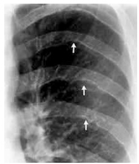
A à coarctação da aorta.
B à síndrome de Cushing.
C ao hiperparatireoidismo.
D à apneia do sono.
E ao hipotireoidismo.
Questão 917 · Inibição da amamentação · Situações em que há restrições ao aleitamento materno · 4000185413Em relação à alimentação de um recém-nascido, lho de mãe HIV positiva, em uso de antirretroviral, o Ministério da Saúde recomenda oferecer:
A aleitamento materno exclusivo.
B aleitamento materno cruzado.
C leite materno pausterizado.
D aleitamento misto.
E fórmula infantil.
Questão 918 · 10 meses · 4000185412Para avaliar o desenvolvimento motor de um lactente de 10 meses, está indicado verificar a capacidade de
A pegar objetos e levar à boca.
B sustentar o seu corpo nas próprias pernas.
C andar sem apoio.
D sentar-se com e sem apoio.
E demonstrar lateralidade – se é dextro ou canhoto.
Questão 919 · Passos iniciais · 4000185411Considere a seguinte situação clínica para responder à questão Gestante com diagnóstico de doença hipertensiva da gestação, dá entrada no centro obstétrico com 29 semanas de idade gestacional, em pré-eclâmpsia e com sinais de sofrimento fetal agudo, sendo submetida a parto cesáreo. Ao ser extraído, o recém-nascido está hipotônico e não apresenta movimento respiratório. Em relação ao clampeamento de cordão, está indicado ser realizado
A imediatamente, para não atrasar os procedimentos de reanimação.
B logo após o cordão ser ordenhado, para garantir bons índices hematimétricos da criança.
C após 30 segundos de nascimento, para melhor estabilidade cardiovascular do recém-nascido.
D entre 30 e 60 segundos, para favorecer a estabilização cardiovascular materna e do bebê.
E após 60 segundos, para permitir a estabilização da pressão arterial materna.
Questão 920 · CPAP · 4000185410Considere a seguinte situação clínica para responder à questão Gestante com diagnóstico de doença hipertensiva da gestação, dá entrada no centro obstétrico com 29 semanas de idade gestacional, em pré-eclâmpsia e com sinais de sofrimento fetal agudo, sendo submetida a parto cesáreo. Ao ser extraído, o recém-nascido está hipotônico e não apresenta movimento respiratório. Após o clampeamento do cordão o recém-nascido foi levado para a mesa de reanimação, colocado sob fonte de calor radiante, em saco plástico e com touca, posicionado em decúbito dorsal com o pescoço em leve extensão e monitorado. Após esses procedimentos iniciais realizados no primeiro minuto, verifica-se que o recém-nascido apresenta frequência cardíaca de 120 bpm, movimentos respiratórios espontâneos, porém com sinais de desconforto respiratório, saturando 67%. Nesse momento está indicado
A aspirar as vias aéreas.
B aplicar CPAP por meio de ventilador mecânico manual e máscara facial.
C realizar ventilação com pressão positiva e oferta de O₂ a 30%.
D proceder intubação orotraqueal.
E iniciar massagem cardíaca.
Questão 921 · Conduta · 4000185409Recém-nascido à termo, lho de mãe diabética, com 3 horas de vida, glicemia de 38 mg/dL, mas está assintomático. A conduta indicada nesse momento é
A oferecer leite materno e repetir a dosagem após 30 minutos.
B oferecer solução glicosada por via oral.
C realizar minibolo intravenoso com 2 mL/kg de solução glicosada a 10%.
D prescrever infusão intravenosa de soro glicosado com velocidade de infusão de 4 mg/kg/min.
E oferecer 20 mL de fórmula infantil em copinho.
Questão 922 · Mononucleose · Mononucleose Inf ecciosa · 4000185408Adolescente de 14 anos, previamente hígida, está em uso de amoxicilina há 4 dias devido a quadro de amigdalite. Retorna ao pronto-socorro por persistência da febre, prostração e aparecimento de edema palpebral e manchas na pele. Ao exame físico, está em regular estado geral, apresentando edema palpebral discreto, adenomegalia cervical bilateral, orofaringe hiperemiada com exsudato em amígdalas, esplenomegalia discreta e rash cutâneo. De acordo com a principal hipótese diagnóstica, a conduta indicada é
A prescrever anti-histamínico e trocar a amoxicilina para macrolídeo, pois está apresentando reação alérgica ao antibiótico.
B fazer dose de penicilina benzatina, pois o quadro é compatível com escarlatina.
C substituir o antibiótico para cefalosporina de segunda geração, para ampliar a cobertura para agente produtor de beta-lactamase.
D fazer teste rápido e colher cultura de orofaringe para definir o antimicrobiano a ser prescrito.
E suspender o antibiótico e solicitar sorologia para Epstein-Barr.
Questão 923 · Trato Gastrointestinal · Sistema Respiratório · 4000185406Menino de 4 anos, está internado em unidade de terapia intensiva devido pneumonia e insu ciência respiratória. A cultura de secreção traqueal revelou antecedente íleo meconical ao nascimento, pneumonias de repetição, diarreia crônica e baixo ganho pôndero-estatural. A doença de base provável é:
A Síndrome de imunodeficiência adquirida.
B Imunodeficiência combinada grave.
C Fibrose cítica.
D Tuberculose.
E Deficiência de alfa-1 antitripsina.
Questão 924 · Aspectos Clínicos Quadro clínico e Diagnóstico · 4000185405Menina de 3 anos de idade, previamente hígida, há 1 semana iniciou quadro febril associado a hiperemia conjuntival. Foi avaliada no início do quadro, sendo orientado apenas antitérmico. Retorna ao pronto-socorro devido persistência do quadro e aparecimento de exantema. Ao exame físico, está em regular estado geral, febril, com hiperemia conjuntival bilateral sem secreção, hiperemia de mucosa oral, edema de dedos de mãos e pés, apresentando linfonodo cervical unilateral de 2 cm e exantema macular em tronco, membros, acompanhado de descamação em períneo. A principal hipótese diagnóstica é:
A Escarlatina.
B Sarampo.
C Síndrome mão-pé-boca.
D Adenite bacteriana.
E Doença de Kawasaki.
Questão 925 · Epinef rina · Diagnóstico · 4000185404Adolescente de 14 anos, previamente hígida, iniciou com quadro súbito de falta de ar, dor abdominal e edema de lábios, 2 horas após retornar de uma festa. Ao exame físico, apresentando taquicardia, desconforto respiratório, edema de lábios e língua, estridor inspiratório e placas eritematosas em pescoço e tronco. De acordo com a principal hipótese diagnóstica, a conduta inicial deve ser a prescrição de:
A Salbutamol inalatório.
B Metilprednisolona intravenosa.
C Prometazina intramuscular.
D Adrenalina intramuscular.
E Prednisona oral.
Questão 926 · Soro de reidratação oral · 4000185400Menino com 6 meses de idade foi levado ao pronto- -socorro com quadro de febre, diarreia liquida, vômitos e diminuição da aceitação alimentar e da diurese há 2 dias. Ao exame físico, está em regular estado geral, irritado, com fontanela deprimida, com mucosas secas, turgor da pele diminuído, taquicárdico, com pulso periférico diminuído e tempo de enchimento capilar de 4 segundos. A conduta inicialmente indicada é
A dar alta com orientação de soro de reidratação oral, ondansetrona, antitérmico e retorno se sinais de alerta.
B iniciar terapia de reidratação oral 50 mL/kg a ser oferecida em ambiente hospitalar no período de 4 a 6 horas, com cálculo do índice de retenção após a 1a hora.
C prescrever metoclopramida intramuscular e oferecer terapia de reidratação oral 100 mL/kg, por sonda nasogástrica, no período de 4 a 6 horas.
D prescrever soro de expansão intravenoso – soro fisiológico 20 mL/kg em 20 minutos.
E internar e introduzir soro de manutenção 100 kcal/kg em 24 horas, utilizando-se soro glicosado a 10% associado a soro fisiológico e cloreto de potássio 19,1%.
Questão 927 · Vacina pneumo 23valente · Vacinas pneumocócicas · Indicações · 4000185395Para qual caso descrito abaixo está indicado a vacina pneumocócica 23-valente?
A Menino de 6 meses de idade com quadro de imunodeficiência combinada grave.
B Menina de 1 ano com episódios de pneumonias de repetição.
C Menino de 3 anos com síndrome de Down.
D Menina de 5 anos de idade com antecedente de prematuridade.
E Adolescente de 14 anos de idade com asma não controlada.
Questão 928 · Rítmo Cardíaco · Terapia Farmacológica · 4000185394Menino de 2 anos de idade, com antecedente de cardiopatia congênita operada, está na sala de emergência devido parada cardiorrespiratória. Foram iniciadas as compressões torácicas e ventilação com ambu e máscara, mantendo pulsos ausentes. Ao ser acoplado ao monitor, verifica-se atividade elétrica com rimo lento, QRS alargado. A conduta, nesse momento, deve ser:
A administrar epinefrina 0,01 mg/kg.
B infundir atropina 0,02 mg/kg.
C aplicar desfibrilação 2 J/kg.
D realizar intubação orotraqueal.
E parar as manobras de ressuscitação.
Questão 929 · Doenças exantemáticas · Síndromes f ebris · 4000185363Sobre a varíola do macaco, assinale a alternativa correta.
A Trata-se de uma zoonose que apareceu recentemente, totalmente desconhecida pela ciência.
B A transmissibilidade da doença se dá principalmente por via aérea, mas pode ocorrer por contato íntimo.
C Os fatos recentes indicam que haverá uma pandemia da doença semelhante a de covid-19.
D O paciente confirmado deve se manter em isolamento até que a erupção cutânea esteja totalmente resolvida.
E Trata-se de uma arbovirose transmitida para humanos por meio do contato com animal ou humano infectado, de alta letalidade.
Questão 930 · Idade de introdução e f requência · 4000185317Menino, 13 meses, em aleitamento materno exclusivo, pesa 11,0Kg e a curva de crescimento acompanha o mesmo percentil desde o nascimento. Sua mãe o leva à Unidade Básica de Saúde para orientação pois precisará complementar a alimentação para trabalhar fora de casa. A família é vegetariana e pretende manter essa prática na dieta da criança. Indique a partir de qual período de vida a introdução de novos alimentos deve ser incentivada:
A 5 meses.
B 6 meses.
C 12 meses.
D 24 meses.
Questão 931 · Introdução alimentar · 4000185316Menino, 13 meses, em aleitamento materno exclusivo, pesa 11,0Kg e a curva de crescimento acompanha o mesmo percentil desde o nascimento. Sua mãe o leva à Unidade Básica de Saúde para orientação pois precisará complementar a alimentação para trabalhar fora de casa. A família é vegetariana e pretende manter essa prática na dieta da criança. Indique os dois nutrientes, oligoelementos, que devem ser oferecidos como complementação na dieta dessa criança:
A Ferro e Zinco.
B Zinco e Cálcio.
C Ferro e Magnésio.
D Cálcio e Magnésio.
Questão 932 · Introdução alimentar · Vegetarianismo e veganismo na inf ância · 4000185315Menino, 13 meses, em aleitamento materno exclusivo, pesa 11,0Kg e a curva de crescimento acompanha o mesmo percentil desde o nascimento. Sua mãe o leva à Unidade Básica de Saúde para orientação pois precisará complementar a alimentação para trabalhar fora de casa. A família é vegetariana e pretende manter essa prática na dieta da criança. Quanto à presença de aminoácidos essenciais na alimentação vegetariana, é correto afirmar:
A Histidina, Leucina e Isoleucina não são encontrados na alimentação vegetariana.
B Metionina, Cisteína e Histidina não são encontrados na alimentação vegetariana.
C Triptófano, Valina e Metionina não são encontrados na alimentação vegetariana.
D Todos os aminoácidos essenciais necessários à dieta são encontrados na alimentação vegetariana.
Questão 933 · Fisiologia da Puberdade · Maturação sexual no sexo f eminino · 4000185314Menina,14 anos de idade, é levada ao Ambulatório de Pediatria com relato de ausência de menarca. Sua mãe apresentou a menarca aos 13 anos. Posiciona-se adequadamente nos gráficos ponderal e estatural. Veri ca- se que apresenta caracteres sexuais secundários compatíveis com os critérios de Tanner M5P4 e não há alterações ao exame segmentar. Considerando o caso clinico, indique a que parâmetros os critérios de Tanner se referem:
A Axilarca, telarca e pubarca.
B Axilarca e pubarca.
C Axilarca e telarca.
D Telarca e pubarca.
Revisar: possível letra faltando em enunciado
Questão 934 · Fisiologia da Puberdade · 4000185313Menina,14 anos de idade, é levada ao Ambulatório de Pediatria com relato de ausência de menarca. Sua mãe apresentou a menarca aos 13 anos. Posiciona-se adequadamente nos gráficos ponderal e estatural. Veri ca- se que apresenta caracteres sexuais secundários compatíveis com os critérios de Tanner M5P4 e não há alterações ao exame segmentar. Indique o diagnóstico provável para esse caso:
A Menarca tardia.
B Puberdade fisiológica.
C Atraso puberal a esclarecer.
D Atraso puberal constitucional.
Revisar: possível letra faltando em enunciado
Questão 935 · Fisiologia da Puberdade · 4000185312Menina,14 anos de idade, é levada ao Ambulatório de Pediatria com relato de ausência de menarca. Sua mãe apresentou a menarca aos 13 anos. Posiciona-se adequadamente nos gráficos ponderal e estatural. Veri ca- se que apresenta caracteres sexuais secundários compatíveis com os critérios de Tanner M5P4 e não há alterações ao exame segmentar. Indique a conduta adequada a ser adotada no caso:
A Orientar aos pais e expectar.
B Prescrever medroxiprogesterona.
C Solicitar dosagem de TSH e FSH.
D Solicitar ultrassonografia de útero e de ovários.
Revisar: possível letra faltando em enunciado
Questão 936 · Teste do olhinho · 4000185308Menino recém-nascido pré-termo, limítrofe, apresenta peso adequado para a idade gestacional. No prontuário o Teste do Coraçãozinho foi registrado como “normal”. Quanto ao Teste da Orelhinha a genitora foi orientada a agendar em um serviço de Fonoaudiologia, após a alta. O Teste de Bruckner (Teste do Olhinho), realizado na maternidade imediatamente antes do horário previsto para a alta, apresenta “reflexo vermelho bilateral”. Considerando o caso, indique a conduta adequada, quanto ao achado no Teste do Olhinho:
A Relatar teste normal aos familiares.
B Repetir o teste na maternidade em 24 horas.
C Solicitar Mapeamento de Retina pelo oftalmologista.
D Repetir o teste com o oftalmologista em uma semana.
Questão 937 · Teste do olhinho · 4000185307Menino recém-nascido pré-termo, limítrofe, apresenta peso adequado para a idade gestacional. No prontuário o Teste do Coraçãozinho foi registrado como “normal”. Quanto ao Teste da Orelhinha a genitora foi orientada a agendar em um serviço de Fonoaudiologia, após a alta. O Teste de Bruckner (Teste do Olhinho), realizado na maternidade imediatamente antes do horário previsto para a alta, apresenta “reflexo vermelho bilateral”. Indique o parâmetro principal aferido pelo Teste do Olhinho:
A Integridade da mácula retiniana.
B Presença de edema na papila óptica.
C Simetria do reflexo luminoso nas córneas.
D Integridade dos meios oculares transparentes.
Questão 938 · Teste da orelhinha · 4000185306Menino recém-nascido pré-termo, limítrofe, apresenta peso adequado para a idade gestacional. No prontuário o Teste do Coraçãozinho foi registrado como “normal”. Quanto ao Teste da Orelhinha a genitora foi orientada a agendar em um serviço de Fonoaudiologia, após a alta. O Teste de Bruckner (Teste do Olhinho), realizado na maternidade imediatamente antes do horário previsto para a alta, apresenta “reflexo vermelho bilateral”. Indique a idade preconizada para maximizar a e cácia na realização da triagem pelo Teste da Orelhinha, se não for feito na maternidade:
A 28 dias.
B 60 dias.
C 90 dias.
D 180 dias.
Questão 939 · Prof ilaxia Ferro · Pediatria · 4000185273Assinale a alternativa que apresenta a recomendação de suplementação de ferro para recém-nascidos a termo, com peso adequado para a idade gestacional, em aleitamento materno exclusivo, de acordo com o consenso sobre anemia ferropriva da Sociedade Brasileira de Pediatria.
A 2 mg de ferro elementar/kg/dia, iniciando aos 6 meses de vida até os 12 meses, em lactentes sem fator de risco
B 1 mg de ferro elementar/kg/dia, iniciando aos 3 meses de vida até os 2 anos de idade, em lactentes com fator de risco
C 2 mg de ferro elementar/kg/dia, iniciando aos 3 meses de vida até os 2 anos de idade, em lactentes com fator de risco
D 1 mg de ferro elementar/kg/dia, iniciando aos 6 meses de vida até os 12 meses, em lactentes sem fator de risco
E 2 mg de ferro elementar/kg/dia, iniciando aos 3 meses de vida até os 12 meses, em lactentes com fator de risco
Questão 940 · Controle dos comunicantes · Pediatria · 4000185270Foi levado para o hospital um recém-nascido, do sexo masculino, com 39 semanas de vida, AIG, assintomático, lho de mãe com tuberculose, diagnosticada no início do terceiro trimestre, em tratamento regular. Exames maternos dos últimos 15 dias revelaram o seguinte: pesquisa BAAR no escarro negativo e radiografia de tórax sem alterações. Com base nesse caso hipotético, assinale a alternativa correta, com relação à conduta recomendada para o paciente em questão.
A A amamentação deve ser orientada sem qualquer restrição, e a vacina BCG pode ser aplicada.
B A amamentação deve ser contraindicada, devido ao risco de passagem do
C A mãe deve amamentar seu filho usando máscara até o final do tratamento.
D A amamentação deve ser orientada, porém recomenda-se, para a criança, o uso profilático de rifampicina até o terceiro mês de vida.
E A mãe deve amamentar seu filho usando máscara, e a vacina BCG deve ser aplicada após o terceiro mês de vida.
Questão 941 · Vacina contra HPV · 4000185269Quanto à vacina contra o HPV disponível no calendário nacional de vacinação do Brasil, assinale a alternativa correta.
A Essa vacina protege contra o papilomavírus humano 6, 11, 31 e 33.
B O esquema básico recomenda dose única para adolescentes.
C Essa vacina é composta pelo papilomavírus humano atenuado.
D A idade recomendada para a aplicação dessa vacina é 7 anos.
E O esquema com três doses está recomendado para pacientes oncológicos.
Questão 942 · Alergia à proteína do leite de vaca · 4000185267Lactente do sexo masculino, com 2 meses de vida, foi levado para consulta de puericultura em uma unidade básica de saúde. Sua mãe, muito a ita, referiu que o lho apresentava cólicas intensas, acompanhadas de vômitos frequentes e recusa de alimentos havia 30 dias, além de presença de sangue e muco nas fezes havia 10 dias, bem como eritema em topogra a de região poplítea e fossa cubital. Trata-se de paciente em aleitamento materno exclusivo, e a mãe tem antecedente pessoal de asma e dermatite atópica na infância. Diante desse caso e da principal hipótese diagnóstica, a conduta a ser adotada é recomendar que a mãe
A mantenha o aleitamento materno e inicie dieta de eliminação do leite de vaca e derivados, por 2 a 4 semanas.
B mantenha o aleitamento materno e inicie dieta de eliminação do leite de vaca e derivados, por 7 a 14 dias.
C suspenda o aleitamento materno e inicie fórmula extensamente hidrolisada para o lactente.
D mantenha o aleitamento materno, sem restrições lácteas em sua dieta.
E mantenha o aleitamento materno e inicie dieta de eliminação do leite de vaca e derivados, por 2 a 4 semanas, e solicitar dosagem sérica de IgE específica para proteína do leite de vaca para o lactente.
Questão 943 · Complicações · Pediatria · 4000185266Apesar do desenvolvimento de vacinas e cazes e novos testes de diagnósticos rápidos para detectar agentes virais e bacterianos, a PAC e suas complicações representam uma importante causa de morbidade e mortalidade na população pediátrica. O pneumococo é o principal agente bacteriano na PAC, mas há situações e condições clínicas que se relacionam a possíveis agentes etiológicos. Com relação a esse assunto, considere as seguintes condições de risco de pneumonias complicadas na infância e possíveis agentes etiológicos. Considerando essas informações, assinale a alternativa que apresenta a correta correlação de condições de risco e possíveis agentes etiológicos.
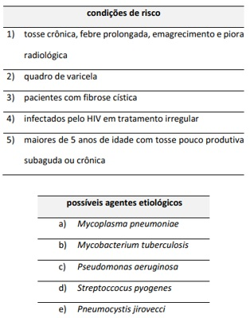
A 1b; 2c; 3d; 4e; 5a
B 1b; 2d; 3c; 4e; 5a
C 1a; 2c; 3d; 4e; 5b
D 1a; 2d; 3c; 4e; 5b
E 1d; 2c; 3a; 4e; 5b
Questão 944 · Pediatria · Abordagem da Crise Febril · 4000185264Paciente de dois anos de idade, do sexo masculino, deu entrada pela sala de emergência, trazido pela equipe do SAMU. Sua mãe relata que, há aproximadamente uma hora, o paciente apresentou uma convulsão em vigência de febre. Conforme a descrição da mãe, trata-se de quadro com característica de ser uma convulsão tônica clônica generalizada. A mãe relata duração de aproximadamente 5 minutos, com resolução espontânea. Relata que o paciente cou sonolento após resolução do quadro, mas que, ao chegar no hospital, já se apresentava ativo e reativo. Ao exame físico, constatou-se o seguinte: paciente em bom estado geral, febril, sem alterações neurológicas, com quadro de coriza hialina e congestão nasal. Mãe relata que paciente está com quadro de tosse, coriza hialina e febre há 2 dias. Assinale a alternativa que apresenta a conduta a ser tomada nesse caso hipotético.
A realizar (TC) de crânio com contraste
B dar alta com tratamento sintomático e orientações de sinais de alarme
C coletar hemograma, hemocultura e PCR
D internar paciente e solicitar avaliação de neuropediatra
E realizar coleta obrigatória de líquor
Questão 945 · Pediatria · Asma · 4000185260De acordo com o Global Initiative For Asthma de 2022 (GINA 2022), assinale a alternativa
A Deve-se dar preferência para corticoide oral quando possível.
B Deve-se realizar beta-2 agonista de cura duração.
C Nos casos de anafilaxia, deve-se realizar adrenalina, além das outras medidas para broncoespasmo.
D Corticoide oral é tão eficaz quanto corticoide endovenoso.
E Deve-se manter brometo de ipratrópio de horário em pacientes com necessidade de internação.
Questão 946 · Rítmo Cardíaco · 4000185259Assinale a alternativa que apresenta a primeira carga a ser utilizada de acordo com o suporte avançado de vida em pediatria no caso de uma parada cardiorrespiratória em ritmo chocável.
A 1 J/kg
B 2 J/kg
C 4 J/kg
D 8 J/kg
E 10 J/kg
Questão 947 · Pediatria · Tratamento · 4000185257De acordo com as diretrizes da Sociedade Brasileira de Pediatria acerca do manejo de infecção causada pelo vírus sincicial respiratório (VSR), assinale a alternativa correta.
A A fisioterapia respiratória é recomendada para todos os quadros.
B O corte de saturação de oxigênio usado para indicar o uso de oxigenoterapia é 94%.
C Sempre que o paciente for internado, deve-se manter o uso de corticoide oral
D Quanto ao uso de broncodilatador, o uso de acordo com a resposta clínica pode eventualmente ser considerado, mas só deve ser mantido se houver evidência de melhora imediata.
E A toda criança com quadro de bronquiolite deve ser prescrita antibioticoterapia para evitar complicações bacterianas.
Questão 948 · Plano B · 4000185255Um lactente de 10 meses de idade, previamente hígido, dá entrada no pronto-socorro infantil com vômitos (apresentando de 2 a 3 episódios por dia) e com diarreia (de 7 a 8 episódios por dia) há 2 dias. A mãe nega a presença de sangue nas fezes. Ao exame físico, o paciente apresenta-se inquieto, demonstrando sede, chorando sem lágrimas, com olhos fundos e pulsos rápidos. Nesse caso hipotético, de acordo com as diretrizes do Ministério da Saúde, há indicação de
A hidratação endovenosa com alíquotas de 20 mL/Kg de SF 0,9% em 30 minutos até o reestabelecimento da hidratação, com reavaliações dos sinais clínicos após cada expansão.
B administração de antiemético seguida de solução de reidratação oral, que deve ser oferecida em um volume aproximado de 50 a 100 mL/Kg em 4 a 6 horas.
C hidratação endovenosa e introdução de antibioticoterapia; se paciente evoluir com hidratação e melhora clínica, deve receber alta com terapia de reidratação e de antibiótico por via oral.
D reidratação via oral, que deve ser oferecida em um volume aproximado de 50 a 100 mL/Kg em 4 a 6 horas; se mantiver os mesmos sinais de desidratação na reavaliação, deve-se modificar a terapia de reidratação para via endovenosa.
E reidratação via oral, que deve ser oferecida em um volume aproximado de 50 a 100 mL/Kg em 4 a 6 horas; se evoluir com desparecimento dos sinais de desidratação, deve-se dar alta com indicação de dieta habitual, solução de reidratação oral após evacuações e zinco por 10 a 14 dias.
Questão 949 · Pediatria · 4000185254Acerca da obesidade infantil, assinale a alternativa correta.
A A principal herança genética na determinação da obesidade é de natureza monogênica.
B As crianças de 0 a 5 anos de idade são consideradas obesas quando os valores de IMC estiverem acima de +2 escore Z.
C A relação circunferência abdominal/estatura é considerada adequada se estiver menor ou igual a 0,5.
D Menos de 10% das crianças e dos adolescentes obesos são hipertensos.
E O
Questão 950 · Amamentação Aleitamento Materno · 4000185235A respeito da amamentação, assinale a alternativa correta.
A As mastites apresentam-se clinicamente com hiperemia, ingurgitamento e dor mamária, tendo como agente etiológico mais comum a
B A exposição do recém-nascido a fármacos ingeridos pela lactante é cinco vezes maior do que na vida intrauterina, por via transplacentária.
C As mastites são a principal causa de desmame precoce e ocorrem nos primeiros dias de aleitamento.
D Medicamentos categoria D podem ser usados sem restrição durante a amamentação.
E Em pacientes HIV positivo, é necessário inibir a lactação, e métodos mecânicos não são eficazes quando utilizados isoladamente, devendo ser associado método medicamentoso.
Questão 951 · Intoxicação por Vitamina D · Medicina Preventiva · Intoxicação por Vitamina D · 4000185232Em relação à iatrogenia, assinale a alternativa
A Ciprofloxacino, assim como outras quinolonas, pode provocar agitação e confusão mental em pessoas idosas, sendo um possível causador de
B Inibidores de enzima conversora de angiotensina, como captopril e enalapril, podem originar tosse.
C Antipsicóticos, como haloperidol e risperidona, podem ocasionar rigidez e acarretar parkinsonismo secundário.
D Benzodiazepínicos, como diazepam e clonazepam, aumentam o risco de levar pessoas idosas à queda.
E O potencial iatrogênico com suplementação de vitamina D é nulo.
Questão 952 · Calendário da gestante · Vacinas inativadas · Vacinas vivas atenuadas · 4000184802Pode-se afirmar que é possível ser aplicada com segurança durante a gravidez, a vacina contra:
A caxumba
B raiva
C varicela
D febre amarela
Questão 953 · Fases da lactação · 4000184800Pode-se a rmar que mulheres que amamentam, em geral, apresentam retardo do reinício da atividade ovariana por inibição da pulsatilidade das gonadotrofinas hipotalâmicas induzida por:
A progesterona elevada.
B aumento da ocitocina.
C hiperestrogenismo.
D hiperprolactinemia.
Questão 954 · Ingurgitamento mamário · Mastite · 4000184795Puérpera no terceiro dia pós-parto normal apresenta ingurgitamento mamário, como consequência da retenção de leite e distensão alveolar. Pode-se afirmar que a melhor a orientação a ser dada é:
A utilização de conchas e calor localmente.
B massagens suaves com movimentos circulares.
C optar pelo uso de sutiãs mais folgados.
D não fazer uso de analgésicos comuns.
Questão 955 · Tratamento e Condutas · Apresentação Clínica · 4000184793Menino, 4 anos, residente no município do Rio de Janeiro, acompanhado da mãe e padrasto, é admitido inconsciente no Setor de Emergência. Anamnese: a mãe nega qualquer patologia prévia ou acidentes recentes e a rma que o encontrou "desmaiado" no chão do próprio quarto, levando-o imediatamente para o hospital. Exame físico: hematomas em vários locais do corpo com diferentes fases de evolução. Após suspeita de violência física, a criança é internada. Pode-se afirmar de acordo com o Estatuto da Criança e do Adolescente, quanto à proteção da criança, que a conduta subsequente deve ser:
A preencher a ficha de notificação do Sistema de Notificação de Agravos de Notificação e enviar em até 1 semana.
B notificar imediatamente ao Conselho Tutelar mais próximo à residência da criança.
C fazer Boletim de Ocorrência na Delegacia de Polícia mais próxima à Unidade de Saúde.
D encaminhar imediatamente ao Instituto Médico Legal para realização de exame de corpo de delito.
Questão 956 · Tratamento · 4000184792Menina foi trazida pelos pais à consulta de rotina de 30 dias de vida. Nasceu de parto vaginal a termo, peso = 3.010g, comprimento = 50cm. Exame físico: bom estado geral; corada; hidratada; icterícia na face (+/4+); peso atual = 4.100g. Pais referem que foram convocados pelo centro de triagem neonatal e, ent ão, iniciou-se, há 3 dias, um tratamento para hipotireoidismo. Pode-se a rmar, em relação ao tratamento desta lactente, que:
A deve-se evitar fórmulas com soja, sulfato ferro e suplementos com cálcio próximo da administração da levotiroxina.
B o início do tratamento está dentro do prazo ideal para evitar danos ao neurodesenvolvimento.
C formulações líquidas de levotiroxina são as mais adequadas devido à idade do paciente.
D a lactente tem que ficar, no mínimo, 2 horas em jejum antes da ingestão da levotiroxina.
Questão 957 · Curvas de Crescimento · 4000184791Criança, 5 anos, é levada ao pediatra, pelos pais, com história de ter crescido pouco no último ano. N a caderneta, há as seguintes alturas anotadas: 3 anos = 96cm; 4 anos e 3 meses = 102,5cm. A altura nesta consulta = 107cm. Pode-se afirmar, com relação velocidade de crescimento, que:
A nesta consulta, o gênero é relevante para conclusões.
B com os dados fornecidos, não se pode calcular.
C está normal para a idade.
D é constante ao longo da infância.
Questão 958 · Tratamento · 4000184789Menino, 9 meses, é admitido com história de febre há 7 dias e irritabilidade. Exame físico: febril; muito irritado; maculopapular difuso. Exames laboratoriais: leucócitos = 18.000/mm³ (neutró los 78%); sódio = 130mEq/L; VHS = 70mm/h; proteína C-reativa (PCR) = 40mg/L; transaminase glutâmico pirúvica (TGP) = 60U/L; piúria ao EAS com bacterioscopia de urina sem evidência de formas microbianas. Pode-se a rmar que, nesse caso, o tratamento precoce deve ser iniciado com:
A antibioticoterapia venosa.
B anti-histamínico venoso.
C imunoglobulina humana venosa.
D agente antiviral venoso.
Questão 959 · Emergencial · Tratamento · 4000184786Pode-se a rmar que a vitamina que é igualmente importante na gênese e no tratamento da desnutrição na fase emergencial é a:
A A
B B1
C B6
D C
Questão 960 · Sopro na inf ância · 4000184784Durante a ausculta cardíaca de rotina, mais de 30% das crianças podem apresentar um sopro inocente em algum momento de suas vidas. Pode-se afirmar, sobre esse tipo de sopro, que:
A sopro sistólico de ejeção relativamente curto é ouvido melhor na borda esternal esquerda inferior e média com irradiação significativa.
B situações com alto débito cardíaco causado por febre, infecção ou ansiedade reduzem a sua intensidade.
C a sua intensidade geralmente muda com a respiração e posição, podendo ser atenuado pela posição sentada ou decúbito ventral.
D são mais prevalentes na faixa etária dos 7 aos 13 anos de idade e nas crianças do sexo feminino.
Questão 961 · Causas de PCR · 4000184783Menino, 4 anos, é admitido no Setor de Emergência em parada cardiorrespiratória. Iniciaram- se imediatamente as manobras de reanimação cardiopulmonar com massagem cardíaca externa, assistência ventilatória e acesso venoso. Pode-se afirmar, nesta situação, que:
A em caso de bradicardia persistente, deve-se detectar e tratar os fatores predisponentes, como, por exemplo, hipoxemia, acidose, hipomagnesemia e hipoglicemia.
B as compressões torácicas devem ser de ao menos 1/3 do diâmetro anteroposterior do tórax, mínimo de 60 compressões/minuto, na proporção de 15 compressões para 2 ventilações.
C a parada cardíaca em crianças é mais frequentemente o resultado final de asfixia progressiva.
D assistolia e atividade elétrica sem pulso são os ritmos cardíacos chocáveis mais frequentes.
Questão 962 · Soro de reidratação oral · 4000184781Na reidratação oral, empregada nos casos de diarreia, usa-se frequentemente a fórmula simpli cada e caseira proposta pela Organização Mundial da Saúde. A presença da mucilagem de arroz ou açúcar nessas fórmulas atua:
A aumentando a absorção de sódio.
B aumentando as calorias.
C conservando mais o tempo de uso.
D não interferindo na osmolaridade.
Questão 963 · Síndromes clínicas da cardiopediatria · Quadro clínico · 4000184780A dor torácica e entanto, pode-se afirmar que está frequentemente presente em casos de:
A comunicação interventricular.
B arritmia sinusal.
C pericardite aguda.
D estenose pulmonar valvar.
Questão 964 · Dez passos para uma alimentação saudável guia alimentar para crianças menores de dois anos · 4000184777Introdução alimentar Pode-se afirmar, sobre a alimentação complementar, que é correto orientar os pais quanto ao fato de que:
A papas devem ter boa quantidade de cereais ricos em fitatos.
B o alimento ofertado deve ser muito mais calórico do que o leite materno.
C sucos de frutas cítricas até 200mL duas vezes/dia são indicados.
D o leite de vaca modificado é o melhor alimento complementar.
Questão 965 · Prevenção · 4000184776A obesidade é uma pandemia. No Brasil, convive-se com uma das maiores taxas de crescimento desta doença entre crianças e adolescentes. Pode-se a rmar, neste contexto, que a melhor medida de prevenção a ser adotada em casa pelos responsáveis é:
A não deixar a criança escolher o que vai comer.
B evitar o desjejum matinal.
C ofertar pequenas porções para evitar a fome.
D não ofertar alimentos como recompensa.
Questão 966 · Como medir · Outros · 4000184774Pode-se afirmar, sobre a pressão arterial do paciente pediátrico, que:
A exercício, excitação, tosse, choro, e esforço podem diminuir a pressão sistólica aferida dos lactentes e crianças em ate
B a pressão arterial varia com a idade da criança e está
C um manguito muito pequeno resulta em leituras falsamente diminuídas, enquanto o manguito demasiado grande aumenta enganosamente a pressão.
D a aferição deve ser feita com o manguito do esfigmomanômetro cobrindo pelo menos dois terços da parte superior do brac
Questão 967 · Imunoglobulina antihepatite B · Prof ilaxia da hepatite B · 4000184737Médico, 25 anos, está na 1ª semana de atividade da residência de cirurgia em um Hospital de Ensino (HE), referência regional para atendimentos secundários e terciários. O residente acidenta-se, ao fazer um procedimento, com material perfuro cortante contaminado com sangue do paciente que está sob os cuidados da equipe cirúrgica, na qual ele está passando. Este paciente com AG HBS positivo faz tratamento para Hepatite B no HE. O residente ainda não foi vacinado contra Hepatite B, embora esteja agendado na sala de vacina para atualizar a sua situação vacinal. Conforme recomendação do Ministério da Saúde, para acidentes ocupacionais com material perfuro contaminados, além do atendimento na emergência para o ferimento, qual a conduta na emergência do Hospital em relação a prevenção da Hepatite B?
A Deve ser administrada nas primeiras horas após o acidente a imunoglubulina humana anti-hepatite B , sendo 0,06/Kg IM. Iniciar o esquema de vacinação para Hepatite B com a primeira dose e agendar as próximas duas doses. Notificação compulsória do acidente;
B O profissional que recebeu após o acidente a imunoglubulina humana anti-hepatite B não devem receber esta vacina no momento do acidente, pois deve aguardar três meses para iniciar a vacinação. Notificação compulsória do acidente;
C Tem indicação apenas de imunoglobulina humana anti hepatite, porém não está disponível pelo Sistema Único de Saúde o hospital deve providenciar a compra o mais urgente possível. Notificação compulsória do acidente;
D Pode ser administrada a primeira dose da vacina contra hepatite B e agendar as próximas duas doses. Fazer a imunoglubulina humana anti-hepatite B (0,06/Kg IM) após avaliar se há presença de marcadores de replicação viral no paciente fonte. Notificação compulsória do acidente;
Questão 968 · Pediatria · Diagnóstico Nutricional · 4000184730Criança de 1 ano e 6 meses interna na enfermaria de pediatria para tratamento de pneumonia, ao verificar seus dados antropométricos nota-se que apresenta peso para estatura maior que o escore Z+1 e menor que escore Z+2. O peso para idade se localiza no mesmo escore (maior que o escore Z+1 e menor que escore Z+2). Podemos afirmar que este paciente apresenta:
A Eutrofia
B Obesidade
C Sobrepeso
D Risco de sobrepeso
Questão 969 · Pediatria · Puericultura · 4000184729Criança é levada para atendimento de puericultura no dia de seu aniversário de um ano, é um menino que nasceu a termo com peso 3.300 g e comprimento 50 cm. Nesta consulta, com um ano de vida, foi observado que apresentou crescimento exatamente conforme o esperado para idade, considerando isto, quais medidas antropométricas seriam as mais adequadas para esta criança?
A Peso 7,5 kg, estatura 65 cm
B Peso 10,5 kg, estatura 75 cm
C Peso 12,5 kg, estatura 80 cm
D Peso 14 kg, estatura 90 cm
Questão 970 · Maturação sexual · Pediatria · 4000184728Menino de 10 anos é levado no pediatra para avaliação de rotina, no exame físico nota-se que o escroto se apresenta levemente aumentado, com pele mais escura e mudança de textura. Pênis sem aumento. Observa-se também pelos nos, longos e curvos, esparsos, mas com maior concentração próximo à base do pênis. O pediatra poderá registrar que o estádio puberal do genital (G) e dos pelos púbicos (P) da criança são respectivamente:
A G1 P1
B G1 P2
C G2 P1
D G2 P2
Questão 971 · Vacinas contra sarampo caxumba rubéola e varicela · Sarampo · 4000184727Paciente com 4 anos de vida vem ao hospital, com história de febre há 5 dias, malestar, coriza, conjuntivite, tosse e inapetência. Ao exame clínico, verifica-se criança prostrada, conjuntiva hiperemiada com secreção ocular. Ao exame da cavidade oral, nota-se enantema na porção lateral aos malares, apresentando-se com pequenas manchas de coloração vermelho-vivo, no centro dos quais se vê um diminuto ponto branco- azulado. Também apresenta exantema maculo-papular confluente que, segundo a mãe, iniciou na região retro auricular, se espalhando para tronco e, depois, membros. Com relação à esta doença, é correto afirmar:
A O uso de gamaglobulina não está indicado para contactuantes.
B A vacina para prevenção deve ser dada ao 2°, 4° e 6° mês de vida.
C A cobertura vacinal para a proteção populacional deve ser igual ou maior que 95%.
D O uso de vacina para os contactuantes não imunes, mesmo que precocemente, não previne a doença.
Questão 972 · Pediatria · Faringites Bacterianas · 4000184726Com relação à amigdalite bacteriana, é correto afirmar:
A O tratamento preferencial é com antibióticos beta-lactâmicos.
B Ocorre com mais frequência em crianças de 1 a 3 anos de idade.
C O período de incubação para febre reumática pós-amigdalite é entre 4 a 5 semanas.
D O Streptococcus -hemolítico do grupo B e o Staphylococcus aureus são os principais agentes etiológicos.
Questão 973 · Sindrome Klinef elter · Pediatria · 4000184725Adolescente de 13 anos chega ao consultório para uma consulta de rotina. Sua mãe relata que ele parece muito mais imaturo e inseguro do que seu lho mais velho quando na mesma idade. Seu rendimento escolar está abaixo da média. No exame físico ele está no percentil 95 de altura para a idade, suas extremidades são mais longas do que o esperado e ele mostra-se constrangido por causa da ginecomastia. Está em estágio 1 do desenvolvimento sexual de Tanner e apresenta gônadas pequenas. O diagnóstico mais provável é:
A Acromegalia.
B Síndrome X0.
C Síndrome XXY.
D Síndrome XYY.
Questão 974 · Crises de hipóxia · Tetralogia de Fallot · 4000184724Criança com 15 meses de idade está brincando na sala de espera do ambulatório. Apresenta cianose discreta ao redor da boca e com frequência ca em posição de cócoras, quando corre ca subitamente dispneica e cianótica e então ela retorna à posição de cócoras e logo volta a respirar confortavelmente com apenas uma sutil cianose perioral. Qual das opções a seguir representa o aspecto que encontraremos no raio X de tórax:
A Hiperinsuflação pulmonar.
B Coração em formato de bota.
C Coração ovoide com hilo estreito.
D Cardiomegalia com índice cardiotorácico maior que 0,7 e congestão pulmonar.
Revisar: possível letra faltando em enunciado
Questão 975 · Plano C · Fase de expansão · Fase de manutenção · 4000184723Paciente de 3 anos, pesando 18 kg é levado a unidade de pronto atendimento com história de diarreia há 05 dias associado a recusa alimentar, febre baixa e vômitos. A mãe relata que as fezes são liquidas, sem presença de muco ou sangue. Ao exame físico, a criança apresentava-se letárgica, sem lme lacrimal, olhos muito fundos, frequência cardíaca de 175 bpm, tempo de enchimento capilar de 4 segundos e sinal da prega q u e desaparece lentamente. Considerando o quadro acima, o diagnóstico e a conduta correta são, respectivamente
A Desidratação grave. O tratamento deve ser realizado em ambiente hospitalar. Deve-se iniciar imediatamente hidratação venosa com soro fisiológico 0,9% 20 ml/kg em 30 minutos até que ocorra melhora dos sinais de desidratação e choque e após manter hidratação venosa de manutenção com soro fisiológico 0,9% + soro glicosado 5% até que o paciente tenha condições de iniciar hidratação por via oral.
B Desidratação grave. O tratamento deve ser realizado em ambiente hospitalar. Deve-se iniciar hidratação venosa de manutenção com soro fisiológico 0,9% + soro glicosado 5% com oferta hídrica de 100% holliday até que o paciente tenha condições de iniciar hidratação por via oral.
C Desidratação moderada. O tratamento deve ser realizado na unidade de saúde com soro de reidratação oral mediante oferta de 50 - 100 ml/kg em 4 horas, até que os sinais de desidratação desapareçam. O paciente deverá permanecer até a reidratação completa e reinicio da alimentação via oral.
D Desidratação moderada. O tratamento deve ser realizado na unidade de saúde com soro de reidratação oral mediante oferta de 200 ml/kg em 4 horas, até que os sinais de desidratação desapareçam. O paciente deverá permanecer até a reidratação completa e reinicio da alimentação via oral.
Questão 976 · Prof ilaxia Ferro · Pediatria · 4000184722Lactente de 3 meses, nascido de parto normal, pré-termo de 33 semanas e peso ao nascimento de 2.250g comparece a unidade básica de saúde para consulta de puericultura. A mãe refere que o paciente está em aleitamento materno exclusivo e que vem ganhando peso adequadamente. Visando prevenir a de ciência de ferro, qual a recomendação preconizada para esse paciente?
A Introduzir 2mg de Fe elementar/kg/dia a partir do 1° mês de vida até o 12° mês de vida. Após este período, reduzir a dose para 1mg de Fe elementar/kg/dia até o 24° mês de vida.
B Introduzir 2mg de Fe elementar/kg/dia a partir do 1° mês de vida até o 24° mês de vida e após este período, suspender a suplementação.
C Introduzir 2mg de Fe elementar/kg/dia a partir do 3° mês de vida até o 24° mês de vida e após este período, suspender a suplementação.
D Introduzir 2mg de Fe elementar/kg/dia a partir do 3° mês de vida até o 12° mês de vida. Após este período, reduzir a dose para 1mg de Fe elementar/kg/dia até o 24° mês de vida.
Questão 977 · Sinais e sintomas · 4000184721Recém-nascido a termo, de parto vaginal com 38 semanas e Apgar 9/10, pesando 3.460g retorna ao hospital 72 horas após a alta hospitalar apresentando crise convulsiva tônico clônica generalizada. Realizado Fenobarbital com cessação da crise. O exame físico evidenciou hepatoesplenomegalia, petéquias em membros inferiores e fundo de olho com presença de coriorretinite. Foi realizado ultrassom transfontanela com imagens compatíveis com calcificação intra-parenquimatosa difusa. A principal hipótese diagnóstica é:
A Sífilis congênita
B Rubéola congênita
C Toxoplasmose congênita
D Citomegalovirose congênita
Questão 978 · Teste do coraçãozinho · 4000184720Recém-nascido a termo, de parto cesárea, adequado para a idade gestacional, apgar 9/10 foi encaminhado a sala de procedimentos para realização do teste do coraçãozinho. Durante a realização do teste, o pediatra observou uma SaO2 de 95% no membro superior direito e de 89% no membro inferior esquerdo. Qual a recomendação preconizada para este paciente?
A Repetir o teste após 1 hora. Se a saturação de oxigênio permanecer menor ou igual a 89% ou a diferença de Saturação pré-ductal e pós-ductal for maior de 4%, deve-se realizar um segundo teste após 1 hora e, permanecendo as alterações acima, deve-se considerar o teste como positivo e encaminhar o RN para avaliação cardiológica completa.
B Repetir o teste após 1 hora. Se a saturação de oxigênio permanecer menor ou igual a 89% ou a diferença de Saturação pré-ductal e pós-ductal for maior de 4%, deve-se considerar o teste como positivo e encaminhar o RN para avaliação cardiológica completa.
C O teste é considerado positivo e, portanto, o RN deve ser encaminhado para avaliação cardiológica completa e não dar alta até esclarecimento diagnóstico.
D O teste é considerado negativo e, portanto, o RN deve ser encaminhado para seguimento neonatal de rotina.
Questão 979 · Tratamento · Pediatria · Investigação por imagem · 4000184719Lactente de 8 meses de idade, do sexo masculino é internado para tratamento de infecção urinária, sendo esse o primeiro episódio de infecção urinária. O médico que prestou o primeiro atendimento optou por internação hospitalar pois criança apresentava critérios de sepse. Com 48 horas de internação paciente já estava afebril e com melhora clínica, apresentando sinais vitais adequados para idade. A urocultura veio positiva para Klebsiella pneumoniae sensível a todos os antibióticos testados. Neste caso qual a conduta mais apropriada:
A Realizar Us de rins e vias urinária ainda durante a fase aguda de infecção e descalonar antibiótico para via oral.
B Descalonar antibiótico para via oral e realizar Us de rins e vias urinária ambulatorial de caráter não urgente.
C Manter tratamento completo com antibiótico de escolha inicial, já que paciente foi admitido com septicemia e apresentou melhora clínica e realizar Us de rins e vias urinária ainda durante internação.
D Terminar tratamento com o Antibiótico de escolha inicial por boa resposta clínica e por ser primeiro episódio de ITU não apresenta indicação de realização de Us de rins e vias urinárias.
Questão 980 · Pediatria · Avaliando o desenvolvimento · 4000184718Lactente de 10 meses de idade, em aleitamento materno e boa aceitação de alimentos durante a introdução alimentar passa em consulta de puericultura, sem queixas no momento da consulta. Durante a consulta a mãe refere que ele não consegue segurar pequenos objetos com movimento de pinça, fala "ma", "da" e "be", senta-se sozinho. Ao exame físico, sem alterações. Quanto ao desenvolvimento deste paciente, podemos avaliar:
A Desenvolvimento adequado para a idade
B Atraso em todos os marcos de desenvolvimento para a idade
C Alerta no desenvolvimento motor fino, atraso no desenvolvimento da linguagem e desenvolvimento motor grosseiro adequado
D Atraso no desenvolvimento motor fino, atraso no desenvolvimento da linguagem e desenvolvimento motor grosseiro adequado
Questão 981 · Prevenção e manejo dos principais problemas relacionados à amamentação · Pediatria · 4000184717Recém-nascido (Rn) termo de parto cesárea por complicação materna (Descolamento prematuro de placenta), peso de nascimento de 3420g e APGAR 8/9. Mãe tem 36 anos G1P0A0, pré-natal sem outras intercorrências. O Rn está agora com 12 horas de vida e a mãe se queixa de baixa produção de leite materno. Ao exame físico, sem alterações. A melhor conduta frente a esse caso será:
A Iniciar domperidona para a mãe
B Orientar pega e aguardar apojadura
C Iniciar translactação com fórmula infantil
D Iniciar complementação com fórmula infantil em copinho
Questão 982 · Def inição · 4000184670O Inquérito Brasileiro de Avaliação Nutricional (IBRANUTRI) avaliou quatro mil pacientes e demonstrou que aproximadamente 48% da população hospitalizada era desnutrida, destes, 12,6% apresentava desnutrição grave; observou-se também que a desnutrição foi maior com o aumento da permanência hospitalar e nos pacientes com neoplasia maligna. Nesse contexto, é CORRETO considerar desnutrido o paciente que possui:
A Leucócitos menores que 5.000 cel/mm³, transferrina inferior a 300 mgr/dl.
B Linfócitos menores que 1500 cel/mm³ e albumina sérica menor que 3,5 g/dl, transferrina inferior a 200 mgr/dl.
C Linfócitos menores que 2500 cel/mm³ e albumina sérica menor que 4,5 g/dl, transferrina inferior a 400 mgr/dl.
D Linfócitos menores que 1900 cel/mm³ e albumina sérica menor que 4,5 g/dl, transferrina inferior a 250 mgr/dl.
Questão 983 · Tratamento · 4000184643Criança de 2 anos, sexo masculino, previamente hígido, é levado a uma consulta hospitalar com um pediatra por apresentar há 7 dias quadro de febre (38-39°C) remitente, surgimento de um caroço em região cervical, unilateral. Lesão de pele tipo rash maculopapular difuso. Familiares ainda notaram dedos das mãos e pés com edema e dolorosos. Exame físico realizado mostrou criança regular estado geral, irritado ao manuseio, exantema maculopapular difuso, mais intenso em região do tronco e extremidades, linfadenopatia cervical direita de 3cm, não supurativo, hiperemia ocular bilateral e presença de hiperemia importante de orofaringe à oroscopia, lábios com hiperemia e ssura, além de edemas de mãos e pés. Hemograma realizado pela família mostrou leucocitose com neutrofilia. Considerando o caso apresentado, a MELHOR conduta para esse paciente é de:
A Iniciar imunoglobulina endovenosa + Ácido Acetil Salicílico (AAS).
B Iniciar prednisona + anti-histamínico oral.
C Iniciar cefazolina por 7 dias.
D Iniciar oxacilina + amicacina.
Questão 984 · Varicela · 4000184642Criança de 1 ano e 6 meses, sexo masculino, previamente hígida, é levada a uma consulta com pediatra por apresentar há 3 dias lesões pruriginosas, disseminadas pelo corpo, associado a febre de 38°C. Exame físico realizado mostrou bom estado geral, mas com lesões difusas pelo corpo, inclusive em mucosas, oral e genital, pruriginosas, em vários estágios, ora máculas, pápulas, vesículas e algumas crostas. De acordo com o caso apresentado, a MELHOR conduta para essa criança é de:
A Iniciar cefalexina por 10 dias.
B Iniciar prednisolona por 5 dias.
C Administrar antitérmicos (paracetamol ou dipirona) + cuidados com limpeza das lesões e orientar em caso de sinais de complicações das lesões.
D Iniciar imunoglobulina venosa + Ácido Acetil Salicílico (AAS).
Questão 985 · Neuropediatria · 4000184641A respeito da palpação da fontanela em crianças, é INCORRETO afirmar que:
A A Hipervitaminose A, as meningites e a hidrocefalia podem levar ao abaulamento da fontanela anterior.
B A desidratação aguda e desnutrição acentuada podem levar à depressão da fontanela.
C O fechamento precoce da fontanela pode ser considerado pela palpação quando ocorre antes dos seis meses.
D O atraso no fechamento da fontanela pode ter como causa raquitismo, hipertireoidismo e desnutrição.
Questão 986 · Análise de urina · 4000184636Em passagem de plantão, médico solicita que colega avalia criança com relato de febre e ausência de diurese em 24h. Solicitada expansão volêmica e administração de antitérmico, Trata-se de criança de 2 meses, portadora de mielomeningocele, e, após administração de 40ml/kg de soro siológico paciente apresentava-se com FC: 190bpm, perfusão capilar de 6 segundos e sem diurese. Cobrados exames laboratoriais com hemocultura e urocultura parciais negativas; hemograma com evidência de anemia, leucocitose com desvio à esquerda; exame de urina com nitrito e leucócito esterase positivos. Sobre o quadro apresentado, é CORRETO afirmar que:
A Trata-se de possível quadro de sepse (uma vez que culturas estão parciais negativas) de foco urinário. No exame de urina rotina, o nitrito positivo tem maior sensibilidade e a enzima leucócito esterase maior especificidade para diagnóstico de ITU.
B Trata-se de possível quadro de choque séptico de foco urinário. No exame de urina rotina, o nitrito positivo tem maior sensibilidade e o leucócito esterase maior especificidade para diagnóstico de ITU.
C Trata-se de possível quadro de choque séptico de foco urinário. No exame de urina rotina, o nitrito positivo tem maior especificidade e leucócito esterase maior sensibilidade para diagnóstico de ITU.
D Trata-se de possível quadro de síndrome de resposta inflamatória sistêmica e, até resultado de urocultura (exame padrão ouro para diagnóstico de ITU), não é possível determinar o foco infeccioso.
Questão 987 · Tratamento · 4000184634Paciente de 3 anos iniciou com constipação intestinal aos 2 anos de vida, durante inicio do desfralde. Atualmente apresenta uma evacuação a cada 3 dias, com fezes ressecadas e de grande diâmetro, com episódios frequentes de hematoquezia e escapes fecais. A vacinação está em dia e o teste do pezinho é normal. Na história pregressa, eliminou mecônio nas primeiras 24 horas de vida. Ao exame físico apresenta abdome normotenso, com massa papável em fossa ilíca esquerda com ruído hidroaéreo positivo. Ao toque retal, presença de grande quantidade de fezes endurecidas em reto. Fissura anal às 12h. Restante do exame físico sem alterações. Sobre o caso clínico apresentado, é CORRETO afirmar que:
A A presença de fezes no reto é sinal de alerta para anormalidades anatômicas.
B O medicamento de escolha no tratamento é a lactulose na dose 1 a 3ml/kg/dia.
C A primeira etapa do tratamento consiste em esvaziamento do reto e desimpactação fecal.
D O diagnóstico definitivo do paciente deve ser realizado através da realização de enema opaco.
Questão 988 · Plano C · 4000184633Paciente de um ano de vida dá entrada no pronto atendimento infantil com quadro de diarreia aquosa, sem sangue ou pus (cerca de 12 episódios ao dia), com 3 dias de duração, sem a presença de vômitos ou febre, associado a prostração e hiporexia. A criança é previamente hígida. Ao exame: hipocorado (3+/4+), torporoso, enoftalmia, lágrimas ausentes, mucosas muito secas, associado à incapacidade de beber água. Enchimento capilar superior a 5. segundos, sinal da prega lenti cado. Aparelho cardiovascular: ritmo cardíaco regular, em 2 tempos. Frequência cardíaca: 160 batimentos por minuto, pulso débil. O restante do exame físico sem alterações significativas. Sobre o caso clínico apresentado, é CORRETO afirmar que:
A A dieta, preferencialmente por via oral, deve ser iniciada juntamente com reposição volêmica.
B Trata-se de uma quadro de desidratação grave, devendo-se iniciar terapia de reidratação por via parenteral.
C Trata-se de quadro grave e antibioticoterapia deve ser prontamente iniciada.
D Os antieméticos devem ser iniciados durante a fase de hidratação oral para prevenção de vômitos.
Revisar: possível letra faltando em enunciado
Questão 989 · Tratamento Geral · 4000184631Lactente de 4 meses, previamente hígido e sem histórico familiar de doenças alérgicas, iniciou há cerca de 3 dias com coriza, tosse e febre e hoje foi levado ao pronto atendimento devido a piora da tosse associada a esforço respiratório moderado, sibilância e gemência durante as mamadas. No exame físico, foram observados crepitações, roncos difusos e sibilos expiratórios, 55irpm e dessaturação de 88%. Sobre a patogênese e o manejo dessa condição clínica, é INCORRETO afirmar que:
A A monitorização contínua da frequência respiratória e saturação e fisioterapia respiratória devem ser realizadas em todos os pacientes internados, a fim de prevenir complicações respiratórias como atelectasias ou pneumonias.
B A obstrução das vias aéreas ocorre em razão da resposta inflamatória local e edema celular, além da contração da musculatura lisa, produzindo limitações no fluxo de ar, que são observadas no Rx de tórax como atelectasias e hiperinsuflação torácica difusa.
C As características anatômicas e fisiológicas do aparelho respiratório do lactente como o aumento da resistência aérea, pequeno calibre das vias aéreas e o baixo desenvolvimento de poros de Kohn e canais de Lambert são determinantes para o quadro clínico de maior morbidade nessa faixa etária.
D A administração de oxigênio aquecido e umidificado é a terapia farmacológica que deve ser considerada, já que a administração de alfa e beta-adrenérgicos ainda é questionável na rotina do atendimento desses pacientes.
Questão 990 · Complicações · 4000184630Segundo a Sociedade Brasileira de Pediatria, as Pneumonias Adquiridas na Comunidade (PAC) ainda se con guram como a causa mais comum de morbidade e mortalidade em bebês e crianças menores de cinco anos em todo o mundo. Em 2022, observou-se um aumento nos casos de pneumonias, com evolução rápida e grave entre as crianças. Sobre essa condição clínica na faixa etária pediátrica, é INCORRETO afirmar que:
A A pneumonia afebril do lactente é comum nos bebês entre 2-3 meses e deve ser considerada naqueles lactentes com estado geral preservado, histórico de conjuntivite, quadro de tosse seca e eosinofilja periférica associada.
B O diagnóstico das PAC & eminentemente clínico valorizando sobretudo a taquipneia, dispensando a realização de radiografia de tórax, que deve ser reservada para os casos graves que demandam internação.
C Os vírus são os principais agentes etiológicos das PAC em crianças de até 5 anos, sendo a coinfecção vírus-vírus e vírus-bactéria cada vez mais descrita.
D A pesquisa de complicações como derrame pleural, abscesso e necrose pulmonar não é necessária diante da persistência da febre e da queda do estado geral em vigência de tratamento ambulatorial para PAC.
Questão 991 · Idade entre 3 meses e 36 meses · 4000184556Paciente de um ano e 10 meses, sexo feminino, é levada pela mãe ao pediatra da Unidade Básica de Saúde, e relata febre, polaciúria, irritabilidade e vômitos muito frequentes. Desde o início do quadro, há 48 horas, não consegue comer quase nada, apresenta vômitos e está mais prostrada. Ao exame físico, apresenta- se desidratada, taquicárdica e com perfusão capilar = 5’. Em relação a esse caso, assinale a alternativa que indica a conduta correta para a criança.
A Solicitar urina rotina, Gram e urocultura e aguardar o resultado de exames para definir o tratamento antimicrobiano de acordo com a sensibilidade do micro-organismo isolado.
B Encaminhar a criança para Unidade de Pronto Atendimento, pois encontra-se indicado o início imediato de tratamento com antimicrobiano venoso após coleta de urina para exames.
C Prescrever quimioprofilaxia por um período mínimo de um ano após tratamento para erradicar a bactéria, independentemente da investigação morfofuncional de vias urinárias.
D Realizar imediatamente o ultrassom de vias urinárias e a uretrocistografia miccional após o diagnóstico de infecção do trato urinário ser confirmado pela urocultura.
Questão 992 · Def inição e classif icação · Investigação HAS primáriax secundária · 4000184555A aferição da pressão arterial na criança e no adolescente ainda não é um hábito na consulta pediátrica e, portanto, muitos desses pacientes hipertensos cam por longo tempo sem diagnóstico. Ademais, alguns pediatras desconhecem os métodos dessa aferição e / ou não possuem o instrumental adequado. Acerca da hipertensão arterial na infância, assinale a alternativa correta.
A A principal causa de hipertensão arterial em crianças pré-escolares e escolares é a hipertensão essencial.
B A definição de emergência hipertensiva contempla uma elevação da pressão arterial sistólica e diastólica sem lesão de órgãos-alvo.
C A obesidade na criança e no adolescente só é considerada fator de risco para hipertensão arterial se o paciente for obeso desde o nascimento.
D A hipertensão arterial em recém-nascidos e lactentes habitualmente está relacionada à doença renal ou vascular.
Questão 993 · Apresentação Clínica · 4000184552As crianças frequentemente utilizam a linguagem não verbal para se comunicarem, por exemplo, por meio de irritabilidade, agressividade, regressão, dores em geral, queda no rendimento escolar. A esse respeito, analise os aspectos a seguir. I. Dificuldade específica de aprendizagem II. Maus-tratos físicos e / ou emocionais III. Negligência IV. Alto nível de estresse dos pais É(são) aspecto(s) que deve(m) ser investigado(s) diante de uma criança com essas manifestações
A I, apenas.
B I e II, apenas.
C II e III, apenas.
D I, II, III e IV.
Questão 994 · Ventilação com pressão positiva · 4000184551Recém-nascido a termo nasce hipotônico e com respiração irregular. Após serem realizados os passos iniciais de reanimação neonatal, manteve respiração irregular e FC = 80 bpm. O próximo passo a ser realizado é:
A Realizar estímulo tátil vigoroso em plantas dos pés e dorso.
B Aplicar ventilação com pressão positiva por cânula endotraqueal.
C Aplicar ventilação com pressão positiva por máscara em ar ambiente.
D Aplicar ventilação com pressão positiva por máscara com oxigênio a 30%.
Questão 996 · Pediatria · Endocrinologia pediátrica · 4000184495Assinale a alternativa correta acerca dos seguintes temas: síndrome de Cushing, obesidade na população pediátrica, crianças com dislipidemia familiar homozigótica, de ciência de leptina e hipoglicemia transitória neonatal.
A Crianças com síndrome de Cushing cursam com obesidade, alta estatura e avanço de idade óssea.
B Z escore do IMC acima de 2 desvio-padrão define obesidade na população pediátrica menor de 5 anos.
C Crianças com colesterol LDL acima de 110 mg/dL devem ser investigadas quanto à dislipidemia familiar homozigótica.
D Deficiência de leptina é a causa mais comum de obesidade monogênica.
E Prematuridade, retardo de crescimento intrauterino e ser filho de mãe diabética são causas de hipoglicemia transitória neonatal.
Questão 997 · Sepse neonatal · 4000184494A sepse neonatal é uma condição de importante morbimortalidade no período neonatal. Em relação à sepse neonatal precoce, assinale a alternativa correta.
A A profilaxia com antibioticoterapia durante o trabalho de parto em gestantes com cultura vaginal e retal positivas para estreptococo do grupo B não está mais indicada.
B A sepse neonatal precoce é aquela que ocorre após 72 horas do nascimento.
C Corioamnionite materna não é considerada um fator de risco para o recém-nascido.
D Os sintomas clínicos são altamente específicos para sepse neonatal e não podem ser confundidos com outras causas não infecciosas.
E Rotura de membranas ovulares por tempo igual ou superior a 18 horas antes do parto é um fator de risco importante.
Questão 998 · Teste do coraçãozinho · 4000184493Um médico está responsável pelo alojamento conjunto e avalia um recém-nascido (RN) de 60 horas de vida, nascido de parto normal, com idade gestacional de 38 semanas e peso ao nascer de 3.580 g; mãe e RN sem comorbidades. Teste da oximetria (“coraçãozinho”) com resultado MSD de 92% e MMI de 94%. Assinale a alternativa que apresenta a conduta adequada para esse caso clínico.
A dar alta hospitalar com encaminhamento para o cardiologista, pois o teste da oximetria está alterado.
B dar alta hospitalar com retorno ambulatorial, pois o teste da oximetria está normal.
C solicitar ecocardiograma e suspender alta hospitalar.
D repetir o teste da oximetria após 1 hora.
E dar alta hospitalar e solicitar ecocardiograma ambulatorialmente.
Questão 999 · Icterícia neonatal · 4000184492A icterícia é um dos sinais mais frequentes no período neonatal e apresenta-se como a coloração amarelada d a pele, da esclera e das membranas mucosas, indicando aumento da bilirrubina sérica com acúmulo de bilirrubina nos tecidos. Em relação à icterícia neonatal, assinale a alternativa correta.
A Perda de peso acima de 10% do peso do nascimento na primeira semana de vida é um fator de risco importante para hiperbilirrubinemia significante.
B A icterícia fisiológica costuma ter início nas primeiras 24 horas de vida.
C A icterícia fisiológica apresenta um alto risco de evolução para encefalopatia bilirrubínica e necessita de tratamento imediato.
D O predomínio de bilirrubina indireta é um dos sinais de icterícia patológica.
E A incompatibilidade materno-fetal ABO alerta para a possibilidade de icterícia hemolítica e ocorre em cerca de 20% das mães com tipagem sanguínea A ou B e feto O.
Questão 1000 · Calendário do prematuro · 4000184491Acerca de imunizações em recém-nascidos prematuros, assinale a alternativa correta.
A Todos os bebês nascidos até 34 semanas devem receber palivizumabe.
B A resposta imune pode ser inferior quando comparada à do bebê de termo.
C As vacinas devem ser aplicadas de acordo com a idade corrigida.
D A vacina contra o rotavírus pode ser livremente aplicada, mesmo em ambiente hospitalar.
E Peso maior que 2.000 g não é mais considerado critério para aplicação da BCG.
Questão 1001 · Emergências Pediátricas · Pediatria · 4000184490Uma criança de cinco anos de idade está rindo e brincando com seus irmãos. Momentos depois, a criança apresenta tosse com aumento assimétrico do peito. Nessa situação, a causa mais provável para o ocorrido é
A trauma
B obstrução das vias aéreas.
C asma grave.
D tamponamento cardíaco.
E edema agudo de pulmão.
Questão 1002 · Emergências Pediátricas Parada Cardiorrespiratória PCR e Arritmias na Emergência · Pediatria · 4000184488Assinale a alternativa que
A pontos torsades
B fibrilação ventricular
C taquicardia sinusal
D taquicardia ventricular
E fibrilação ventricular
Questão 1003 · Pediatria · Asma · 4000184487Em relação ao protocolo de asma GINA 2022, assinale a alternativa correta.
A Devem ser sempre associados dois B2 agonistas de longa duração no tratamento da asma leve.
B A utilização de beta2-agonistas de curta duração (SABA) mais do que duas vezes por semana ao longo de um mês indica a necessidade de um tratamento de controle.
C Na avaliação de gravidade, a asma leve não tem indicação de tratamento medicamentoso profilático.
D O uso de corticoide inalatório (ICS) se restringe apenas à asma moderada e grave.
E Hemograma com eosinofilia está presente em todos os casos de asma grave.
Questão 1004 · Pediatria · Prof ilaxia secundária · 4000184485No contexto de febre reumática, a profilaxia com penicilina benzatina a cada 21 dias é crucial para prevenção de recorrências do quadro. Quanto a esse assunto, assinale a alternativa correta.
A Pacientes sem cardite devem receber profilaxia secundária até 25 anos ou 10 anos após o último surto, o que cobrir maior período.
B Pacientes que apresentaram cardite prévia, mas que evoluíram com insuficiência mitral leve, residual ou com resolução da lesão valvar devem realizar profilaxia até 21 anos de idade ou 5 anos após o último surto, o que cobrir maior período.
C Pacientes com lesão valvar residual moderada a severa devem receber profilaxia secundária até 40 anos de idade ou até mesmo por toda vida.
D No caso de pacientes com cirurgia valvar, não há necessidade de profilaxia secundária.
E Todos os pacientes devem receber profilaxia secundária por 15 anos após o último surto, independentemente da presença de cardite.
Questão 1005 · Aspectos Clínicos Quadro clínico e Diagnóstico · Pediatria · 4000184484Paciente do sexo masculino, com 5 anos de idade, apresentou febre por 8 dias associada a rash maculopapular, artralgia em membros inferiores, edema de mãos e pés, hiperemia de orofaringe e lábios, além de hiperemia conjuntival bilateral, laboratorialmente com provas inflamatórias elevadas, hemograma com anemia e leucocitose. Considerando o diagnóstico mais provável do caso clínico acima, assinale a alternativa correta.
A O tratamento consiste em administrar imunoglobulina endovenosa e AAS na dose de 30 a 50 mg/kg enquanto persistir o quadro febril. Após isso, deve ser iniciado AAS na dose de 3 a 5 mg/kg e deve ser mantido até a normalização do ecocardiograma e resolução da trombocitose.
B Quadro clínico e laboratorial é compatível com artrite idiopática juvenil (AIJ), devendo ser iniciada terapia com anti-inflamatórios não esteroidais e metotrexato.
C É mandatória a realização de ecocardiograma para investigação de aneurisma de coronária, sendo que o uso de imunoglobulina até o décimo dia de febre não diminui a incidência dessa complicação.
D Após o décimo dia da doença, o surgimento de aneurismas coronarianos se faz improvável, portanto apenas um ecocardiograma inicial é necessário.
E Não há evidência científica comprovando o benefício da imunoglobulina, sendo preferível apenas a pulsoterapia com metilprednisolona.
Questão 1006 · Teste do pezinho · 4000184483De acordo com a Lei nº 14.154/2021, haverá ampliação do rol mínimo de patologias detectadas por meio do teste do pezinho pelo Sistema Único de Saúde (SUS), que entrou em vigor em maio de 2022. O processo para inserção das doenças na triagem neonatal será feito de forma gradual, conforme etapas previstas na Lei. Quanto a esse assunto, assinale a alternativa que apresenta corretamente qual será a primeira doença acrescentada na primeira etapa desse processo.
A hepatite B
B toxoplasmose congênita
C mielomeningocele
D galactosemias
E imunodeficiências primárias
Questão 1007 · Vacinas contra poliomielite · 4000184460Acerca da vacina contra a poliomielite, assinale a alternativa correta.
A A vacina inativada contra a poliomielite foi introduzida em 2012 com duas doses, mas foi ampliada para três doses em 2016.
B O Programa Nacional de Imunizações (PNI) recomenda que as doses de vacina inativada sejam administradas aos 2, 4 e 6 meses de idade, conferindo uma imunidade que só é reforçada aos 4 e aos 6 anos de idade, com as gotinhas da vacina oral.
C Depois de 2016, a cobertura vacinal caiu para menos de 80%, chegando a 74,19% no ano de 2019.
D As três doses da vacina intramuscular deixam as crianças protegidas contra dois dos três sorotipos do poliovírus, enquanto as gotinhas imunizam apenas contra um deles.
E Se uma criança tomou uma vacina e ficou três anos sem receber nenhuma outra dose, ela precisa recomeçar o esquema do zero.
Questão 1015 · Tuberculose Latente · Tuberculose · 4000184349Menino, 15 dias de vida, é trazido para consulta de puericultura em aleitamento materno exclusivo, assintomático. Antecedente pessoal: uma dose de vacina de hepatite B. Contactante domiciliar iniciou tratamento de tuberculose pulmonar há um dia. Exame físico sem alterações, com ganho ponderal de 30g/dia em relação à alta hospitalar.
A Prescrever rifampicina oral por 3 meses e, após, indicar teste tuberculínico.
B Prescrever isoniazida oral por 3 meses e, após, indicar a vacina BCG.
C Indicar a vacina BCG.
D Indicar teste tuberculínico.
Questão 1016 · Ref luxo Gastroesof ágico RGE · Pediatria · 4000184348Menina, 4m, é trazida para puericultura com história de vômitos após as mamadas desde o nascimento. Mãe refere sono agitado, irritabilidade e piora progressiva dos vômitos desde o início do quadro. Procurou serviço médico e foi orientado decúbito elevado e domperidona. Há dois meses o leite materno foi substituído por fórmula melhora. Antecedente pessoal: recém-nascido a termo, peso nascimento=3.130g. Exame físico: bom estado geral; anictérica; corada; peso=4,380Kg; fontanela plana e normotensa; exame neurológico normal; restante sem alterações.
A Substituir domperidona por omeprazol.
B Indicar fundoplicatura total.
C Solicitar radiograma contrastado de esôfago-estômago-duodeno.
D Substituir a fórmula à base de aminoácidos por hidrolisado proteico.
Questão 1017 · Diagnóstico · Pediatria · 4000184347Menino, 9a, previamente hígido, é trazido ao Pronto Atendimento com história de múltiplas lesões arroxeadas pelo corpo, sem prurido. Há dois dias iniciou quadro de dor abdominal intensa, difusa, com melhora parcial com uso de dipirona oral. Nega febre, vômitos, diarreia ou alterações urinárias. Exame físico: bom estado geral; corado; afebril; anictérico; hidratado; eupneico; pele: múltiplas lesões equimóticas indolores, sem hiperemia ou calor, em nádegas e membros inferiores; abdome indolor, sem visceromegalias ou massas; exame neurológico normal. O DIAGNÓSTICO É:
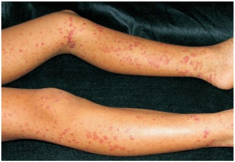
A Púrpura trombocitopênica idiopática.
B Meningococcemia.
C Púrpura
D Vasculite por IgA.
Questão 1018 · Corpo EstranhoEngasgo · 4000184344Menina, 10m, é trazida à Emergência por ter apresentado quadro súbito de acesso de tosse e cansaço. Nega febre e coriza. Exame físico: bom estado geral; T=36,5ºC; FR=62irmp; FC=110bpm; pulsos cheios; perfusão periférica=2 segundos; oximetria de pulso= 91% (ar ambiente); batimento de asa nasal; retração intercostal; pulmões: murmúrio vesicular presente, com roncos disseminados bilateralmente; coração: bulhas rítmicas normofonéticas sem sopros.
A Aspiração de corpo estranho.
B Bronquiolite viral aguda.
C Laringite aguda.
D Pneumotórax espontâneo.
Questão 1019 · Manejo da Via Aérea · 4000184343Na condução da parada cardiorrespiratória em assistolia com via aérea definitiva de um lactente de três meses,
A 100-120 compressões/min assíncronas e 1 ventilação a cada 2-3 segundos.
B 100-110 compressões/min síncronas para cada ventilação.
C 110-120 compressões/min assíncronas e 1 ventilação a cada 6 segundos.
D 100-120 compressões/min síncronas para cada 4 ventilações.
Questão 1020 · Sepse neonatal · 4000184342Recém-nascido a termo, lho de mãe colonizada por recebeu duas doses de penicilina cristalina antes do parto vaginal, sendo a última há três horas. Apgar 9/10, exame físico sem alterações.
A Coletar hemograma, proteína C reativa e hemocultura; iniciar antibioticoterapia.
B Coletar hemograma, proteína C reativa; aguardar exames para definir conduta.
C Realizar exame físico seriado; sem coleta de exames ou tratamento.
D Coletar hemocultura; iniciar antibioticoterapia.
Questão 1021 · Causas · 4000184341Recém-nascido a termo com 3.450g apresenta-se hipotônico e com sucção débil com 12 horas de vida. Realizada dosagem de glicemia plasmática=22mg/dL. Antecedente gestacional: mãe com crise asmática e uso de terbutalina próximo ao parto. NESTE CASO É:
A Hiperinsulinismo.
B Nesidioblastose.
C Inibição da glicólise.
D Bloqueio da glicogenólise.
Questão 1022 · Reanimação neonatal em maiores de 34 semanas · 4000184339Recém-nascido, 40 semanas de gestação, gravidez sem intercorrências e parto cesárea por sofrimento fetal agudo com presença de líquido amniótico meconial. Foi recebido em campos aquecidos, posicionado em decúbito dorsal sob fonte de calor radiante, trocados os campos úmidos e asseguradas as vias aéreas pérvias. Encontra-se hipotônico, com movimentos respiratórios irregulares e FC=60bpm.
A Intubação traqueal, administração de oxigênio a 100%, seguida de aspiração do conteúdo traqueal.
B Intubação traqueal e ventilação com pressão positiva com oxigênio a 21%.
C Compressão torácica coordenada com a ventilação com pressão positiva.
D Ventilação com pressão positiva por máscara com oxigênio a 21%.
Questão 1023 · Hipotireoidismo Congênito · 4000184338Menino, 23 dias de vida, foi convocado para consulta por apresentar TSH=25mUI/L em teste de triagem neonatal coletado em papel- ltro no quarto dia de vida. Mãe nega queixas. Está em aleitamento materno exclusivo com ganho ponderal de 28g/dia e o exame físico é normal. Antecedentes pessoais: gravidez e parto sem intercorrências (Capurro=39 semanas; peso ao nascimento=3.125g).
A Sugere hipotireoidismo subclínico; deve-se realizar dosagem sérica de T4L e TSH em oito semanas ou antes, se apresentar sintomas.
B Sugere aumento fisiológico de TSH porque a coleta foi realizada no quarto dia de vida; não é necessária investigação.
C Sugere hipotireoidismo; deve-se realizar dosagem sérica imediata de T4L e TSH.
D Sugere hipertireoidismo; deve-se realizar dosagem sérica imediata de T3L, T4L e TSH.
Questão 1024 · Pneumonia af ebril do lactente · Pediatria · Agentes etiológicos · 4000184337Menina, 3m, é internada em enfermaria com história de tosse seca, recusa das mamadas e cansaço há dois dias. Nega febre. Antecedentes pessoais: parto vaginal domiciliar a termo, com peso adequado; conjuntivite purulenta aos 15 dias de vida, em acompanhamento com oftalmologista. Exame físico: bom estado geral; corada; hidratada; T=36,2oC; FR=71irpm; FC=152bpm; pulsos cheios; enchimento capilar=2seg; pulmões: murmúrio vesicular presente, simétrico, com estertores subcrepitantes bilateralmente, tempo expiratório normal, com presença de retração de fúrcula, tiragem intercostal e subcostal. RESPONSÁVEL PELO QUADRO É:
A Streptococcus pneumoniae.
B Staphylococcus aureus.
C Chlamydia trachomatis.
D Streptococcus agalactiae.
Questão 1025 · Diagnóstico do IAMCSST · Taquicardia Ventricular TV · Taquiarritmias ventriculares · 4000184278Paciente de 80 anos foi encontrado em rua pública, e testemunhas disseram que ele estava caminhando quando subitamente caiu no chão, perdendo a consciência. No hospital, foi realizado eletrocardiograma mostrado a seguir. Ao exame físico, sua pressão arterial era de 80x40mmHg, havia estertores pulmonares em todos os segmentos pulmonares com turgência jugular; sua glicemia estava normal. Durante seu atendimento, o paciente demonstrou um ritmo cardíaco no monitor. Com base nos conhecimentos clínicos e nos eletrocardiogramas apresentados, julgue o item a seguir. No eletrocardiograma número 2, o paciente apresenta taquicardia ventricular.
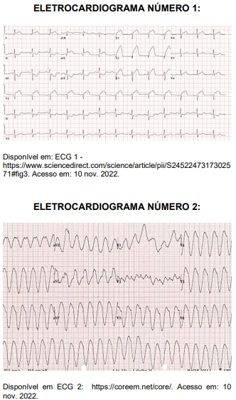
A Certo.
B Errado.
Questão 1026 · Curvas de Crescimento · Pediatria · 4000184256Um menino, com 8 anos de idade, vem ao ambulatório levado pela mãe com queixa de baixa estatura. Ele diz que é o mais baixo dos seus amigos, e a mãe acha que ele está crescendo pouco. A estatura do paciente é de 120cm, estando no escore Z −1 na curva da estatura. Em relação ao caso clínico descrito e aos conhecimentos médicos relacionados, julgue o item a seguir. O fato de o paciente estar no escore Z −1, do ponto de vista antropométrico, indica que ele se encontra, no momento, com baixa estatura.
A Certo.
B Errado.
Questão 1027 · Pediatria · Maturação Esquelética · 4000184255Um menino, com 8 anos de idade, vem ao ambulatório levado pela mãe com queixa de baixa estatura. Ele diz que é o mais baixo dos seus amigos, e a mãe acha que ele está crescendo pouco. A estatura do paciente é de 120cm, estando no escore Z −1 na curva da estatura. Em relação ao caso clínico descrito e aos conhecimentos médicos relacionados, julgue o item a seguir. A avaliação da idade óssea (IO) está mais associada à estatura atual e futura do que à idade cronológica.
A Certo.
B Errado.
Questão 1028 · Desvios da Normalidade · Pediatria · 4000184254Um menino, com 8 anos de idade, vem ao ambulatório levado pela mãe com queixa de baixa estatura. Ele diz que é o mais baixo dos seus amigos, e a mãe acha que ele está crescendo pouco. A estatura do paciente é de 120cm, estando no escore Z −1 na curva da estatura. Em relação ao caso clínico descrito e aos conhecimentos médicos relacionados, julgue o item a seguir. Um paciente com velocidade de crescimento adequada, estatura nal dentro do alvo parental e uma IO levemente atrasada em relação à cronológica tem mais tempo para crescer, ocasionando maior ganho estatural.
A Certo.
B Errado.
Questão 1029 · Pediatria · Tratamento · 4000184253Um menino, com 8 anos de idade, vem ao ambulatório levado pela mãe com queixa de baixa estatura. Ele diz que é o mais baixo dos seus amigos, e a mãe acha que ele está crescendo pouco. A estatura do paciente é de 120cm, estando no escore Z −1 na curva da estatura. Em relação ao caso clínico descrito e aos conhecimentos médicos relacionados, julgue o item a seguir. O recurso terapêutico no caso de baixa estatura é o hormônio de crescimento (GH), mas seu uso tem efeitos colaterais como estimular neoplasias.
A Certo.
B Errado.
Questão 1030 · Pediatria · Causas Genéticas e Cormossômicas · 4000184252Um menino, com 8 anos de idade, vem ao ambulatório levado pela mãe com queixa de baixa estatura. Ele diz que é o mais baixo dos seus amigos, e a mãe acha que ele está crescendo pouco. A estatura do paciente é de 120cm, estando no escore Z −1 na curva da estatura. Em relação ao caso clínico descrito e aos conhecimentos médicos relacionados, julgue o item a seguir. Existem alterações sindrômicas que possuem associação com baixa estatura, como as síndromes de Marfan e Soto.
A Certo.
B Errado.
Questão 1031 · Avaliação do Crescimento · Pediatria · 4000184251Um menino, com 8 anos de idade, vem ao ambulatório levado pela mãe com queixa de baixa estatura. Ele diz que é o mais baixo dos seus amigos, e a mãe acha que ele está crescendo pouco. A estatura do paciente é de 120cm, estando no escore Z −1 na curva da estatura. Em relação ao caso clínico descrito e aos conhecimentos médicos relacionados, julgue o item a seguir. A aferição da altura, em criança maior de 2 anos, deve ser realizada com a criança em pé, em balança plataforma com antropômetro, ou em antropômetro de parede.
A Certo.
B Errado.
Questão 1032 · Agentes etiológicos · Pediatria · 4000184238Um lactente de 1 mês e 15 dias é levado à emergência com quadro de febre, coriza e tosse há cinco dias. Hoje, apresentou cianose e desconforto respiratório. Está com frequência respiratória de 70irpm, saturação arterial de oxigênio de 90% em ar ambiente, tiragem intercostal e subcostal leve e ausculta pulmonar com estertores bolhosos difusos, com tempo de expiração levemente prolongado, tendo sido iniciado tratamento para pneumonia. Em relação ao caso clínico descrito e aos conhecimentos médicos relacionados, julgue o item a seguir. O vírus in uenza é o responsável por mais da metade dos casos de pneumonia viral nos primeiros 2 anos de idade.
A Certo.
B Errado.
Questão 1033 · Pediatria · PneumoniasBroncopneumonias BCP na Inf ância · 4000184237Um lactente de 1 mês e 15 dias é levado à emergência com quadro de febre, coriza e tosse há cinco dias. Hoje, apresentou cianose e desconforto respiratório. Está com frequência respiratória de 70irpm, saturação arterial de oxigênio de 90% em ar ambiente, tiragem intercostal e subcostal leve e ausculta pulmonar com estertores bolhosos difusos, com tempo de expiração levemente prolongado, tendo sido iniciado tratamento para pneumonia. Em relação ao caso clínico descrito e aos conhecimentos médicos relacionados, julgue o item a seguir. Em relação às pneumonias comunitárias na infância, não há recomendação de realizar raio-x de tórax em crianças que estejam bem o suficiente para serem tratadas ambulatorialmente.
A Certo.
B Errado.
Questão 1034 · Complicações · Pediatria · 4000184236Um lactente de 1 mês e 15 dias é levado à emergência com quadro de febre, coriza e tosse há cinco dias. Hoje, apresentou cianose e desconforto respiratório. Está com frequência respiratória de 70irpm, saturação arterial de oxigênio de 90% em ar ambiente, tiragem intercostal e subcostal leve e ausculta pulmonar com estertores bolhosos difusos, com tempo de expiração levemente prolongado, tendo sido iniciado tratamento para pneumonia. Em relação ao caso clínico descrito e aos conhecimentos médicos relacionados, julgue o item a seguir. São consideradas complicações de pneumonias: derrame pleural, pneumotórax, pneumatoceles e abscesso pulmonar.
A Certo.
B Errado.
Questão 1035 · Complicações · Pediatria · 4000184235Um lactente de 1 mês e 15 dias é levado à emergência com quadro de febre, coriza e tosse há cinco dias. Hoje, apresentou cianose e desconforto respiratório. Está com frequência respiratória de 70irpm, saturação arterial de oxigênio de 90% em ar ambiente, tiragem intercostal e subcostal leve e ausculta pulmonar com estertores bolhosos difusos, com tempo de expiração levemente prolongado, tendo sido iniciado tratamento para pneumonia. Em relação ao caso clínico descrito e aos conhecimentos médicos relacionados, julgue o item a seguir. Derrames parapneumônicos são coleções pleurais associadas, principalmente, às pneumonias agudas, sendo sempre transudatos.
A Certo.
B Errado.
Questão 1036 · Complicações · Pediatria · 4000184234Um lactente de 1 mês e 15 dias é levado à emergência com quadro de febre, coriza e tosse há cinco dias. Hoje, apresentou cianose e desconforto respiratório. Está com frequência respiratória de 70irpm, saturação arterial de oxigênio de 90% em ar ambiente, tiragem intercostal e subcostal leve e ausculta pulmonar com estertores bolhosos difusos, com tempo de expiração levemente prolongado, tendo sido iniciado tratamento para pneumonia. Em relação ao caso clínico descrito e aos conhecimentos médicos relacionados, julgue o item a seguir. A pneumonia necrosante é uma complicação leve das pneumonias adquiridas na comunidade.
A Certo.
B Errado.
Questão 1037 · Pneumonia af ebril do lactente · Pediatria · 4000184233Um lactente de 1 mês e 15 dias é levado à emergência com quadro de febre, coriza e tosse há cinco dias. Hoje, apresentou cianose e desconforto respiratório. Está com frequência respiratória de 70irpm, saturação arterial de oxigênio de 90% em ar ambiente, tiragem intercostal e subcostal leve e ausculta pulmonar com estertores bolhosos difusos, com tempo de expiração levemente prolongado, tendo sido iniciado tratamento para pneumonia. Em relação ao caso clínico descrito e aos conhecimentos médicos relacionados, julgue o item a seguir. Quando há suspeita de pneumonite afebril do lactente, deve-se prescrever um antibiótico macrolídio.
A Certo.
B Errado.
Questão 1038 · Avaliação do Crescimento · Pediatria · 4000184202Miguel é uma criança de 3 meses, que foi levada por sua mãe, Rafaela, para consulta de puericultura. Miguel nasceu com peso de 3450g, perímetro cefálico de 34cm e 48cm de comprimento; seu exame físico, hoje, apresenta as seguintes medidas: peso de 6830g, perímetro cefálico de 41cm e comprimento de 61cm. Quando questionada, Rafaela traz algumas preocupações: refere que está preocupada com o peso de Miguel, pois acha que produz pouco leite; está preocupada também com o desenvolvimento do bebê e se ele já não deveria estar sentando. Ao conferir o cartão de vacinas de Miguel, o médico da UBS verifica as seguintes vacinas no cartão: BCG, DTP, Hib, VIP e pneumo conjugada. Considerando o caso descrito e seus conhecimentos, julgue o item a seguir. A escolaridade dos pais é fator de risco para desenvolvimento e crescimento infantil inadequado.
A Certo.
B Errado.
Questão 1039 · DNPM Desenvolvimento NeuroPsicoMotor · Pediatria · 4000184201Miguel é uma criança de 3 meses, que foi levada por sua mãe, Rafaela, para consulta de puericultura. Miguel nasceu com peso de 3450g, perímetro cefálico de 34cm e 48cm de comprimento; seu exame físico, hoje, apresenta as seguintes medidas: peso de 6830g, perímetro cefálico de 41cm e comprimento de 61cm. Quando questionada, Rafaela traz algumas preocupações: refere que está preocupada com o peso de Miguel, pois acha que produz pouco leite; está preocupada também com o desenvolvimento do bebê e se ele já não deveria estar sentando. Ao conferir o cartão de vacinas de Miguel, o médico da UBS verifica as seguintes vacinas no cartão: BCG, DTP, Hib, VIP e pneumo conjugada. Considerando o caso descrito e seus conhecimentos, julgue o item a seguir. Pelo relato de Rafaela, Miguel apresenta atraso no desenvolvimento, pois, nessa idade, já é esperado que a criança sente sem apoio.
A Certo.
B Errado.
Questão 1040 · Avaliação do Crescimento · Pediatria · 4000184200Miguel é uma criança de 3 meses, que foi levada por sua mãe, Rafaela, para consulta de puericultura. Miguel nasceu com peso de 3450g, perímetro cefálico de 34cm e 48cm de comprimento; seu exame físico, hoje, apresenta as seguintes medidas: peso de 6830g, perímetro cefálico de 41cm e comprimento de 61cm. Quando questionada, Rafaela traz algumas preocupações: refere que está preocupada com o peso de Miguel, pois acha que produz pouco leite; está preocupada também com o desenvolvimento do bebê e se ele já não deveria estar sentando. Ao conferir o cartão de vacinas de Miguel, o médico da UBS verifica as seguintes vacinas no cartão: BCG, DTP, Hib, VIP e pneumo conjugada. Considerando o caso descrito e seus conhecimentos, julgue o item a seguir. O peso, dentre os parâmetros antropométricos, é o último a ser afetado pelo crescimento inadequado.
A Certo.
B Errado.
Questão 1041 · Avaliação do Crescimento · Pediatria · 4000184199Miguel é uma criança de 3 meses, que foi levada por sua mãe, Rafaela, para consulta de puericultura. Miguel nasceu com peso de 3450g, perímetro cefálico de 34cm e 48cm de comprimento; seu exame físico, hoje, apresenta as seguintes medidas: peso de 6830g, perímetro cefálico de 41cm e comprimento de 61cm. Quando questionada, Rafaela traz algumas preocupações: refere que está preocupada com o peso de Miguel, pois acha que produz pouco leite; está preocupada também com o desenvolvimento do bebê e se ele já não deveria estar sentando. Ao conferir o cartão de vacinas de Miguel, o médico da UBS verifica as seguintes vacinas no cartão: BCG, DTP, Hib, VIP e pneumo conjugada. Considerando o caso descrito e seus conhecimentos, julgue o item a seguir. A velocidade de crescimento esperada para uma criança gira em torno de 15 cm no 1º semestre de vida.
A Certo.
B Errado.
Questão 1042 · Calendário inf antil · Vacinas contra poliomielite · 4000184198Miguel é uma criança de 3 meses, que foi levada por sua mãe, Rafaela, para consulta de puericultura. Miguel nasceu com peso de 3450g, perímetro cefálico de 34cm e 48cm de comprimento; seu exame físico, hoje, apresenta as seguintes medidas: peso de 6830g, perímetro cefálico de 41cm e comprimento de 61cm. Quando questionada, Rafaela traz algumas preocupações: refere que está preocupada com o peso de Miguel, pois acha que produz pouco leite; está preocupada também com o desenvolvimento do bebê e se ele já não deveria estar sentando. Ao conferir o cartão de vacinas de Miguel, o médico da UBS verifica as seguintes vacinas no cartão: BCG, DTP, Hib, VIP e pneumo conjugada. Considerando o caso descrito e seus conhecimentos, julgue o item a seguir. Pela verificação do cartão de vacinação, é possível verificar que Miguel ainda não recebeu nenhuma dose de vacina contra pólio.
A Certo.
B Errado.
Questão 1043 · Avaliação do Crescimento · Pediatria · 4000184197Miguel é uma criança de 3 meses, que foi levada por sua mãe, Rafaela, para consulta de puericultura. Miguel nasceu com peso de 3450g, perímetro cefálico de 34cm e 48cm de comprimento; seu exame físico, hoje, apresenta as seguintes medidas: peso de 6830g, perímetro cefálico de 41cm e comprimento de 61cm. Quando questionada, Rafaela traz algumas preocupações: refere que está preocupada com o peso de Miguel, pois acha que produz pouco leite; está preocupada também com o desenvolvimento do bebê e se ele já não deveria estar sentando. Ao conferir o cartão de vacinas de Miguel, o médico da UBS verifica as seguintes vacinas no cartão: BCG, DTP, Hib, VIP e pneumo conjugada. Considerando o caso descrito e seus conhecimentos, julgue o item a seguir. Considerando a velocidade padrão de ganho ponderal nos 3 primeiros meses, Miguel está com o ganho de peso inadequado.
A Certo.
B Errado.
Questão 1044 · Tratamento · Pediatria · 4000184084Paciente de 7 anos, sexo masculino, com antecedente de asma em uso de medicação contínua. Estava brincando no parquinho quando começou a sentir dor intensa no braço esquerdo. Após cerca de 30 minutos, começou a apresentar tosse, dor abdominal, vômitos e diarreia. Levado ao pronto atendimento, foi colocado sob fonte de oxigênio, sob monitorização e um acesso periférico foi obtido. Ao exame clínico, estava em regular estado geral, FC: 145 bpm, FR: 34 irpm, PA: 82x30 mmHg, Saturação 92% em ar ambiente, ausculta cardíaca sem alterações e ausculta pulmonar com sibilos difusos. Na exposição, foi notada a seguinte lesão: Além de oxigênio e expansão volêmica, qual a conduta a ser prontamente realizada?
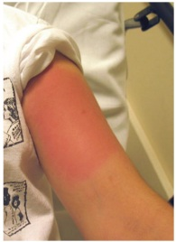
A Bloqueador H1 e H2; corticosteroide e adrenalina (1:1.000) endovenosos.
B Adrenalina (1:1.000) intramuscular; elevação dos membros inferiores.
C Soro antiaracnidico 3 ampolas e morfina endovenosos; bloqueio local.
D Antiescorpiônico endovenoso 2-3 ampolas; alfa-1 bloqueador oral.
Questão 1046 · Episódio hipotônicohiporresponsivo · 4000184081Paciente de 2 meses, sexo masculino, foi admitido no pronto atendimento após mãe ter notado que ele estava com os lábios arroxeados. Na admissão, encontrava-se arresponsivo, com perda de tônus muscular e com respiração super cial e hipoxemia, tendo sido prontamente iniciadas ventilações assistidas. O paciente havia recebido as imunizações previstas no calendário vacinal há cerca de 5 horas e teve febre precedendo o quadro. Após cerca de 5 minutos de suporte ventilatório, o paciente apresentou recuperação da respiração e do tônus, não sendo necessária entubação orotraqueal. Ao exame de reavaliação, estava corado, hidratado, FC: 150 bpm, FR 36 irpm, PA 73x40 mmHg, pulsos presentes e simétricos, tempo de enchimento capilar de 2 segundos, com abertura ocular espontânea. Restante do exame clínico sem alterações. Com relação à investigação do evento apresentado, podemos afirmar que:
A estão indicados eletrocardiograma na internação e eletroencefalograma ambulatorial.
B está indicado ultrassom transfontanela ou ressonância magnética de crânio.
C está indicada coleta de liquor ampliado com pesquisa de
D não há necessidade de investigações adicionais.
Questão 1047 · Pediatria · Tratamento · 4000184080Paciente de 9 anos, sexo feminino, portadora de brose cística pancreato-insu ciente foi admitida no pronto-socorro queixando-se de tosse com aumento da expectoração de aspecto esverdeada, há uma semana; hoje, com pequena quantidade de sangue e sem febre associada. Em culturas prévias de escarro, apresenta colonização crônica para e Staphylococus aureus dias precisou aumentar para 2L/minuto. Ao exame clínico, paciente mantendo estado geral de base, alerta, hidratada, taquidispneica moderada, com crepitações difusas à ausculta. Saturação 94% em oxigênio 2L/minuto. Estável hemodinamicamente. A radiogra a de tórax atual ( figura 1) e no momento da alta na internação anterior (figura 2) estão apresentadas. A paciente foi internada para suporte clínico com coleta de nova cultura de escarro. Com relação ao uso de antimicrobianos, podemos afirmar que a conduta adequada é:
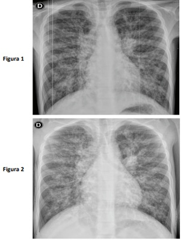
A introduzir vancomicina, ceftriaxone e metronidazol.
B introduzir linezolida, ceftazidima e amicacina.
C guardar identificação do agente na cultura atual para início do antibiótico.
D não há indicação de antimicrobianos neste momento.
Revisar: possível letra faltando em enunciado
Questão 1048 · Teste da orelhinha · 4000184076Recém-nascido do sexo masculino, de 15 dias de vida, comparece à Unidade Básica de Saúde para consulta de rotina. A mãe tem 40 anos, é quartigesta com três cesarianas anteriores, hipertensa crônica, recebeu assistência pré-natal adequada, tendo apresentado diabetes gestacional controlada com dieta. Não há antecedente familiar de surdez permanente e os pais não são consanguíneos. A criança nasceu com 37 semanas e 2 dias de idade gestacional, de parto cesariano com peso de 2.700 g, APGAR 7/9/10, permanecendo internada devido à icterícia neonatal tratada com fototerapia. Recebeu alta da maternidade no quinto dia de vida, com icterícia zona II de Krammer, sem outras alterações ao exame clínico. Assinale a alternativa correta considerando o caso acima.
A O recém-nascido não apresenta indicador de risco para perda auditiva e deve realizar exame de potenciais evocados auditivos do tronco encefálico até 30 dias de vida.
B O recém-nascido não apresenta indicador de risco para perda auditiva e deve realizar exame de emissões otoacústicas até 30 dias de vida.
C O recém-nascido apresenta indicador de risco para perda auditiva e deve realizar exame de emissões otoacústicas até 30 dias de vida.
D O recém-nascido apresenta indicador de risco para perda auditiva e deve realizar exame de potenciais evocados auditivos do tronco encefálico até 30 dias de vida.
Questão 1049 · Toxoplasmose congênita · Rastreamento na gestação · 4000184075Recém-nascido a termo, adequado para idade gestacional, lho de mãe hígida com pré-natal adequado, ultrassom morfológico normal. Sorologia de toxoplasmose com 7 semanas de gestação: IgM (método elisa) positivo, IgG positivo, com alta avidez. Exame clínico normal ao nascimento. A conduta recomendada é:
A realizar avaliação de fundo de olho, ultrassonografia transfontanela e abdominal, hemograma, punção lombar e sorologias do recém-nascido, antes de indicar o tratamento.
B coletar sorologia para toxoplasmose do sangue do cordão e indicar o tratamento dependendo do resultado.
C iniciar tratamento com sulfadiazina, pirimetamina e ácido folínico por um ano, independentemente do resultado de exames.
D realizar cuidados de rotina, não havendo necessidade de investigação diagnóstica ou de tratamento do recém-nascido.
Questão 1050 · Teste do pezinho · Erros inatos do metabolismo · 4000184074Mãe de 28 anos, primigesta, sem comorbidades, há 24 horas deu à luz a um recém-nascido a termo, adequado para a idade gestacional. O pré-natal foi adequado e sem intercorrências. O primeiro exame clínico completo do recém-nascido não apresentou alterações. A mãe refere preocupação com relação à investigação de fenilcetonúria, pois tem histórico familiar da doença. Ela insiste na realização imediata de exames que identifiquem a doença. Com relação ao exame de triagem para a doença em questão, está correto afirmar:
A deve ser solicitado ambulatorialmente, dado que este erro inato do metabolismo não tem seu curso modificado por intervenções específicas.
B deve ser realizado logo após o nascimento e antes da introdução de leite materno ou fórmula, a fim de evitar lesão neurológica irreversível.
C deve ser realizado após 48 horas do nascimento, pois é necessário que a criança tenha sido alimentada com uma quantidade suficiente de proteína.
D não está indicado para este recém-nascido cujo peso é normal e cujo exame clínico não evidencia traços de doença genética.
Questão 1051 · Icterícia neonatal · 4000184073Um recém-nascido (RN) do sexo masculino, com 39 semanas e 4 dias de gestação e peso de nascimento d e 3.200 g, apresenta, com 40 horas de vida, icterícia que se estende até a raiz de coxas. Tipagem sanguínea da mãe: A, Rh positivo, com Coombs indireto (pesquisa de anticorpos irregulares) positivo. Tipagem sanguínea do RN: O, Rh negativo, com Coombs direto (teste da antiglobulina direto) negativo. Coletados os exames, a bilirrubina indireta (BI) foi de 11,1 mg/dL, a bilirrubina direta (BD) de 0,7 mg/dL, Hemograma com hemoglobina de 18,1 g/dL, com presença de hemácias fragmentadas e dosagem de G6PD (Glicose-6 fosfato desidrogenase) com metade do valor considerado limite inferior da normalidade. Qual é a classificação da icterícia pelos critérios de Kramer e qual é a conduta imediata?
A Zona IV; observação clínica e nova coleta de bilirrubina em 6 horas.
B Zona IV; fototerapia.
C Zona III; observação clínica e nova coleta de bilirrubina em 12 horas.
D Zona III; fototerapia.
Questão 1052 · Pediatria · Abordagem da Crise Febril · 4000184072A mãe de uma lactente do sexo feminino de 18 meses de idade refere que, há 15 dias, sua lha apresentou u m episódio de crise convulsiva tônico-clônica generalizada, com duração de 8 minutos; o quadro foi acompanhado de febre de 38,5°C. Procurou Pronto Atendimento na ocasião e, após 6 horas em observação, foi dada alta hospitalar com medicação apropriada para o tratamento de otite média aguda. A criança nunca havia apresentado episódio convulsivo até então e não voltou a apresentar novas crises. Nasceu a termo, sem intercorrências no período perinatal e a mãe nega doenças relevantes prévias. Na consulta atual, apresenta exame clínico normal. Qual a conduta neste momento?
A Realização de tomografia computadorizada do crânio.
B Prescrição de medicação antiepiléptica profilática.
C Solicitação de exame eletroencefalográfico.
D Observação clínica em consultas pediátricas de rotina.
Questão 1053 · Calendário inf antil · 4000184071Lactente do sexo masculino de 4 meses e 10 dias é levado à Unidade Básica de Saúde para atualização da imunização. Recebeu somente as vacinas administradas na maternidade (BCG e Hepatite B). Nasceu de parto cesariano, com 35 semanas de idade gestacional, apresenta paralisia cerebral e sibilância recorrente desde o primeiro mês de vida. Hoje está no 5º dia de uso de amoxicilina, prednisolona e broncodiltador para tratamento de uma otite média aguda associada a broncoespasmo. Qual vacina não deverá ser administrada hoje?
A Pentavalente.
B Pneumococo.
C Rotavírus.
D Poliomielite.
Questão 1054 · Hipertensão arterial HAS em crianças e adolescentes · Pediatria · Diagnóstico Nutricional · 4000184070Em consulta médica de rotina, um menino previamente hígido, de 10 anos e 6 meses de idade, apresenta peso de 40 kg e estatura de 1,30 m. Foram realizadas três medidas da pressão arterial sob condições adequadas, obtendo-se o valor médio de 100x70 mmHg em todas as aferições. De acordo com as Curvas de Referência da OMS para IMC e altura por idade e sexo, e segundo a 7ª Diretriz Brasileira de Hipertensão Arterial (tabelas acima), este paciente apresenta:
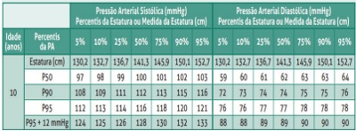
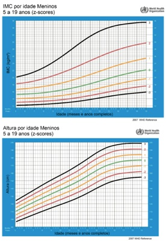
A sobrepeso, estatura normal e pressão arterial elevada.
B obesidade, baixa estatura e pressão arterial elevada.
C obesidade, estatura normal e pressão arterial normal.
D sobrepeso, risco de baixa estatura e pressão arterial normal.
Questão 1055 · Reações adversas · 4000184069Em consulta de rotina, a mãe de um lactente de 35 dias de vida encontra-se preocupada com o aparecimento de uma “ferida” no local da aplicação da vacina BCG, há 4 dias. A criança nasceu a termo, de parto normal, pesando 2.980 g, medindo 49 cm de comprimento, sem intercorrências no período perinatal. Na maternidade, recebeu as vacinas BCG e Hepatite B. Está em aleitamento materno exclusivo, ganhando 28 g de peso ao dia. Ao exame clínico, nota-se a presença de uma úlcera de 0,8 cm de diâmetro localizada na inserção inferior do músculo deltoide direito, sem saída de secreção e de gânglio axilar homolateral, indolor, de consistência broelástica, móvel, sem sinais ogísticos, medindo 2,5 cm. Sem outras alterações nos demais aparelhos e sistemas. Qual a conduta para este caso?
A Prescrição de isoniazida.
B Acompanhamento clínico.
C Introdução de cefalexina.
D Punção ganglionar.
Questão 1056 · Pneumonias de repetição · Pneumonia aspirativa · Pediatria · 4000184065Paciente de 3 anos, sexo masculino, com antecedente de encefalopatia hipóxico-isquêmica, portador de gastrostomia e traqueostomia, foi internado na enfermaria devido ao quadro de pneumonia à direita. O paciente tem antecedente de epilepsia, em uso de ácido valproico, com bom controle das crises, e pneumonias de repetição, com diversas internações no último ano. Durante a internação atual, o paciente foi avaliado por equipe de fonoaudiologia, que identificou distúrbio de deglutição e sialorreia. Qual das alternativas abaixo contém medicações que devem ser adicionadas às de uso contínuo, com o objetivo de reduzir a recorrência destes quadros pulmonares?
A Amoxicilina em dose profilática.
B Pró-cinético e bloqueador H2.
C Colírio de atropina via oral.
D Benzodiazepínicos de absorção lenta.
Questão 1057 · Pediatria · Classif icação e Tratamento da Crise · 4000184050Caso 8 Paciente de 5 anos, sexo masculino, com antecedente de dermatite atópica, rinite alérgica e internações prévias por crises de sibilância, foi admitido no setor de emergência, apresentando quadro de febre de até 39.5 ºC, tosse e dificuldade para respirar há dois dias. Apresenta o seguinte exame clínico inicial: I. regular estado geral, corado, hidratado, alerta, orientado; II. 2 BRNF, sem sopros, FC: 152 bpm, PA: 88x46 mmHg; III. murmúrio vesicular presente, reduzido bilateralmente, com estertores crepitantes em base direita e sibilos difusos, tiragem subdiafragmática, intercostal e de fúrcula, com tempo expiratório prolongado, FR: 42 irpm; saturação de oxigênio de 92% em ar ambiente, 96% em máscara de Venturi 50%; tempo de enchimento capilar de 2 segundos, pulsos cheios; IV. peso 20 Kg. Realizou o exame radiológico apresentado. Qual é a prescrição inicial mais adequada (itens 1-3) e o antimicrobiano a ser introduzido (item 4)?
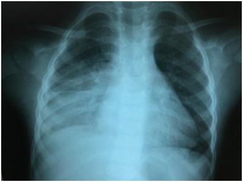
A 1) Salbutamol 600 mcg, via inalatória, 3x com intervalo de 20 minutos;
B 1) Salbutamol 200 mcg, via inalatória, 3x com intervalo de 20 minutos;
C 1) Salbutamol 200 mcg, via inalatória, 3x com intervalo de 20 minutos;
D 1) Salbutamol 600 mcg, via inalatória, 3x com intervalo de 20 minutos;
Questão 1058 · Programa Nacional de Imunizações · Calendário dos adultos · Características Gerais · 4000184035Assinale a alternativa correta sobre os grupos prioritários para a 24ª Campanha Nacional de vacinação contra a Influenza – 2022.
A Todos as pessoas com mais de 50 anos de idade.
B Gestantes, desde que comprovada a gestação com exame laboratorial ou relatório médico.
C Todas as crianças até 12 anos de idade.
D Todos os trabalhadores da saúde dos serviços públicos e privados.
Questão 1059 · Principais síndromes genéticas e neonatais · 4000183974A síndrome de Hutchinson se caracteriza por:
A adenomas da hipófise.
B metástases retroorbitais.
C adenomas na córtex adrenal.
D adenomas na medula adrenal.
Questão 1060 · Agente etiológico · Exantema Súbito · 4000183964Lactente, sexo feminino, 8 meses, apresenta-se com exantema maculopapular, com início no tórax, indo para pescoço, face e regiões proximais dos membros. Não apresenta outras alterações de exame físico. Mãe relata que a filha vinha apresentando febre há dois dias, de 38,5 ºC, com último pico febril há 18 horas. Qual o agente etiológico mais provável responsável pelo quadro clínico?
A Parvovírus B19.
B Streptococcus pyogenes.
C Herpes vírus tipo 6.
D Coxsackie vírus.
Questão 1061 · Tratamento da hiperbilirrubinemia · Fototerapia · Icterícia neonatal · 4000183963Recém-nascido a termo, sexo masculino, peso de nascimento 3200 g, iniciou quadro de icterícia com 22 horas de vida. Mãe primigesta, parto e período perinatal sem intercorrências, tipagem sanguínea O positivo. RN em aleitamento materno exclusivo, tipagem sanguínea B positivo. Exame físico: icterícia em face, tronco e abdome até a cicatriz umbilical, sem outras alterações. A conduta correta, nesse caso, é
A solicitar sorologias para investigação de infecções congênitas.
B solicitar bilirrubina total e frações e suspender temporariamente a amamentação.
C solicitar bilirrubina total e frações, hemograma e glicemia de jejum.
D solicitar bilirrubina total e frações, teste do Eluato e indicar fototerapia.
Questão 1062 · Recepção do neonato com boa vitalidade · Clampeamento tardio do cordão · 4000183962De acordo com as últimas diretrizes da Sociedade Brasileira de Pediatria, na reanimação neonatal de um RN de 38 semanas de idade gestacional, com presença de líquido amniótico meconial, que nasce chorando e com bom tônus, a conduta correta é
A clampeamento do cordão umbilical após os 60 segundos e manter o RN junto da parturiente.
B aspirar vias aéreas no momento do desprendimento do polo cefálico.
C levar o RN para o berço de reanimação e realizar laringoscopia direta e aspiração traqueal.
D clampeamento prematuro de cordão umbilical e aspirar vias aéreas no desprendimento do polo cefálico.
Questão 1063 · Síndrome do Bebê Chacoalhado · 4000183960Lactente de 4 meses, sexo masculino, nascido de 37 semanas, é acompanhado rotineiramente na unidade de saúde, vacinas em dia, bom ganho ponderal, em aleitamento materno exclusivo. Os pais levam a criança ao pronto atendimento com queixa de que, nos últimos dias, o lho está mais choroso, com cólica e não tem dormido a noite toda. Na última noite, apresentou choro intenso com irritabilidade e acordou pela manhã sonolento. Ao exame físico, observa-se discreto abaulamento de fontanela sem outras alterações. Realizado fundo de olho que evidenciou focos de hemorragia retiniana bilateralmente. Qual é a principal hipótese diagnóstica?
A meningite viral.
B vasculite cerebral autoimune.
C tumor cerebral.
D síndrome do bebê sacudido.
Questão 1064 · Avaliação do Crescimento · Fisiologia da Puberdade · Crescimento · 4000183959Adolescente, sexo feminino, 11 anos, previamente hígida, vem apresentando crescimento adequado durante acompanhamento pediátrico, relata preocupação com sua altura e desenvolvimento físico. Comenta que suas amigas da mesma idade já cresceram e se desenvolveram, e ela ainda não. Ao exame físico, observa-se estadiamento puberal de Tanner M2 P2. Em relação à sequência de desenvolvimento puberal, a adolescente ainda vai passar pelos seguintes marcos, na ordem correta:
A pubarca, menarca e pico de velocidade de crescimento.
B pico de velocidade de crescimento, desaceleração da velocidade de crescimento e menarca.
C menarca, pubarca e pico da velocidade de crescimento.
D pico da velocidade de crescimento, telarca e menarca.
Questão 1065 · Avaliação do Crescimento · Curvas de Crescimento · 4000183958Menina, 7 anos, com estatura de 120 cm (escore Z: - 0,15), peso de 22 kg, (escore Z: - 0,11) e IMC de 15,3 (Escore Z: - 0,08). De acordo com as recomendações atuais da Organização Mundial de Saúde e do Ministério da Saúde, quais são as classificações antropométrica e nutricional corretas para essa criança?
A Estatura adequada para a idade, peso adequado para a idade e magreza.
B Baixa estatura para a idade, peso adequado para a idade, eutrofia.
C Baixa estatura para a idade, baixo peso para a idade, eutrofia.
D Estatura adequada para a idade, peso adequado para idade e eutrofia.
Questão 1066 · Fatores de risco do bebê e ambientais · Fatores de Risco · Fatores de Proteção · 4000183957Sobre a Síndrome da Morte Súbita do Lactente (SMSL), pode-se afirmar que
A faz parte das recomendações de “sono seguro” colocar o lactente para dormir após mamar, em seu próprio berço, na posição prona.
B partilhar a cama com os pais diminui o risco de sua ocorrência.
C o local mais seguro para o lactente dormir é no quarto dos pais, próximo a eles, mas em seu próprio berço.
D são fatores de risco para SMSL o tabagismo materno, bebês com refluxo gastroesofágico e o lactente ser colocado para dormir na posição supina.
Questão 1067 · Calendário inf antil · Programa Nacional de Imunizações · Calendários vacinais · 4000183956Criança, 6 anos, sexo feminino, previamente hígida, apresenta-se para consulta de rotina na unidade de saúde com todas as vacinas em dia até os 15 meses de idade. De acordo com o Programa Nacional de Imunização do Ministério da Saúde, a criança deve receber as seguintes vacinas:
A reforço da VIP para poliomielite, SCR e varicela, e reforço da Hepatite A.
B reforço da VOP para poliomielite, reforço da DTP, reforço da Varicela e reforço da febre amarela.
C reforço da VOP para poliomielite, reforço da DTP e dose única de ACWY.
D reforço da VOP para poliomielite, reforço da DTP, dose única de ACWY e duas doses de HPV.
Questão 1068 · COVID 19 · Síndrome Inf lamatória Multissistêmica · 4000183955Faz parte dos critérios diagnósticos da síndrome inflamatória multissistêmica pediátrica associada à COVID- 19, além da presença de febre por pelo menos três dias:
A disfunção renal aguda.
B insuficiência respiratória aguda.
C idade menor que 2 anos.
D vômito, diarreia ou dor abdominal.
Questão 1069 · Diagnóstico · Ref luxo Gastroesof ágico RGE · Abordagem do RGE Fisiológico · 4000183954Lactente, 3 meses, sexo masculino, nascido a termo, sem intercorrências perinatais, em aleitamento materno exclusivo, com ganho ponderal e desenvolvimento adequados para a idade. Na consulta pediátrica de rotina, a mãe está preocupada com as regurgitações frequentes que acontecem após as mamadas. Diante da principal hipótese diagnóstica, qual a conduta correta?
A Fracionar as mamadas de 2 em 2 horas e introduzir ranitidina.
B Tranquilizar a mãe quanto ao diagnóstico de refluxo gastroesofágico fisiológico e orientar medidas posturais.
C Manter aleitamento materno em livre demanda e excluir leite de vaca e derivados da dieta materna.
D Solicitar ultrassom de abdome para diagnóstico de estenose hipertrófica de piloro.
Questão 1070 · Introdução alimentar · Alimentação Inf antil · Alimentação do lactente · 4000183951Na introdução alimentar de um lactente de 6 meses, previamente hígido e em aleitamento materno exclusivo, é correto
A introduzir a papa principal apenas com a gema do ovo.
B oferecer suco de fruta com a papa principal.
C introduzir a papa principal com carne de vaca ou frango.
D introduzir frutas cozidas.
Questão 1071 · Mães adequadamente tratadas · Mães inadequadamente tratadas · 4000183950Em relação à avaliação inicial da criança exposta à sífilis ou com sífilis congênita, é correto afirmar que
A o teste treponêmico coletado de sangue periférico do recém-nascido, na maternidade, é padrão- ouro para diagnóstico de sífilis congênita.
B um dos fatores para considerar a gestante adequadamente tratada é ela ter iniciado o tratamento para sífilis pelo menos 30 dias antes do parto.
C a diminuição de titulação dos testes não treponêmicos não é considerado fator de resposta ao tratamento adequado da sífilis na gestação.
D gestante considerada tratada adequadamente para sífilis não deve colher teste não treponêmico no momento do parto.
Questão 1072 · Idade entre 3 meses e 36 meses · 4000183949Lactente de 3 meses e meio, sexo feminino, com febre de 39 ºC há 2 dias sem outros sintomas. Nasceu a termo, parto sem intercorrências, em aleitamento materno exclusivo, com ganho de peso e estatura adequados para a idade, tendo recebido todas as vacinas do calendário do Programa Nacional de Imunização. Apresenta-se no pronto atendimento em bom estado geral, temperatura de 39,5 ºC, sem outras alterações ao exame físico. A abordagem correta para essa situação clínica é
A coleta de hemograma e hemocultura, sedimento urinário e urocultura e pesquisa viral, se disponível. Se hemograma e sedimento urinário normais, alta sem antibiótico com reavaliação diária até resultado de culturas.
B alta com sintomáticos e orientação para retorno ao pronto atendimento se sinais de alerta.
C coleta de hemograma e hemocultura, sedimento urinário e urocultura, líquor e pesquisa viral, se disponível, e admissão hospitalar para ceftriaxone endovenoso até resultado de culturas.
D coleta de hemograma e hemocultura, sedimento urinário e urocultura, líquor e pesquisa viral se disponível. Alta com introdução de amoxicilina com clavulanato até resultado de culturas.
Questão 1073 · Manejo da Via Aérea · Rítmo Cardíaco · Compresão · 4000183947De acordo com as diretrizes mais atuais sobre a ressuscitação cardiopulmonar (RCP) avançada de uma criança de 9 anos, assinale a alternativa correta.
A A intubação orotraqueal deve ser realizada quando não há retorno da respiração espontânea com as manobras iniciais de RCP e deve-se usar preferencialmente uma cânula sem
B A desfibrilação está indicada na assistolia e atividade elétrica sem pulso.
C Na criança com tubo traqueal, a relação compressão e ventilação deve ser de 30 compressões para 2 ventilações.
D A desfibrilação está indicada na fibrilação ventricular e taquicardia ventricular sem pulso.
Questão 1074 · PneumoniasBroncopneumonias BCP na Inf ância · Tratamento Medicamentoso · 4000183946Aspectos Clínicos Quadro clínico Menino de 4 anos dá entrada no pronto atendimento com quadro de tosse e febre não medida há cinco dias. H á um dia piorou a aceitação alimentar, apresentou 1 episódio de vômito e cansaço. Ao exame físico apresenta-se em bom estado geral, temperatura de 38,5 ºC, frequência cardíaca de 110 bpm e frequência respiratória de 44 ipm. Ausculta pulmonar com estertores subcrepitantes em base de pulmão direito, tempo de enchimento capilar de 2 segundos. Saturação em ar ambiente: 95%. Assinale a alternativa que apresenta a conduta correta.
A Inalação com soro fisiológico, lavagem nasal e sintomáticos para febre.
B Amoxicilina via oral, sintomáticos para febre e reavaliação em 24 horas.
C Internação hospitalar com oxacilina endovenosa.
D Oseltamivir, sintomáticos para febre e reavaliação em 24 horas.
Questão 1075 · Prof ilaxias Ferro Vitaminas D e A · Prof ilaxia Ferro · 4000183945De acordo com as últimas diretrizes da Sociedade Brasileira de Pediatria, como orientar corretamente a suplementação pro lática de ferro em um lactente de 5 meses e meio, em aleitamento materno exclusivo, nascido a termo, com peso adequado para a idade gestacional, sem fatores de risco para anemia ferropriva?
A Não haverá necessidade de suplementação de ferro para esse lactente.
B Iniciar a suplementação de ferro a partir do 6º mês de vida, na introdução alimentar, até o 24º mês de vida.
C Iniciar a suplementação de ferro a partir do 6º mês até o 12º mês de vida.
D Colher hemograma e ferritina no 6º mês de vida antes da suplementação de ferro.
Questão 1076 · Teste do coraçãozinho · 4000183884Segundo o Ministério da Saúde, o teste do coraçãozinho deve ser submetido em todo recém-nascido aparentemente saudável com idade gestacional > 34 semanas, antes da alta na maternidade. Em relação ao teste do coraçãozinho,
A deve ser realizado entre 24 e 48 horas de vida.
B tem por objetivo identificar cardiopatias congênitas cianóticas.
C é normal se a oximetria de membro superior esquerdo não diferir em 2 pontos de um dos membros inferiores.
D exclui o ecocardiograma para diagnóstico das cardiopatias congênitas críticas.
Questão 1077 · Pediatria · Alimentação saudável e prevenção de doenças · 4000183883O Ministério da Saúde e a Organização Pan-Americana de Saúde (MS/OPAS) propõem dez passos para a alimentação saudável para crianças menores de dois anos de idade. Uma recomendação considerada adequada para essa faixa etária é
A iniciar a oferta de fruta a partir dos sete meses de idade, amassada ou raspada, e a papa principal a partir dos oito meses.
B preparar as refeições da alimentação complementar sem a adição de sal ou açúcar nos 2 primeiros anos de vida.
C iniciar a oferta da papa principal com tubérculos, proteínas, hortaliças e leguminosas aos 6 meses, postergando os cereais para depois dos nove meses de idade.
D oferecer apenas água ou chás, se o lactente ainda estiver em aleitamento materno exclusivo nos primeiros seis meses de vida.
Questão 1078 · Doença por lesões mínimas · Pediatria · 4000183882Maurício, 2 anos de idade, é levado ao pediatra por apresentar quadro de edema, com início há cerca de 2 semanas, que vem aumentando progressivamente. No início do quadro, o paciente estava apresentando sintomas gripais que melhoraram com uso de amoxacilina por 7 dias. Ao exame físico, o médico observou edema em face, abdome e em membros inferiores. A mãe da criança relata estar preocupada porque Maurício tem uma prima, hoje com 4 anos de idade, com diagnóstico de síndrome nefrótica há cerca de um ano. Para confirmar esse diagnóstico, os exames que devem ser solicitados são dosagens de
A ureia, creatinina e sumário de urina com sedimentoscopia.
B colesterol total e frações, eletrólitos séricos e taxa de filtração glomerular.
C albumina sérica e relação proteína/creatinina urinária.
D creatinina, C3 e C4 séricos e sumário de urina com sedimentoscopia.
Questão 1079 · Pediatria · Diagnóstico Nutricional · 4000183880Criança de 4 anos de idade, sexo feminino, vem ao atendimento ambulatorial para consulta de rotina. Durante a avaliação nutricional, observam-se os seguintes índices antropométricos: escore Z peso/idade= 2,1 DP, escore Z estatura/idade= 0,5 DP, escore Z IMC/idade= 1,9 DP. De acordo com a classificação da OMS 2006, a criança tem os seguintes diagnósticos nutricionais antropométricos,
A peso adequado para a idade, baixa estatura para a idade, obesidade.
B peso adequado para a idade, baixa estatura para a idade, eutrofia.
C peso elevado para a idade, estatura adequada para a idade, risco de sobrepeso.
D peso elevado para a idade, estatura adequada para a idade, sobrepeso.
Questão 1080 · Sindrome Turner · Pediatria · 4000183879Menina de 5 anos vem à consulta para avaliar crescimento abaixo do esperado, principalmente após os 2 anos de idade. Pais hígidos e não consanguíneos (estatura do pai = 173 cm e da mãe = 161 cm) negam parada de crescimento ou doenças prévias da criança associadas ao crescimento inadequado. Antecedentes perinatais não apresentam alterações, nem há evidência de tocotrauma (parto cesárea a termo, com apgar 8/9, peso de 2,9 kg e comprimento de 48 cm). O desenvolvimento psicomotor foi adequado, fez aleitamento materno exclusivo por 5 meses e alimentação atual é satisfatória. Funções eliminatórias estão normais. Não foi submetida a cirurgias, internações ou acidentes (trauma crânio-encefálico). Ao exame físico: bom estado geral, corada, ativa, sem desvios fenotípicos, propedêutica cárdio/pulmonar normal, abdome sem visceromegalias, extremidades sem alterações. Escore Z Peso/Idade= -0,6 DP, Escore Z Estatura/idade= -2,1DP e relação SS/SI: 1,1. Tanner M1 P1. Exames subsidiários recentes (hemograma, função tireoidiana, lipidograma, sedimento urinário) não revelam alterações, e radiogra a de mãos e punhos apresenta a idade óssea de, aproximadamente, uma criança com 4 anos e 06 meses, segundo o atlas de Greulich-Pyle. Para esse caso, a hipótese diagnóstica mais provável e a condução mais apropriada são:
A baixa estatura idiopática; completar avaliação sistêmica e propor reposição com somatropina.
B baixa estatura constitucional/familiar e observar por 6 meses para eventual reposição hormonal.
C provável displasia óssea genética ou metabólica e solicitar estudo genético para diagnóstico específico, após avaliação de geneticista clínico.
D Síndrome de Turner (provável mosaico) e solicitar cariótipo com bandeamento GTG.
Questão 1081 · Hiperbilirrubinemia não f isiológica · 4000183878A icterícia neonatal é um processo comumente encontrado em bebês em alojamento conjunto. Ao se avaliar um recém-nascido a termo, com 15 horas de vida, observa-se que se apresenta ictérico. Considerando ser um caso de hiperbilirrubinemia neonatal,
A o diagnóstico está relacionado à incompatibilidade ABO, com a mãe sendo A positivo e o bebê O negativo.
B o risco de encefalopatia bilirrubínica é aumentado, se a dosagem sanguínea da albumina do bebê estiver acima de 3,0mg/dL
C a apresentação clínica sugere causa hemolítica pela precocidade da ocorrência, ou seja, antes de 24 horas de vida.
D a introdução imediata da fórmula é recomendada, nesse caso, para reduzir o risco da icterícia do leite materno, provável etiologia dessa icterícia.
Questão 1082 · Plano C · Plano A · Plano B · 4000183877O esquema clássico para o tratamento da diarreia aguda na infância segue três planos de conduta (A, B e C) de acordo com o estado de hidratação da criança. Diante disso,
A a hidratação, no Plano C, deve ser venosa e contempla 2 fases: de expansão (rápida) e de manutenção/reposição, ambas utilizando soro fisiológico e soro glicosado em proporções diferentes.
B deve-se manter, no Plano B, o aleitamento materno, se ainda constar do cardápio, suspender outros alimentos durante o período de reidratação e retornar à alimentação quando a criança estiver hidratada.
C deve-se aumentar, no Plano A, a oferta de líquidos, incluindo o soro de reidratação oral, e suspender a alimentação por período de 4 a 6 horas.
D os Planos A, B e C devem ser realizados nas Unidades Básicas de Saúde, uma vez que o paciente necessita ser reavaliado continuamente.
Questão 1083 · Constipação · 4000183876Pré-escolar de 5 anos, masculino, foi atendida em Unidade Básica de Saúde, com quadro de fezes ressecadas, calibrosas, eliminadas com esforço, 1 a 2 evacuações por semana, há 1 ano e meio. Vem apresentando perdas fecais em pequena quantidade, involuntárias, nas vestes íntimas há 2 meses. Nega dor abdominal e tem medo de evacuar. Nos antecedentes gestacionais e pessoais patológicos, não há alterações. Nasceu em boas condições, e a eliminação de mecônio ocorreu em 18 horas de vida. Ao exame físico, está eutró ca, corada, ativa. Ausculta cardiopulmonar não apresenta alterações. Abdome está levemente distendido, com massa endurecidas em fossa ilíaca esquerda, depressível, indolor. Não há alterações em região glútea e perineal. O desenvolvimento neuropsicomotor está adequado. O quadro, apresentado pelo paciente, leva ao diagnóstico de
A incontinência fecal não retentiva.
B constipação intestinal funcional com incontinência fecal.
C aganglionose colônica (doença de Hirchsprung).
D síndrome do intestino irritável com incontinência fecal.
Revisar: possível letra faltando em enunciado
Questão 1084 · Pediatria · Epilepsias · 4000183875V.S.R., 1 ano e 11 meses, com antecedente de encefalopatia crônica não evolutiva, cursa com atraso do desenvolvimento e foi levado ao atendimento pediátrico por apresentar crises noturnas, do tipo tônica, e crises diurnas caracterizadas por arresponsividade durante aproximadamente 1 minuto, com início e término mal definidos e sonolência pós-ictal. No eletrencefalograma, observou-se desorganização da atividade de base, ritmo rápido e complexos de espícula-onda ritmados a menos de 2,5 Hz generalizados. Nesse caso, a caracterização das crises diurnas e o diagnóstico do paciente são, respectivamente,
A mioclonias e Síndrome de Dravet.
B ausência atípica e Síndrome de Lennox-Gastaut.
C espasmos infantis e Síndrome de West.
D ausência típica e Síndrome de Doose.
Questão 1085 · Pediatria · Diagnóstico laboratorial · 4000183874Lactente do sexo feminino, três meses de vida, em uso de aleitamento misto (leite materno e fórmula de partida com diluição adequada) é levada à UPA por estar apresentando quadro de febre há 48 horas, associado à recusa alimentar. A mãe nega queixas respiratórias, gastrointestinais, cutâneas ou administração de vacinas nas últimas 72 h. Ao exame físico, encontra-se febril (temperatura axilar= 38,5°C) com bom estado geral, eupneica, acianótica, anictérica, ativa e reativa, com fontanela anterior plana e normotensa, sem linfonodomegalias palpáveis, sem alterações à ausculta cardiopulmonar, abdome ácido, indolor, com borda de fígado palpável a 1 cm do rebordo costal direito e membros superiores e inferiores sem edemas, boa perfusão periférica e pulsos amplamente palpáveis. Os exames laboratoriais mostram hemograma com leucocitose e neutrofilia, PCR= 60 mg/L, sumário de urina com sedimentoscopia (EAS) com 3 cruzes (+++) de leucoesterase, nitrito negativo, 50 leucócitos/campo, 2 hemácias/campo. O raio X de tórax solicitado não apresenta alterações aparentes. Diante desse quadro, a conduta mais adequada é
A realizar punção lombar para coleta de líquor, coletar urocultura por saco coletor e aguardar resultados desses exames para a decisão terapêutica.
B liberar a paciente com antitérmico oral e solicitar que a paciente retorne em 24 horas para reavaliação clínica e laboratorial.
C prescrever antibiótico empiricamente, sem solicitação de novos exames, e reavaliar a paciente após término do tratamento com sete dias.
D coletar urocultura por sonda vesical e, após esse procedimento, iniciar antibioticoterapia empírica mesmo antes da liberação desse resultado.
Questão 1086 · Hiperbilirrubinemia direta neonatal · 4000183873Recém-nascido, com 15 dias de vida, é levado ao ambulatório para consulta de rotina. Está em aleitamento materno exclusivo e sem queixas. Ao exame físico, o RN encontrase ativo, reativo, corado, ictérico (+++/4+), com escleras amareladas e fígado palpável a 5 cm do RCD. O restante do exame físico não apresenta alterações. Exames laboratoriais revela: Hematócrito= 40%; Hemoglobina= 13,5 mg/dL; bilirrubinas totais= 3,5 mg/dL; bilirrubina indireta= 2,3 mg/dL; bilirrubina direta= 1,2 mg/dL. Diante desse quadro, a conduta a ser tomada será
A caracterizar o caso como colestase de causa fisiológica, decorrente do metabolismo e transporte imaturos de sais biliares, devendo-se repetir a dosagem das bilirrubinas no final do primeiro mês de vida.
B não caracterizar o caso como colestase, por não haver relato de colúria e acolia fecal, mantendo-se o acompanhamento mensal de puericultura.
C caracterizar o caso como colestase e proceder a investigação do diagnóstico etiológico, estabelecendo se o processo é obstrutivo ou não, isto é, se o tratamento é clínico ou cirúrgico.
D não caracterizar o caso como colestase, por se tratar de icterícia por hiperbilirrubinemia indireta, solicitando-se a dosagem de reticulócitos como o passo a seguir.
Questão 1087 · ImunizaçõesVacinação · 4000183871A vacinação ampla da população pode evitar que doenças imunopreveníveis tornem-se importantes problemas de saúde pública. Segundo o atual calendário nacional de vacinação, a vacina
A antirrotavírus humano é recomendada em quatro doses a partir dos dois meses de idade.
B inativada da poliomielite está indicada em crianças a partir dos 2 meses de idade, em duas doses iniciais e complementada com dois reforços.
C BCG é recomendada ao nascer e protege das formas graves da tuberculose, da meningoturberculose e da forma miliar
D contra febre amarela está indicada em crianças a partir dos 12 meses de idade, em moradores de área de risco da doença.
Questão 1088 · Kwashiorkor · Pediatria · 4000183869Menino de 2 anos e três meses de idade chegou ao atendimento em UPA por apresentar edema de membros inferiores há uma semana e baixa atividade. É a 5ª lha de uma prole de 5 lhos e nasceu no início da pandemia Covid-19, quando o pai cou desempregado, e a família passou a não ter renda até o recebimento de benefícios sociais. Fez uso de leite materno exclusivo até os 4 meses de vida, passando a receber leite de vaca in natura após esse período. Foi introduzida a alimentação complementar a partir dos 6 meses, com predominância da alimentação láctea até o momento. Ao exame físico, aspecto geral estava comprometido, pois encontrava-se apática, descorada (++/4), com cabelos nos e quebradiços, áreas de rarefação capilar, pele com manchas hipocrômicas em dobras. A ausculta cardiopulmonar revelou: taquicardia leve, sopro sistólico suave em foco mitral. O abdome estava distendido, e o fígado, a 3 cm do rebordo costal direito de consistência elástica e bordas nas. Apresentava edema (++/4) em membros inferiores e sín se pubiana. A hipótese mais adequada para o diagnóstico do caso é de
A desnutrição energético-proteica grave – forma marasmo.
B desnutrição energético-proteica grave – forma Kwashiorkor.
C edema devido à hepatopatia a esclarecer.
D edema devido à insuficiência cardíaca.
Questão 1089 · Aspectos Clínicos · 4000183868As doenças definidas como exantemáticas podem, de alguma forma e em alguma parcela dos doentes, não apresentar o exantema em sua evolução. Entretanto, o exantema está, obrigatoriamente, presente em
A dengue.
B zika.
C citomegalovirose.
D sarampo.
Questão 1090 · Tratamento Geral · Pediatria · 4000183866E.Z.S., sexo masculino, 3 anos de idade, previamente saudável, é levado ao pronto-socorro por apresentar febre persistente há 3 dias além de adinamia e inapetência. A mãe relata que a criança iniciou coriza, obstrução nasal e dor de garganta há 5 dias e teve 2 episódios de vômitos nas últimas 24 h. No dia do atendimento, surgiu tosse pouco produtiva e piora da recusa alimentar. Realizou RT-PCR para SARS-COV2= negativo. Exame físico: estado geral comprometido, febril (38,5°C), frequência respiratória= 50 ipm; frequência cardíaca= 120 bpm; saturação O2 (ar ambiente) = 91%; presença de tiragem intercostal. Ausculta pulmonar: murmúrio vesicular diminuído em base de pulmão direito; sopro tubário audível em terço médio do pulmão direito; ausculta cardíaca: taquicardia leve; abdome levemente distendido, sem visceromegalias. Raio X de tórax mostra imagem de consolidação com broncogramas aéreos em 2/3 inferiores do pulmão direito. A conduta nesse caso é
A internar e iniciar penicilina cristalina.
B internar e iniciar ceftriaxona intramuscular.
C iniciar amoxicilina + clavulanato e reavaliar após 24 h.
D iniciar amoxicilina e orientar retorno para avaliação em 24 a 48 h.
Questão 1091 · Agentes etiológicos · Pediatria · 4000183865E.Z.S., sexo masculino, 3 anos de idade, previamente saudável, é levado ao pronto-socorro por apresentar febre persistente há 3 dias além de adinamia e inapetência. A mãe relata que a criança iniciou coriza, obstrução nasal e dor de garganta há 5 dias e teve 2 episódios de vômitos nas últimas 24 h. No dia do atendimento, surgiu tosse pouco produtiva e piora da recusa alimentar. Realizou RT-PCR para SARS-COV2= negativo. Exame físico: estado geral comprometido, febril (38,5°C), frequência respiratória= 50 ipm; frequência cardíaca= 120 bpm; saturação O2 (ar ambiente) = 91%; presença de tiragem intercostal. Ausculta pulmonar: murmúrio vesicular diminuído em base de pulmão direito; sopro tubário audível em terço médio do pulmão direito; ausculta cardíaca: taquicardia leve; abdome levemente distendido, sem visceromegalias. Raio X de tórax mostra imagem de consolidação com broncogramas aéreos em 2/3 inferiores do pulmão direito. O agente etiológico mais provável da pneumonia adquirida pelo paciente é
A Streptococcus pneumoniae.
B Moraxella catarrhalis.
C Staphylococcus aureus.
D Haemophilus influenzae.
Questão 1092 · Pediatria · DDS46XX hiperplasia adrenal congênita · 4000183849Adolescente foi levado ao médico por seus pais, pelo fato de apresentar características sexuais secundárias femininas. Esse fato causou confusão em seus genitores que o criaram como menino desde criança. Durante o exame, foi observada uma genitália com ambiguidade. Exames laboratoriais revelaram aumento de enzima 17 α hidroxiprogesterona e androstenediona. O cariótipo foi 46XX, e o exame ecográ co revelou genitália interna feminina. De acordo com esse quadro, o provável diagnóstico é
A hiperplasia adrenal por deficiência da 11ß -hidroxilase.
B hiperplasia adrenal congênita por déficit da 21-hidroxilase.
C síndrome de Savage com falência ovariana precoce.
D síndrome de Kalmann.
Revisar: possível letra faltando em enunciado
Questão 1093 · Diagnóstico · Quadro clínico · 4000183832Criança de 6 anos com queixa de mal estar há 4 dias, acompanhado de artralgia, dor de garganta e aparecimento progressivo de hiperemiada e apresenta exantema maculopapular mais intenso em região malar, com palidez perioral e nos membros o aspecto é rendilhado. A principal hipótese diagnostica é:
A Escarlatina.
B Sarampo.
C Exantema súbito.
D Eritema infeccioso.
Questão 1094 · Diagnóstico e Diagnósticos dif erenciais · Aspectos Clínicos Quadro clínico · 4000183831Escolar de 6 anos, com febre alta nas últimas horas, mal estar geral, dores generalizadas, cefaleia e vômitos. Evoluiu com enantema de mucosa oral, amigdalite, exantema micropapular e palidez perioral. O diagnóstico provável é:
A Sarampo.
B Rubéola.
C Escarlatina.
D Doença de Kawasaki.
Questão 1095 · Herpangina Doença MãoPéBoca · 4000183830Criança de 3 anos com história de febre alta e fezes amolecidas há 2 dias e algumas lesões nos pés e nas mãos há um dia. Sem outras queixas. Vacinas atualizadas. Frequenta creche. Exame físico: T = 39,5° C, FC = 100 bpm, FR = 30 irm, bom estado geral, irritado, choroso, sialorreia, linfonodos submandibulares de 0,5 c m , móveis, indolores e sem sinais inflamatórios. Lesões vesiculosas em mãos, pés, região perianal e cavidade oral com intensa hiperemia de pilares amigdalianos e faringe. O agende etiológico mais provável é:
A Vírus varicela-zoster.
B Parvovírus.
C Vírus herpes simples tipo 1.
D Vírus Coxsackie.
Questão 1096 · Vitamina B12Cianocobalamina · Pediatria · Amamentação Aleitamento Materno · 4000183828Lactente em aleitamento materno exclusivo, lho de mãe vegetariana estrita, tem risco de desenvolver carência de
A Folato.
B Vitamina C.
C Vitamina K.
D Vitamina B12.
Questão 1097 · Tratamento · 4000183801Paciente 18 anos é admitido com quadro de urticária, edema labial e periorbital após picada por abelha. Ao exame físico encontra-se com estridor laríngeo importante associado a sinais de insu ciência respiratória. Qual das seguintes medidas deve ser priorizada no seu atendimento?
A Realizar infusão intravenosa de 1mg de adrenalina imediatamente.
B Realizar infusão intravenosa de Prometazina 50mg imediatamente.
C Realizar Infusão intravenosa de Hidrocortisona 500mg imediatamente.
D Realizar infusão intramuscular de 0,5mg de adrenalina imediatamente.
Questão 1098 · Programa Nacional de Imunizações · 4000183777A respeito do Programa nacional de Imunização (PNI) e da Vigilância das Coberturas Vacinais (VCV), avalie as alternativas e assinale a afirmativa
A As campanhas de vacinação, por sua vez, podem ser realizadas de forma seletiva ou indiscriminada. A campanha de vacinação seletiva é assim definida por não avaliar antecedentes vacinais da pessoa-alvo da vacinação, independentemente de quantas doses recebidas anteriormente. A campanha indiscriminada leva em consideração a situação vacinal de cada pessoa-alvo, considerando as doses que recebeu anteriormente, no sentido de completar o esquema vacinal de cada imunizante.
B O sistema de vigilância em imunizações é um sistema nacional, totalmente descentralizado, responsável pela efetividade na imunização de toda a população, de acordo com as especificidades de grupos-alvo, indicações clínicas e estratégias de prevenção e controle de doenças imunopreveníveis, consoante o contexto epidemiológico.
C Denomina-se grupo ou população-alvo o segmento da população estabelecido como prioritário para cada vacina a partir de estudos de eficácia, de efetividade, de segurança e de imunogenicidade da vacina. Do ponto de vista operacional, um critério importante para a definição do grupo-alvo é a garantia da sustentabilidade e da disponibilidade do produto na rede nacional de vacinação.
D A Vigilância das Coberturas Vacinais (VCV) é um conjunto de ações que compreende o monitoramento, a avaliação, a investigação dos determinantes ou fatores de risco de transmissão de doenças imunopreveníveis em determinada população-alvo, com o propósito de fornecer subsídios para diagnóstico da situação vacinal e adoção de intervenção oportuna embasada em evidências técnicas e científicas.
Questão 1099 · Hipotireoidismo Congênito · 4000183745Em relação ao hipotireoidismo congênito, qual a alternativa
A Hipotireoidismo congênito é causado na maioria dos casos por disormonogênese.
B Crianças com deficiência da proteína carreadora de T4 (TBG), acomete apenas RN do sexo feminino, não necessitam de tratamento uma vez que o T4 livre é normal.
C Para prematuros, RN enfermos ou com hospitalização prolongada, coleta-se uma amostra entre 3º e 5º DV e nova amostra na alta hospitalar ou com 1mês de vida, o que ocorrer primeiro.
D O tratamento deve ser iniciado após realização dos exames para definição da etiologia, USG de tireoide, cintilografia com tecnécio 99 ou iodo 123, dosagem de tireoglobulina.
Questão 1100 · Critérios diagnósticos de síndrome metabólica · Síndrome Metabólica · 4000183744Quanto aos critérios de Síndrome Metabólica em adolescentes (10-16 anos), além do aumento da circunferência abdominal, qual não faz parte?
A Aumento do LDL.
B Diminuição do HDL.
C Aumento do Triglicerídeo.
D Aumento da Glicemia de Jejum.
Questão 1101 · Soro de reidratação oral · Manejo da hidratação · 4000183743Lactente, 12 meses de idade, gênero masculino, previamente saudável, desenvolve há 24 horas, diarreia líquida, sem sangue, seis dejeções, acompanhada de dois episódios de vômitos). O exame físico mostra, bom estado geral, sede aumentada, pulso cheio, enchimento capilar de dois segundos. Está eupneica com frequência cardíaca de 135bpm. A conduta
A Iniciar terapia de reidratação oral e suspender temporariamente a dieta.
B Iniciar hidratação venosa, com solução fisiológica, 0,9%.
C Liberar para o domicílio, com sais de reidratação oral, aumentar a oferta de água e manter alimentação habitual.
D Prescrever metoclopramida e liberar para o domicílio, com aumento da oferta de líquidos (chás e sucos).
Questão 1102 · Comportamento normal do bebê · Aconselhamento em amamentação no prénatal · 4000183742Lactente, 3 meses de idade, nascido a termo, em aleitamento materno exclusivo a livre demanda. Regurgitações frequentes pós mamadas e vômitos esporádicos. Pais ansiosos, criança dorme pouco a noite. A mãe passa praticamente o dia todo com a lha no colo, pois aguarda o momento da eructação, que coincide com a próxima mamada A criança está ganhando peso adequadamente. Está sendo medicada c o m domperidona e ranitidina sem melhora. Usa também nos momentos de choro, dimeticona e paracetamol. Qual deverá ser a conduta inicial para o caso?
A Solicitar estudo radiológico contrastado do esôfago, estômago e duodeno (REED).
B Solicitar pHmetria esofageana de 24 horas.
C Suspender a ingestão de proteína do leite de vaca pela mãe e prescrever para a criança inibidor de bomba de prótons, mantendo cabeceira elevada.
D Tranquilizar os pais, espassar as mamadas e suspender todos os medicamentos.
Questão 1103 · Quadro clínico · Perdas extrarrenais · 4000183741Lactente de 11 meses previamente hígido é levado ao pronto socorro com história de diarreia há 3 dias (fezes líquidas e volumosas, cerca de 8 episódios por dia), associada a febre, vômitos e anorexia. Nas últimas 24 horas estava aceitando apenas soro caseiro. Ao exame observa-se: mucosas secas, olhos encovados, turgor cutâneo normal, ávido por beber líquidos. ACV: BRNF em 2T, sem sopros, FC: 128 bpm AR: MV presentes em AHT sem RA, FR: 48 irpm Abdome: plano, flácido, indolor SNC: fontanela anterior deprimida, irritabilidade, hipertonia muscular e hiperreflexia. Qual o distúrbio eletrolítico mais provável para o caso?
A Hiponatremia.
B Hipernatremia.
C Hipocalemia.
D Hipercalemia.
Questão 1104 · Recepção do neonato com boa vitalidade · 4000183739RN com idade gestacional 39 semanas, está chorando e com tônus muscular em exão é colocado junto de sua mãe na sala de parto. Além de prover calor, manter as vias aéreas pérvias e avaliar a sua vitalidade de maneira continuada, é conduta apropriada na sala de parto:
A Realizar clampeamento do cordão entre 1 e 3 minutos mesmo se circulação placentária não estiver intacta.
B Manter a temperatura corporal entre 36,5 - 37,5ºC e garantir a temperatura ambiente na sala de parto entre 33 – 35ºC.
C Avaliar, inicialmente, a frequência cardíaca (FC) com o oxímetro de pulso, o tônus muscular e a respiração/choro.
D Garantir a amamentação na primeira hora pós-parto para assegurar que o RN receba o colostro.
Questão 1105 · Teste do olhinho · 4000183738Segundo a Sociedade Brasileira de Pediatria o teste do olhinho deve ser realizado nos seguintes momentos:
A Ao nascer, primeira consulta na puericultura, dois meses, seis meses, nove meses, 12 meses, e após um ano duas vezes por ano.
B Ao nascer, primeira consulta na puericultura, dois meses, seis meses, nove meses, 12 meses.
C Ao nascer, dois meses, seis meses, 12 meses, e após um ano duas vezes por ano até 5 anos.
D Ao nascer, seis meses, 12 meses, e após um ano duas vezes por ano.
Questão 1106 · Def inição e classif icação · Hipertensão mascarada · 4000183737Uma criança que possui medidas repetidas de pressão arterial em consultório menor ou igual ao p90, mas em outros ambientes demonstra medidas com valores de pressão arterial ≥ p95, significa que ela apresenta:
A Hipertensão do avental branco.
B Pressão elevada.
C Hipertensão Mascarada.
D Normotensão.
Questão 1107 · Doença de Hirschsprung · Doença de Hirschsprung · 4000183715Um paciente de 10 meses de vida apresenta evacuações a cada três dias, fezes em cíbalos, endurecidas, com uso frequente de supositório de glicerina. Nascido a termo, teve eliminação de mecônio com 72 horas de vida e aleitamento materno até os 6 meses, com introdução alimentar apropriada e peso adequado para a idade. Em relação ao diagnóstico mais provável, assinale a alternativa correta.
A Trata-se de constipação funcional e não há necessidade de investigação.
B Pode ser usado óleo mineral nesta idade, já que é medicação segura, sem efeitos colaterais.
C Deve ser feita biópsia colônica para confirmação diagnóstica.
D Pode ser realizada manometria anorretal, que é o padrão-ouro para o diagnóstico.
E Indica-se o tratamento com enema fosfatado.
Questão 1108 · Hiperbilirrubinemia direta neonatal · 4000183714Considere um paciente de 2 meses de vida com icterícia, aumento de bilirrubina direta > 3 mg/dL, acolia e colúria. Nesse caso, o diagnóstico provável é de
A icterícia pelo leite materno.
B anemia hemolítica.
C síndrome de Gilbert.
D atresia de vias biliares.
E deficiência de G6PD.
Questão 1109 · Pediatria · Vitaminas · 4000183713Os micronutrientes são essenciais para o funcionamento do organismo. A esse respeito, assinale a alternativa correta.
A O excesso de vitamina A leva a náuseas, vômitos, borramento da visão e hipertensão craniana, com síndrome de pseudotumor cerebral.
B O escorbuto manifesta-se com hemorragias cutâneas e gengivais por defeito da formação de colágeno, e o tratamento deve ser com a reposição de vitamina B3.
C A cianocobalamina (B12) está presente em verduras e frutas, e sua deficiência acarreta alterações cutaneomucosas.
D A deficiência de selênio leva a quadro de pelagra, com dermatite, demência e diarreia.
E O beribéri é causado pela deficiência de cálcio e apresenta-se com neurite, insuficiência cardíaca congestiva, edema, anorexia, afonia e agitação.
Questão 1110 · Aspectos Clínicos Quadro clínico e Diagnóstico · Pediatria · 4000183711Um paciente de 3 anos de idade apresenta febre há 1 semana e aparecimento de ssura labial. No terceiro dia do início do quadro, ele teve hiperemia conjuntival, associado a exantema e linfadenopatia cervical. No que tange a principal hipótese diagnóstica desse caso clínico, assinale a alternativa correta.
A A complicação mais frequente é vasculite de grandes vasos.
B É incomum a associação com eritema, edema ou descamação de extremidades.
C As plaquetas costumam estar abaixo de 150.000/mm³.
D O uso de imunoglobulina em altas doses reduz a formação de aneurisma das coronárias.
E Não acomete articulações ou sistema digestório.
Questão 1111 · Bronquiolite · Pediatria · 4000183710No que se refere à bronquiolite viral aguda (BVA), uma das principais causas de morbidade no primeiro ano de vida, assinale a alternativa correta.
A O vírus sincicial respiratório gera resposta imunológica duradoura, não sendo esperados novos quadros de BVA por essa etiologia.
B O hemograma deve ser colhido rotineiramente, e os leucócitos são preditores de infecção e de gravidade.
C A taxa de internação é alta, com necessidade de suporte ventilatório precoce.
D A profilaxia com palivizumabe está indicada para grupos específicos, como pacientes com câncer e pneumopatias.
E As complicações respiratórias são as mais comuns, incluindo mais raramente a bronquiolite obliterante.
Questão 1112 · Manobra do Desengasgo · 4000183708Emergências Pediátricas Parada Cardiorrespiratória PCR e Arritmias na Emergência Com relação à reanimação cardiorrespiratória (RCP) em pediatria, deve(m)-se
A realizar rápida desfibrilação elétrica em paciente com atividade elétrica sem pulso.
B manter compressões torácicas a uma frequência de 80 a 100 batimentos por minuto.
C iniciar RCP no paciente com pulso < 60 bpm e sinais de hipoperfusão, que não responderam à ventilação com pressão positiva.
D iniciar 1 ventilação a cada 6 segundos no paciente com pulso e ventilação inadequada.
E iniciar manobra de Heimlich no paciente inconsciente com obstrução de via aérea superior.
Questão 1113 · Puberdade Precoce · Pediatria · 4000183707No que concerne aos distúrbios puberais, assinale a alternativa correta
A A puberdade precoce é definida quando há o aparecimento de caracteres sexuais secundários antes de 10 anos de idade na menina e de 11 anos de idade no menino.
B A telarca precoce deve ser tratada, especialmente se ocorrer em crianças pequenas, abaixo de 4 anos de idade.
C A puberdade precoce periférica decorre da ativação precoce do eixo hipotálamo-hipófise-gônada.
D Hipergonadismo é um dos mecanismos que acarreta retardo puberal.
E A adrenarca precoce manifesta-se com o aparecimento de pelos, acne e odor axilar, na ausência de outros sinais puberais.
Questão 1114 · Varicela · 4000183706Um paciente de 6 anos de idade está com febre, inapetência, lesões polimór cas, centrípetas e pruriginosas por todo o corpo, além de lesões orais. O estado vacinal dele é desconhecido. Nesse caso clínico, o diagnóstico mais provável é de
A impetigo.
B rubéola.
C varicela.
D prurigo estrófulo.
E eritema infeccioso.
Revisar: possível letra faltando em enunciado
Questão 1115 · Pediatria · 4000183692Um menino de 5 anos de idade foi ao neurologista apresentando quadro de fraqueza muscular, di culdade para levantar, sem conseguir correr, com quedas frequentes e com certa di culdade de aprendizado. O médico informou tratar-se de uma doença hereditária, ligada ao cromossoma X, sem cura. Nesse caso hipotético, o diagnóstico a ser informado à família é de
A esclerose lateral amiotrófica.
B distrofia muscular de Duchenne.
C necrose de cabeça do fêmur.
D transtorno do espectro do autismo.
E transtorno do
Questão 1116 · Suporte Avançado de Vida · 4000183638Uma criança de 3 anos de idade, vitima de atropelamento, é levada ao PS, inconsciente. Dois médicos plantonistas iniciam o atendimento, garantindo as vias aéreas e realizando as compressões torácicas. As compressões torácicas recomendadas pela tórax em pelo menos
A 1/2 do diâmetro anteroposterior e deve-se manter relação compressão: ventilação de 30:2.
B 1/2 do diâmetro anteroposterior e deve-se manter o ritmo 20 a 30 respirações/min.
C 1/3 do diâmetro anteroposterior e deve-se manter relação compressão: ventilação de 30:2.
D 1/3 do diâmetro anteroposterior e deve-se manter o ritmo de 30 a 40 respirações/min.
E 1/3 do diâmetro anteroposterior e deve-se manter o ritmo de 20 a 30 respirações/min.
Questão 1117 · Síndrome do desconf orto respiratório do RN SDR ou Doença da Membrana Hialina DMH · 4000183637Recém-nascido, 35 semanas de idade gestacional, parto cesáreo por indicação materna, Apgar de 6 e 8 no primeiro e quinto minutos. Com 10 minutos de vida, após realização dos procedimentos de reanimação, inicia desconforto respiratório com taquipneia, gemido expiratório, leve retração subcostal e intercostal, batimento de asa de nariz e cianose. Saturação de oxigênio pré-ductal: 90%, FC: 115: bpm e FR: 78 irpm. Entre as seguintes condutas, a melhor para este paciente neste momento é:
A dar início a VPP com balão e máscara com FR: 40-60 irpm.
B IOT e ventilação mecânica com baixos níveis de pressão.
C indicar suporte respiratório com pressão contínua nas vias aéreas.
D iniciar oferta de oxigênio por via inalatória.
E administrar surfactante exógeno até a primeira hora de vida.
Questão 1118 · Exame f ísico do Recémnascido · 4000183636Recém-nascido a termo, lho de pais negros, pré-natal sem intercorrências, sorologias de primeiro e terceiro trimestres sem alterações, parto cesárea por macrossomia fetal. Ao nascimento apresentou lesões vésico- pustulosas em face, tronco, membros e até mesmo em palmas e plantas. O restante do exame físico do paciente era normal. Entre as opções abaixo, o diagnóstico mais provável para esse recém-nascido é:
A melanose pustulosa neonatal.
B candidíase congênita.
C eritema tóxico neonatal.
D escabiose neonatal.
E impetigo neonatal.
Questão 1119 · Hipertensão pulmonar persistente HPP · 4000183635Neonato, nascido de parto cesárea por macrossomia fetal e diabetes materna, 38 semanas de idade gestacional, peso: 4.020 g e Apgar: 8/9 e encaminhado ao Alojamento conjunto. Com 4 horas de vida desenvolve quadro de desconforto respiratório, labilidade de oxigenação e cianose progressiva sendo transferido para UTI e colocado em ventilação mecânica. A ausculta cardíaca evidencia uma hiperfonese da segunda bulha, sem sopros. Entre os seguintes diagnósticos, o mais provável para este recém-nascido é:
A síndrome de aspiração meconial.
B hipertensão pulmonar persistente neonatal.
C persistência do canal arterial.
D síndrome do desconforto respiratório.
E taquipneia transitória do recém-nascido.
Questão 1120 · Teste do coraçãozinho · 4000183634Recém-nascido de parto normal, IG: 40 semanas, peso: 3.480 g, e Apgar: 9 e 10 encontra-se com 42 horas de vida em alojamento conjunto e aleitamento materno exclusivo. É submetido ao teste da oximetria que resulta: membro superior direito: 98% e membro inferior: 93%. O teste é repetido após 1 hora e obtém-se membro superior direito: 98% e membro inferior: 92%. Entre os seguintes planos terapêuticos, o melhor para esse neonato é:
A esperar internado avaliação do cardiologista em até 48 horas.
B alta para seguimento com cardiologista ambulatorial.
C realizar o ecocardiograma em até 24h.
D alta com a mãe em aleitamento exclusivo.
E transferir para UTI neonatal e iniciar prostaglandina.
Questão 1121 · Def inição e classif icação · Pediatria · 4000183633Menino de 5 anos de idade, peso de 20 kg, estatura de 112 cm, apresentou PA: 110 mmHg × 70 mmHg. A pressão foi aferida com técnica adequada e confirmada em três ocasiões diferentes. Tendo com referência a tabela a seguir, é correto classificar a pressão arterial desta criança em
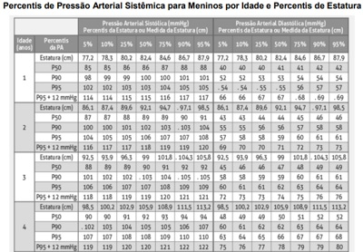
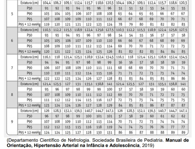
A pressão arterial elevada.
B pressão arterial normal.
C pré-hipertensão.
D hipertensão estágio II.
E hipertensão estágio I.
Questão 1122 · Pediatria · Amamentação Aleitamento Materno · 4000183630Criança de 9 meses de idade, hígida, com bom desenvolvimento neuropsicomotor, está em consulta de rotina, na unidade Básica de Saúde. O peso para idade está entre o escore z 0 e +1; a estatura para idade está no escore z 0. No decorrer da consulta a criança é amamentada ao peito com o corpo longe do corpo da mãe, a cabeça e o corpo não alinhados e o corpo não sustentado. Entre as opções abaixo, a melhor conduta neste caso é:
A ajustar a pega e manter a posição da amamentação.
B não interferir na técnica de amamentação deste lactente.
C encaminhar a mãe e a criança para o grupo de amamentação.
D corrigir imediatamente a posição e pega da criança.
E ajustar a posição e explicar os sinais de boa pega.
Questão 1123 · Maturação sexual · Pediatria · 4000183629Escolar do sexo feminino de 8 anos e 6 meses de idade, previamente hígida, vem para consulta de rotina na Unidade Básica de Saúde. A mãe queixa-se que a menina apresenta odor axilar há 6 meses. Nega menarca. Ao exame clínico, o médico nota a presença de pequena quantidade de pelos axilares bilateralmente; broto mamário à esquerda formando pequena saliência com elevação da mama e da papila; ausência de broto mamário à direita; ausência de pelos em região pubiana. O estadiamento puberal de Tanner para esta menina é:
A M2 P1.
B M1 P2.
C M3 P1.
D M1 P1.
E M2 P2.
Questão 1124 · Síndrome de Patau · Pediatria · 4000183628Primigesta 22 anos, 36 semanas de idade gestacional, dá à luz um neonato do sexo masculino, com peso de 2.236 g e Apgar: 4/6/7. Ultrassons realizados no pré-natal indicaram arrinencefalia, cardiopatia complexa, punhos cerrados e plantas arqueadas. Ao nascimento observou-se fenda labial e palato fendido, hipotelorismo ocular, microftalmia bilateral, orelhas malformadas e de baixa implantação e criptorquidia. O diagnóstico mais provável é trissomia do cromossomo:
A 21.
B 15.
C 13.
D 7.
E 18.
Questão 1125 · Mastoidite · Pediatria · 4000183623Pré-escolar de três anos com otalgia há cinco dias, com saída de secreção amarelada pelo orelha. Atualmente em tratamento com antibiótico tópico, retorna à emergência com dor latejante e persistente no ouvido, piora da hipoacusia e febre alta. Ao exame físico está irritada, com secreção amarelada no ouvido e protuberância atrás da orelha, muito semelhante a um caroço (foto abaixo). Entre as seguintes hipóteses diagnósticas, a mais provável é:

A furúnculo retroauricular.
B abcesso retroauricular.
C linfadenite retroauricular.
D celulite do pavilhão auricular.
E mastoidite aguda.
Questão 1126 · Patologias Auditivas · Pediatria · 4000183622FLP, 12 anos, sexo masculino, tem brigado muito com a família por causa do volume da televisão e do aparelho de som, que sempre deixa muito alto. Na escola tem apresentado piora do rendimento escolar, diminuição da atenção e concentração e irritabilidade. Os professores referem que está distraído e tem di culdade de se relacionar com os colegas, preferindo permanecer mais isolado. Entre as opções abaixo, a melhor é:
A encaminhá-lo para avaliação neuropsicológica.
B encaminhá-lo para avaliação audiológica.
C iniciar metilfenidato.
D iniciar antidepressivo inibidor seletivo da recaptação de serotonina.
E dosagem de hormônios tireoidianos.
Questão 1127 · Pediatria · Abordagem da Crise Febril · 4000183620Lactente de 10 meses, previamente hígido, chegou ao pronto atendimento trazido pelos pais por ter apresentado crise convulsiva com perda da consciência que durou cerca de 20 minutos. A Mãe informou que o lho está com coriza e tosse há uma semana. Há 2 dias iniciou quadro de febre não aferida, inapetência e um episódio de vômito hoje. A chegada o paciente apresentava T: 38,2 °C, FC: 125 bpm, FR: 40 ipm, corado, hidratado, anictérico, acianótico, choroso e irritado. Fontanela plana, em ossi cação. ORO: normal. OTO: hiperemia timpânica bilateral com triângulo luminoso presente à esquerda, opacidade à direita. Secreção nasal mucoide esbranquiçada. Ausculta cardiopulmonar normal. Abdome globoso, levemente distendido, sem visceromegalias. Perfusão periférica de 2 seg. Rigidez de nuca ausente. Entre as condutas abaixo, a melhor para este paciente é:
A Tomografia de crânio.
B Alta com sintomáticos e orientação.
C Amoxicilina oral.
D Coleta de líquor.
E Avaliação do neuropediatra.
Questão 1128 · Indicação · 4000183591A partir de 2019, várias crianças de 6 meses de idade receberam a vacina Tríplice Viral (contra o sarampo, a caxumba e a rubéola) em campanhas nacionais ou em operações de bloqueio, para o controle do recrudescimento do sarampo no Brasil. Entre as opções abaixo, a melhor conduta recomendada pelo Ministério da Saúde, para estas crianças, a fim de manter alto o grau de imunidade da população é
A antecipar o reforço para 12 meses.
B antecipar a dose da vacina para 9 meses e aplicar o reforço aos 12 meses.
C manter a dose da vacina dos 12 meses e o reforço aos 15 meses.
D não vacinar aos 12 meses e manter o reforço aos 15 meses.
E fazer a sorologia e vacinar se houver baixos níveis de anticorpos.
Questão 1129 · Origem · Mecanismos de inf ecção · 4000183585Na abordagem clínica das diarreias agudas é certo que
A o tempo decorrido entre a diarreia e a ingestão de alimentos não se presta à suspeita da etiologia.
B 90% são causadas por etiologias infecciosas.
C creches são locais comuns para transmissão de
D a presença de sangue nas fezes, exclui etiologia bacteriana.
E a minoria tem etiologia viral e não são autolimitadas.
Questão 1130 · Calendário dos adolescentes · 4000183580Um esquema e recomendação no calendário nacional de vacinação (Ministério da Saúde, 2022) é vacinar adolescentes contra
A meningite meningocócica C, para não vacinados, em 3 doses.
B dengue recomendada para imunodeprimido, gestantes e nutrizes.
C influenza em esquema de três doses (0-3-6 meses).
D difteria, tétano e coqueluche, para aqueles sem esquema de vacinação completa.
E HPV, aqueles com idade 15 anos e não imunizados anteriormente.
Questão 1131 · Lista Nacional de Notif icação Compulsória de doenças agravos e eventos de saúde pública · Rubéola · 4000183546É doença de notificação compulsória
A gastroenterite;
B pneumonia;
C escarlatina;
D rubéola.
Questão 1132 · Vacina oral contra poliomielite · Vacina inativada contra poliomielite · 4000183545Assinale a alternativa CORRETA:
A A vacina contra a poliomielite VIP (vacina inativada poliomielite) protege contra ostipos 1, 2 e 3 e deve ser administrada em 3 doses, no 2o. 4o. e 6o. mês de vida; intervalo recomendado de 2 meses e intervalo mínimo de 30 dias;
B A vacina contra a poliomielite VOP (vacina oral poliomielite) protege contra os tipos 1, 2 e 3 e deve ser administrada como 2 reforços, aos 15 meses e 4 anos de idade; 1o. reforço intervalo mínimo de 6 meses após a 3a.. dose da VIP e 2o. reforço após 6 meses do 1o. reforço;
C A vacina contra a poliomielite VIP (vacina inativada poliomielite) protege contra ostipos 1 e 3, e deve ser administrada como 2 reforços, aos 15 meses e 4 anos de idade; 1o. reforço intervalo mínimo de 6 meses após 3a. dose da VIP e 2o. reforço após 6 meses do 1o. reforço;
D A vacina contra a poliomielite VOP (vacina oral poliomielite) protege contra os tipos 1,2 e 3 e deve ser administrada em 3 doses, no 2o. 4o. e 6o. mês de vida; intervalo recomendado de 2 meses e intervalo mínimo de 30 dias.
Questão 1133 · Neonatologia · 4000183544Joaquim, de com 5 anos de idade, portador de síndrome nefrótica em uso de prednisona, apresenta febre há 1 dia e dor abdominal. Nega vômito, não evacua há 2 dias. Ao exame, apresenta-se prostrado, descorado e febril. Edema palpebral bilateral, ausculta cardíaca e pulmonar normal. Abdome globoso, difusamente doloroso e presença de macicez móvel à percussão. Edema de membros inferiores. Qual a hipótese diagnóstica mais provável?
A Peritonite espontânea, necessitando de antibioticoterapia;
B Apendicite aguda, tratamento cirúrgico;
C Gastroenterite aguda, necessitando de hidratação;
D Peritonite bacteriana, tratamento cirúrgico.
Questão 1134 · Neonatologia · 4000183543Recém-nascido, do sexo masculino, apresenta jato urinário em gotejamento, bexiga palpável acima da sín se pubiana e ultrassonografia gestacional com uretero-hidronefrose bilateral sugerindo o seguinte diagnóstico:
A Válvula de uretra posterior;
B Reflu[o vesicoureteral primário;
C Estenose de junção vesicoureteral;
D Obstrução de junção ureteropélvica.
Questão 1135 · Neonatologia · 4000183542Na sala de parto, após uma gestação sem intercorrências, você recebe um recém-nascido que apresenta uma lesão avermelhada e elevada, uma placa vascular vermelha de 3 cm de diâmetro no abdômen. Nas próximas semanas, nota-se que a lesão aumenta rapidamente. O restante do exame físico é normal. Qual das seguintes terapias é a mais apropriada?
A Propranolol oral;
B Prednisolona oral;
C E[cisão cirúrgica;
D Observação e seguimento.
Questão 1136 · Neonatologia · 4000183541Rodrigo, de 18 meses, sexo masculino, é levado à emergência por apresentar febre elevada de início súbito há 24 horas (39ºC). A mãe conta que estava com discreta coriza, obstrução nasal e tosse há dois dias, mas que de repente, cou mais prostrado com febre a cada quatro horas. Nega outras pessoas com mesmos sintomas. Exame físico: febril (39,8C), hidratado, acianótico, prostrado, FR: 48 irpm, FC: 110 bpm, enchimento capilar: 2”, sat O2: 96%, MV presente, som claro pulmonar sem ruídos adventícios. Abdome: sem alterações. Laboratório: Hm: 4.500.000 mm3, Hb: 13,5g/dL, Ht: 38%. Leucócitos: 6.200/mm3, bastões: 1%, segmentados: 35%, linfócitos: 42%, monócitos: 4%, VHS: 5mm/1a h. RXde tórax: normal. Nesse caso, está indicado
A ampicilina;
B sseltamivir;
C aciclovir;
D sulfametoxazol + trimetropima.
Questão 1137 · Neonatologia · 4000183540Pedrinho, de 8 meses, é internado com quadro de septicemia. Sua mãe relata que esta é a sexta internação hospitalar, sendo as anteriores para tratamento de pneumonia grave (dois episódios), otite acompanhada de meningite e três episódios de infecção cutânea extensa. A criança tem episódios frequentes de diarreia, com eliminação de fezes gordurosas. Ao exame clínico, a criança apresenta dé cit de crescimento importante. Exames iniciais, realizados na internação, mostram anemia, leucopenia e plaquetopenia. Radiogra a de tórax e abdome normais, porém observam-se alterações ósseas meta sárias. O diagnóstico mais provável de sua doença de base é
A síndrome de Swachman-Diamond;
B fibrose cística;
C doença celíaca;
D pancreatite crônica.
Questão 1138 · Neonatologia · 4000183539Com relação às crises febris convulsivas simples, podemos afirmar que
A deverão ser tratadas com dipirona endovenosa;
B tem relação com a epilepsia na vida adulta;
C a maioria das convulsões é tônico-clônica generalizada;
D é indicada a profila[ia com anticonvulsivantes.
Questão 1139 · Neonatologia · 4000183538Recém-nascido a termo, 40 semanas de idade gestacional, mãe primípara, sem intercorrências no pré-natal. Nasceu de parto vaginal em boas condições de vitalidade, pesando 3300Kg, sendo encaminhado ao alojamento conjunto. Com seis horas de vida, apresentou di culdade para mamar o seio materno. Ao exame físico, apresenta icterícia +/4+ em face e parte superior do tronco, restante do exame normal. O diagnóstico mais provável e a conduta CORRETA são
A icterícia fisiológica; suplementação com fórmula láctea de partida e fototerapia;
B icterícia fisiológica; tipagem sanguínea da mãe e do RN, bilirrubinas totais e frações e fototerapia;
C icterícia hemolítica; Coombs da mãe, suplementação com leite humano de banco de leite e fototerapia;
D icterícia hemolítica; tipagem sanguínea da mãe e do RN, Coombs da mãe e do recém-nascido, bilirrubinas totais e frações e fototerapia.
Questão 1140 · Neonatologia · 4000183537Paciente de 8 anos é admitida com história de crise convulsiva há 1 hora. No momento, encontra-se em crise convulsiva tônico-clônica com edema de membros inferiores de ++ e pressão arterial de 170 X 120, frequência cardíaca de 120 bpm. e saturação de O₂ de 98%. Contagem de plaquetas 230.000. Não urina há 12 horas. Qual o diagnóstico mais provável?
A Estado de mal convulsivo;
B Síndrome nefrótica;
C Síndrome hemolítico-urêmica;
D Encefalopatia hipertensiva.
Questão 1141 · Neonatologia · 4000183536Francisco, de 6 anos, étrazido comqueixadedi culdadesúbita para deambularemarchacambaleante, a mãe diz que a criança teve varicela há 10 dias. O diagnóstico mais provável é
A encefalite;
B cerebelite;
C meningite asséptica;
D mielite transversa.
Questão 1142 · Neonatologia · 4000183535Juliana, de 4 anos, vem apresentando dor abdominal em cólicas há 3 dias. No exame clínico, apresenta-se em regular estado geral, abdome ácido, com dor abdominal difusa à palpação e sem sinais de localização, baço e fígado não palpáveis; há 1 dia iniciou quadro de petéquias e sufusões hemorrágicas na região das nádegas e membros inferiores. Hemograma com hematócrito de 36%, Hemoglobina de 12 g/dl, leucócitos 9.000/mm3 ( B=0; S= 67%; E=3%, L= 20%; M=10%) Plaquetas= 210.000/mm3. A hipótese diagnóstica mais provável é
A leucemia linfoblástica aguda;
B meningococemia;
C púrpura trombocitopênica idiopática;
D vasculite por IgA.
Questão 1143 · Neonatologia · 4000183534Assinale a alternativa que contém apenas cardiopatia congênitas cianogênicas.
A Tetralogia de Fallot, comunicação interatrial, persistência do canal arterial;
B Comunicação interventricular, transposição das grandes artérias, defeito do septo atrioventricular;
C Atresia pulmonar, transposição das grandes artérias, tetralogia de Fallot;
D Coartação da aorta, comunicação interatrial, persistência do canal arterial.
Questão 1144 · Neonatologia · 4000183533Jonas, de nove anos de idade, é levado à UBS por apresentar urina avermelhada há 4 dias e dor de cabeça. No exame físico, apresenta edema palpebral bilateral discreto e hipertensão arterial. Qual dos exames é característico da doença em questão?
A Dosagem de complemento C4 bai[o;
B Proteinúria maior que 50 mg/kg/dia;
C Hipoalbuminemia;
D Hematúria consumo de C3.
Questão 1145 · Neonatologia · 4000183532A respeito da erisipela e da celulite, assinale a opção CORRETA:
A Na celulite, a infecção é superficial, sendo a antibioticoterapia sistêmica desnecessária;
B A supuração e a sepse são frequentes na erisipela;
C A erisipela é uma forma de celulite superficial, mais frequentemente relacionada à infecção por estafilococos;
D Na erisipela, a área comprometida é eritematosa, edemaciada, quente e dolorosa e o paciente geralmente apresenta sintomas gerais de infecção com febre e prostração.
Questão 1146 · Neonatologia · 4000183531Você atende um recém-nascido de termo adequado para a idade gestacional. Os familiares perguntam quanto ele deverá crescer durante o primeiro ano de vida. A resposta CORRETA é:
A cerca de 10 cm no primeiro ano de vida;
B cerca de 12 cm no perímetro cefálico no primeiro ano de vida;
C cerca de 15 cm de estatura no primeiro ano de vida;
D cerca de 6 cm de perímetro cefálico no primeiro ano de vida.
Questão 1147 · Neonatologia · 4000183530Paciente de 18 meses, com história de diarreia, irritabilidade e distensão abdominal há 4 meses, a mãe reporta perda de peso. O pediatra suspeitou de doença celíaca. Qual o primeiro exame que deve ser solicitado neste caso?
A Anti-transglutaminase IgA;
B Biópsia intestinal;
C Teste genético;
D Teste terapêutico com dieta isenta de glúten.
Questão 1148 · Maus tratos à crianças e adolescentes · 4000183495No Brasil, desde 2011, as noti cações de violência doméstica, sexual e outras violências, são compulsórias para todos os serviços de saúde. Além da noti cação compulsória à autoridade sanitária, o Estatuto da Criança e do Adolescente determina a comunicação obrigatória de casos suspeitos e confirmados de violências contra crianças e adolescentes
A ao Ministério Público.
B à autoridade policial.
C ao Conselho Tutelar.
D à Rede Nacional Primeira Infância.
E ao Centro de Referência de Assistência Social.
Questão 1149 · Poliomielite · Vacinas contra poliomielite · 4000183487A Poliomielite é uma doença, que se encontra erradicada no Brasil desde o início dos anos 90, em virtude do êxito da política de imunização do Sistema Único de Saúde (SUS). Sobre a Poliomielite, assinale a alternativa CORRETA.
A É uma doença infectocontagiosa viral aguda, caracterizada por um quadro de paralisia espástica de início súbito.
B As formas paralíticas são as manifestações mais comuns da doença, podendo ocorrer em 80% dos casos.
C É um poliovírus da família Picornaviridae, composto de quatro sorotipos.
D O período de incubação é de 7 a 12 dias, podendo variar de 2 a 30 dias.
E A vacina (VIP - inativada), deve ser administrada em duas doses (3º e 5º mês) e dose de reforço aos 12 meses.
Questão 1150 · Rítmo Cardíaco · Terapia Farmacológica · 4000183479Uma pré-escolar de 4 anos, peso 15 kg, internada em enfermaria de cardiologia pediátrica, portadora de uma cardiopatia congênita, evoluiu com piora grave do desconforto respiratório. Pediatra de plantão, após avaliação clínica e análise de gasometria arterial, decide pela intubação orotraqueal e instalação de ventilação mecânica assistida. Na sequência, a menor evoluiu com parada cardiorrespiratória (PCR). Em relação à PCR, analise as assertivas abaixo: I. Caso o monitor demonstre assistolia, a dose de epinefrina endovenosa, na diluição 1:1000, deverá ser de 0,1 ml por quilo de peso da menor. II. Se o monitor evidenciar uma taquicardia ventricular e a menor estiver sem quaisquer pulsos palpáveis, está indicado, de imediato, o uso de epinefrina, na diluição 1:1000, na dose de 0,1 ml por quilo de peso da menor. III. Uma vez que o monitor demonstre que a menor está em brilação ventricular, deve-se realizar a cardioversão numa carga de 1,5 J/Kg de peso da menor. Podemos afirmar que
A todas estão corretas.
B todas estão incorretas.
C existe apenas uma correta.
D existe apenas uma incorreta.
E a II está correta.
Questão 1151 · Pediatria · Classif icação e Tratamento da Crise · 4000183476Hugo, 7 anos, foi atendido na emergência pediátrica com quadro de tosse persistente há 12h, com piora nas últimas 6h. Está gripado há 2 dias. Nega febre. Ao exame físico: Ausculta respiratória com sibilos bilaterais, tiragem intercostal, tempo expiratório prolongado. FR: 40ipm; Saturação O₂ de 96% em ar ambiente. Fez corticoide oral em casa antes da chegada na emergência. Após a primeira hora de atendimento em que foi realizada b2 adrenérgico – 20/20 minutos – 3x (spray), ele persiste praticamente com a mesma clínica, porém sem piora. A conduta a ser adotada agora é a seguinte:
A Repetir ciclo de b2 adrenérgico.
B Metilprednisolona.
C Corticoide inalatório.
D Sulfato de magnésio.
E Xantina venosa
Questão 1152 · Tratamento Complicações · Pediatria · 4000183475Ana Ester, sete anos, é atendida no posto de saúde pelo médico do PSF, com uma história de tosse, cansaço e febre há seis dias, sem outras queixas. Ao exame, apresenta-se com estado geral regular, taquipneica, afebril, corada, acianótica, sem sinais de desidratação, tempo de enchimento capilar < 2 segundos. Ausculta respiratória: diminuição de murmúrio vesicular em base direita, com estertores nos. FR=44 incursões por minuto, SatO2=95%. Restante do exame físico sem alterações. Iniciado amoxicilina. Após 72h, persistia febril, com aparecimento de tiragem intercostal e subcostal. Qual a conduta mais adequada para esse caso?
A Realização de radiografia de tórax, hemograma e proteína C reativa. Após resultado desses exames, definir se tratamento ambulatorial ou internamento.
B Internamento e iniciar antibioticoterapia por via parenteral.
C Manter amoxicilina e deixar antitérmico fixo e reavaliar com 48 horas, ou antes, se piora.
D Modificar esquema para amoxacilina com clavulanato, orientação de aumentar a ingesta hídrica, além de solicitar reavaliação com 48 horas.
E Substituir amoxacilina por macrolídeo, com orientação de reavaliar com 48 horas, ou antes, se piora clínica.
Questão 1153 · Bronquiolite · Pediatria · 4000183474“A Bronquiolite Viral Aguda (BVA) é uma doença inflamatória, que afeta as vias aéreas de pequeno calibre, cursando com in amação aguda, edema e necrose de células epiteliais do trato respiratório. O agente etiológico mais comum é o Vírus Sincicial Respiratório (VSR).” Todos os fatores de risco listados abaixo indicam maior gravidade de BVA pelo VSR, EXCETO
A Sexo feminino.
B Bebês que nasceram com idade gestacional inferior a 37 semanas.
C Comunicação interventricular com repercussão hemodinâmicas.
D Ausência de aleitamento materno.
E Truncus arteriosus.
Questão 1154 · Fase de manutenção · Pediatria · 4000183473Uma criança com 3 anos, pesando 14 kg, ao receber uma venóclise de manutenção por 24 horas, necessitará, de acordo com a fórmula de Holliday-Segar, de um volume total de soro de
A 1,4 L
B 2,8 L
C 1,0 L
D 1,1 L
E 1,2 L
Questão 1155 · Alergia à proteína do leite de vaca · 4000183471Lactente com 3 meses de vida vem apresentando irritabilidade constante, caracterizada por „crises choro ao longo dos dias, evacuações mais frequentes e aquosas há 2 semanas e, nos últimos 10 dias, a mãe vem observando sangue vermelho vivo e muco nas fezes. Genitora nega febre ou vômitos. Menor faz uso exclusivo de fórmula infantil (F.I.) do primeiro semestre há cerca de 5 semanas, e o ganho de peso está sendo de aproximadamente 15 gramas/ dia nas últimas 4 semanas. Pediatra da criança observou em consultório que o menor se apresentava com estado geral preservado, eutró co em relação à curva da OMS, hidratado, hipocorado +/++++, distensão abdominal moderada, e agrou assadura perianal mas ausência de fissuras nesta mesma região. Diante do exposto, pensando na principal hipótese diagnóstica, a melhor conduta a ser adotada no momento é a seguinte:
A iniciar Terapia de Reidratação Oral (TRO), zinco e azitromicina orais.
B iniciar TRO, zinco, azitromicina e probiótico orais.
C substituir a F.I. atual por fórmula isenta em lactose, porém com proteínas intactas.
D substituir a F.I. atual por fórmula com proteína parcialmente hidrolisada.
E substituir a F.I. atual por fórmula com proteína extensamente hidrolisada.
Revisar: possível letra faltando em enunciado
Questão 1156 · Pediatria · ALTEBRUE · 4000183470Lactente de 4 meses, masculino, deu entrada em serviço de emergência pediátrica, pois os pais perceberam que o menor havia cado inicialmente pálido e depois com leve cianose em lábios, quando estava deitado no berço em posição supina. Lactente no momento da consulta estava acordado, mamando e com bom estado geral. Exame clínico evidenciou frequência respiratória de 34 movimentos por minuto, sem dispneia, corado, acianótico, afebril, hidratado, fontanela anterior normotensa, auscultas pulmonar e cardíaca sem alterações, oximetria de pulso de 98% e frequência cardíaca com 130 batimentos por minuto, além de tônus adequado para a idade. Glicemia capilar realizada na chegada à emergência registrou um valor de 72 mg/dL. Durante anamnese mais detalhada, pediatra fez alguns questionamentos e identi cou que: os sinais observados pelos pais duraram menos que 30 segundos; menor está em aleitamento materno exclusivo e com ganho de peso adequado; nunca apresentou episódio semelhante ao observado hoje, nem mesmo relatos de engasgos, alteração súbita do tônus ou irritabilidade; não necessitou de manobras de reanimação cardiopulmonar antes da chegada ao hospital; gestação sem intercorrências e nascido a termo com peso de 3,5 kg. Além disso, o lactente não apresenta nenhum sinal/ sintoma de infecção respiratória ou gastrointestinal, nem mesmo febre nos últimos 14 dias. Este é o primeiro lho do casal, e os pais não apresentam consanguinidade. Após 4 horas de observação na emergência, lactente estava dormindo nos braços da mãe e com bom estado geral. Diante do exposto, qual diagnóstico mais adequado/conduta o pediatra de plantão deverá realizar?
A BRUE, evento inexplicado brevemente resolvido, é um diagnóstico provável, devendo o pediatra dar alta hospitalar, orientando sobre sinais de alarme, além de ensinar manobras de reanimação, e que o menor seja reavaliado a nível ambulatorial no dia seguinte.
B Internar o lactente para agilizar exames, entre os quais um videodeglutograma, e iniciar inibidor da bomba de prótons, pois disfagia ou doença do refluxo gastroesofágico são suspeitas diagnósticas fortes diante do exposto acima.
C Iniciar inibidor da bomba de prótons e agendar pHmetria a nível ambulatorial, além de encaminhar para um gastropediatra.
D Pensar em epilepsia e iniciar ácido valproico, sem a necessidade de realizar exame de imagem do cérebro ou eletroencefalograma na emergência.
E Pela gravidade do evento e idade do menor, pensar em sepse sem sinais localizatórios, colher hemograma, hemocultura, proteína C reativa e sumário de urina e iniciar antibioticoterapia em regime hospitalar, antes mesmo dos resultados destes.
Revisar: possível letra faltando em enunciado
Questão 1157 · Pediatria · Vacinas contra poliomielite · 4000183469“Desde 2015, as coberturas vacinais vêm caindo no Brasil, atingindo seus piores marcadores no período pandêmico. Em 2020, a cobertura vacinal por grupo alvo para poliomielite foi de 75,88%”. SBP/ Nota de Alerta/ março de 2022. Nacional de Vacinação do Ministério da Saúde de 2022, quantas doses da vacina inativada (VIP) e quantas da atenuada (VOP), respectivamente, uma criança com 6 anos de idade deve ter recebido? Para essa resposta, considere que a carteira vacinal desta criança está totalmente em dia, quer seja no esquema básico, bem como nos reforços, e não se deve considerar as doses extras de campanhas nacionais anuais.
A 2; 3
B 0; 4
C 3; 1
D 2; 2
E 3;2
Questão 1158 · COVID 19 · ImunizaçõesVacinação · 4000183468Sobre as atuais recomendações e as vacinas disponíveis no Brasil para a vacinação pediátrica contra a COVID-19, analise as assertivas abaixo: I. Se um escolar estiver em atraso com a vacina contra a In uenza, ele poderá receber no mesmo dia as duas vacinas (Influenza e COVID-19). II. Em relação à vacina CoronaVac® , a formulação para crianças entre cinco e onze anos de idade corresponde a 1/3 da dose da vacina para adolescentes e adultos. III. Não há contraindicação para a vacinação de crianças com a CoronaVac® que apresentem histórico de alergias graves ao ovo. Podemos afirmar que
A todas estão corretas.
B todas estão incorretas.
C apenas I está incorreta.
D apenas II está incorreta.
E apenas I e III estão incorretas.
Questão 1159 · Pediatria · Alimentação Inf antil · 4000183467O departamento cientí co de Nutrologia da Sociedade Brasileira de Pediatria recomenda o uso do My Plate (meu prato), instrumento esse instituído nos Estados Unidos em 2011, no qual os grupos alimentares são distribuídos proporcionalmente, respeitando-se as recomendações da Pirâmide Alimentar. Assinale a alternativa que apresenta a CORRETA distribuição dos grupos alimentares de acordo com o instrumento My Plate, para um lactente de 11 meses
A Verduras e legumes 1/3; cereais e tubérculos 1/3; carnes e ovos 1/3
B Verduras e legumes 1/2; cereais e tubérculos 1/4; e o 1/4 restante dividido na metade para carnes e ovos e a outra metade para leguminosas
C Verduras e legumes 1/3; cereais e tubérculos 1/3; no 1/3 restante, dividido em partes iguais entre carnes, ovos e leguminosas
D Verduras e legumes 1/2; cereais, tubérculos e leguminosas correspondentes a 1/4; carnes e ovos com o 1/4 restante
E Verduras e legumes 1/4; cereais e tubérculos 1/4; leguminosas ¼; carnes e ovos 1/4
Revisar: possível letra faltando em enunciado
Questão 1160 · Pediatria · Diagnóstico Nutricional · 4000183466Em consulta de puericultura, a mãe de um pré-escolar masculino de 4 anos questiona ao pediatra sobre o peso atual do seu lho, pois acredita que ele está „magro exame clínico, o pediatra plota os dados antropométricos na curva da OMS para IMC, apropriada para sexo e idade do menor, estando este entre os percentis 85 e 97. Podemos a rmar que, de acordo com o estado nutricional, como este pré-escolar é classificado de acordo com os dados acima, sabendo que, na avaliação da altura, ele encontra-se no percentil 50?
A Eutrófico
B Peso adequado para a idade
C Risco de sobrepeso
D Sobrepeso
E Obesidade
Questão 1161 · Patogênese e Apresentação Clínica · Pediatria · 4000183465Diante de uma suspeita clínica de Estenose Hipertró ca do Piloro, qual alternativa abaixo apresenta marcador(es) que é(são) altamente sugestivo(s) de tal patologia?
A Hiponatremia e hipercalemia
B Hiperglicemia e acidose metabólica
C Hipoglicemia e acidose metabólica
D Alcalose metabólica hipoclorêmica
E Acidose metabólica, hiponatremia e hipercalemi
Revisar: possível letra faltando em enunciado
Questão 1162 · Pediatria · Leite Materno X Outros leites · 4000183464“O leite humano tem vários fatores imunológicos específicos e não específicos que conferem proteção ativa e passiva contra infecções às crianças amamentadas”. Tratado de Pediatria/ SBP/2022. Assinale a alternativa que apresenta um componente do leite materno que NÃO é considerado um fator clássico de proteção imunológica para o recémnascido/ lactente.
A Lipase
B Lactoferrina
C Lisozima
D Fator bífido
E Oligossacarídeos
Questão 1163 · Pediatria · Diagnóstico · 4000183463Considere um recém-nascido, sexo feminino, com diagnóstico de hiperplasia adrenal congênita, forma clássica, por deficiência de 21-alfa-hidroxilase. Qual dos marcadores listados abaixo deverá estar caracteristicamente reduzido ao ser mensurado nesta criança?
A Potássio sérico
B 17-OH progesterona
C Aldosterona
D Testosterona
E Androstenediona
Questão 1164 · Síf ilis congênita · 4000183462Quanto à sífilis congênita, é CORRETO afirmar que
A a presença isolada de sinais clínicos inespecíficos (ex: hepatoesplenomegalia, icterícia e petéquias) não é suficiente para ser considerado um caso sintomático de sífilis congênita, exigindo-se ao menos um sinal patognomônico da doença.
B as opções antimicrobianas atualmente recomendadas para o tratamento da gestante com diagnóstico de sífilis com a capacidade de tratamento associado do feto são a utilização de penicilina G benzatina 1.200.000 UI, dose única ou eritomicina por 10 dias.
C independente da realização ou não de tratamento adequado da mãe durante a gestação , deve ser realizada sempre a dosagem do VDRL do recém-nascido, podendo ser acrescentados outros exames laboratoriais e de imagem, a depender de cada caso.
D é indicado o uso rotineiro de Penicilina G Cristalina ou Penicilina G Procaína em recém-nascidos de mães com sífilis não tratadas ou inadequadamente tratadas durante a gestação, mesmo diante de investigação laboratorial e de imagem normais, devido ao elevado risco de sequelas.
E só deve ser realizada a coleta do LCR, quando houver indicação formal de tratamento da sífilis. Nesses casos, um LCR alterado indica prolongar o tratamento da meningite luética por mais 4 dias, totalizando 14 dias de tratamento.
Questão 1165 · Hiperbilirrubinemia não f isiológica · 4000183461Recém-nascido termo com 72 horas de vida apresenta icterícia que se iniciou com 36 horas de vida. Em aleitamento materno exclusivo e pesando 3200gramas. Genitora GIPIA0, pré-natal sem intercorrência, classificação sanguínea da mãe O negativo, Coombs indireto negativo e nega antecedente de transfusão sanguínea ou sangramentos. O recém-nascido nasceu bem, pesando 3250 gramas e recebeu todos os procedimentos recomendados em sala de parto. Exame físico: icterícia em face, tronco e membros. A classificação sanguínea do pai é O positivo. Exames laboratoriais: bilirrubina total 16,2mg/dL, bilirrubina indireta 15,8mg/dL, hemoglobina 21,6g/dL, hematócrito 66,7% e reticulócitos 4,8%. A provável causa desta icterícia deve ser
A incompatibilidade materno-fetal Rh.
B cisto de colédoco.
C policitemia.
D icterícia do aleitamento materno.
E atresia de vias biliares.
Questão 1166 · Síndrome do desconf orto respiratório do RN SDR ou Doença da Membrana Hialina DMH · 4000183460Recém-nascido de 33 semanas de idade gestacional nasceu de parto cesáreo de urgência por eclâmpsia materna. Nasceu deprimido e necessitou de manobras de reanimação. Apresentou Apgar 1 evoluiu com desconforto respiratório em sala de parto. Exame físico: estado geral decaído, gemente, dispneico e reativo. AR: murmúrio vesicular diminuído globalmente, tiragem subcostal, batimento de asa de nariz, FR: 82ipm, SatO₂ 89% em ar ambiente. Dentre as medidas abaixo realizadas na gestante, a que teria maior eficácia em prevenir esta condição clínica seria a seguinte:
A o uso de sulfato de magnésio.
B a administração de corticoide antenatal.
C a profilaxia com penicilina.
D o uso definifedipina durante o terceiro trimestre.
E a suplementação com ácido fólico.
Questão 1167 · Outras Urticárias · 4000183413Uma paciente de 18 anos refere que, nos últimos quatro meses, apresentou dois episódios de edema súbito de pálpebras e lábios que duraram cerca de três dias. Procura o médico assustada porque na semana passada apresentou episódio de di culdade respiratória e rouquidão, que foi diagnosticado como edema de glote. Nega urticária e prurido nas crises. Nega consumo de alimentos ou medicamentos suspeitos nos episódios e refere uso apenas de anticoncepcional oral, iniciado há seis meses. Qual procedimento, dentre os abaixo citados, seria mais útil para estabelecer o diagnóstico desta paciente?
A Dosagem de IgE
B Dosagem do inibidor da C1 esterase
C Prick teste
D Espirometria
E Dosagem de IgE específica para trigo e látex
Questão 1168 · Pediatria · Gráf icos OMS Classif icação nutricional · 4000183377O perímetro cefálico aumenta no primeiro trimestre de vida, na criança hígida nascida a termo, em cm/mês:
A 0,5.
B 1.
C 1,5.
D 2.
Questão 1169 · Pediatria · Puericultura Geral · 4000183374Considerando a atenção à saúde do escolar, analise as assertivas abaixo e assinale V, se verdadeiras, ou F, se falsas. ( ) A ecopediatria estuda a influência dos fatores ambientais sobre o crescimento e o desenvolvimento da criança e do adolescente e desperta para compreender os ecossistemas. ( ) As principais causas de internação entre crianças e adolescentes por acidentes são as quedas e as queimaduras. ( ) O Programa Nacional de Alimentação Escolar é destinado a promover a segurança alimentar e nutricional dos estudantes das escolas públicas e privadas brasileiras. A ordem correta de preenchimento dos parênteses, de cima para baixo, é:
A V – V – F.
B F – V – V.
C F – F – V.
D V – F – F.
Questão 1170 · Tratamento · Pediatria · 4000183373Considerando o tratamento antimicrobiano da infecção do trato urinário em crianças, assinale a alternativa correta em relação à via de administração parenteral.
A É a indicada nas infecções recorrentes.
B É a indicada em recém-nascidos e lactentes jovens.
C É a indicada nas crianças que têm febre.
D É a indicada nas crianças que têm alteração da função renal.
Questão 1171 · Pediatria · Diagnóstico Nutricional · 4000183369Paciente do sexo feminino, de 1 ano e 10 meses, apresenta 13,5 Kg de peso e IMC de 17,6. Considerando essas medidas isoladas, colocadas nos gráficos da Caderneta da Criança na Figura 3 abaixo (pontos azuis), você a classifica como apresentando peso ________ para a idade e IMC _________. Assinale a alternativa que preenche, correta e respectivamente, as lacunas do trecho acima.
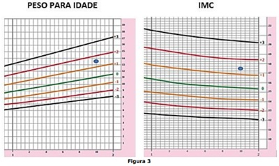
A adequado – com risco de sobrepeso
B elevado – adequado
C adequado – adequado
D elevado – com risco de sobrepeso
Questão 1172 · Pediatria · Puericultura Geral · 4000183368Qual das orientações de puericultura está correta?
A A posição prona é a recomendada para o recém-nascido como forma de prevenção da morte súbita na infância.
B Para crianças abaixo dos dois anos de idade, a exposição às telas (celulares, tablets, computadores etc.) deve ser limitada a uma hora por dia.
C O andador é um equipamento desaconselhado para acelerar o processo da marcha em crianças.
D O início do uso de pasta de dentes em crianças é indicado a partir dos dois anos de idade.
Questão 1173 · Pediatria · Tratamento da Crise Aguda · 4000183366Adolescente de 12 anos, do sexo masculino, obeso, asmático em tratamento irregular da intercrise, chega na emergência com tosse seca, tempo expiratório prolongado, sem sibilância e afebril. Sua saturação de oxigênio é de 90% em ar ambiente, está bradipneico, e a gasometria arterial evidencia acidose respiratória. O tratamento inicial nesse caso é:
A Intubação traqueal após sequência rápida com quetamina.
B Nebulização inicial com Salbutamol e magnésio intravenoso.
C Salbutamol inalado contínuo e ventilação não invasiva confortável.
D Salbutamol e metilprednisolona, ambos intravenosos.
Questão 1174 · Plano C · Choque em Pediatria · 4000183365Lactente de 18 meses chega na emergência, pois, desde a noite passada, está mais prostrado, aceitou pouco a janta e vomitou logo em seguida. Está há 3 dias com evacuações líquidas 4-5 vezes ao dia sem restos patológicos, e febrícula 2 picos ao dia. Ao exame, está taquicárdico, normotenso, GLASGOW de 10, desidratado grave com dé cit perfusional importante. Consultou no início dos sintomas e, como estava hidratado, foi liberado apenas com soro oral e sintomáticos. Em relação a esse caso, é correto afirmar que:
A A hipopotassemia, caso presente, se justifica pela diarreia aguda.
B O diagnóstico é de choque séptico e deve-se iniciar expansão volêmica cristaloide, com soro fisiológico melhor que ringer lactato.
C O estado neurológico na admissão indica intubação traqueal para permeabilizar via aérea.
D A pressão arterial e o lactato sérico normais afastam choque séptico nesse caso, classificando a situação clínica como sepse grave.
Questão 1175 · Mães adequadamente tratadas · 4000183362Primigesta com 38 semanas de idade gestacional é admitida no Centro Obstétrico. Realizou seis consultas pré-natais e não apresenta histórico de doenças prévias. Com 14 semanas de idade gestacional, apresentou VDRL de 1:64, tendo recebido três doses de Penicilina Benzatina, 2.400.000UI, com intervalo de uma semana entre cada dose. Parceiro não tratou sí lis por ter VDRL não reagente. Com 30 semanas de idade gestacional, apresentou título de VDRL de 1:16. Na admissão apresentava título de VDRL de 1:8. O parto foi vaginal e o recém-nascido (RN) é assintomático ao exame físico. Nesse caso, é correto presumir que se trata de mãe com sífilis:
A Adequadamente tratada. Solicitar VDRL em sangue periférico para o RN. Indicado tratamento para o RN com penicilina cristalina se exame reagente para qualquer titulação.
B Adequadamente tratada. Solicitar VDRL em sangue periférico para o RN. Indicado tratamento com penicilina cristalina para o RN se exame reagente com titulação pelo menos 2X maior que a materna.
C Inadequadamente tratada. Solicitar VDRL em sangue periférico para o RN. Indicado tratamento com penicilina cristalina para o RN se exame reagente com titulação pelo menos 4X maior que a materna.
D Inadequadamente tratada. Deve-se solicitar VDRL em sangue periférico para o RN, Raio-X ossos longos e coleta de líquor com pesquisa de VDRL. Indicado tratamento com penicilina cristalina para o RN com exame reagente para qualquer titulação.
Questão 1176 · Sindrome Turner · Pediatria · 4000183361Recém-nascida apresenta edema importante de pés, pescoço alado, hipertelorismo mamário e 4º metacarpo curto. A síndrome mais provável é a de:
A Turner.
B Noonan.
C Down.
D Treacher Collins.
Questão 1177 · Hipoglicemia · 4000183360Recém-nascido com 39 semanas de idade gestacional, lho de mãe diabética com controle glicêmico inadequado na gestação, apresenta glicemia capilar (HGT), com 2 horas de vida, de 34 mg/dl e está clinicamente assintomático. A melhor conduta para esse caso é: ______________, pois se trata de _____________________. Assinale a alternativa que preenche, correta e respectivamente, as lacunas do trecho acima.
A tranquilizar a família – hipoglicemia transitória do neonato
B incentivar o aleitamento materno em livre demanda – hipoglicemia transitória do neonato
C prescrever dextrose gel 40% 0,5 ml/kg na mucosa oral e repetir HGT em 30 minutos – hipoglicemia assintomática
D prescrever SG 10% 2 ml/kg intravenoso em infusão rápida e repetir HGT ao término – hipoglicemia assintomática
Questão 1178 · Síndrome de Morris · DDS46XYinsensibilidade androgênica ou def eito no receptor androgênico · 4000183351Ginecologia Uma paciente de 23 anos que apresenta a síndrome da insensibilidade aos androgênios na sua forma mais completa apresentará:
A Uma doença ligada ao cromossomo Y, com uma genitália infantil.
B Mamas em estágio M3 de Tanner e pelos pubianos no estágio P5.
C Alterações müllerianas, como útero unicorno.
D A produção do hormônio antimülleriano pelas células de Sertoli.
Questão 1179 · Imunização passiva · Def inição · 4000183301Calendário dos Centros de Ref erência para Imunobiológicos especiais CRIEs Sobre vacinas e imunizações, analise as assertivas abaixo: I. A imunização ativa ocorre após a administração de um toxoide no organismo, levando o corpo a produzir uma resposta imune contra o agente infeccioso. II. As globulinas imunes são feitas a partir de plasma de doadores com níveis elevados de anticorpos para antígenos específicos, o que chamamos de imunização passiva. III. As vacinas recomendadas para pacientes com plano de esplenectomia são as que cobrem germes encapsulados (pneumococo, meningococo e Haemophilus tipo b), idealmente até duas semanas antes da cirurgia. Quais estão corretas?
A Apenas I e II.
B Apenas I e III.
C Apenas II e III.
D I, II e III.
Questão 1180 · Hebiatria · 4000183259Durante a consulta com pacientes adolescentes, algumas situações próprias da faixa etária não requerem a quebra do sigilo médico. Nesse contexto, o sigilo médico pode ser mantido em relação a
A namoro,
B autoagressão, não adesão a tratamentos e prescrição de contraceptivos.
C iniciação sexual, prescrição de contraceptivos e infecção sexualmente transmissível.
D conflitos de identidade de gênero, gravidez e não adesão a tratamentos.
E prescrição de contraceptivos, autoagressão e
Questão 1181 · Síndrome da Morte Súbita do Lactente · Pediatria · 4000183258A síndrome da morte súbita do lactente (SMSL) ainda é uma importante causa de morte em bebês com idade entre um mês e um ano. Considerando as recomendações para redução do risco de SMSL, assinale a alternativa correta.
A Crianças de até um ano de idade devem ser colocadas para dormir na posição supina todas as vezes durante o sono, exceto crianças com doença do refluxo gastroesofágico.
B Os lactentes com mais de três meses de idade são os que apresentam maior risco de SMSL.
C Os recém-nascidos prematuros e os recém-nascidos a termo têm risco equivalente de SMSL.
D O compartilhamento de cama com tabagistas é um fator de risco para a SMSL.
E Evidências atuais demostram relação causal entre as imunizações e a SMSL.
Questão 1182 · Prof ilaxia Ferro · Pediatria · 4000183257Um recém-nascido com quinze dias de vida, do sexo masculino, em aleitamento materno exclusivo, foi levado para consulta de rotina. As condições de parto e do nascimento foram as seguintes: nascido de parto vaginal, a termo (37 +5/7 semanas); Apgar 8/9; peso ao nascimento: 2.300 g. No caso clínico acima, há necessidade de suplementação de
A 1 mg de ferro elementar/kg/dia a partir dos trinta dias de vida.
B 1 mg de ferro elementar/kg/dia a partir dos noventa dias de vida.
C 1 mg de ferro elementar/kg/dia a partir dos cento e oitenta dias de vida.
D 2 mg de ferro elementar/kg/dia a partir dos trinta dias de vida.
E 2 mg de ferro elementar/kg/dia a partir dos noventa dias de vida.
Questão 1183 · Testes de triagem neonatal · 4000183256Acerca dos distúrbios rastreados no Programa Nacional de Triagem Neonatal, assinale a alternativa correta.
A A fenilcetonúria é um dos erros inatos do metabolismo, com padrão de herança autossômica dominante, e o defeito metabólico gerado leva ao acúmulo de ácido fenilpirúvico no sangue.
B O hipotireoidismo congênito é considerado uma emergência pediátrica, pois é sabido que, a partir da segunda semana de vida, a deficiência de hormônios tireóideos pode causar alguma lesão neurológica.
C O resultado esperado para um recém-nascido com doença falciforme é HbFA.
D O diagnóstico definitivo da fibrose cística é estabelecido com a análise dos níveis da tripsina imunorreativa.
E A deficiência enzimática mais comum em neonatos com hiperplasia adrenal congênita é a 11- betahidroxilase, que representa cerca de 95% dos casos.
Questão 1184 · Calendário inf antil · 4000183255Um menino de doze meses de idade, previamente hígido, foi levado à consulta de rotina na unidade básica de saúde (UBS), em 15/11/2022. A imagem a seguir representa o cartão de vacinas dessa criança na ocasião da consulta. Com base na situação hipotética acima e no Calendário Nacional de Vacinação do Programa Nacional de Imunizações (PNI), assinale a alternativa que apresenta as vacinas que devem ter sido administradas à referida criança na data de 15/11/2022.
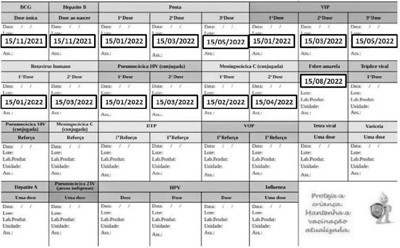
A SCR, varicela, hepatite A e VOP
B SCR, varicela, PCV 10 e VOP
C SCR, hepatite A,
D SCR, VOP, PCV 10 e meningocócica C
E SCR, PCV 10, meningocócica C e
Questão 1185 · Maus tratos à crianças e adolescentes · Pediatria · 4000183254Um lactente com três meses de idade, previamente hígido, com quadro de sonolência, di culdade súbita para alimentar-se e crise convulsiva, foi levado ao pronto atendimento pediátrico pela avó cuidadora. Segundo ela, o lactente não havia tido febre nem outros sintomas. No exame físico, o lactente apresentava- se letárgico, com respiração irregular e super cial. O exame neurológico indicou Glasgow 9 e hemorragia retiniana. A pele do lactente não apresentava alterações. O resultado da tomogra a computadorizada de crânio mostrou hemorragia subdural de intensidades variadas. Tendo como referência o caso clínico acima, assinale a alternativa que apresenta a principal hipótese diagnóstica para esse caso.
A intoxicação exógena
B síndrome do bebê sacudido
C infecção do sistema nervoso central
D ruptura de aneurisma cerebral
E coagulopatia adquirida
Questão 1186 · Vacina oral contra poliomielite · Vacina inativada contra poliomielite · Contraindicações · 4000183253Em 1994, o Brasil recebeu da Organização Pan-Americana da Saúde (Opas) a certi cação de área livre de circulação do poliovírus selvagem. No entanto, desde 2015, tem sido detectada uma progressiva queda das coberturas vacinais para poliomielite, o que pode levar à formação de bolsões de pessoas não vacinadas contra essa doença. Nesse contexto, foi iniciada, em 2022, a Campanha Nacional de Vacinação contra a Poliomielite. Com relação à vacinação contra a poliomielite, assinale a alternativa correta.
A Na referida campanha, devem ser vacinadas com VOP as crianças com idade de dois meses até um ano não vacinadas ou com esquema básico incompleto para poliomielite.
B A VOP é composta por poliovírus atenuados tipos 1, 2 e 3.
C A VOP é contraindicada a pessoas infectadas com HIV e seus comunicantes.
D O principal evento adverso associado à VOP é a paralisia pós-vacinal caracterizada por quadro agudo febril que cursa com hipertonia e
E A poliomielite associada à vacina inicia-se, geralmente, após 24 horas da administração da VOP.
Questão 1187 · Pediatria · Crise aplásica · 4000183252Uma criança de três anos de idade, do sexo masculino, com antecedente de anemia falciforme, deu entrada no pronto socorro infantil, com quadro de palidez e fraqueza havia 48 horas. Seu acompanhante negou que a criança tivesse apresentado febre. O exame físico indicou o seguinte: descorado; hipoativo; frequência cardíaca de 130 bpm; normotenso e eupneico; MV presente bilateralmente, sem ruídos adventícios; abdome ácido, indolor, sem visceromegalias. O resultado de exames laboratoriais foi o seguinte: Hb = 5,5 g/dL (Hb basal = 8,5 g/dL); leucócitos = 6.500/mm³; plaquetas = 200 mil; PCR = 0,5 mg/dL; reticulócitos diminuídos. Com relação ao caso clínico acima, assinale a alternativa correta.
A O tratamento consiste na estabilização hemodinâmica até a elevação dos reticulócitos.
B A administração de imunoglobulina é o tratamento de primeira escolha.
C A transfusão de hemácias não está indicada; estaria apenas se Hb < 5,0 g/dL.
D A principal causa do quadro em questão é a infecção pelo enterovírus 71.
E Trata-se de uma anemia hemolítica com necessidade de transfusão de hemácias.
Questão 1188 · Tratamento da hiperbilirrubinemia · 4000183251Um recém-nascido (37+5/7 semanas de gestação), Apgar 9 e 10, nascido de parto vaginal (peso ao nascer = 2.850 g), em aleitamento materno exclusivo, apresenta icterícia na face e no tronco às 54 horas de vida. O grupo sanguíneo tanto da mãe quanto do recém-nascido é A+. Não houve intercorrência no pré-natal. BTF: 16 mg/dL. A partir do caso clínico descrito anteriormente e da imagem acima, que se refere ao recém-nascido em questão, assinale a alternativa que apresenta a melhor conduta nesse caso.
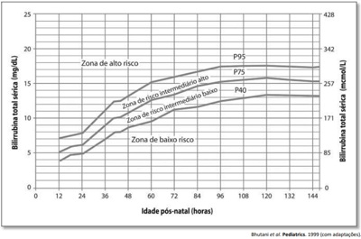
A alta hospitalar e retorno ambulatorial em 48 h
B alta hospitalar e retorno ambulatorial em 72 h
C iniciar fototerapia e reavaliar BT em 4 h – 8 h
D iniciar fototerapia e reavaliar BT em 24 h
E exsanguineotransfusão
Questão 1189 · Pediatria · Meningites virais · 4000183250Uma criança de seis anos de idade deu entrada no pronto socorro infantil, com quadro de cefaleia holocraniana, vômitos e febre havia 24 horas. Os dados do exame físico são os seguintes: REG; fácies de dor; afebril; presença de rigidez de nuca. Conforme exame laboratorial, LCR com 270 células/mm³, com 20% de neutrófilos, 70% de linfócitos, proteína = 55 mg/dL e glicose = 60 mg/dL. No caso clínico acima, a conduta recomendada consiste em
A internação com administração de apenas medicamentos sintomáticos.
B internação com administração endovenosa de aciclovir por quatorze dias.
C internação com administração endovenosa de penicilina cristalina por quatorze dias.
D internação com administração endovenosa de ceftriaxona por dez dias.
E internação com administração endovenosa de ceftriaxona e de vancomicina por dez dias.
Questão 1190 · Terapia Farmacológica · 4000183247Com base no que prevê o PALS ( apresenta, respectivamente, a diluição e a dose de adrenalina a ser administrada a um paciente em parada cardiorrespiratória.
A diluição de 1:1.000; dose de 0,01 mg/kg
B diluição de 1:1.000; dose de 0,1 mg/kg
C diluição de 1:10.000; dose de 0,1 mg/kg
D diluição de 1:10.000; dose de 0,01 mg/kg
E diluição de 1:1.000; dose de 1 mg/kg
Questão 1191 · Acesso Vascular · 4000183246Assinale a alternativa que apresenta um local preconizado para a passagem de um acesso intraósseo.
A cabeça do fêmur
B fêmur proximal
C maléolo lateral
D esterno
E fíbula
Questão 1192 · Emergências Pediátricas Parada Cardiorrespiratória PCR e Arritmias na Emergência · Pediatria · 4000183245Um paciente de oito meses de idade, previamente hígido, está internado devido a um quadro de bronquiolite. No leito, observou-se que o paciente estava arresponsivo e foi chamada ajuda. Identi cou-se que o paciente apresentava pulso central com frequência cardíaca de 40 bpm. Nesse caso clínico, a conduta inicial mais adequada é
A iniciar, imediatamente, ressuscitação cardiopulmonar.
B administrar, imediatamente, adrenalina endovenosa.
C fazer passagem de marcapasso transcutâneo.
D administrar, imediatamente, atropina endovenosa.
E iniciar ventilação com bolsa-válvula-máscara.
Questão 1193 · Tratamento · Pediatria · 4000183243Arthur, de quatro anos de idade, foi levado por sua mãe ao pronto-socorro infantil com história de ter iniciado quadro de vômitos e diarreia (mais de cinco episódios) havia uma hora. Segundo a mãe, durante o trajeto ao pronto-socorro, Arthur começou a apresentar lesões na pele, por todo o corpo, junto com desconforto respiratório. No exame físico, foram observadas as seguintes alterações significativas: lesões urticariformes na face, nos membros superiores e no tórax; murmúrios vesiculares diminuídos com sibilos bilateralmente; tiragem subcostal e tiragem de fúrcula; tempo de enchimento capilar de cinco segundos. O paciente foi, então, levado para a sala de emergência, monitorizado, com oferta de oxigênio em máscara não reinalante e com um acesso venoso periférico. Foram observados os seguintes sinais vitais: frequência cardíaca = 120 bpm; frequência respiratória = 65 ipm; pressão arterial = 70 mmHg × 40 mmHg; saturação de O₂ = 83% em ar ambiente. Nesse caso clínico, o paciente deve receber, imediatamente,
A prometazina endovenosa.
B adrenalina intramuscular.
C hidrocortisona endovenosa.
D metilprednisolona endovenosa.
E salbutamol endovenoso.
Questão 1194 · Tratamento · Pediatria · 4000183242Arthur, de quatro anos de idade, foi levado por sua mãe ao pronto-socorro infantil com história de ter iniciado quadro de vômitos e diarreia (mais de cinco episódios) havia uma hora. Segundo a mãe, durante o trajeto ao pronto-socorro, Arthur começou a apresentar lesões na pele, por todo o corpo, junto com desconforto respiratório. No exame físico, foram observadas as seguintes alterações significativas: lesões urticariformes na face, nos membros superiores e no tórax; murmúrios vesiculares diminuídos com sibilos bilateralmente; tiragem subcostal e tiragem de fúrcula; tempo de enchimento capilar de cinco segundos. O paciente foi, então, levado para a sala de emergência, monitorizado, com oferta de oxigênio em máscara não reinalante e com um acesso venoso periférico. Foram observados os seguintes sinais vitais: frequência cardíaca = 120 bpm; frequência respiratória = 65 ipm; pressão arterial = 70 mmHg × 40 mmHg; saturação de O₂ = 83% em ar ambiente. Considere que, no caso clínico em questão, o paciente tenha apresentado melhora do quadro de urticária e d e desconforto respiratório, porém mantidos o tempo de enchimento capilar lenti cado e a hipotensão, tendo a mãe relatado que o paciente toma propranolol devido a um hemangioma. Nessa hipótese, a melhor medicação a ser administrada a Arthur é
A propranolol.
B salbutamol.
C glucagon.
D cetamina.
E atropina.
Revisar: possível letra faltando em enunciado
Questão 1195 · Pediatria · Sinovite Transitória do Quadril · 4000183240Com relação à sinovite transitória do quadril na infância, assinale a alternativa correta.
A A maioria dos casos ocorre na faixa etária de três a oito anos, com pico em torno dos seis anos. Está estabelecido que a sinovite transitória é a causa da doença de Legg-Calvé-Perthes.
B A maioria dos casos ocorre na faixa etária de três a oito anos, com pico em torno dos seis anos. A sinovite transitória é considerada a causa mais comum de dor no quadril e de claudicação não traumática na infância.
C A maioria dos casos ocorre na faixa etária de oito a doze anos, com pico em torno dos dez anos. Em relação a trauma e à sinovite transitória, a literatura sugere, majoritariamente, que o trauma seria a causa da sinovite.
D A maioria dos casos ocorre na faixa etária de oito a doze anos, com pico em torno dos dez anos. É fundamental a artrocentese para o diagnóstico diferencial com quadro infeccioso.
E A maioria dos casos ocorre na faixa etária de oito a doze anos, com pico em torno dos dez anos. A dor costuma ser crônica ou crônica agudizada, compondo diagnóstico diferencial com epifisiólise femoral proximal.
Questão 1196 · Consultas em Pediatria · 4000183206Luana leva sua lha, Valentina, para consulta de puericultura na UBS de referência. Valentina acabou de completar um ano de idade, e Luana está contente, pois, todos os meses, tem conseguido levar a bebê para consulta mais de uma vez por mês. Ainda que a situação hipotética acima pareça revelar bom acesso à UBS, ela pode gerar a lei dos cuidados inversos, deixando-se de ofertar cuidados para casos de maior vulnerabilidade, e está em desacordo com a recomendação do Ministério da Saúde, que preconiza a realização de consultas de rotina para crianças com até um ano de idade em determinada frequência conforme a idade, da seguinte maneira:
A na primeira semana de vida; a um mês de idade; aos três meses de idade; aos seis meses de idade; aos nove meses de idade; e aos doze meses de idade.
B a um mês de idade; aos dois meses de idade; aos quatro meses de idade; aos seis meses de idade; aos nove meses de idade; e aos doze meses de idade.
C na primeira semana de vida; depois, bimensalmente, até completar-se um ano de idade.
D na primeira semana de vida; a um mês de idade; aos dois meses de idade; aos quatro meses de idade; aos seis meses de idade; aos nove meses de idade; e aos doze meses de idade
E a um mês de idade; e aos seis meses de idade. O pediatra deve decidir as demais consultas de rotina em conjunto com a família.
Questão 1197 · Pediatria · Avaliando o desenvolvimento · 4000183142Menino, 1 ano e 10 meses, comparece à consulta de puericultura e a mãe refere que ele não fala nenhuma palavra, mas entende ordens e aponta o que quer. Na consulta, permaneceu muito atento ao celular, interagindo pouco com o entorno e com as pessoas. Quando solicitado, removeu seus sapatos com ajuda, empilhou 3 potes, apontou algumas guras de animais e objetos e chutou bola. Não emitiu palavras durante a consulta. No prontuário da criança constava crescimento e desenvolvimento adequados até 1 ano e 2 meses de idade, quando o atendimento foi interrompido devido à pandemia. Criança nascida a termo, sem referências de intercorrências no pré-natal e no parto. Testes de triagem neonatal normais. Qual é a conduta mais adequada?
A Complementar as informações sobre antecedentes patológicos pessoais e familiares e iniciar terapia fonoaudiológica.
B Encaminhar para serviço de neurologia para realização de avaliação global do desenvolvimento.
C Encaminhar para serviço de psiquiatria para realização do checklist para autismo em crianças pequenas.
D Complementar as informações sobre ambiente psicossocial e rotina da criança e solicitar avaliação audiológica.
Questão 1198 · Pediatria · 4000183139Menino, 3 anos e 2 meses de idade, apresenta índices antropométricos: estatura para idade = +2,2 escores Z e índice de massa corporal para idade = -2,2 escores Z. Segundo a OMS, qual é o diagnóstico da sua condição nutricional?
A Magreza com alta estatura.
B Magreza com estatura adequada.
C Eutrofia com estatura adequada
D Eutrofia com baixa estatura.
Questão 1199 · Diagnóstico Dif erencial · Etiologia · Diagnóstico · 4000183135Lactente, 18 meses de idade, portador de mielomeningocele, apresentou ana laxia intraoperatória durante a sua terceira intervenção cirúrgica. Qual é a causa mais provável?
A Alergia ao relaxante muscular.
B Alergia ao látex
C Reação ao anestésico geral.
D Hipersensibilidade a dipirona.
Questão 1200 · Maus tratos à crianças e adolescentes · 4000183134Menino, 9 meses de idade, previamente hígido, passou a tarde com uma cuidadora e, ao chegar em casa, apresentava-se sonolento e não aceitou o jantar. Cerca de uma hora depois, foi trazido pela mãe ao PS com episódio de convulsão. Segundo a mãe, o paciente não apresentava febre, alterações de estado geral ou recusa alimentar anteriormente ao quadro. Após cessação do episódio convulsivo, observa-se criança não responsiva, com escoriações na face e no dorso. Assinale a alternativa que indica os exames necessários para elucidação diagnóstica.
A Exame do líquido cefalorraquidiano, hemograma, gasometria arterial.
B Ultrassonografia de abdome, eletrólitos, dosagem de lactato.
C Urina tipo I, hemograma, eletrólitos, ultrassonografia de abdome.
D Tomografia de crânio, fundoscopia, radiografias de corpo inteiro.
Questão 1201 · Pediatria · 4000183133Os indicadores de aleitamento materno no Brasil apresentaram melhora significativa nos últimos 40 anos. Tal fato se dá devido a políticas públicas integradas em nível hospitalar, atenção básica e social. A Lei 12.265/2006 (NBCAL) representou um marco importante na proteção da amamentação. Esta lei versa sobre:
A a regulação das práticas abusivas de propaganda e marketing das indústrias de alimentos, mamadeiras e bicos visando proteger a amamentação.
B o direito da licença maternidade de 12 meses para mulheres que possuírem emprego formal em empresas cidadãs.
C a ampliação do repasse de verbas para os hospitais que adotem a iniciativa Hospital Amigo da Criança e os 10 passos de promoção e proteção da amamentação.
D o direito da mulher amamentar em espaços públicos abertos ou fechados, sem risco de constrangimento, advertência ou punição.
Questão 1202 · Icterícia neonatal · 4000183132Recém-nascido pré-termo de 30 semanas interna em UTI neonatal para realizar fototerapia por icterícia e para ganhar peso. Não apresenta outras intercorrências perinatais. Qual dos exames de imagem abaixo é necessário ser realizado neste contexto e para pesquisar qual patologia?
A Radiografia de tórax para pesquisa de taquipneia transitória do recém-nascido.
B Ultrassonografia transfontanelar para pesquisa de hemorragia da matriz germinativa.
C Ultrassonografia de abdome total para avaliação hepática.
D Radiografia de tórax e abdome para pesquisa de infecções congênitas.
Questão 1203 · Tratamento de Manutenção · Pediatria · Classif icação do controle clínico da asma · 4000183131Menino, 5 anos de idade, recebeu alta hospitalar há 15 dias com diagnóstico de asma e foi encaminhado para acompanhamento. Apresenta crises recorrentes de sibilância desde os 4 anos, que ocorrem a cada 2 a 3 meses, desencadeadas por resfriado, mudança de tempo e contato com poeira, com boa resposta ao salbutamol. Atualmente tem apresentado tosse e chiado no peito ao correr, ao rir e ainda acorda à noite por tosse e falta de ar de 1 a 2 vezes por semana. Qual a conduta recomendada de acordo com o GINA 2022 para o tratamento de manutenção da asma?
A Formoterol 6 mcg (aerossol) com espaçador e máscara.
B Budesonida 200 mcg (cápsula inalatória).
C Beclometasona 100 mcg (aerossol) com espaçador e máscara.
D Fluticasona 250 mcg (aerossol) com espaçador e máscara e anti-leucotrieno 4mg via oral.
Questão 1204 · Sinais e sintomas · 4000183130Menino, 3 meses de idade, vem apresentando irritabilidade constante e choro intenso à manipulação. Exame físico: regular estado geral, choroso, eupneico, descorado ++/4. Abdome com fígado palpável a 3 cm do rebordo costal (RC) direito e baço a 2 cm do RC esquerdo; sem outras alterações. Exame laboratorial: VDRL positivo 1/64. Conceitualmente, qual manifestação tardia da doença ele pode apresentar?
A Pseudoparalisia de Parrot.
B Deficiência auditiva.
C Pneumonia alba.
D Síndrome nefrótica.
Questão 1205 · Teste do pezinho · Pediatria · 4000183129Considerando a Lei 14.154, de 26 de maio de 2021, a respeito da ampliação da triagem neonatal biológica em todo o país, a incorporação de técnicas de biologia molecular será fundamental para a triagem de:
A galactosemia.
B imunodeficiências primárias.
C deficiência de G6PD.
D mucopolissacaridose do tipo 1.
Questão 1206 · Hiperbilirrubinemia não f isiológica · 4000183127Recém-nascido (RN) do sexo feminino, com idade gestacional de 39 semanas, peso de nascimento de 3200g, lho de mãe primigesta, não teve intercorrências na gestação e no parto. Exame físico com 18 horas de vida: ictérico zona II, sem outras alterações. Tipagens sanguíneas: Mãe O Rh positivo e RN A Rh positivo. Assinale a alternativa correta sobre a avaliação laboratorial do RN.
A Podem ser encontrados esferócitos no esfregaço de sangue do RN.
B Níveis normais de hemoglobina e hematócrito descartam o diagnóstico.
C O teste do eluato positivo indica maior gravidade da hemólise.
D O teste de Coombs direto negativo descarta o diagnóstico.
Questão 1207 · Pediatria · 4000183125Menino, 8 anos de idade, apresenta artrite em joelhos e tornozelos há 9 meses, com piora progressiva. Relata dor nestas articulações e na região lombar, especialmente depois de acordar pela manhã. Nega febre, emagrecimento ou adinamia. Exames laboratoriais: hemograma normal e aumento da proteína C reativa (25 mg/L) e da velocidade de hemossedimentação (55 mm na 1ª hora). Qual achado no exame físico é mais provável de ser encontrado neste caso?
A Nódulos subcutâneos em superfícies extensoras das mãos.
B Exantema maculopapular em tronco e membros superiores.
C Dor à palpação das enteses em membros inferiores.
D Sopro sistólico rude no foco mitral e no foco aórtico.
Questão 1208 · Plano B · 4000183124Menino, 9 meses de idade, apresenta febre (39 ºC) e diarreia há 1 dia. A mãe refere 6 evacuações nas últimas 24 horas, com sangue, muco e pus nas fezes e nega problemas anteriores de saúde. Exame físico: paciente está choroso, toma água oferecida pela mãe com avidez e apresenta choro sem lágrimas. Qual é a conduta mais adequada?
A Hidratação parenteral e antibiótico parenteral.
B Reidratação oral na unidade de saúde e probiótico.
C Hidratação por via parenteral e antibiótico pela via oral.
D Reidratação oral na unidade de saúde e antibiótico via oral.
Questão 1209 · Pediatria · 4000183123Menino, 3 anos de idade, é internado por pneumonia com derrame pleural. Qual alternativa abaixo indica drenagem do derrame?
A Derrame visível no Rx de tórax.
B Glicose menor que 60 mg/dl no líquido pleural.
C Bactérias positivas ao Gram no líquido pleural.
D Aspecto seroso macroscopicamente.
Questão 1210 · Pediatria · Cirurgia · 4000183110Lactente, 5 meses de vida, apresenta episódios repetidos de abaulamento endurecido, hiperemiado e doloroso em região perianal. Foi submetido a tratamento com antibioticoterapia oral em todas as ocasiões, porém houve recidiva da lesão no mesmo local após o término do tratamento. Qual é o diagnóstico mais provável?
A Retocolite ulcerativa.
B Anomalia anorretal.
C Fístula perianal.
D Alergia alimentar.
Questão 1211 · Pediatria · DDS46XX hiperplasia adrenal congênita · 4000183101Menino, 2 anos de idade, vem encaminhado por diagnóstico de distopia testicular. Exame físico: pênis de 4 cm, uretra tópica e com boa exposição de glande. Testículos não palpáveis bilateralmente. Antecedentes familiares: irmão mais velho faleceu após quadro de vômitos na primeira semana de vida. Qual é a conduta mais adequada?
A Correção cirúrgica imediata.
B Correção cirúrgica a partir dos 5 anos.
C Ultrassonografia pélvica.
D Tratamento hormonal com gonadotrofina coriônica.
Questão 1212 · Fisiopatologia das Hidrocef alias · Pediatria · 4000183100Recém-nascido do sexo feminino, com desenvolvimento neuropsicomotor normal, apresenta-se mais “irritada” e leta aparentes e que a crianc inicial a ser solicitado?
A Ultrassonografia transfontanelar.
B Tomografia axial de crânio sem contraste.
C Ressonância magnética de crânio.
D Punção lombar com manometria.
Questão 1213 · Técnicas de amamentação · 4000183039Em uma consulta de ambulatório, ao receber mãe, avó e LILS, de 1 semana de vida. Você é questionado pela avó, que seu neto, nasceu a termo com 3.400 kg e elas observaram perda de peso do bebê nos últimos dias. Na triagem, o peso do bebê hoje é de 3.000kg. Na anamnese, mãe relata aleitamento materno exclusivo e a avó sugere, a necessidade de complemento (mamadeira), já que seu neto perdeu peso e na sua família as mães não têm leite. Na oportunidade ao observar a mamada, você detectou que o seio da lactante apresenta ssuras, o que seria evitado se a pega estivesse adequada. O que é necessário para uma boa pega: I. Mais aréola visível, acima da boca do bebê. II. Boca bem aberta. III. Bochechas do bebê, encovadas a cada sucção. IV. Ruídos da língua. V. Lábio inferior virado para fora. VI. Queixo tocando a mama. Assinale a alternativa
A Somente as afirmativas I, II, IV e V estão corretas.
B Somente as afirmativas I, II, V e VI estão corretas.
C Somente as afirmativas I, III, IV e VI estão corretas.
D Somente as afirmativas II, III, V e VI estão corretas.
Questão 1214 · Quadro clínico · Diagnósticos dif erenciais · Diagnóstico · 4000183037PSD, 9 anos, sexo feminino, natural e procedente da zona rural de Itacoatiara-AM, residente em área, se m rede de esgoto e sem tratamento de água. Queixa dores abdominais, apresenta-se apático e só quer permanecer deitado. Ao exame, observa-se palidez cutânea, pele com aspecto amarelado, embora nã o esteja ictérico. Na ausculta cardíaca: sopro sistólico ++/6+, em foco mitral, sem irradiação, sem frêmito. Hemograma de urgência: Hg- 8,3g/dL; Ht-25%; VCM- 63 e RDW-21,5%. O diagnóstico mais provável e uma possível etiologia seria:
A Amenia Ferropriva secundária à Ancilostomíase.
B Anemia Megaloblástica secundária à dieta com leite de cabra.
C Beta-talassemia secundária à erro inato do metabolismo.
D Anemia de doença crônica secundaria à Doença Inflamatória Intestinal.
Questão 1215 · Fatores de Risco para sibilância em lactentes · 4000183036Pedro, 6 anos de idade, que desde os 8 meses de idade, apresenta episódios de sibilância recorrente. No início da noite fez uso de beclometasona inalatória em dose baixa, com auxílio de espaçador. Com piora do quadro, procurou o serviço de Emergência Pediátrica. Mãe relata que em todos os episódios anteriores foi necessário o uso de corticoide (PREDNISOLONA) via oral, para resolução do quadro. Podemos considerar características, para prever, se a sibilância recorrente na criança, irá persistir na vida adulta. Assinale a alternativa
A Diagnostico de alergia ao leite de vaca.
B Primos de primeiro grau com diagnóstico de asma.
C Basofilia sanguínea maior de 3% (na ausência de parasitose).
D Diagnostico de eczema em menores de 3 anos e diagnostico de rinite em menores de 3 anos.
Questão 1216 · Transposição de grandes artérias TGA · 4000183035Em qual das cardiopatias a seguir, pode ser observado hipoxemia grave:
A Coarctação da Aorta – CoA
B Transposição de Grandes Artérias - TGA
C Comunicação Intraventricular – CIV
D Persistência de Canal Arterial- PCA
Questão 1217 · Filhos de mães HIV positivo · Transmissão vertical TV · 4000183034Pedro é recém-nascido a termo, com peso de nascimento de 3 Kg, lho de mãe que descobriu HIV na 20ª semana de gestação. Iniciou uso de TARV, assim que teve o diagnóstico. No momento do Parto, não havia registro da Carga Viral, após o início da TARV. Qual a conduta mais adequada com Pedro na maternidade e seguimento:
A Coletar CV na sala de parto, aguardar resultado para iniciar TARV profilática por via oral e encaminhar para seguimento, com coleta de nova CV com: 14 dias, na 6ª e 12ª semana de vida.
B Coletar CV na sala de parto, iniciar AZT, 3TC e RAL por via oral e encaminhar para seguimento com coleta de nova CV com: 14 dias, na 6ª e 12ª semana de vida.
C Coletar CV na sala de parto, iniciar AZT por via oral e encaminhar para seguimento com coleta de nova CV com: 14 dias, na 6ª e 12ª semana de vida.
D Coletar CV na sala de parto, iniciar AZT, NVP por via oral e encaminhar para seguimento com coleta de nova CV com: 14 dias, na 6ª e 12ª semana de vida.
Questão 1218 · 12 meses · Avaliando o desenvolvimento · 4000183032Mãe, leva o lho Luís, de 12 meses de idade, a consulta de puericultura, ansiosa, efetuando alguns questionamentos, pois a criança ainda não anda, apesar de car de pé com apoio, falar a palavra “mamãe”, reconhecer o som do seu nome, dar tchau, bate palminhas, há 2 meses ele passou a estranhar pessoas desconhecidas, tem acordado a noite chorando e querendo permanecer com os pais, algo que não acontecia desde os 4 meses de vida, quando passou a ter um sono mais tranquilo. Ela viu no Instagram que talvez fosse o caso de contratar uma Consultora do Sono. Qual seria a sua orientação:
A Lactente com provável diagnostico de terror noturno, com necessidade de avaliação com Neuropediatra e Consultora de Sono.
B Lactente com sinais precoces de Autismo, com indicação de encaminhamento ao Neuropediatra e inicio de Melatonina para auxiliar o sono.
C Lactante com desenvolvimento esperado para a idade, sendo necessário acolher as angústias da mãe e orientá-la que essas alterações são normais.
D Lactente com sinal de alerta para o desenvolvimento motor, com indicação para estímulo com fisioterapia motora e retorno em 4 semanas para reavaliação.
Questão 1219 · Manejo da hidratação · 4000183030Lactente de 1 ano, pesando 12 Kg, foi internado com quadro de diarreia e vômito com 48 horas de evolução. Ao exame, sinais clínicos de desidratação grave. Administrado na admissão, Soro Fisiológico 20 ml/Kg em 30 minutos. Essa opção terapêutica com Soro Fisiológico é?
A Cloro/por litro da solução em valores próximos ao do plasma.
B Osmolaridade/por litro da solução tem valores próximos a do plasma.
C Eletrólitos/por litro da solução em valores próximos ao do plasma.
D Potássio/por litro da solução em valores próximos ao do plasma.
Questão 1220 · Diagnóstico e conduta · 4000183027Recém-nascido apresenta ambiguidade genital caracterizada por hipospádia e criptorquidia. O nível sérico de 17 hidroxiprogesterona encontra-se elevado. Qual a principal complicação?
A Infecção urinaria
B Esterilidade
C Distúrbio hidroeletrolítico Sódio e Potássio
D Malformação renal
Questão 1221 · Diagnóstico Dif erencial · Diagnóstico · 4000183025Lactente de 2 anos é levada a um Pronto Socorro por apresentar rouquidão e estridor de início súbito, após refeição de aproximadamente três horas. Ao exame físico: Bom estado geral, estridor respiratório, choro rouco, ausência de esforço respiratório e ausculta sibilos. Qual melhor conduta?
A Tomografia computadorizada
B Ressonância magnética
C Endoscopia digestiva
D Laringoscopia direta
Questão 1222 · Galactosemia · Erros inatos do metabolismo · 4000183020Recém-nascido a termo 18 dias de vida, em aleitamento materno exclusivo, apresenta duas semanas icterícia, hepatomegalia, vômitos, hipoglicemia, convulsões, irritabilidades, ganho de peso insu ciente. Considerando a principal hipótese diagnostica, o tratamento indicado é:
A Cirurgia de Kasai
B Dieta isenta de lactose
C Ganciclovir
D Antibióticos
Revisar: possível letra faltando em enunciado
Questão 1223 · Tratamento e Condutas · Introdução · 4000183003Em relação ao atendimento de adolescentes vítimas de violência sexual, assinale a alternativa
A As unidades de atenção primária não estão preparadas para atendimento de uma adolescente vítima de violência sexual.
B Adolescentes vítimas de violência sexual devem ser atendidas exclusivamente na presença da mãe.
C O médico de família e comunidade deve sempre referenciar a adolescente com urgência ao ginecologista.
D As unidades de saúde, em todos os níveis de cuidado, devem estar capacitadas para o atendimento e o cuidado de uma adolescente vítima de violência sexual.
Questão 1224 · Sepese Neonatal Tardia · 4000182998Recém-nascido com 9 dias de vida apresenta di culdade para respirar há 1 dia, com piora nas últimas horas, além de não estar mamando bem. Exame físico: regular estado geral, icterícia leve até cicatriz umbilical, hipoatividade, gemência, batimento de aleta nasal, tiragem intercostal e retração diafragmática, FR 80 ipm, FC 170 bpm, temperatura axilar 37,5 ºC. A conduta mais adequada é
A jejum, iniciar terapia de hidratação venosa, monitorizar, avaliar necessidade de suplementação de oxigênio e solicitar internação hospitalar.
B antitérmico, iniciar antibioticoterapia por via oral e orientar a família para observação domiciliar e reavaliação em 48 horas.
C antitérmico, leite materno por sonda nasogástrica, iniciar tratamento com ceftriaxona intramuscular e realização de radiografia de tórax.
D expansão com soro fisiológico 40 ml/kg em 20 minutos, dosagem de bilirrubinas e realização de radiografia de tórax.
Questão 1225 · Ventilação com pressão positiva · 4000182997Recém-nascido em sala de parto, após a extração completa do concepto da cavidade uterina apresentou hipotonia e choro fraco. AP IG 36 semanas, parto cesárea. Realizado os passos iniciais e avaliadas frequência cardíaca e respiração. Assinale a alternativa correta.
A Se FC menor ou igual 100 bpm e respiração irregular, iniciar ventilação com pressão positiva com concentração de oxigênio a 21%.
B Se FC menor ou igual 60 bpm, iniciar imediatamente a massagem cardíaca, mantendo relação de 3 massagens para uma ventilação (3:1).
C Se respiração irregular e FC maior ou igual 100 bpm, iniciar oxigênio inalatório e, a seguir, oferecer pressão de distensão contínua em vias aéreas (CPAP nasal).
D Se houver presença de mecônio no líquido amniótico, realizar imediatamente a aspiração de vias aéreas e de traqueia sob visualização direta.
Questão 1226 · Toxoplasmose congênita · 4000182996RN com 39 semanas de idade gestacional, nasceu em boas condições e está em alojamento conjunto e aleitamento exclusivo. AP PN 2450 g, mãe IgG positiva, com índice de avidez baixo e IgM positiva para toxoplasmose na 20ª semana de gestação, tratada com Espiramicina por 1 mês, sem seguimento de pré-natal após. Exame físico: BEG, icterícia leve na face, mucosas levemente descoradas. Fígado a 3,0 cm do RCD, baço a 2,0 cm do RCE, perímetro cefálico 40 cm, perímetro torácico 35 cm e perímetro abdominal 38 cm. Exames complementares: toxoplasmose IgG reagente 1: 4.096, IgM não reagente, Hb 12 g/dL, Ht 36%, Leucograma normal, BI 4,0 mg/dL; BD1,5 mg/dL. Líquor normal, fundoscopia direta com sinais de coriorretinite, ultrassonografia de crânio com calcificações disseminadas. A conduta para o RN é
A expectante e, se IgG se mantiver elevada e IgM positiva após 3 meses de seguimento, iniciar o tratamento com espiramicina, sulfadiazina e pirimetamina por 12 meses, suplementação de ácido folínico e corticosteroide.
B tratamento com espiramicina e suplementação de ácido folínico por 6 meses.
C tratamento com sulfadiazina e pirimetamina por 12 meses, suplementação de ácido folínico e corticosteroide.
D tratamento com sulfadiazina e pirimetamina por 6 a 12 meses e suplementação de ácido fólico.
Questão 1227 · Mães diabéticas · 4000182995Assinale a alternativa em que a condição clínica não está associada ao recém-nascido, filho de mãe diabética.
A Hipoglicemia.
B Macrossomia.
C Restrição do crescimento intrauterino.
D Hipermagnesemia.
Questão 1228 · Fatores de risco para hiperbilirrubinemia · 4000182994São fatores de risco para o desenvolvimento de hiperbilirrubinemia significante em RNs ≥ 35 semanas:
A valor bilirrubina total menor que percentil 75 antes da alta hospitalar.
B irmão com icterícia neonatal tratado com fototerapia ou ser do sexo masculino.
C mãe com hipotireoidismo.
D perda de peso < 4% em relação ao peso de nascimento.
Questão 1229 · Pediatria · Síndrome de Down · 4000182993Considerando a saúde bucal das crianças com síndrome de Down (SD), é correto afirmar :
A a amamentação é desaconselhada devido a não ser um bom exercício para o desenvolvimento de estruturas ósseas e musculares da face pela hipotonia do lactente. A posição indicada durante uso de mamadeira, com bico ortodôntico com furo e fluxo adequados é a semisentada.
B o desenvolvimento dentário e erupção dos dentes decíduos e permanentes ocorrem em idades iguais ao das crianças sem a SD. A sequência da erupção pode estar alterada e o hipertireoidismo é um fator de aceleração na idade da dentição.
C a primeira avaliação bucal deve ser realizada o mais precoce possível, preferencialmente antes dos três meses de idade, sendo avaliadas as estruturas anatômicas, o vedamento labial e a oclusão dos rebordos gengivais. A saúde bucal pode ser mantida com procedimentos preventivos simples e cuidados em domicílio.
D a higiene bucal deve ser estimulada desde o nascimento, utilizando-se gaze umedecida com água que também auxilia na dessensibilização da cavidade bucal. Após irromper o primeiro dente, o responsável deve iniciar a escovação e o uso de creme dental sem flúor, em pequena quantidade com bochecho com água e cuspir após.
Questão 1230 · Pediatria · Amamentação Aleitamento Materno · 4000182992Sobre o aleitamento materno (AM), é correto afirmar que são
A sinais de uma pega adequada: boca bem aberta, lábios virados para fora (boca de peixinho), queixo encostado na mama e ver a aréola mais abaixo do que acima da boca do bebê.
B interferências na absorção de ferro e o zinco do leite materno: oferta de leite de vaca ou outros alimentos antes dos seis meses para as crianças amamentadas exclusivamente ao seio.
C práticas que podem prejudicar o AM: oferecer mamadeira e chupeta, fumar durante a amamentação, usar medicamentos prescritos pelo obstetra, consumir bebida alcoólica.
D dificuldades frequentes durante o AM: demora na descida do leite, dificuldade na pega e na sucção do bebê, a pega do bebê em posição de cavalinho(sentada) ou com a mãe deitada.
Questão 1231 · Tratamento · Pediatria · 4000182991Menina de 8 anos, asmática, durante uma festa de aniversário, comeu doces e salgados, brincou muito na grama, quando passou a sentir tosse, cansaço e fez uso de beta 2 agonista de curta duração sem melhora. No pronto socorro, foram observadas placas e pápulas eritematosas com edema central, de tamanhos variados, em tronco, muito pruriginosas, além da presença de um inseto na pele (imagem). A conduta inicial é:
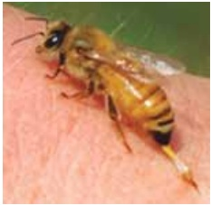
A anti-histamínico via oral e corticoide intravenoso.
B inalação com fenoterol e anti-histamínico intravenoso.
C inalação com fenoterol e corticoide via oral.
D adrenalina (1:10000) 0,3mg via intramuscular.
Questão 1232 · Aspectos Clínicos Quadro clínico · Pediatria · 4000182990Sobre a bronquiolite viral aguda, assinale a alternativa correta.
A É comum a ocorrência de diarreia ou vômito.
B Geralmente é precedida por uma síndrome respiratória viral na semana anterior, apresentando, como desenvolvimento inicial, taquipneia leve, com pouca quantidade de secreção.
C A oximetria de pulso contínua é indicada em pacientes internados com suportes ventilatórios como cateter, a fim de evitar-se a coleta desnecessária de gasometrias.
D A taxa de letalidade é de 10%, com morte atribuível à apneia, parada cardiorrespiratória ou crises convulsivas.
Questão 1233 · Estenose Hipertróf ica do Piloro · Pediatria · 4000182986Sobre a estenose hipertrófica do piloro, é correto afirmar que
A os pacientes apresentam vômitos biliosos.
B o US abdominal apresenta alta sensibilidade diagnóstica.
C o tratamento cirúrgico é uma emergência.
D a correção do distúrbio hidreletrolítico é realizada na fase pós-operatória.
Questão 1234 · Pediatria · Arritmias · 4000182983Menino de 1 ano, assintomático é encaminhado para avaliação cardiológica devido a alteração detectada na ausculta cardíaca. Eletrocardiograma (imagem). O paciente apresenta:
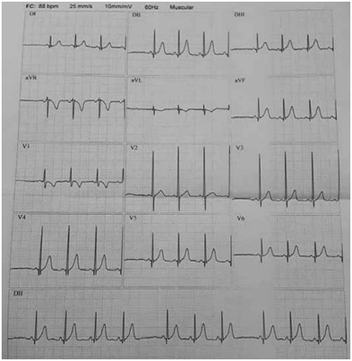
A arritmia sinusal.
B ritmo sinusal alternando com ritmo atrial ectópico.
C extrassístoles supraventriculares.
D extrassístoles ventriculares.
Questão 1235 · Hemorragia intracraniana · 4000182980Recém-nascido, de 28 semanas, apresentou di culdade respiratória grave e evoluiu para óbito após 6 dias. AP: parto normal, trabalho de parto prematuro. Exame pós-morte: imagem. O diagnóstico e o mecanismo envolvido no desenvolvimento dessa lesão são, respectivamente:
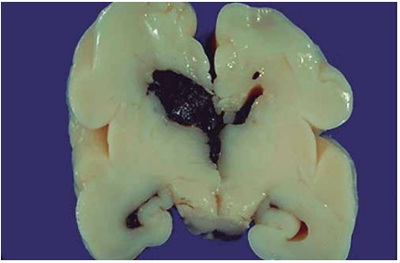
A hemorragia intraparenquimatosa; tocotraumatismo.
B hematoma ventricular; coagulação intravascular disseminada.
C hematoma intraparenquimatoso; sepse.
D hemorragia de matriz germinativa; fragilidade de vasos subependimários.
Questão 1236 · Comunicação interatrial · 4000182899Em relação à comunicação interatrial (CIA), é correto afirmar que:
A o tipo de maior ocorrência é o seio venoso, geralmente associado à drenagem anômala de veias pulmonares.
B o tipo de maior ocorrência é o ostium primum, relacionado com defeito da formação dos coxins endocárdicos.
C o tipo ostium secundum leva precocemente à hipertensão arterial pulmonar exigindo correção cirúrgica de urgência.
D no tipo ostium secundum, a CIA está localizada na lâmina da fossa oval.
Questão 1237 · ImunizaçõesVacinação · 4000182868Criança de 5 anos foi trazida à Emergência por laceração de 10 cm no antebraço direito, com resíduos de terra, fruto de uma queda do escorregador na praça. Os pais concordaram com a limpeza e a sutura da lesão, porém recusaram, com veemência, a vacina antitetânica prescrita. Informaram que há 2 anos tornaram-se naturalistas e eram contrários a vacinas e tratamentos com antibióticos. Diante dessa situação, o médico deve
A liberar a criança e os pais, respeitando a decisão da família.
B liberar a criança e os pais e fazer um boletim de ocorrência na Delegacia de Polícia mais próxima.
C liberar a criança e os pais e fazer uma notificação para o Conselho Tutelar do domicílio da família.
D deixar a criança em observação por algumas horas para verificar eventual ocorrência de complicações.
Questão 1238 · Pediatria · Pneumonia Atípica · 4000182786Paciente de 7 anos, previamente hígido, com calendário vacinal completo, foi trazido à consulta por febre de até 38o C há 24 horas, antecedida por 2 dias de dor de garganta, mialgias nos membros inferiores e dorso, tosse com sibilos e cefaleia frontal. Seus dois irmãos também estavam com tosse e faringite. A radiogra a de tórax mostrou in ltrado peri-hilar, mais evidente nos lobos inferiores, e um pequeno derrame pleural à direita. Qual a provável etiologia e qual o primeiro tratamento recomendado?
A Micoplasma – azitromicina por via oral
B Estafilococo – oxacilina por via intravenosa
C Pneumococo – amoxicilina-clavulanato por via oral
D Vírus sincicial respiratório – oxigenoterapia
Questão 1239 · Complicações · Pediatria · 4000182784Paciente de 4 anos foi trazido à consulta por quadro de febre alta, prostração, tosse e aumento da frequência respiratória. Ao exame físico, a criança encontrava-se em regular estado geral, com temperatura axilar de 39° C. Apresentava redução do murmúrio vesicular e do frêmito toracovocal, macicez à percussão e alguns crepitantes no hemitórax direito. O exame radiológico de tórax demonstrou broncogramas aéreos e opacidade de metade do mesmo hemitórax. Assinale a alternativa que contempla uma conduta adequada, além da antibioticoterapia.
A Ultrassonografia do hemitórax direito e punção se houver derrame pleural livre, com qualquer volume.
B Ultrassonografia do hemitórax direito, punção e drenagem se houver derrame pleural livre, com volume de moderado a grande.
C Punção e drenagem, sem necessidade de outro exame de imagem.
D Punção e drenagem, sem necessidade de outro exame de imagem, e administração de fibrinolítico intrapleural.
Questão 1240 · Anemia f erropriva na inf ância · Pediatria · 4000182783Menino de 2 anos foi trazido à Emergência por sua irmã mais velha (16 anos) por febre baixa e coriza. À admissão, informou ser ela a cuidadora do irmão para que a mãe pudesse trabalhar. Referiu que ele estava com um comportamento estranho: vinha comendo o reboco da parede e a terra que cava presa em seus sapatos. A criança apresentava palidez, temperatura axilar de 37,8° C, hiperemia de orofaringe e sopro sistólico. O restante do exame encontrava-se dentro da normalidade. Que conduta, dentre as abaixo, é a mais adequada no momento?
A Repor vitamina B12 e folato.
B Tratar o processo infeccioso com amoxicilina e solicitar avaliação cardiológica.
C Manejar o provável quadro viral com medicamentos sintomáticos e iniciar a administração de sulfato ferroso.
D Indicar transfusão sanguínea com concentrado de hemácias (10 ml/kg).
Questão 1241 · Pediatria · Avaliando o desenvolvimento · 4000182780Menina de 9 meses foi trazida à UBS para atendimento em puericultura. Ao ser aplicado o Instrumento dos Marcos de Desenvolvimento, que integra a Caderneta da Criança, foi constatado, pela 1a vez, que a criança não desenvolvera 2 habilidades para a faixa etária. Até então, vinha sendo capaz de dar conta de todos os itens do Instrumento para a faixa etária correspondente. Diante desse cenário e segundo as orientações contidas na referida Caderneta, como a criança deve ser classificada e qual a conduta a ser adotada?
A Desenvolvimento adequado – Aplicar o Instrumento na próxima consulta.
B Desenvolvimento adequado – Aplicar o Instrumento em 30 dias.
C Alerta para o desenvolvimento – Aplicar o Instrumento em 30 dias.
D Provável atraso no desenvolvimento – Acionar a rede de atenção especializada para avaliação do desenvolvimento.
Questão 1242 · Pediatria · Tratamento · 4000182779Lactente de 4 meses, previamente hígido, foi transferido da Emergência para a Enfermaria com diagnóstico de bronquiolite viral aguda por vírus sincicial respiratório. O exame físico realizado quando da admissão na Enfermaria revelou frequência respiratória de 42 mpm, tiragem subcostal leve e esparsos sibilos polifônicos expiratórios bilaterais. O oxímetro de pulso mostrava saturação de 95% em cateter nasal com uxo de oxigênio a 1 l/min. À radiogra a de tórax, foram constatadas hiperinsu ação bilateral e opacidades intersticiais peri-hilares. Na prescrição da Emergência, constavam dieta por sonda nasogástrica, oxigênio por cateter nasal a 1 l/min e aspiração nasal, se necessário. Que modi cação na prescrição médica deve ser realizada na Enfermaria?
A Aumento do fluxo de oxigênio pelo cateter nasal para 2 l/min
B Liberação da dieta por via oral
C Inclusão de salbutamol spray (100 mg/jato) com espaçador (4 jatos, a cada 3 horas)
D Prescrição de fisioterapia respiratória (1 vez/dia)
Questão 1243 · Alimentação do lactente · 4000182778Assinale a alternativa que preenche, correta e respectivamente, as lacunas do parágrafo abaixo. As orientações para a introdução da alimentação complementar para uma criança saudável em aleitamento materno exclusivo estão contidas no esse tipo de alimentação deve ter início a partir dos .........., com alimentos in natura ou minimamente processados, .......... .
A 4 meses – utilizando-se sal e açúcar em quantidades mínimas nas preparações
B 4 meses – não se utilizando sal nem açúcar nas preparações até os 2 anos
C 6 meses – utilizando-se sal e açúcar em quantidades mínimas nas preparações
D 6 meses – utilizando-se sal em quantidade mínima sem a adição de açúcar nas preparações até os 2 anos
Questão 1244 · Pediatria · Diagnóstico Nutricional · 4000182777Que cuidado, dentre os abaixo, deve-se ter ao plotar, nos gráficos contidos na Caderneta da Criança, as medidas antropométricas de uma criança de 20 meses, nascida com 35 semanas de idade gestacional (pré- termo)?
A Utilizar as curvas de crescimento para prematuros.
B Utilizar as curvas de crescimento para crianças de 0-2 anos, sem ajustes.
C Utilizar as curvas de crescimento para crianças de 0-2 anos, descontando da idade cronológica 2 semanas.
D Utilizar as curvas de crescimento para crianças de 0-2 anos, descontando da idade cronológica 5 semanas.
Questão 1245 · Vacina contra rotavírus · 4000182776De acordo com o Programa Nacional de Imunizações, do Ministério da Saúde, estão indicadas 2 doses de vacina contra rotavírus, devendo ser administradas por via oral. Assinale a alternativa que contempla uma orientação correta sobre essa vacina.
A A 1a dose deve ser aplicada até a idade de 3 meses e 15 dias.
B Caso ocorra regurgitação ou vômito, deve-se repetir a aplicação.
C O intervalo mínimo entre as 2 doses é de 2 meses.
D A idade máxima para administração da 2a dose é de 8 meses e 15 dias.
Questão 1246 · Mães diabéticas · 4000182773Diabetes gestacional, quando não adequadamente controlado durante o pré-natal, é causa de complicações para os recém-nascidos. Assinale a alternativa que contempla complicações relacionadas a essa condição materna.
A Macrossomia, hipoglicemia, hipertrofia septal assimétrica e policitemia
B Macrossomia, hipocalcemia, policitemia e hemorragia intracraniana
C Microcefalia, anemia, hipoglicemia e hipertrofia septal assimétrica
D Anemia, hipocalcemia, ascite e síndrome do coração esquerdo hipoplásico
Questão 1247 · Pediatria · Síndrome de Down · 4000182772O parto eletivo de uma gestante de 41 anos, com rotina pré-natal irregular (sem ecocardiogra a fetal), foi realizado sem intercorrências. Ao nascimento, o exame físico indicou aspecto sindrômico e sopro cardíaco. Ecocardiograma feito aos 3 dias de vida mostrou defeito do septo atrioventricular completo. Qual das síndromes abaixo é a mais frequente na presença dessa cardiopatia estrutural?
A Síndrome de Noonan
B Síndrome de Down
C Síndrome de Edwards
D Síndrome de Patau
Questão 1248 · Diagnóstico · Tratamento · 4000182771O nascimento de um neonato com 39 semanas de idade gestacional transcorreu sem problemas. A mãe recebera espiramicina até a 36a semana em função do diagnóstico de toxoplasmose gestacional. Em seu histórico, constava sorologia IgM reagente, em material coletado na 20a semana, com teste de avidez de IgG de 80% (alta). Pesquisa de DNA por amniocentese não havia sido realizada. Diante desse quadro, qual a conduta mais adequada para o recém-nascido?
A Não solicitar exames nem investigação, pois a infecção materna ocorreu antes da gestação.
B Solicitar sorologias IgM/IgG, fundoscopia, avaliação do sistema nervoso central por ultrassonografia ou tomografia computadorizada; se os resultados dos exames estiverem normais, seguir apenas ambulatorialmente com repetição mensal dos títulos e monitorização clínica.
C Solicitar sorologias IgM/IgG, fundoscopia, avaliação do sistema nervoso central por ultrassonografia ou tomografia computadorizada e punção lombar; se os resultados dos exames estiverem normais, seguir apenas ambulatorialmente com monitorização clínica.
D Solicitar sorologias IgM/IgG, fundoscopia, avaliação do sistema nervoso central por ultrassonografia ou tomografia computadorizada e iniciar tratamento imediatamente com sulfadiazina, pirimetamina e ácido folínico.
Questão 1249 · Mães hipertensas · 4000182770Gestante com diabetes gestacional e pré-eclâmpsia, em uso de insulina e metildopa, deu à luz recém- nascido pré-termo (36 semanas de idade gestacional e peso ao nascimento de 2.580 g) por parto cesáreo. A parturiente encontrava-se em tratamento para infecção urinária com nitrofurantoína no momento do parto. No alojamento conjunto, o neonato, com 12 horas de vida, apresentou frequência respiratória de 72 mpm, sem disfunção. Os exames laboratoriais realizados indicaram hemoglobina de 17 g/dl, hematócrito de 51%, leucócitos de 3.500/mm3 (8% de bastões, 70% de segmentados e 22% de linfócitos) e proteína C reativa de 5 mg/l. Com base nos dados, qual a provável etiologia da leucopenia no recém-nascido?
A Prematuridade
B Infecção urinária da parturiente
C Diabetes gestacional
D Pré-eclâmpsia
Questão 1250 · Clampeamento tardio do cordão · 4000182769O nascimento de um neonato com 36 semanas de idade gestacional ocorreu via parto vaginal, sem necessidade de fórceps. A evolução do parto transcorreu dentro da normalidade. O recém-nascido foi posicionado sobre o ventre materno, tendo apresentado cianose, choro forte e tônus adequado. Diante do quadro, deve-se realizar o clampeamento do cordão umbilical
A imediatamente, por se tratar de um prematuro.
B imediatamente, por se tratar de um recém-nascido cianótico.
C após 30 segundos de vida, por se tratar de um prematuro.
D após 60 segundos de vida, por ter o prematuro nascido vigoroso.
Questão 1251 · Causas · 4000182686Durante o estágio no alojamento conjunto, faz parte das atribuições médicas avaliar os recém-nascidos (RN) que possam necessitar de controle dos níveis de glicose no sangue. Assinalar a alternativa em que todos os pacientes descritos têm indicação para realizar essa triagem:
A RN a termo que perdeu mais de 7% do peso de nascimento; RN filho de mãe hipertensa.
B RN cuja mãe tem pesquisa para Streptococcus agalactiae positiva no pré-natal; RN com Apgar < 5 no 5º minuto.
C RN filho de mãe diabética; RN pequeno para a idade gestacional (PIG).
D RN com idade gestacional de 36 semanas; RN filho de mãe multípara.
Questão 1252 · Pediatria · 4000182685Em atendimento na sala de parto de uma gestante a termo, com pré-natal completo, sorologias do segundo trimestre negativas, mas sem coletar exames no terceiro trimestre, solicita-se o teste rápido e o resultado para HIV vem positivo. Assinalar a alternativa que apresenta a conduta adequada em relação ao aleitamento materno desse bebê:
A Administrar imediatamente os medicamentos antirretrovirais e liberar a amamentação após a mãe também iniciar o tratamento.
B Liberar o seio materno à vontade, inclusive na primeira hora de vida, até que o exame confirmatório da mãe tenha resultado.
C Contraindicar a amamentação até receber o resultado da carga viral materna e liberar se esta for indetectável.
D Contraindicar a amamentação e iniciar com fórmula infantil.
Questão 1253 · Peso ao nascimento · Relação pesoidade gestacional · Idade gestacional · 4000182684Os recém-nascidos pré-termo costumam ser classificados em relação à idade gestacional, ao peso de nascimento e à relação entre essas duas variáveis. Considerando-se a importância da classificação dos prematuros para determinar riscos e prognósticos, assinalar a alternativa CORRETA:
A São considerados de extremo baixo peso todos os bebês que nascem com menos de 1.500 gramas.
B São considerados adequados para a idade gestacional todos os prematuros que nascem com mais de 2.500 gramas.
C São considerados pequenos para idade gestacional todos os bebês com peso abaixo do percentil 10 para a referida idade gestacional.
D São considerados adequados para a idade gestacional todos os bebês que nascem entre os percentis 3 e 97 das curvas de crescimento intrauterino.
Questão 1254 · Maus tratos à crianças e adolescentes · 4000182683O bullying alternativa que melhor define as características desse comportamento:
A As atitudes são intencionais e sempre possuem uma motivação evidente, mesmo que oculta num primeiro momento.
B A relação desigual de poder não é obrigatória, podendo ser dependente de cenários e oportunidades motivacionais.
C A repetição é importante para caracterização do comportamento (convencionou-se contar a partir da 3ª vez).
D O autor do
Questão 1255 · Pediatria · Puericultura Geral · 4000182682Segundo a Organização Mundial de Saúde, os primeiros “1.000 dias de vida” representam uma janela de oportunidades que impactam nas taxas de mortalidade e morbidade da criança. Assinalar a alternativa que melhor define essa condição temporal:
A Tempo de gestação a termo (280 dias) somado aos dois primeiros anos de idade (730 dias).
B Primeiros 1.000 dias de vida, a contar da idade gestacional corrigida, para 41 semanas e 6 dias.
C Período de aleitamento exclusivo (180-270 dias) somado ao período de aleitamento complementado (730 dias).
D Primeiros 1.000 dias de vida, a contar da data de nascimento (três anos de idade cronológica).
Questão 1256 · Maus tratos à crianças e adolescentes · 4000182681O diagnóstico diferencial entre injúrias não intencionais e sinais de violência física pode ser difícil na população pediátrica, principalmente nos pacientes de menor idade. Sobre essa condição, analisar os itens abaixo: I. Parte anterior do corpo, áreas de extensão e extremidades são mais frequentemente acometidas por lesão e injúrias não intencionais. II. Lesões bilaterais, simétricas ou em mais de um segmento do corpo são sinais de violência física. III. A pronta busca pelo recurso, por parte do responsável, é postura sugestiva de violência física domiciliar. Está(ão) CORRETO(S):
A Somente o item II.
B Somente os itens I e II.
C Somente os itens I e III.
D Todos os itens.
Questão 1257 · Pediatria · Avaliando o desenvolvimento · 4000182680A avaliação do desenvolvimento dos reflexos primitivos da criança, a partir do nascimento, permite determinar a integridade do sistema nervoso central, de acordo com a idade cronológica. O reflexo de Moro deve estar presente no recém-nascido a termo desde o nascimento. Em relação ao período máximo de idade em que pode persistir, dentro de um cenário de normalidade do desenvolvimento, assinalar a alternativa CORRETA:
A 2 meses de vida.
B 4 meses de vida.
C 6 meses de vida.
D 8 meses de vida.
Questão 1258 · Diagnóstico · 4000182679A identi cação do agente etiológico nas pneumonias adquiridas na comunidade (PAC) aprimora o manejo da doença. Assim, a hemocultura pode ser um recurso laboratorial a ser considerado. Sobre o assunto, marcar C para as a rmativas Certas, E para as Erradas e, após, assinalar a alternativa que apresenta a sequência CORRETA: (_) Trata-se de um método sensível e específico, pois geralmente as PAC são bacterêmicas. (_) Deve ser rotineiramente coletada em todas as PAC de etiologia bacteriana presumível. (_) Está indicada na presença de PAC complicada independentemente da história vacinal.
A E - E - C.
B E - C - C.
C C - C - E.
D C - E - E.
Questão 1259 · Bronquiolite · Pediatria · 4000182677Na bronquiolite viral aguda por vírus sincicial respiratório (VSR), a prevenção da infecção cruzada é uma etapa importante no manejo da doença. Sobre estratégias de controle de infecção, assinalar a alternativa CORRETA:
A A transmissão por pequenas partículas de aerossol é de extrema importância.
B Medidas de isolamento de contato são obrigatoriamente requeridas.
C A transmissão por contato direto com grandes partículas não oferece risco.
D Isolamento em quarto privativo é obrigatório.
Questão 1260 · Vacinas inativadas · Vacinas vivas atenuadas · 4000182676No paciente imunocomprometido, não devem ser aplicadas vacinas com vírus vivo atenuado. Entre as vacinas abaixo, assinalar aquela que é inativada:
A Sarampo/caxumba/rubéola.
B Varicela.
C Rotavírus.
D Hepatite B.
Questão 1261 · Rubéola · Varicela · Eritema Inf eccioso · 4000182675Em relação às doenças exantemáticas, numerar a 2ª coluna de acordo com a 1ª e, após, assinalar a alternativa que apresenta a sequência CORRETA: (1) Rubéola. (2) Eritema infeccioso. (3) Exantema súbito. (4) Varicela. (_) A complicação mais frequente é relacionada à infecção bacteriana secundária. (_) Alto risco de infecção vertical no 1º trimestre de gestação. (_) Risco de anemia grave nos indivíduos com hemoglobinopatias. (_) Após a defervescência da febre, surge o exantema maculopapular, que se inicia no tronco e se dissemina para as extremidades, acometendo palmas e plantas.
A 4 - 2 - 3 - 1.
B 2 - 3 - 4 - 1.
C 4 - 1 - 2 - 3.
D 3 - 2 - 1 - 4.
Questão 1262 · Avaliação do Crescimento · Pediatria · 4000182673A maior velocidade de crescimento anual acontece:
A Nos primeiros 12 meses de vida.
B No segundo ano.
C No estirão da adolescência do menino.
D No estirão da adolescência da menina.
Questão 1263 · Insuf iciência cardíaca pediátrica · 4000182672Em relação às miocardites na infância, assinalar a alternativa CORRETA:
A As principais causas são febre reumática e artrite reumatoide.
B No eletrocardiograma, os pacientes frequentemente apresentam alargamento do complexo QRS.
C Um ecocardiograma normal exclui o diagnóstico de miocardite.
D Elevação de CKMB é o indicador mais acurado de miocardite.
Questão 1264 · Prof ilaxia · 4000182671Qual das drogas abaixo
A Nitrofurantoina.
B Cefadroxil.
C Ácido Nalidíxico.
D Sulfametoxazol/trimetropin.
Questão 1265 · Tratamento · 4000182669Para um lactente de 4 meses, com histórico de diarreia com muco e sangue, distensão abdominal, irritabilidade, baixo ganho de peso, diagnóstico de dermatite atópica e alergia à proteína do leite de vaca, não IgE mediada, qual a melhor fórmula infantil a ser iniciada?
A A base de soja.
B Parcialmente hidrolisada.
C Extensamente hidrolisada.
D De aminoácidos.
Questão 1266 · Plano B · 4000182628Menino, 9 meses de idade, tem febre, diarreia e vômitos há 2 dias. Apresenta 6 a 8 evacuações líquidas ao dia, sem muco ou sangue. Ao exame, está irritado, a mucosa oral está seca, o turgor diminuído, e o tempo de enchimento capilar é de 4 segundos. Não há informação de diurese nas últimas 6 horas. O plano de tratamento adequado ao quadro apresentado é
A internação hospitalar, coleta de coprocultura, urocultura e hemocultura, hidratação intravenosa com soro fisiológico 0,9% 20 mL/Kg.
B internação hospitalar, hidratação intavenosa com Ringer lactato 70 mL/kg em 2 horas e posterior dosagem sérica de eletrólitos.
C oferta de soro de hidratação oral padrão 1000 mL, no serviço de saúde e coleta de coprocultura.
D oferta domiciliar de soro de reidratação oral padrão e outros líquidos após cada evacuação. Retorno para avaliação em 24 horas.
E reposição de 50 a 100 mL/kg de soro de reidratação oral hiposmolar, em 4 a 6 horas, na presença de profissional de saúde.
Questão 1267 · Miocardite · Pediatria · 4000182627Menina, 4 meses de idade, está resfriada há 7 dias, afebril, a mãe refere que no último mês ganhou pouco peso e que nesta semana está comendo menos e respirando mais rápido. Está fazendo inalações com soro siológico, sem melhora. Ao exame, tem FR = 40 mrm, FC = 160 bpm, Sat O₂ = 92%. Ausculta pulmonar com estertores difusos e ausculta cardíaca com sopro diastólico em foco mitral 2+/ 6+. O fígado é palpável a 3 cm do RCD, o baço não é palpável. O diagnóstico mais provável para o quadro é
A síndrome respiratória aguda grave.
B pneumonia adquirida na comunidade.
C bronquiolite viral aguda.
D insuficiência cardíaca congestiva.
E sepse com estado hiperdinâmico.
Questão 1268 · Constipação f uncional · 4000182625Menina, 4 anos de idade, queixa-se de dor abdominal periumbelical com frequência nos últimos 2 meses. Evacua a cada 2 a 3 dias, fezes endurecidas, com esforço. A mãe percebe movimentos e posições e oferece a ida ao banheiro, mas a criança recusa. Tem alimentação monótona, recebe 750 mL de leite, alimentação geral sem folhas e frutas somente em suco. Ao exame, o abdome é ácido e palpa-se o colo à esquerda, não apresenta lesões perianais, não permitiu a realização de toque retal. O diagnóstico mais provável e a conduta mais indicada ao quadro são respectivamente:
A erro alimentar; acrescentar 10 g de fibra ao leite ingerido e administrar hidróxido de magnésio 3 mL/kg/dia se não evacuar por 2 dias.
B alergia à proteína do leite de vaca; retirada do leite de vaca da dieta e enema fosfatado 2,5 mL/kg/dia, por 3 dias.
C obstipação funcional e comportamento de retenção; orientação alimentar e sentar ao vaso sanitário por alguns minutos após as refeições.
D constipação funcional; polietilenolglicol 1 g/kg/dia por 6 dias e manutenção com 0,5g/kg/dia por 3 meses, orientação alimentar.
E megacolo de alça ultracurta; óleo mineral 3 mL/kg/dia até a realização de manometria anorretal.
Questão 1269 · Pediatria · AIJ Artrite Idiopática Juvenil · Quadro Clínico · 4000182624Menina, 4 anos de idade, queixa-se de dor em joelho e tornozelo direitos há 1 mês, chegando a claudicar nas últimas 2 semanas, período em que apresentou picos febris esporádicos. Foi avaliada por ortopedista e, ao exame, apresenta edema e aumento da temperatura nas articulações referidas. A ultrassonogra a mostrou aumento do líquido sinovial no joelho. De acordo com a principal hipótese diagnóstica, essa criança tem alto risco de apresentar
A osteomielite.
B osteocondrite.
C uveíte.
D acometimento pulmonar concomitante.
E acometimento cardíaco concomitante.
Questão 1270 · Emergências Pediátricas · 4000182623Emergências Pediátricas Parada Cardiorrespiratória PCR e Arritmias na Emergência Menino, 4 anos de idade, foi resgatado pelo pai da piscina de casa, segundo a família, com menos de 3 minutos de submersão. Recebeu compressões cardíacas e respiração boca a boca com retorno da consciência. Chega ao Pronto Socorro com Glasgow 14, FC = 140 bpm, FR = 30 mrm e Sat O₂ = 89%. Foi ofertado oxigênio em máscara com reservatório, chegando a Sat O₂ = 92%. O restante do exame está sem alterações, sem sinais de comprometimento neurológico. A conduta a ser realizada a seguir é:
A intubação orotraqueal em sequência rápida.
B sedação e punção de acesso venoso central.
C realização de tomografia de tórax e administração de antibiótico.
D monitoração cardíaca e correção da hipovolemia.
E aquecimento até temperatura corporal de 37 ºC em leito de UTI.
Questão 1271 · Pediatria · Quadro clínico · Diagnóstico laboratorial · 4000182622Menina, 7 anos de idade, apresenta picos febris há 2 dias. Queixa-se de dor abdominal infra-umbilical que se irradia para o dorso. As evacuações estão presentes e com aspecto habitual. Está urinando em menor volume, com mais frequência. A urina tem aspecto turvo e cheiro forte. Ao exame, está hidratada, corada, prostrada, sem outras alterações. No exame Urina I colhido por jato médio, o pH = 6, densidade 1025, hemoglobina 1+/4+, proteína 0,5 g/L, glicose negativa, cetonas 1+/4+, nitrito positivo, presença de muco, algumas células epiteliais e cilindros leucocitários. Diante do quadro apresentado, a hipótese diagnóstica provável é
A cistite.
B pielonefrite.
C glomerulonefrite.
D urolitiase ureteral.
E psoite.
Questão 1272 · Tratamento Geral · Pediatria · 4000182621Menina, 4 anos de idade, tem coriza, tosse e febre há 5 dias. Queixa-se de dor abdominal, tem pouca aceitação alimentar e evacuações normais. Ao exame, está corada, hidratada, FR = 36 mrm, FC = 110 bpm, Sat O2 = 94%. Na ausculta pulmonar há diminuição do murmúrio vesicular em base direita, raros estertores esparsos, sem sibilos. A radiogra a de tórax tem consolidação em lobo inferior direito, sem acometimento pleural. A conduta mais indicada ao quadro apresentado é
A internação hospitalar e administração de penicilina cristalina.
B internação hospitalar e administração de ceftriaxona.
C internação hospitalar e administração de ceftriaxona e claritromicina.
D prescrição de ceftriaxona IM a ser realizada diariamente no serviço de saúde.
E prescrição de amoxicilina VO e retorno para avaliação em 24 horas.
Questão 1273 · Pediatria · 4000182620Considerando o desmame uma fase do desenvolvimento da criança, são características do desmame natural e do desmame guiado respectivamente:
A a criança aceita outras formas de consolo; a amamentação deixa de ser livre demanda.
B as mamadas noturnas são eliminadas; há adiamento das mamadas.
C a criança dorme sem mamar no peito; a criança aceita não ser amamentada em certos locais ou ocasiões.
D há diminuição do volume do leite materno e encurtamento do tempo das mamadas.
E há nascimento dos dentes e mudança do sabor do leite materno.
Questão 1274 · Pediatria · Puericultura Geral · 4000182618As intervenções realizadas na janela de oportunidades dos primeiros mil dias de vida têm como resultado positivo
A o cumprimento do calendário vacinal até os 30 meses de idade.
B a melhora da estatura final e a redução das doenças crônico-degenerativas como obesidade, hipertensão e diabetes tipo 2.
C o aumento de 10 anos de vida saudável.
D o aumento do tempo de aleitamento materno para 2 anos.
E a redução das mutações na sequência primária do DNA.
Questão 1275 · Prevenção do tétano acidental · 4000182617Menino, 8 anos de idade, saudável e com vacinação completa segundo o calendário vacinal do PNI, estava empinando pipa em terreno baldio, descalço, cortou o pé em caco de vidro parcialmente enterrado na terra. No Pronto Atendimento, o ferimento foi lavado e suturado com 5 pontos com o de nylon. A conduta indicada para o quadro é
A aplicar penicilina benzatina e vacina para proteção contra tétano IM.
B aplicar vacina para proteção contra tétano IM e soro antitetânico IV.
C aplicar vacina para proteção contra tétano e imunoglobulina antitetânica IM em grupos musculares diferentes.
D internação hospitalar para tratamento inicial com ceftriaxona e amicacina.
E orientação para manter o local seco e limpo; retornar se houver febre, dor ou secreção no local.
Questão 1276 · DNPM Desenvolvimento NeuroPsicoMotor · Pediatria · 4000182616Para que um recém-nascido, 15 dias de vida, nascido a termo por parto normal, em aleitamento materno exclusivo, tenha seu desenvolvimento motor considerado como adequado,
A ele deve apresentar tônus flexor dos membros associado à hipotonia axial, preensão palmar reflexa e reflexo de sucção.
B ele deve apresentar reflexo da marcha reflexa, reflexo de procura; ao posicionar a cabeça para o lado direito, mantém o braço direito em extensão e a perna direita e membros esquerdos em flexão.
C a musculatura cervical deve manter, em decúbito ventral, a cabeça elevada em 45 graus, com os cotovelos posicionados atrás das orelhas.
D ele deve, em decúbito ventral, levantar a cabeça, apoiar-se nos antebraços, segurar as roupas e cabelos quando no colo e objetos próximos.
E ele deve apresentar movimentação ativa dos membros superiores e inferiores, abertura espontânea das mãos e reflexo de sucção.
Questão 1277 · Curvas de Crescimento · Calendário inf antil · Gráf icos OMS Classif icação nutricional · 4000182614Menino, 2 meses de idade, realiza consulta médica em Unidade Básica de Saúde, com avaliação de bom desenvolvimento pondero-estatural e neuropsicomotor. Em aleitamento materno exclusivo, vai receber as vacinas indicadas no PNI. A média diária de ganho de peso e o aumento do perímetro cefálico no último mês e as vacinas a serem aplicadas são, respectivamente,
A 40 g; 2 cm; vacina atenuada para poliomielite, tríplice bacteriana, hemófilo influenza tipo B, pneumococo conjugada 10V; hepatite B e rotavírus.
B 35 g; 2 cm; vacina inativada para poliomielite, tríplice bacteriana, hemófilo influenza tipo B, pneumococo conjugada 10V e rotavírus.
C 25 g; 2 cm; vacina inativada para poliomielite, tríplice bacteriana, hemófilo influenza tipo B, pneumococo conjugada 10V; hepatite B e rotavírus.
D 20 g; 1 cm; vacina inativada para poliomielite, tríplice bacteriana, hemófilo influenza tipo B, pneumococo polissacarídea 23V; hepatite B e rotavírus.
E 20 g; 1 cm; vacina inativada para poliomielite, tríplice bacteriana, hemófilo influenza tipo B, pneumococo conjugada 13V e rotavírus.
Questão 1278 · Pediatria · Síndrome Inf lamatória Multissistêmica · 4000182611Na síndrome inflamatória multissistêmica pediátrica de agrada pelo Sars-Cov-2, apesar da diversidade de apresentações, o achado clínico mais frequente é
A disfunção miocárdica.
B encefalopatia.
C lesão renal aguda.
D mialgia e artralgia.
E hepatite de evolução prolongada.
Questão 1279 · Exame f ísico do Recémnascido · 4000182610Recém-nascido, sexo masculino, 3 dias de vida, nascido a termo por parto normal, Apgar 9/10, apresenta lesões em todo o corpo, exceto palmas e plantas. São vesículas, pápulas e pústulas com 1 a 3 mm, rodeadas por halo eritematoso de cerca de 1 cm de diâmetro. Sem outras alterações no exame físico, o diagnóstico próprio ao quadro é
A herpes neonatal.
B acne neonatal.
C eritema tóxico neonatal.
D dermatite seborreica.
E dermatite atópica.
Questão 1280 · Prof ilaxias Ferro Vitaminas D e A · 4000182568Lactente de 4 meses e 15 dias de vida, em aleitamento materno exclusivo, que foi termo e nasceu com 3250 gramas, não apresenta fatores de risco para ferropenia identi cáveis, comparece para uma consulta de rotina de puericultura na Unidade Básica de Saúde. De acordo com as recentes diretrizes da Sociedade Brasileira de Pediatria, a afirmativa correta sobre a suplementação profilática de ferro para essa criança é:
A deve-se realizar um hemograma para todas as crianças entre quatro e seis meses de vida para a decisão da suplementação profilática.
B não se deve administrar ferro para essa criança nesse momento.
C deve-se administrar 1 mg/kg/dia de ferro elementar para todas as crianças dessa idade.
D deve-se administrar 2 mg/kg/dia de ferro elementar para todas as crianças dessa idade.
E deve-se administrar 5 mg/kg/dia de ferro elementar para todas as crianças dessa idade.
Questão 1281 · Emergências Pediátricas Parada Cardiorrespiratória PCR e Arritmias na Emergência · 4000182567Durante um passeio no m de semana, você presencia a retirada por um leigo de uma criança, de, aproximadamente, 4 anos que afogou-se em uma piscina. A mãe está desesperada e chorando muito, pedindo socorro. Você estimula a criança e ela não responde. Sendo você o único pro ssional de saúde quali cado para realizar um atendimento inicial de emergência no local, os seguintes procedimentos são indicados, de forma sistemática segundo as atuais recomendações internacionais e na ordem em que são apresentados:
A pedir para chamar ajuda, verificar respiração e, se não houver, iniciar 5 ventilações boca-a-boca, observando se há retorno da respiração ou movimentos do corpo. Caso não haja sinais de circulação, iniciar 30 compressões torácicas, alternando com 2 ventilações.
B pedir para chamar ajuda, verificar respiração e, se não houver, iniciar 5 ventilações boca-a-boca, observando se há retorno da respiração ou movimentos do corpo. Caso não haja sinais de circulação, iniciar 15 compressões torácicas, alternando com 2 ventilações.
C pedir para chamar ajuda, verificar respiração e, se não houver, iniciar compressões torácicas e ventilação boca-a-boca, em uma relação 15 compressões para 1 ventilação.
D pedir para chamar ajuda, colocar a vítima de barriga para baixo e iniciar compressões dorsais, observando se há eliminação de água pela boca e nariz da criança.
E pedir para chamar ajuda, verificar pulso e, se não houver, iniciar 30 compressões torácicas, alternando com uma ventilação boca-a-boca.
Revisar: possível letra faltando em enunciado
Questão 1282 · Epinef rina · 4000182565Escolar, sexo masculino, 7 anos de idade é levado ao Pronto-Socorro, após um jantar com pais em um restaurante de comida japonesa, referindo que, há cerca de 30 minutos apresenta-se agitado e com discreto edema de lábios. Apresenta certo grau de rouquidão e a ausculta pulmonar tem murmúrio vesicular presente com alguns poucos sibilos. Apresenta também uma pequena placa urticariforme em abdome. Pressão arterial: 90 x 60 mmHg. Qual a conduta inicial prioritária?
A Inaloterapia com broncodilatador.
B Acesso venoso e expansão com solução salina.
C Adrenalina intramuscular.
D Corticosteroide intravenoso.
E Anti-histamínico por via oral.
Questão 1283 · Alergia à proteína do leite de vaca · 4000182562Lactente, com 5 meses de idade, sexo masculino, apresentando frequentes e recorrentes episódios de vômitos e regurgitações até 1 hora após suas mamadas de leite materno, único alimento que tem recebido desde o nascimento. Apresenta algum grau de irritação (choro) e desconforto. Apresenta boa evolução ponderal, não apresenta manifestações respiratórias nem qualquer outro sinal de alarme, mas os pais estão muito preocupados. Qual a afirmativa correta sobre o tratamento dessa condição nessa criança?
A Bromoprida e metoclopramida são seguras para uso regular e devem ser prescritas para melhorar as manifestações clínicas.
B Se não houver melhora com medidas comportamentais, como evitar hiperalimentação (duração, frequência e quantidade de leite materno) e atentar-se ao posicionamento correto da criança durante e após alimentação, a mãe deve ser orientada a fazer uma dieta restrita em leite de vaca.
C Mesmo a mãe estiver desejando manter a amamentação materna exclusiva, o leite materno deverá ser substituído por uma fórmula infantil espessada.
D A radiografia contrastada de esôfago, estômago e duodeno é, nessa faixa etária, pela sua facilidade de execução e custo, o padrão-ouro para o diagnóstico de doença do refluxo gastroesofágico.
E Supressão ácida não deve ser realizada em lactentes com menos de 12 meses de vida pelo risco de aumento de translocação bacteriana.
Questão 1284 · Marcos Importantes · 4000182561Na consulta de rotina de um lactente, do sexo feminino, com 7 meses e 5 dias de vida, que nasceu a termo, observa-se que ela apresenta sustentação da cabeça, capacidade de localizar um som emitido proximamente a ela, mudar de decúbito no leito e passar um objeto de uma mão para outra. Contudo, a criança não consegue sentar-se sem apoio totalmente (às vezes tomba para o lado), não engatinha, não fala palavras-frase e parece incomodado diante da presença do médico (estranha e chora). Apresenta reflexo de Moro presente simetricamente. Qual informação a seguir sobre o encaminhamento desse bebê para uma avaliação neurológica especializada é correta?
A As características apresentadas por essa criança apontam um desenvolvimento adequado.
B Não sentar completamente sem apoio justifica ser avaliado por um neuropediatra.
C Apresentar o reflexo de Moro bilateralmente justifica ser encaminhado para uma avaliação mais especializada.
D Não engatinhar indica um risco para o desenvolvimento.
E O comportamento de estranhar o médico e chorar indicam avaliação comportamental mais especializada.
Questão 1285 · Convulsão f ebril · 4000182560O diagnóstico de convulsão febril em Pediatria é fundamentalmente clínico e, para tanto, alguns critérios devem ser considerados. Dos critérios a seguir, qual tem maior associação com convulsão febril?
A Convulsão em um escolar com 9 anos de idade.
B Presença de crise convulsiva generalizada.
C Crise convulsiva que recorre 2 vezes nas primeiras 24 horas do primeiro episódio.
D Crise convulsiva febril antecedida por uma crise convulsiva afebril.
E Convulsão associada à presença do sinal de Kernig.
Questão 1286 · Avaliação do Crescimento · Curvas de Crescimento · 4000182559Durante a avaliação antropométrica e nutricional de uma escolar, com 6 anos de idade, do sexo feminino, observam-se os seguintes parâmetros: peso no escore-z de +1,25, estatura no escore-z +0,37 e índice de massa corporal no escore-z +1,43 e relação cintura/altura de 0,5. Sobre a classificação nutricional dessa criança, é correto afirmar que ela está
A eutrófica.
B com risco de sobrepeso.
C com sobrepeso.
D com obesidade.
E com obesidade grave.
Questão 1287 · Pediatria · 4000182558Lactente do sexo feminino, 22 dias de vida, em aleitamento materno exclusivo, vem apresentando evacuações com fezes amolecidas, por vezes líquidas, explosivas, de coloração amarelada, logo após as mamadas. Apetite preservado e boa pega na mama materna. Exame físico sem alterações. Peso mantido no percentil 15 desde a alta da maternidade. A conduta mais indicada é
A manter o leite materno exclusivamente e propor suspensão da ingestão de leite pela mãe.
B complementar temporariamente o leite materno com uma fórmula de partida.
C complementar temporariamente o leite materno com uma fórmula sem lactose.
D suspender o leite materno temporariamente e oferecer fórmula sem lactose.
E manter o leite materno exclusivamente e sem qualquer mudança na dieta materna.
Questão 1288 · Síf ilis congênita · 4000182556Lactente, sexo masculino, 30 dias de vida é trazido pela avó pela primeira vez na Unidade Básica de Saúde para controle do peso que segundo ela, não está indo bem. A avó, preocupada, informa que a mãe do bebê tem 15 anos, fez 2 consultas de pré-natal tardiamente, por ter escondido a gravidez da família, sem ter realizado nenhum exame laboratorial. O bebê está recebendo leite materno exclusivo. Diariamente, há cerca de 5 dias, tem apresentado choro muito forte. Ao exame físico, está eupneica, emagrecida, com mucosas pálidas, ictérica até cicatriz umbilical e com diversas lesões papulares avermelhadas em tórax e abdome. A ausculta cardíaca e pulmonar é normal. O abdome está pouco distendido e há hepato e esplenomegalia. A criança mostra-se irritada, com reflexo de Moro assimétrico e com diminuição de movimentos do braço esquerdo. A hipótese diagnóstica mais provável é
A hipotireoidismo.
B distúrbio metabólico.
C osteogênese imperfeita.
D toxoplasmose congênita.
E sífilis congênita.
Questão 1289 · Passos iniciais · Reanimação neonatal em maiores de 34 semanas · 4000182554Durante a assistência de um parto expulsivo, em uma gestante com 38 semanas de gestação, sem intercorrências identi cadas no período pré-natal, após receber o bebê do obstetra, verifica-se que a criança não está chorando e nem respirando. Após realizar os passos iniciais de secagem e posicionamento adequado da criança no berço aquecido de reanimação constata-se que ela ainda não respira e que a frequência cardíaca em 6 segundos é de cerca de 13 batimentos por minuto. Inicia-se a ventilação com pressão positiva, com ar ambiente, monitorizando a criança (oximetria e monitor cardíaco). Após 30 segundos de ventilação com balão e máscara, a criança já respira espontaneamente, a frequência cardíaca é de 130 batimentos por minuto (monitor) e a oximetria de 79%. Qual a próxima etapa na condução desse caso?
A Interromper a ventilação com pressão positiva, encaminhar a criança para a mãe, enquanto realiza os procedimentos de rotina da maternidade.
B Interromper a ventilação com pressão positiva, oferecer oxigênio com máscara sem pressão positiva para manter saturação de oxigênio maior que 92%, enquanto encaminha a criança para mãe.
C Checar a técnica da ventilação com pressão positiva, mantendo-a sem a suplementação de oxigênio, no berço de reanimação até que a saturação de oxigênio seja maior que 92%.
D Checar a técnica da ventilação com pressão positiva, mantendo-a com suplementação de oxigênio de 30%.
E Checar a técnica da ventilação com pressão positiva, mantendo-a com suplementação máxima de oxigênio de 60%.
Questão 1290 · Avaliação do Crescimento · Curvas de Crescimento · 4000182553Durante uma consulta de puericultura, os pais referem preocupação com o crescimento de sua lha, com 3 meses de idade. Nascida a termo, 39 semanas, comprimento = 50 cm, peso de nascimento = 3250 g, peso da alta da maternidade = 3000 g, perímetro cefálico (PC) = 35 cm. Está em aleitamento materno exclusivo e os pais acreditam que o leite está “fraco”, pois a criança não está crescendo bem. Os dados antropométricos atuais são: peso = 4,3 kg, estatura = 58,5 cm, PC = 41 cm. Assinale a alternativa correta.
A Essa criança está crescendo adequadamente, segundo os ganhos de peso, estatura e PC esperados para a idade.
B Essa criança ganhou muito peso para a idade e cresceu adequadamente em estatura; o PC está aquém do esperado para a idade.
C Esse lactente apresenta peso e estatura adequados, porém já ao nascimento apresentou PC baixo, compatível com microcefalia leve ao nascimento.
D Essa criança apresenta estatura adequada, porém, ao nascimento, teve perda ponderal excessiva, que explica o déficit de peso que apresenta nessa consulta.
E Esse bebê cresceu bem em estatura, porém o ganho de peso esperado por dia está abaixo do adequado para a idade.
Questão 1291 · Tuberculose · Diagnóstico · Tratamento · 4000182552Escolar, sexo masculino, de 6 anos de idade, comparece na Unidade Básica de Saúde (UBS), após o diagnóstico de tuberculose em sua avó, que cuida da criança diariamente e que iniciou o tratamento há 35 dias. O menino não apresenta tosse, febre e nem qualquer outro sintoma e foi vacinado com BCG ao nascer. A conduta mais adequada a ser seguida é
A solicitar radiografia do tórax e teste tuberculínico; se a radiografia for normal e o teste tuberculínico de 7 mm, repetir o teste.
B solicitar teste tuberculínico; se 12 mm, iniciar o tratamento com esquema tríplice, conforme norma vigente no país, independentemente do achado radiológico.
C solicitar teste tuberculínico; se 8 mm, sem achados radiológicos, indicar tratamento da infecção latente.
D iniciar tratamento profilático com hidrazida até 3 meses após a negativação do escarro da avó.
E solicitar teste tuberculínico; se 3 mm, sem achados radiológicos, indicar tratamento da infecção latente.
Questão 1292 · Calendário inf antil · 4000182551Lactente, 13 meses de idade, sexo feminino, procura Unidade Básica de Saúde para uma consulta de rotina e seu pediatra verifica que a criança recebeu todas as vacinas recomendadas até os 9 meses de idade e indica a atualização das vacinas preconizadas para essa idade. De acordo com o Programa Nacional de Imunizações, que vacinas deverá receber nesse dia?
A Anti-pneumocócica-10 valente, anti-meningococócica ACWY e vacina tríplice viral (sarampo, caxumba e rubéola).
B Anti-pneumocócica-10 valente, anti-meningococócica ACWY e tetravalente viral (sarampo, caxumba, rubéola e varicela).
C Vacina para a poliomielite oral, anti-pneumocócica-10 valente, anti-meningococócica C e tríplice viral (sarampo, caxumba e rubéola).
D Anti-pneumocócica-10 valente, anti-meningococócica C e tríplice viral (sarampo, caxumba e rubéola).
E Anti-pneumocócica-10 valente, anti-meningococócica C, tríplice viral (sarampo, caxumba e rubéola) e varicela.
Questão 1293 · Maus tratos à crianças e adolescentes · 4000182550Você está atendendo um lactente, sexo feminino, com seis meses de idade, em uma Unidade Básica de Saúde, acompanhado pelos seus pais que se queixam de choro, irritabilidade e hematomas em nádegas e em membros inferiores. Quando se pergunta o motivo do aparecimento dos hematomas, a mãe refere que a criança subiu no sofá e caiu sentado no chão de madeira, batendo suas pernas na mesa de centro da sala. A mãe refere que não estava próxima e não conseguiu impedir a queda. Das seguintes a rmativas, assinale aquela é correta para o adequado manejo desse caso.
A Deve-se orientar os pais sobre a colocação de um tapete no chão e protetores nos cantos dos móveis que atenuariam os ferimentos desse acidente.
B Deve-se orientar que os pais devem realizar vigilância constante e próxima de crianças nessa idade.
C O médico deve solicitar coleta de hemograma completo com plaquetas e coagulograma antes de dar alta para a criança.
D O médico deve internar a criança e acionar o sistema de comunicação de possível prática de maus- tratos contra a criança.
E O médico deve descartar a possibilidade de púrpura de Henöch-Schönlein solicitando uma prova de atividade inflamatória e avaliando a possibilidade de dor abdominal.
Questão 1294 · Indicações · 4000182497Paciente de 20 anos é mordido por cachorro da vizinhança. São arranhaduras super ciais na perna direita. O vizinho está em férias e não se sabe qual é a condição do animal, mas, no terceiro dia pós-mordedura, o cachorro desaparece. Recomenda-se, nesse momento:
A administrar 4 doses de vacina contra raiva (O, 3, 7 e 14).
B administrar 5 doses de vacina contra raiva (O, 3, 7, 14 e 28).
C administrar 3 doses de vacina contra raiva (O, 7 e 14).
D observar o paciente por mais 7 dias; caso não desenvolva nenhum sintoma, não é necessário aplicar nenhuma dose de vacina.
E localizar o cachorro e observar, por mais 7 dias, se ele apresenta algum sintoma raivoso.
Questão 1295 · Indicações · 4000182484Paciente procura serviço de saúde com ferimento super cial causado por mordedura de cachorro sem suspeita de raiva. Informa que, após atacá-lo, o animal fugiu. A conduta preconizada para este caso, além de lavar o ferimento com água e sabão, é
A 2expectante, observando a evolução do paciente.
B aplicar 1 dose da vacina.
C aplicar 4 doses da vacina.
D iniciar o tratamento com o soro, além da aplicação da vacina.
E aplicar unicamente o soro.
Questão 1302 · Pediatria · 4000182435Criança, 5 anos de idade, iniciou quadro febril agudo seguido de cefaleia e mialgias. Foi levada ao Hospital de Doenças Infecto-contagiosas, onde teve o diagnóstico de meningite viral, tendo alta com três dias por apresentar-se bem na evolução. Já em casa, sete dias após a alta, passa a apresentar perda súbita de força muscular em perna direita, com acidez muscular. Em três dias não houve progressão, mas também não houve melhora. Os reflexos osteo-tendíneos estão diminuídos e a sensibilidade está preservada. Membro inferior esquerdo e demais dados do exame neurológico atual sem alterações. Quanto à vacina mais empregada no Brasil para prevenção da poliomielite, pode-se afirmar que
A é feita de vírus mortos e pode complicar com a Síndrome de Guillan Barré.
B é feita com vírus vivos, provocando complicações raras por mutação viral.
C é feita com DNA viral isolado e pode desencadear reações autoimunes .
D é feita com RNA viral isolado e pode desencadear reações autoimunes.
Questão 1303 · Reumatologia · AIJ Artrite Idiopática Juvenil · 4000182429Menina, 5 anos de idade, é atendida na UPA com história de dor no joelho esquerdo, referindo, também, aumento de volume e limitação de movimentos, principalmente ao acordar. Relata que essa dor iniciou há 2 meses, sem trauma, evoluindo para acometimento de ombro esquerdo, joelho direito e quadris, bilateralmente. Há 15 dias, vem com envolvimento de punhos, com mesmas características, além de febre com exantema. Queixa-se de dor ocular, que “piora com luz forte” e que seus olhos cam, permanentemente, vermelhos. Relata, ainda, dor ao mastigar e abrir a boca. Ao exame, a menor apresenta hiperemia ocular. Temperatura 38,0°C. Nota-se exantema cor de salmão em axilas e zonas de pressão. Apresenta discreta hepatoesplenomegalia. Linfonodos sem características patológicas. Nas articulações em foco, observam-se edema, calor e redução da amplitude de movimentos. Hemograma mostra 15mil leucócitos/mm³ às custas de polimorfonucleares, com 400mil plaquetas/mm³. Considerando a hipótese diagnóstica mais provável, a complicação grave mais temível é:
A Insuficiência renal crônica.
B Insuficiência hepática aguda.
C Lesão de válvulas cardíacas.
D Síndrome de ativação macrofágica.
Questão 1304 · Reumatologia · AIJ Artrite Idiopática Juvenil · 4000182428Menina, 5 anos de idade, é atendida na UPA com história de dor no joelho esquerdo, referindo, também, aumento de volume e limitação de movimentos, principalmente ao acordar. Relata que essa dor iniciou há 2 meses, sem trauma, evoluindo para acometimento de ombro esquerdo, joelho direito e quadris, bilateralmente. Há 15 dias, vem com envolvimento de punhos, com mesmas características, além de febre com exantema. Queixa-se de dor ocular, que “piora com luz forte” e que seus olhos cam, permanentemente, vermelhos. Relata, ainda, dor ao mastigar e abrir a boca. Ao exame, a menor apresenta hiperemia ocular. Temperatura 38,0°C. Nota-se exantema cor de salmão em axilas e zonas de pressão. Apresenta discreta hepatoesplenomegalia. Linfonodos sem características patológicas. Nas articulações em foco, observam-se edema, calor e redução da amplitude de movimentos. Hemograma mostra 15mil leucócitos/mm³ às custas de polimorfonucleares, com 400mil plaquetas/mm³. Considerando a febre que, usualmente, acompanha quadros semelhantes, pode-se afirmar que costuma ser:
A Diária e elevada, em picos, com retorno à temperatura normal.
B Irregular, com variação de horários e dias sem febre.
C Contínua e baixa, associada à cefaleia.
D Elevada e contínua, com prostração intensa.
Questão 1305 · Reumatologia · AIJ Artrite Idiopática Juvenil · 4000182427Menina, 5 anos de idade, é atendida na UPA com história de dor no joelho esquerdo, referindo, também, aumento de volume e limitação de movimentos, principalmente ao acordar. Relata que essa dor iniciou há 2 meses, sem trauma, evoluindo para acometimento de ombro esquerdo, joelho direito e quadris, bilateralmente. Há 15 dias, vem com envolvimento de punhos, com mesmas características, além de febre com exantema. Queixa-se de dor ocular, que “piora com luz forte” e que seus olhos cam, permanentemente, vermelhos. Relata, ainda, dor ao mastigar e abrir a boca. Ao exame, a menor apresenta hiperemia ocular. Temperatura 38,0°C. Nota-se exantema cor de salmão em axilas e zonas de pressão. Apresenta discreta hepatoesplenomegalia. Linfonodos sem características patológicas. Nas articulações em foco, observam-se edema, calor e redução da amplitude de movimentos. Hemograma mostra 15mil leucócitos/mm³ às custas de polimorfonucleares, com 400mil plaquetas/mm³. Considerando o diagnóstico mais provável, sobre a avaliação laboratorial dessa criança, é correto afirmar:
A Fator Antinuclear é sempre positivo.
B Proteína C Reativa não é exame indicado.
C VHS normal não exclui diagnóstico.
D Fator Reumatoide é positivo em mais de 80% dos casos iniciais.
Questão 1306 · Pediatria · 4000182426Adolescente, sexo feminino, 15 anos de idade, é levada à consulta de rotina por sua mãe. Reluta para permitir o exame físico. Ao conversar, sem a presença materna, relata que tem se cortado com gilete nos antebraços, mas seus pais não têm conhecimento do fato pois tem usado mangas compridas para cobrir os ferimentos. Refere término de namoro com um rapaz de 16 anos de idade, com quem teve iniciação sexual, de forma voluntária. Relata fazer uso de contraceptivos e deseja saber se deve continuar. Tem obtido notas medianas na escola. De ne-se viciada em internet e jogos eletrônicos, passando mais de 6 horas por dia em uso de telas. Informa que tem poucos amigos. Ao exame físico: bom estado geral, lúcida, orientada; comunica-se pouco na presença da mãe; demonstra tristeza; fala sobre o namoro terminado, hipervalorizando a situação com conteúdo negativo. Demonstra sofrimento, autocrítica e baixa autoestima. Apresenta várias lesões cicatriciais em antebraços. Sem outros achados anormais. Com relação à demanda quanto ao uso de contraceptivos, considerando as indicações éticas da Sociedade Brasileira de Pediatria,
A está contraindicado pela imaturidade hormonal da paciente e deve ser comunicado à mãe.
B está contraindicado pela imaturidade hormonal da paciente e não deve ser comunicado à mãe.
C está indicado e é direito da adolescente usar sem informação parental e deve ser prescrito de forma adequada.
D é indicado e o sigilo deve ser quebrado, pois é dever dos parentes participar das decisões quanto à saúde reprodutiva da adolescente.
Questão 1307 · Prevenção e promoção de saúde nos adolescentes · Pediatria · 4000182425Adolescente, sexo feminino, 15 anos de idade, é levada à consulta de rotina por sua mãe. Reluta para permitir o exame físico. Ao conversar, sem a presença materna, relata que tem se cortado com gilete nos antebraços, mas seus pais não têm conhecimento do fato pois tem usado mangas compridas para cobrir os ferimentos. Refere término de namoro com um rapaz de 16 anos de idade, com quem teve iniciação sexual, de forma voluntária. Relata fazer uso de contraceptivos e deseja saber se deve continuar. Tem obtido notas medianas na escola. De ne-se viciada em internet e jogos eletrônicos, passando mais de 6 horas por dia em uso de telas. Informa que tem poucos amigos. Ao exame físico: bom estado geral, lúcida, orientada; comunica-se pouco na presença da mãe; demonstra tristeza; fala sobre o namoro terminado, hipervalorizando a situação com conteúdo negativo. Demonstra sofrimento, autocrítica e baixa autoestima. Apresenta várias lesões cicatriciais em antebraços. Sem outros achados anormais. Considerando as especificidades das consultas médicas para o público adolescente, pode se dizer que
A a presença de atendente durante o exame físico não é recomendável.
B a consulta deve ter momentos com e sem a presença dos pais ou responsáveis.
C os pais não devem participar do momento da entrevista com o/a adolescente.
D a presença de atendente na sala, durante o exame físico, precisa ter concordância do/da adolescente.
Questão 1308 · Calendário dos adolescentes · 4000182391Adolescente do sexo feminino de 13 anos de idade, sem comorbidades prévias, comparece a unidade básica de saúde acompanhada de sua mãe, para atualização do cartão vacinal. Apresenta cartão vacinal com última atualização feita aos 11 anos de idade (reforço da dT e febre amarela), que evidencia uso adequado de todas as vacinas até esta idade. Tem comprovação eletrônica para esquema vacinal completo para COVID-19. Quais vacinas devem ser recomendadas para a paciente no momento, com base no calendário de vacinação de 2022 para adolescentes do Programa Nacional de Imunizações (PNI)?
A Meningocócica ACWY e pneumocócica 23-valente (PPV 23).
B Reforço da hepatite B e sarampo/caxumba/rubéola (SCR).
C Papilomavírus humano (HPV) e reforço da hepatite B.
D Meningocócica ACWY e papilomavírus humano (HPV).
E Pneumocócica 23-valente (PPV 23) e reforço da sarampo/caxumba/rubéola (SCR).
Questão 1309 · Tratamento · 4000182373Recém-nascido do sexo masculino de 10 dias de vida, lho de mãe com pré-natal inadequado, que apresentava sorologias somente do último trimestre com toxoplasmose IgM e IgG positivos. Nasceu de parto vaginal, a termo, adequado para a idade gestacional. A ultrassonogra a transfontanela e o exame de fundo de olho foram normais. Os exames laboratoriais do paciente evidenciaram hemoglobina de 15,2g/dL e leucócitos de 13.400/mm³ (linfócitos 8.844/mm³ ; neutró los 5.092/mm³ ; basó los 134/mm³ ; eosinó los 134/mm³ ; monócitos 536/mm³). A sorologia para toxoplasmose do neonato foi realizada com 5 e 10 dias de vida, sendo positiva para IgM e IgG nas duas oportunidades, mas a pesquisa de toxoplasma por técnica de Polymerase Chain Reaction Qual é a conduta que deve ser adotada neste momento?
A Solicitar tomografia de crânio e, se alterada, indicar o tratamento com sulfadiazina, pirimetamina e ácido folínico.
B Como a PCR para toxoplasma é negativa e o paciente está assintomático, não há indicação de tratamento.
C Iniciar tratamento com sulfadiazina, pirimetamina e ácido folínico, mesmo com o paciente assintomático.
D Iniciar tratamento com sulfametoxazol-trimetoprima e ácido folínico, mesmo com o paciente assintomático.
E Solicitar tomografia de crânio e, se alterada, indicar o tratamento com sulfametoxazol-trimetoprima e ácido folínico.
Questão 1310 · Pediatria · Classif icação e Tratamento da Crise · 4000182372Criança do sexo masculino de 7 anos de idade é admitida na unidade de emergência com desconforto respiratório. Há 2 dias, o paciente iniciou com quadro de coriza, que evoluiu nas últimas 24 horas com cansaço para respirar. Ao exame físico está em regular estado geral, pálido e com tiragem subdiafragmática e de fúrcula. Apresenta saturação periférica de oxigênio de 89% em ar ambiente, frequência respiratória de 40ipm, frequência cardíaca de 135bpm e temperatura axilar de 36,6ºC. Ausculta pulmonar apresenta murmúrios vesiculares reduzidos globalmente, com sibilos inspiratórios e expiratórios, além de tempo expiratório prolongado. Tem história prévia de asma e faz uso contínuo de beclometasona inalatória. Na unidade de emergência foi iniciado tratamento com salbutamol inalatório e corticoide sistêmico. Sobre o caso clínico, assinale a alternativa correta:
A O paciente apresenta uma crise de asma grave. Caso não responda ao tratamento inicial com salbutamol inalatório, mantendo-se em crise grave, deverá ser feito sulfato de magnésio.
B O paciente apresenta uma crise de asma moderada. Caso tenha resposta parcial ao salbutamol inalatório, passando a ter critérios de crise moderada ou leve, deverá ser feito sulfato de magnésio.
C O paciente apresenta uma crise de asma grave. Como o sulfato de magnésio não é liberado para crianças desta faixa etária, deverá ser feita a intubação orotraqueal de imediato, caso não responda ao tratamento inicial.
D O paciente apresenta uma crise de asma moderada. Desta forma, devemos associar o brometo de ipratrópio inalatório ao salbutamol, caso o paciente tenha resposta parcial ao tratamento inicial.
E O paciente apresenta uma crise de asma grave. Por isso, devemos dar preferência à administração endovenosa do corticoide, uma vez que sua absorção é mais lenta quando feito por via oral.
Questão 1311 · Avaliação do Crescimento · Pediatria · 4000182371Criança do sexo masculino de 8 anos de idade comparece a unidade básica de saúde para consulta de rotina. Sua mãe queixa-se de que o paciente é o mais baixo da sua turma e que ele não cresceu nos últimos meses, na sua percepção. Ao exame físico, o paciente tinha z-score entre -1 e -2 na curva de estatura para idade da Organização Mundial de Saúde (OMS). Na consulta anterior, há 1 ano, o paciente estava com z-score entre 0 e -1 na mesma curva. Adicionalmente, apresentou volume testicular de 5mL ao exame da genitália. Qual conduta deve ser adotada neste momento?
A Fazer o diagnóstico de puberdade precoce e o encaminhar para endocrinologia.
B Fazer o diagnóstico de baixa estatura e o encaminhar para endocrinologia.
C Solicitar radiografia de ossos longos e agendar reavaliação em 1 mês.
D Solicitar radiografia de mão direita e agendar reavaliação em 4 meses.
E Tranquilizar a mãe, pois o paciente apresenta canal de crescimento normal.
Questão 1312 · Glomerulonef rite pósestreptocócica · Pediatria · 4000182370Criança do sexo masculino de 6 anos de idade, previamente hígida, comparece à unidade de emergência com queixa de tosse há 5 dias. Sua mãe refere que, há 7 dias, notou que seu lho iniciou com quadro de edema periorbitário pela manhã, que evoluía para edema em pés e pernas no m do dia. Há 5 dias, passou a apresentar tosse seca, que vem piorando progressivamente. Nos últimos 2 dias, evoluiu também com dispneia, que di culta o sono do paciente. Há 1 dia, notou que sua urina estava escura, sem apresentar diurese nas últimas 18 horas. Nega febre ou outros sintomas. Informa que, há 2 semanas, o paciente teve quadro de amigdalite bacteriana, tratado com azitromicina. Ao exame físico, o paciente encontra-se com edema generalizado, mole e frio, apresenta pressão arterial no percentil 95 + 12mmHg, com murmúrios vesiculares reduzidos em bases na ausculta pulmonar, além de edema de parede abdominal e sinais da macicez móvel e semicírculo de Skoda positivos no exame do abdome. Sem outras alterações. Qual é a conduta inicial que deve ser adotada de imediato na unidade de emergência?
A Administração de albumina por via intravenosa.
B Orientar restrição hídrica, de ingesta proteica e de sódio.
C Administração de corticoide por via intravenosa.
D Pulsoterapia com imunoglobulina por via intravenosa.
E Hemotransfusão de concentrado de hemácias.
Questão 1313 · Alterações laboratoriais · Pediatria · 4000182369Criança do sexo masculino de 6 anos de idade, previamente hígida, comparece à unidade de emergência com queixa de tosse há 5 dias. Sua mãe refere que, há 7 dias, notou que seu lho iniciou com quadro de edema periorbitário pela manhã, que evoluía para edema em pés e pernas ao nal do dia. Há 5 dias, passou a apresentar tosse seca que vem piorando progressivamente. Nos últimos 2 dias, evoluiu também com dispneia que dificulta o sono do paciente. Há 1 dia, notou que sua urina estava escura, sem apresentar diurese nas últimas 18 horas. Nega febre ou outros sintomas. Informa que, há 2 semanas, o paciente teve quadro de amigdalite bacteriana, tratado com azitromicina. Ao exame físico, o paciente encontra-se com edema generalizado, mole e frio, apresenta pressão arterial no percentil 95 + 12mmHg, com murmúrios vesiculares reduzidos em bases na ausculta pulmonar, além de edema de parede abdominal e sinais da macicez móvel e semicírculo de Skoda positivos no exame do abdome. Sem outras alterações. Qual é o diagnóstico e quais são os exames que devem ser solicitados neste momento?
A Síndrome mielodisplásica. Solicitar hemograma completo, mielograma e biópsia de medula óssea.
B Síndrome nefrótica. Solicitar colesterol total, triglicerídeos, LDL, HDL, albumina sérica e exame de urina tipo 1.
C Síndrome hemolítico-urêmica. Solicitar hemograma completo, dosagem de sódio sérico e de sódio urinário.
D Síndrome hemofagocítica. Solicitar hemograma completo, dosagem sérica de ferritina e triglicerídeos.
E Síndrome nefrítica. Solicitar dosagem sérica de complemento, antiestreptolisina O (ASLO), anti- DNA e exame de urina tipo 1.
Questão 1314 · Agente etiológico · 4000182368Criança do sexo feminino de 7 meses de idade é trazida à unidade de emergência por sua mãe, com queixa de mancha vermelha na pele nas últimas 8 horas. A genitora relata que a paciente iniciou com quadro de febre alta (T = 39,5ºC) nos últimos três dias. Nas últimas 8 horas, apresentou resolução da febre, associada a surgimento de mancha vermelha em tronco, que progressivamente evoluiu com acometimento de face e membros. Ao exame físico, apresentou hiperemia de orofaringe e manchas de pele, que podem ser vistas nas imagens a seguir: Qual é o agente etiológico da doença apresentada pela paciente?

A Parvovírus B19
B Herpes vírus tipo 6
C Epstein-barr vírus
D Streptococcus hemolítico do grupo A
E Rubivírus
Questão 1315 · Diagnóstico · 4000182367Criança do sexo feminino de 7 meses de idade é trazida à unidade de emergência por sua mãe, com queixa de mancha vermelha na pele nas últimas 8 horas. A genitora relata que a paciente iniciou com quadro de febre alta (T = 39,5ºC) nos últimos três dias. Nas últimas 8 horas, apresentou resolução da febre, associada a surgimento de mancha vermelha em tronco, que progressivamente evoluiu com acometimento de face e membros. Ao exame físico, apresentou hiperemia de orofaringe e manchas de pele, que podem ser vistas nas imagens a seguir: Qual é o diagnóstico?
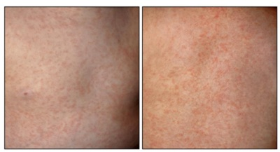
A Escarlatina
B Rubéola
C Roséola
D Eritema infeccioso
E Mononucleose
Questão 1316 · Pediatria · Tratamento · 4000182366Criança do sexo masculino de 8 anos de idade comparece em consulta de seguimento ambulatorial para asma e rinite alérgica. Sua mãe refere que nos últimos 3 meses o paciente apresenta quadro intermitente de coriza, espirros ao acordar e obstrução nasal. Estes episódios ocorrem cerca de 2 vezes por semana, em média, em duas das quatro semanas de cada mês. Nestes períodos, mantém bom controle dos sintomas da asma com o uso de formoterol e budesonida em dose baixa, conseguindo ir para a escola, fazer esportes e sem apresentar alterações de sono. Adicionalmente, continua fazendo lavagem nasal com soro siológico, mas não está em uso de medicação nasal. Dois meses após a primeira consulta, o paciente comparece em consulta de retorno apresentando quadro de coriza, prurido nasal e espirros no período. Os sintomas caram mais intensos nas últimas 5 semanas, manifestando-se cerca de 5 vezes por semana, além de di culdade para dormir por obstrução nasal. Mantém o tratamento da asma como orientado, com sintomas controlados. Qual é o tratamento para a rinite alérgica que deve ser iniciado neste momento, considerando a classificação na consulta atual?
A Corticoide sistêmico por via oral por 10 dias.
B Antileucotrieno por via oral diariamente.
C Anti-histamínico por via oral por 10 dias.
D Descongestionante nasal por tópica nasal diariamente.
E Corticoide por via tópica nasal diariamente.
Questão 1317 · Pediatria · Classif icação · 4000182365Criança do sexo masculino de 8 anos de idade comparece em consulta de seguimento ambulatorial para asma e rinite alérgica. Sua mãe refere que nos últimos 3 meses o paciente apresenta quadro intermitente de coriza, espirros ao acordar e obstrução nasal. Estes episódios ocorrem cerca de 2 vezes por semana, em média, em duas das quatro semanas de cada mês. Nestes períodos, mantém bom controle dos sintomas da asma com o uso de formoterol e budesonida em dose baixa, conseguindo ir para a escola, fazer esportes e sem apresentar alterações de sono. Adicionalmente, continua fazendo lavagem nasal com soro siológico, mas não está em uso de medicação nasal. Qual é a classificação da rinite alérgica apresentada pelo paciente?
A Persistente leve
B Persistente moderada/grave
C Intermitente moderada/grave
D Intermitente leve
E Intermitente controlada
Questão 1318 · Prevenção do tétano acidental · 4000182357Homem de 35 anos de idade, previamente hígido, é admitido na unidade de emergência após ser vítima de explosão de botijão de gás em domicílio, que ocorreu há 2 horas. À avaliação do serviço médico de emergência no local, apresentava frequência cardíaca (FC) de 110bpm, pressão arterial (PA) de 110x80mmHg, frequência respiratória (FR) 18ipm, saturação de oxigênio (SpO2) de 97% em ar ambiente e escala de coma de Glasgow 15. À avaliação inicial na unidade de emergência, apresenta rouquidão e chamuscamento de sobrancelhas. A SpO2 é de 92% em ar ambiente, com elevação para 95% após instalação de máscara de oxigênio em 12L/min. Expansibilidade torácica preservada e simétrica, com murmúrios vesiculares presentes bilateralmente, sem ruídos adventícios e FR de 20ipm. Bulhas rítmicas e normofonéticas, em dois tempos, sem sopros, com FC de 115bpm e PA de 100x70mmHg. O abdome está ácido e indolor, com pelve estável. A escala de coma de Glasgow é de 15, com pupilas isocóricas e fotorreagentes, sem dé cits neurológicos focais. Apresenta queimadura com formação de bolhas, com áreas nacaradas e áreas enegrecidas em tórax, abdômen e membro superior direito, conforme pode ser visto na figura esquemática a seguir. Sua última refeição ocorreu há 8 horas. Tem história de vacinação completa para tétano, com última dose de reforço há 8 anos. Que outras condutas também deverão ser adotadas, após a realização da medida inicial descrita na questão 13?
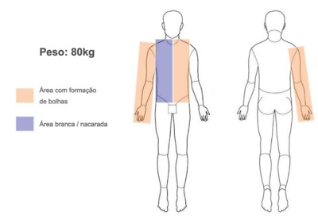
A Expansão volêmica inicial com 2.160mL de cristaloides nas próximas 6 horas e profilaxia de tétano com imunoglobulina intramuscular.
B Expansão volêmica inicial com 4.320mL de cristaloides nas próximas 24 horas e profilaxia de tétano com imunoglobulina intramuscular.
C Expansão volêmica inicial com 2.160mL de cristaloides nas próximas 6 horas e profilaxia de tétano com vacinação intramuscular.
D Expansão volêmica inicial com 4.320mL de cristaloides nas próximas 12 horas e profilaxia de tétano com vacinação intramuscular.
E Expansão volêmica inicial com 2.160mL de cristaloides nas próximas 8 horas e profilaxia de tétano com imunoglobulina intramuscular.
Questão 1319 · Pediatria · Medicina de Família e Comunidade · 4000182319Menina de 7 anos e 6 meses é levada por sua mãe à consulta de retorno. A mãe refere que a menina ganhou peso e apresentou regressão do comportamento durante a pandemia de COVID-19 e que, há seis meses, observou o desenvolvimento de broto mamário. Além do comportamento mais infantil, a menina cou muito chorosa e preocupada que sua mãe morresse. A mãe, que é faxineira, costuma deixar a menina aos cuidados de uma vizinha que tem dois lhos adolescentes. O exame físico mostra mamas Tanner III, pelos pubianos Tanner II, IMC acima do percentil 90. Os exames solicitados na primeira consulta mostram idade óssea de 10 anos, LH acima da faixa pré-puberal, útero de 7cm³ e microcistos nos ovários. Em relação ao caso, o diagnóstico mais provável é de puberdade:
A precoce central com risco de prejuízo na estatura adulta, menarca precoce, abuso sexual e gestação precoce
B periférica, devendo-se ficar alerta para a associação futura com síndrome metabólica, com obesidade, hipertensão e diabetes
C precoce incompleta, devendo ser realizada ressonância da sela túrcica para afastar as causas neurológicas e/ou tumorais
D prematura associada à obesidade com velocidade de progressão lenta, por isso sem impacto nas funções reprodutivas e ajuste psicossocial
Questão 1320 · Pediatria · Doenças Endocrinológicas · 4000182311Menino de 6 anos, asmático, é levado à consulta na pediatria geral, após quatro anos sem seguimento ambulatorial, sendo que as últimas medidas na caderneta registram peso, estatura e IMCkg/m² em escore-z de valor zero. A mãe relata que o paciente ganhou muito peso e cresceu pouco nesse período. Durante o atendimento, nota-se que o paciente apresenta asma não controlada, com diversas exacerbações, erros alimentares graves e sedentarismo. No momento, pesa 50kg (escore-z > +3) e tem 102cm de altura (escore- z entre -2 e -3), com IMC de 48kg/m2 (escore-z > +3). Nesse caso, a respeito da obesidade, é correto afirmar que:
A síndromes genéticas estão entre as principais causas
B baixa velocidade de crescimento dispensa investigação
C uso abusivo de corticoides por via oral em pacientes asmáticos pode justificar o quadro
D exames complementares são desnecessários para pesquisa de comorbidades associadas
Questão 1321 · Pediatria · Avaliando o desenvolvimento · 4000182310Menino de 2 anos e 3 meses comparece ao ambulatório com a avó. Preocupada com o desenvolvimento da criança, a senhora relata que, diferente de seus outros netos, o paciente ainda não fala nenhuma palavra, embora emita sons, escute bem e aponte o que deseja. A avó nega história de prematuridade, as xia perinatal ou comorbidades e o menino não apresenta prejuízo no desenvolvimento motor ou na interação social. Nesse caso, em relação à investigação, o médico deve:
A orientar a avó sobre o desenvolvimento do menino que será acompanhado sem intervenção imediata
B solicitar ressonância magnética do crânio e eletroencefalograma para fechar o diagnóstico
C excluir o diagnóstico de deficiência auditiva, tomando como base o relato da avó
D encaminhar o menino para avaliação multidisciplinar e terapias de estímulo
Questão 1322 · Pediatria · Tratamento da síndrome hemolítico urêmica SHU · 4000182309Menino de 7 anos é levado pelo responsável ao pronto socorro infantil com queixa de febre alta há cinco dias, associada à diarreia com presença de sangue, sem muco ou pus. Os exames complementares revelam anemia hemolítica grave, plaquetopenia, aumento de ureia e creatinina e isolamento da bactéria coli O157:H7, produtora da toxina que a:
A prescrição de antibióticos é contraindicada, pois pode aumentar a liberação de toxina
B despeito da plaquetopenia, está indicada a prescrição de anticoagulação terapêutica
C transfusão de hemácias está contraindicada pelo risco de sobrecarga volêmica
D maioria dos pacientes necessita de suporte dialítico na fase aguda
Questão 1323 · Pediatria · Síndrome de Down · 4000182308Com relação ao acompanhamento de pacientes com Síndrome de Down, é correto afirmar que:
A instabilidade atlantoaxial é encontrada na maioria dos pacientes, sendo necessário o rastreio anual com radiografia da coluna cervical, desde o nascimento
B o uso de gráficos de estatura específicos é dispensável, uma vez que a estatura final desses indivíduos costuma ser igual à da população geral
C hormônios tireoidianos devem ser solicitados anualmente, sendo comum o hipertireoidismo
D ecocardiograma deve ser realizado devido ao risco aumentado de cardiopatias congênitas
Questão 1324 · Inf ecções sexualmente transmissíveis · Pediatria · 4000182305Menino de 13 anos é trazido pelos pais ao pronto atendimento com quadro de disúria há três dias. Paciente nega febre e está em uso de cefalexina há dois dias sem melhora dos sintomas. A mãe refere que ele não tem histórico de doenças prévias ou quadros semelhantes. Ao exame da genitália, há saída de secreção purulenta pela uretra, Tanner G3P3. O EAS mostra piúria e na secreção uretral coletada foi identi cado diplococo gram negativo. Nesse momento, o tratamento indicado é:
A azitromicina
B ciprofloxacina
C amoxicilina + clavulanato
D sulfametoxazol + trimetoprim
Revisar: possível letra faltando em enunciado
Questão 1325 · Pneumonias de repetição · Pediatria · 4000182304No paciente com quadro de pneumonia bacteriana de repetição, em uma mesma topogra a pulmonar, o exame que mais auxilia a investigação diagnóstica é:
A tomografia computadorizada de tórax
B dosagem de imunoglobulinas
C contagem de células CD
D broncoscopia pulmonar
Questão 1326 · Asf ixia perinatal · 4000182303No RN a termo, com as xia neonatal, a manobra de reanimação a ser realizada que apresenta maior efetividade é:
A infusão de adrenalina pelo cateter umbilical
B ventilação com pressão positiva
C intubação orotraqueal
D massagem cardíaca
Questão 1327 · Rubéola Congênita · 4000182302Lactente de 2 meses de vida é trazido ao serviço de cardiologia para realização de ecocardiograma agendado, para acompanhar um “buraco no coração”, segundo a mãe, que também relata que a avaliação auditiva diagnosticou surdez, através de potencial evocado. Ao exame físico, o lactente está em bom estado geral, à ectoscopia dos olhos é notada provável catarata à direita e o ecocardiograma detecta persistência do canal arterial, de tamanho pequeno, sem repercussão hemodinâmica. Nesse caso, a principal hipótese diagnóstica é:
A sífilis congênita
B herpes neonatal
C rubéola congênita
D citomegalovirose congênita
Questão 1328 · Hiperbilirrubinemia direta neonatal · 4000182301Menina, com dez dias de vida, é levada à emergência por estar “mais amarela do que o normal”. Seus responsáveis referem que ela apresenta evacuações com fezes claras e urina escurecida desde o nascimento, e que as sorologias maternas do pré-natal são negativas. Ao exame físico, apresenta bom estado geral, está ativa e reativa, com fontanela anterior normotensa, ictérica 4+/4+ (zona V de Krammer), acianótica, hidratada, corada com boa perfusão periférica, fígado palpável, a 5cm do rebordo costal direito, FC = 135bpm, FR = 45irpm e SatO² = 99%. A principal hipótese diagnóstica e alteração esperada na dosagem de bilirrubinas, respectivamente, são:
A policitemia /predominância de bilirrubina indireta
B hepatite viral / predominância de bilirrubina direta
C icterícia fisiológica / predominância de bilirrubina indireta
D atresia de vias biliares / predominância de bilirrubina direta
Questão 1329 · Pediatria · Principais síndromes genéticas e neonatais · 4000182299Lactente de 8 meses chega para primeira consulta na unidade básica de saúde, com história de mielomeningocele ao nascer, corrigida na maternidade. Também necessitou de colocação de derivação ventriculoperitoneal (DVP), devido à hidrocefalia. Ao exame físico, nota-se a presença de pé torto congênito. Nessa síndrome, outro distúrbio ou malformação comumente presente é:
A rim policístico
B arritmia cardíaca
C bexiga neurogênica
D defeito de septo AV
Questão 1330 · Pediatria · Amamentação Aleitamento Materno · 4000182298Sobre o aleitamento materno, é correto afirmar que:
A retirar um pouco de leite antes de colocar o bebê no peito pode facilitar a pega, se a mama estiver muito cheia nos primeiros dias, após a apojadura
B colocar o bebê no seio materno na primeira hora de vida não é vantajoso, uma vez que este ainda está muito sonolento
C se deve evitar colocar o bebê para sugar a mama que estiver apresentando fissura ou mamilos machucados
D se deve evitar amamentação na posição deitada, pelo maior risco de otite no bebê
Questão 1331 · Pediatria · Doenças Sistêmicas · 4000182297Menina de 7 anos é trazida para consulta ambulatorial com queixa de baixa estatura. A mãe refere que a criança tem desenvolvimento normal, mas que é bem menor que seus colegas de turma da escola. Ao ser questionada sobre doenças prévias, a mãe relata que a menina foi internada mais de cinco vezes por infecção urinária, com presença de febre e que o primeiro episódio aconteceu aos três meses de vida. À época, foi pedida uma ultrassonogra a (USG) de vias urinárias, que não conseguiu realizar. Ao exame físico, a criança apresenta PA = 128 x 86mmHg, FC = 98bpm, FR = 34ipm, sem outras alterações, exceto pela baixa estatura, classificada como abaixo do alvo genético e do z escore -3 para a idade. O IMC é adequado para a idade. A mãe trouxe um hemograma que mostra: Hgb = 9g/dL, VCM = 79, RDW = 11. Para a investigação diagnóstica dessa criança, é essencial solicitar
A cinética de ferro
B cultura de urina
C função renal
D mielograma
Questão 1332 · Transposição de grandes artérias TGA · 4000182296Recém-nascido (RN) a termo, no segundo dia de vida, apresenta quadro de cianose. A mãe não fez prénatal e chegou à maternidade em período expulsivo. Ao exame físico, o RN encontra-se com cianose labial e periférica, tiragem subcostal moderada, FR = 70ipm, FC = 150bpm, SatO2 = 80% e a ausculta cardíaca revela sopro sistólico leve, em borda paraesternal, apagamento de B1 e hiperfonese de B2. O ecocardiograma (ECO) mostrou transposição de grandes vasos, com septo atrioventricular íntegro. Para esse caso, o tratamento medicamentoso urgente é:
A morfina
B furosemida
C propranolol
D prostaglandina
Questão 1333 · Pediatria · Dermatite de f raldas · 4000182295Lactente de 7 meses é trazido para consulta de puericultura por sua avó, que refere que a criança está bem, com bom desenvolvimento e aceitando os alimentos oferecidos. Ao exame da região da genitália, notam-se lesões eritematosas con uentes, com presença de pequenas lesões satélites papulares, algumas pustulosas, estendendo-se para fora da área de contato com a fralda. Nesse caso, o principal agente causador é:
A Papiloma Vírus
B Candida albicans
C Herpes Vírus tipo 2
D Trichophyton tonsurans
Questão 1334 · Higroma Cístico · Pediatria · 4000182293Lactente de 18 meses é trazido para atendimento apresentando massa cervical à direita e febre de 38°C há dois dias. A família relata que a criança tem um “tumor no pescoço”, desde que nasceu, mas que nesses últimos dias notou aumento do local. Ao exame físico, a criança está em bom estado geral e apresenta massa cervical do lado direito, com presença de hiperemia, de consistência amolecida, cística e dolorosa à palpação. A massa não se move à deglutição e o restante do exame físico não indica outras alterações. A principal hipótese diagnóstica é infecção de:
A cisto tireoglosso
B higroma cístico
C hemangioma
D linfonodo
Questão 1335 · Neurologia · Sinais e sintomas · 4000182179Criança de 1 mês de idade, nascida de parto cesárea sem intercorrências, com quadro de irritabilidade e baixo ganho de peso. A mãe teve diagnóstico de toxoplasmose confirmado durante a gestação. Ao exame físico, encontra-se desperto e reativo, com peso de 2400 g e perímetro craniano de 42 cm; fontanelas abauladas, com mobilidade ocular normal. Seu exame de ultrassonogra a de crânio transfontanelar encontra- se abaixo. Qual é a melhor conduta terapêutica?
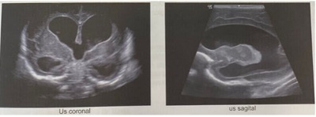
A Terceiroventriculocisternostomia endoscópica
B Acetazolamida oral
C Punção lombar de alívio
D Derivação ventriculoperitoneal
Questão 1336 · Avaliação do Crescimento · Pediatria · 4000182151Os pais de um garoto de 13 anos e 7 meses trazem no em uma consulta de rotina em uma unidade de saúde da família. Os pais demonstraram grande preocupação com a altura do lho, já que ele sempre foi o mais baixo da sala de aula da escola. A mãe conta que a gestação do menino ocorreu muito bem, sem intercorrências. O parto foi normal, a termo, sem intercorrências, peso ao nascimento 3180 gramas, comprimento 49 cm, PC 33 cm, Apgar 9/10. A criança apresentou o desenvolvimento neuropsicomotor adequado. Fica resfriado com uma frequência alta segundo a opinião dos pais. Sem outras doenças prévias, uso de medicamentos ou cirurgias. História familiar sem informações relevantes. EF: sem alterações dignas de nota, genitália masculina típica, estadiamento de Tanner G2P2, exame de idade óssea 11 anos, Calculada a altura alvo do garoto através das alturas dos pais. Avaliado o gráfico de crescimento do paciente desenhado acima, qual o diagnóstico provável do paciente?
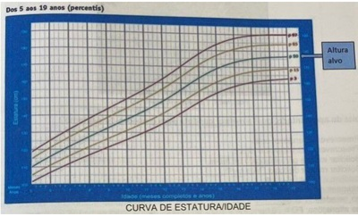
A Deficiência do hormônio do crescimento.
B Estatura normal.
C Baixa estatura constitucional.
D Baixa estatura familiar.
Questão 1337 · Sarampo · 4000182146O conhecimento dos períodos de incubação e de transmissibilidade de uma doença infecciosa é essencial para o médico orientar adequadamente a conduta frente às situações em que ocorre contato entre um indivíduo infectado e outras pessoas da população. Para o sarampo, os períodos de incubação e de transmissibilidade são, respectivamente, de 7 a 18 dias até o aparecimento da febre, e de quatro dias antes a quatro dias após o surgimento do exantema. Suponha que a criança A tenha regressado recentemente de um país europeu e que no dia 1⁰/10/2022 apresentou sinais e sintomas de sarampo com surgimento de exantema. No dia 30/9/2022, havia tido contato com a criança B, nunca vacinada contra sarampo. Frente a essa situação, você indicaria:
A Quarentena até 7/10 para A e isolamento até 6/10 para B.
B Quarentena até 6/10 para A e isolamento até 15/10 para B.
C Isolamento até 5/10 para A e quarentena até 18/10 para B.
D Isolamento até 9/10 para A e quarentena até 14/10 para B.
Questão 1338 · Calendário inf antil · 4000182135Criança de 5 meses e 17 dias vem para consulta de puericultura com seu médico de família e mãe apresenta o cartão vacinal abaixo. Segundo o Calendário Nacional de vacinação apresentado, qual vacina está em atraso?
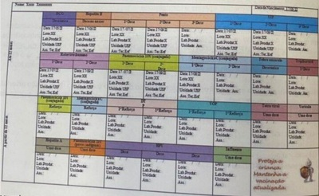
A Febre Amarela.
B Pentavalente.
C VIP.
D Meningocóccica C.
Questão 1339 · Tratamento · 4000182111Recém-nascido de parto normal, a termo, após uma gestação sem intercorrências. Mãe de 25 anos, G2, saudável, com acompanhamento pré-natal adequado. As sorologias maternas foram negativas com 10 semanas de gestação e no momento do parto (HIV, VDRL, toxoplasmose IgG/IgM, hepatites B e C). Ao nascimento, foi observado que o recém-nascido apresentava peso no percentil 4 para a idade gestacional, petéquias em face e tronco, hepatoesplenomegalia e microcefalia. Exames realizados: Hemograma com Hb/Ht normais, série branca normal, plaquetas 87.000/µL; TGO 92 U/L (VR até 32 U/L); TGP normal; fundoscopia ocular: sem alterações; ultrassom transfontanelar: presença de calci cações periventriculares; triagem auditiva: ausência de respostas bilateralmente; análise de líquido cefalorraquidiano normal Qual é o tratamento indicado para a causa mais provável deste quadro?
A Aciclovir.
B Penicilina cristalina.
C Ganciclovir.
D Sulfadiazina e pirimentamina.
Questão 1340 · Amamentação na primeira hora de vida · Contato pele a pele · RNs maiores de 34 semanas · 4000182110Recém-nascido atendido em sala de parto de uma maternidade. Nasceu de parto normal com 40 semanas de idade gestacional, após uma gestação sem intercorrências; bolsa rota há 2 horas, com líquido amniótico meconiado. Imediatamente após o nascimento, o recémnascido apresentava choro forte, tônus muscular em exão e cianose generalizada. Foi secado rapidamente, colocado em contato pele a pele com a mãe e o coberto com tecido seco e aquecido. Qual é a conduta imediata mais adequada na assistência a este recémnascido?
A Oferecer oxigênio inalatório suplementar.
B Avaliar a frequência cardíaca, o tônus e a respiração.
C Levar ao berço de reanimação, sob fonte de calor radiante.
D Posicionar o pescoço em hiperextensão
Questão 1341 · Atresia de vias biliares · Tratamento · Atresia da Via Biliar · 4000182108Paciente com 6 meses, apresenta história de icterícia, colúria e acolia desde um mês de idade. Apresenta bom desenvolvimento pondero estatural, sendo alimentada por aleijamento materno e papas. Exame físico: ictérico ++/4, fígado a 3 cm do rebordo costal direito, rme; baço a 2 cm do rebordo costal esquerdo. Exames laboratoriais: bilirrubinas totais = 7,3 mg/dL; bilirrubina direita = 5,1 mg/dl; TGO = 245 U/L (Valor de referência [VR] <31); TGP = 295 U/L (VR < 31); GamaGT = 400 U/L (VR < 50); INR -= 1,5 (VR < 1,3); albumina = 3,0 g/dl (VR: 3,5-5). Ultrassom abdominal: fígado com bordas rombas, contornos lobuladosm , aumento difuso da ecogenicidade; presença de massa brosa de forma triangular situada na porção cranial da bifurcação da meia porta; esplenomegalia. Biópsia hepática percutânea: brose moderada, com septos e nódulos; proliferação de ductos biliares e frequentes lagos biliares. Com base no seu principal diagnóstico etiológico, qual a melhor opção para esta criança?
A Colangiografia intraoperatória.
B Colangiografia endoscópica retrógrada.
C Transplante hepático.
D Cirurgia de Kasai.
Questão 1342 · Calendário inf antil · 4000182106Criança de 15 meses é lha de mãe com infecção pelo HIV que realizou tratamento prénatal irregular. A criança apresentou exames de carga viral do HIV indetectáveis ao nascimento, com 15 dias, com 6 semanas e com 12 semanas de vida. Comparece com a mãe na sala de vacina regularmente e hoje se apresenta para receber a imunização de rotina de 15 mese. Legenda: SCR: sarampo, caxumba e rubéola. VOP: vacina oral contra poliomielite. DPT: difteria, tétano e coqueluche. VIP: vacina inativada contra poliomielite. Entre as vacinas que poderão ser administradas estão:
A DPT, VIP, febre amarela, SCR.
B DPT, VOP, varicela, hepatite A.
C SCR, DPT, VOP, hepatite A.
D SCR, varicela, DPT, VIP.
Questão 1343 · Tratamento Geral · Pediatria · 4000182105Paciente de 4 anos, levado ao pronto atendimento com história de coriza há 5 dias, evoluiu com tosse produtiva e febre há 2 dias, hiporexia leve. Mãe nega doentes em casa, criança frequenta escolinha, apresente vacinação em dia. Peso 16,8 kg, previamente hígido. Ao exame: estado geral bom, corado, hidratado, acianótico, anictérico; frequência respiratória 36 ipm, sem retrações. com boa expansibilidade torácica. Ausculta pulmonar: murmúrios presentes bilateralmente, presença de estertores crepitantes localizados em terço médio à direita. Qual a conduta mais adequada para o caso?
A Iniciar amoxicilina oral e retorno em 48 horas.
B Iniciar cetreiaxone endovenoso e internar.
C Prescrever penicilina benzatina e retorno em 48 horas.
D Prescrever azitromicina e liberar.
Questão 1344 · Pediatria · Avaliando o desenvolvimento · 4000182102Durante uma consulta de rotina de puericultura, a mãe de uma criança de 8 meses relata que está preocupada porque o seu lho ainda não consegue sentar sem apoio. A criança nasceu a termo e não há outras queixas; teste do pezinho: sem alterações. Você observa, durante a consulta, que a criança necessita de auxílio para passar da posição supina para a sentada, mas uma vez nessa posição permanece estável, sem cair. Restante do exame físico sem alterações. Qual a melhor conduta?
A Manter retorno regular de puericultura.
B Solicitar dosagem sérica de TSH e T4 livre.
C Solicitar eletroneuromiografia e dosagem sérica de CPK.
D Solicitar tomografia computadorizada de crânio.
Questão 1345 · DDS46XYinsensibilidade androgênica ou def eito no receptor androgênico · Pediatria · 4000182099Você examina um recém-nascido, primeiro lho de um casal jovem, saudável e sem consanguinidade. Foi uma gestação muito aguardada e todo o acompanhamento pré-natal foi completo e sem intercorrências. Entretanto, aos 6 meses de gestação realizaram também um exame de sexagem fetal, cujo o resultado (46,XY) foi discrepante dos achados da ultrassonogra a fetal. Durante o exame físico, você não encontra nenhuma outra anormalidade aparente e o exame da região genital é mostrado na figura abaixo. O exame ultrassonográ co não encontrou útero e demais derivados Mullerianos. Considerando que o resultado do exame citogenético seja de fato confirmado, qual é o provável diagnóstico desta criança?
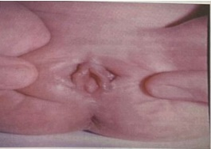
A Síndrome de resistência androgênica.
B Hiperplasia adrenal congênita por deficiência de 21 hidroxilase.
C Síndrome de Rokitansky (Mayer Rokitansky Kuster Hauser).
D Disgenesia gonadal mista.
Revisar: possível letra faltando em enunciado
Questão 1346 · Diagnóstico · Pediatria · 4000182097Menina de 10 anos apresenta dor e edema em tornozelos e lesões cutâneas, principalmente em membros inferiores e nádegas, há 5 dias (foto), sem nenhuma outra queixa. O restante do exame físico está sem alteração. Há 20 dias, apresentou quadro de infecção respiratória. Exames complementares: Hb: 14 g/dL, GB: 7.200/mm³ (40% neutró los, 60% linfócitos), plaquetas: 480.000/mm³, VHS 40 mm/1 hora, proteína C reativa 3 mg/dl (VR: abaixo de 0,5 mg/dl(, urina rotina sem alterações. Ultrassonogra a de abdome normal. Além de observar a evolução do quadro, qual a conduta terapêutica nesse momento?
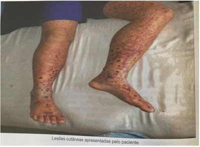
A Analgésico.
B Corticoide.
C Dapsona.
D Tacrolimus.
Questão 1347 · Tratamento de Manutenção · Tratamento de manutenção da asma · Pneumologia · 4000182096Criança de 7 anos de idade, diagnosticada com asma aos 6 anos, com base na história clínica e espirometria. Nega uso de medicações de uso contínuo. Nos últimos 6 meses, vem apresentando tosse e dispneia diariamente e despertar noturno, devido à tosse, 3 vezes por semana. Como deve ser o tratamento inicial?
A Corticoide inalado associado a teofilina.
B Corticoide inalado associado a montelucaste
C Corticoide inalado associado a beta 2 de ação prolongada.
D Corticoide inalado associado a imunobiológico.
Questão 1348 · Comunicação interventricular · 4000182095Criança de 8 anos, sexo feminino, vem a consulta devido a arroxeamento dos lábios e unhas, além de cansaço durante esforços físicos. Esses episódios começaram há cerca de 1 anos e estão se tronando mais frequentes. Nega internações prévias e quadros de chiados no peito. Familiar refere que no primeiro ano de vida, época em que fez puericultura, foi observado sopro sistólico e desconforto respiratório, porém médico disse que paciente devia ter "algum buraquinho no coração que fecharia sozinho". Refere também que sentia uma vibração torácica em região de rebordo esternal esquerdo baixo, mas que desapareceu ao longo dos anos. Qual hipótese diagnóstico deve ser investigada?
A Transposição de grandes artérias.
B Comunicação interatrial.
C Tetralogia de Fallot.
D Síndrome de Eisenmenger
Questão 1349 · Causas Genéticas e Cormossômicas · Cirurgia · 4000181943Paciente apresentando hipoplasia do polegar associada à manchas café com leite e baixa estatura apresenta quadro clinico sugestivo da síndrome de:
A HOLT-ORAM.
B CHARGE.
C POLAND.
D VACTERL.
E FANCONI.
Questão 1350 · Herpangina Doença MãoPéBoca · 4000181913O agente etiológico causador da doença mão-pé-boca é o :
A Coxsackie vírus.
B Herpes vírus.
C Actinobacillus.
D Erysipelothrix.
E Francisella tularensis.
Questão 1351 · Pediatria · 4000181904Apesar da indisponibilidade no Brasil, o CDC e o ACIP (Advisory Committee on immunization Practices) já emitiram orientações acerca da vacina JYNNEOS para varíola / monkeypox. Qual das a rmativas abaixo, segundo o CDC e ACIP, está correta:
A Apenas o uso profilático da JYNNEOS é eficaz.
B JYNNEOS está recomendada em até quatro dias após a exposição. Se administrada entre 4 e 14 dias após exposição, consideramos a vacinação, mesmo que menos eficaz.
C Somente indivíduos que nunca foram vacinados para varíola devem receber a JYNNEOS após exposição.
D Por ser uma vacina de vírus vivo atenuado não replicante, seu uso em imunodeprimidos está proscrito.
E O esquema vacinal é composto por três doses, com intervalo de dois meses entre cada dose.
Questão 1352 · Pediatria · 4000181894Valentina tem três anos e, desde o nascimento, vem batalhando contra a brose cística. Além das múltiplas infecções respiratórias, Valentina tem uma síndrome disabsortiva grave secundária à insu ciência pancreática exócrina. Ao se interessar pelo caso, você vai ler sobre insu ciência pancreática exócrina hereditária e descobre que, depois da fibrose cística, a principal causa é:
A Síndrome de Shwachman-Diamond.
B Síndrome de Pearson.
C Síndrome de Johanson-Blizzard.
D Insuficiência pancreática associada ao gene SPINK1.
E Pâncreas divisum.
Questão 1353 · Abscesso Periamigdaliano · Pediatria · 4000181893Paula tem quatro anos e, há três meses, iniciou quadros recorrentes de febre de 40oC, odinofagia, linfonodomegalia cervical dolorosa e dor abdominal. Os episódios costumam durar cinco dias e recorrem a cada duas semanas com resolução espontânea. Nos períodos de remissão, Paula ca totalmente assintomática. A mãe de Paula diz que os antibióticos não encurtam o período de duração da doença, mas que decidiu por conta própria, dar corticoide para a lha e que observou melhora quase imediata. O diagnóstico mais provável é:
A Febre Familiar do Mediterrâneo.
B Sarcoidose.
C Tuberculose.
D Doença de Kikuchi.
E PFAPA.
Revisar: possível letra faltando em enunciado
Questão 1354 · Pediatria · Diagnóstico Nutricional · 4000181892Em relação à questão anterior, o estado nutricional de Antônio é classificado como:
A Baixa estatura para idade / Eutrófica.
B Estatura adequada para idade / Magreza.
C Baixa estatura para idade / Magreza.
D Baixa estatura para idade / Magreza acentuada.
E Muito baixa estatura para a idade / Eutrófica.
Questão 1355 · Doença Celíaca · Pediatria · 4000181891Antônio, de 15 meses, apresenta episódios recorrentes de dor abdominal sem sinais de invasividade. Segundo a mãe, o quadro começou após a introdução completa da dieta complementar aos 8 meses. Ao exame físico, chama atenção distensão abdominal e palidez cutâneo mucosa. Não há sinais de irritação peritoneal ou organomegalia palpáveis. A avaliação nutricional mostra que Antônio está entre os escores Z -2 e -3 em estatura para a idade e IMC para a idade. Hemograma recente demonstra anemia com características que sugerem sideropenia. A hipótese mais provável para o quadro é:
A Doença de Whipple.
B Giardíase.
C Espru não tropical.
D Intolerância à lactose.
E Síndrome do intestino irritável.
Questão 1356 · Teste do coraçãozinho · 4000181889Nina tem 30h de vida e já está em alojamento conjunto com a mãe. Está aguardando um teste de triagem para ter alta hospitalar: o teste do coraçãozinho. A saturação no membro superior direito é de 99% e no membro inferior direito de 94%. Com base nos achados a conduta subsequente é:
A Dar alta hospitalar, já que o exame está dentro da normalidade.
B Solicitar ecocardiograma de urgência e pedir parecer ao cirurgião cardíaco pediátrico.
C Manter Nina internada e realizar ecocardiograma dentro das próximas 24 horas.
D Repetir o teste dentro de uma hora.
E Manter Nina internada e repetir o teste dentro de 24 horas.
Questão 1357 · Sinais e sintomas · Pediatria · 4000181888Fernando tem dois meses e é trazido na consulta de pediatria pela mãe que faz as seguintes queixas: “Ele está muito magrinho. Toda vez que vou trocar a roupa ou a fralda dele, ele chora demais. O nariz dele sempre está com um catarro esbranquiçado”. Ao exame, Fernando apresenta adenomegalia generalizada, hepatoesplenomegalia, hipocorado 2+/4+ e chora à manipulação de extremidades. Considerando a hipótese de infecção congênita, o agente etiológico mais provável é:
A Treponema pallidum.
B Citomegalovírus.
C Toxoplasma gondii.
D Zika vírus.
E Rubella vírus.
Questão 1358 · Complicações · Agentes etiológicos · Pediatria · 4000181887Augusto tem cinco anos e foi trazido à emergência pela mãe com quadro de febre de 39oC e tosse produtiva há 48 horas. Ao exame físico, encontra-se prostrado e taquipneico. A ausculta pulmonar evidenciou estertores crepitantes em hemitórax direito com murmúrio vesicular abolido na base direita. Radiogra a de tórax evidenciou pneumonia e derrame pleural em base de hemitórax direito. O agente etiológico mais provável e o antibiótico de escolha são respectivamente:
A Staphylococcus aureus – Clindamicina.
B Streptococcus pneumoniae – Ampicilina.
C Chlamydia trachomatis – Doxiciclina.
D Vírus sincicial respiratório – Ribavirina.
E Mycobacterium tuberculosis – RIPE.
Questão 1359 · Pediatria · Amamentação Aleitamento Materno · 4000181886Maria é mãe de Miguel, que tem quatro meses. Miguel está em regime de aleitamento exclusivo. Na visita do agente comunitário de saúde, Maria cou sabendo que está ocorrendo um surto de febre amarela na região onde mora. Quando Maria chega à unidade básica de saúde, sua conduta é:
A Vacinar Maria e Miguel. O aleitamento pode ser mantido.
B Vacinar apenas Maria e manter o aleitamento, já que Miguel receberá os anticorpos por imunidade passiva.
C Vacinar Maria e Miguel e contraindicar a amamentação permanentemente.
D Vacinar apenas Maria e suspender a amamentação por 10 dias.
E Vacinar Maria e Miguel e suspender a amamentação por 28 dias.
Questão 1360 · Prof ilaxia Ferro · Pediatria · 4000181885André é um recém-nascido a termo, com peso ao nascer de 2,200g, e encontra-se em aleitamento materno exclusivo. Sua mãe é vegetariana estrita e não suplementou ferro durante a gestação, pois refere intolerância gástrica. Além de André, ela é mãe de João (1 ano), Pedro (3 anos) e Tiago (4 anos). Segundo as recomendações mais recentes da Sociedade Brasileira de Pediatria, como deverá ser feita a suplementação medicamentosa profilática de ferro de André?
A Não há indicação de suplementar, pois André é um recém-nascido a termo e adequado para idade gestacional.
B Não há indicação de suplementar, pois o leite materno sabiamente supre todas as demandas nutricionais até os seis meses de idade.
C 1mg de ferro elementar/kg/dia, iniciando aos 180 dias de vida até o 24º mês de vida
D 2mg de ferro elementar/kg/dia, iniciando aos 90 dias de vida até o 24º mês de vida. Após este prazo, 1mg/kg/dia por mais um ano.
E 2mg de ferro elementar/kg/dia, iniciando com 30 dias de vida, durante um ano. Após este prazo, 1mg/kg/dia por mais um ano.
Questão 1361 · Pediatria · Puberdade Precoce Perif érica · 4000181847O tratamento inicial para a puberdade precoce, decorrente da Síndrome de McCune Albright, é
A o tamoxifeno.
B o letrozol ou a leuprorrelina.
C a gosserrelina.
D o acetato de medroxiprogesterona
Questão 1362 · Tratamento · 4000181819O tratamento para anemia ferropriva, de acordo com o consenso da Sociedade Brasileira de Pediatria (SBP) de 2021, consiste na administração de
A ferro elementar na dose de 3 a 6 mg/kg/dia por 6 meses.
B ferro elementar na dose de 1 a 2 mg/kg/dia por 6 meses.
C glicinato férrico na dose de 0,5 mg/kg/dia por até 30 dias.
D glicinato férrico na dose de 2 a 4 mg/kg/dia por 12 meses.
Questão 1363 · Pediatria · Puericultura · 4000181818Ao ser discutido sobre o uso correto da tecnologia em prol de um desenvolvimento neuropsicomotor satisfatório na infância e na adolescência, a SBP preconiza que o tempo de exposição a mídias deve ser
A entre 1 a 2 horas ao dia para crianças entre 2 e 3 anos completos.
B tempo zero para crianças até 2 anos de idade.
C de até 3 horas diárias para crianças entre 3 e 6 anos.
D no máximo de 4 horas ao dia (com intervalos) para crianças maiores de 6 anos de idade.
Questão 1364 · Vacina BCG · 4000181817A vacina BCG, de acordo com o calendário vacinal de 2021 da SBP,
A deve ser administrada em dose única.
B deve ser aplicada a partir de 30 dias de vida.
C pode ser celular ou acelular.
D pode ser proscrita aos filhos de mães com tuberculose prévia.
Questão 1365 · Vacina pneumo 13valente · 4000181816De acordo com o calendário de vacinação da Sociedade Brasileira de Pediatria (SBP) de 2021, a vacina pneumocócica conjugada deve ser aplicada nas crianças:
A a partir de 9 meses e a cada 3 meses, até 18 meses de idade.
B com 3, 6, 9 e 12 meses de vida.
C a partir de 1 ano e a cada 2 meses, até 2 anos de idade.
D com 2, 4, 6 e 12 meses de vida.
Questão 1366 · Pediatria · Síndrome de Down · 4000181813Criança com suspeita de síndrome genética, com cariótipo cujo resultado é 47, XY, +21, possui a síndrome de:
A Edwards.
B Klinefelter.
C Turner.
D Down.
Questão 1367 · Teste da orelhinha · 4000181811Qual exame auditivo deve ser realizado em crianças que permaneceram internadas em UTI-Neonatal por mais de 5 dias?
A Emissões otoacústicas evocadas.
B Potencial evocado auditivo de tronco encefálico.
C Audiometria de campo livre.
D Impedanciometria.
Questão 1368 · Anticolinérgicos · 4000181810Qual medicamento é um antagonista muscarínico de ação prolongada, indicado para uso em crianças maiores de 6 anos com asma moderada ou grave não controladas?
A Omalizumabe.
B Brometo de tiotrópio.
C Salmeterol.
D Mepolizumabe.
Questão 1369 · Clínica Médica · Inf ectologia · Tratamento Medicamentoso · 4000181809Qual é a classe de antibióticos com propriedades farmacológicas semelhantes (ação antimicrobiana e anti- inflamatória) que são utilizados com eficácia em crianças com infecções graves de vias aéreas inferiores?
A Aminoglicosídeos.
B Cefalosporinas.
C Glicopeptídeos.
D Macrolídeos.
Questão 1370 · Pediatria · Asma · 4000181808São considerados comorbidades mais comuns da asma grave na infância e na adolescência:
A obesidade; disfunção das cordas vocais; fatores psicossociais.
B doença do refluxo gastroesofágico; sinusopatias; síndrome de Down.
C apneia obstrutiva do sono; esofagite eosinofílica; bronquiolite.
D rinossinusite crônica; anemia ferropriva; talassemia.
Questão 1371 · Pediatria · Asma · 4000181807Qual exame é importante na avaliação da asma em crianças?
A Estudo do perfil de interferon.
B Estudo da expressão de células polimorfonucleares.
C Citologia de escarro induzido.
D Fração de óxido nítrico inalado.
Questão 1372 · Clampeamento tardio do cordão · 4000181804Quando deve ser clampeado o cordão umbilical de um recém-nascido (RN) a termo com boa vitalidade?
A Imediatamente após o nascimento.
B Até 60 segundos após o nascimento.
C Entre 1 e 3 minutos de vida do RN.
D Após 3 minutos de vida do RN.
Questão 1373 · Eritema Inf eccioso · 4000181779Leia o caso clínico. Menina, cinco anos, evoluindo há quatro dias com surgimento de manchas eritematosas nas regiões malares, poupando a região perioral, e rash de aspecto reticulado no tronco e na parte proximal das extremidades, poupando as palmas e as plantas. Apresentava ainda astenia e febre baixa. Sobre o caso acima, o diagnóstico da paciente é
A exantema súbito.
B eritema infeccioso.
C doença mão-pé-boca.
D rubéola.
Questão 1374 · Meningocócica C · 4000181754No segundo semestre de 2022, entre os meses de julho a setembro, a cidade de São Paulo registrou um surto de meningite. Com o intuito de prevenir o aumento de casos, o bloqueio vacinal realizado com a vacina contra Meningococo C deve ser aplicado nas regiões onde casos foram identi cados em moradores e trabalhadores
A crianças não vacinadas e adultos até 64 anos.
B menores de 5 anos e maiores de 60 anos.
C entre 3 meses e 64 anos de vida.
D independente da idade e da situação vacinal.
Questão 1375 · Pediatria · Diagnóstico Nutricional · 4000181746Menina de 3 anos e 6 meses de idade apresenta o índice de massa corpórea (IMC) para a idade de 19 kg/m² IMC por Idade MENINAS Do nascimento aos 5 anos (percentis) (WHO Child Growth Standards) De acordo com as informações fornecidas pelo gráfico, a indicação para manejo desse caso deve ser
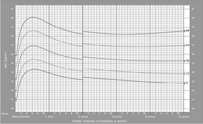
A dieta e lipidograma.
B atividade física e ECG.
C dieta e atividade física.
D lipidograma e ECG.
Questão 1376 · Diagnóstico · Pediatria · Tratamento · 4000181740Criança de 3 anos foi levada à Unidade Básica de Saúde por apresentar tosse produtiva, redução de apetite e emagrecimento há um mês. Recebeu amoxicilina há 15 dias, sem melhora do quadro. A ausculta pulmonar estava normal. A prova tuberculínica solicitada foi de 6 mm, e a radiogra a de tórax apresentava adenomegalia hilar. A mãe referiu que avô foi internado com diagnóstico de tuberculose. Segundo a recomendação do Ministério da Saúde, entre as seguintes condutas, a melhor para essa criança é:
A Repetir a prova tuberculínica e a radiografia de tórax em 8 semanas.
B Tratar Infecção latente pelo Mycobacterium tuberculosis (ILTB) com Isoniazida.
C Tratar tuberculose com Isoniazida, Rifampicina e Pirazinamida.
D Solicitar escarro para pesquisa de BAAR em 4 semanas.
Questão 1377 · Bronquiolite · Pediatria · 4000181724Lactente de 10 meses de idade, com quadro de bronquiolite há 4 dias, apresentou piora da febre e há 2 dias necessitou de intubação. Radiogra a de tórax evidenciou opacidade em base de hemitórax esquerdo, realizado o diagnóstico de pneumonia e introduzido antibioticoterapia. Puncionado acesso venoso central em veia subclávia esquerda. Hoje pela manhã, apresentou piora do padrão respiratório, com queda da saturação do oxigênio ao oxímetro para 85% e capnogra a normal. Encontra-se corada, hidratada, febril. Cânula orotraqueal 4,0 com cu , xada em 16 cm no lábio superior com vapor exalado evidente. BRNF sem sopros com FC: 138 bpm. Expansibilidade torácica reduzida em hemitórax esquerdo. Percussão torácica com som claro pulmonar à direita e maciço à esquerda. Murmúrio vesicular presente à direita com sibilos e expiração prolongada; murmúrio vesicular abolido à esquerda. Abdome globoso, ácido, sem visceromegalias. Perfusão periférica 1,5 segundos. Pulsos presentes normais. A causa de descompensação ventilatória mais provável para este caso, dentre as abaixo, é
A derrame pleural.
B rolha na cânula traqueal.
C intubação seletiva.
D pneumotórax.
Questão 1378 · Gastrologia Pediátrica · 4000181723MCS, sexo masculino, seis anos, apresenta história de dor abdominal há quatro meses. A dor ocorre uma vez por semana, na região periumbilical com irradiação para epigástrio, durando de minutos até algumas horas. Mãe refere que a dor não se relaciona com alimentação, cedendo espontaneamente na maioria das vezes. Entretanto, a criança geralmente para com as suas atividades habituais durante os períodos de dor. Apresentou cólicas aos três meses de vida, que sumiram espontaneamente. Nega febre, perda de peso, alterações do hábito intestinal. Exame físico: criança eutró ca, sem alterações. A hipótese diagnóstica mais provável, dentre as abaixo, é
A doença celíaca.
B intolerância a lactose.
C parasitose.
D dor abdominal funcional.
Revisar: possível letra faltando em enunciado
Questão 1379 · Tuberculose Latente · Pediatria · 4000181722Criança de 7 anos de idade é levada a serviço de saúde porque mãe teve diagnóstico de tuberculose pulmonar bacilífera. Está assintomática e radiogra a de tórax é normal, tem carteira vacinal atualizada. Prova tuberculínica de 7 mm. Entre as opções abaixo, a conduta mais apropriada para este paciente é
A colher escarro induzido.
B repetir radiografia de tórax em três meses.
C tratar infecção latente pelo
D tratar tuberculose ativa.
Questão 1380 · Quadro clínico da anemia f alcif orme · Pediatria · 4000181721Felipe, dois anos, é levado para atendimento médico devido a um quadro súbito da palidez, irritabilidade e dor abdominal. Há três dias apresenta quadro de tosse e coriza. Hoje pela manhã apresentou febre de 38 °C, fazendo uso de dipirona pela primeira vez. Exame físico: regular estado geral, mas brinca com o médico, afebril, palidez importante, baço palpável a 4 cm do rebordo costal esquerdo, fígado palpável a 1 cm do rebordo costal direito, PA: 100 mmHg × 60 mmHg e FC: 140 bpm. Mãe trouxe hemograma demonstrando anemia normocítica normocrômica, reticulocitose, plaquetopenia e leucocitose. O esfregaço de sangue periférico evidenciou células em alvo, dacriócitos, eritroblastos, esquisócitos, corpos de Howell-Jolly e pontilhados basófilos. Entre as seguintes hipóteses diagnósticas para este paciente, a mais provável é:
A Leucemia Linfoide Aguda.
B Anemia Falciforme.
C Deficiência de G6PD.
D Anemia Hemolítica Autoimune.
Questão 1381 · Miocardite · Insuf iciência cardíaca pediátrica · Pediatria · 4000181719Lactente 4 meses de idade, previamente hígido, há 1 semana apresentou quadro de coriza, tosse e febre baixa. Hoje com di culdade para mamar, fazendo pausas, parecendo cansado. Ao exame físico, REG, agitado, palidez leve, hidratado, anictérico, acianótico, T: 36 °C. FR: 60 ipm, SatO2: 93% em ar ambiente. Ausculta cardíaca com bulhas rítmicas normofonéticas em 2 tempos sem sopros. FC: 162 bpm, PA: 90 × 40 mmHg, pulsos periféricos nos, tempo de enchimento capilar de 3 segundos; ausculta pulmonar com estertores em ambas as bases, tiragem subdiafragmática leve. Abdome globoso, ácido, indolor, fígado 4 cm RCD, baço não palpável. A hipótese diagnóstica mais provável para este paciente, dentre as seguintes, é:
A bronquiolite.
B pneumonia.
C choque séptico.
D miocardite.
Questão 1382 · Recepção do neonato com boa vitalidade · 4000181718Neonato de 40 semanas nasceu de parto cesáreo por alteração na cardiotocogra a e líquido amniótico meconial bem espesso. Apresenta choro forte, tônus muscular em exão e boa vitalidade. Dentre as seguintes condutas, a melhor neste caso é
A realização dos passos iniciais na mesa de reanimação com aspiração de vias aéreas superiores.
B laringoscopia sob visualização direta imediata seguida de aspiração traqueal.
C aspiração das vias aéreas no momento do desprendimento do polo cefálico.
D clampeamento tardio do cordão umbilical e oferecer os primeiros cuidados junto à mãe.
Questão 1383 · Pediatria · Marcos Importantes · 4000181717Uma criança do sexo masculino, com 11 meses de idade, é avaliada quanto ao seu desenvolvimento em consulta de rotina. A mãe pergunta ao pediatra se a criança está com o desenvolvimento adequado. Considerando que a criança já atingiu os marcos do desenvolvimento esperados em idades anteriores, neste momento, para que esta criança seja considerada como tendo seu desenvolvimento normal, espera-se que ela
A mostre o que quer; empilhe três blocos e ande sem apoio.
B imite gestos; coloque blocos na caneca e fique parada em um pé só.
C imite gestos; faça pinça e ande com apoio.
D mostre o que quer; coloque blocos na caneca e ande sem apoio.
Questão 1384 · Avaliação do Crescimento · Pediatria · 4000181716A mãe de um menino de 4 anos de idade, leva-o à consulta, porque acha que ele é muito baixo. O paciente nasceu a termo, com peso de 3.200 g e comprimento de 49 cm. Foi amamentado até os 9 meses de idade e sempre comeu pouco. A mãe refere que é uma criança hígida, sem patologias graves ou internações anteriores. É esperto, tem bom desenvolvimento neuropsicomotor para a idade e gosta de brincadeiras como pega-pega e esconde-esconde. A mãe refere que apresentou a menarca aos 12 anos de idade e mede 1,58 m; o pai entrou em puberdade na mesma época que os amigos, e mede 1,73 m. Recuperando as medidas anteriores, anotadas na caderneta da criança, observa-se que a criança mantém uma curva de IMC adequada para idade, enquanto o comprimento/estatura para a idade apresenta o seguinte gráfico. Comprimento/estatura por idade MENINOS Do nascimento aos 5 anos (escores-Z) (WHO Child Growth Standards) Entre as condutas apresentadas, a melhor neste caso é:
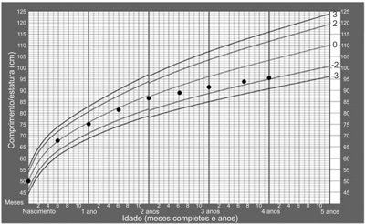
A Manter o paciente em observação, com retornos mensais para acompanhar o crescimento.
B Iniciar a investigação para déficit de crescimento, com o cálculo da velocidade de crescimento e a idade óssea.
C Aguardar até a puberdade, sendo a principal hipótese, o atraso constitucional do crescimento.
D Tranquilizar a família, uma vez que o diagnóstico mais provável é atraso constitucional do crescimento.
Questão 1385 · Citomegalovírus · 4000181715Primigesta, 15 anos, com pré-natal tardio, dá à luz um recém-nascido com 38 semanas e peso de 1.894 g. Ao exame na sala de parto observou-se hepatoesplenomegalia, petéquias e púrpuras por todo corpo. A criança evoluiu com icterícia precoce e o ultrassom transfontanela indicou calci cações periventriculares. Entre as seguintes hipóteses diagnósticas, a mais provável para este recém-nascido é
A infecção pelo vírus Zika.
B infecção pelo citomegalovírus.
C toxoplasmose congênita.
D sífilis congênita.
Questão 1386 · Seguimento ambulatorial · 4000181714Lactente do sexo masculino de 3 meses de idade chega para consulta de rotina na Unidade Básica de Saúde. A mãe realizou prénatal adequado, sendo diagnosticada com sí lis primária no 6o mês de gestação; foi medicada com benzilpenicilina benzatina 2,4 milhões UI, intramuscular, dose única. A criança nasceu a termo, de parto vaginal, com peso de 3.050 g, comprimento de 50 cm e exame clínico normal. Na maternidade, o VDRL materno foi de 1:4 e do recém-nascido foi de 1:2. Hemograma, TGO, TGP, radiogra a de ossos longos e torácica e análise liquórica da criança não apresentaram alterações. Recebeu alta hospitalar sem nenhum tratamento medicamentoso dirigido à sí lis. Na consulta ambulatorial realizada no 1o mês de vida, foi solicitado VDRL cujo resultado foi de 1:1. De acordo com o Protocolo Clínico para Sí lis Congênita do Ministério da Saúde, nesta consulta, o médico deverá
A encerrar seguimento laboratorial.
B solicitar exame de VDRL.
C prescrever penicilina benzatina.
D pedir Teste Treponêmico.
Questão 1387 · Plano B · 4000181713Lactente do sexo feminino de 12 meses de idade, previamente hígida, chega à Unidade Básica de Saúde com quadro de febre e diarreia há um dia. Apresentou oito episódios de eliminação de fezes líquidas em grande quantidade, sem sangue ou muco. Ao exame clínico, apresenta-se em regular estado geral, alerta, choro sem lágrima, boca e língua secas, pulsos cheios, enchimento capilar de 2 segundos e Sinal da Prega desaparecendo rapidamente. Seu peso atual é de 10 kg. Segundo as orientações do Ministério da Saúde, neste momento, dentre as condutas propostas, a mais adequada para a reidratação da criança deve ser administração de:
A 500 a 1.000 mL de solução de reidratação oral no período de 4 a 6 horas.
B 100 a 200 mL de solução de reidratação oral após cada evacuação, no domicílio.
C 200 mL de Soro Fisiológico 0,9% endovenoso durante 30 minutos.
D 100 a 200 mL de solução de reidratação oral no período de 2 horas.
Questão 1388 · Pediatria · Investigação por imagem · 4000181712Menina de sete meses de idade apresenta infecção urinária acompanhada de febre com queda do estado geral. A bactéria isolada foi E.coli sensível a todos os antimicrobianos testados, tratada inicialmente com ceftriaxona e posteriormente com cefalexina, com boa resposta clínica e laboratorial. Entre as condutas seguintes, a melhor para este caso é
A realizar cintilografia renal.
B coletar urocultura trimestralmente por um ano.
C realizar ultrassonografia de vias urinárias.
D prescrever antibioticoprofilaxia por um ano.
Questão 1389 · Puerpério f isiológico · Amamentação Aleitamento Materno · Obstetrícia · 4000181654Para bloqueio imediato da produção de leite em puérpera que tem contraindicação à amamentação, qual é a medicação e a dose de escolha?
A Cabergolina 0,5 mg/ 2 comprimidos em dose única.
B Cabergolina 0,25 mg/ de 12 em 12 horas, por 4 dias.
C Cabergolina 0,25 mg/ 2 comprimidos uma vez ao dia por 3 dias.
D Bromocriptina 2,5 mg/ em dose única.
E Bromocriptina 2,5 mg/ 2 comprimidos por dia durante dois dias.
Questão 1390 · Bronquiolite · 4000181638Um bebê de 6 meses é levado ao hospital por tosse, cansaço para respirar e respiração mais “rápida”. Nega ter tido febre, mas teve, logo antes do quadro atual, coriza leve e um pouco de obstrução nasal. Ao exame físico, o paciente apresenta taquipneia, retrações subcostais discretas e sibilos difusos à ausculta. Com base no diagnóstico provável de bronquiolite viral aguda (BVA), informe se é verdadeiro (V) ou falso (F) o que se afirma a seguir e assinale a alternativa com a sequência correta. ( ) A ausência de febre não é compatível com o diagnóstico de BVA. ( ) O aumento da frequência respiratória é um sinal importante e traduz a resposta do organismo ao acometimento pulmonar pelo agente infeccioso, em uma tentativa de compensar os mecanismos geradores de prejuízo na mecânica pulmonar e na troca gasosa. ( ) Crepitações inspiratórias disseminadas por todos os campos pulmonares não ocorrem na BVA e, se presentes, indicam diagnóstico alternativo. ( ) A radiogra a de tórax pode ser útil nos casos graves, e os principais achados são hiperinsu ação torácica difusa, hipertransparência, reti cação do diafragma e até broncograma aéreo com um in ltrado de padrão intersticial. ( ) Na grande maioria dos pacientes, a evolução é benigna, e o processo evolui para a cura sem a necessidade de intervenção.
A F – V – V – V – V.
B V – V – V – F – V.
C F – F – F – F – F.
D F – V – F – V – V.
E V – F – V – V – F.
Questão 1391 · Sopro na inf ância · 4000181637Uma criança em idade escolar é levada para consulta de rotina. Ela fazia acompanhamento em outra cidade e vem, hoje, para a primeira consulta com você. Ao exame físico, você detecta um sopro cardíaco. Qual das seguintes características indica se tratar de um sopro patológico?
A Sopro acentuado por quadro febril.
B Ausência de irradiação do sopro.
C Desaparecimento ou diminuição do sopro com a mudança de decúbito.
D Presença de frêmitos.
E Sopro localizado em área pequena e bem definida
Questão 1392 · Cataratas Secundárias · Pediatria · 4000181635Das opções a seguir, qual cita uma das causas metabólicas mais frequentes de catarata na população pediátrica?
A Hipercalcemia.
B Hipoandrogenismo.
C Hipertireoidismo.
D Hiponatremia.
E Hipoglicemia.
Questão 1393 · Pediatria · DDS46XX hiperplasia adrenal congênita · 4000181634Na Hiperplasia congênita das suprarrenais por deficiência da 21-hidroxilase, ocorre
A aumento exagerado da produção de cortisol, sem alterar os níveis de aldosterona.
B deficiência de 17-hidroxiprogesterona, com aumento da produção dos androgênios suprarrenais, exceto de androstenediona e testosterona.
C aumento do cortisol, com retroalimentação negativa deficiente do cortisol na hipófise e no hipotálamo, seguida por grave redução de hormônio liberador de corticotrofina e hormônio adrenocorticotrófico.
D hiperplasia das glândulas por redução dos níveis de hormônio liberador de corticotrofina e de hormônio adrenocorticotrófico.
E deficiência da produção de cortisol e, em 75% dos pacientes, deficiência da produção de aldosterona.
Questão 1394 · Pediatria · Púrpura · 4000181630Você está atendendo um paciente com quadro de púrpura palpável, dor abdominal e artralgia. Sua suspeita inicial é de Púrpura de Henoch-Schönlein. Sobre esse diagnóstico, assinale a alternativa correta.
A A púrpura palpável é um achado frequente nos pacientes acometidos, mas não obrigatório.
B Manifestações gastrointestinais são bastante incomuns e, quando presentes, são leves e autolimitadas.
C A doença não acomete os rins.
D A artrite aguda é um critério obrigatório para o diagnóstico, geralmente incapacitante, aditiva e de pequenas articulações.
E Pode ser primária ou desencadeada por infecções virais, bacterianas, alimentos, vacinas, medicamentos e picadas de insetos.
Questão 1395 · Respondividade · Condutas · 4000181629Você está de férias, na praia, quando se depara com um afogamento. A vítima está desacordada, parece ter 16 anos, aproximadamente, e está sendo retirada da água. Ela é colocada na areia, em decúbito dorsal, e você vai prestar o atendimento inicial. Uma ambulância já foi chamada e chegará em poucos minutos. Das alternativas a seguir, qual deve ser a sua próxima atitude?
A Estabilização de cervical.
B Ventilação de resgate.
C Posicionar o paciente em decúbito lateral.
D Manobra de Heimlich.
E Compressões abdominais.
Questão 1396 · Rubéola Congênita · 4000181627Sobre a rubéola congênita, assinale a alternativa correta.
A Perda auditiva é a manifestação mais comum e usualmente é condutiva bilateral, e a severidade varia de moderada a grave, com progressão ao longo do tempo.
B Cerca de 50% apresentam algum tipo de defeito cardíaco estrutural, sendo mais comuns os defeitos de septo cardíaco.
C O risco de transmissão materno-fetal é maior nas primeiras 10 semanas de gestação, e o risco de ocorrer malformações prolonga-se até a 18ª e a 20ª semana.
D As manifestações tardias de diabete melito e das patologias da tireoide são bastante comuns, afetando mais de 1/3 dos casos até a adolescência.
E O uso de imunoglobulina para tratamento da rubéola materna garante proteção contra a infecção do feto.
Questão 1397 · Aspectos Clínicos Quadro clínico e Diagnóstico · Pediatria · 4000181625Um menino de 3 anos apresenta quadro febril há 6 dias e é levado para avaliação. Durante a consulta, são identi cadas outras alterações: exantema polimorfo difuso, conjuntivite sem exsudato, mucosite oral, edema distal dos membros e adenomegalia cervical unilateral. Suspeitando-se de Doença de Kawasaki, qual dos sinais ou sintomas apresentados pelo paciente é considerado o critério mandatório para o diagnóstico?
A Febre.
B Exantema.
C Conjuntivite.
D Mucosite.
E Edema distal.
Questão 1398 · Tratamento Complicações · Pediatria · 4000181623Uma criança em idade escolar está em antibioticoterapia, há 48 horas, por pneumonia bacteriana. Ela é levada ao hospital para reavaliação, pois não teve melhora da curva térmica, está prostrada e com perda de apetite. Ao exame físico, apresenta diminuição do murmúrio vesicular em base esquerda e tem bom padrão respiratório, apesar de manter uma posição antálgica em escoliose. Qual, entre as seguintes, é a conduta mais indicada no momento?
A Realizar radiografia de tórax.
B Trocar antibiótico e reavaliar em 48 a 72 horas.
C Manter antibiótico e aguardar completar 72 horas de tratamento para uma reavaliação mais adequada.
D Realizar tomografia de tórax com contraste.
E Associar um segundo antibiótico ao esquema inicial, para cobertura de germes atípicos, e reavaliar em 48 horas.
Questão 1399 · Vacina Tríplice Viral · 4000181622Em relação à vacina tríplice viral, oferecida pelo Programa Nacional de Imunizações, assinale a alternativa correta.
A A dose zero, dada em situação epidemiológica de risco para sarampo ou rubéola, não é considerada válida para a cobertura vacinal de rotina.
B É contraindicada para gestantes, exceto em situações de surto de sarampo, caxumba ou rubéola.
C É contraindicada para crianças abaixo dos 12 meses de idade, mesmo em situações de surto de sarampo, caxumba ou rubéola.
D Mulheres em idade fértil devem evitar a gravidez até pelo menos 1 ano após a vacinação.
E Pessoas comprovadamente portadoras de alergia à proteína do leite de vaca não podem receber vacina tríplice viral.
Questão 1400 · Quadro Clínico · Pediatria · 4000181614Em relação à febre reumática, é correto afirmar que
A a coreia de Sydenham é considerada um critério maior para o diagnóstico, sendo muito frequente na apresentação inicial (80-90%).
B a dor articular (artralgia) é considerada um critério menor para o diagnóstico.
C a presença de febre baixa é essencial para o diagnóstico.
D a faixa etária mais acometida é de 40 – 50 anos.
E o uso de corticosteroides está indicado na profilaxia da febre reumática.
Questão 1401 · Principais cardiopatias congênitas · Cardiologia · 4000181601Sobre o fenômeno (ou síndrome) de Eisenmenger, assinale a alternativa correta.
A É muito comum nos casos de infarto agudo do miocárdio.
B Uma das principais características clínicas é a cianose de extremidades.
C É comum nos casos de comunicação interventricular, sendo caracterizado pelo
D Foi descrito por Frederick Eisenmenger em 1973 em estudo publicado após análise de 52 casos de cardiopatias congênitas cianóticas.
E O tratamento com inibidores da enzima conversora de angiotensina (iECA) está indicado.
Questão 1402 · Reumatologia · Febre Reumática FR · 4000181540A Febre Reumática Aguda (FRA) é uma doença multissistêmica resultante de uma reação autoimune. A maioria das manifestações regridem completamente, mas a lesão valvar cardíaca (Doença Cardíaca Reumática – DCR) pode persistir após o desaparecimento dos outros achados. Analise as assertivas relacionadas à FRA e DCR. I. FRA é uma doença que acomete principalmente crianças entre 4 e 7 anos de idade. II. FRA é causada exclusivamente por infecção do trato respiratório superior com estreptococos do grupo A. III. No desenvolvimento da DCR podem ser afetados o endocárdio, miocárdio e pericárdio, ocorrendo em até 60% dos pacientes de FRA. IV. A lesão valvar é o principal marco da cardite reumática, sendo a valva aórtica a mais afetada. Escolha entre as alternativas abaixo, as assertivas corretas.
A I e II apenas.
B I e IV apenas.
C II e III apenas.
D I, II e III apenas.
E IV apenas.
Questão 1403 · Raiva · Imunoglobulina contra raiva · Vacina contra raiva · 4000181499Escolar de 8 anos foi mordido na mão por cão da família que vive exclusivamente no domicílio. Animal sadio e vacinado, passível de observação. Sobre a profilaxia antirrábica assinale a alternativa correta para o caso.
A Um período de observação de 10 dias para o animal é suficiente para eliminar a possibilidade de raiva, não necessitando nenhuma profilaxia específica para a criança.
B Caso o animal desapareça após o sétimo dia não deve ser aplicada nenhuma profilaxia por não haver mais eficácia comprovada.
C Fazer uma dose de vacina antirrábica nos dias 1 e 3 e caso a animal continue assintomático, suspender a aplicação.
D Por ter sido mordido na mão iniciar vacina antirrábica e imunoglobulina antirrábica e observar o animal por 7 dias.
E Iniciar o esquema profilático com soro e 5 doses de vacina nos dias 0, 3, 7, 14 e 28.
Questão 1404 · Pediatria · Choque Cardiogênico · 4000181498As manifestações de miocardite variam da ausência de sintomas ou doença generalizada não especí ca ao choque cardiogênico agudo e à morte súbita. Sobre a miocardite na infância, analise as assertivas abaixo. I. – A ressonância magnética cardíaca é a modalidade de imagem padrão para o diagnóstico. II. – Há dados convincentes de que a imunomodulação com corticosteroides melhora a função cardíaca. III. – O prognóstico da miocardite aguda sintomática é pior em neonatos. Sobre esta situação selecione a opção correta.
A As afirmativas I e II são verdadeiras. A afirmativa III é falsa.
B As afirmativas I e III são verdadeiras. A afirmativa II é falsa.
C As afirmativas II e III são verdadeiras. A afirmativa I é falsa.
D As afirmativas I, II e III são verdadeiras.
E As afirmativas I, II e III são falsas.
Revisar: possível letra faltando em enunciado
Questão 1405 · Síndrome do Choque Tóxico · Pediatria · 4000181497Pré escolar de 3 anos morador de área rural, com queimadura em 1% da superfície corporal por contato com superfície aquecida, no terceiro dia subitamente apresenta febre alta, vômitos e diarreia, acompanhada de dor de garganta, cefaleia e mialgias. Área queimada sem sinais de secreção purulenta. Um exantema macular eritematoso difuso surge dentro de 24 horas. Evolui com alteração do nível de consciência e oligúria. O diagnóstico mais provável é
A tétano.
B dengue.
C leptospirose.
D sepse de foco abdominal.
E síndrome do choque tóxico.
Questão 1406 · Pediatria · Tratamento da Crise Aguda · 4000181496Escolar de 7 anos em acompanhamento no ambulatório de pneumologia por asma brônquica apresenta-se no departamento de emergência com episódio de exacerbação da asma. Foi realizado na chegada suplementação de oxigênio, inalação de beta-agonista a cada 20 minutos por uma hora e administração de corticoide oral. Após a primeira hora mantém-se dispneico e com uso de musculatura acessória, saturando 90% na oximetria de pulso. Foi optado por internação devido à gravidade do quadro. No manejo hospitalar deste paciente analise as assertivas abaixo e a relação entre elas. I – A sioterapia torácica e a administração de mucolíticos não são recomendadas durante o período agudos das exacerbações da asma. PORQUE II. – Podem desencadear broncoconstrição grave da via respiratória. A respeito destas asserções, assinale a opção correta.
A As asserções I e II são proposições verdadeiras, e a II é uma justificativa da I.
B As asserções I e II são proposições verdadeiras, mas a II não é uma justificativa da I.
C A asserção I é uma proposição verdadeira, e a II é uma proposição falsa.
D A asserção I é uma proposição falsa, e a II é uma proposição verdadeira.
E As asserções I e II são proposições falsas.
Questão 1407 · Pediatria · Tratamento · 4000181495Lactente de 9 meses vem para consulta com história de febre há 3 dias, tosse seca, recusa alimentar e di culdade respiratória desde o dia anterior. Ao exame prostrado, taquipneico, na ausculta crepitações inspiratórias disseminadas por todos os campos pulmonares, sibilos esparsos. Raio X de tórax com sinais de hiperinsu ação bilateral, reti cação diafragmática e in ltrado de padrão intersticial. No manejo deste paciente analise as assertivas abaixo e a relação entre elas. I. – A terapia com cateter nasal de alto uxo pode reduzir a necessidade de intubação em pacientes com iminente insuficiência respiratória. PORQUE II. – Os ensaios clínicos não conseguiram demonstrar um benefício dos broncodilatadores nesta doença. A respeito destas asserções, assinale a opção correta.
A As asserções I e II são proposições verdadeiras, e a II é uma justificativa da I.
B As asserções I e II são proposições verdadeiras, mas a II não é uma justificativa da I.
C A asserção I é uma proposição verdadeira, e a II é uma proposição falsa.
D A asserção I é uma proposição falsa, e a II é uma proposição verdadeira.
E As asserções I e II são proposições falsas.
Questão 1408 · Quimioprof ilaxia · Pediatria · Tratamento · 4000181494Lactente de um ano apresenta-se na emergência com febre, anorexia, irritado e taquicárdico. Exame físico sem alteração significativa. Você opta em colher um líquor que se apresenta com 1.200 leucócitos, proteína de 200mg/dl e glicorraquia de 20mg/dl. Na bacterioscopia se evidenciam diplococos gram negativos em abundância. Sobre este quadro analise as assertivas abaixo. I. – O tratamento antimicrobiano para esta situação pode seguramente ser realizado por 5 dias. II – A utilização de corticosteroides apresenta neste caso um evidente benefício. III. – A quimiopro laxia é recomendada para todos os contatos próximos do paciente, independentemente da idade ou do estado de imunização. Sobre esta situação selecione a opção correta.
A As afirmativas I e II são verdadeiras. A afirmativa III é falsa.
B As afirmativas I e III são verdadeiras. A afirmativa II é falsa.
C As afirmativas II e III são verdadeiras. A afirmativa I é falsa.
D As afirmativas I, II e III são verdadeiras.
E As afirmativas I, II e III são falsas.
Questão 1409 · Pediatria · 4000181490O traumatismo cranioencefálico (TCE) é a principal causa de morte por trauma na população pediátrica. O TCE é considerado grave quando a pontuação da escala de coma de Glasgow soma entre 3 e 8 pontos. No manejo do TCE grave, analise as assertivas abaixo. I. – A monitorização da pressão intracraniana deve ser uma opção, independentemente dos achados tomográficos. II. – A hiperventilação profilática leve demonstra um efeito protetor melhorando o resultado final. III. – A solução salina hipertônica a 3% é efetiva no controle da hipertensão intracraniana, com melhores evidências que o uso do manitol. Sobre esta situação selecione a opção correta.
A As afirmativas I e II são verdadeiras. A afirmativa III é falsa.
B As afirmativas I e III são verdadeiras. A afirmativa II é falsa.
C As afirmativas II e III são verdadeiras. A afirmativa I é falsa.
D As afirmativas I, II e III são verdadeiras.
E As afirmativas I, II e III são falsas.
Questão 1410 · Ortopedia · Apresentação Clínica · 4000181489Os maus tratos de crianças é um problema disseminado em todo o mundo, com consequências sociais e de saúde física e mental a curto e longo prazo para a criança, a família e a sociedade em geral. Em relação ao abuso físico de crianças, analise as assertivas abaixo. I. – O trauma abdominal abusivo tem alta morbidade e geralmente acompanha-se de hematoma visível da parede abdominal. II. – Hematomas subdurais extensos sugerem fortemente um traumatismo craniano abusivo. III – Queimaduras com delineação clara entre a pele queimada e a saudável, com ausência de respingos, falam fortemente a favor de queimadura intencional. Sobre esta situação selecione a opção correta.
A As afirmativas I e II são verdadeiras. A afirmativa III é falsa.
B As afirmativas I e III são verdadeiras. A afirmativa II é falsa.
C As afirmativas II e III são verdadeiras. A afirmativa I é falsa.
D As afirmativas I, II e III são verdadeiras.
E As afirmativas I, II e III são falsas.
Questão 1411 · Pediatria · 4000181486Adolescente após quadro de infecção viral desenvolve paralisia de membros inferiores e após de membros superiores. Ao exame apresenta paralisia facial periférica, oftalmoplegia, ataxia e arre exia. Líquor com proteína de 200mg/dl, 3 células. Pensando no provável diagnóstico, qual a terapia a ser instituída?
A Plasmaférese.
B Doxiciclina oral.
C Aciclovir endovenoso.
D Imunoglobulina endovenosa.
E Pulsoterapia com corticoides.
Questão 1412 · Quadro Clínico · Pediatria · 4000181485Pré-escolar apresenta episódio súbito de broncoespasmo e hipotensão, após ingestão de amendoim. Nega sintomas anteriores, não apresenta lesão de pele ou mucosa. Sobre esta situação analise as assertivas abaixo. I. – O diagnóstico de anafilaxia é improvável. PORQUE II. – A ausência de lesões cutâneas ou mucosas descarta esta hipótese. A respeito destas asserções, assinale a opção cor reta.
A As asserções I e II são proposições verdadeiras, e a II é uma justificativa da I.
B As asserções I e II são proposições verdadeiras, mas a II não é uma justificativa da I.
C A asserção I é uma proposição verdadeira, e a II é uma proposição falsa.
D A asserção I é uma proposição falsa, e a II é uma proposição verdadeira.
E As asserções I e II são proposições falsas.
Questão 1413 · Hiperbilirrubinemia não f isiológica · 4000181484Recém nascido desenvolve icterícia no primeiro dia de vida, com bilirrubina total de 14mg/dl, com predomínio de bilirrubina indireta. Mãe tipagem sanguínea A- e recém nato B+, Coombs direto positivo, reticulócitos de 8%. Sobre esta situação analise as assertivas abaixo. I. – A incompatibilidade ABO pode ser descartada. PORQUE II. – A presença de Coombs direto positivo não ocorre na incompatibilidade ABO. A respeito destas asserções, assinale a opção correta.
A As asserções I e II são proposições verdadeiras, e a II é uma justificativa da I.
B As asserções I e II são proposições verdadeiras, mas a II não é uma justificativa da I.
C A asserção I é uma proposição verdadeira, e a II é uma proposição falsa.
D A asserção I é uma proposição falsa, e a II é uma proposição verdadeira.
E As asserções I e II são proposições falsas.
Questão 1414 · Aspectos Clínicos Quadro clínico e Diagnóstico · Pediatria · Doença de Kawasaki · 4000181481A doença de Kawasaki é uma vasculite sistêmica que afeta vários órgãos e sistemas. Sobre esta doença analise as alternativas abaixo. I. – A maior parte dos casos ocorre após os 5 anos de idade. II. – Cursa com aumento do número de plaquetas. III. – As aftas orais não fazem parte dos critérios diagnósticos. Sobre esta situação selecione a opção correta.
A As afirmativas I e II são verdadeiras. A afirmativa III é falsa.
B As afirmativas I e III são verdadeiras. A afirmativa II é falsa.
C As afirmativas II e III são verdadeiras. A afirmativa I é falsa.
D As afirmativas I, II e III são verdadeiras.
E As afirmativas I, II e III são falsas.
Questão 1415 · Pediatria · Situações em que há restrições ao aleitamento materno · 4000181415CVA, 25 anos, G1P1A0, primeiro pós-operatório de cesárea, realizada com 39 semanas de gestação, por conta de herpes genital em atividade. Encontra-se em uso de aciclovir, e questiona seu obstetra sobre riscos na amamentação. Sobre amamentação, marque a alternativa correta.
A São condições relacionadas à mãe que contraindicam a amamentação: ser portadora do vírus HIV, ter tuberculose ativa não tratada e estar na vigência de infecção perinatal por varicela.
B A prática do desmame bilateral intermitente em mamas túrgidas, a hidratação materna vigorosa e o uso de corticoterapia tópica são medidas que previnem a ocorrência de mastite puerperal.
C No caso da paciente acima, a amamentação não deve ser descontinuada devido ao uso de aciclovir. Outras drogas que não contraindicam a amamentação são: sertralina, losartana e metotrexato.
D Podemos considerar a diminuição do risco de estenose hipertrófica do piloro, um melhor aporte nutricional e o fortalecimento da imunidade, como sendo benefícios da amamentação para o recém-nascido.
Questão 1416 · Diagnóstico · Pediatria · Tratamento · 4000181403Isadora, de oito anos, vem acompanhada da avó para a consulta. A avó relata inapetência, perda ponderal progressiva, tosse seca, palidez e febre não aferida há quatro meses. Refere ainda que não trouxe a neta antes por di culdade de locomoção à UBS. Quando questionada a respeito dos pais de Isadora, relata que o pai está preso e que a mãe faleceu há um ano por tuberculose. Ao exame físico, você nota quadro de desnutrição grave e ausculta pulmonar abolida em ápice à esquerda. Assinale a alternativa com a conduta a ser tomada.
A Solicitar baciloscopia de escarro e radiografia de tórax para diagnóstico de tuberculose por sistema de escore.
B Solicitar baciloscopia de escarro e prova tuberculínica para diagnóstico de tuberculose por sistema de escore.
C Solicitar baciloscopia de escarro, radiografia de tórax e prova tuberculínica para diagnóstico de tuberculose por sistema de escore.
D Estabelecer o possível diagnóstico clínico-epidemiológico de tuberculose pelo sistema de escore e iniciar tratamento para tuberculose corrigido para o peso da paciente.
Questão 1417 · Pediatria · Fatores de Proteção · 4000181389A mãe de um bebê recém-nascido chega a ita ao consultório com preocupações acerca do sono de seu lho. Assinale a alternativa correta em relação aos cuidados e orientações acerca do sono de bebê recém- nascido.
A Pode bem dormir de barriga para baixo.
B Pode usar travesseiros e cobertores, para conforto.
C Pode dormir no berço ou na rede ao lado da cama dos pais.
D Pode dormir em ambiente iluminado com exposição ao barulho normal da casa durante o dia e a noite.
Questão 1418 · DNPM Desenvolvimento NeuroPsicoMotor · Pediatria · 4000181388Uma senhora vem à consulta de rotina e deseja saber do médico algumas das características de desenvolvimento normais para seu filho de 15 meses de idade. Assinale a alternativa correta.
A É precária a demonstração de afeto por pessoas conhecidas.
B Nessa idade, a criança já regulou os acessos de raiva quando frustrada.
C A criança ainda não compartilha, com os outros objetos, que considera interessante.
D A criança já é capaz de explorar sozinha o ambiente em que está na presença vigilante dos pais.
Questão 1419 · Síndrome do Lactente Sibilante Bebê chiador · Pediatria · 4000181387A mãe de uma criança de 12 meses de idade vem ao ambulatório porque sua lha já teve quatro crises de sibilância no último semestre. Ela pergunta ao médico qual a gravidade do problema. Quais sinais de alarme devem ser investigados para identificar a presença ou não de doenças subjacentes de maior gravidade?
A Crise que iniciaram após episódio de bronquiolite que necessitou do uso prolongado de oxigênio.
B Crises de início tardio, no segundo semestre de vida, após exposição à fumaça de cigarro.
C Crises de tosse seca noturna que podem estar relacionadas com asma atópica.
D Crises de sibilância recorrente responsiva a broncodilatadores.
Questão 1420 · Higiene oral · 4000181386Uma criança é trazida ao posto de saúde, com sua mãe relatando que ele aumentou bastante a salivação (baba muito), está um pouco irritado e com coceira na gengiva. Ao exame, observa-se erupção de dois dentes incisivos inferiores. Na maioria das vezes, qual a idade desta criança?
A 3 meses.
B 4 meses.
C 6 meses.
D 8 meses
Questão 1421 · Prognóstico e Evolução · Endocrinologia · 4000181385Uma criança de 3 anos de idade chega ao ambulatório com queixa de dores e inchaço nos joelhos e tornozelos há cerca de 6 meses. Teve episódios de febre baixa no período. Já se submeteu a vários tratamentos com frequentes recaídas. Que outros sinais ou sintomas clínicos podem indicar pior prognóstico?
A Uveíte anterior.
B Esplenomegalia.
C Acometimento dos quadris.
D Nódulos reumatoides, em áreas de pressão.
Questão 1422 · Alimentação do lactente · 4000181384A mãe de uma criança de 2 anos de idade vem à consulta preocupada com os hábitos alimentares de seu lho. Qual das alternativas é a correta em relação às orientações para hábitos alimentares saudáveis de crianças dessa faixa de idade?
A Pode-se oferecer refrigerantes, sucos de caixinha e alguns tipos de balas e doces.
B Pode-se oferecer líquidos durante a refeição, como água, sucos; evitar refrigerantes.
C Fazer a adequação do prato de acordo com a necessidade da criança, evitando deixar a criança repetir.
D A sobremesa pode ser oferecida como parte da refeição, não como recompensa; deve-se dar preferência às frutas.
Questão 1423 · Pediatria · Amamentação Aleitamento Materno · 4000181383Uma criança de 3 meses de vida comparece à consulta de rotina e a mãe queixa-se que o bebê está "abusando o peito" pois tem mamado pouco tempo (menos de 10 minutos/vez), cerca de 8 vezes ao dia. Apresenta diurese de 6-8 vezes ao dia, evacua 1 vez a cada dois dias e ganhou 25 gramas de peso/dia e 2 cm no perímetro cefálico no último mês. Apresenta sorriso social e sustenta a cabeça. Qual a melhor orientação para esta criança?
A Agendar consulta de puericultura de rotina já que criança está eutrófica.
B Orientar ordenha de leite e ofertar ao final da mamada, com reavaliação em uma semana
C Introduzir fórmula infantil como suplementação após a mamada, reavaliando a criança em 15 dias
D Introduzir novos alimentos (sucos e papinha de frutas), manter o aleitamento materno e solicitar exames (hemograma e urina tipo 1).
Questão 1424 · Pediatria · Escolha do Fármaco Antiepiléptico · 4000181382Lactente, 1 ano, previamente hígido, é trazido à emergência pelos pais devido à crise convulsiva tônico- clônica generalizada. Genitora relata que a criança iniciou a crise logo após despertar, aparentemente, sem nenhum fator desencadeante. Nega febre, trauma, uso de medicações ou histórico de infecção recente. À admissão, paciente apresenta movimentos tônico-clônicos de membros e sialorreia importante, com os seguintes parâmetros: FC - 140bpm; FR - 40irpm; SatO₂ - 96% (sob máscara de oxigênio); Temperatura axilar - 36,5°C; glicemia capilar - 86 mg/dL. Qual das seguintes alternativas é a farmacoterapia mais apropriada nesse momento?
A Fenitoína, dose: 5mg/Kg, via endovenosa.
B Fenobarbital, dose: 5mg/Kg, via endovenosa.
C Diazepam, dose: 0,5mg/Kg, via intramuscular.
D Midazolam, dose: 0,2mg/Kg, via intramuscular.
Questão 1425 · Tratamento Complicações · Pediatria · 4000181378Pré-escolar, 4 anos, em tratamento ambulatorial de pneumonia, retorna 48 horas após início da antibioticoterapia com amoxicilina, para reavaliação clínica. Mãe relata alguma melhora do apetite, porém persiste com febre. Nega comorbidades. Ao exame: hidratado, FC: 120bpm, FR: 45irpm, sem tiragens, SatO2: 96% em ar ambiente, frêmito tóraco-vocal e murmúrio vesicular diminuídos no hemitórax direito. Qual a conduta mais indicada no momento?
A Manter tratamento ambulatorial, completando esquema antibiótico com amoxicilina.
B Manter tratamento ambulatorial, substituindo esquema antibiótico por amoxicilina-clavulonato.
C Indicar internação hospitalar, solicitar raio X de tórax para avaliar indicação de toracocentese e prescrever ampicilina.
D Indicar internação hospitalar, solicitar raio X de tórax para avaliar indicação de toracentese e prescrever ceftriaxona e oxacilina.
Questão 1426 · Calendário inf antil · 4000181376Um recém-nascido de 35 semanas que nasceu há 7 dias, pesando 1900g, comparece ao posto de saúde para ser imunizado. Qual o melhor esquema a ser orientado neste momento?
A Vacinar com Anti-hepatite B e BCG.
B Vacinar anti-hepatite B e orientar BCG quando completar 2000g
C Adiar ambas as vacinas (Hepatite B e BCG) para quando criança pesar 2500g
D Adiar as vacinas contra a hepatite B e a BCG até criança ter 37 semanas de idade gestacional.
Questão 1427 · Fisiologia do aleitamento materno · Pediatria · 4000181374Puérpera, de parto vaginal, que fez pré-natal sem intercorrências, está no alojamento conjunto com seu lho que nasceu a termo com peso de 3200 g. Ela considera ter leite insu ciente para o lho que chora com frequência. O bebê tem 24 horas de vida, com exame físico normal, evacuou e apresentou duas diureses. Dentre as abaixo citadas, qual a melhor conduta a ser orientada?
A Aleitamento materno em livre demanda com aumento da frequência das mamadas.
B Associar o uso de outro leite após a mamada até que ocorra a apojadura e o bebê aumente a diurese.
C Aleitamento materno com orientação para aumentar o tempo de mamada e pelo menos de 3/3 horas.
D Aleitamento materno e solicitação de exames complementares (hemograma, proteína C reativa, eletrólitos e glicemia)
Revisar: possível letra faltando em enunciado
Questão 1428 · Pediatria · Complicações · 4000181373Adolescente, 12 anos, iniciou quadro de tosse produtiva e descarga nasal amarelada há 2 semanas, evoluindo há 24 horas com febre, cefaleia intensa, vômitos, proptose, dor e edema periorbitário à direita, associado a oftalmoparesia ipsilateral. Qual é a principal hipótese diagnóstica?
A Meningite.
B Pseudotumor cerebral.
C Leucemia mieloide aguda.
D Trombose de seio cavernoso.
Questão 1429 · Icterícia Fisiológica · 4000181372Recém-nascido termo, 6 dias de vida, peso de 3100g, em aleitamento materno exclusivo, vem ao posto de saúde para coleta do teste do pezinho. Sendo observado icterícia Zona 2 de Kramer. Relato de 7 diureses e 6 evacuações nas últimas 24 horas, com fezes amarelas, explosivas e pastosas. Nasceu de parto vaginal, hospitalar, com 3300g, recebendo alta com 30 horas de vida. A mãe fez pré-natal sem intercorrências e tem tipo sanguíneo A+. Qual a melhor conduta para o bebê?
A Internação hospitalar para investigar e tratar a icterícia.
B Manter o aleitamento materno exclusivo e retorno com 1 mês de vida.
C Internação hospitalar para investigação e tratamento do quadro diarreico.
D Solicitar exames ABO, Rh, bilirrubinas e hemograma completo de urgência.
Questão 1430 · Exame f ísico do Recémnascido · 4000181370Recém-nascido a termo, 36 horas de vida, masculino, em aleitamento materno exclusivo, com diurese e evacuação, apresenta o seguinte achado na fralda visto durante o exame físico sem alterações. Conferir figura correspondente com melhor resolução no anexo (FIGURA) Qual a melhor conduta?
A Achado habitual, seguir rotina do alojamento conjunto.
B Iniciar antibiótico e solicitar exames séricos e urinários no alojamento conjunto.
C Suspender o aleitamento materno e prescrever fórmula isenta de proteína de leite de vaca.
D Prescrever vitamina K e solicitar hemograma e coagulograma, transferindo o bebê para berçário.
Questão 1431 · Pediatria · Amamentação Aleitamento Materno · 4000181320Em relação ao aleitamento materno, é correto afirmar que
A por ser considerado fundamental, é considerado uma questão de especialistas pelo SUS.
B já foi considerado mais importante quando não havia leite artifical de boa qualidade.
C é desejável que o aleitamento materno seja o único alimento da criança até os 6 meses de idade.
D que o uso da chupeta interfere positivamente na continuidade do aleitamento materno.
E os estudos mostram que o alimento complementar ao aleitamento materno a partir dos 2 meses de vida aumenta a capacidade imunológica da criança.
Questão 1432 · Reações adversas vacinais · 4000181317Assinale a alternativa correta sobre vacinação.
A O Sistema Nacional de Vigilância Epidemiológica dos Eventos Adversos Pós-Vacinação foi instalado no Brasil com o advento da covid-19.
B Os protocolos e definições sobre os eventos adversos são definidos em cada país, o que dificulta comparações.
C Os efeitos adversos de uma vacina devem ser sempre relatados a hospitais e não em unidades básicas de saúde.
D Evento adverso pós-vacinação (EAPV) é qualquer ocorrência médica indesejada após a vacinação e que tenha relação causal com o uso de uma vacina.
E As vacinas pertencem a um dos grupos de produtos biológicos com excelente perfil de segurança.
Questão 1433 · Tétano · Tétano · Prevenção do tétano acidental · 4000181306Um sepultador do cemitério de uma cidade pequena, de 32 anos de idade, procura a UBS com queixa de lombalgia. A equipe de saúde verifica que sua vacinação contra tétano deve ser regularizada. Assinale a alternativa correta.
A Deve receber reforço de vacina contra difteria, tétano e pertussis (DTP) a cada 5 anos, independentemente de sua situação vacinal.
B Deve necessariamente ter 3 doses da vacina DTP sem necessidade de reforço.
C Se tiver 3 doses da vacina DTP, deve receber reforço apenas no advento de um ferimento.
D Deve tomar 3 doses da vacina contra difteria e tétano (dT) e depois reforço a cada 5 anos.
E Se tiver as 3 doses completas do esquema básico, deve tomar reforço da dT a cada 10 anos.
Questão 1434 · Pediatria · Diagnóstico Nutricional · 4000181300Criança em fase escolar do sexo feminino, com 6 anos de idade, é atendida em uma consulta pediátrica de rotina. Após a antropometria, verifica-se, pela interpretação da curva de crescimento de referência, um peso para idade no escore-z: +2,03, estatura para idade no escore-z: +0,95 e índice de massa corporal no escore- z: +2,08. De acordo com os critérios vigentes do Ministério da Saúde, assinale a adequada classificação nutricional dessa criança.
A Peso adequado para idade e risco para sobrepeso.
B Peso adequado para idade e risco para obesidade.
C Peso elevado para idade e risco de obesidade.
D Peso elevado para idade e sobrepeso.
E Peso elevado para idade e obesidade.
Questão 1435 · Ventilação com pressão positiva · 4000181299Ao atender o nascimento de um bebê, termo, com choro fraco e hipotonia após a extração num parto cesárea, conduz-se a criança ao berço de reanimação, realiza-se a secagem, o aquecimento e o posiconamento em cerca de 30 segundos e avalia-se o recém-nascido que está respirando e com frequência cardíaca, verificada com estetoscópio, de cerca de 80 batimentos/minuto. Sobre os próximos passos da reanimação neonatal, assinale a afirmativa correta.
A Deve-se instalar monitor cardíaco e oxímetro de pulso.
B Deve-se repetir os passos iniciais, aspirando as vias aéreas (boca e nariz).
C Deve-se iniciar ventilação com pressão positiva com balão e máscara, e oxigênio a 60%.
D Deve-se encaminhar a criança para mãe para a amamentação.
E Deve-se prover estímulo tátil na região dorsal do bebê.
Questão 1436 · Pediatria · LaringiteLaringotraqueíte viral crupe · 4000181298Lactente do sexo masculino, com 18 meses de idade e história de tosse e coriza há 3 dias evoluindo com rouquidão e “barulho” ao respirar, segundo a mãe, quando chora e se agita. No exame físico encontra-se em bom estado geral, acianótico, sat O2 96% em ar ambiente, Glasgow 15, leve estridor inspiratório durante o repouso com evidente piora durante choro, MV + bilateral simétrico com alguns raros sibilos, leve retração subdiafragmática e restante do exame físico sem alterações. Diante do quadro, qual o diagnóstico mais provável?
A Epiglotite.
B Laringite viral.
C Bronquiolite.
D Laringite espasmódica.
E Laringomalácia associada à infecção viral de vias aéreas superiores.
Questão 1437 · Fisiologia da Puberdade · Pediatria · 4000181297Uma adolescente com 10 anos e 8 meses é atendida em uma consulta de rotina pediátrica e relata que a menarca ocorreu há 6 meses e que apresenta períodos menstruais mensais de 4 a 5 dias de duração desde então. A classificação maturacional da mama é M4 e dos pelos é P4. No seu histórico, identi ca-se que o broto mamário (M2) foi observado aos 8 anos. Quando se analisa os fatores que in uenciam o desenvolvimento da puberdade em meninas, a a rmativa correta, é:
A Pubarca precoce não se correlaciona com o adiantamento da puberdade.
B Os desreguladores endócrinos têm sido associados a um ritmo mais lento da puberdade.
C A idade da menarca materna é um pobre preditor do início da puberdade e da menarca da filha.
D A obesidade está associada ao adiantamento da puberdade.
E Ter nascido pequena para a idade gestacional está associado à puberdade mais atrasada.
Revisar: possível letra faltando em enunciado
Questão 1438 · Síndrome da Morte Súbita do Lactente · Pediatria · 4000181296Lúcia, mãe de Miguel, um recém-nascido de 21 dias de vida, está muito preocupada com um caso que soube de morte súbita de um bebê pequeno na cidade e pergunta ao médico como evitar esse triste evento. Um grande número de fatores de risco, modi cáveis ou não, já foram correlacionados com a síndrome de morte súbita do lactente. Asinale a afirmativa mais adequada para a orientação de Lúcia.
A “Evite deixar seu filho sozinho chorando no berço e proteja as laterais do berço com almofadas protetoras mais fofas”.
B “Evite fumar perto da criança e coloque o seu filho para dormir sempre de barriga para baixo”.
C “Você pode dormir no mesmo quarto da criança se quiser, mas coloque o seu filho para dormir sempre de barriga para cima”.
D “Fique mais atenta ao sono do seu filho nos dias que ele receber vacinas e coloque seu filho para dormir de lado somente depois de arrotar após a mamada”.
E “Mantenha a amamentação exclusiva e coloque seu filho para dormir sempre de barriga para baixo após ele arrotar”.
Questão 1439 · Pediatria · Estirão · Puberdade · 4000181295Uma adolescente com 12 anos e 6 meses de idade relata que percebeu o início do desenvolvimento mamário há cerca de 4 meses. Sempre foi eutró ca e apresenta asma leve controlada com corticoterapia inalatória em baixas doses há 1 ano. No exame físico apresenta a estatura entre o escore-z -2 e -1 e o IMC entre o escore-z 0 e + 1. Na avaliação da maturação sexual apresenta pequeno disco glandular restrito à região subareolar bilateralmente. Desde seu último atendimento, realizado há 6 meses, a adolescente cresceu 3,5 cm. Assinale a afirmativa correta.
A Sua velocidade de crescimento está compatível com seu estágio puberal.
B O atraso puberal que essa adolescente apresenta possivelmente se correlaciona com o uso prolongado de corticosteroide inalatório.
C A baixa estatura que essa adolescente apresenta possivelmente se correlaciona com o uso prolongado de corticosteroide inalatório.
D Essa adolescente apresentou telarca na idade média em que esse fenômeno atualmente é observado nas adolescentes brasileiras.
E Essa adolescente encontra-se no pico de velocidade de crescimento.
Revisar: possível letra faltando em enunciado
Questão 1440 · Pediatria · Mononucleose Inf ecciosa · 4000181294Um adolescente do sexo feminino, com 14 anos, apresenta- se com diminuição do apetite, aumento de linfonodos cervicais, febre baixa e astenia há 5 dias. Iniciou uso de amoxicilina por apresentar também dor de garganta e discreto exsudato em orofaringe, mas, após 72 horas de uso, não apresentou melhora clínica. Além do mal-estar, apresentou edema palpebral no início do quadro e erupções maculares em tórax e face de aparecimento há cerca de 2 dias. Assinale a melhor conduta.
A Trocar o antibiótico para cefuroxima por via oral.
B Suspender a amoxicilina e aplicar uma dose de ceftriaxone.
C Realizar uma dose de prednisolona por via oral, mantendo a amoxicilina.
D Suspender o antibiótico e administrar analgésicos sintomáticos e repouso.
E Manter a amoxicilina e realizar duas doses diárias de hidroxizina por 3 dias.
Questão 1441 · Pediatria · Ingestão de Corpo Estranho · 4000181293Uma criança em fase pré-escolar, do sexo masculino e com 3 anos de idade, estava brincando com um dispositivo eletrônico e reclamou para a babá, que estava cuidando da casa, que “engoliu um pedaço do brinquedo”. A babá encontrou aberto o dispositivo onde ca a bateria. Na chegada ao pronto atendimento (após 30 minutos do acidente), foi realizada uma radiogra a que evidenciou em topogra a de esôfago uma imagem arredondada com “duplo halo” em duas incidências. A última refeição da criança havia sido há cerca de 1 hora e ela aponta para seu pescoço evidenciando algum desconforto pela presença do corpo estranho. Assinale a conduta mais adequada.
A Realizar tomografia computadorizada.
B Remoção imediata por endoscopia digestiva.
C Remoção após completar 8 horas de jejum.
D Conduta expectante, com repetição da radiografia em 24h.
E Administração de mel (6 doses de 10ml) para reavaliação em 24h.
Revisar: possível letra faltando em enunciado
Questão 1442 · Dengue · Pediatria · 4000181292Criança, do sexo masculino, em fase pré-escolar, com 4 anos de idade, foi levado para atendimento na emergência devido a queixas de febre, perda do apetite, dores nas pernas, cefaleia e vômitos há 72 horas. No dia desse atendimento apresentou manchas na pele, dor abdominal e epistaxe. No exame, encontrava-se hidratado, eupneico, corado, orientado, com exantema maculopapular em tronco e membros e algumas petéquias, além de epistaxe. A palpação do abdome evidenciou dor difusa e intensa sem sinais de irritação peritoneal tendo o restante do exame físico normal. Assinale a afirmativa correta.
A Os exames laboratoriais obrigatórios para avaliação desse paciente são hemograma completo, dosagem de albumina sérica e transaminases.
B A pesquisa da prova do laço, nesse caso, é obrigatória para identificação de fragilidade capilar.
C De acordo com o Ministério da Saúde, reposição volêmica por via oral deve ser prescrita, para essa criança, num volume diário de 100 ml/kg/dia.
D Após iniciada a reposição volêmica, o surgimento de derrame cavitário sugere hiper-hidratação e indica a suspensão do soro fisiológico, independentemente de outros parâmetros clínicos ou laboratoriais.
E Como essa criança pertence a um grupo de risco (menores de cinco anos), mesmo não apresentando sinais de alarme, deve-se aguardar a confirmação do diagnóstico antes da alta hospitalar.
Questão 1443 · Pediatria · Suporte Avançado de Vida · 4000181291Segundo as diretrizes mais recentes sobre a alta qualidade da reanimação, durante uma reanimação cardiopulmonar de uma criança de 6 anos, em uma enfermaria de pediatria, após a obtenção de uma via aérea avançada (intubação), qual deve ser a relação de compressões e ventilações com o dispositivo bolsa- valva-cânula, quando existem dois reanimadores?
A 15 compressões e depois 2 ventilações.
B 15 compressões e depois 1 ventilação.
C 30 compressões e depois 2 ventilações.
D 30 compressões e depois 1 ventilação.
E Compressões (100 a 120/min) e ventilações (1 cada 2-3 seg), independentes e sem interrupções.
Questão 1444 · Aspectos Clínicos Quadro clínico e Diagnóstico · Pediatria · 4000181290Uma criança em fase pré-escolar, do sexo masculino, com 4 anos de idade, está irritada e com febre há 5 dias. Para o diagnóstico de Doença de Kawasaki, a criança deve apresentar os seguintes achados:
A Eritema das palmas das mãos, exantema polimorfo, língua com aspecto de morango e linfadenopatia cervical.
B Hiperemia conjuntival bulbar sem exsudato, edema de mãos e pés, lesões papulovesiculares difusas e linfadenopatia inguinal bilateral.
C Úlceras orais e genitais, edema de mãos e pés e exantema polimorfo.
D Artrite migratória, eritema marginado, cardite e nódulos subcutâneos.
E Púrpura palpável, artrite, dor abdominal e eritema polimorfo.
Questão 1445 · Causas de PCR · 4000181289O tratamento de escolha para uma criança de 5 anos com taquicardia ventricular que se encontra sem pulso e arresponsiva é:
A Sulfato de magnésio.
B Adenosina.
C Amiodarona.
D Choque.
E Adrenalina.
Questão 1446 · Pediatria · Tratamento · 4000181288Lactente do sexo masculino, previamente hígido, de três meses de idade, apresentou um pico febril de 38 ºC há três dias e tem evoluído com coriza e tosse. Há um dia, a mãe relata piora na di culdade para mamar e mais cansaço. No exame físico, encontra-se com frequência respiratória de 70 irpm, saturação de 89% em ar ambiente e com sinais de desidratação de algum grau. Assinale a afirmativa correta.
A Oxigenioterapia, nesse momento não é indicada.
B Haveria benefício de corticosteroide por via endovenosa.
C Recomenda-se prova terapêutica com beta2-adrenérgico por via inalatória.
D Pelo risco de secreção inapropriada de hormônio antidiurético, é recomendável a utilização de um soro de manutenção isotônico.
E Não há indicação de internação, pois o quadro é viral e auto-limitado.
Questão 1447 · Icterícia Fisiológica · Pediatria · Hiperbilirrubinemia não f isiológica · 4000181287Um recém-nascido do sexo masculino com 36 semanas e Apgar 8/9, mãe O+, encontra-se no alojamento conjunto recebendo leite materno com boa pega no seio. Nasceu de parto vaginal com clampeamento de cordão umbilical com 2 minutos de vida. Está com 20 horas de vida, com boa diurese e ainda com pouca eliminação de mecônio. Ao exame, encontra-se ictérico até zona III de Kramer. Qual o fator de alerta que pode estar mais associado a hiperbilirrubinemia patológica?
A Clampeamento tardio do cordão.
B Pouca eliminação de mecônio.
C Icterícia com 20 horas de vida.
D Estar recebendo leite materno exclusivo.
E Ser prematuro.
Questão 1448 · Pediatria · Calendário inf antil · 4000181286Lactente, sexo feminino, acaba de completar 24 meses de idade e procura Unidade Básica de Saúde para tirar dúvidas junto ao médico sobre a atualização do seu calendário vacinal e sobre as vacinas disponíveis para essa idade. Veri ca-se que já recebeu 1 dose da vacina BCG no nascimento, 4 doses da vacina contra a hepatite B, 3 doses da vacina pentavalente brasileira disponível pelo Sistema Único de Saúde, 3 doses da vacina inativada contra a poliomielite, 2 doses da vacina oral contra o rotavírus, 3 doses da vacina 10-valente contra o pneumococo, 3 doses da vacina contra o meningococo C, 1 dose da vacina contra febre amarela e 1 dose da vacina contra sarampo, caxumba e rubéola. De acordo com o Programa Nacional de Imunizações, quais vacinas estão faltantes para uma criança dessa idade?
A 1 dose de tríplice viral (sarampo, caxumba, rubéola), 1 dose de vacina oral para poliomielite, uma dose da vacina contra hepatite A e uma dose da vacina tríplice bacteriana infantil (difteria, coqueluche e tétano).
B 1 dose de tetravalente viral (sarampo, caxumba, rubéola e varicela), 1 dose de vacina inativada para poliomielite, uma dose da vacina contra hepatite A e uma dose da vacina tríplice bacteriana infantil (difteria, coqueluche e tétano).
C 1 dose de tetravalente viral (sarampo, caxumba, rubéola e varicela), 1 dose de vacina oral para poliomielite, duas doses da vacina contra hepatite A e uma dose da vacina tríplice bacteriana infantil (difteria, coqueluche e tétano).
D 1 dose de tetravalente viral (sarampo, caxumba, rubéola e varicela), 1 dose de vacina oral para poliomielite, uma dose da vacina contra hepatite A e uma dose da vacina tríplice bacteriana infantil (difteria, coqueluche e tétano).
E 1 dose de tetravalente viral (sarampo, caxumba, rubéola e varicela), 1 dose de vacina oral para poliomielite, uma dose da vacina contra hepatite A, uma dose da vacina tríplice bacteriana infantil (difteria, coqueluche e tétano) e um reforço da vacina contra hemófilos b.
Revisar: possível letra faltando em enunciado
Questão 1449 · Diagnóstico · Pediatria · 4000181285Lactente de 6 meses, do sexo masculino, é trazido a consulta ambulatorial por apresentar fezes amolecidas há mais de 30 dias. Ele está recebendo leite de vaca há 2 meses e possui como antecedentes pessoais duas internações por pneumonia com 2 e 4 meses, na última necessitou de ventilação mecânica. Como antecedentes familiares, seu irmão morreu com 20 dias de vida após cirurgia no intestino. Exame físico: regular estado geral, peso e comprimento entre o escore-z -2 e -3, descorado ++/+4. Pulmões: murmúrio vesicular presente simétrico com estertores subcrepitantes difusos. Abdome: distendido com fígado a 4 cm rebordo costal direito. A conduta mais adequada é:
A Solicitar triagem com dosagem de tripsina imunorreativa (TIR).
B Realizar teste terapêutico com retirada do leite de vaca.
C Realizar dosagem de sódio e cloro no suor.
D Realizar dosagem de IgA e anticorpo antigliadina.
E Realizar protoparasitológico de fezes e coprocultura.
Questão 1450 · Pediatria · Diagnóstico · 4000181284Criança com 6 anos de idade em fase escolar, do sexo masculino, é atendida no pronto atendimento pois há 3 dias iniciou quadro de tosse e dor torácica (ventilatório- -dependente), além de cansaço e di culdade para respirar. A mãe relata que apresentou picos de febre de até 40 ºC e 3 episódios de vômitos. No exame físico estava em regular estado geral, descorada 2+/4+, com palidez cutânea com discreto livedo reticular e hipoativa. O exame pulmonar evidenciava diminuição importante do murmúrio vesicular à esquerda, FR = 42 ipm, tiragem de fúrcula e tiragem intercostal, SatO2 = 90% em ar ambiente. Na avaliação cardiovascular havia BRNF sem sopros, FC = 155 bpm e PA = 88 x 54 mmHg. Tempo de enchimento capilar = 4 segundos. Não havia sinais de irritação meníngea e após administração de 40 ml/kg de Ringer lactato o exame físico permanece inalterado. O diagnóstico mais provável para essa criança é:
A Sepse grave secundária à pneumonia sem disfunção cardiovascular.
B Choque séptico compensado secundário à pneumonia aguda.
C Choque séptico descompensado secundário à pneumonia aguda.
D Insuficiência respiratória aguda secundária à síndrome gripal.
E Sepse com choque hipovolêmico secundário à pneumonia aguda.
Questão 1451 · Pediatria · Leite Materno X Outros leites · 4000181282Particularmente em populações mais carentes o leite de vaca é uma alternativa na impossibilidade de alimentação do bebê com leite materno. Entretanto, ele tem qualidade muito inferior ao leite humano e não deve ser recomendado para lactentes pequenos, pois:
A contém excesso de ácido linoleico.
B possui baixo teor de ferro biodisponível.
C fornece baixa quantidades de proteínas e imunoglobulinas.
D possui baixa concentração de alérgenos, necessários para sensibilização precoce da criança.
E tem baixa densidade calórica para as demandas de crescimento do bebê pequeno.
Questão 1452 · Complicações · Agentes etiológicos · Pediatria · 4000181281Criança com 3 anos de idade, pré-escolar, do sexo feminino, é trazida ao pronto-socorro com história de tosse não produtiva e febre moderada há três dias. Ela fez uso de paracetamol, mas sem melhora. Há 24 horas vem se referindo a dor no hemitórax direito (HTD), em pontada e piora do padrão respiratório, com frequência respiratória de 45 irpm, tiragem intercostal e murmúrio vesicular abolido na base do HTD, com broncofonia diminuída. A radiogra a de tórax mostrou velamento do seio costofrênico direito. O cartão de vacinação está completo para idade e a mãe nega doenças prévias. O provável diagnóstico e o agente etiológico mais frequente nesse caso é:
A Pneumonia adquirida na comunidade e
B Derrame pleural e
C Pneumonia adquirida na comunidade e
D Pneumonia atípica e
E Derrame pleural e
Questão 1453 · Pediatria · Def iciência · 4000181251Homem, 42 anos, apresenta di culdade em enxergar em ambientes com pouca luz. Refere ainda diarreia crônica há cinco anos, porém não completou a investigação diagnóstica. Nega história familiar de neoplasia. Exame físico: apresenta-se em mal estado geral, caquético, pálido e anictérico. Exames laboratoriais demonstram anemia hipocrômica e microcítica, hipocalcemia e hipoalbuminemia; sorologias para HIV e hepatites virais negativas. Na etiologia de sua queixa principal, é mais provável a deficiência do seguinte elemento:
A Vitamina B6.
B Ácido fólico.
C Vitamina K.
D Vitamina E.
E Vitamina A.
Questão 1454 · Reumatologia · Febre Reumática FR · 4000181246Mulher, 25 anos, refere dor e inchaço em joelho esquerdo há 1 semana, após ter apresentado quadro semelhante em tornozelo direito e cotovelo esquerdo. Relata que desde os primeiros sintomas, apresenta febre associada, com temperatura axilar de até 38 ºC. Exame físico: ausculta cardíaca com sopro diastólico em ru ar 3+/6+ em área mitral; presença de nódulos broelásticos e móveis em cotovelo; sinais vitais normais. A conduta terapêutica neste momento é:
A metotrexate.
B aspirina e colchicina.
C penicilina G benzatina intramuscular.
D oxacilina e gentamicina endovenosas.
E prednisona.
Questão 1455 · Vacinas pneumocócicas · 4000181180Sobre as vacinas contra o pneumococo para crianças, considere as afirmativas a seguir. I. A vacina pneumocócica 10-valente faz parte do calendário nacional de vacinação da criança do Programa Nacional de Imunizações (PNI) e deve ser realizada aos 2, 4 e 12 meses de vida. II. A vacina pneumocócica 13-valente não faz parte do Programa Nacional de Imunizações (PNI), mas está disponível, nos Centros de Referência para Imunobiológicos Especiais (CRIES), para crianças maiores de 5 anos de idade de alto risco: HIV/aids, transplantados de medula óssea e de órgãos sólidos e pacientes oncológicos. III. A vacina pneumocócica 10-valente, por ter polissacarídeos capsulares conjugados a proteínas carreadoras, induz memória imunológica insatisfatória e proteção de curta duração. IV. A vacina pneumocócica 23-valente está indicada para crianças maiores de 2 anos de idade que tiveram quadro de meningite bacteriana, asma intermitente ou persistente leve e síndrome convulsiva. Assinale a alternativa correta.
A Somente as afirmativas I e II são corretas.
B Somente as afirmativas I e IV são corretas.
C Somente as afirmativas III e IV são corretas.
D Somente as afirmativas I, II e III são corretas.
E Somente as afirmativas II, III e IV são corretas.
Questão 1456 · Inf ectologia Pediátrica · Outras doenças inf ecciosas · 4000181179No mês de julho de 2022, a Organização Mundial da Saúde declarou a Monkeypox como Emergência de Saúde Pública de Importância Internacional, indicando a necessidade de medidas para evitar a sua disseminação nos países. A respeito dessa infecção em crianças, assinale a alternativa correta.
A A antibioticoterapia está formalmente indicada a fim de evitar infecções bacterianas secundárias.
B A principal forma de transmissão é por meio da aspiração de gotículas eliminadas pelos pacientes infectados.
C As lesões de pele evoluem em estágios na sequência crostas, pústulas, vesículas, pápulas e máculas.
D Junto com as gestantes e os imunodeprimidos, as crianças fazem parte dos grupos mais vulneráveis.
E O exame mais indicado para a confirmação dos casos é a cultura do Monkeypox vírus das lesões de pele ou mucosas.
Questão 1457 · Tratamento · Pediatria · 4000181176Lactente feminina, 6 meses de idade, em tratamento ambulatorial para infecção do trato urinário, primeiro episódio. Retorna, no terceiro dia de tratamento, para checagem de resultado de urocultura. Apresenta- -se com exame físico normal e com regressão de todos os sintomas que o levaram à primeira avaliação. Na urocultura, coletada por sondagem vesical, houve crescimento de Escherichia coli 100000 UFC, com o seguinte perfil de antibiograma: * cefalexina, nitrofurantoína, cefalotina: resistente; * ácido nalidíxico, meropenem, ertapenem, ciprofloxacina, sulfametoxazol-trimetoprim, amicacina: sensível; * amoxicilina/clavulanato: intermediário. Como a paciente está em uso de cefalexina, assinale a alternativa que apresenta, corretamente, a conduta terapêutica mais adequada.
A Internar imediatamente a paciente e trocar antibiótico por amicacina.
B Internar imediatamente a paciente e trocar antibiótico por meropenem.
C Trocar antibiótico por ciprofloxacina e reavaliar a paciente em 48 horas.
D Trocar antibiótico por ácido nalidíxico e reavaliar a paciente em 48 horas.
E Manter uso de cefalexina, apesar do perfil de resistência
Questão 1458 · Tratamento da Doença do Ref luxo Gastroesof ágico · Doença do Ref luxo Gastroesof ágico DRGE · 4000181175Paciente, 7 anos de idade, apresenta quadro de queimação retroesternal após alimentação e dor epigástrica de repetição, há 2 meses. Refere sensação de náusea pela manhã. Nega sensação de impactação alimentar. Já passou por atendimento, há 4 semanas, em que foram orientadas mudanças dietéticas e comportamentais, porém sem melhora do quadro. De acordo com as recomendações da Sociedade Brasileira de Pediatria de 2021, assinale a alternativa que apresenta, corretamente, a conduta a ser realizada nesse momento.
A Prescrever omeprazol pela manhã em jejum.
B Prescrever sucralfato antes das principais refeições.
C Realizar 15 dias de dieta isenta da proteína do leite de vaca.
D Solicitar endoscopia digestiva alta.
E Solicitar pHmetria.
Questão 1459 · Plano A · 4000181174Lactente, 1 ano de idade, previamente hígido, levado ao pronto atendimento devido a 1 episódio de vômito, 3 evacuações líquidas e um pico febril de início há 24 horas. Ao exame físico, observa-se: frequência cardíaca: 132 bpm, frequência respiratória: 30 ipm, tempo de enchimento capilar de 2 segundos, mucosas hidratadas, abdome plano, depressível, indolor, sem sinais de irritação peritoneal. Mãe refere que a criança faz uso de fórmula infantil de seguimento e costuma realizar 3 refeições ao dia. Referente às orientações da Sociedade Brasileira de Pediatria para manejo alimentar e hídrico do paciente, assine a alternativa correta.
A Iniciar fórmula infantil extensamente hidrolisada sem lactose e realizar teste de provocação oral, após 15 dias, para confirmação do diagnóstico.
B Manter alimentação habitual da criança e aumentar ingesta de líquidos caseiros, como água, chás, sucos e sopas.
C Nas primeiras 4 horas, oferecer 50 mL/kg de soro de reidratação oral e reavaliar, em seguida, estado de hidratação.
D Orientar dieta leve e sem produtos lácteos ou isentos de lactose até a remissão dos sintomas.
E Suspender alimentação e manter somente com soro de reidratação oral até resultado de eletrólitos séricos.
Questão 1460 · Diagnóstico · 4000181173Lactente, 2 meses de vida, em aleitamento materno exclusivo, apresentou quadro de sangramento vermelho vivo nas fezes e desconforto durante as evacuações. Após o segundo episódio de sangramento, foi orientado suspender da dieta materna produtos com leite de vaca e seus derivados. Não foram mais observados sangramento nas fezes após 24 horas do início da dieta materna. Apesar da melhora clínica, o médico orienta a necessidade do correto diagnóstico do quadro. Assinale a alternativa que apresenta, corretamente, o procedimento para obter esse diagnóstico.
A Realizar prick teste no dorso do lactente com extrato de leite de vaca, soja e ovo.
B Reintroduzir leite de vaca e derivados na dieta materna entre 2 e 4 semanas.
C Orientar a mãe a introduzir pequenas quantidade de laticínios sem lactose e aumentar progressivamente conforme aspecto das fezes da criança.
D Solicitar IgE para leite de vaca, caseína e betalacglobulina para a mãe e para a criança.
E Suspender o aleitamento materno e iniciar fórmula com proteína extensamente hidrolisada.
Questão 1461 · Obesidade · Pediatria · 4000181171Nas formas monogênicas de obesidade na infância, em um paciente com deficiência de leptina, encontra-se
A obesidade que irá se manifestar no final da adolescência e na vida adulta.
B hipogonadismo hipogonadotrófico.
C redução da densidade mineral óssea e atraso da idade óssea.
D alteração concomitante dos receptores das lipoproteínas.
E hipertireoidismo central e insuficiência adrenal.
Questão 1462 · Taquipneia Transitória do Recémnato TTRN · 4000181170Gestante de 36 semanas, com diagnóstico de diabetes gestacional, feto macrossômico, de apresentação pélvica, é submetida à cesárea, devido a pico hipertensivo. O líquido amniótico era claro com grumos, Apgar do recém-nascido foi 5/8 no primeiro e quinto minuto, respectivamente. Peso de nascimento 3800 gramas. Logo após o nascimento, iniciou quadro de taquipneia (FR 100 mpm), gemência, batimento de asa de nariz, retrações intercostais discretas, necessitando de CPAP nasal com FiO₂ de 0,25, mantendo saturação pelo oxímetro de pulso de 95%. Ausculta pulmonar sem ruídos adventícios, FC 130 bpm. Raios-X de tórax mostra discreta congestão peri-hilar e espessamento de cissuras interlobares. Assinale a alternativa que apresenta, corretamente, o diagnóstico para esse caso.
A Pneumonia congênita.
B Síndrome de aspiração de mecônio.
C Síndrome do desconforto respiratório do recém-nascido (Membrana Hialina).
D Taquipneia transitória do recém-nascido.
E Síndrome de escape de ar.
Questão 1463 · Transição da circulação f etal para a neonatal · 4000181169Assinale a alternativa que apresenta, corretamente, as estruturas que fazem parte da circulação cardíaca fetal e que, após o nascimento, evoluem normalmente para a oclusão espontânea.
A Forame oval e veia pulmonar.
B Forame oval e comunicação interventricular.
C Forame oval e ducto arterioso.
D Comunicação interventricular e ducto arterioso.
E Ducto arterioso e arco aórtico.
Questão 1464 · Prof ilaxias Ferro Vitaminas D e A · Pediatria · 4000181168Recém-nascido a termo comparece a sua primeira consulta de puericultura aos 7 dias de vida. Filho de mãe tabagista, com restrição de crescimento intrauterino, nasceu com 2000 gramas. Atualmente, em aleitamento materno exclusivo, apresentando ganho ponderal adequado para a idade. Em relação à prevenção da anemia ferropriva, assinale a alternativa que apresenta a orientação correta.
A Manter aleitamento materno exclusivo até o 6º mês de vida e iniciar profilaxia de ferro a partir do 6º mês, com 1 mg/kg/dia, durante 24 meses.
B Manter aleitamento materno exclusivo até o 6º mês de vida e iniciar profilaxia de ferro aos 90 dias de vida, com 1 mg/kg/dia, durante 24 meses.
C Manter aleitamento materno exclusivo até o 6º mês de vida e iniciar profilaxia de ferro aos 30 dias de vida, com 2 mg/kg/dia, nos primeiros 12 meses.
D Manter aleitamento materno exclusivo até o 6º mês de vida e iniciar tratamento com ferro aos 30 dias de vida, com 4 mg/kg/dia, nos primeiros 12 meses.
E Manter aleitamento materno exclusivo até o 6º mês de vida e iniciar tratamento com ferro aos 90 dias de vida, com 4 mg/kg/dia, nos primeiros 12 meses.
Questão 1465 · Prevenção e manejo dos principais problemas relacionados à amamentação · Pediatria · 4000181167A sucção, no recém-nascido, é um ato reflexo que garante sua sobrevivência e faz parte do ato da amamentação, que garante o sucesso desse importante momento do binômio mãe/bebê. Deve-se estar atento para as dificuldades de amamentação, evitando, assim, possíveis desmames. Assinale a alternativa que apresenta, corretamente, um sinal de dificuldade da amamentação.
A Barriga do bebê encostada na barriga da mãe.
B Boca do bebê bem aberta.
C Cabeça e tronco do bebê bem alinhados.
D Lábio inferior do bebê virado para dentro.
E Nariz do bebê na altura do mamilo.
Questão 1466 · Dor do Crescimento · Pediatria · 4000181166Criança masculina, 6 anos de idade, comparece em consulta de rotina com queixa de dor em região anterior de coxas durante a noite, há alguns meses, que necessita de analgésicos para melhora. Ao exame físico, encontra-se uma criança eutrófica que aponta a região anterior de coxa bilateral como local da dor. Considerando esse quadro, assinale a alternativa que apresenta, corretamente, o diagnóstico e a conduta para esse caso.
A Dor do crescimento e a conduta é observação clínica.
B Hipermobilidade articular e a conduta é manter analgésicos.
C Miopatia e a conduta é indicar fisioterapia.
D Miosite e a conduta é prescrever anti-inflamatório.
E Osteocondrite e a conduta é encaminhar para ortopedia.
Questão 1467 · Pediatria · PneumoniasBroncopneumonias BCP na Inf ância · 4000181165Sobre pneumonias não complicadas adquiridas na comunidade, considere as afirmativas a seguir. I. A vacinação contra II. As bactérias são os agentes etiológicos mais frequentemente encontrados. III. Entre os vírus respiratórios causadores de pneumonia, o rinovírus é o principal agente etiológico. IV. É a principal causa de mortalidade em crianças abaixo de 5 anos de idade. Assinale a alternativa correta.
A Somente as afirmativas I e II são corretas.
B Somente as afirmativas I e IV são corretas.
C Somente as afirmativas III e IV são corretas.
D Somente as afirmativas I, II e III são corretas.
E Somente as afirmativas II, III e IV são corretas.
Questão 1468 · Pediatria · Asma · 4000181164Sobre asma na infância, considere as afirmativas a seguir. I. Pacientes com exacerbação grave de asma não precisam receber corticosteroides sistêmicos. II. Pacientes com sintomas menos que duas vezes ao mês e sem fatores de risco para exacerbação podem usar salbutamol e corticosteroide inalatório apenas quando tiverem sintomas. III. Pacientes com dois despertares noturnos por semana devido à asma podem ter o tratamento iniciado com dose média diária de corticosteroide inalatório e salbutamol apenas quando necessário. IV. Pacientes com necessidade de medicações de alívio mais do que duas vezes ao mês podem ter o tratamento iniciado com dose baixa diária de corticosteroide inalatório e salbutamol apenas quando necessário. Assinale a alternativa correta.
A Somente as afirmativas I e II são corretas.
B Somente as afirmativas I e IV são corretas.
C Somente as afirmativas III e IV são corretas.
D Somente as afirmativas I, II e III são corretas.
E Somente as afirmativas II, III e IV são corretas.
Questão 1469 · Pediatria · Diagnóstico · 4000181163Lactente masculino, 8 meses de idade, com história de tosse, coriza e febre, há 3 dias, evoluindo com dispneia progressiva, há 24 horas. Contatos domiciliares com sintomas respiratórios. 4º dia de sintomas. Assinale a alternativa que apresenta, corretamente, o exame de escolha considerando maior especi cidade à sua hipótese diagnóstica.
A Hemograma com plaquetas.
B Proteína C reativa e Pró-calcitonia.
C Reação de cadeia de polimerase para vírus respiratórios.
D Teste rápido para SARS-CoV-2 e Influenza.
E Tomografia computadorizada de tórax com contraste.
Questão 1470 · Sepse Diagnóstico · Pediatria · Tratamento do Choque Séptico · 4000181162Criança, 4 anos de idade, diagnóstico de meningite por pneumococo. Internada em enfermaria de pediatria, apresenta há algumas horas taquicardia (155 bpm), leve taquipneia, palidez moderada e extremidades malperfundidas, com tempo de enchimento capilar de 6 segundos. Escala de coma de Glasgow = 11. Nos controles de enfermagem, não há registro de diurese nas 12 horas mais recentes. Edemaciada, com fígado palpável a 7 cm do rebordo costal direito. Pressão arterial de 60/25 mmHg. Exames laboratoriais revelam acidose metabólica, aumento do lactato sérico e creatinina. Não há UTI Pediátrica como retaguarda da enfermaria. Com base nessas informações clínicas, considere as afirmativas a seguir. I. Trata-se de sepse com disfunção orgânica e choque séptico, devendo ser administrada reparação com soro fisiológico, com alíquotas de 20 mL/kg, três vezes. II. Considerando a possibilidade de sepse com provável injúria renal associada, a administração de ringer com lactato, como solução cristaloide, não é recomendada pela maior concentração de potássio. III. Como agente com propriedade vasoativa, recomenda-se a administração de noradrenalina ou adrenalina como primeira opção de tratamento, não havendo, nesse momento, vantagens comprovadas entre essas catecolaminas. IV. Após estabilização da pressão arterial, havendo sinais de baixo débito cardíaco, com aumento da extração de oxigênio e baixa saturação venosa central, recomenda-se associação de fármacos com ação inodilatadora. Assinale a alternativa correta.
A Somente as afirmativas I e II são corretas.
B Somente as afirmativas I e IV são corretas.
C Somente as afirmativas III e IV são corretas.
D Somente as afirmativas I, II e III são corretas.
E Somente as afirmativas II, III e IV são corretas.
Questão 1471 · Sepse Diagnóstico · Sepse e Choque Séptico · 4000181161Pré-escolar, 4 anos de idade, 18 kg, é atendido no pronto-socorro cirúrgico, após ter sido vítima de queimadura por incêndio no domicílio. O acidente ocorreu há, aproximadamente, 4 horas e a queimadura atingiu cerca de 18% da superfície corporal, causando comprometimentos cutâneos de 2º e 3º graus. No exame físico, observam-se queimaduras em face, pescoço, metade superior do tórax e terços proximais de membros superiores. Criança está agitada, chorosa no colo da mãe, taquicárdica (188 bpm) e, quando para de chorar, percebe-se que tem frequência respiratória de 54 mpm. Após cinco dias de internação, a criança mantém febre desde a admissão, com aumento de intensidade nas últimas 24 horas, associada à taquicardia e à taquipneia. O cirurgião plástico relatou que há áreas com secreção purulenta em região de tórax. Exames laboratoriais revelam aumento do lactato (> 2,2 mg/dL), das transaminases e aumento de 75% no valor da creatinina de entrada. Com base nessas informações, assinale a alternativa que apresenta, corretamente, o tratamento antimicrobiano a ser prescrito para essa criança.
A Trata-se de sepse associada à disfunção orgânica, com necessidade de tratamento empírico com cobertura contra agentes Gram-positivos e Gram-negativos, considerando a probabilidade de infecção associada aos cuidados em saúde, com início de tratamento na primeira hora do diagnóstico, porém aceitável até a terceira hora.
B Trata-se de sepse associada à disfunção orgânica, com necessidade de tratamento antimicrobiano direcionado para bactérias Gram-positivas adquiridas na comunidade, considerando o foco de localização cutânea e tempo de internação de 5 dias, com início de tratamento na primeira hora do diagnóstico, porém aceitável até a terceira hora.
C Trata-se de sepse não associada à disfunção orgânica, com necessidade de tratamento antimicrobiano direcionado para bactérias Gram-negativas de origem nosocomial, considerando o foco de localização cutânea e presença de secreção purulenta, com início de tratamento na primeira hora do diagnóstico, porém aceitável até a terceira hora.
D Trata-se de sepse não associada à disfunção orgânica, sem necessidade de tratamento antimicrobiano, considerando o foco de localização cutânea e presença de secreção purulenta, cujo tratamento consiste no desbridamento amplo da ferida infectada, com a remoção do foco de infecção, seguida de enxerto autólogo.
E Trata-se de provável choque séptico, uma vez que há aumento do lactato sérico, sem necessidade de tratamento antimicrobiano, considerando o foco de localização cutânea e presença de secreção purulenta, cujo tratamento consiste no desbridamento amplo da ferida infectada, com a remoção do foco de infecção, seguida de enxerto autólogo.
Questão 1472 · Gráf icos OMS Classif icação nutricional · 4000180979Considere o atendimento de um adolescente de 1,70 m de altura e 106 kg de peso. Com base nos critérios de IMC e de acordo com a OMS, esse adolescente é considerado
A magro ou com baixo peso.
B normal ou eutrófico.
C com sobrepeso ou pré-obeso.
D com obesidade grave grau III.
E com obesidade grau II.
Questão 1473 · Choque Anaf ilático · Tratamento do Choque Anaf ilático · 4000193784Homem de 33 anos, chega ao pronto socorro com sonolência associada à lesões evidenciadas na figura abaixo. Exame: Hicocorado, hidratada, afebril, ACV: FC 105, RCR, PA 70/40mmHg; AR: FR 16, MV+, ARA; ABD; RHA+, plano, indolor. Qual a droga de escolha para o tratamento do choque deste paciente?
A Adrenalina.
B Nodradrenalina.
C Vasopressina.
D Hidrocortisona.
Questão 1474 · Acesso Vascular · Ressuscitação Volêmica · 4000193771Com relação ao acesso intraósseo para ressuscitação volêmica em trauma pediátrico, podemos afirmar que:
A deve ser retirado assim que se obtiver acesso venoso.
B pode ser utilizado pelo período de 7 dias, no máximo.
C constitui-se no acesso de escolha para infusão rápida de cristaloides.
D deve ser instalado na tíbia póstero-medial ou fêmur distal.
Questão 1475 · Vacinas · Vacina contra HPV · 4000193762Para prevenção primária de infecção por HPV, indica-se:
A Captura híbrida anual em mulheres sexualmente ativas.
B PCR para HPV 16/18 em mulheres com lesão intraepitelial de baixo grau.
C Cauterização de lesões intraepiteliais de baixo grau.
D Vacinação tetravalente para meninas entre 9 e 14 anos de idade.
Questão 1476 · Manutenção da amamentação · 4000193745Em uma primeira consulta em UBS, a mãe de um recém-nascido com 10 dias de vida informa que está com di culdade para amamentar a criança. É seu primeiro lho, tem intenção de manter o aleitamento, mas nota que a criança prefere mamar só em uma das mamas (mama direita); a mãe informa que se sente mais confortável em posicionar a criança para mamar nesse lado também. Qual sugestão pode ser feita para ajudar a criança mamar na mama "recusada"?
A Evitar a retirada de leite por ordenha da mama que a criança tenha recusado.
B Posicionar a mãe sentada com a criança na sua lateral (posição de jogador de futebol americano).
C Utilizar bico de silicone/conchas na mama recusada.
D Começar todas as mamadas pela mama recusada.
Questão 1477 · Clampeamento tardio do cordão · 4000193744Recém-nascido (RN), Idade gestacional 37 semanas, mãe primigesta, parto normal, sem intercorrências gestacionais, realizado clampeamento tardio do cordão. Este procedimento está adequado se:
A RN apresentou choro/respiração e tônus muscular em flexão.
B Líquido amniótico claro e tempo do trabalho de parto < 18 horas.
C Ausência de história de doença materna e óbito fetal anterior.
D Tempo de rotura de membranas < 24 horas e circulação placentária intacta.
Questão 1478 · Herpangina Doença MãoPéBoca · 4000193742Menino de 4 anos de idade, apresentou quadro de febre, seguida de lesões vesiculares na língua e erupções pápulo-vesiculares na palma das mãos. Cerca de um mês depois desse quadro, a família procura um serviço com queixa de descolamento das unhas das mãos da criança. O principal agente para este quadro viral é:
A adenovírus.
B coxsackievírus.
C rinovírus.
D rotavírus.
Questão 1479 · Def inição e classif icação · Gráf icos OMS Classif icação nutricional · Avaliação Clínica · 4000193741Consulta de rotina em criança com 6 anos de idade, apresenta obesidade e diagnóstico de pressão arterial (PA) elevada. Confirmam esses diagnósticos os seguintes parâmetros:
A Escore zIMC maior que +3, curvas OMS (2006) e PA maior ou igual Percentil 95 para idade, sexo e altura.
B Escore zIMC maior que +3, curvas OMS (2007) e PA maior ou igual Percentil 95 e menor que Percentil 99 para idade, sexo e altura.
C Escore zIMC maior que +2 e menor ou igual +3, curvas OMS (2007) e PA maior ou igual Percentil 90 e menor que Percentil 95 para idade, sexo e alturra.
D Escore zIMC maior que +2, curvas OMS (2006) e PA maior ou igual Percentil 99 para idade, sexo e altura.
Questão 1480 · Ventilação · 4000193740A ventilação de resgate no suporte básico de vida para um lactente com 9 meses de idade, com parada cardiorrespiratória (PCR) (esforço respiratório ausente, com pulso) deve fornecer ventilação:
A a cada 5 -10 segundos (6-12 respirações / minuto).
B a cada 10 -15 segundos (4-6 respirações / minuto).
C a cada 2 a 3 segundos (20-30 respirações / minuto).
D a cada 4 - 6 segundos (10 - respirações / minuto).
Questão 1481 · Classif icação da desidratação · 4000193738Lactente com 7 meses de vida apresenta há 3 dias, evacuações líquidas, 4 a 5 vezes/dia, sem muco ou sangue; 2 episódios de vômitos no primeiro dia do quadro. Criança nascida a termo, sem intercorrências, aleitamento materno exclusivo até 6 meses e atualmente recebe 2 refeições com todos os grupos alimentares. Ao exame físico: afebril, alerta, lágrimas presentes, sedenta, boca e língua secas, pulso rápido, tempo de enchimento capilar entre 3-5 segundos. Qual a conduta na Unidade Básica de Saúde (UBS) para essa condição?
A Administrar soro fisiológico 0,9% via parenteral, 20ml/kg de peso em 60 minutos.
B Orientar para observação em domicílio, com suspensão da dieta e manutenção de aleitamento materno.
C Oferecer 20ml de Soro de reidratação oral em caso de evacuação diarreica ou vômitos.
D Administrar soro de reidratação oral sob supervisão médica.
Questão 1482 · Síndrome de Down · 4000193737Recém-nascido, sexo feminino com síndrome de Down; o cariótipo da criança demonstrou translocação (46, XX, t(14;21)(14q21q). A mãe da criança tem 28 anos de idade, é primigesta. O pai da criança tem 33 anos de idade. A família pergunta sobre a chance de um segundo filho também ter síndrome de Down. A conduta para esta situação inclui:
A cariótipo da mãe da criança.
B observação durante o primeiro ano de vida.
C cariótipo dos pais da criança.
D orientação, não há risco aumentado de recorrência.
Questão 1483 · Diagnóstico · 4000193736Menina nasceu com peso 2750g, Idade Gestacional 37 semanas 2/7, sem intercorrências, em aleitamento materno exclusivo. Teste do pezinho com valores de TSH = 13 Ul/mL. Você orienta a família que o próximo passo será:
A coletar T4 (total e livre) e TSH séricos
B repetir TSH em papel de filtro
C iniciar tratamento e repetir exames (TSH e T4) em 30 dias
D coletar T4 (total e livre) e solicitar US de tireoide
Questão 1484 · Calendário inf antil · 4000193735Menino com 15 meses de idade comparece a UBS para atualizar Caderneta de Vacinação. A família informa que a criança não tomou nenhuma vacina aos 12 meses de idade. Quais vacinas abaixo relacionadas esta criança deve receber como reforço nesta idade e são aplicadas via intramuscular?
A Hepatite A; pneumocócica conjugada 10-valente; DTP+ Pólio.
B Meningocócica C conjugada; pneumocócica conjugada 10-valente; DTP.
C Meningocócica C conjugada; Sarampo-Caxumba-Rubéola-Varicela.
D Pneumocócica conjugada 10 -valente; hepatite A.
Questão 1485 · Fatores de Risco para sibilância em lactentes · Corticoides Inalatórios · 4000193734Menino, 4 anos de idade, apresenta quadro de tosse e cansaço há 2 dias, sem febre. Esta condição tem ocorrido de forma frequente nos últimos 6 meses, inclusive quando corre, pratica atividades físicas. A mãe da criança informa que há cerca de 1 mês os episódios tornaram-se semanais, acorda com tosse durante a noite, e melhora após uso de Salbutamol. Antecedentes pessoais: bronquiolite com 7 meses, necessitou internação, mas não em UTI; dermatite atópica no primeiro ano de vida. Antecedentes familiares: a mãe do menino apresentou quadros semelhantes durante a infância. Para o controle da sibilância recorrente, a conduta para este caso é iniciar:
A corticoide inalatório - dose alta.
B corticoide inalatório - dose baixa.
C corticoide via oral.
D corticoide inalatório - dose baixa dobrada.
Questão 1486 · Hiperbilirrubinemia não f isiológica · 4000193733Recém-nascido com 36 semanas de gestação, Peso: 2450g, iniciou quadro de icterícia com 18 horas de vida; ao exame físico apresenta icterícia em face (zona 1). Nesse momento, a conduta para esta criança é:
A dosagem de bilirrubina total e frações.
B reavaliação clínica após 24 horas de vida.
C dosagem de coombs indireto.
D ultrassonografia cerebral.
Questão 1487 · Marcos Importantes · 4000193732Menino comparece à consulta de puericultura. A criança nasceu de parto a termo, sem intercorrências, recebeu aleitamento materno exclusivo até o 6 mês de vida e tem apresentado boa evolução pondero- estatural. A família informa que a criança aceita bem as refeições, come com colher, é alegre e dorme com um bichinho de pelúcia. Durante a avaliação do desenvolvimento você nota que a criança é capaz de retirar as meias, mas não consegue vestir uma peça de roupa; é capaz de chutar uma bola, mas não pula com os dois pés juntos. O menino interagiu bem durante o atendimento, falou algumas palavras isoladas, mas não forma frases. A partir dessas informações para considerar o desenvolvimento adequado, a idade esperada para esta criança é:
A 12 a 18 meses de idade.
B 12 a 15 meses de idade.
C 18 a 24 meses de idade.
D 24 a 30 meses de idade.
Questão 1488 · Investigação por imagem · 4000193731Menina com 5 meses de vida, apresentou quadro de pielonefrite com boa evolução após instituição de tratamento adequado. Qual exame a ser solicitado para iniciar a investigação complementar para o seguimento desta criança?
A Cintilografia renal dinâmica.
B Cintilografia renal estática.
C Urografia excretora.
D Ultrassonografia (US) dos rins e bexiga.
Questão 1489 · Consultas em Pediatria · 4000193544A primeira consulta de puericultura é importante para solucionar problemas da amamentação e para detectar icterícia neonatal. Segundo a Sociedade Brasileira de Pediatria, quando a mesma deve ser realizada?
A 3 a 7 dias após a alta da maternidade.
B 14 a 21 dias após a alta da maternidade.
C Após a segunda semana de vida.
D Com 1 mês de vida.
E Até completar o período neonatal que compreende do nascimento até os 28 dias de vida.
Questão 1490 · Avaliando o desenvolvimento · 4000193543Assinale a alternativa FALSA sobre o atendimento no ambulatório de seguimento de puericultura dos pacientes prematuros:
A Deve-se utilizar a idade cronológica para o esquema normal de vacinação.
B O cálculo da idade corrigida deve ser feito através de: idade cronológica - (40 semanas - idade gestacional).
C Deve-se utilizar a idade cronológica para alimentação e exame neurológico.
D A idade corrigida deve ser usada para avaliação do desenvolvimento neuropsicomotor.
E Recomendada a utilização da idade corrigida até 18 meses para o perímetro cefálico, até 24 meses para o peso e avaliação neurológica e até 42 meses para o comprimento.
Questão 1491 · Fisiologia do aleitamento materno · 4000193542Assinale a alternativa FALSA sobre a coloração do leite materno.
A A cor do leite materno pode variar com a alimentação da mulher e com o uso de alguns medicamentos. O consumo de cenoura, abóbora e vegetais de cor laranja pode deixar o leite mais amarelado, devido à maior concentração de betacaroteno, um pigmento presente nesses alimentos.
B A cor esverdeada pode ocorrer quando a mulher consome grande quantidade de vegetais verdes ou alimentos que contenham corantes verdes. A coloração rosa ou laranja pode ser devida à ingestão de alimentos ou bebidas dessas cores, como beterraba, refrigerantes, sucos e gelatinas.
C Na maioria das vezes, a mudança de cor do leite é anormal devendo o aleitamento materno ser suspenso imediatamente.
D A cor do leite materno varia. Por exemplo, durante uma mamada, a cor do leite vai mudando. No início da mamada, o leite pode ter uma coloração parecida com a da água de coco, mas é muito rico em anticorpos que protegem a criança contra doenças. No meio da mamada, devido ao aumento da quantidade de uma proteína chamada caseína, o leite adquire uma cor branco-opaca. Já mais para o final da mamada, sua cor é mais amarelada devido à maior quantidade de gordura. Esse leite do final da mamada é chamado leite posterior. Por ter mais gorduras ele tem mais calorias e dá a sensação de saciedade na criança.
E Se a mãe tiver fissura no bico do peito, ele pode sangrar durante a mamada, deixando o leite rosado, avermelhado ou até amarronzado devido à presença de seu sangue no leite. Nesse caso, o bebê pode continuar mamando. Mas deve-se corrigir a ""pega"" ou buscar ajuda de um profissional de saúde com experiência em amamentação, pois a principal causa de fissura no mamilo é a pega inadequada da mama pelo bebê.
Questão 1492 · Avaliação do Crescimento · 4000193541Sobre a vigilância do desenvolvimento infantil, pode-se afirmar:
A Deve estar presente somente nas consultas a partir dos 6 meses de idade quando a criança deve estar sentada sem apoio.
B Crianças consideradas normais podem ter pequenas variações na idade em que iniciam certos tópicos do desenvolvimento, assim como quando atingem determinado marco, este representa a finalização de uma sequência de maturidade iniciada em fases anteriores.
C Atualmente os fatores de risco como dados da gestação e pré-natal, parto e nascimento da criança, prematuridade e baixo peso ao nascer, se houve hospitalização nos primeiros 30 dias de vida, doenças graves como meningite, traumatismo craniano, crises convulsivas, casamento consanguíneo entre os pais não devem ser valorizados. Apenas os fatores de risco ligados ao ambiente como depressão materna, violência doméstica, uso de drogas e álcool por moradores da casa da criança e suspeita de abuso sexual podem interferir no desenvolvimento.
D Em quase a totalidade dos casos, apenas uma única consulta de puericultura é necessária para que o pediatra chegue a uma avaliação precisa que permita um diagnóstico e intervenção correta nos casos de atraso do desenvolvimento.
E A regressão no desenvolvimento, com redução ou mesmo perdas de habilidades e aquisições é muito frequente e faz parte da evolução de uma criança normal.
Questão 1493 · Sopro na inf ância · 4000193539O sopro cardíaco pediátrico decorre de turbulência do uxo sanguíneo podendo ser siológico ou patológico. E considerado sugestivo de sopro patológico:
A Sopro de Still: audível no início da sístole, musical ou vibratório, melhor audível em bordo esternal esquerdo baixo, que reduz de intensidade quando o paciente muda da posição supina para sentada, comum em todas as faixas etárias.
B Sopro sistólico aórtico: sopro sistólico de ejeção audível em bordo esternal direito alto mais frequente em crianças mais velhas e adolescentes.
C Sopro de fluxo pulmonar: sopro sistólico de ejeção, crescendo e decrescendo, audível em bordo esternal esquerdo alto, que diminui de intensidade quando o paciente está deitado e levanta.
D Sopro sistólico supraventricular: sopro audível em região supra clavicular, de ejeção, curto, que reduz de intensidade com hiperextensão dos ombros e é mais frequente em crianças mais velhas e adolescentes.
E Presença de sopro holossitólico, sopro diastólico, de intensidade maior ou igual a 3+/6, presença de segunda bulha anormal ou que aumenta de intensidade com a criança sentada ou de pé.
Questão 1494 · COVID 19 · Síndrome Inf lamatória Multissistêmica · 4000193538Sobre a síndrome inflamatória multissistêmica pediátrica (SIM-P) potencialmente associada à "coronavirus disease 2019" (COVID-19) é FALSO afirmar:
A As principais alterações laboratoriais evidenciadas em crianças e adolescentes com SIM-P são níveis muito baixos ou indetectáveis das provas de atividade inflamatória (proteína C-reativa, velocidade de hemossedimentação, procalcitonina, ferritina); dos marcadores de coagulopatia (tempo de protrombina, tempo de tromboplastina parcial ativado, D-dímero elevados) e das provas de função miocárdica [troponina, N-terminal do peptídeo natriurético tipo B (NT-proBNP).
B O comprometimento cardiovascular ocorre em cerca de 1% dos casos de SIM-P sendo que um eletrocardiograma (para avaliação de arritmias e de alterações da repolarização ventricular) e um ecocardiograma (para avaliação da função miocárdica biventricular, avaliação das artérias coronárias e pesquisa de derrame pericárdico) não devem ser realizados sistematicamente.
C A SIM-P é mais comum em crianças pequenas, menores de 5 anos de idade. Caracterizada por dor intensa e eritema generalizado na pele. Apresenta típicas lesões bolhosas, erosivas à fricção, com a progressão da doença.
D A SIM-P ocorre em dias a semanas após a infecção aguda pelo ""severe acute respiratory syndrome coronavirus 2"" (SARS-CoV-2). As características clínicas da SIM-P compartilham manifestações semelhantes com a síndrome de Kawasaki, síndrome de choque associada à síndrome de Kawasaki, síndrome de ativação macrofágica e síndrome de choque tóxico. Embora muitos pacientes com SIM-P possam apresentar critérios para a síndrome de Kawasaki completa ou incompleta, geralmente ocorrem em crianças mais velhas, escolares e adolescentes, com marcadores inflamatórios mais exuberantes e importantes elevações dos marcadores de lesão cardíaca.
E A SIM-P é uma condição clínica imune-mediada, pós-infecciosa. Portanto, as medidas de isolamento devem ser baseadas nos resultados sorológicos e não nas manifestações clínicas e nos resultados virológicos (RT-PCR para o SARS-CoV-2).
Questão 1495 · Cutâneo Subcutâneo e Mucosa · 4000193537A ana laxia é definida como uma reação multissistêmica grave de início agudo e potencialmente fatal. Os sintomas mais frequentes são:
A Dispneia, sibilos e tosse.
B Prurido sem rash e cefaleia.
C Urticária e angioedema (mais comumente em lábios e olhos).
D Taquicardia, tontura, síncope, dor precordial, hipotensão arterial e choque.
E Edema de laringe (edema de glote), prurido nasal e/ou ocular acompanhados ou não de hiperemia conjuntival e lacrimejamento.
Questão 1496 · Corticoides Inalatórios · 4000193536Quais medicamentos são considerados a primeira linha e o tratamento mais efetivo para crianças e adolescentes com asma grave?
A Antagonistas de receptores de leucotrienos.
B Corticosteroides inalados em altas doses.
C Macrolídeos.
D Agente beta2- agonista de longa duração.
E Brometo de tiotrópio.
Questão 1497 · Tratamento da Doença do Ref luxo Gastroesof ágico · 4000193535Os principais objetivos do tratamento da Doença do Re uxo Gastroesofágico (DRGE) são a promoção do crescimento e do ganho de peso adequados, o alívio dos sintomas, a cicatrização das lesões teciduais, a prevenção da recorrência destas e das complicações associadas à DRGE. Qual das alternativas abaixo está de acordo com as diretrizes em relação à supressão ácida no tratamento da DRGE, baseado e modificado do Consenso de 2018 da NASPGHAN/ESPGHAN2:
A Recomenda tratamento conservador como evitar overfeeding, espessar fórmula e usar citoprotetor de mucosa ou antiácidos, antes de partir para um tratamento mais agressivo, como inibidor de bomba de próton (IBP), nos lactentes e crianças com sintomas leves e moderados.
B Todos os grupos de estudos sugerem usar bloqueador H2 ou inibidor de bomba de próton (IBP) nos lactentes normais com choro e irritabilidade.
C Recomenda usar inibidor de bomba de próton (IBP) antes de excluir alergia à proteína do leite de vaca nos lactentes com sintomas múltiplos e inespecíficos.
D Recomenda cursos de 5 a 7 dias de inibidor de bomba de próton (IBP) para sintomas típicos (azia, dor retroesternal, pirose, dor epigástrica) em crianças maiores.
E O tratamento inicial de regurgitações nos lactentes normais deve ser feito com bloqueador H2 ou inibidor de bomba de próton (IBP).
Questão 1498 · Prof ilaxia Ferro · 4000193534Qual a recomendação atual da Sociedade Brasileira de Pediatria (SBP) de suplementação medicamentosa pro lática de ferro para recém-nascidos a termo, com peso adequado para a idade gestacional, em aleitamento materno exclusivo e sem fator de risco?
A 1 mg de ferro elementar/kg/dia, iniciando aos 90 dias vidas até o 24º mês de vida.
B 2 mg de ferro elementar/kg/dia, iniciando com 30 dias de vida, durante um ano. Após este prazo, 1mg/kg/dia mais um ano.
C Não é indicado.
D Devem ser avaliados individualmente mediante realização rotineira a partir do 6º mês de: hemograma com atenção à morfologia da hemácia (VCM, HCM, RDW); dosagem de ferro; dosagem de ferritina; capacidade total de ligação do ferro (TIBC) e Índice de saturação da transferrina.
E 1 mg de ferro elementar/kg/dia, iniciando aos 180 dias de vida até o 24º mês de vida.
Questão 1499 · Manejo · 4000193533Sobre o manejo da febre aguda em pediatria, pode-se afirmar:
A O ibuprofeno é o único antitérmico recomendado para febre em menores de 1 mês, sendo sua dose ajustada segundo a idade gestacional.
B A intensidade da febre sempre se correlaciona com a gravidade da doença subjacente independente da faixa etária.
C A recomendação de antitérmicos em crianças deve ser feita quando a febre está associada a desconforto evidente (choro intenso, irritabilidade, redução da atividade, redução do apetite, distúrbio do sono), não ""engessar"" os pais a valores para uso de antitérmico. No Brasil estão recomendados o paracetamol, dipirona e ibuprofeno.
D Uso de métodos físicos são úteis para redução da temperatura corporal, devendo ser aplicados sistematicamente em todas as situações de febre.
E O uso preventivo de antitérmicos é recomendado para a prevenção de convulsões febris com nível de evidência I e força de recomendação E.
Questão 1500 · Manejo da Via Aérea · 4000193529Os equipamentos passíveis de serem utilizados na assistência às urgências e às emergências pediátricas deve estar de acordo com a idade e o peso do paciente. Qual das alternativas abaixo relaciona o equipamento adequado para o neonato ou lactente jovem com 3-5 kg?
A Lâmina de laringoscópio = reta 2; Cânula Traqueal = 3,5 sem cuff ou 3,0 com cuff; Comprimento da cânula traqueal (cm do lábio) = 3kg: 9-9,5 / 4kg: 9,5-10 / 5kg: 10-10,5.
B Lâmina de laringoscópio = reta 0-1; Cânula Traqueal = 2,5 para prematuro e 3,0-3,5 mm sem cuff para termos; Comprimento da cânula traqueal (cm do lábio) = 3kg: 9-9,5 / 4kg: 9,5-10 / 5kg: 10-10,5.
C Lâmina de laringoscópio = reta 0-1; Cânula Traqueal = 5,0 sem cuff ou 4,5 com cuff; Comprimento da cânula traqueal (cm do lábio) = 12,5-13,5.
D Lâmina de laringoscópio = reta 2 ou curva; Cânula Traqueal = 3,0-3,5 mm sem cuff para termos; Comprimento da cânula traqueal (cm do lábio) = 14-15.
E Lâmina de laringoscópio = reta 3 ou curva; Cânula Traqueal = 6,0 com cuff; Comprimento da cânula traqueal (cm do lábio) = 3kg: 9-9,5 / 4kg: 9,5-10 / 5kg: 10-10,5.
Questão 1501 · Calendário inf antil · 4000193527O calendário de vacinação da Sociedade Brasileira de Pediatria é elaborado para crianças e adolescentes hígidos (do nascimento até 19 anos de idade). Pode-se afirmar de acordo com este calendário:
A BCG: Deve ser aplicada em dose única o mais precocemente possível e não é recomendada a revacinação de crianças que não apresentem cicatriz no local da aplicação após 6 meses.
B Hepatite B: A primeira dose da vacina Hepatite B deve ser aplicada idealmente nas primeiras 72 horas após o nascimento. A segunda dose está indicada com três meses de idade e a terceira dose é realizada aos seis meses.
C DTP/DTPa: A vacina DTP (células inteiras), quando possível, deve substituir a DTPa (acelular), pois tem eficácia similar e é menos reatogênica.
D dT/dTpa: Adolescentes com esquema primário de DTP ou DTPa completo devem receber um reforço com dT ou dTpa, preferencialmente com a formulação tríplice acelular, aos 18 anos de idade.
E VIP/VOP - As três primeiras doses, aos 2, 4 e 6 meses, devem ser feitas obrigatoriamente com a vacina pólio oral atenuada (VOP). A recomendação para as doses subsequentes é que sejam feitas preferencialmente com a vacina inativada (VIP) aos 15 meses e 4 anos de idade.
Questão 1502 · Tratamento Geral · 4000193526A Organização Mundial da Saúde desenvolveu orientações de tratamento que permitem identi car crianças com pneumonia baseadas somente em sinais clínicos. Qual a conduta em crianças menores de dois meses com tosse, dificuldade respiratória e que apresentam frequência respiratória elevada (= 60 irpm)?
A Prescrição de amoxicilina 50mg/kg/dia por 10 dias com retorno ambulatorial nas primeiras 48 horas de tratamento.
B Internação para tratamento hospitalar.
C Realização de raio x de tórax e hemograma para decisão terapêutica.
D Tratamento ambulatorial com antibioticoterapia e corticoterapia.
E Prescrição de broncodilatador de ação rápida (3 vezes a cada 15 minutos) seguido pela manutenção a cada 6 horas por 7 dias.
Questão 1503 · Tipos de aleitamento materno · 4000193523Quando o aleitamento materno não é possível, faz-se necessário utilizar seus substitutos, especialmente no primeiro ano de vida, fase de crescimento acelerado, que exige aporte adequado de proteínas de alto valor biológico e cálcio. Qual o substituto do leite materno mais adequado para crianças previamente hígidas com até 1 ano de idade?
A Leite de vaca integral.
B Leite de vaca integral diluído na proporção 1:3.
C Fórmula infantil e/ou de segmento para lactentes.
D Fórmula infantil de seguimento para crianças de 1ª infância.
E Composto lácteo.
Questão 1504 · Absolutas · Reações adversas vacinais · 4000193514Qual evento adverso pós-vacinação contra-indica doses subsequentes da vacina adsorvida difteria, tétano e pertússis (acelular) adulto - dTpa?
A Nódulos subcutâneos.
B Abscesso.
C Febre alta.
D Encefalopatia.
E Vômito.
Questão 1505 · Banco de leite · 4000193459Assinale a alternativa FALSA sobre o programa de Banco de Leite Humano no Brasil.
A Qualquer quantidade de leite pode ajudar. Para se ter uma ideia, 1 ml de leite já é suficiente para nutrir um recém-nascido a cada refeição, dependendo do peso.
B O Brasil possui a maior e mais complexa Rede de Bancos de Leite Humano (rBLH) do mundo e é modelo para a cooperação internacional em mais de 20 países das Américas, Europa e África, estabelecida por meio da Agência Brasileira de Cooperação.
C Toda mulher que amamenta é uma possível doadora de leite humano. Para doar, basta ser saudável e não tomar nenhum medicamento que interfira na amamentação.
D Cada pote de 300ml de leite materno humano pode ajudar até 10 recém-nascidos por dia.
E O pote precisa estar completamente cheio para ser levado ao Banco de Leite Humano.
Questão 1506 · Indicações · Indicações · Vacinas contra poliomielite · 4000193299Com o declínio na cobertura vacinal observada no Brasil, é necessário a recomendação constante da administração oportuna de vacinas do Programa Nacional de Imunizações. Sobre a vacinação contra a poliomielite, assinale a alternativa CORRETA.
A A primeira dose é administrada ao nascer, com a vacina inativada (VIP), junto com a vacina contra hepatite B.
B A primeira e a segunda doses são administradas aos 2 e 4 meses, com a vacina inativa (VIP), junto com a vacina hepatite B.
C A primeira e a segunda doses são administradas aos 2 e 4 meses, com a vacina oral (VOP).
D Após as doses de vacina inativada (VIP), são recomendadas duas doses com a vacina oral (VOP), aos 15 meses e quatro anos de idade.
E Após as doses de vacina oral (VOP) antes de completar um ano de idade, são recomendadas duas doses com a vacina inativada (VIP), aos 15 meses e quatro anos de idade.
Questão 1507 · Abordagem do RGE Fisiológico · 4000193222Mãe de um lactente de 5 meses de idade refere que, há 3 meses, de forma progressiva, ele passou a car inconsolável, chora muito, não dorme bem, briga com a mamada, se joga para trás e depois vomita ou regurgita com aspecto leitoso. Nasceu a termo, peso 3000g, sem intercorrências, apresentando bom ganho ponderal. Desde os 20 dias recebe fórmula láctea de partida. Ao Exame: BEG, ativo, corado, hidratado. Abdome semigloboso, flácido, indolor. AP-MV bilateral sem ruídos adventícios, sem outras anormalidades. Qual das alternativas apresenta a melhor relação entre hipótese diagnóstica e terapêutica inicial?
A Refluxo gastroesofágico / Fracionamento da dieta e elevação decúbito.
B Estenose hipertrófica de piloro / Avaliação e correção cirúrgica.
C Alergia à proteína do leite de vaca / Isenção de leite de vaca da dieta.
D Doença do refluxo gastroesofágico / Medicação procinética.
Questão 1508 · Herpangina Doença MãoPéBoca · Doença da mãopéboca · 4000193221Criança de 3 anos, apresentando há 72 horas febre baixa, irritabilidade, tosse seca e inapetência. Ao exame: febril (38,1ºC); presença de lesões máculo-papulo eritematosas predominantemente em nádegas, mãos e pés; orofaringe com lesões ulceradas em palato e língua. Considerando o quadro acima, podemos a rmar que estão corretas as afirmativas: I. Trata-se de doença benigna com resolução entre 5 e 7 dias. II. É doença prevenível por vacina, aplicada aos 12 e 15 meses. III. A febre deve desaparecer a partir do surgimento das lesões de pele. IV. É doença viral, cujo principal agente é o vírus coxsackie. V. A infecção congênita por esse vírus está associada a surdez, catarata e cardiopatia.
A II e V
B I e IV
C I e III
D III e V.
Questão 1509 · Prof ilaxia Ferro · 4000193220As Novas Diretrizes sobre anemia ferropriva, publicadas pela Sociedade Brasileira de Pediatria em agosto de 2021, apresenta entre as suas recomendações para uso de ferro em lactentes:
A RN prematuro com peso ao nascimento < 1000g: 5mg/kg/dia de ferro elementar, iniciando com 30 dias de vida até 1ano.
B RN termo / AIG / sem fator de risco, em aleitamento materno exclusivo até o 6º mês: 1mg/kg/dia de ferro elementar a partir de 90 dias até 24 meses.
C RN prematuro com peso ao nascimento entre 1500-2500g: 3mg/kg/dia de ferro elementar, iniciando com 30 dias de vida até 1 ano.
D RN termo / AIG / sem fator de risco, em aleitamento materno exclusivo até o 6º mês: 1mg/kg/dia de ferro elementar a partir de 180 dias até 24 meses.
Questão 1510 · Tratamento do Choque Séptico · 4000193219Quanto ao choque séptico em criança, qual alternativa apresenta-se mais correta segundo as Diretrizes de 2020?
A Para a ressuscitação inicial, o uso de coloides deve ser priorizado em relação aos cristaloides.
B O concentrado de glóbulos não deve ser utilizado se valores de Hb = 7g/dL e estabilidade hemodinâmica.
C O uso de imunoglobulina intravenosa é benéfico e tem forte recomendação em pediatria.
D A Dopamina é a droga de escolha na presença de baixo débito cardíaco.
Questão 1511 · Distúrbios respiratórios do período neonatal · 4000193218Qual das alternativas apresenta a correlação mais correta quanto aos distúrbios respiratórios do período neonatal? 1. Idade Gestacional (IG) < 34 semanas; 2. Sofrimento Fetal; 3. Uso de O₂ com IG corrigida de 36 semanas; 4. Atraso na absorção de líquido pulmonar fetal; (A) Sd de Aspiração de mecônio; (B) Taquipneia Transitória; (C) Sd do Desconforto Respiratório; (D) Displasia Broncopulmonar
A 1-C; 2-B; 3-A; 4-D
B 1-D; 2-C; 3-B; 4-A
C 1-C; 2-A; 3-D; 4-B
D 1-B; 2-A; 3-D; 4-C
Questão 1512 · Banco de leite · 4000193217O Banco de Leite Humano (BLH) é um serviço especializado, vinculado a um hospital de atenção materna e/ou infantil. Qual alternativa está mais correta quanto ao fornecimento de leite pelo BLH?
A Os prematuros alimentados com leite humano da própria mãe apresentam melhor tolerância alimentar e menor incidência de infecções.
B O uso de leite humano cru, estocado sob refrigeração por períodos superiores a 24 horas, deve ser estimulado, aumentando a possibilidade da oferta de leite da mãe para seu filho durante a internação.
C O leite humano da própria mãe (LHM) é a primeira escolha na alimentação do RN prematuro e propicia inúmeros benefícios em curto prazo.
D O fornecimento de leite cru da própria mãe está contraindicado na infecção por COVID-19, devendo ser utilizado o de doadoras.
Questão 1513 · Fisiopatologia · 4000193216Quanto à infecção pelo Vírus Sincicial Respiratório (VSR), qual alternativa apresenta-se mais correta?
A VSR é um vírus DNA com duas importantes glicoproteínas de superfície (F e G) na sua estrutura.
B RN macrossômico ao nascer e filho de mãe diabética gestacional estão entre os fatores de risco adicionais para infecções graves pelo VSR.
C É a principal causa de retorno aos serviços de emergência e de reinternação de qualquer criança nascida de forma prematura, especialmente no primeiro ano de vida.
D A imunização passiva com anticorpos monoclonais está indicada para prematuros tardios e lactentes cardiopatas até os 2 anos de idade.
Questão 1514 · Hipotermia terapêutica · 4000193215A as xia perinatal é a principal causa da encefalopatia hipóxico-isquêmica. Estima-se que exista de 2 a 4 recém-nascidos com encefalopatia hipóxico-isquêmica para cada mil nascidos vivos a termo, sendo que a taxa de mortalidade nesses RNs varia de 15 a 25%. Diante do exposto, qual alternativa está mais correta?
A Entre as várias estratégias utilizadas para neuroproteção da encefalopatia hipóxicoisquêmica, a mais preconizada internacionalmente, no momento, é a hipertermia terapêutica.
B O processo de asfixia causa uma redistribuição do débito cardíaco, com o objetivo de preservar a perfusão de órgãos alvo: sistema nervoso central, coração e pulmão.
C A hipotermia terapêutica deve ser iniciada a partir de 12 horas de vida em recémnascidos com idade gestacional acima de 34 semanas, com APGAR menor que 5 no 5º minuto de vida.
D Existem duas modalidades de hipotermia terapêutica: uma resfria o polo cefálico utilizando um capacete com serpentina de água fria; a outra faz hipotermia corporal total utilizando um colchão térmico com servo controle.
Questão 1515 · Fisiologia da Puberdade · Maturação sexual no sexo f eminino · 4000193164"Puberdade é a transição da infância para a fase adulta caracterizada por uma sequência de eventos que culminam com o desenvolvimento da capacidade reprodutiva." (Girão M.J.B, et al. Tratado de Ginecologia 2, 2017). A sequência normal das alterações da puberdade no sexo feminino segue a seguinte ordem:
A velocidade de crescimento, menarca e telarca.
B velocidade de crescimento, telarca e menarca.
C telarca, velocidade de crescimento e menarca.
D menarca, velocidade de crescimento e telarca.
Questão 1516 · Teste da orelhinha · Avaliação laboratorial do perf il lipídico · 4000193153Rastreamento é a aplicação de testes em pessoas assintomáticas com o objetivo de selecionar indivíduos para intervenções cujo benefício potencial seja maior que o dano É potencial. É uma intervenção que oferece risco potencial à saúde das pessoas sem o respectivo benefício. Por isso, os critérios para implementação de programas de rastreamento devem ser rigorosos e fundamentados em evidências cientí cas atualizadas e de alta qualidade. Dentre as alternativas a seguir, assinale aquela que contém apenas rastreamentos indicados, bem fundamentados e recomendados pelo Ministério da Saúde brasileiro.
A Câncer de próstata em homens > 45 anos; Anemia falciforme nos recém-nascidos; e Câncer de colo de útero em mulheres sexualmente ativas.
B Tabagismo em adultos; Colonoscopia em homens > 30 anos; e Hipotiroidismo congênito em recém- nascidos.
C Câncer de mama em mulheres > 30 anos; Pesquisa de sangue oculto nas fezes entre 50-75 anos; e fenilcetonúria nos recém-nascidos.
D Dislipidemia em homens > 35 anos e Perda auditiva em recém-nascidos.
Revisar: possível letra faltando em enunciado
Questão 1517 · Prof ilaxia Ferro · 4000193134Lactente, dois meses, nasceu com 2.200g a termo, sem outras complicações e encontra-se em aleitamento materno exclusivo. De acordo com a Sociedade Brasileira de Pediatria, a suplementação pro lática de ferro neste caso deve ser realizada a partir do:
A primeiro mês de idade, na dose de 2 mg/kg/dia.
B sexto mês de idade, na dose de 1 mg/kg/dia.
C quarto mês de idade, na dose de 1 mg/kg/dia.
D terceiro mês de idade, na dose de 2 mg/kg/dia.
Questão 1518 · Doença de Kawasaki · 4000193131Pré-escolar de quatro anos, sexo masculino, é internado para tratamento de febre elevada há seis dias (T. ax: 39,5ºC), palidez, fadiga, associados à conjuntivite sem exsudato, eritema de boca e mãos, linfadenite cervical unilateral (3cm) e língua em framboesa. O tratamento visa evitar
A aneurisma da artéria coronariana.
B insuficiência renal.
C endocardite aguda.
D hepatite fulminante.
Questão 1519 · Tratamento Medicamentoso · 4000193130Pré-escolar de três anos é levado à emergência com quadro de febre e tosse há três dias. Exame físico: T.ax: 38,5ºC, regular estado geral, FR: 58irpm e tiragem subcostal. Radiogra a de tórax: broncopneumonia em lobo inferior esquerdo. O diagnóstico e a conduta adequados são, respectivamente,
A pneumonia viral/ tratamento ambulatorial com sintomáticos.
B pneumonia por germe atípico/ tratamento ambulatorial com azitromicina oral.
C pneumonia bacteriana/ hemograma, hemocultura e internar para antibioticoterapia parenteral.
D pneumonia bacteriana/ hemograma e uso de antibióticos caso o hemograma apresente leucocitose ou desvio para a esquerda.
Questão 1520 · Exame f ísico do Recémnascido · 4000193129Na sala de parto, o médico recebe um recém-nascido (RN) que está em apneia, hipotônico, cianótico, com frequência cardíaca de 70bpm. Após primeiro minuto continua cianótico, hipotônico, frequência cardíaca de 70bpm, respiração irregular de 15 irm e apresenta algumas caretas durante a respiração. Segue todas as diretrizes de reanimação. Após 5 minutos a frequência cardíaca subiu para 90bpm, tronco corado, mas mãos e pés cianóticos, respiração espontânea e tem melhora do tônus exor, mas não se movimenta ativamente. Aos 10 minutos, lactente chorando, respirando, movimentação ativa, corado e com frequência cardíaca de 120bpm. Quais as notas de boletim de APGAR deste RN, no primeiro, quinto e décimo minutos de vida?
A 3,7,9
B 4,6,9
C 3,6,10
D 4,7,10
Questão 1521 · Diarreia Aguda · Def inição · 4000193126Diarreia aguda é a eliminação anormal de fezes amolecidas ou líquidas com uma frequência maior ou igual a três vezes ao dia e duração até 14 dias. Sobre a diarreia aguda é correto afirmar que:
A no mundo inteiro, os vírus são os principais agentes das diarreias infecciosas, sendo os mais prevalentes os rotavírus, os calicivírus, astrovírus e os adenovírus entéricos.
B a diarreia aguda pode ter causa apenas infecciosa.
C as diarreias agudas são mais prevalentes em países em desenvolvimento e tem maior pico de incidência na primavera.
D a Organização Mundial de Saúde e o Unicef preconizam o tratamento da desidratação com terapia reidratação oral hipermosmolar.
Questão 1522 · Investigação por imagem · 4000193125Aline leva seu lho de 3 meses no pronto socorro com queda do estado geral, prostado, di culdade para sugar seio materno, gemente, pálido, tempo de enchimento capilar de 3 segundos. Choroso. Mãe relata que lactente nasceu de parto normal, a termo, pré natal sem intercorrências, sem infecção na gravidez, peso de nascimento de 3100 gramas. Aleitamento ao seio materno exclusivo, nega familiares doentes. Ao exame encontrava-se em Regular Estado Geral (REG), desidratado 1+/4+, anictércio, acianótico, febril com temperatura axilar de 38,2ºC, ausculta cardíaca e pulmonar normais, PAM de 55 mmHg, frequência respiratória de 55 incursões respiratórias por minuto (IRM), frequência cardíaca de 118 batimentos por minuto (BPM), abdome normotenso, parece chorar a palpação abdominal. Hemograma com hemoglobina de 10, hematócrito de 32, leucócitos de 16500, com 68% de segmentados e 10% de bastões. Proteína C reativa de 78 mg/L. Exame simples de Urina (EAS) coletado por sonda vesical com leucocitose de 12000, proteína +++/4+, bacteriúria presente. De acordo com o quadro clínico podemos afirmar:
A A coleta de urina por sonda vesical não é um método invasivo que pode provocar infecção do trato urinário (ITU) quando realizado sob técnica incorreta.
B O número de unidades formadoras de colônias (UFC)/ ML independe do método de coleta realizado.
C Ultrassonografia (US) é um método simples e seguro para início da investigação de patologias renais do trato superior e inferior.
D Há maior incidência de ITU no primeiro ano de vida, principalmente no sexo feminino.
Questão 1523 · Crise leve a moderada · Tratamento da Crise Aguda · 4000193124Criança de 4 anos chega ao pronto socorro com quadro de tosse seca e dispneia iniciada há 1 dia, nega febre. Fazendo uso de beta 2 agonista de curta duração de 4 em 4 horas, há 1 dia, quando iniciou os sintomas, dose adequada e uso correto inalador com espaçador. Faz uso também de corticoide inalatório na dose de 200ug uma vez ao dia há 1 mês. Chega agitado, taquidispneico, Frequência Respiratória: 45 ipm, Frequência Cardíaca: 150 bpm, retrações subcostais e de fúrcula, sibilos esparsos a ausculta, saturação 90%. No último mês, tem tido crise de tosse e dispneia três vezes na semana, necessitando de beta 2 agonista de curta duração. Não está conseguindo participar das aulas de futebol devido à dispneia e tem faltado aula na escola frequentemente. Diante do quadro clínico exposto, qual a conduta inicial imediata mais correta?
A Corticoide oral, predinisolona 1 a 2 mg/kg e reavaliar.
B Beta 2 agonista a cada 20 minutos nebulizado e reavaliar.
C Sulfato de magnésio endovenoso e internar.
D Beta 2 agonista endovenoso contínuo e internar.
Questão 1524 · Broncodilatadores Beta2agonista de curta duração · Corticoides Inalatórios · 4000193123Crise leve a moderada Criança de 4 anos chega ao pronto socorro com quadro de tosse seca e dispneia iniciada há 1 dia, nega febre. Fazendo uso de beta 2 agonista de curta duração de 4 em 4 horas, há 1 dia, quando iniciou os sintomas, dose adequada e uso correto inalador com espaçador. Faz uso também de corticoide inalatório na dose de 200ug uma vez ao dia há 1 mês. Chega agitado, taquidispneico, Frequência Respiratória: 45 ipm, Frequência Cardíaca: 150 bpm, retrações subcostais e de fúrcula, sibilos esparsos a ausculta, saturação 90%. No último mês, tem tido crise de tosse e dispneia três vezes na semana, necessitando de beta 2 agonista de curta duração. Não está conseguindo participar das aulas de futebol devido à dispneia e tem faltado aula na escola frequentemente. Na alta desse paciente, quais orientações em relação ao tratamento de manutenção?
A Manter corticoide inalatório na mesma dose que está usando e beta 2 agonista de curta duração nas crises.
B Suspender corticoide inalatório, pois está usando por tempo prolongado, aumentando risco de efeitos adversos.
C Aumentar dose de corticoide inalatório e manter beta 2 agonista de curta duração por demanda.
D Suspender corticoide inalatório e prescrever beta 2 agonista de longa duração.
Questão 1525 · Plano C · Fase de expansão · Classif icação da desidratação · 4000193122Pré-escolar de 3 anos com quadro de fezes líquidas, cerca de 15 vezes ao dia há 3 dias, fezes sem sangue ou muco. Apresenta três picos diários de febre há 2 dias, e vômitos cerca de duas vezes ao dia, pós- alimentares. Recusa alimentar e baixa ingesta hídrica nesse período. Sem outras comorbidades. Ao exame: prostrado, choroso, ausência de lágrimas, boca seca, prega cutânea desaparece lentamente. Enchimento capilar maior que 5 segundos. Frequência cardíaca: 160bpm. Qual é a melhor conduta imediata?
A Soro de reidratação oral por sonda nasogástrica 50 a 100ml por kg de peso em 4 a 6 horas, com reavaliações frequentes.
B Soro glicosado 5% +soro fisiológico 0,9% na proporção 1:1, 50ml por kg de peso em 4 horas e reavaliar.
C Ringer lactato na dose de 70ml por kg de peso, em 2 horas e 30 minutos e reavaliação.
D Soro fisiológico 0,9% endovenoso 20ml por kg de peso, em 30 minutos. Reavaliar estado clínico e necessidade de repetir.
Questão 1526 · 3 meses · 4000193118Ao avaliar um lactente de 3 meses, qual alternativa é um alerta para atraso no desenvolvimento?
A Reflexo de Moro incompleto.
B Reflexo cutâneo plantar em extensão.
C Mãos persistentemente fechadas e olhar vago.
D Não sustenta a cabeça.
Questão 1527 · Desvios da Normalidade · Baixa Estatura Patológica · Def inição · 4000193116Ao avaliar um escolar de 9 anos, sexo masculino, qual das alternativas abaixo indica provavelmente patologia?
A Estatura, um desvio padrão abaixo da estatura alvo.
B Aumento dos testículos e aparecimento de pelos finos.
C Desenvolvimento Tunner no estágio pré-púbere.
D Estatura, três desvios padrões abaixo do Z score -1.
Questão 1528 · Maturação Esquelética · 4000193041As dores recorrentes em membros em crianças e adolescentes são queixas frequentes nos atendimentos pelo MFC, na maioria dos casos tem evolução benigna e baixa ocorrência de doença orgânica como causa diagnóstica. No entanto, na presença de sinais de alarme, há necessidade de uma investigação mais detalhada. Qual dessas afirmativas não é considerada um sinal de alarme para este caso:
A Dor a palpação muscular
B Dor localizada e fixa
C Despertar noturno
D Alteração da marcha
Questão 1529 · Dislipidemias · Avaliação Laboratorial · Diagnóstico da DHGNA · 4000193038Chega à unidade Mônica, 34 anos, com o lho Henrique, 9 anos. A mãe refere que Henrique, desde o início da pandemia de COVID-19, com as aulas online, passou a car mais tempo que o habitual em frente ao computador e no celular, reduzindo significativamente as atividades ao ar livre. Mônica preocupa- se com o ganho de peso de Henrique no último ano e tem medo do lho ter diabetes, já que tem história na sua família dessa doença (avó paterna de Henrique) e que ela mesma tem obesidade e recebeu diagnóstico do seu médico - dados do nascimento e acompanhamento de crescimento e desenvolvimento no primeiro ano de vida não apresentam alterações. Ao exame físico, apresenta peso de 48kg, altura 1,40m (escore z>1 e <2), IMC 24,48 kg/m² (escore z=3), pressão arterial de 110/70mmHg, não tem outras alterações que chamem atenção. Sobre a conduta diante desse caso, além de prover apoio psicossocial e realizar uma abordagem familiar, você, como médico(a) de família e comunidade, deve:
A Orientar sobre hábitos alimentares e de atividade física e solicitar dosagem de insulina em jejum, para investigar resistência insulínica.
B Tranquilizar a mãe, pois é um caso de obesidade na infância, quadro comum na atualidade, devendo haver esforços para a manutenção do peso.
C Orientar dieta e atividade física e encaminhar para pediatra endocrinologista para compartilhamento do cuidado.
D Solicitar exames laboratoriais (colesterol total, HDL, triglicerídeos, glicemia de jejum, alanina aminotransferase ALT) e orientar sobre hábitos alimentares e de atividade física.
Questão 1530 · Avaliando o desenvolvimento · 18 meses · 4000193037Você recebe na consulta de puericultura Luna, de 18 meses. Você verifica no prontuário que Luna nasceu com 40 semanas, parto normal, escore de Apgar 8/9. Gestação sem complicações. Não frequenta a creche e passa o dia na casa da avó materna. Ao avaliar o desenvolvimento de Luna, você verifica que ela anda sozinha, apanha objetos no chão, bebe sozinha pelo copo e compreende ordens simples. Porém, Luna ainda não consegue chutar uma bola sem apoiar- se em objetos, ainda não tem controle de esfíncter anal e vesical durante o dia, não sobe ou desce lance de escadas e não usa palavras soltas. Nesta situação, o que poderia indicar um sinal de alarme para atraso do desenvolvimento neuropsicomotor?
A Não conseguir chutar uma bola sem apoiar-se
B Não usar palavras soltas
C Ainda não ter controle vesical e anal durante o dia
D Não subir ou descer escadas
Questão 1531 · Tratamento da Doença do Ref luxo Gastroesof ágico · Tratamento não Farmacológico · 4000193035Clara e Lucas trazem seu lho João, o primeiro do casal, de 5 meses de idade, para atendimento no centro de saúde. Eles contam que estavam muito preocupados, porque, há três semanas, ele "só chorava" vinha se apresentando mais irritado, estava mamando menos, então levaram em gastropediatra de clínica popular, que diagnosticou doença do re uxo, prescreveu formulação infantil de omeprazol e solicitou endoscopia. Os pais relatam não terem condições nanceiras no momento de comprar omeprazol em suspensão e de realizar endoscopia particular. Criança apresenta exame físico normal, com ganho de peso de 18g/dia no período referido (no mês anterior, tinha apresentado ganho de 25g/dia), mantendo crescimento e ganho de peso dentro do z score 0. Lucas conta que cou duas semanas desempregado, mas que conseguiu um novo emprego na última semana. Clara acha que depois que começou a deixar João em cabeceira elevada por recomendação do gastropediatra, ele está menos irritado, mas continua tendo bastante refluxo. Assinale a melhor conduta para o caso:
A Encaminhar para avaliação de pediatra da rede devido a presença de sinais de alarme (criança com choro excessivo, irritabilidade e diminuição do ganho de peso).
B Como criança já teve avaliação inicial pelo gastropediatra, transcrever pedido de exame para guia do SUS, explicar que não há omeprazol líquido na rede, reforçar medidas não farmacológicas e encaminhar para pediatra da rede.
C Tranquilizar os pais quanto à ausência de sinais de alarme que requeiram intervenção no momento, reforçar importância de medidas não farmacológicas e marcar retorno breve para avaliação do ganho de peso e suporte aos pais.
D Como não há omeprazol líquido na rede pública, prescrever ranitidina xarope e encaminhar para avaliação pediátrica para segunda opinião quanto a necessidade de endoscopia, por se tratar de exame invasivo.
Questão 1532 · Contraindicações das vacinas · Absolutas · 4000193034Qual das situações abaixo é considerada uma contraindicação a vacinação em crianças?
A Uso de vacina tríplice viral em criança de 1 ano em situação de risco socioeconômico, com desnutrição leve.
B Uso de vacina oral da poliomielite (VOP) em criança de 15 meses, em uso de antibiótico para tratamento de otite média aguda.
C Uso de vacina tríplice bacteriana em criança de 4 anos de idade com episódio de diarreia aquosa aguda, sem sinais de desidratação.
D Uso de vacina pentavalente em criança de 4 meses com episódio de urticária generalizada após aplicação da primeira dose com 2 meses.
Questão 1533 · Manejo · 4000193033Rinaldo, 4 anos, é trazido pela mãe, com febre de até 40 graus, há cerca de 2 dias. Nega quaisquer outras queixas. Quando a febre abaixa, mantém bom estado geral e inclusive boa ingesta alimentar. Tem sido medicado com paracetamol, que faz cessar a febre por cerca de 6 a 8 horas. Última dose há cerca de 3 horas. Rinaldo tem esquema vacinal completo para sua idade. Ao exame: FR=34 mrm, FC=112 bpm, Taxilar=37,2ºC, bom estado geral, hidratado, corado, eupneico. Auscultas cardíaca e pulmonar normais. Sem rigidez de nuca. Oroscopia e otoscopia normais. Abdome depressível, indolor e sem visceromegalias. Dado o quadro clínico, assinale a alternativa que apresenta a conduta mais adequada:
A Manter Paracetamol conforme a necessidade e orientar reavaliação em 24-48 h ou antes, se piora do quadro clínico
B Solicitar parcial de urina, urocultura com antibiograma com urgência e iniciar tratamento empírico para infecção do trato urinário
C Encaminhar a emergência hospitalar para avaliação diagnóstica e terapêutica
D Iniciar empiricamente antibiótico de amplo espectro como amoxilina e clavulanato
Questão 1534 · Introdução · 4000193032Lactente, 9 meses, sexo feminino, é trazida pelo pai por febre e tosse há três dias. Durante a avaliação encontra-se ativa, com presença de batimentos de asa de nariz e tiragem intercostal. A ausculta pulmonar evidenciou crepitantes. Apresenta frequência respiratória de 60 movimentos por minuto, temperatura de 38ºC e saturação de 93%. A hipótese diagnóstica mais provável é:
A Bronquiolite
B Pneumonia
C Asma
D Rinossinusite
Questão 1535 · Exames laboratoriais · Idade entre 3 meses e 36 meses · 4000193031Os pais de Enzo, de 9 meses de idade, levam-no ao centro de saúde referindo que apresenta há 2 dias febre maior que 39ºC. Ele não apresentou outros sintomas. Preocupam-se, pois a irmã de Enzo, Valentina, teve diagnóstico de infecção do trato urinário (ITU) aos 2 anos de idade, tendo que ser internada para o tratamento. Durante o exame físico, Enzo encontra-se em bom estado geral, ativo, afebril, FC 100, exame do abdome sem alterações, apresenta fimose fisiológica. A conduta mais adequada para o caso é:
A Encaminhar Enzo para atendimento hospitalar, devido à suspeita de pielonefrite e necessidade de tratamento com antibiótico intravenoso.
B Solicitar parcial de urina, com coleta com saco coletor, e ultrassonografia de vias urinárias.
C Prescrever amoxicilina para tratamento empírico de pielonefrite, pois não é adequado aguardar o resultado de exame de urina nesse caso.
D Realizar coleta de urina por saco coletor e em caso de leucocitúria, solicitar urocultura por amostra coletada por cateterização ou punção suprapúbica.
Questão 1536 · Hábito intestinal normal do lactente · 4000192970José é um lactente de 18 dias que vem em consulta de puericultura, acompanhado de seus pais Laura e João. Eles iniciam a conversa em tom de desespero e referem que José tem apresentado choro inconsolável, principalmente à noite, que chega a durar horas e dizem que o bebê parece car se contorcendo. O bebê é o primeiro lho do casal, encontra-se em aleitamento materno exclusivo, foi desejado e seus pais demonstram muito zelo no cuidado. Ao exame físico, o médico percebe ganho de peso adequado e nenhuma anormalidade. De acordo com a etiologia mais provável, a orientação a ser conversada com os pais seria:
A Trata-se de choro por cólicas e deve-se tranquilizar os pais e orientar massagem abdominal
B Trata-se de choro por fome e deve-se introduzir complementação com fórmula artificial.
C Trata-se de choro por fome e deve-se orientar a mãe a aumentar a frequência das mamadas.
D Trata-se de choro por cólicas e deve-se orientar aos pais a usarem simeticona ocasionalmente.
Questão 1537 · Manutenção da amamentação · 4000192968Laura nasceu há 10 dias e vem em sua primeira consulta de puericultura. A mãe, Júlia, realizou o pré-natal de sua primeira lha na unidade básica sem que houvesse qualquer intercorrência gestacional. Parto vaginal, Apgar 9 no primeiro minuto, sem complicações perinatais ou puerperais. Júlia está preocupada, pois acredita que sua bebê perdeu peso desde o nascimento. Informa aleitamento materno exclusivo em horários regulares. Além disso, sente as mamas pesadas e doloridas, tornando as mamadas desconfortáveis. Ao exame, Julia está afebril, as mamas encontram-se simétricas, algo edemaciadas, com eritema discreto. Os mamilos achatados e tensos protraem à compressão da aréola, com pouco leite drenado à ordenha manual. Sem lesões cutâneas. Laura está ativa e reativa, eutró ca com ganho de peso esperado para o período e demais parâmetros do exame clínico dentro da normalidade. Além de verificar a pega, você deve orientar:
A Manter mamada em horários espaçados, oferecendo leite ordenhado ou água nos intervalos. Recomendar compressas mornas, massagem e ordenha manual da aréola antes das mamadas. Analgesia com antiinflamatório.
B Compressas mornas, suplementação provisória com fórmula infantil apropriada à idade para evitar manipulação da mama, prescrever antiinflamatório para uso conforme necessidade.
C Uso de sutiã de alças largas com boa sustentação, manter mamada em livre demanda, compressas mornas, ordenha da aréola antes da mamada e esvaziamento manual das mamas após. Oferecer analgesia.
D Compressas mornas, amamentação sob livre demanda, com ordenha manual antes da mamada e esvaziamento após, prescrever cefalexina e oferecer analgesia.
Revisar: possível letra faltando em enunciado
Questão 1538 · Prevenção e manejo dos principais problemas relacionados à amamentação · 4000192810Candidíase mamária materna e oral no bebê O Ministério da Saúde do Brasil refere que “o aleitamento materno é a mais sábia estratégia natural de vínculo, afeto, proteção e nutrição para a criança e constitui a mais sensível, econômica e e caz intervenção para redução da morbimortalidade infantil. Entretanto, algumas situações merecem manejo especial da amamentação”. Dessa forma, recomenda-se que,
A quando a mãe apresentar infecção da mama no puerpério por Candida sp, o aleitamento materno deve ser temporariamente suspenso por um período de 14 dias para tratamento tópico com antifungos, pois a infecção pode, além de atingir a pele do mamilo e da aréola, comprometer os ductos lactíferos e causar danos à saúde do recémnascido.
B quando o fenômeno de Raynaud acometer os mamilos, a recomendação é suspender o aleitamento definitivamente, uma vez que nem sempre é possível encontrar a causa desse fenômeno, levando a um manejo inadequado da amamentação, acarretado pela intensa dor durante ela.
C na criança portadora de galactosemia, o aleitamento materno deve ser incentivado pelo risco e benefício do aleitamento materno.
D no caso de o abscesso mamário, que exige intervenção médica rápida, a mãe pode continuar a amamentar a criança na mama comprometida, porém, se a sucção for muito dolorosa, a mãe pode interromper temporariamente a amamentação na mama afetada até a dor melhorar, e a amamentação deve ser mantida na mama sadia.
E quando a mãe apresentar uma infecção herpética com vesículas localizadas na pele da mama, a amamentação deve ser suspensa mesmo na mama sadia pelo risco de contaminação cruzada.
Questão 1539 · Consultas em Pediatria · 4000192808Sobre o Atendimento ambulatorial pediátrico e neonatal na pandemia de COVID-19, assinale a alternativa correta.
A A consulta do pediatra é muito importante nesse momento de pandemia e deve ser realizada de modo presencial, reservando a Teleinterconsulta a distância aos pacientes em casos excepcionais, pois essa modalidade ainda não foi autorizada pelo CFM.
B Durante a consulta, deve ser feita a recomendação de máscara em três camadas de pano ou descartável, a qual tenha a seguinte composição: tecido permeável, na parte frontal; tecido respirável, no meio, e tecido de algodão, na parte em contato com o rosto.
C A presença dos pais ou responsáveis ou cuidadores é de suma importância na consulta ambulatorial de recém-nascidos e nos atendimentos de puericultura, pela necessidade de apoio à mãe, estímulo e promoção do aleitamento materno exclusivo e do suporte nos cuidados ao recém-nascido.
D Todos os recém-nascidos, durante a pandemia de COVID-19, devem ser avaliados clinicamente, idealmente de modo presencial. Para evitar a exposição à COVID-19, devese realizar a primeira consulta e a vacinação após o segundo mês de vida, mantendo as medidas de isolamento social.
E Com o aumento da população vacinada contra a COVID-19, o modelo de atendimento pediátrico em consultórios médicos e ambulatórios não precisa mais ser adaptado, mantendo-se o uso de máscaras, higienização das mãos e oferta de álcool em gel 70% às mães.
Questão 1540 · Neuropediatria · 4000192805s pais de um menino sadio, com 13 meses, estão preocupados, pois ele apresenta batidas com a cabeça somente quando está prestes a dormir, com movimentos laterais com a cabeça (de um lado para o outro) e, algumas vezes, movimentos de balanceio com o corpo. Ele não bate a cabeça em outros momentos. Nasceu a termo, Apgar 8-10. Apresenta DNPM adequado para a faixa etária. Qual é a conduta correta para o caso?
A Encaminhar o paciente para testagem psicológica, especificamente para autismo, utilizando o score do M-Chat para diagnóstico.
B Tranquilizar os pais de que esse movimento é fisiológico nos primeiros anos de vida e que se resolve por volta do terceiro-quarto ano de idade.
C Iniciar o uso de anti-histamínicos ou carbamazepina. Caso não melhore, usar benzodiazepínicos quando iniciar os movimentos de bater a cabeça.
D Encaminhar o caso ao neurologista para verificar o risco aumentado de retardo mental pelo excesso de batidas com a cabeça.
E Realizar monitorização por um longo prazo, pois esses movimentos são normais até doze meses de vida.
Questão 1541 · Sopro na inf ância · 4000192803Um adolescente com 16 anos de idade vem à consulta de rotina para um atestado anual de aptidão para esportes, sem queixas. Refere praticar corrida diariamente pelo menos uma hora ao dia, todos os dias, inclusive aos nais de semana, e já participou de várias maratonas. Ao exame físico, é detectado um sopro sistólico de ejeção ( uxo) na borda esternal esquerda inferior e terceira bulha (B3). O eletrocardiograma solicitado demonstrou uma bradicardia sinusal (55 batimentos/min), um bloqueio atrioventricular (BAV) do primeiro grau e uma hipertro a ventricular esquerda limítrofe. O ecocardiograma revelou um aumento discreto dos ventrículos direito e da espessura do septo interventricular e da parede posterior livre do ventrículo esquerdo. Diante da principal hipótese diagnóstica, é correto afirmar que
A esses achados constituem o coração de atleta, mas é importante avaliar globalmente a sua função cardíaca uma vez que se trata de uma patologia em que é necessária avaliação extensiva dos exames.
B o sopro, quase sempre, resulta de lesão das válvulas cardíacas, e o ecocardiograma é obrigatório nesses casos.
C se trata de um caso de cardiomiopatia hipertrófica e deve ser amplamente investigado, pois pode levar ao evento comum nesses casos, que é a morte súbita do atleta.
D se trata de um caso de miocardite viral.
E não há necessidade de tratamento clínico, mas é importante um acompanhamento médico por três me- ses durante a perda de condicionamento físico para monitorar a regressão do VE.
Questão 1542 · Alergia alimentar · Alérgenos alimentares · 4000192801Qual dos seguintes alimentos não é um alérgeno alimentar comum?
A Ovo.
B Leite.
C Amendoim.
D Cacau.
E Soja.
Questão 1543 · Doença Hemorrágica do Recémnascido · 4000192800Recém-nascida (RN) de 5 dias de vida é trazida ao pronto-socorro pela mãe, por apresentar fezes de coloração vermelha. A família, de baixo nível socioeconômico, mora em assentamento. A mãe se encontra em tratamento no quinto mês de tuberculose pulmonar com o uso de rifampicina e isoniazida. Gesta 6, Para 6, 01 natimorto do sexo masculino. Fez pré-natal irregular, mas trouxe resultados de exames sorológicos de prénatal todos normais. Teve parto domiciliar normal eutócico, acompanhada por uma dola da comunidade. A RN nasceu sem intercorrência relatada, chorando logo ao nascer com vigor. Não recebeu qualquer medicamento desde o nascimento. Está em aleitamento materno exclusivo. Esse é primeiro exame por pro ssional de saúde. Ao exame físico, encontra-se em BEG, ativa, reativa e apresenta de importância ao exame físico áreas de equimoses nas nádegas e nas extremidades inferiores. Está com taquicardia leve e suas fezes têm sangue visível à inspeção. O exame é normal nos demais aspectos. Qual dos seguintes diagnósticos é o mais provável?
A Sepse tardia.
B Infecção por salmonela.
C Tuberculose forma congênita.
D Doença hemorrágica do recém-nascido.
E Abuso sexual.
Questão 1544 · Tratamento medicamentoso · 4000192799Adolescente de 15 anos é trazido para consulta ambulatorial de rotina, portador de diabetes, insulino dependente desde os cinco anos de vida, para acompanhamento de rotina. Está bem, mas admite ter noctúria e poliúria. Sua última hemoglobina Glicada A1c foi de 12,8%. O exame físico mostra uma pressão arterial de 148/97 mmHg. Demais exames sem alterações relevantes. Retorna com exames laboratoriais que mostram: hemoglobina A1c=14,5%. Resultados do exame de urina tipo I: densidade de 1035, pH = 6,0, hemoglobina negativa; glicosuria > 1000 mg/dL, cetonas traços e proteína +. Qual é a melhor classe de droga anti-hipertensiva nesse caso?
A Bloqueador de canais de cálcio.
B Betabloqueador.
C Vasodilatador periférico.
D Inibidor da ECA.
E Diurético.
Questão 1545 · Tratamento · Intervenções · 4000192788Criança, 8 anos, sexo masculino, com história de febre há 2 dias e letargia. Hoje foi trazida à emergência, pelos familiares, pois não acordava e estava confusa. Ao exame físico, apresenta frequência respiratória de 8 ipm, FC = 58 bat/min, temperatura axilar = 41,2 ºC. Apresentava alteração do estado consciência, escore de Glasgow igual a 5, rigidez de nuca e a presença de exantema petequial no tronco. Qual dos seguintes procedimentos é mais adequado a esse paciente?
A Tomografia computadorizada de crânio.
B Antibioticoterapia intravenosa.
C Punção lombar.
D Intubação.
E Hemocultura.
Questão 1546 · Diagnóstico dif erencial · 4000192785Adolescente de 16 anos, sexo masculino, branco, há aproximadamente 2 anos, vem apresentando infecções respiratórias do trato respiratório superior e inferior, de repetição, com seguidos ciclos de antibióticos. Relata que, desde a infância, é portador de asma, rinite alérgica e episódios de otite média e teve desconforto respiratório no período neonatal. Já fez colocação de tubo de ventilação por duas vezes, sendo que, na primeira, teve otorreia prolongada após a inserção de tubo. Ao exame físico, apresentava alguns estertores crepitantes e bolhosos bilaterais. Não apresentava baqueteamento digital. Exames laboratoriais, como leucograma, com discreta eosino lia e bioquímica sem alterações. A radiogra a de tórax evidenciou in ltrado bilateral nas bases, com imagens areolares. A tomogra a de tórax confirmou a presença de bronquiectasias e a de seios da face compatível com pansinusopatia. Dosagem de imunoglobulinas e alfa-1- antitripsina e a dosagem de sódio no suor foram normais. A elaboração da hipótese para o caso leva à realização do teste da sacarina como rastreamento inicial. Qual seria a hipótese?
A Pneumonia lobar.
B Síndrome hipereosinofílica.
C Discinesia ciliar primária.
D Síndrome hipereosinofílica da infância.
E Fibrose cística.
Questão 1547 · Def iciênciaBeribéri · 4000192782Criança de 3 anos, procedente da zona rural do Maranhão, vem para tratamento no serviço de saúde de Jundiaí por apresentar edema de MMI que tem piorado nos últimos três meses. Pais referem ao médico que residiam em local de extrema condição de pobreza e fome e que têm tido uma alimentação monótona baseada em arroz polido e alimentos de elevado teor de carboidratos como farinha branca e açúcar branco. No início do quadro, apresentava insônia, nervosismo e irritação, que a mãe atribuía à fome, mas, depois, apresentou fadiga, perda de apetite chegando ao inchaço das pernas e ao cansaço. Com base nos dados da história clínica, qual poderia ser a hipovitaminose atribuída ao caso?
A Deficiência Vit A.
B Deficiência Vit B1.
C Deficiência Vit D.
D Deficiência Vit B12.
E Deficiência Vit C.
Questão 1548 · Neuropediatria · 4000192781Criança de 9 anos e 6 meses é trazida em consulta por se queixar de cefaleia sempre pela manhã e muitas vezes seguidas de vômitos que faz melhorar a dor. Nos últimos meses, sua família notou que está mais irritada, inquieta e, às vezes, ca confusa, além de haver queda importante no seu desempenho escolar. A família atribui essas queixas à pandemia de covid-19 mas estão preocupados. Solicita-se tomografia de crânio (TC) com contraste para iniciar a investigação. A imagem dessa criança à tomogra a tem maior probabilidade de revelar lesões em qual região do sistema nervoso?
A Canal vertebral.
B Infratentorial.
C Supratentorial.
D Intraventricular.
E Região frontal.
Questão 1549 · Aspectos Clínicos · Quadro clínico · 4000192780Criança de 8 meses, nascida de parto normal, a termo, com peso ao nascimento de 2980 g, é trazida para atendimento de emergência, pois apresenta febre elevada (40,5 ºC) há 3 dias, acompanhada de tosse, coriza e conjuntivite. Mãe refere que a febre, no início, não era tão elevada, mas que aumentou muito nos últimos dias. A carteira vacinal está incompleta e não fez a vacina do sexto mês de vida. No exame físico, apresenta-se em BEG, reativa, choraminga muito. Ao exame físico, nota-se um discreto exantema que se iniciou atrás da orelha. Na orofaringe, nota-se uma mucosa hiperemiada e a presença de pontos esbranquiçados na região dos dentes molares. Sobre essa doença, assinale a alternativa correta.
A A transmissão ocorre por contato indireto, mas pequenas partículas podem permanecer suspensas no ar por longas horas.
B Doença muito contagiosa, que uma pessoa pode transmitir mais que o vírus SARSCoV-2.
C O diagnóstico pode ser realizado por meio da detecção de proteína não estrutural (NS1).
D Deve ser realizada imunização passiva com gamaglobulina.
E A contagem de reticulócitos mostra uma reticulopenia.
Questão 1550 · Tratamento · 4000192753Dentre os itens abaixo, qual deve ser administrado, para pacientes de risco, para realizar a pro laxia da infecção pelo vírus sincicial respiratório?
A vacina de vírus atenuado
B ribavirina
C imunoglobulina policlonal intravenosa
D imunoglobulina monoclonal intramuscular
E vacina de vírus inativado
Questão 1551 · Tratamento Geral · 4000192751Lactente de 9 meses é levado ao Serviço de Emergência Pediátrica do Hospital Público de Macaé com história de febre, tosse e di culdade respiratória há 72 horas. Assinale a alternativa que contém os sinais que, achados ao exame físico, permitem indicar o tratamento ambulatorial com amoxicilina:
A FR = 56irpm
B Batimentos de asa do nariz
C FR = 40irpm e tiragem subcostal
D FC = 80bpm e gemência
E Tax = 39ºC e tiragem subcostal
Questão 1552 · Fatores de Risco para sibilância em lactentes · 4000192747Em relação à sibilância recorrente pós quadro viral, algumas medidas preventivas não farmacológicas podem ter impacto na prevenção e no controle de crises e complicações. As medidas mais importantes são, exceto:
A Evitar escola após os 24 meses;
B Evitar exposição ao tabagismo passivo;
C Promover aleitamento materno;
D Cuidar do estado nutricional;
E Vacinar para influenza e pneumococo
Questão 1553 · Classif icação da desidratação · 4000192746Dentre as alternativas abaixo, assinale a que contém o parâmetro mais importante para avaliar o estado da hidratação de uma criança desnutrida grave que vem apresentando diarreia e vômitos:
A sinal ""da prega"" lentificada.
B tempo de enchimento capilar > 3s.
C olhos encovados.
D diurese bastante diminuída e com densidade urinária elevada.
E mais de 3 episódios de diarreia em 24 horas.
Questão 1554 · Plano A · 4000192745Assinale a afirmativa correta com relação à Terapia de Reidratação Oral (TRO):
A A saborização do soro da OMS não é adotada, pois poderia induzir a sua aceitação desnecessária
B Um lactente com desidratação moderada por diarreia aguda pode ser reidratado só com o soro caseiro
C A água de coco verde pode ser utilizada na reidratação oral devido ao seu alto teor de sódio
D Os sais de reidratação oral da oms, quando diluídos, resultam em solução de 150mos/l
E Um bom recurso para os vômitos que estejam comprometendo a tro é o uso de metoclopramida em doses baixas
Questão 1555 · Meningite neonatal · 4000192743Dentre as alternativas abaixo, assinale a que contém o micro-organismo, mais frequentemente associado, como causa de meningite neonatal precoce:
A Estreptococo do grupo B
B Escherichia coli
C Listeria monocytogenes
D Haemophilus influenzae
E Staphylococcus aureus
Questão 1556 · Abordagem Laboratorial · 4000192742O diagnóstico da crise convulsiva febril na infância é predominantemente clínico. Entretanto, o exame do líquido cefalorraquidiano, diante de uma primeira convulsão febril, está indicado nas seguintes condições, exceto:
A Menos de 6 meses de vida;
B Sintomatologia de infecção do SNC;
C Recuperação lenta ou alteração neurológica pós-ictal;
D História familiar de epilepsia;
E Uso de antibióticos.
Questão 1557 · Idade entre 3 meses e 36 meses · 4000192741Febre sem sinais localizatórios é situação comum em serviços de Pronto Atendimento Pediátrico. Para qual dos pacientes abaixo não estaria indicado o rastreio laboratorial com hemograma no momento do atendimento?
A Recém-nascido com temperatura axilar referida de 38,2ºC
B Criança de 30 meses com febre de 38ºC e comprometimento do estado geral, com vacinação completa.
C Lactente de 2 meses sem comorbidade, em bom estado geral, com temperatura axilar de 39ºC.
D Lactente de 18 meses, com temperatura axilar de 38,5ºC, bom estado geral e vacinação completa.
E Pré-escolar de 34 meses, com temperatura axilar de 39ºC, EAS não sugerindo ITU, sem vacinas.
Questão 1558 · Quadro Clínico · 4000192740Sobre anafilaxia em crianças, é INCORRETO afirmar:
A Rápida administração de adrenalina faz parte do tratamento inicial
B Alimentos, como leite de vaca e derivados, estão entre os desencadeantes mais comuns.
C O acometimento exclusivo do sistema cardiovascular (como hipotensão, por exemplo) após exposição a alérgeno conhecido não pode ser considerado como critério diagnóstico.
D Reações bifásicas podem ocorrer 8h a 12h após a manifestação inicial em até 10% dos casos.
E Síncope vasovagal é um dos principais diagnósticos diferenciais.
Questão 1559 · COVID 19 · Síndrome Inf lamatória Multissistêmica · 4000192738Desde abril de 2020 foram relatados casos de uma síndrome rara em crianças e adolescentes, temporalmente associada à COVID-19. Ocorre habitualmente em crianças e adolescentes saudáveis, porém é particularmente mais grave quando há doença imunossupressora de base. O diagnóstico é feito a partir de critérios clínicos e de exames complementares, no Brasil estabelecido pelo Ministério da Saúde com base na definição de caso da OPAS/OMS, e sobre estes é verdadeiro afirmar:
A Febre elevada (>38ºC) e persistente (=3 dias) é critério obrigatório para o diagnóstico.
B É obrigatória a evidência laboratorial de infecção prévia por SARS-CoV2, não sendo considerada apenas a história de contato com caso confirmado de COVID-19.
C Sintomas respiratórios (tosse, taquidispnéia e/ou hipoxemia) correspondem a um dos critérios clínicos mais frequentes ao diagnóstico.
D Alterações ecocardiográficas estão frequentemente presentes nos pacientes acometidos, mas não configuram critérios diagnósticos.
E D-dímero elevado não configura coagulopatia, considerada como um critério laboratorial.
Questão 1560 · 12 meses · 4000192737É sinal de alerta para atraso do desenvolvimento, um lactente que aos 12 meses:
A Não fala as primeiras palavras
B Não senta sem apoio
C Faz movimento de pinça completa
D Não anda
E Não sorri para estranhos
Questão 1561 · Investigação por imagem · 4000192736Lactente de 6 meses do sexo masculino, comparece ao pronto atendimento pediátrico com história de febre há 48 horas, sem quaisquer outros sintomas associados. Mãe refere que o bebê nunca cou doente antes, mas que no pré-natal apresentou uma ultrassonogra a com "dilatação no rim direito", porém não repetiu nenhum exame após o nascimento. O médico de plantão solicitou um exame de urina simples (EAS) que evidenciou 30 piócitos por campo e cilindros piocitários. Com relação a esse caso marque a alternativa correta:
A De acordo com o exame de urina simples o diagnóstico de infecção do trato urinário está confirmado.
B Deve ser solicitada uma ultrassonografia de rins e vias urinárias para investigação do trato urinário
C A história de dilatação no rim direito sugere fortemente o diagnóstico de válvula de uretra posterior.
D A presença de cilindros piocitários faz pensar em infecção por fungos
E Nesse caso o tratamento, obrigatoriamente, tem que ser feito a nível hospitalar.
Questão 1562 · Terapia Comportamental · 4000192735Paciente de 9 anos, sexo feminino, comparece ao ambulatório de pediatria geral com sua mãe com a queixa de enurese noturna. A mãe refere que a menina nunca parou de urinar na cama e que isso acontece todas as noites, porém durante o dia apresenta um padrão miccional normal. Já tentaram algumas estratégias para resolver o problema sem sucesso. Ao ser questionada sobre quais foram, contou que obrigou a menina a lavar suas roupas molhadas e expôs o problema a toda a família, pois acha que a criança é preguiçosa e não tem vergonha do que acontece. Sobre o caso em questão assinale a alternativa correta:
A Solicitar um estudo urodinâmico e orientar a aumentar a ingesta hídrica à noite.
B Orientar a não realizar medidas punitivas e a reduzir a ingesta de líquidos à noite.
C Solicitar um eletroencefalograma e iniciar imipramina.
D Solicitar uma ultrassonografia de rins e vias urinárias e iniciar desmopressina.
E Solicitar uma polissonografia e iniciar oxibutinina.
Questão 1563 · Inf luenza · 4000192732Paciente de 4 anos comparece à consulta de rotina com a mãe. Após avaliar o cartão vacinal, o pediatra percebeu que o paciente nunca havia tomado a vacina da gripe, pois teve suspeita de alergia a ovo, mas que já foi descartada por avaliação clínica de um especialista. Qual deverá ser a orientação para a mãe quanto ao esquema vacinal que deverá ser realizado?
A Deverá ser administrada apenas 1 dose da vacina anualmente
B Deverão ser administradas 2 doses da vacina com intervalo de 1 mês entre as doses na primeira vacinação e doses anuais subsequentes.
C Não deve ser administrada nenhuma dose pois a criança tem mais de 2 anos.
D Não deve ser administrada até que seja excluída a possibilidade de alergia a ovo por exame laboratorial.
E Deverão ser administradas 2 doses da vacina com intervalo de 6 meses entre as doses na primeira vacinação e doses anuais subsequentes.
Questão 1564 · Diagnóstico · Tratamento · 4000192701Das a rmativas apresentadas abaixo, assinale a incorreta em relação às orientações terapêuticas frente a um caso de sarampo.
A A transmissão do sarampo ocorre de quatro a seis dias antes até 4 dias após o aparecimento do exantema.
B A avaliação da possibilidade de complicações é fundamental, pois, mesmo em crianças previamente saudáveis, o sarampo pode ter manifestações clínicas severas.
C A análise molecular pode ser utilizada para determinar o genótipo do vírus do sarampo circulante.
D A vitamina A deve ser prescrita na dose 100.000UI, via oral, para lactentes com menos de 6 meses de idade, 1x/dia, por 2 dias.
Questão 1565 · Puericultura Geral · Orientações gerais de puericultura Sinais de alerta · 4000192699Todas as crianças necessitam fazer acompanhamento de crescimento e desenvolvimento, principalmente, nos primeiros anos de vida. São competências do pediatra na puericultura todas as abaixo, exceto:
A Obrigar viagem anual da criança com a família.
B Orientar atividade física.
C Orientar imunizações.
D Avaliação do quadril coluna e marcha.
Questão 1566 · Diagnóstico Dif erencial · Diagnóstico · Diagnóstico dif erencial · 4000192695Considerando as causas inflamatórias da Artrite na infância e adolescência, assinale a alternativa INCORRETA.
A As artrites reativas são um grupo de artrites inflamatórias que incluem a febre reumática aguda, as artrites após infecções do trato genitourinário ou gastrointestinal e as artrites pós-infecciosas e pós-virais.
B A artrite psoriática juvenil é a artrite associada à lesão cutânea da psoríase.
C A artrite idiopática juvenil é a doença reumática crônica mais comum da infância e uma causa frequente de incapacidade física.
D A denominação de artrite crônica na infância é clara; dessa forma, classificam-se como de início juvenil os quadros que começam aos 15 anos de idade.
Questão 1567 · Nef rologia Pediátrica · 4000192682Durante acompanhamento pré-natal, o ultrassom morfológico de 24 semanas evidencia Índice de Líquido Amniótico de 20mm e provável agenesia renal bilateral. A síndrome mais relacionada com o quadro descrito é:
A Down.
B Edwards.
C Potter.
D Patau.
Questão 1568 · Introdução · Tratamento · 4000192501Em 08 de dezembro de 2021 a Secretaria de Estado de Saúde do Rio de Janeiro (SESRJ) emitiu um alerta devido à confirmação de um caso de sarampo na cidade do Rio de Janeiro. O caso foi de um lactente de nove meses de idade, não vacinado e residente do município do Rio de Janeiro, que não tinha registro de doenças pré-existentes, nem viagens e nem contato com caso suspeito. O que podemos a rmar sobre o sarampo?
A A transmissibilidade ocorre após aparecimento do exantema;
B Lactentes cujas mães já tiveram sarampo ou foram vacinadas podem ter imunidade passiva dada por anticorpos transmitidos por via transplacentária;
C É recomendado a realização de exame sorológico para detecção de anticorpos IgM no sangue nos casos suspeitos até quatro dias do aparecimento do exantema;
D Bloqueio vacinal não é recomendado pelo sistema de vigilância epidemiológica.
Questão 1569 · Causas · 4000192491M.M.S. com 06 anos, 11 meses e 29 dias, trazida pela tia à consulta médica por aumento das mamas, uxo vaginal aquoso e inodoro, de pequena monta há 30 dias com aumento de pelos genitais. Refere que a menor cresceu muito há 06 meses, sendo a maior de sua turma. Relata que as mamas aumentaram desde janeiro de 2021. Ao exame telarca e pubarca presentes com pelos pubianos densos cobrindo toda a vulva (Tanner III), abdome de aspecto normal, vestíbulo com hímen integro, circular e tró co Altura acima do percentil 95 para a idade. No retorno, trouxe Rx de mãos e punhos com idade óssea de 09 anos, ultrassonogra a abdominal normal e pélvica de com útero de 4,5 cm, ovários homogêneos, o direito com 1,96 cm³, o esquerdo tem 1,97 cm³. A dosagem de LH basal por IFMA foi de 0.8 UI/L, 17-OH progesterona de 150 ng/dl e TSH normal. A ressonância magnética do crânio está agendada para m de janeiro de 2022, sob sedação. A hipótese diagnóstica mais adequada é:
A Puberdade precoce central, devido a hiperplasia adrenal, indicado realizar a RNM de abdome. Desmarcar a RNM do crânio.
B Puberdade precoce central, fazer RNM crânio para excluir eventual causa do SNC, uma vez que em 80% é de causa idiopática.
C Puberdade precoce periférica por tumor de ovário, sugerida na ultrassonografia. Trocar RNM de crânio para RNM pelve.
D Puberdade precoce periférica, 80% causada por tumores do sistema nervoso (Harmatoma, astrocitoma). Fazer a RNM crânio e de coluna para definição de conduta.
Revisar: possível letra faltando em enunciado
Questão 1570 · Diagnóstico · 4000192477Pré-escolar, dois anos, sexo masculino, é levado à consulta de puericultura de rotina. Desenvolvimento neuropsicomotor adequado. Histórico Alimentar: cinco mamadeiras de leite de vaca ao dia, eventual ingestão de carne vermelha e de verduras. Exame físico: sobrepeso evidente, hipocorado ++/4+, sem outras anormalidades. O diagnóstico mais provável é que o pré-escolar seja portador de anemia:
A Falciforme;
B Hemolítica;
C Ferropriva;
D de Fanconi.
Questão 1571 · Indicação · 4000192475A mãe de um lactente de nove meses que está em aleitamento materno e necessita viajar para uma região onde a febre amarela é endêmica. A orientação correta nesse caso para que a mãe e seu lho viajem em segurança é vacinar:
A Apenas o lactente, já que lactantes não podem receber a vacina.
B A mãe e o lactente antes da viagem.
C A mãe, e só amamentar após dez dias; o lactente não deve ser vacinado.
D Apenas a mãe antes da viagem; o lactente será imunizado via leite materno.
Questão 1572 · Hiperbilirrubinemia não f isiológica · 4000192470Recém-nascido 39 semanas e 5 dias, nascido de parto normal, com 20 horas de vida, em bom estado geral, grupo sanguíneo A positivo, em aleitamento materno exclusivo, apresenta icterícia até a região do tronco. No prontuário da mãe temos História gestacional: Gesta: 1 Para: 1, Aborto: 0, três consultas de pré-natal; tipagem sanguínea materna: O positivo; sorologias do último trimestre de gestação: negativas. A conduta adequada é realizar:
A Hemograma completo, bilirrubinas, Coombs direto e suspender aleitamento materno.
B Hemograma completo, reticulócitos, bilirrubinas, Coombs direto e manter aleitamento materno.
C Hemograma completo, bilirrubinas, ultrassonografia de abdome e suspender aleitamento materno.
D Hemograma completo, reticulócitos, bilirrubinas, ultrassonografia de abdome e manter aleitamento materno.
Questão 1573 · Taquicardia Supraventricular TSV · 4000192468Pai adentra a emergência com lho de 6 anos no colo, desesperado, relata que a criança "subitamente cou pálida e suando frio e quase desmaiou" Ao exame físico: torporoso, reagindo pouco as solicitações verbais, palidez cutânea, sudorese acentuada, pulsos nos, enchimento capilar alentecido, SatO2 89% e ECG revela taquicardia supraventricular. A conduta é:?
A Cardioversão sincronizada;
B Adenosina;
C Amiodarona;
D Propanolol.
Questão 1574 · Quadro Clínico · 4000192467A presença de pneumonia de repetição de mesma localização sugere:
A Deficiência imunológica;
B Síndrome aspirativa crônica;
C Corpo estranho endobrônquico;
D Cardiopatia congênita com shunt direita-esquerda.
Questão 1575 · Transmissão vertical TV · Inf ecções congênitas · 4000192426Neonato, 39 semanas, peso de nascimento 3620 g, nascido de parto cesáreo, foi exposto ao HIV. A mãe não realizou pré-natal, fez uso irregular de terapia antirretroviral e não tinha carga viral conhecida. As medicações indicadas para esse recém-nascido até 28 dias de vida, conforme o Ministério da Saúde do Brasil (2021), são
A Lamivudina, Nevirapina e Zidovudina.
B Lamivudina, Raltegravir e Zidovudina.
C Nevirapina, Raltegravir e Zidovudina.
D Lamivudina, Nevirapina e Raltegravir.
Questão 1576 · Diagnóstico · Agentes etiológicos · Tratamento Medicamentoso · 4000192425Menino, 36 meses, há 2 dias com tosse, febre, dor abdominal e mal-estar. Está com vômitos e di culdade de via oral há 24 horas. Tem imunizações adequadas com o PNI do MS do Brasil. Ao exame físico, está prostrado, febril, FR 52 mrpm. Tem diminuição do murmúrio vesicular em terço médio do hemitórax à direita; à esquerda, apresenta murmúrio vesicular bem distribuído. Está usando a musculatura acessória na respiração e a saturação em ar ambiente é de 92 %. Traz radiograma de tórax com insu ação adequada, com consolidação lobar con uente no lobo inferior direito e com derrame pleural < 0,5 cm de espessura na imagem em decúbito lateral do mesmo lado. Em relação ao caso, afirma-se: I. A toracocentese para diagnóstico etiológico e alívio respiratório está indicada. II. Os microrganismos mais prováveis de serem os causadores são o Staphylococcus aureus e os Mycoplasma pneumoniae, uma vez que o quadro cursa com derrame pleural. III. Penicilina G Cristalina ou ampicilina IV são as primeiras opções terapêuticas para essa criança. Está/Estão correta(s) apenas a(s) afirmativa(s)
A I.
B III.
C I e II.
D II e III.
Questão 1577 · Idade entre 3 meses e 36 meses · 4000192424Criança, 3 anos, previamente hígida, há oito meses vem apresentando episódios febris recorrentes, que duram em torno de 3 a 7 dias, com intervalos regulares de 3 a 6 semanas. A febre é alta, custa a ceder com antitérmicos usuais. Durante o quadro, a criança ca prostrada, incomodada. Por vezes, surge exsudação nas amígdalas palatinas, com pequenas úlceras orais e linfadenopatias cervicais. Traz exames realizados durante o episódio febril, que mostram discreta leucocitose, VSG e proteína C reativa elevados. Entre os episódios, a investigação laboratorial é normal. Já recebeu diversos cursos de antibióticos, sem modi cação do período febril. Frequenta escola de educação infantil regularmente desde os 9 meses de vida. Em relação à hipótese diagnóstica mais provável, afirma-se: I. Trata-se da síndrome febril recorrente, mais comum em criança. II. A maioria dos pacientes respondem efetivamente a uma única dose de prednisona. III. A frequência e a intensidade dos episódios tendem a diminuir à medida que avança a idade da criança. Estão corretas as afirmativas
A I e II, apenas.
B I e III, apenas.
C II e III, apenas.
D I, II e III.
Revisar: possível letra faltando em enunciado
Questão 1578 · Seguimento ambulatorial · 4000192423Lactente, 3 meses, vem para primeira consulta de acompanhamento de sí lis congênita com VDRL não reagente. O exame físico é normal e apresenta desenvolvimento neuropsicomotor adequado para a idade. No período neonatal, realizou tratamento com penicilina cristalina por 10 dias. Os exames desse período eram VDRL 1:64; hemograma normal; plaquetas 150.000/mm³; análise do líquor: VDRL 1:2; leucócitos 24/mm³ e proteinorraquia 168 mg/dL; radiogra a de ossos longos normais. A mãe apresentou, em exames realizados no momento do parto, teste rápido treponêmico reagente e VDRL 1:16, sem tratamento na gestação. A conduta mais adequada ao caso, neste momento, conforme o Ministério da Saúde do Brasil (2021), é realizar
A VDRL em 30 dias.
B FTA-Abs com 1 ano.
C tomografia de crânio imediatamente.
D análise do líquor aos 6 meses de idade.
Questão 1579 · Coqueluche · 4000192421Lactente, 7 meses, é trazido à consulta em Unidade Básica de Saúde pela mãe. Queixade obstrução nasal e coriza iniciada há 14 dias. Nas últimas 36 horas, iniciou com febre de até 38ºC, além de crises de tosse seguidas por vômitos e cianose perioral. Relato de que irmão adolescente apresentara quadro respiratório antes do início dos sintomas do bebê. De história pregressa, mãe não realizou o pré-natal. O parto foi prematuro com 36 semanas. Vacinas atrasadas (recebeu somente a primeira dose da hepatite B). Durante a consulta, apresenta crise de tosse paroxística, acompanhada de pletora, vômitos e sudorese. Ao exame físico, regular estado geral, hidratado, hipocorado. Peso, estatura e perímetro cefálico: escore Z entre (-2) e (0). É choroso e tem temperatura axilar de 37,6ºC. Ausculta pulmonar com raros crepitantes. Hemodinamicamente bem. Hemograma com leucócitos totais de 35.000/mm³ com predomínio de linfócitos (72%). Radiogra a de tórax com discreta hiperinsu ação e in ltrado perihilar bilateral. Considerando a hipótese diagnóstica, qual, dentre as indicadas, é a vacina responsável pela prevenção de tal quadro?
A BCG
B DTP
C Pneumo 10
D Hemófilo tipo B
Questão 1580 · Tratamento · 4000192420Recém-nascido (RN), masculino, 19 dias, apresenta lesão dolorosa em uma das mamas (imagem). Segundo relato da mãe, houve aumento de ambas as mamas há uma semana e saída de uma secreção leitosa ao comprimi-las. A gestação foi sem intercorrências, o parto foi normal e o RN estava em aleitamento materno exclusivo. Em relação ao caso, indica-se: I. Avaliação endocrinológica para intumescimento mamário por ser do sexo masculino. II. Oxacilina por provável infecção por Staphylococcus aureus. III. Drenagem cirúrgica da lesão. Estão corretas as indicações
A I e II, apenas.
B I e III, apenas.
C II e III, apenas.
D I, II e III.
Questão 1581 · Tratamento · Clampeamento tardio do cordão · RNs menores de 34 semanas · 4000192419Neonato, nascido com 28 semanas, de cesariana por pré-eclâmpsia materna, peso de 800 g, encontra-se, imediatamente após o nascimento, gemente, com bom esforço respiratório e tônus adequado. Com relação ao atendimento em sala de parto desse recém-nascido, recomenda-se: I. Realizar o clampeamento tardio do cordão umbilical. II. Fazer a secagem de todo o corpo e uso de cobertor aquecido. III. Utilizar o CPAP por máscara facial, se persistir com esforço respiratório. Estão corretas as recomendações
A I e II, apenas.
B I e III, apenas.
C II e III, apenas.
D I, II e III.
Questão 1582 · Contraindicações das vacinas · Filhos de mães com hepatite B · Imunoglobulina antihepatite B · 4000192418Em relação às situações especiais em vacinação, afirma-se: I. Crianças com o diagnóstico de síndrome nefrótica em tratamento com corticoide em dose de imunossupressão há 20 dias não devemreceber vacinas com microrganismos vivos atenuados. II. Os recém-nascidos a termo, baixo peso ou prematuros, lhos de mãe HBsAg positivo, devem receber Imunoglobina para hepatite B e vacina da hepatite B nas primeiras 12 horas de vida, em sítios anatômicos diferentes. III. Os recém-nascidos prematuros devem receber as vacinas de acordo com sua idade gestacional, nas doses usuais dos recém-nascidos a termo. Estão corretas as afirmativas
A I e II, apenas.
B I e III, apenas.
C II e III, apenas.
D I, II e III.
Questão 1583 · Crise leve a moderada · Tratamento da Crise Aguda · 4000192370Criança, 7 anos, comparece à Unidade de Saúde trazida pela mãe, que relata que a lha vem apresentando tosse e chiado no peito nos últimos dois dias. A mãe conta sobre o uso de "bombinha" até um ano atrás, quando se "atacava" da asma. A criança confirma, de forma tranquila e conseguindo completar frases, o relato da mãe. Ao exame físico, apresenta frequência respiratória de 27 mrpm, frequência cardíaca de 100 bpm, não usa a musculatura acessória e saturação de oxigênio de 92%. O manejo inicial mais adequado, de acordo com a intensidade da crise, é administrar salbutamol por spray, com espaçador, repetido a cada 20 minutos na primeira hora,
A sem a necessidade de medicações adicionais.
B associando somente prednisolona.
C com suplementação somente de oxigênio para manter a saturação entre 94-98%.
D associando prednisolona e com suplementação de oxigênio para manter a saturação entre 94-98%.
Questão 1584 · Introdução · 4000192341Qual das alternativas a seguir melhor descreve a bronquite aguda?
A Tosse e expectoração diários por 3 meses por dois ou mais anos acompanhada de outros sintomas respiratórios, com limitação do fluxo de ar devido a anormalidades das vias aéreas ou alveolares geralmente causadas por exposição significativa a partículas ou gases nocivos.
B Cursa com sintoma primário de tosse, acompanhada de temperatura inferior a 36 ° C ou superior a 38 ° C, pulso superior a 90 batimentos por minuto, frequência respiratória superior a 20 respirações por minuto ou contagem de leucócitos inferior a 4.000 células / μL ou superior a 12.000 células / μL.
C Presença de tosse que persiste em média por 3 dias, com nenhum ou pouco escarro, acompanhada ou precedida por sintomas de infecção do trato respiratório superior, com dispneia subjetiva resultante de dor torácica com a respiração, mas não de hipóxia.
D Caracteriza-se por uma tosse que persiste por uma média de 10 a 14 dias, afetando 15% dos adultos anualmente, geralmente causada por bactérias em mais de 50% dos casos; ao exame físico evidencia-se síndrome de condensação pulmonar.
Questão 1585 · COVID 19 · Síndrome Inf lamatória Multissistêmica · 4000192299Pré-adolescente de doze anos é levado na Emergência no quarto dia de sintomas de dor abdominal difusa e febre baixa. O plantonista solicitou ultrassonogra a abdominal, a qual afastou apendicite e evidenciou a presença de seis linfonodos de cerca de 2 cm periapendiculares e mesentéricos. Foi internado para melhor avaliação e investigação. No dia seguinte, a febre persistiu e ele passou a apresentar hiperemia ocular, exantema macular eritematoso no tronco, associado a edema de mãos e pés. Hoje, no oitavo dia de febre, iniciou quadro de ortopneia, com exame físico evidenciando fígado palpável a 8 cm do rebordo costal direito, extremidades frias e área cardíaca aumentada na radiografia de tórax. Qual é o diagnóstico?
A Escarlatina.
B Mononucleose Infecciosa.
C Síndrome de Stevens Johnson.
D Síndrome Inflamatória Multissistêmica pós COVID-19.
Questão 1586 · Classif icação · 4000192295Qual das assertivas abaixo caracteriza a Crise Convulsiva Febril como do tipo Complexa?
A Ausência de doença neurológica prévia.
B Crise tônico clônica generalizada.
C Duração de 20 minutos.
D Exame neurológico pós ictal sem déficit focal.
Questão 1587 · Teste do coraçãozinho · 4000192287Recém-nascido a termo, de parto vaginal, Apgar 1º min: 8, 5º min: 9 realiza oximetria de pulso (“teste do coraçãozinho”) com 48 horas de vida. A saturação de oxigênio no membro superior direito: 100% e em membro inferior direito: 96%. Qual é a avaliação CORRETA para o caso?
A Triagem normal. Dar alta hospitalar com recomendações de rotina.
B Triagem anormal. Realizar Ecocardiograma de imediato.
C Triagem anormal. Repetir a triagem após 1 hora da primeira.
D Triagem anormal. Encaminhar na alta para consulta ambulatorial com cardiopediatra.
Questão 1588 · Rítmo Cardíaco · 4000192286Menina de quatro anos, pesando 20kg, em parada cardíaca, sem pulsos palpáveis e com traçado eletrocardiográfico de brilação ventricular. Foram iniciadas as manobras de reanimação cardiovascular, além da primeira tentativa de desfibrilação sem sucesso. Qual é o próximo passo recomendado?
A Nova tentativa de desfibrilação com 40 jaules.
B Nova tentativa de desfibrilação com 80 jaules.
C Administrar Adenosina intravenosa.
D Administrar Amiodarona intravenosa.
Questão 1589 · Tratamento · 4000192285Lactente de 13 meses foi diagnosticado com anemia ferropriva pelo pediatra do posto de sua comunidade. Este iniciou o tratamento com reposição oral de ferro há 1 semana. Porém, há 6 dias o lactente apresenta distensão e cólica abdominal associado a diarreia muito frequente. Qual ou quais orientações CORRETAS pode(m) ser feita(s)? I.Suspender a reposição. II.Administrar o ferro após a refeição. III.Reduzir a dose diária. IV.Administrar junto com suco cítrico.
A Somente I.
B Somente II e III.
C Somente III e IV.
D Somente II, III e IV.
Questão 1590 · Outras Manif estações · 4000192283A anemia ferropriva relaciona-se principalmente com
A Púrpura de Henoch-Scholein.
B Leucemia Aguda.
C Púrpura Trombocitopênica Idiopática.
D Mononucleose Infecciosa.
Questão 1591 · Controle dos comunicantes · 4000192275Lactente de seis meses e meio foi trazida ao ambulatório logo após o término da quimiopro laxia primária antituberculose, devido a contato com avô com tuberculose ativa. Está assintomática e no percentil 50 de peso para a idade nos últimos três meses. Neste caso, qual conduta deve ser adotada?
A Encerrar o caso.
B Solicitar teste tuberculínico.
C Manter quimioprofilaxia.
D Indicar vacina BCG.
Questão 1592 · Plano C · 4000192223Sobre o Plano C para tratamento da Diarreia, a solução intravenosa, de imediato, é administrada no seguinte esquema terapêutico:
A Dê 200 mL/kg de ringer lactato ou soro fisiológico: Primeiro: 80mL/kg em 1h Depois: 120mL/kg em 5h.
B Dê 100 mL/kg de ringer lactato ou soro fisiológico: Primeiro: 70mL/kg em 1h Depois: 30mL/kg em 5h.
C Dê 200 mL/kg de ringer lactato ou soro fisiológico: Primeiro: 50mL/kg em 1h Depois: 150mL/kg em 5h.
D Dê 100 mL/kg de ringer lactato ou soro fisiológico: Primeiro: 30mL/kg em 1h Depois: 70mL/kg em 5h.
E Dê 200 mL/kg de ringer lactato ou soro fisiológico: Primeiro: 130mL/kg em 1h Depois: 70mL/kg em 5h.
Questão 1593 · Adrenalina · 4000192222Sobre as medicações de reanimação neonatal, a adrenalina endotraqueal é indicada na dosagem de:
A 0,1 – 0,3 mL/Kg.
B 0,25 – 0,5 mL/Kg.
C 0,5 – 1,0 mL/Kg.
D 0,8 – 1,5 mL/Kg.
E 1,0 – 2,0 mL/Kg.
Questão 1594 · Herpes simples congênita · 4000192221Com relação ao diagnóstico diferencial das infecções congênitas. Não há edema generalizado em casos de:
A Sífilis.
B Citomegalovirose.
C Doença de Chagas.
D Vírus Herpes Simples.
E Toxoplasmose generalizada.
Questão 1595 · Hematologia Pediátrica · 4000192219A cianose, coloração azulada decorrente da presença de pelo menos 5 g de hemoglobina não saturada, é intercorrência, relativamente comum, no RN, que, frequentemente, possui níveis de hemoglobina.
A Abaixo de 9 g/dL.
B Abaixo de 11 g/dL.
C Acima de 13 g/dL.
D Acima de 15 g/dL.
E Acima de 18 g/dL.
Questão 1596 · Cuidados neonatais · 4000192218O milium sebáceo está presente em 40% dos RNs. É correto a rmar que o milium sebáceo manifesta-se por:
A Pelos finos que costumam recobrir a região do ombro e da escápula.
B Material gorduroso e esbranquiçado na cabeça e nas extremidades.
C Manchas azul-acinzentadas localizadas, preferencialmente, no dorso e nas regiões glútea e lombossacra.
D Pequenos pontos brancos (menor que 1mm), localizados na base do nariz, queixo e fronte.
E Lesões eritematosas multiformes (pápulas, máculas e até algumas vesículas), esparsas ou confluentes.
Questão 1597 · Fisiopatologia · Tratamento · Diagnóstico · 4000192217RN pré-termo (32 semanas), com presença de taquipneia, retração subcostal e tiragem intercostal importantes, gemidos expiratório e crises de cianose. Achados radiológicos pouca expansão pulmonar, infiltrado micronodular difuso (vidro fosco”) e aerobroncogramas. Sobre o caso clínico, temos que: I- O uso do CPAP – pressão de distensão contínua de vias aéreas – deve ser precoce. II- Possivelmente é um caso de doença de membrana hialina (DMH). III- O uso de surfactante, nesses casos, leva à piora drástica da condição respiratória, sendo contraindicado.
A Nenhum dos itens está correto.
B Apenas os itens I e II estão corretos.
C Apenas os itens I e III estão corretos.
D Apenas os itens II e III estão corretos.
E Todos os itens estão corretos.
Questão 1598 · Diagnóstico · Classif icação · Crescimento intrauterino restrito · 4000192203Quando observamos disparidade na idade gestacional calculada a partir do polo cefálico em comparação com o restante da biometria composta, podemos considerar estar diante de um caso de:
A Sofrimento fetal crônico.
B Síndrome de Potter.
C CIUR simétrico.
D CIUR assimétrico.
Questão 1599 · Prognóstico · Diagnóstico · Crescimento intrauterino restrito · 4000192202Na ultrassonogra a, quando fazemos o diagnóstico de CIUR, um dos parâmetros que corresponde ao sofrimento fetal crônico é:
A Polidrâmnio.
B Oligoidrâmnio.
C Movimentos fetais ausentes.
D Taquicardia fetal.
Questão 1600 · HPV · Indicações · 4000192170A vacinação contra o HPV é preconizada pelo Ministério da Saúde do Brasil em meninas de e meninos, respectivamente:
A 9 a 14 anos e 11 a 14 anos.
B 8 a 13 anos e 8 a 14 anos.
C 11 a 14 anos para ambos.
D 9 a 14 anos para ambos.
Questão 1601 · COVID 19 · Vacina contra inf luenza · 4000192167As recomendações recentes pós pandemia da COVID 19 sugerem um tempo entre as vacinas da gripe e COVID, assim como para a administração de quimioterapia. Neste contexto marque a incorreta:
A A administração concomitante da vacina contra influenza e COVID 19 pode confundir sintomas e sugere-se intervalo mínimo de 15 dias.
B O tempo entre vacinação e quimioterapia sugere-se que sejam quinze dias.
C Durante o período de quimioterapia o paciente não poderá ser imunizado contra INFLUENZA E COVID 19 em momento algum, devendo-se aguardar o término do tratamento.
D O vírus SARS-Cov 2 tem uma capacidade de mutação maior e por ser um vírus de RNA as novas variantes tem demonstrado principalmente mutações na proteína spike que denota maior carga viral e consequentemente maior transmissibilidade.
Questão 1602 · Tratamento não Farmacológico · Abordagem do RGE Fisiológico · Medidas dietéticas · 4000192161Em rotina de atendimentos de crescimento e desenvolvimento, o médico atende o lactente M.C.B., 3 meses. A mãe queixa-se que a criança está apresentando episódios de vômitos após as mamadas e que gostaria de iniciar medicamentos para re uxo, uma vez que seu lho mais velho tinha história de uso de omeprazol e domperidona nesta mesma idade e, na época, tinha sintomas muito semelhantes. O médico então examina a criança e observa que o mesmo está tranquilo, apresenta medidas de peso, estatura e circunferência da cabeça adequadas para sua idade e vê conteúdo de leite levemente talhado, escorrendo pelo canto da boca do mesmo. A mãe também observa o fato e ressalta tratar-se do re uxo que ela havia se referido no início da consulta. Qual a conduta mais adequada para o caso?
A Acolher a solicitação da mãe e iniciar esomeprazol e domperidona.
B Informar à mãe que são necessários exames para diagnóstico de doença do refluxo gastroesofágico, e solicitar pHmetria.
C Acolher a queixa da mãe e orientar medidas dietéticas e posturais para a criança.
D Encaminhar ao gastropediatra por tratar-se de caso grave.
Questão 1603 · Compresão · 4000192127Paciente é encontrado não responsivo em leito de enfermaria pela equipe de enfermagem que, de imediato, aciona o código azul. Você se dirige para avaliação do caso e percebe que o paciente não responde e não apresenta pulso. O carrinho de parada já se encontra no cenário. Neste contexto, a melhor conduta imediata é:
A Desfibrilação com 200 J.
B RCP por 2 minutos seguida de avaliação de ritmo.
C Amiodarona EV 300mg em bolus.
D Cardioversão com 200 J.
Questão 1604 · Diagnóstico dif erencial · Aspectos Clínicos Quadro clínico e Diagnóstico · 4000192126Síndrome Inf lamatória Multissistêmica A pandemia por COVID-19 trouxe relatos de casos de uma síndrome rara e grave em crianças e adolescentes, descrita pela primeira vez na Itália, em abril de 2020, a SIM-P (Síndrome In amatória Multisistêmica Pediátrica). A SIM-P ocorre em dias a semanas após a infecção aguda pelo "severe acute respiratory syndrome coronavirus 2" (SARSCoV-2). As características clínicas da SIM-P compartilham manifestações semelhantes com a síndrome de Kawasaki, síndrome de ativação macrofágica e síndrome de choque tóxico. Em relação a SIM-P e a síndrome de Kawasaki, enumere a 2ª coluna de acordo com a 1ª e marque a alternativa correta. 1ª Coluna; 1. SIM-P; ( ) Apresenta maior frequência de disfunção miocárdica e choque; ( ) A faixa etária predominante são lactentes; 2. Síndrome de Kawasaki; ( ) A letalidade é maior; ( ) No hemograma, geralmente ocorre um aumento das plaquetas
A 1-2-2-1
B 2-1-2-1
C 1-1-2-1
D 1-2-1-2
Questão 1605 · Passos iniciais · 4000192125Recém-nascido a termo, de parto vaginal, nasceu banhado em líquido amniótico meconial e encontra-se com tônus preservado, mas com movimentos respiratórios irregulares. A conduta apropriada neste caso após o clampeamento do cordão umbilical é:
A Secar o corpo e a cabeça do recém-nascido, promover o contato pele a pele com a mãe e aspirar o nariz do recém- nascido nesta posição para facilitar sua respiração.
B Secar o corpo e a cabeça do recém-nascido e promover o contato pele a pele com a mãe, sempre friccionando a sua pele para que ele respire normalmente.
C Levar o recém-nascido para unidade de calor radiante, posicionar a cabeça, aspirar boca e nariz, secar, desprezar campos e avaliar.
D Levar o recém-nascido para unidade de calor radiante, posicionar a cabeça, aspirar a traqueia e realizar intubação orotraqueal.
Questão 1606 · Tratamento · 4000192123Lactente com 75 dias de vida foi levado à Unidade de Pronto Atendimento com história de tosse seca persistente e dispneia há 10 dias. Ao exame clínico: bom estado geral, mamando bem em seio materno. Ao exame apresenta frequência respiratória de 60 irpm, tiragem intercostal, ausculta pulmonar com murmúrio vesicular presente e simétrico bilateralmente, estertores crepitantes no terço médio do hemitórax esquerdo e ausência de sibilos. Na história patológica pregressa, a mãe do paciente relata apenas episódio de conjuntivite neonatal iniciada na segunda semana de vida e tratada com tobramicina colírio por 1 semana. Baseado no diagnóstico mais provável para o caso descrito, responda qual a conduta inicial indicada.
A Amoxicilina oral para tratamento ambulatorial.
B Azitromicina oral para tratamento ambulatorial.
C Penicilina Cristalina intravenosa para tratamento na enfermaria.
D Oxacilina e oseltamivir intravenosos para tratamento na Unidade de Terapia Intensiva.
Questão 1607 · HIV na gestação · Inf ecções congênitas · 4000192120O nosso país atualmente apresenta quedas nas taxas de transmissão vertical do HIV. Este fato é decorrente de medidas pro láticas, envolvendo cuidados com o binômio mãe recém-nascido. Medidas como o aumento do número de diagnósticos realizados durante o pré-natal, utilização da terapia antirretroviral e medidas pro láticas para o recémnascido contribuíram para esse cenário (Pascom et al.,2020). Gestante, portadora do vírus HIV há cerca de 3 anos, não faz uso de terapia antirretroviral, deu entrada no Hospital e Maternidade Dona Íris, em trabalho de parto. Recém nascido com peso ao nascimento de 3150 gramas, Capurro de 39 semanas e 2 dias. Qual (is) antirretroviral (is) este recém nascido deverá receber?
A AZT (zidovudina) por 42 dias.
B AZT (zidovudina) por 28 dias e NVP (nevirapina) por 3 dias.
C AZT (zidovudina) , NVP (nevirapina) e 3TC (lamivudina) por 28 dias.
D AZT (zidovudina) , 3TC (lamivudina) e RAL (raltegravir) por 28 dias.
Questão 1608 · Fototerapia · Fatores de risco para hiperbilirrubinemia · 4000192113Recém- nascido a termo de 39 semanas e 5 dias, parto normal, com 18 horas de vida, em bom estado geral, grupo sanguíneo A positivo, em aleitamento materno exclusivo, apresenta-se ictérico até a região do tronco. Tipagem sanguínea materna: O positivo. Realizado bilirrubina transcutânea deste recém-nascido, com valor de 9,5. A conduta mais adequada neste caso é:
A Solicitar hematócrito, hemoglobina, bilirrubinas, coombs direto e reticulócitos, iniciar fototerapia e suspender aleitamento materno.
B Solicitar hematócrito, hemoglobina, bilirrubinas, coombs direto e reticulócitos, aguardar resultados de exames e iniciar complementação com fórmula.
C Solicitar hematócrito, hemoglobina, bilirrubinas, coombs direto e reticulócitos, iniciar fototerapia e manter aleitamento materno.
D Iniciar imediatamente fototerapia e suspender aleitamento materno.
Questão 1609 · 4 meses · 3 meses · 4000192099O desenvolvimento é a capacidade do ser de realizar funções cada vez mais complexas; ele corresponde a termos como maturação e diferenciação celular. Considerando-se o desenvolvimento adequado no primeiro ano, espera-se que um lactente do terceiro para o quarto mês de vida seja capaz de: I -Transmita objetos de uma mão para outra. II - Acompanhe com o olhar em até 180°. III - Observe sua própria mão. Marque a alternativa que contém as assertivas corretas.
A II, apenas.
B III, apenas.
C I e III, apenas.
D II e III, apenas.
Questão 1610 · Idade entre 3 meses e 36 meses · 4000192085Juan, de 18 meses, é trazido para consulta pela avó que relata febre há 36h acompanhada de irritabilidade e recusa alimentar. Você conhece bem a família por ter conduzido o pré-natal e a puericultura de Juan. Sabe que se trata de um lactente nascido a termo, que recebeu alta juntamente com a mãe após o parto e que nunca foi hospitalizado. A família mantém vacinação em dia. O exame físico não revela localização de foco infeccioso. Temperatura axilar de 38ºC. Você opta por:
A Conduta expectante (demora permitida).
B Solicitar avaliação laboratorial.
C Iniciar antibioticoterapia de amplo espectro.
D Encaminhar à urgência pediátrica.
Questão 1611 · Avaliação do Crescimento · Curvas de Crescimento · 4000192084Aurora, 10 dias de vida, foi em consulta de puericultura de rotina. Nasceu de 39 semanas, parto normal, peso de nascimento de 3300 gramas. Mãe com pré-natal sem intercorrências. Exame físico atual, sem nenhuma alteração. Tem peso de 3350 gramas, estatura de 50 cm, e Perímetro cefálico de 35 cm. A mãe está preocupada, pois viu que a lha ganhou apenas 50 gramas desde o nascimento. Ela acha que o leite materno não está sendo suficiente. Qual é a orientação adequada neste caso?
A Orientar iniciar fórmula láctea de termo após as mamadas do seio materno.
B Prescrever para mãe estimulantes da produção láctea antes de iniciar outro leite.
C Tranquilizar a mãe e explicar que é a evolução de peso esperada para a idade.
D Coletar hemograma, urina tipo 1 e hormônios tireoidianos do recém-nascido.
Questão 1612 · Exame f ísico do Recémnascido · 4000192074Virgínia Apgar, médica anestesiologista, em 1953, publicou um método de avaliação do recém-nascido na Sala de Parto. Hoje, após adaptações, é muito conhecido o "Índice de Apgar" ou "Escala de Apgar". Um recém- nascido no 1º minuto de vida com respiração irregular, FC:80 bpm, ácido, com cianose de extremidades e com algumas caretas. Após estímulo, no 5º minuto de vida com respiração regular, FC:120 bpm, choro forte com movimentação ativa e persiste com cianose de extremidades. Seu índice de Apgar respectivamente no 1º e 5º minuto.
A 3 e 9.
B 4 e 9.
C 5 e 10.
D 6 e 10.
Questão 1613 · Fisiopatologia · Quadro Clínico · Prevalência · 4000192069A hiperplasia adrenal congênita (HAC) é uma doença com significativa morbimortalidade, frequentemente subdiagnosticada. Sobre a HAC, marque a alternativa incorreta.
A A HAC é um conjunto de doenças, de herança autossômica recessiva, potencialmente letal, resultantes da deficiência de uma das enzimas responsáveis pela síntese de cortisol nas glândulas adrenais.
B A HAC faz parte da triagem neonatal em nosso estado, através do teste do pezinho.
C As formas clínicas da HAC são tradicionalmente divididas em dois grandes grupos: Forma clássica e Forma não clássica.
D A Forma não clássica, cujos sintomas se manifestam ao nascimento, é subdividida em forma perdedora de sal, e possui como sintomas a virilização da genitália externa, surgimento precoce dos pêlos pubianos e aumento da massa muscular.
Questão 1614 · Curvas de Crescimento · Gráf icos OMS Classif icação nutricional · 4000192067Manuela, 3 anos de idade apresenta peso de 18 Kg e altura de 100 cm. Utilizando o gráfico abaixo, conforme as recomendações da Caderneta de Saúde da Criança do Ministério da Saúde, classificamos essa criança como apresentando:
A Desnutrição.
B Eutrofia.
C Sobrepeso.
D Obesidade.
Questão 1615 · Regurgitação · 4000192058Em relação às regurgitações do lactente, assinale a alternativa correta.
A Apresentam aspecto fluido no RGE fisiológico e de leite talhado na DRGE.
B São mais frequentes nos primeiros 2 meses de vida e desaparecem no quarto mês de vida.
C São mais frequentes entre 2 e 4 meses de vida, decrescem a partir dos 4 meses e tendem a findar entre 6 e 12 meses.
D Determinam, via de regra, desaceleração do ganho ponderal.
Questão 1616 · Fisiopatologia · Prevalência · Quadro clínico · 4000192057Sobre a infecção do trato urinário em crianças, analise as seguintes assertivas e assinale V, se verdadeiras, ou F, se falsas. ( ) Os sinais e sintomas estão diretamente relacionados à idade da criança. ( ) A Escherichia coli é a principal bactéria isolada nas uroculturas. ( ) Acomete igualmente meninos e meninas. ( ) A incidência de pielonefrite é maior em crianças menores de 1 ano. ( ) Febre é o sintoma mais frequente no lactente. A ordem correta de preenchimento dos parênteses, de cima para baixo, é:
A F - V - F - F - F.
B V - V - F - V - V.
C F - F - V - V - V.
D V - F - V - F - F.
Questão 1617 · Diagnóstico · História Clínica e Achados Endoscópicos · 4000192056Assinale a alternativa que apresenta uma manifestação gastrointestinal da alergia alimentar:
A Angioedema.
B Urticária de contato.
C Dermatite atópica.
D Esofagite eosinofílica.
Questão 1618 · Abordagem do RGE Fisiológico · Prevalência · 4000192054O Re uxo Gastroesofágico (RGE) e a Doença do Re uxo Gastroesofágico (DRGE) são as condições que mais comumente acometem o esôfago e estão entre as queixas mais frequentes em consultórios de Pediatria e de Gastroenterologia Pediátrica. Em relação às características do refluxo gastroesofágico fisiológico do lactente, é correto afirmar que:
A Iniciar, normalmente, com Inibidores da bomba de prótons, na dose de 0,7 a 3,5 mg/Kg/dia.
B 70% se tornarão refluxos gastroesofágicos patológicos.
C O quadro tende a melhorar no 2° semestre de vida e a desaparecer no 2° ano.
D 40% dos lactentes com refluxo gastroesofágico fisiológico terão comprometimento do crescimento.
Questão 1619 · Retinopatia da prematuridade · Retinopatia da Prematuridade · 4000192047Sobre o tratamento da Retinopatia da Prematuridade (ROP), assinale a alternativa correta.
A A terapia antiangiogênica é uma opção nos casos de falha do tratamento com laser ou quando sabidamente os resultados tendem a ser ruins com o tratamento isolado com laserterapia.
B O paciente está definitivamente curado quando a doença regride após o tratamento com a injeção de antiangiogênico.
C A injeção de antiangiogênico é a terapia de escolha.
D O uso de antiangiogênico em prematuros tem poucos efeitos deletérios.
Questão 1620 · Introdução · Agentes etiológicos · Aspectos Clínicos Quadro clínico · 4000192044Pneumonia é uma doença do trato respiratório inferior geralmente causada por um agente infeccioso e que resulta em in amação dos tecidos de um ou de ambos os pulmões, traduzindo uma resposta do hospedeiro ao agente agressor. O termo "Pneumonia adquirida na comunidade -PAC" refere-se à pneumonia que ocorre em crianças não hospitalizadas no último mês, portanto não colonizadas por gemes hospitalares e, sim, por aqueles provenientes do meio domiciliar, escolar e comunitário. Sobre a PAC, julgue os itens abaixo e depois marque a alternativa correta. I. É a causa mais comum de morbidade e mortalidade em bebês e crianças menores de cinco anos em todo o mundo; II. Os agentes etiológicos que causam pneumonia variam com a idade, doenças subjacentes, maturidade, condição do sistema imunológico, além das estações do ano (sazonalidade); III. Febre de início agudo, taquipneia e tosse constituem o quadro clínico clássico, e está presente em cerca de 90% dos casos; IV. A criança sem sinais de gravidade e com boas condições clínicas deve ser tratada em seu domicílio. A amoxicilina com clavulanato é a primeira opção terapêutica no tratamento ambulatorial das PAC
A I e II corretas
B II e III corretas
C I, II e III corretas
D I, II, III e IV corretas
Questão 1621 · Prevalência · 4000192040Sobre as convulsões febris, podemos afirmar:
A A maioria das convulsões febris evoluirá para epilepsia.
B Convulsões febris ocorrem em cerca de 2% a 5% das crianças entre seis meses e cinco anos de idade.
C Frequentemente, uma convulsão febril pode ser o primeiro sinal de um distúrbio neurológico ainda não reconhecido.
D As crianças só necessitam de medicamentos abortivos de crises caso elas durem 10 minutos ou mais para minimizar o risco de uma convulsão prolongada ou estado de mal epiléptico.
Questão 1622 · Mononucleose · Diagnóstico · 4000192039Assinale a alternativa que contém um achado sugestivo, mas não patognomônico, de Mononucleose Infecciosa.
A Faringoamigdalite.
B Atipia linfocitária.
C Leucocitose.
D Exantema.
Questão 1623 · Prevenção e manejo dos principais problemas relacionados à amamentação · Neuropediatria · 4000192038Regurgitação Como é, em geral, o vômito em lactentes decorrente de alterações neurológicas?
A Não precedido por náuseas.
B Precedido por náuseas e com esforço.
C Sempre em jato.
D Não precedido por náuseas e sempre de caráter intermitente.
Questão 1624 · Exames complementares · Diagnósticos dif erenciais de disf unção ovulatória · 4000192008Hiperplasia adrenal Congênita por Def iciência da 17hidroxilase Em paciente onde o diagnóstico é duvidoso entre Síndrome dos Ovários Policísticos e Hiperplasia Adrenal, o melhor exame para elucidação diagnóstica é:
A FSH.
B Estradiol.
C Progesterona.
D 17 alfa-hidroxiprogesterona.
Questão 1625 · Programa Nacional de Imunizações · 4000191990Outros Sistemas de Inf ormação em Saúde e Bases de dados do SUS A utilidade dos sistemas de informação em saúde depende da "[...] disponibilidade de informação apoiada em dados válidos e con áveis" (BRASIL,2021, p.1). Nesse sentido, o Sistema de informação do Programa Nacional de Imunizações (SI-PNI) emerge como um sistema fundamental, possibilitando aos gestores envolvidos no programa a tomada de decisões baseadas em evidências. Em relação ao Sistema de informação do Programa Nacional de Imunizações (SI-PNI), é correto afirmar que
A as funcionalidades do SI-PNI são limitadas à realização do cálculo acerca da cobertura vacinal por estados e municípios.
B o SI-PNI impede que seja feita uma avaliação dinâmica do risco quanto à ocorrência de surtos ou epidemias, a partir do quantitativo populacional vacinado.
C o SI-PNI não permite o acompanhamento de casos de reação adversa ocorridos pósvacinação, tampouco a identificação e localização de lotes de vacinas.
D as funcionalidades do SI-PNI são limitadas à consolidação do quantitativo populacional vacinado, organizado por faixa etária e em determinada área geográfica.
E o SI-PNI possibilita o controle do estoque de imunobiológicos, gerando informações necessárias para que sejam programados os processos de aquisição e distribuição.
Questão 1626 · Aspectos Clínicos Quadro clínico e Diagnóstico · 4000191975_______________ é uma vasculite sistêmica de etiologia desconhecida, e uma das causas principais de cardiopatia adquirida na infância, podendo se manifestar na forma de miocardite aguda com insu ciência cardíaca, arritmias, endocardites e pericardites. A alternativa que preenche, corretamente, a lacuna do trecho acima é
A Doença de Devic
B Síndrome de Weil
C Doença de Krabbe
D Doença de Kawasaki
E Síndrome de Raynaud
Questão 1627 · Constipação · Constipação f uncional · 4000191968Sobre a constipação, analise as assertivas e identifique com V. as verdadeiras e com F as falsas. ( ) Em geral, os laxantes osmóticos são razoavelmente seguros, mesmo quando usados regularmente. ( ) A constipação é comum entre idosos por causa de uma alimentação com poucas bras, pela falta de exercício, pelas comorbidades e pelo uso de medicamentos anticolinérgicos. ( ) Abdome distendido, timpânico à percussão, é um achado que afasta a suspeita de constipação crônica. A alternativa que contém a sequência correta, de cima para baixo, é
A V F V
B V V F
C F V V
D F V F
E F F V
Questão 1628 · Sistema de Pontuação · 4000191963"Pela variedade de suas manifestações clínicas, recomenda-se que o diagnóstico de tuberculose (TB) pulmonar, em crianças e em adolescentes com baciloscopia negativa ou TRM-TB não detectado, seja realizado com base em um sistema de escores [...]" (BRASIL, 2021, p.467). Este escore varia com o quadro clínico-radiológico, o contato, a prova tuberculínica e o estado nutricional. Considerando esse sistema de escores para diagnóstico da tuberculose pulmonar em crianças e adolescentes, é corretor afirmar que
A se o somatório de pontos for ≥40 (diagnóstico muito provável), recomenda-se iniciar o tratamento da tuberculose.
B se o somatório de pontos for <25 (diagnóstico muito provável), recomenda-se iniciar o tratamento da tuberculose.
C se o somatório de pontos for entre 10 e 24 (diagnóstico provável), é indicativo de tuberculose, e orienta-se iniciar o tratamento a critério médico.
D se o somatório de pontos for entre 05 e 15 (diagnóstico possível), é indicativo de tuberculose, e orienta-se iniciar o tratamento a critério médico.
E se o somatório de pontos for entre 5 a 25 (diagnóstico muito provável), é indicativo de tuberculose, e orienta-se iniciar o tratamento a critério médico.
Questão 1629 · Investigação por imagem · 4000191943Qual é o exame indicado para a avaliação da presença de Pielonefrite e Cicatrizes Renais?
A Cintilografia renal dinâmica.
B Cintilografia renal estática com Tc-DMSA.
C Renograma.
D Ultrassonografia.
Questão 1630 · CPAP · 4000191942Das alternativas apresentadas abaixo, qual é a incorreta em relação aos benefícios do CPAP em recém- nascidos?
A Diminui o edema alveolar.
B Melhora a função diafragmática.
C Não permite uma respiração espontânea.
D Diminui o trabalho respiratório e consumo de oxigênio.
Questão 1631 · Aspectos Clínicos · 4000191940Considerando a Panencefalite Esclerosante Subaguda do Sarampo, assinale a alternativa correta.
A Tem aumentado suas taxas desde a introdução da vacina tríplice viral.
B O risco de desenvolver panencefalite esclerosante subaguda é maior se a criança tiver infecção pelo sarampo antes dos 2 anos de idade.
C É uma complicação tardia benigna da infecção pelo sarampo.
D Ocorre em cada 1000 casos de sarampo.
Questão 1632 · Puericultura Geral · 4000191935Assinale a alternativa que apresenta os objetivos do tratamento em puericultura.
A Ressaltar para os pais os pontos positivos no cuidado parental à criança não faz parte da terapêutica.
B O raciocínio clínico deve ser fundamentado apenas em achados de metanálise.
C Promover ótimo crescimento para alcançar o potencial genético, com promoção de saúde e prevenção de agravos em curto, médio e longo prazo; detecção e prevenção em agravos.
D Identificar a lista de problemas é fundamental para o diagnóstico, mas não à terapêutica.
Questão 1633 · Prof ilaxia Ferro · 4000191890Recém-nascido, sexo feminino, 10 dias de vida, está na primeira consulta de puericultura. Trata-se de criança nascida com idade gestacional de 35 semanas e 5 dias, parto vaginal por trabalho de parto prematuro, peso de nascimento de 2350 g. Mãe de 27 anos de idade, primigesta, sem comorbidades conhecidas, vegetariana com reposição regular de vitamina B12 oral. Realizou 8 consultas de pré-natal, sem intercorrências, sorologias negativas para sí lis e HIV, anti-Hbs positivo, imune para rubéola, susceptível para toxoplasmose e citomegalovírus, colhidas no primeiro e terceiro semestre de gestação. Nascida sem necessidade de manobras de reanimação, Apgar 9 / 10. Atualmente criança em seio materno exclusivo, com peso atual de 2370 g. Sobre a prescrição ferro para esta criança, seguindo as recomendações atuais da Sociedade Brasileira de Pediatria, estará indicado:
A Iniciar o ferro na dose de 1 mg/kg/dia com 3 meses de vida, mantendo nesta dose até completar 2 anos de idade.
B Iniciar o ferro na dose de 2 mg/kg/dia com 30 dias de vida, mantendo nesta dose até 1 ano de idade, e depois manter com 1 mg/kg/dia até 2 anos de idade.
C Iniciar o ferro na dose de 2 mg/kg/dia com 3 meses de vida, mantendo nesta dose até completar 2 anos de idade.
D Colher hemograma aos 3 meses de idade e decidir se vai ser necessário introduzir o ferro profilático aos 3 ou 6 meses de idade.
E Iniciar o ferro na dose de 1 mg/kg/dia com 6 meses de vida, mantendo nesta dose até completar 2 anos de idade.
Questão 1634 · Programa Nacional de Imunizações · Programa Nacional de Imunizações · 4000191887Lactente, sexo masculino, 5 meses de idade, está em consulta de puericultura. Trata se da primeira consulta, pois a família não procurou atendimento médico após a alta hospitalar da maternidade por medo da pandemia. A criança está em seio materno exclusivo, com desenvolvimento neuropsicomotor compatível com a idade e com bom ganho pondero-estatural. Em relação às vacinas, na caderneta de saúde constam apenas 1 dose de BCG e 1 dose de Hepatite B. As vacinas que essa criança necessita tomar neste momento, para atualizar seu calendário de acordo com o Programa Nacional de Imunizações, e levando em consideração a condição atual do paciente, são:
A Pentavalente (DPT + HiB + HepB), poliomielite inativada (VIP), pneumocócica 10 valente e meningocócica C.
B Pentavalente (DPT + HiB + Hep B), poliomielite oral atenuada (VOP), pneumocócica 10 valente e rotavírus oral.
C Tetravalente (DPT + HiB), poliomielite oral atenuada (VOP), pneumocócica 10 valente e tríplice viral (sarampo, caxumba e rubéola).
D Tetravalente (DPT + HiB), poliomielite inativada (VIP), pneumocócica 10 valente e rotavírus oral.
E Pentavalente (DPT + HiB + HepB), poliomielite oral atenuada (VOP), Meningocócica C e tríplice viral (sarampo, caxumba e rubéola).
Questão 1635 · Maturação sexual · 4000191884Dois irmãos, previamente hígidos, estão em consulta ambulatorial de rotina. O mais velho é um adolescente do sexo masculino de 13 anos de idade que, ao exame, nota-se que ele apresenta, em relação a uma genitália infantil, aumento do volume escrotal e do volume testicular, com aumento do comprimento do pênis. A mais nova é uma adolescente do sexo feminino, de 12 anos de idade, que, ao exame, apresenta desenvolvimento mamário com aréola e papilas que formam um montículo secundário por cima da mama (duplo contorno). Os estágios puberais do menino e da menina, segundo a classificação de Tanner, são, respectivamente:
A G4; M3.
B G3; M3.
C G3; M4.
D G4; M4.
E G4; M2.
Questão 1636 · Convulsão f ebril · Tratamento · 4000191878Lactente, sexo feminino, 1 ano e 8 meses de idade, dá entrada na sala de emergência por quadro de crise epiléptica tônico-clônica generalizada iniciada há 5 minutos. Enquanto estava sendo instalada a monitorização, a crise cessou espontaneamente. A mãe refere que a criança é previamente hígida, nunca teve quadros prévios semelhantes. Há 24 horas iniciou quadro de tosse, coriza e obstrução nasal. No momento, criança sonolenta, reativa aos estímulos, com ausculta pulmonar com roncos difusos, sem sinais de desconforto respiratório. Temperatura axilar de 38,9ºC. Apresenta demais sinais vitais normais para a idade, não apresenta sinais de irritação meníngea. Apresenta hiperemia de orofaringe, sem outras alterações ao exame clínico. Tendo em vista o quadro clínico apresentado, a conduta indicada é:
A Coleta de triagem infecciosa, incluindo líquido cefalorraquidiano.
B Realização de tomografia computadorizada contrastada de crânio.
C Administração de dose de ataque de fenitoína.
D Observação clínica, sem necessidade de investigação complementar.
E Solicitação de eletroencefalograma em sono e vigília, com fotoestimulação.
Questão 1637 · Bradiarritimias · 4000191877Escolar, sexo masculino, 8 anos de idade, dá entrada na sala de emergência por quadro de rebaixamento do nível de consciência há 10 minutos. Na chegada, paciente não responde aos estímulos, apresenta pulso central presente e lenti cado e com ritmo respiratório regular. Apresenta vias aéreas pérvias, frequência respiratória de 16 irpm, saturação de oxigênio de 92%. Oferecido oxigênio em máscara não-reinalante, com aumento da saturação para 95%. Obtido acesso venoso e instalada monitorização, com frequência cardíaca de 55 bpm, pressão arterial de 72 x 48 mmHg. Pulsos periféricos nos, tempo de enchimento capilar de 5 segundos, glicemia capilar de 98 mg/dL. Tentado realizar ventilação com dispositivo bolsa-valva-máscara, sem mudança dos parâmetros. O próximo passo a ser realizado é:
A Iniciar compressões torácicas.
B Administrar atropina endovenosa.
C Realizar cardioversão elétrica sincronizada.
D Infundir soro fisiológico 20 mL/kg.
E Transferir para serviço cardiológico de referência.
Revisar: possível letra faltando em enunciado
Questão 1638 · Erradicação do estreptococo · Prevenção · Tratamento e prevenção · 4000191876Escolar, sexo masculino, 8 anos de idade, apresenta quadro de dor articular em punhos e cotovelos há 2 dias, com redução da movimentação devido a dor. Há 1 semana, iniciou dor em joelhos e calcanhares, com hiperemia e di culdade de movimentação, mas acha que já está em melhora. Nega febre. Refere que apresentou quadro de dor de garganta e febre há 1 mês atrás, resolvidos com uso de ibuprofeno por 5 dias. Nega comorbidades prévias ou alergias. Ao exame clínico, está em bom estado geral, com hiperemia e edema discretos de joelhos e cotovelos. Apresenta sopro sistólico pancardíaco, mais intenso em foco mitral. Apresenta lesões de pele conforme imagem abaixo. Sem outras alterações significativas ao exame clínico. Colhida anti-estreptolisina O, com resultado de 837 U/mL (referência: 160 a 300 U/mL). Baseado nos dados clínicos apresentados, podemos afirmar que:
A Como paciente está afebril, está indicado apenas tratamento sintomático da artrite com uso de anti-inflamatórios não-hormonais e analgésicos simples.
B Não é possível confirmação da principal hipótese diagnóstica neste momento, sendo necessário encontrar uma alteração típica no eletrocardiograma.
C Está indicado o uso de penicilina G benzatina neste momento para erradicação estreptocócica, seguida de aplicações a cada 21 dias para profilaxia secundária.
D Está indicada a pulsoterapia com corticosteroides, associado ao uso de antiinflamatórios não- hormonais para controle dos sintomas.
E Se o ecocardiograma transesofágico confirmar a principal hipótese diagnóstica, será necessário tratamento com antibioticoterapia endovenosa por 4 a 6 semanas.
Questão 1639 · Principais cardiopatias congênitas · Estenose pulmonar · 4000191875Você está na sala de parto e acompanha o nascimento de um recém-nascido, sexo feminino, lha de uma mãe de 36 anos, sem pré-natal, pois não sabia que estava grávida. Na avaliação inicial, notado episódios de cianose com quedas de saturação, e percebido a presença de sopro cardíaco. Realizado ecodopplercardiograma de urgência, com presença de estenose de artéria pulmonar. O paciente deverá ser transferido à UTI pediátrica e deverá iniciar uso de:
A Indometacina.
B Prostaglandina.
C Sildenafil.
D Gentamicina.
E Carvedilol.
Questão 1640 · Diagnóstico · Citomegalovírus · Sinais e sintomas · 4000191874Recém-nascido, sexo masculino, 48 horas de vida, está na unidade de cuidados intermediários neonatais, investigando quadro de sonolência e hipoatividade. Trata-se de criança nascida de termo, idade gestacional de 39 semanas, com peso de nascimento 2650 g, sendo classificado como pequeno para a idade gestacional proporcionado. Mãe de 27 anos, hígida, nega tabagismo, sem intercorrências no pré-natal. Tem as sorologias do terceiro semestre de gestação: HIV: negativo; VDRL: negativo; Hepatite C: negativo; Hepatite B: anti- HBs positivo, anti-HBc negativo, HBs Ag negativo; rubéola: IgM negativo, IgG positivo; toxoplasmose: IgM negativo, IgG negativo. A criança realizou o teste do coraçãozinho, com saturação de 98% no membro superior direito e 97% no membro inferior direito e realizou o teste da orelhinha, que falhou bilateralmente. Realizada ultrassonografia transfontanela, com presença de calcificações periventriculares. O diagnóstico mais provável para os achados patológicos deste paciente é:
A Síndrome alcoólica fetal.
B Toxoplasmose congênita.
C Deficiência de biotinidade.
D Rubéola congênita.
E Citomegalovirose congênita.
Questão 1641 · Hipervitaminose A · 4000191815Lucas, quatro anos de idade, é levado por sua mãe ao pediatra, que relata períodos prolongados de "falta de apetite" e irritabilidade. Ingere 2 copos de leite por dia, almoça e janta: arroz, feijão, carne ou frango, legumes e verduras. Consome frutas 2 ou 3 por dia. Porém, como ele faz poucos lanches ao longo do dia e sua avó acha que ele está muito magro, a mãe passou a utilizar polivitamínicos em doses elevadas e orexígenos há um mês, visando a melhorar o apetite do lho. Desde então, apresenta sonolência, irritabilidade, alguns episódios de vômitos, diarreia e "pele vermelha". Exame físico: ausência de ganho ponderal em relação à última consulta; hipoatividade; alopécia e lesões cutâneas seborréicas. A hipótese diagnóstica mais provável é hipervitaminose crônica por excesso de vitamina:
A Vitamina E
B Vitamina D
C Vitamina B2
D Vitamina A
Questão 1642 · Segurança das crianças e adolescentes · Segurança das crianças e adolescentes · 4000191814Pré-escolar de dois anos é atendido no setor de emergência devido à queimadura de 2º grau em tronco por derramamento do conteúdo de uma panela que foi puxada pela criança, de cima do fogão. A medida mais eficiente para evitar este tipo de acidente é:
A impedir acesso da criança à cozinha
B treinar adequadamente o pré-escolar
C manter supervisão constante sobre a criança
D manter os cabos das panelas voltados para dentro
Questão 1643 · Tratamento Geral · Tratamento Medicamentoso · 4000191813Paciente de 4 anos, chega ao pronto atendimento com febre, tosse produtiva e fadiga. Apresenta evolução do quadro de 2 dias, fez uso domiciliar de medicação para controle dos quadros de febre aferidas e em utilização de xarope caseiro com mel conforme informações dadas pelo pai. Ao ser examinado, o pediatra de plantão formulou diagnóstico de PAC (pneumonia adquirida na comunidade, sem história de intolerância a medicamento pelo acompanhante do paciente, portanto qual seria sua primeira escolha de antibiótico para tratamento?
A Amoxicilina administrada via oral;
B Aminoglicosídeo via oral;
C Cefalosporina via oral;
D Cefalosporina via intramuscular;
Questão 1644 · Tratamento · Pneumonia neonatal · 4000191812Lactente, com 35 dias de vida, encontra-se em tratamento de pneumonia internado em enfermaria, qual seria a escolha antibiótica a ser feita?
A Gentamicina apenas;
B Ceftriaxona;
C Gentamicina com ceftriaxona;
D Ampicilina com gentamicina;
Questão 1645 · Tratamento · 4000191811Paciente, 5 meses, com diagnóstico clínico e laboratorial de coqueluche. Qual seu tratamento de primeira escolha?
A Azitromicina 10mg/Kg/dia por 5 dias.
B Azitromicina 5mg/Kg/dia por 5 dias.
C Amoxicilina com clavulanato 50 mg/Kg/dia por 7 dias.
D Ceftriaxona 50 mg/Kg/dia por 7 dias.
Questão 1646 · Teste do pezinho · 4000191809O Programa Nacional de Triagem Neonatal - PNTN, criado em 6 de junho de 2001, é considerado um programa de grande importância nacional e de sucesso no Sistema Único de Saúde. Dentro dos exames citados abaixo qual deles não é realizado?
A Doenças lisossômicas.
B Fibrose cística.
C Hipertrofia adrenal congênita.
D Deficiência de biotinidase.
Questão 1647 · Diagnóstico dif erencial · Doença de Kawasaki · 4000191807Dentro das doenças exantemáticas na infância, que está trazendo preocupação aos pediatras, uma na atualidade que se assemelha à Síndrome de Kawasaki dentro das citadas abaixo é?
A Eritema nodoso.
B Lúpus eritematoso sistêmico.
C Sarampo.
D Síndrome inflamatória multissistêmica.
Questão 1648 · Avaliação do Crescimento · Abordagem · Baixa Estatura · 4000191806P.D.F, 12 anos, sexo masculino, é trazido ao pediatra por sua mãe com queixa de baixa estatura em relação ao colegas da mesma idade. Ele tem se queixado frequentemente com os pais. Ao analisar seus dados de consulta anterior, é percebido que sua velocidade de crescimento esteve abaixo do esperado no último ano. Sobre baixa estatura na infância e adolescência podemos afirmar que:
A Pode haver alterações maiores que dois desvios padrão entre a idade óssea e cronológica em baixa estatura não patológica.
B Deve usar hormônio de crescimento exógeno se estiver menor que -2 desvios-padrão da média da população de referência ou abaixo de 2 desvios-padrão da altura alvo.
C Afastar doenças crônicas como desnutrição, hipotireoidismo e hipercortisolismo faz parte da investigação de baixa estatura patológica.
D Afastar condições como: Noonan, Marfan, Turner, Russell-Silver e acondroplasia, pois fazem parte da investigação de baixa estatura patológica.
Questão 1649 · Prevalência · Comorbidades · Diagnóstico · 4000191805Dados epidemiológicos populacionais têm verificado a maior incidência de diabetes mellitus tipo 2 entre crianças e adolescentes secundária a maior prevalência de obesidade neste grupo. Em relação a essa temática assinale a alternativa correta:
A os fatores incluídos na Síndrome Metabólica incluem obesidade visceral, dislipidemia, hipertensão arterial e resistência à insulina.
B crianças de 6 a 9 anos com Síndrome Metabólica apresentam obesidade com circunferência abdominal maior de p 95.
C crianças de 6 a 9 anos com Síndrome Metabólica apresentam obesidade com glicemia de jejum maior de 110 mg por dL.
D crianças menores de 6 anos com Síndrome Metabólica apresentam pressão arterial sistólica maior que p 99 para estatura e gênero.
Questão 1650 · Filhos de mães bacilíf eras · Situações em que há restrições ao aleitamento materno · 4000191804M.G.D, foi diagnosticada com tuberculose e começou seu tratamento 30 dias antes da programação prevista de seu parto. Ela possui desejo de amamentar, mas traz muitas dúvidas. Considerando os benefícios do aleitamento materno a melhor conduta seria:
A Evitar aleitamento e vacinar recém-nascido com BCG ao nascimento.
B Manter aleitamento sem restrições e vacinar recém-nascido com BCG ao nascimento.
C Manter aleitamento com máscara e vacinar o recém-nascido com BCG ao nascimento.
D Manter aleitamento com máscara e tratar o recém-nascido com isoniazida.
Questão 1651 · Vacinas · Vacina contra HPV · Indicações · 4000191751Uma jovem de 13 anos de idade procura a unidade básica de saúde (UBS) em busca da vacina papilomavírus humano 6, 11, 16 e 18 (recombinante). Assinale a alternativa correta.
A As pessoas com menos de 21 anos devem ter a permissão expressa dos pais para receber qualquer vacina.
B A jovem deve receber a vacina se não tiver iniciado a vida sexual.
C Ela deve receber a vacina, pois a indicação é para meninas entre 9 e 14 anos.
D A jovem deveria ter recebido a vacina antes dos 9 anos, não tendo indicação aos 13.
Questão 1652 · Método Clínico Centrado na Pessoa · Desenvolvimento psicossocial do adolescente · 4000191737No caso de uma criança ou de um adolescente que apresenta algum grau de sofrimento, com angústias, medos, con itos intensos, por exemplo, não há como tratar sua saúde sem considerar esse componente emocional/relacional significativo. Muitos sintomas físicos têm origem em situações de sofrimento psíquico de origens diversas. Assinale a alternativa correta no tocante a esses aspectos
A A complexidade dos problemas dos jovens e adolescentes exige o estabelecimento de protocolos que orientem as equipes de saúde a realizarem procedimentos homogêneos, o que resulta no aumento da efetividade das ações.
B As demandas que chegam aos serviços de saúde mental, vindas do sujeito, da família, da escola e dos serviços da rede de saúde ou da rede intersetorial, devem ser discutidas e elaboradas em conjunto pelas equipes, pelos familiares e pelos usuários.
C É importante que as consultas das crianças e dos adolescentes sejam sempre acompanhadas por adultos da família, que conseguem dar um cenário mais fidedigno das suas demandas às equipes de saúde.
D A grande maioria dos serviços de saúde do SUS conta com equipes de saúde aptas a realizar o atendimento a jovens, sobretudo de usuários de álcool e outras drogas e aqueles que tenham cometido algum ato infracional.
Questão 1653 · Sistema de Vigilância Alimentar e Nutricional SISVAN · Alimentação do Adolescente · 4000191716Alimentação saudável e prevenção de doenças A vigilância alimentar e nutricional subsidiará o planejamento da atenção nutricional e das ações relacionadas à promoção da saúde e da alimentação adequada e saudável e à qualidade e regulação dos alimentos, nas esferas de gestão do SUS. Assinale a alternativa correta sobre essa questão.
A Em relação à alimentação da criança nos seus primeiros meses de vida, o Brasil adota as recomendações internacionais, orientando as famílias a manterem o aleitamento materno exclusivo até o terceiro mês.
B O Sistema de Vigilância Alimentar e Nutricional (SISVAN), operado a partir da APS, tem como objetivo principal monitorar o padrão alimentar da população para produzir orientações de dieta, principalmente para pessoas idosas.
C Os adolescentes são o grupo com pior perfil da dieta, com as menores frequências de consumo de feijão, saladas e verduras em geral, apontando para um prognóstico de aumento do excesso de peso e doenças crônicas.
D A vigilância alimentar e nutricional de povos e comunidades tradicionais e de grupos populacionais é utilizada para se definir aqueles que devem receber gratuitamente suplementos alimentares.
Questão 1654 · Tratamento · Def iciência · 4000191653Mulher, 36 anos, apresenta evacuações aquosas com grande quantidade de gotas de gordura, urina avermelhada e aparecimento de manchas roxas nas pernas e braços há 15 dias. Nega antecedentes mórbidos. Refere que seu ritmo intestinal sempre foi de três evacuações diárias de grande volume, há vários anos. Exame físico: equimoses disseminadas em pernas e braços. Exames laboratoriais: Hb = 11,2 g/dL, Plaquetas = 135000/mm3 , TGP = 47 UI/L, TGO = 72 UI/L, TP/inr = 8,9, TTPa = 81,5 segundos, TP = 118,7 segundos. O tratamento deve ser feito com
A aférese de plaquetas.
B vitamina K.
C plasmaférese.
D ácido épsilon-aminocaproico.
Questão 1655 · Doença de Hirschsprung · 4000191648Considerando-se a Doença de Hirschsprung (DH), assinale a alternativa CORRETA:
A A ausência de células ganglionares na porção proximal do cólon é atribuída a uma falha da migração. cefalocaudal das células ganglionares, para os plexos de Meissner e de Auerbach, pela crista neural entre a quarta e a décima semanas gestacionais.
B O principal diagnóstico diferencial na criança é a constipação funcional.
C A DH apresenta uma incidência estimada de 10:5.000 nascidos vivos.
D A DH é considerada uma doença genética, mendeliana, multigênica e com penetrância total.
Questão 1656 · Puericultura Geral · Orientações gerais de puericultura Sinais de alerta · 4000191640Das alternativas apresentadas abaixo assinale a INCORRETA sobre as opções conhecidas de atividades físicas para crianças e adolescentes com necessidades especiais:
A O esporte coletivo, além de fortalecer as habilidades físicas e a motricidade, estimula o contato com outras crianças, permitindo a descentralização e a consciência sobre o outro.
B Os esportes coletivos são os esportes adaptados mais procurados.
C O objetivo maior do esporte adaptado é a inserção social.
D As reações das crianças devem ser observadas, principalmente os sentimentos de alergia, prazer e vontade de manter a atividade física.
Questão 1657 · Tratamento · Tratamento Geral do Choque · 4000191638Considerando as alternativas apresentadas abaixo, assinale aquela que não é uma contraindicação do acesso intraósseo:
A Infecção ou queimadura no local da punção.
B Fratura no local da punção.
C Osteopenia e outras doenças ósseas (por exemplo osteogênese imperfeita).
D Choque séptico.
Questão 1658 · Diagnóstico · 4000191636Quanto ao diagnóstico de anemia ferropriva, assinale a alternativa INCORRETA:
A Quando se inicia a deficiência de ferro no organismo, há redução dele primeiro nos estoques, sem nenhuma manifestação clínica ou laboratorial. Com o progredir da deficiência, há alterações laboratoriais progressivas.
B O ferro contido no leite materno é pouco biodisponível e, portanto, insuficiente para fornecer um balanço adequado de ferro nos primeiros 6 meses de vida, devido a isso há necessidade de oferta de ferro exógeno.
C A anemia ferropriva é uma das deficiências nutricionais mais comuns e prevalente em todo o mundo, especialmente nos países em desenvolvimento. Sua maior incidência se dá na infância, particularmente no primeiro ano de vida.
D A deficiência de ferro não atinge apenas o sistema hematopoético, mas múltiplos sistemas. Ocorre com mais frequência entre 6 e 24 meses. Inicia-se de maneira lenta e insidiosa.
Questão 1659 · Quadro clínico · 4000191632São manifestações gastrointestinais da Alergia à proteína do leite de vaca (APLV) todas as abaixo, EXCETO:
A Regurgitação e vômitos.
B Aceleração do crescimento.
C Diarreia com ou sem sangue.
D Constipação intestinal.
Questão 1660 · Doença de Hirschsprung · Síndrome de Down · 4000191629Qual a síndrome mais frequentemente associada à doença de Hirschsprung?
A Síndrome de Beckwith-Wiedemann.
B Síndrome de Down.
C Síndrome de Patau.
D Síndrome de Edwards.
Questão 1661 · Tratamento · 4000191619Assinale a alternativa que apresenta o principal objetivo no manejo do paciente com bronquiolite viral aguda:
A Controlar a evolução da febre.
B Reduzir o processo de evolução da doença para a forma grave, indicando internação precoce em todos os casos.
C Reduzir a possibilidade de intubação orotraqueal.
D Garantir que o paciente aceite a dieta habitual e não tenha sinais de agravo do ponto de vista respiratório.
Questão 1662 · Soro de reidratação oral · Plano B · 4000191613Lactente de 14 meses de idade, chega à emergência devido a quadro de vômitos que se iniciou há 24 horas associados a evacuações com fezes aquosas, volumosas e fétidas em torno de 10 vezes nas últimas 24 horas, sem sangue ou muco. A criança é avaliada e ao exame físico notou-se que está bebendo avidamente a água oferecida, tem bom estado geral, está chorosa, olhos encovados, saliva pouco espessa, tempo de enchimento capilar de 2 segundos, apresenta peso = 10 kg; FC = 120 bpm; FR = 30 irpm. Diante destes achados, a conduta inicial é:
A Hidratação com terapia de reidratação oral na unidade de emergência por 4 horas com volume total de 750ml de soro oral.
B Infusão intravenosa de soro fisiológico 20 mL/kg em 20min e repetir até que a criança fique hidratada.
C Expansão intravenosa com soro fisiológico ou ringer lactato 10-20 mL/kg em 10min e indicar hospitalização.
D Liberar com prescrição de sais de reidratação oral, alimentação habitual e oferta de líquidos abundante.
E Hidratação com terapia de reidratação oral na unidade de emergência por 4 horas com volume de aproximadamente 30 ml de soro oral, a cada 15 minutos.
Questão 1663 · Avaliando o desenvolvimento · 4000191611Lactente de 10 meses é trazida para consulta de puericultura. A mãe acompanhante refere preocupação em relação ao comportamento de sua lha. Diz que ela sempre foi uma criança calma e tranquila, mas no último mês ela chora na presença de estranhos e quer car no colo da mãe. Ela senta sem apoio, ca em pé com apoio, mas ainda não engatinha e não anda. Fala apenas "mama" para chamar a mãe e outras sílabas sem sentido. No consultório, ela chorou bastante, mas se acalmou no colo da mãe e brincou de esconde-achou. Quando o médico lhe ofereceu a espátula, ela olhou primeiro para a mãe e depois pegou em movimento de pinça e levou o objeto à boca. Em relação ao desenvolvimento neuropsicomotor, pode-se a rmar, corretamente, que:
A Está normal para a idade.
B O comportamento está normal, mas ela tem atraso motor porque ainda não engatinha.
C Há um provável problema emoc onal e a criança apresenta sinais de apego inseguro.
D A linguagem está atrasada, uma vez que ela fala apenas uma palavra com significado.
E A criança deve ser encaminhada para o neuropediatra, pois apresenta um atraso global.
Questão 1664 · Avaliação do Crescimento · 4000191608Menino de 6 meses, hígido, em aleitamento materno exclusivo, está em consulta de puericultura. Nasceu a termo, de parto normal, com peso de 3 300 gramas, comprimento de 50 cm e perímetro cefálico de 34 cm. Considerando-se os parâmetros esperados de ganho pôndero-estatural e de aumento de perímetro cefálico, é esperado que na consulta atual ele apresente, aproximadamente:
A Peso 5 kg e comprimento de 60 cm.
B Peso de 10 kg e perímetro cefálico de 40 cm.
C Comprimento de 65 cm e perímetro cefálico de 43 cm.
D Comprimento de 75 cm e perímetro cefálico de 46 cm.
E Peso de 9 kg, comprimento de 70 cm e perímetro cefálico de 45 cm.
Questão 1665 · Antibioticoterapia para sepse neonatal precoce · 4000191593Recém-nascido prematuro de 32 semanas de idade gestacional apresenta, às 43 horas de vida, febre, estase gástrica e taquipneia. A conduta adotada prontamente pela equipe da UTI neonatal é iniciar antibioticoterapia, visando combater os patógenos mais frequentemente encontrados nesses casos, que são:
A Staphylococcus epidermidis e Neisseria meningitidis
B Staphylococcus aureus e Pseucomonas aeruginosa
C Listeria monocitogenes e Klebsiella pneumoniae
D Streptococcus agalactie e Escherichia coli
E Streptococcus agalactie e Staphylococcus aureus
Questão 1666 · Sindrome Turner · Síndrome de Turner · 4000191591Considere as informações sobre as desordens do desenvolvimento sexual, apresentadas a seguir. Nas abordagens das alterações do desenvolvimento sexual e das malformações genitais, é fundamental que se tenha prévio conhecimento da embriologia e de detalhes de outras anomalias estruturais que frequentemente estão associadas, como as esqueléticas, urinárias e anorretais. A maioria das portadoras das anomalias mullerianas evolui de forma assintomática e só manifestam sinais da malformação quando desejam gravidez. Paciente de 18 anos, IMC: 30 kg/m2 , com genitália externa feminina, faz acompanhamento com ginecologista por amenorreia primária e disgenesia gonadal. Apresenta baixa estatura, pescoço alado e como comorbidade, tireoidite de Hashimoto. A desordem do desenvolvimento sexual é, mais provavelmente:
A Sídrome de Swyer.
B Síndrome de Morris.
C Síndrome de Klinefelter.
D Síndrome de Turner.
Questão 1667 · Aspectos Clínicos Quadro clínico · Tratamento · 4000191590Lactente de 3 meses, nascido de parto normal, iniciou há 20 dias com tosse, coriza e febre baixa. Evolui com melhora da febre, porém com piora da tosse, caracterizada por acessos súbitos de tosse seca, acompanhados por cianose perioral e vômitos. Apresenta hemograma com linfocitose e a radiogra a de tórax com in ltrado para-cardíaco bilateral. De acordo com a principal suspeita etiológica, o tratamento deve ser com:
A Corticoide oral e inalações com broncodilatador.
B Oseltamivir.
C Penicilina cristalina.
D Ceftriaxone.
E Claritromicina.
Questão 1668 · Vacinas · HPV · Vacina contra HPV · 4000191576A Organização Mundial da Saúde (OMS) coordena uma discussão sobre a eliminação do câncer do colo do útero nos países de renda média e baixa, sobretudo por meio do aumento da cobertura vacinal e da implementação do rastreamento organizado e abrangente. Os programas de vacinação anti-HPV iniciaram- se em 2007, em 99 países e territórios. No Brasil, a vacina anti HPV é oferecida desde 2014. Sobre a vacina anti-HPV no Brasil, assinale a alternativa correta.
A A vacina bivalente confere proteção contra os subtipos 6 e 11.
B Atualmente, sua aplicação é preconizada para meninas de 9 a 14 anos de idade e para meninos de 11 a 14 anos de idade.
C As vacinas são feitas de produtos biológicos vivos.
D A vacina, além de prevenir novas infecções por HPVs, trata infecções ou doenças existentes.
Questão 1669 · Principais síndromes genéticas e neonatais · 4000191543A principal causa de óbito em pacientes portadores da síndrome de Turcot na infância é:
A astrocitoma.
B glioblastoma multiforme.
C meduloblastoma.
D sangramento digestivo baixo.
Questão 1670 · Aspectos Clínicos · 4000191535Menina de 9 meses foi levada ao pronto-socorro com história de febre alta (39ºC), inapetência e irritabilidade, sem outras queixas. Como estava em bom estado geral, com exame físico normal e hemograma sem alterações, foi orientado uso de antitérmico e retorno no caso de haver sinais de alerta. Retorna após 4 dias devido aparecimento de lesões avermelhadas pelo corpo, apesar de ter cado afebril nas últimas 24 horas. O exame físico atual revela exantema maculopapular róseo em tronco, pescoço e braços, sem outras alterações. A principal hipótese diagnóstica é:
A Farmacodermia devido ao uso c o antitérmico.
B Sarampo.
C Rubéola.
D Escarlatina.
E Exantema súbito.
Revisar: possível letra faltando em enunciado
Questão 1671 · Causas de PCR · 4000191532Menino de 1 ano dá entrada na sala de emergência, trazido pela equipe do SAMU, em parada cardiorrespiratória. Iniciada massagem cardíaca, ventilação e acesso vascular. A monitorização mostra assistolia. A seguir, a conduta mais adequada é:
A Realizar cardioversão elétrica.
B Administrar epinefrina 0,01 mg/kg.
C Administrar atropina 0,02 mg/kg.
D Iniciar expansão com 20 mL/kg de solução fisiológica.
E Infundir bicarbonato de sódio na dose de 1 mEq/kg.
Questão 1672 · Síndrome do Bebê Chacoalhado · 4000191530Menino de 2 meses, previamente hígido, dá entrada no pronto-socorro apresentando crise convulsiva há 20 minutos. Esse foi o primeiro episódio. Os pais negam febre ou outros sintomas. Ao exame físico, está em mau estado geral, sonolento, afebril, com frequência cardíaca de 160 bpm, frequência respiratória de 40 ipm, Glasgow = 10. Fundo de olho com presença de hemorragia retiniana. Sem outras alterações. A principal hipótese diagnóstica é:
A Síndrome de West.
B Reação pós-vacinal.
C Meningoencefalite herpética.
D Síndrome do bebê sacudido.
E Sífilis congênita.
Questão 1673 · Sinais e sintomas · 4000191528Recém-nascido, lho de mãe sem pré-natal, nasceu de parto normal com 38 semanas de gestação, pequeno para a idade gestacional. Na maternidade, detectou-se a presença de persistência do canal arterial, o teste do reflexo vermelho apresentou opacidade bilateral e as emissões otoacústicas foram ausentes bilateralmente. Esses achados são sugestivos de qual infecção congênita?
A Toxoplasmose.
B Sífilis.
C Rubéola.
D Por citomegalovírus.
E Por herpes simplex.
Questão 1674 · 1 mês · 4000191525Considerando o desenvolvimento neuromotor, o desaparecimento do reflexo tônico assimétrico significa que uma criança pode começar a examinar objetos na linha média e manipulá-los com ambas as mãos. Essa etapa do desenvolvimento é esperada que aconteça a partir da faixa etária de:
A 7-14 dias de vida.
B 15-30 dias de vida.
C 2-6 meses de vida.
D 9-12 meses de vida.
E 15-18 meses de vida.
Questão 1675 · Tratamento Geral · 4000191523Menino, 1 ano e 6 meses, apresentando há dois dias disfonia, tosse seca de padrão irritativo, com aumento progressivo de intensidade e frequência, e temperatura aferida de 37,5 ºC. Exame físico: bom estado geral com presença de coriza hialina, estridor, taquidispneia, com retração intercostal e subdiafragmática, ausculta pulmonar sem alterações. SatO = 97%. A conduta inicial é:
A Antibioticoterapia, hidratação, inalação com vasoconstritor.
B Hidratação e aspiração de secreções em vias aéreas superiores.
C Hidratação, inalação com vasoconstritor e corticoterapia.
D Antibioticoterapia, oxigenoterapia, corticoterapia, hidratação.
E Hidratação, antibioticoterapia e aspiração de vias aéreas superiores.
Questão 1676 · Maturação sexual no sexo f eminino · 4000191522Adolescente do sexo feminino, com 14 anos de idade, está preocupada porque ainda não teve menarca. Não tem antecedentes patológicos. Ao exame físico, está eutró ca, com altura no escore-z entre 0 e +1, estadiamento puberal (Tanner) M3 P4, sem outros achados. A conduta indicada é:
A Realizar ultrassonografia pélvica e dosagem de estrógeno e FSH.
B Solicitar idade óssea e dosagem de GH.
C Pedir ressonância magnética de crânio.
D Solicitar cariótipo para descartar síndrome de Turner.
E Tranquilizar a adolescente e reavaliar em 6 meses.
Revisar: possível letra faltando em enunciado
Questão 1677 · Calendário inf antil · 4000191518Menina de 18 meses, previamente hígida, é trazida para a consulta na Unidade Básica de Saúde. A menor era institucionalizada e foi adotada há 2 meses. A mãe adotiva relata que a menor iniciou há 1 mês com quadro de tosse, febre baixa e inapetência e que foi levada a um pronto-socorro, no Após exame clínico que estava normal. Foi avaliada sua caderneta de vacinação. Recebeu as seguintes vacinas: BCG e hepatite B ao nascimento, 3 doses de pentavalente e VIP com 2, 4 e 6 meses, 2 doses de pneumocócica 10-valente e 2 doses de meningocócica conjugada tipo C com 3 e 5 meses. Em relação às vacinas, assinale a alternativa correta.
A Estão indicadas 2 doses de vac na contra rotavírus, com 2 meses de intervalo entre elas.
B Devido ao risco epidemiológico, na consulta de hoje deve receber as vacinas contra sarampo- caxumba-rubéola e a vacina contra febre amarela.
C Falta receber as doses de reforço da pneumocócica 10-valente e da meningocócica conjugada.
D Como já tem mais de 1 ano de idade, a vacina contra sarampo-caxumba-rubéola e varicela pode ser dada em dose única, sem necessidade de reforço.
E Antes de receber as vacinas atrasadas, deve realizar sorologias para que se identifique quais serão necessárias.
Questão 1678 · Sexualidade no adolescente · 4000191512A maneira como os adolescentes expressam e vivem a sexualidade é in uenciada por vários fatores, como a qualidade de suas relações emocionais e afetivas, vividas com pessoas significativas na infância e na fase atual. Podemos indicar como CORRETO o item:
A Nesse contexto adolescência, a sexualidade se manifesta com valores, atitudes, hábitos e comportamentos estão em processo de formação e solidificação e, em determinadas conjunturas, podem tornar esse segmento populacional vulnerável.
B Nesse contexto adolescência, a sexualidade não se manifesta com valores, atitudes, hábitos e comportamentos estão em processo de formação e solidificação e, em determinadas conjunturas, podem tornar esse segmento populacional vulnerável.
C Nesse contexto adolescência, a sexualidade se manifesta com valores, atitudes, hábitos e comportamentos estão em processo de formação e solidificação e, em determinadas conjunturas, que não podem tornar esse segmento populacional vulnerável.
D Nesse contexto adolescência, a sexualidade se manifesta com valores, atitudes, hábitos e comportamentos estão em processo de formação e não de solidificação e, em determinadas conjunturas, podem tornar esse segmento populacional vulnerável.
Questão 1679 · Ventilação com pressão positiva · 4000191475Menino nasce de parto cesárea de emergência devido a sofrimento fetal agudo detectado ao monitoramento. Nasce de 36 semanas, hipotônico e envolto em mecônio espesso. Foi conduzido à mesa de reanimação, colocado sob calor com a cabeça em leve extensão, sendo aspiradas boca e narinas, enquanto seco, em 30 segundos. Após os procedimentos iniciais, mantém respiração irregular e frequência cardíaca de 80 bpm. O próximo passo a ser realizado na reanimação desse recém-nascido deve ser:
A intubar e aspirar a traqueia sob visualização direta.
B iniciar compressões torácicas.
C realizar ventilação com pressão positiva.
D cateterizar o coto umbilical para infundir drogas.
Questão 1680 · Hipoglicemia · Sinais e sintomas · Conduta · 4000191472Recém-nascido pré-termo e pequeno para a idade gestacional apresenta, com 3 horas de vida, episódio de palidez, cianose e tremores. O plantonista realiza um controle de glicemia capilar com resultado de 40 mg/dL. A conduta inicial deve ser:
A oferecer 2 mL/kg de glicose oral a 10% e repetir a dextro após 30 minutos.
B infundir 2 mL/kg de soro glicosado a 10% em bolus.
C prescrever soro de manutenção com velocidade de infusão de glicose (VIG) de 6 mg/kg/min.
D confirmar o resultado com glicemia plasmática para definir a conduta.
Questão 1681 · Diagnóstico · Triagem Neonatal · 4000191469Lactente de 4 meses, com antecedente de baixo ganho pôndero-estatural, está internado devido a segundo episódio de pneumonia. Ao exame, apresenta-se emagrecido, com pouca gordura subcutânea e pálido. A alteração que o pediatra deve encontrar no teste do pezinho é:
A TSH elevado.
B hemoglobina S.
C IRT elevado.
D diminuição da 17-alfa-hidroxiprogestetrona (17-OHP).
Questão 1682 · Avaliação do Crescimento · Abordagem · Baixa Estatura · 4000191466A mãe de um menino de 7 anos está preocupada com a altura dele, pois é o menor da sua classe. Antecedentes: nasceu prematuro de 35 semanas, adequado para a idade gestacional, e tem asma controlada com o uso, há 6 meses, de corticoide inalatório em dose baixa. A mãe não tem as medidas de altura anteriores, realizadas por outro pediatra, mas ela diz que ele sempre foi “miudinho”. Na consulta de hoje, tem altura e peso, ambos, no percentil 10, e a altura-alvo calculada está no percentil 25. De acordo com a correta hipótese diagnóstica, a conduta deve ser:
A agendar retorno em 4 meses para reavaliação e cálculo da velocidade de crescimento.
B solicitar raio X de punho para verificar a idade óssea.
C suspender o corticoide inalatório e encaminhar para o endocrinologista.
D explicar para a mãe que ele é menor porque foi prematuro.
Questão 1683 · 30 meses · 4000191464Em relação ao desenvolvimento típico de uma criança de 30 meses, é esperado que
A ela tenha um vocabulário ampliado, mas ainda não seja capaz de formar frases, dando preferência para se expressar por meio de linguagem não verbal (apontar para o que deseja, por exemplo).
B ela consiga ter autocontrole da impulsividade, mantenha o foco e a atenção em atividades prazerosas.
C seu desenvolvimento cognitivo seja marcado pelo pensamento abstrato, com o predomínio da capacidade lógica em comparação à de percepção.
D do ponto de vista socioemocional, apresente egocentrismo, embora demonstre compartilhar interesses.
Questão 1684 · Contraindicações das vacinas · Programa Nacional de Imunizações · 4000191460Programa Nacional de Imunizações Criança de 1 ano de idade esteve internada devido a sepse em vigência de pneumonia, e recebeu alta há 15 dias. Durante a internação, recebeu antibiótico parenteral, drogas vasoativas e transfusão de concentrado de hemácias e plaquetas. Hoje está bem, assintomática, sendo levada para receber as vacinas preconizadas para essa idade. Com relação à imunização dessa criança, assinale a alternativa correta.
A A tríplice viral deve ser adiada, devendo receber as demais vacinas.
B Deve ser adiada a vacina contra o pneumococo, devendo ser administradas as demais vacinas.
C Todas as vacinas devem ser adiadas por 30 dias.
D Não há contraindicação de receber nenhuma vacina hoje.
Questão 1685 · Diagnóstico · Quadro Clínico · 4000191458Menina de 6 anos, previamente hígida, vem com história de febre de 39 ºC há 2 dias, tosse produtiva, rinorreia, cansaço progressivo e dor abdominal. Ao exame, está em regular estado geral, afebril, taquidispneica, com estertores e sibilos difusos. Para a sua correta avaliação, o próximo passo a ser realizado é a:
A realização de radiografia de tórax.
B verificação da oximetria de pulso.
C solicitação de pesquisa viral por swab nasofaringe.
D coleta de hemograma e hemocultura, antes de entrar com antibiótico.
Questão 1686 · Prognóstico · Risco de Recorrência e de Epilepsia · Tratamento · 4000191445Na consulta de puericultura de uma criança de 3 anos, a mãe refere estar preocupada porque a lha apresentou primeiro episódio de crise convulsiva tônico-clônica generalizada há 1 semana, e o médico do pronto-socorro não realizou exames, uma vez que a convulsão ocorreu em vigência de febre, melhorou em poucos minutos após a administração de benzodiazepínico e que o exame físico da criança estava normal. Desde então, a criança está bem, assintomática. Frente a essa preocupação materna, a conduta indicada é:
A solicitar tomografia de crânio, uma vez que foi o primeiro episódio, devendo ser descartada presença de hipertensão intracraniana.
B encaminhar a criança ao neuropediatra para realizar investigação, dada a idade tardia de início do quadro.
C prescrever fenobarbital profilático até os 6 anos de idade, para evitar recorrência.
D tranquilizar a mãe e orientar sobre o manejo dos episódios febris, uma vez que a evolução costuma ser benigna.
Questão 1687 · Anemia f erropriva na inf ância · Diagnóstico · Classif icação das anemias Foco na f erropriva · 4000191438Lactente de 8 meses, sem morbidades, recebeu aleita- mento materno exclusivo até os 4 meses de idade e, desde então, recebe leite de vaca integral in natura acrescido de açúcar e farinha, refeição de sal uma vez ao dia, e frutas: 2 porções por dia. Faz uso diário de vitaminas A e D pro láticas. Como aceita pouca dieta, a mãe está preocupada com o crescimento dele. Ao exame, está em bom estado geral, descorado +/4, ativo, com peso e comprimento no percentil 50. Como não faz uso de ferro pro lático, o pediatra solicita a coleta de hemograma. Frente a esse quadro clínico, espera-se encontrar, além da hemoglobina baixa:
A volume corpuscular médio baixo e índice de variação de eritrócitos aumentado.
B volume corpuscular médio baixo e reticulócitos aumentado.
C índice de variação de eritrócitos baixo e reticulócitos baixo.
D índice de variação de eritrócitos aumentado e reticulócitos aumentado.
Questão 1688 · Método de coleta · Análise de urina · Quadro clínico · 4000191433Menino de 3 meses, com história de febre (38,5 °C) e irritabilidade há 2 dias, sem outros sintomas e com exame físico normal, exceto pela presença de mose. Exames realizados no pronto-socorro: • Hemograma: Hb = 11,5 g/dL, Ht = 38%, leucócitos = 10900 mm3 (2% bastonetes, 43% segmentados, 52% linfócitos, 3% monócitos), plaquetas = 310000 mm3 . • Proteína C reativa = 9,0 mg/L. • Hemocultura: negativa. • Urina tipo I: pH = 6,0, densidade = 1015, leucócitos = 15/campo, eritrócitos = 2/campo, esterase leucocitária positiva, nitrito negativo, bacterioscopia positiva. • Urocultura por saco coletor: 100000 UFC com a presença de 2 bactérias: Proteus sp e Staphylococcus epidermidis. Em relação à hipótese de infecção urinária para essa criança, é correto afirmar que
A é pouco provável, uma vez que o nitrito veio negativo.
B é provável, devendo ser confirmada por coleta de nova amostra de cultura por sondagem vesical.
C pode ser descartada, pois a presença de 2 agentes por saco coletor é considerada contaminação da amostra.
D está confirmada e deve ser tratada imediatamente.
Questão 1689 · Neuropediatria · 4000191429Os pais de uma criança estão preocupados porque estiveram em uma cidade em que vários moradores estão apresentando sintomas decorrentes de ingesta de peixe contaminado por mercúrio. Caso essa criança tenha se contaminado, os sintomas prováveis serão
A visuais e hematológicas.
B neurológicas.
C hepáticas.
D cardiovasculares.
Questão 1690 · Maus tratos à crianças e adolescentes · Apresentação Clínica · Diagnóstico · 4000191425Lactente de 6 meses, previamente hígido, em aleitamento materno exclusivo, é levado ao pronto-socorro com queixa de redução de movimentação de braço direito após retornar da creche. Ao exame, apresenta edema local, confirmando-se a presença de fratura em espiral em úmero direito. O restante do exame é normal. A principal hipótese diagnóstica é:
A osteogênese imperfeita.
B deficiência de vitamina D.
C raquitismo hipofosfatêmico.
D trauma.
Questão 1691 · Fatores que inf luenciam o crescimento · Diagnóstico Nutricional · 4000191381Várias fases da vida, podem influenciar o ganho de peso:
A Como a fase intrauterina, o peso de nascimento, a amamentação, a fase de rebote do peso no período de aumento do peso que ocorre entre os 5 e 7 anos de idade e a fase puberal.
B Como a fase intrauterina, o peso de nascimento, a amamentação, a fase de rebote do peso no período de aumento do peso que ocorre entre os 5 e 7 anos de idade e nunca a fase puberal.
C Somente na fase intrauterina, não o peso de nascimento, a amamentação, a fase de rebote do peso no período de aumento do peso que ocorre entre os 5 e 7 anos de idade e a fase puberal.
D Como a fase intrauterina, o peso de nascimento, a amamentação, a fase de rebote do peso no período de redução do peso que ocorre entre os 5 e 7 anos de idade e a fase puberal.
Questão 1692 · Sepse Neonatal Precoce · sepse neonatal precoce · Def inição e classif icação · 4000191325Sobre os principais patógenos da sepse neonatal precoce assinale a alternativa correta.
A Escherichia coli
B Enterococcus sp
C Enterovírus
D Klebsiella pneumoniae
Questão 1693 · Clínica · 4000191324Assinale a alternativa incorreta em relação à Fibrose Cística.
A A fibrose cística é a causa de esterilidade no sexo masculino em decorrência de azoospermia obstrutiva.
B As mulheres com fibrose cística são estéreis em decorrência do muco cervical espesso.
C Os pacientes com fibrose cística e suficiência pancreática costuma ser diagnosticado mais tardiamente.
D A pansinusite crônica ou refratária ao tratamento pode anteceder os sintomas de vias aéreas inferiores nos diagnósticos tardios.
Questão 1694 · Síndrome da aspiração de mecônio SAM · Fisiopatologia · 4000191320Qual das alternativas a seguir apresenta uma consequência da asfixia neonatal para os pulmões?
A Síndrome de aspiração do mecônio.
B Falência miocárdica.
C Convulsões.
D Coagulação intravascular disseminada.
Questão 1695 · Síndrome do Bebê Chacoalhado · 4000191319Assinale a alternativa que apresenta características que sugerem a Síndrome do Bebê Sacudido (shaken baby syndrome).
A Distribuição equivalente entre os 2 gêneros e idade entre 6 e 18 meses.
B O ato de chacoalhar a criança precisa ser prolongado, ocorrer repetidas vezes ou durante vários dias.
C As lesões mais comuns são as hemorragias retinianas, subdural e subaracnóide.
D A maioria dos casos apresenta fratura em arcos posteriores das costelas.
Questão 1696 · DNPM Desenvolvimento NeuroPsicoMotor · 4000191317Em geral, a partir de que idade se considera que as crianças tenham uma boa compreensão sobre o que lhes é explicado?
A 5 anos.
B 8 anos.
C 10 anos.
D 12 anos.
Questão 1697 · Clínica · 4000191315Com relação às manifestações clínicas da fibrose cística, assinale a alternativa correta.
A A obstrução parcial por secreções intestinais espessadas é limitada ao período neonatal.
B A fertilidade feminina está reduzida a 50% do normal.
C Os pacientes que apresentam insuficiência pancreática são de maior risco para episódios de pancreatites recorrentes.
D Quase todos os pacientes com fibrose cística apresentam um significativo velamento dos seios maxilofaciais, porém muitos permanecem assintomáticos.
Questão 1698 · Critérios de SIRS · Def inição e classif icação · 4000191268Sobre as recomendações do protocolo da Surviving Sepsis Campaign pediátrica quanto ao início da antibioticoterapia, assinale a alternativa correta.
A Até 1 hora após o reconhecimento da sepse.
B Até 3 horas após o reconhecimento do quadro de choque séptico.
C Até 1 hora após o reconhecimento do quadro de choque séptico.
D Até 6 horas após o reconhecimento do quadro da sepse.
Questão 1699 · Inf ecção por Haemophilus inf luenzae · Inf luenza · Inf luenza · 4000191266Você recebe na enfermaria de pediatria uma criança com diagnóstico de infecção por in uenza. Considerando-se o vírus influenza e as condutas relacionadas a ele, assinale a alternativa incorreta.
A No Brasil, a vacinação contra influenza é administrada na rede pública, em campanhas anuais para indivíduos que pertençam a grupos de risco e profissionais de saúde.
B O oseltamivir é a medicação de escolha no Brasil para tratamento de influenza e deve ser iniciado nas primeiras 48 horas de sintomas, quando indicado.
C A síndrome respiratória aguda grave é a síndrome gripal associada a sinais de gravidade, como desconforto respiratório e hipotensão.
D A síndrome respiratória aguda grave é a febre de inicio súbito associada a sintomas respiratórios.
Questão 1700 · Tratamento · 4000191264Sobre a Constipação Intestinal assinale a alternativa correta.
A Laxantes formadores de bolo são a primeira alternativa para prevenção de constipação induzida por opióides.
B PEG/ macrogol (muvinlax®), lactulose e manitol são laxantes osmóticos.
C Sene (Cassia angustifolia) é laxante osmótico.
D Óleo mineral é a primeira escolha para prevenir constipação de pacientes em ventilação mecânica na UTI.
Questão 1701 · Def eito de septo atriventricular total · 4000191258Assinale a alternativa que apresenta a cardiopatia congênita relacionada a risco de hipertensão pulmonar no pós-operatório.
A Defeito do septo interatrioventricular.
B Atresia tricúspede.
C Coarctação da aorta.
D Tetralogia de Fallot.
Questão 1702 · Maus tratos à crianças e adolescentes · Atendimento à vítima de violência sexual · 4000191255Sobre a abordagem aos casos de violência e abuso sexual contra crianças e adolescentes assinale a alternativa incorreta.
A Realizar pesquisa de Neisseria gonorrhoeae e Chlamydia trachomatis em secreção de vagina, endocérvice e/ou reto.
B Fazer coleta imediata de sangue para sorologia DST’s.
C Realizar agendamento do retorno para acompanhamento psicológico e realização de sorologia para sífilis após 3 meses.
D Considerar que o encaminhamento ao IML compete à autoridade policial.
Questão 1703 · Fatores que inf luenciam o crescimento · 4000191244Com relação ao crescimento e desenvolvimento corporal assinale a alternativa incorreta.
A A dopamina e o hormônio do crescimento são os principais neurotransmissores liberados durante a participação em jogos on-line e videogames violentos.
B O crescimento pode ser definido como um processo de aumento do tamanho e desenvolvimento corporal, cerebral, mental, psicossocial e de base neuro-hormonal, no qual fatores como sono, alimentação, prática de exercícios físicos e estímulos afetivos e cognitivos são determinantes.
C Os transtornos de sono e a dificuldade de dormir estão entre as queixas mais frequentes de pais e responsáveis por crianças e adolescentes.
D Os transtornos de sono podem estar associados às causas comuns de queda do rendimento escolar, cansaço, transtornos de atenção, concentração, memória, depressão, além de queixas frequentes de cefaleia do tipo de enxaqueca e sensação de tontura.
Questão 1704 · Pediatria · 4000191236Qual a droga de escolha para sedação paliativa em pediatria?
A Morfina.
B Fenobarbital.
C Midazolan.
D Clorpromazina.
Questão 1705 · Principais apresentações clínicas · 4000191234Sobre a classificação dos sintomas da insuficiência cardíaca na criança, assinale a alternativa incorreta.
A Na classe IV da classificação de Ross estão incluídos pacientes sintomáticos com repouso.
B A intensidade dos sintomas é progressiva ao longo do curso da doença.
C As atividades que representam esforço físico na faixa etária pediátrica, como mamar ou brincar, não são contempladas na classificação de New York Heart Association (NYHA).
D Na classe II da classificação de Ross lactentes apresentam atraso do desenvolvimento, taquipneia e sudorese.
Questão 1706 · Circulação e oxigenação f etal · 4000191218Em uma gestação normal, o vaso fetal que transporta a maior quantidade de oxigênio é:
A Artéria pulmonar.
B Aorta.
C Veia pulmonar.
D Veia umbilical.
Questão 1707 · Secretor · 4000191211Paciente de 65 anos submetido à colecistectomia + exploração de vias biliares por colecistite aguda + coledocolitíase. No 7ºPO, em uso de Ceftriaxona + Metronidazol, apresenta-se em bom estado geral, descorado +, hidratado, anictérico, pico febril de 39,3ºC, PA 130 x 70 mmhg, FC 95 bpm, Sat. O2 94%, AR – MV +, sem ruídos adventícios, ACV – BRNF 2T, sem sopros. Abdome – ácido, doloroso em torno da ferida operatória que encontra-se seca e limpa, RHA aumentados. EXT – bem perfundidas e sem edemas. Enfermagem relata que passou a apresentar diarreia. Qual a provável causa da febre?
A Atelectasia.
B Pneumonia.
C Colite pseudo-membranosa.
D Infecção da ferida operatória.
Questão 1708 · Surf actante · 4000191178A sobrevida extra-uterina fetal depende em grande parte do desenvolvimento de surfactante. O principal surfactante e a unidade celular onde é produzido são, respectivamente:
A Lecitina / pneumócito tipo I
B Esfingomielina / pneumócito tipo I
C Lecitina / pneumócito tipo II
D Esfingomielina / pnaumócito tipo II
Questão 1709 · Herpangina Doença MãoPéBoca · 4000191128Lactente de 15 meses com história de febre, irritabilidade e anorexia. Ao exame físico: úlceras em orofaringe associadas a lesões papulovesiculares em dorso, palma das mãos, planta dos pés e região perineal. O diagnóstico mais provável para o caso e o respectivo agente etiológico são:
A Escabiose; Sarcoptes scabiei.
B Rubéola; togavírus.
C Roséola; herpes-vírus humano 6.
D Doença mão-pé-boca; Coxsackie.
E Eritema infeccioso; parvovírus B19.
Questão 1710 · Vacina contra rotavírus · 4000191127Sobre a Vacina Oral de Rotavírus Humano (VORH) é correto afirmar, EXCETO:
A A vacina monovalente é indicada em duas doses, idealmente aos 2 e aos 4 meses de idade.
B Se a criança regurgitar, cuspir ou vomitar durante a administração da vacina, a dose deve ser repetida.
C Imunodeficiência congênita contraindica sua aplicação.
D O intervalo mínimo entre as doses é de 4 semanas.
E Crianças expostas ao HIV no período perinatal devem receber a vacina.
Questão 1711 · Gráf icos OMS Classif icação nutricional · 4000191126Uma criança cujo índice de massa corporal (IMC) se encontra entre o escore z-2 e o escore z-1 para a idade e o sexo, possui como classificação de seu estado nutricional:
A Magreza acentuada.
B Magreza.
C Eutrofia.
D Risco de sobrepeso.
E Sobrepeso.
Questão 1712 · Síf ilis congênita · Sinais e sintomas · Manif estações congênitas · 4000191125Tíbia em "lâmina de sabre", articulações de Clutton e nariz "em sela", são manifestações de qual infecção congênita?
A Citomegalovirose.
B Toxoplasmose.
C Sífilis.
D Rubéola.
E Varicela.
Questão 1713 · Fisiologia da Puberdade · Maturação sexual · Maturação sexual no sexo masculino · 4000191124A primeira manifestação clínica da puberdade no sexo masculino é:
A Aumento do volume testicular.
B Pilificação pubiana.
C Crescimento peniano.
D Alteração da voz.
E Surgimento de pelos na face.
Questão 1714 · Neuropediatria · Pediatria · Classif icação e Manif estações Clínicas · 4000191123Criança de 1 ano e 6 meses, após traumatismo cranioencefálico, apresenta: abertura ocular espontânea, choro irritado e resposta motora de retirada ao toque. Qual será a pontuação de acordo com a Escala de Coma de Glasgow modificada para lactentes?
A 15
B 14
C 13
D 12
E 11
Questão 1715 · Def iciênciaEscorbuto · 4000191121Lactente de 10 meses com história de anorexia, perda ponderal, irritabilidade, sangramento gengival e dor à manipulação de membros inferiores. Esse quadro clínico sugere:
A Hipovitaminose C.
B Hipervitaminose C.
C Hipovitaminose D.
D Hipervitaminose A.
E Hipovitaminose A.
Questão 1716 · Tratamento Geral · 4000191120Assinale o item que, quando presente, indica internação hospitalar para o tratamento da pneumonia adquirida na comunidade na faixa etária pediátrica:
A Taquipneia.
B Tiragem subcostal.
C Febre.
D Recusa de alimentos sólidos.
E Tosse produtiva.
Questão 1717 · Ao longo das f ases de lactação · 4000191119Sobre as diferenças entre o colostro e o leite maduro, é correto afirmar:
A O leite maduro contém menos gordura.
B O leite maduro contém menos lactose.
C O leite maduro contém menos vitaminas hidrossolúveis.
D O colostro contém mais lactose.
E O colostro contém mais proteínas.
Questão 1718 · Contraindicações das vacinas · Vacinas vivas atenuadas · 4000191118As vacinas de vírus vivos atenuados não devem ser administradas nas condições relacionadas, EXCETO:
A Neoplasias malignas.
B Imunodeficiências congênitas.
C Imunodeficiências adquiridas.
D Paciente em uso de prednisona 1 mg/kg/dia.
E Paciente em tratamento com radioterapia.
Questão 1719 · Agentes etiológicos · Tratamento Medicamentoso · Pneumonia Atípica · 4000191117Paciente de 12 anos com quadro de tosse coqueluchoide há 15 dias. Nega febre neste período. Irmão de 5 anos apresentou quadro semelhante há 20 dias. À ausculta pulmonar, observam-se estertores em bases e raros sibilos. O agente etiológico mais provável e o tratamento indicado estão, respectivamente, em qual opção?
A Vírus sincicial respiratório; broncodilatador inalatório.
B Pneumococo; amoxicilina.
C Chlamydia trachomatis; claritromicina.
D Mycoplasma pneumoniae; azitromicina.
E Rinovírus; sintomáticos.
Questão 1720 · Amamentação e uso de medicações e outras substâncias · 4000191116Os fármacos listados abaixo podem ser usados com segurança por lactantes, EXCETO:
A Amiodarona.
B Amitriptilina.
C Risperidona.
D Carbamazepina.
E Midazolam.
Questão 1721 · Diagnóstico · Síndrome do desconf orto respiratório do RN SDR ou Doença da Membrana Hialina DMH · 4000191115Recém-nascido, idade gestacional 28 semanas, evoluiu com desconforto respiratório logo após o nascimento, com piora progressiva nas primeiras 72 horas. À ausculta pulmonar, observa-se diminuição do murmúrio vesicular. Radiogra a de tórax com aspecto de "vidro moído" e gasometria arterial demonstrando hipoxemia. Qual o diagnóstico mais provável para o caso acima?
A Pneumonia por estreptococo do grupo B.
B Doença da membrana hialina.
C Taquipneia transitória do recém-nascido.
D Síndrome de aspiração meconial.
E Cardiopatia congênita.
Questão 1722 · Crescimento · Estirão · 4000191114Sobre o crescimento da criança é correto afirmar, EXCETO:
A Ao nascer, o menino mede em torno de 50 cm.
B A criança cresce em torno de 15 cm no primeiro semestre de vida.
C Durante o estirão puberal, o pico de velocidade de crescimento das meninas é maior em comparação ao dos meninos.
D No segundo ano de vida a criança cresce de 10 a 12 cm.
E A partir do terceiro ano de vida o crescimento é entre 5 e 7 cm por ano.
Questão 1723 · 9 meses · 4000191113A criança de 9 meses possui como um dos marcos do desenvolvimento a capacidade de:
A Bater palmas.
B Ficar em pé.
C Acenar.
D Segurar o copo.
E Executar o movimento de pinça polegar-indicador.
Questão 1724 · Doença de Kawasaki · 4000191111A complicação mais grave da doença de Kawasaki se encontra na opção:
A Isquemia intestinal.
B Neurite óptica.
C Meningoencefalite.
D Vasculite coronariana.
E Infarto cerebelar.
Questão 1725 · Tratamento · Epinef rina · Anaf ilaxia · 4000191109Criança de 5 anos evoluiu com placas pruriginosas pelo corpo e edema de lábios após ingestão de camarão. Ao dar entrada no pronto-socorro encontra-se taquipneica, com sibilância difusa à ausculta pulmonar e hipotensa. A primeira medida terapêutica a ser tomada será:
A Hidratação venosa com cristaloide.
B Aplicação de adrenalina intramuscular.
C Nebulização com beta-2 adrenérgico de curta duração.
D Aplicação de corticoide endovenoso.
E Administração de anti-histamínico via oral.
Questão 1726 · Tratamento Geral do Choque · Soro f isiológico · Tratamento do Choque Hipovolêmico · 4000191100Assinale a alternativa que apresenta o melhor acesso para reposição de volume em recém-nascido em choque hipovolêmico.
A Cateter em subclávia.
B Cateter em artéria umbilical.
C Agulha intraóssea.
D Cateter em veia umbilical.
Questão 1727 · Manejo da Via Aérea · 4000191098Assinale a alternativa correta.
A Ao utilizar tubos endotraqueais com balonete em crianças, deve-se monitorar a pressão do balonete com uso de manômetro e evitar pressões acima de 15mmHg.
B Pacientes com queimaduras de face e estridor devem ser sempre submetidos a traqueostomia precoce.
C O uso de tubos com balonete é contraindicado em pediatria.
D Na intubação de pacientes com laringite aguda é recomendado uso de tubo endotraqueal 0,5mm menor que o diâmetro recomendado para a idade.
Questão 1728 · Encef alopatia HipóxicoIsquêmica · 4000191097Assinale a alternativa correta sobre as crises epilépticas neonatais.
A As crises sutis são as mais frequentes no período neonatal, independentemente da idade gestacional ou do grau de imaturidade cerebral; excluindo-se a infecção do SNC.
B A prevalência de hipoglicemia em neonatos com crises epilépticas é superior a 50% e, portanto, tratamento empírico com glicose endovenosa tem sido recomendado.
C Crises epilépticas devem ser tratadas se tiverem duração maior que 3 minutos ou quando forem curtas, mas em salvas.
D A causa mais frequente são os distúrbios metabólicos em geral, sendo necessário na vigência da crise iniciar tratamento empírico com glicose e na sequência com cálcio.
Questão 1729 · Quadro clínico · Outros · 4000191093Todas as alternativas abaixo apresentam sinais e/ou sintomas sugestivos de sarampo quando somados à história de febre e exantema maculopapular, exceto:
A Coriza.
B Edema palmoplantar.
C Conjuntivite.
D Tosse.
Questão 1730 · Vacinas contra sarampo caxumba rubéola e varicela · Sarampo · 4000191092Assinale a alternativa correta sobre a imunização contra sarampo em pacientes que foram submetidos a tratamento quimioterápico.
A Podem receber a vacina após um intervalo de, pelo menos, três meses do fim do tratamento.
B Devem aguardar, pelo menos, seis meses após o fim do tratamento para receber a vacina.
C Devem receber a vacina durante o tratamento.
D Devem esperar 2 a 11 meses após o fim do tratamento para receber a vacina.
Questão 1731 · Manejo da Via Aérea · Suporte Avançado de Vida · 4000191091Durante seu plantão no pronto-socorro infantil chega um lactente de 5 meses de idade com falência respiratória secundária a um quadro de pneumonia, você opta por, porém apresenta muita di culdade de acessar a via aérea do paciente, optando por realizar sequência rápida de intubação. Assinale a alternativa que apresenta as drogas mais indicadas nessa situação:
A Cisatracúrio, diazepan e fentanil.
B Atracúrio, diazepan e cetamina.
C Pancurônio, midazolan e dexmedetomidina.
D Rocurônio, midazolan e fentanil.
Questão 1732 · Maus tratos à crianças e adolescentes · Apresentação Clínica · Diagnóstico · 4000191090Assinale a alternativa correta em relação à suspeita de maus-tratos contra crianças e adolescentes.
A A hemorragia não abusiva aparece em apenas 3% das crianças.
B A causa mais comum é o trauma acidental grave.
C A história clínica cuidadosa e o exame físico apurado são essenciais para avaliar a etiologia das hemorragias.
D A rotura de vasos da subaracnoide por malformações ou aneurisma é comum em crianças abaixo de 3 anos.
Questão 1733 · Sigilo prof issional em crianças e adolescentes Parecer CFM n 25 de 2013 · 4000191089Direitos da Criança e do Adolescente Assinale a alternativa correta quanto ao sigilo no caso de abuso infantil.
A Todos os envolvidos no atendimento no PS devem realizá-lo de forma a investigar o mais que puderem para fechar o diagnóstico de violência.
B Mesmo guardando sigilo, é dever notificar às autoridades competentes sobre qualquer suspeita de violência contra crianças e adolescentes.
C A equipe que atende o caso suspeito de violência não é obrigada a manter e salvaguadar o sigilo das informações contidas no prontuário.
D A função da equipe multiprofissional é agir no melhor interesse do serviço de saúde onde o paciente está sendo atendido.
Questão 1734 · Segurança das crianças e adolescentes · 4000191088Assinale a alternativa incorreta sobre o exame físico na consulta de pediatria.
A O pediatra deve comunicar o exame físico ao paciente e ao responsável.
B O artigo 38 do código de ética médica estabelece que o médico deve garantir o respeito ao pudor do paciente.
C A criança deve ser coberta com um lençol para que ela não se sinta exposta.
D O pediatra deve pedir licença ao responsável.
Questão 1735 · Prevenção e promoção de saúde nos adolescentes · Hebiatria · 4000191087Das alternativas apresentadas abaixo, qual está incorreta em relação ao papel do pediatra na vida dos adolescentes?
A O pediatra deve estar atento para evitar a tentação de emitir seus julgamentos sobre o comportamento do adolescente caso ele revele informações pessoais importantes.
B O pediatra pode orientar o desenvolvimento do adolescente bastando avaliar apenas as queixas inicialmente apresentadas.
C O adolescente deve ser abordado de forma apreciativa.
D O pediatra tem uma grande oportunidade de advogar pelos adolescentes e ajudá-los a ser participantes ativos no cuidado de sua saúde.
Questão 1736 · Sigilo prof issional em crianças e adolescentes Parecer CFM n 25 de 2013 · 4000191086Direitos da Criança e do Adolescente Você atende um adolescente no consultório, com relação a esse atendimento, assinale a alternativa correta.
A O sigilo, conforme previsão legal, deve ser quebrado em algumas situações, mesmo que o paciente não concorde, como, por exemplo, diante da percepção de ideação suicida.
B O pediatra deve decidir o método contraceptivo adequado ao adolescente com vida sexual ativa.
C A orientação e a identidade sexual do adolescente devem ser abordadas.
D A conduta de informar o adolescente que ele deve responder as perguntas ao ser questionado é apropriada.
Questão 1737 · Diagnóstico · Triagem Neonatal · 4000191085Assinale a alternativa correta em relação ao teste do suor solicitado para diagnóstico de fibrose cística.
A O diagnostico de fibrose cística é estabelecido se o nível de cloro no suor for maior ou igual a 50mmol/L em duas dosagens.
B O teste de suor deve ser realizado em todos os indivíduos que apresentem triagem neonatal positiva, características clínicas consistentes com fibrose cística ou uma história familiar positiva.
C O teste do suor no diagnostico da fibrose cística é um método não facilmente acessível pelas dificuldades técnicas.
D O diagnóstico de fibrose cística é provável em RN com triagem neonatal positiva e características consistentes com fibrose cística e nível de cloreto no suor entre 29mmol/L e 39mmol/L.
Questão 1738 · Sistema Respiratório · Clínica · Tratamento · 4000191084Assinale a alternativa incorreta sobre o tratamento da doença respiratória na fibrose cística.
A O patógeno bacteriano inicial é o S. aureus e deve ser tratado preventivamente.
B A infecção crônica por P. aeruginosa é caracterizada por cepas de fenótipo mucoide e biofilmes.
C O paciente com fibrose cística é muito susceptível a infecções bacterianas respiratórias.
D A primeira colonização e as colonizações intermitentes por P. aeruginosa devem ser erradicadas.
Questão 1739 · Introdução · Herpangina Doença MãoPéBoca · 4000191055A transmissão ocorre, em indivíduos suscetíveis, via contato com gotículas aerossolizadas de secreção de orofaringe provenientes da pessoa infectada, ou por contato com o líquido presente nas lesões cutâneas. Trata-se da transmissão de
A rubéola.
B sarampo.
C covid-19.
D coxsackie B.
E varicela.
Questão 1740 · Crescimento · Diagnóstico Nutricional · 4000191023Pré-escolar, sexo masculino, com 4 anos e sete meses de idade, procura a Unidade Básica de Saúde para a realização de uma consulta pediátrica de rotina. Durante a antropometria, verifica-se pela interpretação da atual curva de crescimento de referência, peso para idade no escore-z: +2,13, estatura para idade no escore- z: -1,35 e índice de massa corporal no escore-z: +3,08. De acordo com os mais recentes critérios do Ministério da Saúde, qual a classificação antropométrico- nutricional dessa criança?
A Peso adequado para idade, estatura adequada para idade e obesidade.
B Peso adequado para idade, baixa estatura para idade e obesidade grave.
C Peso elevado para idade, baixa estatura para idade e obesidade grave.
D Peso elevado para idade, estatura adequada para idade e obesidade.
E Peso elevado para idade, estatura adequada para idade e risco para obesidade.
Questão 1741 · Importância do aleitamento materno · 4000191022Recém-nascido, sexo masculino, nascido a termo, no quarto dia de vida, está em aleitamento materno exclusivo. Na alta havia perdido 8% do peso de nascimento. Veio para ser reavaliado depois de 24 horas da alta hospitalar (um protocolo para todos os partos ocorridos nessa maternidade) e verifica-se que ainda não recuperou o peso de nascimento. Assinale a alternativa que apresenta a conduta mais correta diante dessa situação.
A Manter o aleitamento materno e seguir acompanhando nas consultas de rotina.
B Verificar a pega e a posição da mamada, para identificar o problema que seguramente explicará o ganho ponderal satisfatório.
C Introduzir, temporariamente, complementação com fórmula infantil de partida.
D Solicitar análise da urina, por possível quadro de infecção que compromete o ganho ponderal.
E Aumentar a frequência das mamadas e agendar um retorno em 24 horas para observar ganho ponderal.
Questão 1742 · Intolerância transitória à lactose · 4000191021Lactente, 7 meses, apresenta história de infecção intestinal presumivelmente viral com quadro de diarreia e vômitos nos últimos 15 dias. Atualmente, já está sem vômitos ou febre mas persiste com evacuações frequentes, com fezes líquidas e explosivas (3 vezes ao dia). No exame físico, encontra-se hidratado, irritado, com peso adequado e uma dermatite de fraldas. Está aceitando bem os líquidos e a dieta habitual oferecida. A maior probabilidade é de que este bebê tenha
A uma enteroparasitose associada.
B uma intolerância secundária à lactose.
C um processo infeccioso ainda presente.
D desenvolvido uma alergia à proteína do leite de vaca.
E uma intercorrência infecciosa bacteriana concomitante.
Questão 1743 · Tratamento · 4000191020Durante uma festa infantil, presencia-se uma criança de 7 anos de idade engasgando subitamente com uma bala. Observa-se que ela está agitada, alternando choro com muita tosse. Não é identi cada cianose. De acordo com as recomendações atuais no manejo da obstrução de vias aéreas por corpo estranho, a primeira ação a ser realizada para essa criança é
A tentar acalmar o paciente, solicitando que ele tussa vigorosamente.
B realizar a desobstrução com tapas nas costas alternados com compressões torácicas.
C realizar manobra de Heimlich, com compressões abdominais.
D fazer varredura às cegas em cavidade oral para tentativa de retirada da bala.
E colocar a criança em posição prona com tapas contínuos nas costas.
Questão 1744 · Tratamento · Diagnóstico · 4000191019Lactente, com 4 meses de idade, sexo masculino, apresenta tosse e di culdade para respirar há 72 horas, quadro precedido por febre baixa. No exame físico, apresenta tiragem intercostal, ausculta com sibilos e poucos estertores subcrepitantes, frequência respiratória de 50 movimentos/minuto e oximetria de 90%. Uma radiogra a de tórax solicitada evidenciou hiperinsu ação e reti cação de arcos costais, além de uma imagem “em vela de barco” em terço superior à direita. Sobre esse quadro clínico, assinale a alternativa correta.
A Aspiração de corpo estranho é o principal diagnóstico diferencial a ser considerado e uma broncoscopia é imperiosa para esse lactente.
B O quadro deve ser conduzido como uma pneumonia bacteriana, considerando-se a taquipneia como sinal mais sensível de comprometimento do parênquima pulmonar, e o tratamento deve ser com penicilina cristalina e aminoglicosídeo.
C Bronquiolite de causa viral é a maior explicação do quadro, que deve ser tratado inicialmente com medidas de suporte e oxigenioterapia, evitando-se o uso de broncodilatadores.
D O lactente deve ser conduzido como tendo uma crise asmática, com utilização de broncodilatador inalatório e corticosteroide sistêmico.
E Essa infecção é compatível com uma pneumonia aspirativa; além do tratamento antimicrobiano, a investigação de refluxo gastroesofágico também é obrigatória.
Questão 1745 · Programa Nacional de Imunizações · Calendários vacinais · 4000191018Lactente, sexo masculino, morador da periferia de Sorocaba, acaba de completar 12 meses de idade e procura Unidade Básica de Saúde para consulta de rotina quando o pediatra indica a realização das vacinas preconizadas para essa idade. De acordo com o Programa Nacional de Imunizações, que vacinas deverá receber, considerando-se que recebeu todas as vacinas recomendadas até os sete meses de idade?
A Anti-pneumocócica-10 valente, anti-meningococócica C e vacina tríplice viral (sarampo, caxumba e rubéola); a vacina contra a febre amarela não pode ser dada nesse mesmo dia.
B Anti-pneumocócica-10 valente, anti-meningococócica C, vacina contra a hepatite A e tetravalente viral (sarampo, caxumba, rubéola e varicela), todas no mesmo dia.
C Vacina para a poliomielite oral, anti-pneumocócica-13 valente, anti-meningococócica C, tríplice viral (sarampo, caxumba e rubéola), todas no mesmo dia.
D Anti-pneumocócica-10 valente, anti-meningococócica C, tríplice viral (sarampo, caxumba e rubéola) e febre amarela, todas no mesmo dia.
E Anti-pneumocócica-13 valente, anti-meningococócica ACWY e vacina tríplice viral (sarampo, caxumba e rubéola); a vacina contra a febre amarela não pode ser dada nesse mesmo dia.
Questão 1746 · Tuberculose · Diagnóstico · Epidemiologia · 4000191017Escolar, sexo masculino, com 9 anos de idade, comparece a uma consulta pediátrica, após o diagnóstico de tuberculose (BAAR+++) de sua mãe, que iniciou o tratamento específico há 40 dias. A criança não apresenta quaisquer sintomas e recebeu a vacina BCG ao nascimento. Assinale a alternativa que apresenta a conduta mais adequada a ser seguida em relação à investigação dessa criança.
A Solicitar exame radiológico do tórax e prova tuberculínica; se a radiografia for normal e a prova tuberculínica de 7 mm, dar alta para a criança.
B Solicitar prova tuberculínica; se 13 mm, iniciar o tratamento com esquema tríplice, conforme norma vigente no país, independentemente de qualquer achado radiológico.
C Solicitar prova tuberculínica; se 8 mm, sem achados radiológicos, indicar tratamento da infecção latente.
D Iniciar tratamento profilático com hidrazida até 3 meses após a negativação do escarro da mãe.
E Solicitar exame radiológico do tórax; se a radiografia for anormal, iniciar tratamento de infecção latente.
Questão 1747 · Respiração e Pulso · Condutas · Suporte Básico de Vida · 4000191016Você encontra uma criança de, aproximadamente, nove meses de idade, cianótica e desacordada nos braços de sua mãe, que está desesperadamente pedindo socorro, em um espaço público. Existem apenas leigos no local, sendo você o único pro ssional de saúde quali cado para realizar um atendimento de emergência inicial no local. Após a verificação da segurança do local, quais os procedimentos indicados, de forma sistemática, segundo as atuais recomendações internacionais, que devem ser feitos na ordem em que são apresentados?
A Checar responsividade do bebê com estímulos nos ombros e, se arresponsivo, solicitar ajuda para acionamento do serviço médico, checar pulso e respiração em um minuto e, caso estejam ausentes, iniciar reanimação cardiopulmonar pelas compressões torácicas, realizando após a ventilação boca- a-boca, numa relação de 30 compressões para 2 ventilações.
B Checar responsividade do bebê com estímulos nos pés e, se arresponsivo, solicitar ajuda para acionamento do serviço médico, checar pulso e respiração em dez segundos e, caso estejam ausentes, iniciar reanimação cardiopulmonar pela ventilação de resgate (2 ventilações boca-a-boca) e, após, compressões torácicas, numa relação de 30 compressões para 2 ventilações.
C Checar responsividade do bebê com estímulos nos ombros e, se arresponsivo, solicitar ajuda para acio- namento do serviço médico, checar pulso e respiração em um minuto e, caso estejam ausentes, iniciar reanimação cardiopulmonar pela ventilação de resgate (2 ventilações boca-a-boca) e, após, compressões torácicas, numa relação de 15 compressões para 2 ventilações.
D Checar responsividade do bebê com estímulos nos pés e, se arresponsivo, solicitar ajuda para acionamento do serviço médico, checar pulso e respiração em dez segundos e, caso estejam ausentes, iniciar reanimação cardiopulmonar pela compressão torácica, realizando, na sequência, ventilação boca-a-boca, numa relação de 30 compressões para 2 ventilações.
E Checar responsividade do bebê com estímulos nos pés e, se arresponsivo, solicitar ajuda para acionamento do serviço médico, checar pulso e respiração em dez segundos e, caso estejam ausentes, iniciar reanimação cardiopulmonar pela compressão torácica, realizando após a ventilação boca-a-boca, numa relação de 15 compressões para 2 ventilações.
Revisar: possível letra faltando em enunciado
Questão 1748 · Taquicardia Supraventricular TSV · Arritmias · 4000191015Lactente, 5 meses, é atendido em pronto-socorro pediátrico, com queixa materna de estar hipoativo e “mamando menos”. Está pálido, pouco responsivo, com cianose labial e de extremidades. No exame físico, está afebril, com diminuição do nível de consciência, com frequência respiratória de 68 movimentos/minuto e oximetria evidenciando saturação de O₂ de 85%. PA inaudível. Os pulsos periféricos são nos e o tempo de enchimento capilar de 5 segundos. Um eletrocardiograma é obtido: frequência cardíaca (checada no monitor) de 234 batimentos/minuto, QRS estreito, ritmo regular e di culdade de visualização da onda P.O diagnóstico e a próxima conduta são, respectivamente,
A taquicardia sinusal; analgésico.
B taquicardia supraventricular; massagem carotídea.
C taquicardia ventricular; cardioversão sincronizada.
D taquicardia ventricular; adenosina.
E taquicardia supraventricular; cardioversão sincronizada.
Questão 1749 · Apresentação clínica · Causas Endocrinológicas · 4000191014Adolescente, 13 anos e seis meses de idade, sexo masculino, procurou o pediatra com preocupações sobre sua estatura. Gestação e parto sem anormalidades. Ao nascer, o peso foi 3 100 g e o comprimento, 50 cm. O desenvolvimento neuropsicomotor sempre foi adequado. Há bom desempenho na escola. Nega doenças crônicas graves. Com a idade de 12 anos, passou por uma consulta com o médico de família da sua região, que não encontrou nenhuma anormalidade e suas medidas foram: peso = 30 kg e estatura = 134 cm (escore z: -2,05). Na consulta atual, exame físico persiste sem anormalidades, o estadiamento puberal é G2P1 e a estatura é 139 cm (escore z: -2,23) e o peso de 33 kg. A idade óssea nesse momento é de 11,4 anos. A mãe tem 162 cm e o pai tem 173 cm. A causa mais provável da baixa estatura deste paciente é:
A hipotireoidismo adquirido.
B deficiência de hormônio de crescimento.
C baixa estatura familiar.
D retardo constitucional do crescimento.
E hipogonadismo hipogonadotrófico.
Questão 1750 · Diagnóstico · 4000191012Lactente com 18 meses de idade apresenta palidez, falta de apetite e di culdade de ganhar peso. Além da observação, no hemograma, da dosagem de hemoglobina, que outros parâmetros, com seus respectivos resultados, confirmarão uma anemia carencial de ferro?
A Morfologia das hemácias: normocítica e normocrômica, ferritina baixa, ferro sérico normal, capacidade de ligação do ferro baixa, saturação de transferrina normal.
B Morfologia das hemácias: microcítica e hipocrômica, ferritina baixa, ferro sérico baixo, capacidade de ligação do ferro elevada, saturação de transferrina baixa.
C Morfologia das hemácias: microcítica e hipocrômica, ferritina normal, ferro sérico baixo, capacidade de ligação do ferro baixa, saturação de transferrina normal.
D Morfologia das hemácias: normocítica e normocrômica, ferritina baixa, ferro sérico baixo, capacidade de ligação do ferro elevada, saturação de transferrina baixa.
E Morfologia das hemácias: microcítica e hipocrômica, ferritina baixa, ferro sérico baixo, capacidade de ligação do ferro baixa, saturação de transferrina baixa.
Questão 1751 · Ventilação com pressão positiva · 4000191005Nasce um bebê, termo, em apneia após a extração pelo obstetra. O médico conduz a criança ao berço de reanimação, realiza os passos iniciais em cerca de 30 segundos e avalia o RN que está sem movimentos respiratórios e com frequência cardíaca (verificada com estetoscópio em 6 segundos) de 6 batimentos. A conduta imediata definida pelas diretrizes atuais de reanimação neonatal da Sociedade Brasileira de Pediatria é:
A proceder o estímulo tátil vigoroso do dorso do bebê oferecendo oxigênio inalatório.
B oferecer oxigênio inalatório (concentração 100%) pela narina.
C iniciar ventilação com pressão positiva com balão e máscara, apenas com ar ambiente.
D iniciar ventilação com pressão positiva com balão e máscara, com oxigênio 30%.
E iniciar compressões cardíacas e ventilação compressão positiva com balão e cânula.
Questão 1752 · Segurança no transporte · 4000191004O pediatra é consultado pelos pais sobre a maneira mais segura de transportar seu casal de lhos no carro de passeio. O menino, João, tem 14 meses de idade (peso de aproximadamente 11 kg e estatura de 76 cm) e sua filha, Carol, já tem 10 anos, pesa 30 kg e tem altura de 134 cm. Assinale a alternativa que apresenta a orientação mais adequada, visando a segurança dessas crianças.
A Ambas serão transportadas no banco de trás; Carol com assento de elevação (booster) e presa ao cinto de segurança de 3 pontos do carro e João em um dispositivo semirreclinado de costas para o painel, preso ao cinto de segurança de cinco pontos.
B Ambas serão transportadas no banco de trás; Carol somente presa ao cinto de segurança de três pontos do carro e João em um dispositivo semirreclinado de costas para o painel, preso ao cinto de segurança de cinco pontos.
C João será transportado no banco de trás e Carol pode ser transportada, eventualmente, no banco da frente; João em um dispositivo semirreclinado, de costas para o painel do carro, preso ao cinto de segurança de cinco pontos, preso ao cinto de segurança de cinco pontos e Carol somente com o cinto de segurança de 3 pontos do carro.
D Ambas serão transportadas no banco de trás; Carol com assento de elevação (booster) e presa ao cinto de segurança de 3 pontos do carro e João em um dispositivo semirreclinado de frente para o painel, preso ao cinto de segurança de cinco pontos.
E Ambas serão transportadas no banco de trás; Carol somente presa ao cinto de segurança de três pontos do carro e João em um dispositivo semirreclinado de frente para o painel, preso ao cinto de segurança de cinco pontos.
Questão 1753 · Circulação e oxigenação f etal · 4000190986Qual dos vasos fetais carrega sangue com alto conteúdo de oxigênio?
A Aorta.
B Artéria pulmonar.
C Veia pulmonar.
D Veia umbilical.
E A e B estão corretas.
Questão 1754 · Fases do leite materno · Ao longo das f ases de lactação · Características do leite materno · 4000190980A composição do colostro difere do leite materno maduro por possuir maior teor de:
A Glicídeos.
B Lipídeos.
C Eletrólitos.
D Proteínas.
E Possuem quantidades semelhantes de todas as substâncias.
Questão 1755 · Marcos Importantes · 3 meses · 4000190913No desenvolvimento da criança no primeiro ano de vida, por volta do terceiro mês, em decorrência da redução do tônus exor e pelo desenvolvimento motor no se dar no sentido proximodistal,é esperado que a criança consiga
A sentar com apoio.
B agarrar objetos, mas é incapaz de soltá-los.
C apreender um objeto em movimento polpa a polpa digital.
D segurar a mamadeira.
E rolar dissociando os movimentos da cintura escapular e pélvica e elevar o tronco para sentar.
Questão 1756 · Indicações · 4000190912Menino, 2 anos e 6 meses de idade, é trazido à Unidade de Saúde para consulta de rotina e atualizar a vacinação. Tem diagnóstico de anemia falciforme, está bem e recebeu todas as vacinas indicadas pelo Programa Nacional de Imunizações até os 15 meses de idade, sem intercorrências. A orientação para a imunização indicada é a seguinte:
A a próxima vacinação será aos 4 anos de idade, com a segunda dose de varicela, poliomielite oral e tríplice bacteriana.
B a próxima vacinação será aos 4 anos com a segunda dose de varicela, poliomielite inativada e tríplice bacteriana.
C deve realizar teste PPD neste momento.
D deve receber vacina antipneumocócica-23 neste momento.
E deve receber vacina tetraviral neste momento.
Questão 1757 · Síndrome do Lactente Sibilante Bebê chiador · 4000190911Menino, 1 ano e 6 meses de idade, apresenta broncoespasmo toda vez que tem infecção de vias aéreas. No último ano, foram 5 episódios com avaliação em Pronto Atendimento. Nascido a termo, saudável até os 6 meses de idade, quando foi internado por 5 dias com diagnóstico de bronquiolite viral aguda. Permaneceu em leito de enfermaria e recebeu oxigênio em máscara e hidratação. É o primeiro lho e os pais são saudáveis, não fumantes. A hipótese diagnóstica mais adequada ao quadro apresentado é
A imunodeficiência primária.
B asma brônquica.
C sibilância recorrente pós-viral.
D bronquiolite obliterante.
E displasia broncopulmonar.
Questão 1758 · Def iciência · 4000190906Recém-nascido, 8 dias de vida, nascido a termo, foi submetido à circuncisão sem intercorrências. Nas 24 horas seguintes ao procedimento, mantém sangramento no local, em pequena quantidade mas constante. Está em bom estado geral, anictérico, aceitando eite materno e com evacuações e diurese presentes, a ferida cirúrgica está em bom estado. Recebeu a primeira dose de vitamina K oral na maternidade. Tem tempo de protrombina e tempo de tromboplastina ativada aumentados e contagem de plaquetas e dosagem de fibrinogênio normais. O diagnóstico provável para o quadro é
A deficiência de vitamina K.
B deficiência de fator IX.
C deficiência de fator XIII.
D deficiência de fator VIII.
E alteração da adesividade plaquetária.
Questão 1759 · Aspectos Clínicos Quadro clínico · Diagnóstico · 4000190905Menino, 6 meses de idade, apresenta coriza e tosse há 10 dias, com picos febris nos 2 primeiros dias. Quando tosse, ca pletórico e, muitas vezes, vomita muco e alimentos a seguir. Tem dormido recostado no peito de um dos pais, que estão muito preocupados e cansados. O irmão com 5 anos de idade, apresentou quadro respiratório há 15 dias, mas está bem. Hoje, após vários episódios de tosse com perda de fôlego e cianose, apresentou movimentos em membros por menos de 5 minutos. Ao exame chora e tosse, há áreas hemorrágicas em conjuntivas, apresenta FR = 26 mrm, FC = 110 bpm, saturação de oxigênio 94%, glicemia 60 mg/dL. Na ultrassonogra a transcraniana, há áreas de hemorragia, bilateralmente. O diagnóstico provável do quadro apresentado é
A infecção pelo novo coronavírus (2019-nCoV).
B pneumonia por micoplasma.
C sepse de foco pulmonar.
D coqueluche.
E maus tratos.
Questão 1760 · Direitos da Criança e do Adolescente · Segurança das crianças e adolescentes · 4000190903Assinale a alternativa correta referente à proteção da criança e do adolescente no Brasil.
A O Sistema Único de Saúde (SUS) deve promover programas de assistência médica para a prevenção das enfermidades que ordinariamente afetam a população infantil, não tendo ainda definidas formas de atenção à saúde odontológica.
B Os serviços de saúde do SUS onde o parto for realizado deverão assegurar às mulheres e aos seus filhos recém-nascidos alta hospitalar responsável e contrarreferência na atenção primária, deixando a decisão pela amamentação a critério da mãe e da família.
C A criança e o adolescente com deficiência serão atendidos, sem discriminação ou segregação, em suas necessidades gerais de saúde e específicas de habilitação e reabilitação pelo SUS, desde que tenham endereço fixo.
D No SUS, os profissionais de saúde de referência da gestante garantirão sua vinculação, no último trimestre da gestação, ao estabelecimento em que será realizado o parto, garantido o direito de opção da mulher.
E É assegurado a todas as mulheres o acesso aos programas e às políticas de saúde da mulher e de planejamento reprodutivo e, às gestantes, nutrição adequada, atenção humanizada à gravidez, desde que esta não seja fruto de atos de violência sexual.
Questão 1761 · Vacina Tríplice Viral · 4000190894Sobre a vacina tríplice viral, assinale a alternativa correta.
A É recomendado que a primeira dose da vacina tríplice viral seja ministrada entre 15 a 24 meses de idade.
B Dos três vírus combatidos pela vacina tríplice viral, o sarampo é considerado o mais perigoso.
C É recomendado que a gestante espere o segundo trimestre de gravidez para ser vacinada.
D A cobertura vacinal da tríplice viral vem diminuindo sucessivamente desde o ano de 2013 e tendo chegado a 50% do público-alvo em 2015.
E Caso haja atraso na vacinação podem receber apenas uma dose pessoas até 35 anos de idade.
Questão 1762 · Reações adversas · 4000190864Os efeitos adversos mais comuns relacionados à administração das vacinas pneumocócicas conjugadas são:
A Diarreia, vômitos e dor abdominal.
B Tosse, coriza, febre e secreção nasal.
C Inexistentes, ou seja, a vacina é isenta de eventos adversos.
D Febre, dor local e mal-estar.
Questão 1763 · Pediatria · 4000190861Qual a medicação de primeira linha indicada para criança com 4 meses de vida e dor leve?
A Ibuprofeno.
B Cetoprofeno.
C Paracetamol.
D Morfina via oral.
Questão 1764 · Aspectos Clínicos · Quadro clínico · 4000190857Todas as alternativas abaixo são sinais e sintomas sugestivos de Sarampo, quando somados à história de febre e exantema maculopapular, exceto:
A Coriza.
B Edema palmoplantar.
C Tosse.
D Conjuntivite.
Questão 1765 · Apresentação clínica · Hipotireoidismo Congênito · 4000190850Assinale a alternativa incorreta sobre os sintomas ou sinais que fazem parte do quadro de Hipotireoidismo na Infância.
A Mixedema e extremidades frias.
B Alteração de fâneros e ressecamento da pele.
C Intolerância ao calor e fadiga.
D Fadiga e constipação.
Questão 1766 · Tratamento da Crise Adrenal · Tratamento Medicamentoso · 4000190845No tratamento da hiperplasia adrenal congênita o principal objetivo é a reposição do glicocorticoide, com a redução da secreção androgênica. Na infância, qual é a medicação de eleição para a Hiperplasia Adrenal Congênita?
A Hidrocortisona.
B Progesterona.
C Prednisona.
D Dexametasona.
Questão 1767 · Diagnóstico · 4000190843Sobre os critérios diagnósticos da Anafilaxia, assinale a alternativa incorreta.
A O prurido, a sibilância, a rinorreia e a dispneia são sintomas de anafilaxia.
B É um critério diagnóstico de anafilaxia a redução da PA após exposição a um alérgeno conhecido para aquele paciente com queda de 30% da PA sistólica em adultos.
C A exposição a um provável alérgeno (dipirona) e o envolvimento de dois sistemas, como pele (urticária) e respiratório (sibilância), são critérios diagnósticos de anafilaxia.
D Uma reação de início agudo (de minutos a horas) com envolvimento de pele, mucosas ou ambas acompanhada de comprometimento respiratório ou sintomas de disfunção de órgão enquadra-se entre os critérios diagnósticos de anafilaxia.
Questão 1768 · Reações adversas · Vacinas pneumocócicas · 4000190841Sobre as Vacinas Pneumocócicas Conjugadas (VPCs vacina pneumocócica conjugada), é correto a rmar que:
A A VPC 13 está licenciada somente para crianças de 2 meses até 5 anos de idade e é a vacina contemplada pelo PNI do Brasil.
B No Brasil, estão disponíveis três VPCs.
C A VPC 13 utilizou o “arcabouço” de sua precursora, a VPC 10.
D Doses subsequentes da VPP levam ao fenômeno de tolerância imunológica, ou seja, respostas com títulos de anticorpos cada vez menores após doses adicionais.
Questão 1769 · Hipotireoidismo Congênito · 4000190840Assinale a alternativa correta sobre o diagnóstico de Hipotireoidismo na Infância.
A O TSH é o exame de escolha para a triagem das disfunções tireoidianas.
B As dosagens de T3 total, livre e reverso devem ser solicitadas de rotina.
C A presença de anticorpos anti-TPO positivos é associada a um menor risco de hipotireoidismo.
D O TSH com níveis altos de T4 é observado no hipotireoidismo central.
Questão 1770 · Doença meningocócica · Epidemiologia · Quimioprof ilaxia · 4000190818Roseli, professora de ensino primário, procura a Unidade Básica preocupada. Relata que, nos últimos dois dias, três crianças da turma para a qual dá aula apresentaram febre alta e alteração do nível de consciência. Hoje, a mãe de uma das crianças informou a Roseli que seu lho foi diagnosticado com meningococcemia. A partir da suspeita do surto de meningite ocorrendo na área, é correto afirmar:
A O medico deve fazer busca ativa de todas as crianças com sintomas, as contactantes, e enviar com urgência a unidade de pronto atendimento mais próxima.
B Após confirmação e notificação da doença meningocócica, deve-se iniciar o mapeamento de contactantes e realização de quimioprofilaxia dos contatos próximos.
C O antibiótico de escolha para a quimioprofilaxia é a penicilina benzatina, que deve ser administrada em dose adequada e simultaneamente a todos os contatos próximos.
D Todos os contatos próximos de um caso de doença meningocócica deverão receber a quimioprofilaxia, exceto aqueles indivíduos cujo esquema vacinal esteja completo.
Questão 1771 · Exame de Imagem · Diagnóstico · Diagnóstico · 4000190811Paula, 16 anos de idade, mora com os pais e mais 2 irmãos em uma casa de um cômodo. Procurou a Unidade Básica de Saúde (UBS), queixando-se de tosse produtiva importante há 3 semanas. No início dos sintomas, procurou atendimento médico e recebeu o diagnóstico de pneumonia, porém não teve melhora após o término da antibioticoterapia. Queixou-se também que as roupas estavam mais largas e que ao nal do dia apresentava um suor com uma "quentura no corpo". O exame físico estava normal. Após a investigação realizada no caso, foi estabelecido o diagnóstico de tuberculose pulmonar e iniciado o tratamento. Paula é contactante domiciliar de mais 4 pessoas assintomáticas: 1. Seu pai, João, 44 anos de idade. 2. Sua mãe, Maria, 38 anos de idade. 3. Irmãos Antônio e André, 8 anos e 6 anos de idade, respectivamente. Assinale a alternativa que contempla a conduta a ser desenvolvida com os familiares de Paula, além do exame físico:
A Solicitar baciloscopia direta do escarro para os adultos e prova tuberculínica para as crianças.
B Solicitar radiografia de tórax para os adultos e prova tuberculínica para as crianças.
C Solicitar radiografia de tórax e prova tuberculínica para crianças e adultos.
D Solicitar radiografia de tórax e baciloscopia direta do escarro para adultos e crianças.
Questão 1772 · Tuberculose Latente · Vitamina B6Piridoxina · 4000190810Paula, 16 anos de idade, mora com os pais e mais 2 irmãos em uma casa de um cômodo. Procurou a Unidade Básica de Saúde (UBS), queixando-se de tosse produtiva importante há 3 semanas. No início dos sintomas, procurou atendimento médico e recebeu o diagnóstico de pneumonia, porém não teve melhora após o término da antibioticoterapia. Queixou-se também que as roupas estavam mais largas e que ao nal do dia apresentava um suor com uma "quentura no corpo". O exame físico estava normal. Após a investigação realizada no caso, foi estabelecido o diagnóstico de tuberculose pulmonar e iniciado o tratamento. Após a avaliação dos familiares de Paula, Antônio, de 8 anos de idade, recebeu o diagnóstico de infecção latente por tuberculose e iniciou tratamento. Após 30 dias do início do tratamento, Antônio passou a queixar-se de "formigamentos nas mãos e pés". Assinale a alternativa que contém o tratamento adequado instituído para Antônio e a prescrição indicada para a resolução do efeito adverso apresentado, respectivamente:
A Isoniazida e Piridoxina
B Isoniazida e Colecalciferol
C Pirazinamida e Tocoferol
D Pirazinamida e Piridoxina
Questão 1773 · Temperatura · Exames laboratoriais · 4000190783Menino, com 1 mês e 18 dias de idade, foi levado ao pronto-socorro por dois episódios de febre de 38,5ºC há 1 dia. Os pais negam qualquer outro sintoma. Sem antecedentes mórbidos no período neonatal, teste do pezinho normal e vacinas em dia. Ao exame clínico, o paciente encontra-se febril, ativo, anictérico, hidratado, corado, fontanela anterior normotensa, sem lesões de pele, sem alterações na avaliação cardíaca e respiratória. Considerando o caso acima, assinale a alternativa correta:
A Orientar os pais que os principais agentes infecciosos são os vírus, orientar sinais de alarme e dar alta com sintomáticos. Encaminhar lactente para seguimento de puericultura na rede.
B Coletar exame de urina e urocultura. Se exames normais, dar alta para o paciente com orientações de sinais de alarme e retorno para reavaliações diárias, até resultado de urocultura.
C Iniciar protocolo sepse e coletar hemograma, proteína C reativa, hemocultura, exame de urina, urocultura e líquor. Indicar internação hospitalar com antibioticoterapia de amplo espectro por 7 a 10 dias.
D Coletar rastreio infeccioso com hemograma, proteína C reativa, hemocultura, exame de urina e urocultura. Se normais, dar alta sem antibioticoterapia e reavaliar diariamente até resultado de culturas.
Questão 1774 · Outras situações de hiperbilibubinemia neonatal · Teste do pezinho · 4000190779Fatores de risco para hiperbilirrubinemia Menino, 23 dias de vida, em aleitamento materno exclusivo, é levado em consulta de rotina na unidade básica de saúde. Nascido de parto via vaginal com peso de 3.050g, sem intercorrências no parto e no pré-natal. A mãe nega di culdades para amamentar e relata diurese mais escura, como se estivesse concentrada. Ao exame físico, o paciente encontra-se com peso de 4.030g, em bom estado geral, tônus em exão, ativo e reativo, acianótico, corado, ictérico. Ausculta cardiopulmonar sem alterações. Ao exame abdominal, percebe- se fígado palpável 2cm abaixo de rebordo costal, sem massas ou visceromegalias. Tipagem sanguínea do paciente é O Rh positivo, e tipagem sanguínea da mãe é A Rh positivo. Quando questionada, a mãe relata surgimento de icterícia no terceiro dia de vida, mantendo-se desde então. Foi solicitada a dosagem de bilirrubina total e frações: bilirrubina indireta com valor de 10mg/dL e bilirrubina direta com valor de 3,2mg/dL. Sobre este caso clínico, é correto afirmar:
A Deve-se realizar ultrassonografia de abdome, porque a causa genética mais comum desse padrão de hiperbilirrubinemia neonatal é a atresia de vias biliares.
B A hipótese mais provável é de icterícia do aleitamento materno e não é necessária nenhuma outra conduta investigativa.
C A hipótese mais provável para o quadro acima é de icterícia secundária à hemólise, por incompatibilidade do sistema ABO.
D Deve-se checar o teste de triagem neonatal, dado que fibrose cística e hipopituitarismo são causas desse padrão de hiperbilirrubinemia.
Questão 1775 · Como medir · 4000190778Pré-escolar, 5 anos de idade, está em consulta de puericultura e será realizada medida de pressão arterial. O pediatra obtém as seguintes medidas: • Medida do comprimento do braço = 24cm. • Circunferência do braço no ponto médio = 18cm. Qual é a melhor largura de manguito dentre as opções abaixo?
A 6cm
B 8cm
C 10cm
D 12cm
Questão 1776 · Baixa Estatura · 4000190775Menino, 6 anos e 6 meses de idade, está em consulta ambulatorial de rotina. Seus pais estão preocupados, pois acham que ele está mais baixo do que os colegas de sala. Trata-se de criança nascida a termo, adequada para a idade gestacional, hígida. Tem alimentação balanceada, com boa aceitação alimentar. Sem outras queixas. Apresenta estatura de 106,5cm (escore Z entre -2 e -3) e peso de 18kg (escore Z entre -2 e - 1). Ao exame clínico, nenhuma alteração significativa. Estadio puberal: G1 P1. O pai tem estatura de 185cm e a mãe tem estatura de 172cm. Em relação à estatura, qual é o diagnóstico atual do paciente?
A Baixa estatura para a idade.
B Muito baixa estatura para a idade.
C Estatura adequada para a idade.
D Não é possível determinar nesta consulta.
Questão 1777 · Desvios da Normalidade · 4000190774Menino, 6 anos e 6 meses de idade, está em consulta ambulatorial de rotina. Seus pais estão preocupados, pois acham que ele está mais baixo do que os colegas de sala. Trata-se de criança nascida a termo, adequada para a idade gestacional, hígida. Tem alimentação balanceada, com boa aceitação alimentar. Sem outras queixas. Apresenta estatura de 106,5cm (escore Z entre -2 e -3) e peso de 18kg (escore Z entre -2 e - 1). Ao exame clínico, nenhuma alteração significativa. Estadio puberal: G1 P1. O pai tem estatura de 185cm e a mãe tem estatura de 172cm. O paciente retorna após 6 meses. Ao exame clínico, nenhuma alteração significativa. Estadio puberal: G1 P1, estatura de 109cm (escore Z entre -2 e -3), peso de 19kg (escore Z entre -2 e -1). Realizada estimativa de idade óssea aos 6 anos e 9 meses de idade, com idade compatível com 4 anos e 8 meses. Também coletou hemograma, proteína C reativa, eletrólitos, gasometria venosa, antitransglutaminase, IgA total, TSH, T4L, IGF -1 e IGF - BP3, todos com resultados dentro da faixa de referência de normalidade. De acordo com o caso, assinale a principal hipótese diagnóstica:
A Baixa estatura idiopática
B Baixa estatura familiar
C Deficiência de hormônio do crescimento (GH)
D Retardo constitucional do crescimento
Questão 1778 · Introdução · Suporte Básico de Vida · 4000190773Criança de 4 anos de idade está internada na enfermaria de pediatria para tratamento de crise álgica. Ao chegar para avaliar a paciente pela manhã, a equipe de enfermagem a encontra sonolenta. A equipe médica é acionada para avaliar a paciente, que não responde ao chamado vigoroso ao toque. Qual deve ser a ação imediata?
A Iniciar reanimação cardiopulmonar e solicitar material para proceder intubação orotraqueal.
B Pedir ajuda e solicitar que a ajuda traga o carrinho de emergência com desfibrilador.
C Checar pulso e respiração por no mínimo 5 segundos e no máximo 10 segundos.
D Abrir via aérea e solicitar monitorização, punção de acesso venoso e ofertar oxigênio.
Questão 1779 · Vias aéreas · Ventilação · 4000190772Criança de 4 anos de idade está internada na enfermaria de pediatria para tratamento de crise álgica. Ao chegar para avaliar a paciente pela manhã, a equipe de enfermagem a encontra sonolenta. A equipe médica é acionada para avaliar a paciente, que não responde ao chamado vigoroso ao toque. Ao checar o pulso do paciente, identi cado pulso fraco e respiração irregular. Após a monitorização, identi cada frequência cardíaca de 36 incursões por minuto. Qual é a conduta imediata?
A Iniciar ventilação de resgate com fração inspirada de oxigênio a 100%.
B Iniciar compressões torácicas na frequência de 15 compressões e 2 ventilações.
C Oferecer oxigênio a 100% e instalar monitorização cardíaca contínua.
D Administrar naloxona intramuscular e reavaliar após 2 a 3 minutos.
Revisar: possível letra faltando em enunciado
Questão 1780 · Indicações · Tratamento · 4000190769Menino, 4 anos de idade, levado ao pronto-socorro por lesão de pele há 4 dias, com febre hoje. Os pais referem que as lesões se iniciaram na perna, após uma picada de inseto, e que progrediram para fossa cubital e para a face. Ao exame clínico, o paciente encontra-se em bom estado geral, corado, hidratado, ativo, sem linfonodos palpáveis. Exame cardiovascular e respiratório sem alterações. Na pele, lesões em face, região de naso, em fossas cubitais bilaterais e em região genital, de base eritematosa, com crosta amarelada, como na figura a seguir: De acordo com o caso, assinale a alternativa com a conduta correta:
A Antibioticoterapia por 7 a 10 dias, com cobertura sistêmica e tópica para Streptococcus do grupo A e Staphylococcus aureus; higiene local.
B Iniciar aciclovir sistêmico por 10 dias para tratamento de Herpes simplex, corticoide tópico e analgesia.
C Iniciar valaciclovir por 2 dias para tratamento de varicela zoster, corticoide tópico e analgesia.
D Suporte clínico com hidratação oral, se possível; analgesia tópica e sistêmica, orientar os pais sobre sinais de alarme e evolução da doença.
Questão 1781 · Contraindicações · Prevenção · 4000190019A vacinação contra a febre amarela é recomendada para uma grande área do Brasil onde a transmissão é considerada possível, principalmente para indivíduos não vacinados e que se expõem em áreas de mata, onde o vírus ocorre naturalmente. A vacina está recomendada nas ações de rotina dos programas de imunizações (Calendário Nacional de Vacinação). Assinale a alternativa correta sobre essa vacina.
A Deve ser aplicada a cada 3 anos.
B É contraindicada para gestantes em quaisquer circunstâncias.
C É habitualmente contraindicada para pacientes submetidos a transplante de órgãos sólidos.
D A primeira dose deve ser administrada aos 2 anos de idade.
E Pessoas com mais de 40 anos, mesmo não vacinadas, não devem receber uma dose.
Questão 1782 · Prof ilaxia materna intraparto · 4000189976Pesquisa Streptococcus do grupo B Strepto B EGB swab para pequisa Strepto B Parturiente com gestação de termo apresenta pesquisa de streptococo grupo B positiva em cultura de secreção vaginal e relata antecedente de reação alérgica à penicilina. Considerando pro laxia infecciosa do recém-nascido, quais antibióticos são indicados pela ordem de escolha?
A Clindamicina – vancomicina.
B Cefazolina – vancomicina.
C Ampicilina – cefazolina.
D Eritromicina – ampicilina.
E Ampicilina – clindamicina.
Questão 1783 · Toxoplasmose congênita · Manif estações congenitas · 4000189972A toxoplasmose congênita cursa com riscos de incidência de infecção e gravidade de lesões ao concepto. Assinale a alternativa que apresenta a relação correta entre incidência de infecção e lesões.
A Os riscos de infecção e lesão do concepto são crescentes durante o curso da gestação
B Os riscos de infecção e lesão do concepto são decrescentes durante o curso da gestação.
C Há menor risco de infecção e maior risco de lesão do concepto no início da gestação (1 trimestre).
D Há menor risco de infecção e maior risco de lesão do concepto no final da gestação (3 trimestres).
E Os riscos são indiferentes em relação à idade gestacional.
Questão 1784 · Quadro Clínico · 4000189936Menina, 4 meses de idade, nascida a termo por parto normal com peso de 2930 g, em aleitamento materno exclusivo em livre demanda, atualmente pesa 4880 g e evacua fezes secas em pequena quantidade a cada 5 dias. Ao exame, o choro é rouco e não segura a cabeça. O abdome é pouco distendido, ácido, com hérnia umbilical, os segmentos intestinais não são palpáveis. O ânus é tópico e sem ssuras. Ao toque retal, não há fezes em ampola retal. O diagnóstico provável para o quadro apresentado é
A megacólon congênito.
B má rotação intestinal.
C fibrose cística.
D hipotireoidismo.
E galactosemia.
Questão 1785 · Inf ecção de Trato Urinário ITU · Pielonef rite · 4000189935Menina, 4 anos de idade, tem febre medida em 38 a 38,5 ºC há 3 dias. Queixa-se de dor abdominal e de ardor ao urinar. Há 2 dias tem náuseas, vômitos e reduziu a aceitação alimentar. Ao exame está afebril, prostrada, toxemiada, corada e hidratada, sem outras alterações. Realizada avaliação laboratorial com os seguintes resultados: Hb 12,7 g/dL, Ht 39%, 18200 leucócitos (3% bastões, 59% neutró los, 1% eosinó los, 0% basó los, 26% linfócitos e 10% monócitos) e PCR 30 mg/ dL. Urina I: pH 6, densidade 1025, 60000 leucócitos, 28000 hemácias, nitrito positivo, proteínas 1+, presença de cilindros granulosos e células epiteliais. O diagnóstico provável do quadro apresentado é
A infecção do trato urinário.
B pielonefrite.
C glomerulonefrite aguda pós-infecciosa.
D glomerulonefrite membranoproliferativa.
E nefropatia por IgA.
Questão 1786 · Hipoglicemia · Hipocalcemia · Cuidados pósnatais · 4000189932Recém-nascido pré-termo tardio, nascido por parto cesárea, com 36 semanas de gestação e peso de 2030 gramas, com diagnóstico de crescimento fetal restrito. Em aleitamento materno, permaneceu na unidade neonatal para cuidados e avaliações clínicas e laboratoriais rotineiras para o quadro. Com 12 horas de vida, tem hematócrito de 62% e magnésio sérico 1,4 mg/dL. Apresenta maior risco de desenvolver
A hipoglicemia e hipocalcemia.
B hiperglicemia e hipernatremia.
C acidose metabólica e hipercalemia.
D hipofosfatemia e hipercalcemia.
E hiponatremia e hipocalemia.
Questão 1787 · Outras situações de hiperbilibubinemia neonatal · Hiperbilirrubinemia não f isiológica · 4000189931Em continuidade ao quadro apresentado na questão anterior, com 48 horas de vida está ictérico com dosagem de bilirrubina total 15 mg/dL e bilirrubina indireta 12,5 mg/dL. A hiperbilirrubinemia foi atribuída a causa adquirida. O diagnóstico provável para a icterícia é
A deficiência de G6PD.
B hemoglobinopatia.
C infecção congênita.
D icterícia por aleitamento materno.
E aumento da circulação entero-hepática.
Questão 1788 · PneumoniasBroncopneumonias BCP na Inf ância · 4000189930Menino, 2 anos de idade, apresenta febre, coriza e tosse há 3 dias. Hoje não aceitou a alimentação e está mais prostrado. Ao exame, está hidratado com FR = 40 mrm, FC = 120 bpm, com tiragem intercostal e à ausculta pulmonar há estertores subcrepitantes difusos. O fígado é palpável no rebordo costal direito. A radiografia de tórax tem infiltrado com padrão intersticial. A conduta indicada para o quadro apresentado é
A prescrição de azitromicina por 5 dias e retorno para reavaliação em 24 horas.
B prescrição de amoxicilina-clavulanato e retorno em 72 horas se houver persistência da febre.
C prescrição de claritromicina e observação no setor de urgência por 24horas
D internação hospitalar e administração de penicilina cristalina.
E internação hospitalar e administração de ceftriaxona e vancomicina.
Questão 1789 · Quadro Clínico · Diagnóstico · 4000189928Menina, 8 anos de idade, tem dor, edema e hiperemia em joelho direito há 5 dias. Hoje tem temperatura de 38 ºC, o punho direito e o tornozelo esquerdo também estão dolorosos, quentes, edemaciados e hiperemiados. Ao exame, está corada, não há alterações na ausculta cardíaca e pulmonar. O hemograma tem resultado normal e o VHS é de 50 mm/1a hora. No ecocardiograma, há descrição de jato de 2,5 cm, pico de velocidade de 4m/s e refluxo pansistólico em um envelope da válvula mitral. O diagnóstico mais provável para o quadro apresentado é
A artrite viral autolimitada.
B artrite idiopática juvenil.
C febre reumática.
D artrite lúpica.
E poliartrite tuberculosa.
Questão 1790 · Epinef rina · 4000189926Menino, 5 anos de idade, enquanto aguardava por avaliação na antessala de consultório oftalmológico, recebeu gotas de colírios anestésico e para a dilatação das pupilas. Após 5 minutos da aplicação dos medicamentos, as pálpebras e os lábios incharam, apareceram placas eritematosas em pescoço e a respiração se tornou trabalhosa com esforço inspiratório. A conduta indicada para o quadro é
A transferir para serviço de emergência em ambulância.
B aplicar epinefrina 0,01 mg/kg IM.
C administrar prednisolona 1 mg/kg.
D administrar cetirizina 5 mg e ranitidina 1 mg/kg.
E administrar difenidramina 1,25 mg/kg.
Questão 1791 · Neuropediatria · 4000189925As causas mais frequentes de epilepsias de difícil controle e estado de mal epilético em crianças são
A traumatismos cranianos e tumores cerebrais.
B lesões cerebrais resultantes de intercorrências durante o trabalho de parto e infecções congênitas.
C uso de imipemem e ciclofosfamida em crianças internadas.
D encefalopatia mioclônica precoce e síndrome de West.
E epilepsia mioclônica do lactente e síndrome de Lennox-Gastaut.
Questão 1792 · Marcos Importantes · Outros · 4000189922Menina, 3 meses e 15 dias de idade, saudável, em aleitamento materno exclusivo, põe muito as mãos na boca, ora a mão direita, ora a mão esquerda, chupa os dedos e saliva bastante. A avó e a mãe se preocupam porque a mãe chupou o dedo ao dormir ou quando distraída, até os 8 anos de idade. A melhor orientação para a família é
A retirar as mãos da boca da criança sempre que observar o movimento e após que ela concilie o sono.
B substituir o chupar a mão e os dedos por chupeta, hábito mais fácil de ser retirado na idade adequada.
C cobrir as mãos com luvas leves, de tecido, facilmente substituídas e lavadas.
D orientar que a criança não tem o hábito de chupar dedo, nessa idade leva tudo à boca e se inicia o controle das mãos, olhando para elas e levando à boca.
E orientar que a maior necessidade de sucção é uma característica familiar, deixar a criança chupar os dedos até a idade que desejar.
Questão 1793 · Plano C · Fase de expansão · Classif icação da desidratação · 4000189916Menino, 8 meses de idade, tem diarreia há 3 dias, com 8 a 10 evacuações ao dia, de fezes aquosas e explosivas. Nesse período, são ofertados chás de camomila, erva-doce e água de arroz. No dia anterior, foi avaliado, tinha peso de 7 kg e foi orientada a oferta de soro de reidratação oral, mas a criança não gostou. Hoje pesa 6100 g, as mucosas estão secas, os olhos estão fundos e o tempo de enchimento capilar é de 5 segundos. Durante o exame, urinou pequena quantidade de urina clara. A conduta indicada para o quadro apresentado é
A internação hospitalar, hidratação endovenosa e administração de ceftriaxona.
B hidratação endovenosa e dosagem de eletrólitos séricos.
C oferta de solução de reidratação oral 50 mL/kg, em colher ou copo, em 4 horas.
D oferta de solução de reidratação oral 20 mL/kg, por sonda nasogástrica, em 12 horas.
E oferta de solução de reidratação oral 50 mL/kg após cada evacuação.
Questão 1794 · Vacinas do neonato · Inf ecções congênitas · Imunoglobulina antihepatite B · 4000189912Recém-nascido, sexo masculino, foi encontrado em terreno baldio onde se acumula lixo. Estava sujo de terra, com peso de 3200 g e coto umbilical sem mumificação ou sangramento. Além de outros cuidados, estão indicados os seguintes imunobiológicos:
A BCG id e hepatite B.
B BCG id, hepatite B e vacina de poliomielite inativada.
C BCG id, hepatite B, imunoglobulina humana anti-hepatite B e imunoglobulina humana antitetânica.
D BCG id se teste HIV negativo, hepatite B e imunoglobulina humana anti-hepatite B.
E apenas hepatite B.
Questão 1795 · Gráf icos OMS Classif icação nutricional · 4000189910A classificação da avaliação nutricional de um indivíduo ou de um grupo populacional é realizada por meio de critérios estatísticos como percentil e escore-z. O percentil 50 equivale ao escore-z 0. Quando uma criança é classificada no escore-z -3, equivale à classificação no percentil 0,1, e a interpretação será que em uma população saudável espera-se que
A seja encontrado 0,13% das crianças abaixo desse valor.
B sejam encontrados 3% das crianças abaixo desse valor.
C sejam encontrados 2,3% das crianças abaixo desse valor
D sejam encontrados 97,9% das crianças acima desse valor.
E sejam encontrados 34,13% das crianças acima desse valor.
Questão 1796 · Agentes etiológicos · Agentes etiológicos · 4000189864A pneumonia adquirida na comunidade é uma causa importante de morbidade e mortalidade em todo mundo. As causas mais comumente identi cadas podem ser agrupadas em três categorias: bactérias típicas, bactérias atípicas e vírus respiratórios. São exemplos de bactérias atípicas, EXCETO:
A Legionella spp.
B Haemophilus influenzae.
C Mycoplasma pneumoniae.
D Chlamydia pneumoniae.
Questão 1797 · Anemias na gestação · Vitamina B9Ácido Fólico · 4000189824O objetivo primordial do Programa de Humanização no Pré-natal e Nascimento (PHPN), instituído pelo Ministério da Saúde através da Portaria/GM No 569, de 1/6/2000, é assegurar a melhoria do acesso, da cobertura e da qualidade do acompanhamento prénatal, da assistência ao parto e puerpério às gestantes e ao recém-nascido, na perspectiva dos direitos de cidadania. Nesse contexto, assinale a alternativa que apresenta CORRETAMENTE intervenção pré-natal com impacto positivo no prognóstico fetal:
A Suplementação dietética com sulfato ferroso desde o início do primeiro trimestre gestacional.
B Suplementação da dieta com polivitamínicos orais após o segundo trimestre da gravidez.
C Rastreamento de infecção por citomegalovírus, coqueluche, sífilis e tétano.
D Suplementação dietética com ácido fólico no período pré-concepcional e durante todo o período de embriogênese.
Questão 1798 · DDSoutros · 4000189815É CORRETO a rmar que a síndrome de do sistema genital feminino chamada de:
A Defeito fusão.
B Clitoromegalia.
C Septo longitudinal.
D Hipoplasia de lábios/clitóris.
Questão 1799 · DDS46XY Disgenesia gonadal incompleta ou parcial · Dif erenciação sexual · 4000189812FMB, 21 anos, apresenta ao exame físico desenvolvimento mamário, ausência de pelos axilares e púbico. Ao exame especular, a vagina em fundo cego e ausência de útero ao exame transvaginal. Em relação ao quadro clínico apresentado, analise as afirmativas a seguir: I- É compatível com pseudo-hermafroditismo masculino. II- Tem etiologia genética ligada ao cromossomo Y. III- Apresenta níveis de testosterona elevados. IV- Apresentará crescimento dos pelos axilares e pubianos com o uso de metiltestosterona. Está(ão) CORRETA(S) a(s) afirmativa(s):
A I apenas.
B II e IV apenas.
C I e III apenas.
D I, II, III e IV.
Questão 1800 · DDSoutros · 4000189810Assinale a alternativa que apresenta CORRETAMENTE a síndrome genética, que está associada à malformação genital do tipo atresia vaginal.
A Pterygium.
B Ulnar-mamaria.
C Edwards-Gale.
D Waardenburg tipo 2.
Questão 1801 · Obstétrico USG obst · Relação pesoidade gestacional · Crescimento f etal · 4000189788O peso fetal estimado, na ultrassonogra a, é geralmente realizado tendo como base a utilização de quatro medidas, sendo que à medida que se liga MAIS diretamente à nutrição fetal, é a do(a):
A Diâmetro biparietal.
B Circunferência cefálica.
C Circunferência abdominal.
D Comprimentos dos fêmures.
Questão 1802 · Causas · Abordagem · Def inição · 4000189784Sobre as causas da baixa estatura na infância, assinale V para as afirmativas verdadeiras e F para as falsas. ( ) Nos casos de baixa estatura, devida à de ciência de hormônio do crescimento, o tratamento é feito com a reposição de hormônio, com recuperação total da estatura. ( ) No hipotireoidismo, mesmo que o hormônio do crescimento esteja em níveis normais, o mal funcionamento da tireoide pode ser prejudicial ao crescimento e ao desenvolvimento da criança. ( ) O tratamento dos casos de desnutrição crônica se baseia em três fases: a estabilização, a reabilitação e o acompanhamento, sendo esta última a mais importante na prevenção das condições que levam ao óbito. ( ) No caso de baixa estatura, devida às causas orgânicas, o tratamento se baseia no controle objetivo da causa. Assinale a alternativa que apresenta a sequência CORRETA:
A F V V F.
B V V F F.
C F V F V.
D F F V F.
Questão 1803 · Diagnóstico · Epidemiologia · Quadro Clínico · 4000189780Sobre a asma na infância, analise as afirmativas a seguir: I- É uma doença heterogênea caracterizada por inflamação crônica das vias aéreas. II- Apresenta sintomas respiratórios tais como sibilância, respiração rápida e curta, aperto no peito e tosse, que variam com o tempo e intensidade, associados à variação do fluxo expiratório. III- Inicia se nos primeiros anos de vida, podendo ser confundida com outras doenças que também cursam com os mesmos sintomas, o que retarda a instituição de tratamento adequado. IV- É considerada uma doença sem cura, pois os tratamentos atuais são incapazes de promover o controle eficaz da doença. Estão CORRETAS as afirmativas:
A I e IV apenas.
B II e III apenas.
C I, II e III apenas.
D I, II, III e IV.
Questão 1804 · Sexualidade no adolescente · 4000189777Sobre a sexualidade na adolescência, analise as afirmativas a seguir: I- O pensamento heteronormativo está praticamente superado na sociedade ocidental, de forma que o adolescente, de modo geral, tem exibilidade para viver sua sexualidade, independentemente da orientação, diante de sua família. II- Os pro ssionais da saúde e os educadores que atuam com qualquer papel educativo, de promoção de saúde ou prevenção de agravos, precisam reavaliar sua escala de valores, pois ela nem sempre condiz com as necessidades atuais. III- As práticas e os comportamentos sexuais devem ser abordados pelo pro ssional da atenção primária à saúde, pois, muitas vezes, os adolescentes possuem dúvidas a esse respeito, mas têm vergonha de manifestá-las. Estão CORRETAS as afirmativas:
A I e II apenas.
B I e III apenas.
C II e III apenas.
D I, II e III apenas.
Questão 1805 · Exames laboratoriais · 4000189773Quanto à realização de punção lombar e à análise do líquido cefalorraquidiano no Recém-Nascido (RN), é CORRETO afirmar que:
A A análise do líquido cefalorraquidiano é indicada em qualquer RN com suspeita de sepse, mesmo na ausência de sinais de comprometimento neurológico.
B A anemia constitui contraindicação para a realização de punção lombar no RN.
C A hemocultura positiva não é indicação para realização de punção lombar.
D A punção lombar deve ser realizada no RN assintomático de alto risco infeccioso gestacional.
Questão 1806 · Fatores Ambientais · Causas · 4000189772Uma menina de 8 anos em um exame médico geral, apresentou ganho gradual de 13,6kg durante os últimos dois anos. Seu crescimento linear tem sido normal. O exame físico revelou uma criança obesa, com peso maior do que o percentil 97 e altura no percentil 95. Nesse caso, a causa MAIS PROVÁVEL de ganho de peso na paciente é o/a:
A Hipotiroidismo.
B Hipercortisolismo.
C Mutação no gene da leptina.
D Excesso alimentar e falta de atividade física.
Questão 1807 · Quadro clínico e Diagnóstico · 4000189770Considere um menino de 4 anos a caminho da Unidade de Saúde da Família (USF) por causa de um quadro de febre e coriza, iniciado naquele meio-dia, quando “desmaiou” no colo de sua mãe, dentro do ônibus, já próximo ao destino. Até então, ele nunca havia apresentado esse tipo de evento. A criança chegou à USF com rigidez em braços e pernas, seguida de movimentos clônicos. Seus sinais vitais eram os seguintes: Temp.: 38,9°C, FR: 28irpm, sem esforço e FC: 136bpm. Não havia sinais ou sintomas de doenças neurológicas. O diagnóstico MAIS PROVÁVEL do paciente, considerando os dados apresentados, é:
A Síndrome epilética criptogênica.
B Crise conversiva emocional.
C Convulsão febril simples.
D Convulsão febril complexa.
Questão 1808 · Fisiopatologia · Def inição · 4000189764Considerando o tratamento da pneumonia adquirida na comunidade e seus agentes etiológicos, assinale a alternativa CORRETA:
A Criança estável, com boa aceitação da via oral e sem esforço respiratório evidente tem indicação para tratamento inicial ambulatorial.
B Idealmente, lactentes com menos de seis meses de vida devem ser internados para tratamento.
C No período neonatal, os agentes etiológicos mais prováveis são o Streptococcus do grupo B, organismos Gram-negativos e Staphylococcus epidermidis.
D Até os três meses de vida, além dos agentes bacterianos, os agentes da “pneumonia afebril do lactente” devem ser lembrados, como Chlamydophila pneumoniae e Ureaplasma urealyticum, além de vírus sincicial respiratório.
Questão 1809 · Tratamento Geral · Tratamento Medicamentoso · 4000189762Considere um menino de 4 anos com diagnóstico de pneumonia associada a derrame pleural à esquerda. A análise do líquido pleural demonstrou uma desidrogenase lática de 140ui/L e um pH = 7,3. É CORRETO afirmar que o antibiótico escolhido para iniciar o tratamento desse paciente deve ser:
A Penicilina.
B Azitromicina.
C Ciprofloxacina.
D Cefotaxina.
Questão 1810 · Tratamento · 4000189750Considerando o manejo da bronquiolite viral aguda, assinale a alternativa CORRETA:
A Os broncodilatadores (salbutamol/albuterol) melhoram a saturação de oxigênio e, consequentemente, diminuem o tempo de internação.
B Apesar de alguns poucos estudos comprovarem alguma melhora com a utilização de corticoides, até o presente momento a AAP não recomenda o seu uso rotineiro na bronquiolite aguda. O uso de antileucotrienos (montelukast) também não é recomendado.
C O uso de rivabarina via inalatória resulta em redução no tempo de ventilação, diminuição no tempo de hospitalização e melhora clínica, portanto o seu uso deve ser rotineiro.
D A administração de surfactante exógeno pode ser indicada, pois tem mostrado melhora na oxigenação e na diminuição do tempo de ventilação mecânica, pois há diminuição de pneumócitos 2 na bronquite.
Questão 1811 · Constipação f uncional · 4000189746Assinale a alternativa que corresponde à causa MAIS comum de constipação em crianças:
A Constipação funcional.
B Doença de Hirschsprung.
C Alterações neurológicas.
D Malformações anorretais.
Questão 1812 · Citomegalovírus · 4000189743Com relação ao citomegalovírus, analise as afirmativas a seguir: I- O leite materno pode ser fonte de transmissão pelo citomegalovírus principalmente entre duas semanas e dois meses após o parto. II- A adequada pasteurização do leite humano inativa o vírus. III- O recém-nascido pode ser protegido contra a infecção pelo citomegalovírus pela transferência de anticorpos via placentária. IV- O teste rápido de PCR-DNA não é útil para avaliar a carga viral de citomegalovírus no leite humano. Estão CORRETAS as afirmativas:
A I e III apenas.
B II e IV apenas.
C II, III e IV apenas.
D I, II e III apenas.
Questão 1813 · Pseudoconstipação do lactente · 4000189674Sobre as situações clínicas relacionadas aos hábitos intestinais que podem ocorrer nos lactentes sem qualquer indício de alterações, assinale a alternativa correta.
A Na pseudoconstipação do lactente, as evacuações são amolecidas, sem desconforto e não há necessidade de qualquer intervenção.
B Os critérios para disquesia do lactente com idade inferior a 9 meses são ausência de problemas de saúde e, pelo menos, 20 minutos de esforço e choro antecedendo a eliminação de fezes endurecidas.
C Os sintomas da disquesia do lactente, ao contrário do que ocorre com a pseudoconstipação do lactente, não se resolvem espontaneamente e é necessária intervenção farmacológica.
D As evacuações, em pacientes com pseudoconstipação do lactente, geralmente ocorrem em intervalos de uma semana.
Questão 1814 · Gastrologia Pediátrica · 4000189673Com relação ao diagnóstico diferencial da Síndrome dos Vômitos Cíclicos e aos sinais de alarme com necessidade de investigação diagnóstica extra, assinale a alternativa incorreta.
A Dor abdominal intensa, com defesa à palpação abdominal.
B Exame neurológico alterado, com alteração do nível de consciência.
C História compatível em criança com idade inferior a 8 anos.
D Crises desencadeadas por um período prolongado de jejum ou dieta hiperproteica.
Questão 1815 · Causas · Diagnósticos Dif erenciais · 4000189667Quanto aos achados do exame físico da Constipação Intestinal, assinale a alternativa correta.
A A inspeção anal é desnecessária caso a palpação abdominal encontre impactação fecal.
B Em pacientes com constipação intestinal funcional, o toque retal detecta a presença de fezes explosivas e esfíncter hipertônico com ampola retal vazia.
C Caso o paciente demonstre medo extremo durante a inspeção anal, associado à presença de fissuras e/ou de hematomas na região e história de perda fecal, deve-se suspeitar de abuso sexual.
D A detecção de ampola retal ampla preenchida por fezes endurecidas ao toque indica doença de Hirschsprung.
Questão 1816 · Fisiologia da Puberdade · 4000189623Na sequência de aparecimento dos caracteres sexuais secundários, o último a surgir, normalmente, é:
A Pelos pubianos.
B Telarca.
C Menarca.
D Pelos axilares.
Questão 1817 · Origem · 4000189622Qual é o principal agente etiológico da colite pseudomenbranosa?
A Clostridium difficile.
B Staphylococcus aureus.
C Staphylococcus bovis.
D Entamoeba histolytica.
E Helicobacter pylori.
Questão 1818 · Como devem ser as mamadas ao longo do dia · 4000189579Recém-nascido, sexo masculino, com 18 dias de vida, estava mamando o leite de sua mãe cerca de 8 a 9 vezes por dia. Nas últimas 48 horas, mãe refere aumento na frequência de mamadas, com alguns episódios de regurgitação, mais frequentes do que nos dias anteriores. A mãe está muito cansada com a nova rotina e preocupada com a possibilidade de haver algum problema com seu leite e que seu lho ainda não está “mamando nos horários adequados”. Nessa situação, qual a conduta mais correta?
A Orientar que as mamadas sejam de cerca de 20 minutos a cada 3 horas para esvaziamento adequado da mama com a fração emulsão do leite materno (leite posterior).
B Assegurar para a mãe que o leite materno é suficiente para esse período e prescrever bromoprida.
C Prescrever pequena quantidade de fórmula antirrefluxo (no máximo 30 mL) após o esvaziamento completo de cada uma das mamas.
D Prescrever fórmula antirrefluxo, temporiariamente no período noturno (mamada da meia noite e do meio da madrugada) para a mãe poder descansar.
E Esclarecer que a duração pode ser de alguns dias e que o aleitamento em livre demanda deve ser mantido, pois criará uma rotina.
Questão 1819 · Avaliação do Crescimento · Avaliação Clínica · 4000189576Realize a classificação antropométrica e nutricional, de acordo com as recomendações da Organização Mundial da Saúde e do Ministério da Saúde de um escolar, com 6 anos de idade, que apresenta os seguintes dados antropométricos:
A estatura adequada para idade e eutrofia.
B estatura adequada para idade e sobrepeso.
C estatura adequada para idade e obesidade.
D baixa estatura para idade e eutrofia.
E baixa estatura para idade e risco para obesidade.
Questão 1820 · Programa Nacional de Imunizações · 4000189573Adolescente, sexo masculino, com 12 anos de idade, atendido na Unidade Básica de Saúde, tem a sua situação vacinal verificada (resumo dos dados): Quais vacinas e número de doses devem ser administradas para esse adolescente, de acordo com o Programa Nacional de Imunizações?
A Vacina contra o HPV (2 doses) e uma dose da vacina contra meningococo ACWY.
B Vacina contra o HPV (2 doses) e uma dose da vacina contra o meningococo C.
C Vacina contra o HPV (3 doses), uma dose da vacina contra o meningococo ACWY e um reforço da febre amarela.
D Vacina contra o HPV (3 doses), duas doses da vacina contra o meningococo C e um reforço da tríplice viral.
E Vacina contra o HPV (3 doses), uma dose da vacina contra o meningococo C e uma dose de vacina contra a varicela.
Questão 1821 · Desvios da Normalidade · 4000189571Mãe de um adolescente, com 12 anos e 8 meses de idade, sexo masculino, apresenta preocupações com a altura de seu lho. Não há relato de nenhuma anormalidade na gestação, parto e infância. O desenvolvimento neuropsicomotor sempre foi adequado. Excelente desempenho na escola. Não há doenças crônicas. Quando tinha 11 anos e 8 meses de idade, foi atendido por um médico de família da sua região, que não encontrou nenhuma anormalidade e sua altura foi de 133 cm (percentil 1,2). Na consulta atual, exame clínico persiste sem quaisquer anormalidades, o estadiamento puberal de Tanner é G1P1 e a estatura é 137,5 cm (percentil 2). A idade óssea atual é de 11 anos. A mãe tem 163 cm, menstruou aos 15 anos e os dados puberais e estatura do pai não são conhecidos. A explicação mais provável sobre a estatura deste adolescente é
A um tumor da da glândula hipófise.
B um hipotireoidismo de causa autoimune.
C uma baixa estatura familiar.
D um retardo constitucional do crescimento.
E um problema gonadal.
Questão 1822 · Tratamento e Condutas · Apresentação Clínica · 4000189570Criança de 5 anos é atendida em uma Unidade Básica de Saúde, trazida pela avó, bastante preocupada com a maneira de seu genro cuidar e educar a criança. Avô refere que criança é agitada e bagunceira e que, não raramente, o pai a castiga com utilização de alguns tapas e cintadas “de leve”. Refere que já identi cou marcas desses castigos nas nádegas da criança. A mãe da criança também concorda com um estilo de educação mais coercitivo para a criança. Os pais são bons provedores, carinhosos a maior parte do tempo e muito preocupados com o futuro da criança. No exame físico, apenas se identi ca um hematoma linear em coxa esquerda, relacionado a uma queda recente de bicicleta, segundo a opinião da avó. No que diz respeito a essa situação, assinale a afirmativa correta.
A Uma avaliação mais detalhada da história é necessária antes de qualquer conduta, particularmente a escuta dos pais sobre esses fatos, pois, na legislação brasileira de proteção à infância, há clara distinção entre maus tratos, que devem ser repudiados e os castigos físicos disciplinatórios necessários para a educação infantil.
B A comunicação desses atos de violência contra a criança é prevista na Lei Menino Bernardo e o pediatra tem a obrigação de comunicar o fato ao Serviço Social da Unidade.
C Casos como o relatado devem ser cuidadosamente avaliados pelo pediatra pela possibilidade de alienação parental, em que uma avó pode estar tentando incriminar falsamente seu genro para afastamento do convívio; a avaliação psicológica é necessária.
D O caso deve ser comunicado ao Conselho Tutelar da região onde essa criança mora e à Secretaria Municipal de Saúde, por meio de ficha específica (notificação de agravos relacionados à violência).
E O pediatra poderia solicitar a avaliação de um médico legista que tem mais experiência nessas situações para, em função desse laudo pericial, tomar uma atitude mais adequada diante do caso.
Revisar: possível letra faltando em enunciado
Questão 1823 · Consistência e composição · 4000189569Dez passos para uma alimentação saudável guia alimentar para crianças menores de dois anos Idade de introdução e f requência Durante o atendimento de um bebê de 6 meses, o pediatra faz uma série de orientações sobre a introdução da alimentação complementar. Assinale, das seguintes afirmações, aquela que está correta.
A “Não adoçar sucos e chás infantis com sacarose; apenas usar o mel”.
B “As primeiras papas principais (almoço) deverão ser com a maior variedade possível de legumes, sem a carne”.
C “Banana e morango na~o podem ser oferecidos pela alta probabilidade alergênica”.
D “Quando o bebê rejeitar o alimento, na~o oferecer novamente por um período de uma semana, para que na~o se desenvolva uma intolerância alimentar crônica”.
E “Iniciar a oferta de frutas tamisadas, raspadas ou amassadas”.
Questão 1824 · Tuberculose Latente · 4000189567Criança com 8 anos de idade comparece a uma consulta, após o diagnóstico de tuberculose (BAAR+++) em seu pai, que convive com HIV e que iniciou o tratamento com esquema quádruplo há 1 mês. A criança, não soropositiva, não tem tosse, não tem febre nem apresenta quaisquer outros sintomas. A criança tem uma dose de vacina BCG recebida ao nascimento. Solicitou-se uma radiografia do tórax e teste tuberculínico. Assinale a alternativa correta que relaciona os possíveis achados desses exames e suas respectivas condutas.
A Resultado da radiografia de tórax: adenomegalia mediastinal; Resultado do teste tuberculínco: 13 mm; Conduta: tratamento de infecção latente.
B Resultado da radiografia de tórax: sem anormalidades; Resultado do teste tuberculínco: 7 mm; Conduta: tratamento de infecção latente.
C Resultado da radiografia de tórax: sem anormalidades; Resultado do teste tuberculínco: 3 mm; Conduta: alta do paciente.
D Resultado da radiografia de tórax: consolidação pulmonar; Resultado do teste tuberculínco: 8 mm; Conduta: repetir o teste tuberculínico.
E Resultado da radiografia de tórax: sem anormalidades; Resultado do teste tuberculínco: 6 mm; Conduta: repetir o teste tuberculínico.
Questão 1825 · Exames de imagem · Exames laboratoriais · Diagnóstico · 4000189561Um recém-nascido, com 11 dias de vida, iniciou quadro de febre aferida de 38,8 graus há cerca de 24 horas. Os pais referem que criança está bem, mamando sem di culdades (aleitamento exclusivo) e que acreditam que o quadro se deve ao excesso de roupas. Durante o exame físico, observa-se temperatura de 38,2 graus após 20 minutos sem roupas, com demais dados do exame sem alterações. Qual deve ser a conduta mais adequada nesse caso?
A Colher hemograma, hemocultura, proteína C reativa, e urina para avaliação dos sedimentos anormais e cultura.
B Colher hemograma, hemocultura, proteína C reativa, e urina para avaliação dos sedimentos anormais e cultura, além de indicação de punção lombar para coleta e análise do líquor.
C Colher apenas urina, por saco coletor, para análise dos sedimentos anormais e cultura.
D Prescrever antitérmico, orientar sinais de alarme e reavaliação em 24 horas.
E Orientar sobre os sinais de alarme e reavaliação em 24 horas, devendo-se evitar o uso de antitérmicos para não mascarar o quadro infeccioso subjacente, se existir.
Questão 1826 · Soro de reidratação oral · Classif icação da desidratação · Classif icação do paciente · 4000189558Lactente, com 15 meses é trazido ao pronto-socorro com quadro de diarreia (6 evacuações líquidas diárias) há 3 dias. Em relação a essa condição, assinale a afirmativa correta.
A Identificando-se que o lactente esteja com comprometimento perfusional, como diminuição do estado de consciência e tempo de enchimento periférico diminuído, configura-se uma desidratação grave, cuja abordagem deve iniciar-se com uma solução hipotônica de expansão.
B Se houver constatação de que houve perda ponderal desde o início do quadro de 7%, configura- -se uma desidratação moderada, cuja abordagem terapêutica preferencialmente será com terapia de reidratação oral.
C Se houver relato de pelo menos dois episódios de vômito ao dia associados a um número de evacuações líquidas elevado (> 4/dia), a terapia de reidratação oral é formalmente contraindicada.
D Se o lactente se apresenta com as mucosas úmidas e coradas, turgor de pele adequado, diurese adequada, saliva fluida e abundante e perfusão periférica de 1 segundo, não há indicação de hidratação oral e prescrição de zinco.
E Se esse quadro clínico for associado a fezes disentéricas, febre e irritabilidade, deve-se evitar a prescrição de antibióticos como ciprofloxacina ou ceftriaxone, particularmente se a criança já frequentar creche.
Questão 1827 · Hipoglicemia · 4000189556Recém-nascido, sexo feminino, parto normal, com idade gestacional de 36 semanas e 6/7dias, peso de nascimento de 2500 g, Apgar de primeiro e quinto minutos de 7 e 9, respectivamente, está no alojamento conjunto e, com com três horas de vida, apresenta desconforto respiratório leve e tremores finos. A conduta imediata a ser tomada é
A realizar teste rápido de glicemia capilar.
B realizar gasometria arterial e radiografia de tórax.
C solicitar um ecocardiograma.
D solicitar um hemograma e hemocultura.
E manter observação clínica rigorosa, em cuidados intermediários, sem coleta de exames.
Questão 1828 · Compresão · 4000189554Um lactente de 1 ano estava cianótico e desacordado nos braços de sua mãe, numa via pública. Você, único pro ssional de saúde quali cado para iniciar um atendimento de emergência inicial no local, checa responsividade do bebê e ele não responde. Solicita ajuda e inicia, de forma sistemática, os procedimentos para a reanimação cardiopulmonar, pois o pulso e a respiração estão ausentes. Nesse caso, quais são as recomendações mais adequadas?
A Deve-se iniciar com as compressões torácicas, realizando-se, após, a ventilação boca a boca, em uma relação de 15 compressões para 1 ventilação.
B Deve-se iniciar com as compressões torácicas, que deverão ser realizadas com a técnica dos dois polegares preferencialmente para essa idade e situação apresentada, retirando-se os dedos do contato do tórax a cada movimento para evitar a exaustão do reanimador.
C Deve-se iniciar pela ventilação de resgate (2 ventilações boca a boca) e, após, compressões torácicas, numa relação de 15 compressões para 2 ventilações.
D Quando realizadas as compressões torácicas, deve- -se se atentar à frequência de, no mínimo, 100 movimentos/minuto e, no máximo, 120/minuto.
E Após iniciada a reanimação de alta qualidade nessa faixa etária e nessa situação, as compressões não devem ser interrompidas para a instalação do desfibrilador externo automático, quando esse equipamento estiver disponível com a chegada do apoio de resgate.
Revisar: possível letra faltando em enunciado
Questão 1829 · Prognóstico · 4000189551Lactente de 20 meses apresentou uma primeira crise convulsiva tônico-clônica generalizada, com duração menor que dois minutos. Logo após a crise, o bebê cou sonolento, e, 20 minutos depois, não apresentava mais nenhuma anormalidade. A mãe relatou coriza, obstrução nasal e tosse há cerca de dois dias. No exame físico, temperatura de 39,2 ºC, frequência cardíaca de 112 batimentos por minuto e frequência respiratória de 28 movimentos por minuto. A pressão arterial foi de 84 x 48 mmHg, há hiperemia acentuada da orofaringe, ausência de rigidez de nuca ou deficits neurológicos focais. A conduta mais apropriada é
A orientar os pais acerca da benignidade do quadro, sem introdução, nesse momento, de medicamentos anticonvulsivantes.
B prescrever fenobarbital como profilático para novas crises.
C realizar uma punção lombar para análise do líquor.
D internar para observação rigorosa, com antibiótico intravenoso.
E realizar uma tomografia computadorizada de crânio.
Questão 1830 · Ventilação com pressão positiva · 4000189548Um recém-nascido prematuro, 35 semanas, estava em apneia após a extração pelo médico obstetra em um parto expulsivo. O médico que recebeu o bebê o levou ao berço de reanimação, realizou os passos iniciais em cerca de 30 segundos e avaliou o RN que permanecia sem movimentos respiratórios e com frequência cardíaca (verificada com estetoscópio em 6 segundos) de 6 batimentos. Foram iniciadas ventilação com pressão positiva com oxigênio a 21% e monitorização da criança. Após 30 segundos de ventilação com balão e máscara, a criança ainda está em apneia, a frequência cardíaca é de 120 batimentos por minuto (monitor) e saturação de O₂ de 78%. Diante desse quadro, a próxima conduta definida pelas diretrizes atuais de reanimação neonatal da Sociedade Brasileira de Pediatria é?
A Suspender a ventilação com pressão positiva, mantendo-se oxigênio inalatório devido aos valores baixos da oximetria.
B Manter ventilação com pressão positiva com oxigênio a 21%, procedendo-se a um estímulo tátil vigoroso do dorso do bebê e nova aspiração das vias aéreas.
C Manter ventilação com pressão positiva com oxigênio a 21%, checando-se a adaptação da máscara à face do RN.
D Aumentar a quantidade de oxigênio para 60% na ventilação com pressão positiva.
E Deve-se realizar intubação traqueal imediata para ventilação com oxigênio a 100%
Questão 1831 · Conduta · Mães inadequadamente tratadas · 4000189545Nasce uma criança de uma gestante que teve o diagnóstico de sí lis durante a gestação, tratada com penicilina benzatina, em doses adequadas, 20 dias antes do parto. O recém-nascido (RN), termo, está assintomático, apresenta exame físico normal, VDRL sérico: não reagente; hemograma normal, radiogra a de ossos longos normal e líquor com 5 células/mm3 . Sua mãe apresentou VDRL com título de 1/8 (colhido pouco antes do parto). A conduta em relação a esse RN, de acordo com o Ministério da Saúde, é
A acompanhamento clínico e sorológico, sem tratamento.
B tratamento com dose única de penicilina benzatina.
C tratamento com penicilina cristalina por 10 dias.
D tratamento com penicilina procaína por 10 dias.
E tratamento com penicilina procaína por 14 dias.
Questão 1832 · Tratamento · 4000189537Um curso de corticosteroide pode diminuir o risco da Síndrome da Angústia Respiratória do recém-nascido, melhorar a estabilidade circulatória, com menores taxas de hemorragia intraventricular, enterrocolite necrosante e infecção sistêmica nas primeiras 48 horas de vida. Com relação a esse tratamento, para acelerar a maturação pulmonar fetal, assinale a alternativa correta.
A Dose de resgate é contraindicada pelo risco aumentado de RCIU (restrição de crescimento intrauterino).
B A corticoterapia pode levar à hiperglicemia transitória.
C Pela sua alta atividade mineralocorticoide, causa aumento dos níveis pressóricos e, por isso, deve ser evitada nas gestantes com síndrome hipertensiva.
D Nas pacientes com pré-eclampsia grave, deve ser evitada, em decorrência da urgência na necessidade da interrupção da gestação.
E Se administrado com menos de 23 semanas, aumenta a sobrevivência, não causando comprometimentos graves ao feto.
Questão 1833 · Vacina contra hepatite B · Vacinação · 4000189509O tema de imunizações na pré-concepção, na gestação e no puerpério deve ser abordado nas consultas de ginecologia, obstetrícia e pediatria, uma vez que ainda há baixas taxas de adesão à vacinação pré-natal, especialmente entre gestantes com baixo nível socioeconômico, baixa escolaridade, alguns grupos raciais e étnicos e comportamentos alternativos. Com relação à vacinação e gestação/puerpério, assinale a alternativa correta.
A A vacina HPV pode ser indicada na gestação.
B Vacina tríplice viral (SCR) é contraindicada na gestação e no puerpério.
C Gestantes susceptíveis à hepatite B devem receber a vacina contra a Hepatite B.
D A vacina dTpa (tríplice bacteriana acelular) só deve ser aplicada após a 30a semana de gestação.
E Não é necessária a vacinação com dTpa em todos aqueles que convivem com o lactente jovem.
Questão 1834 · Aspectos Clínicos Quadro clínico e Diagnóstico · Doença de Kawasaki · 4000186291Lactente, masculino, 18 meses de idade, previamente hígido, foi levado à UPA com história de febre alta (39,2ºC), iniciada há 3 dias, acompanhada de tosse seca, rinorreia e congestão ocular não exudativa. Vacinas em dia. Ao exame, apenas hiperemia de orofaringe e membranas timpânicas. O médico solicitou Rx de tórax, com resultado normal. Liberou a criança para casa com Paracetamol, soro siológico para as narinas e higiene ocular, medicação que já costumava utilizar na criança. Paciente não apresentou melhora, persistindo com o quadro. Após 2 dias, evoluiu com dor abdominal difusa, diarreia (fezes semilíquidas 5x/dia, amareladas, sem muco, pus ou sangue, odor incaracterístico), hiperemia difusa em face, tronco e membros, edema em face, mãos e pés, eritema de mucosa oral e ssuras labiais. Retornou à UPA sendo atendido por outro pro ssional. Ao exame: REG, febril (Tax: 39ºC) taquicárdico, hiperemia ocular bilateral, anictérico e acianótico. Otoscopia mostrou hiperemia. Orofaringe com hiperemia e língua em framboesa. Pescoço com linfonodos palpáveis à direita, sendo o maior com 1,5 cm de diâmetro e sem sinais ogísticos. AR: MV siológico, sem ruídos adventícios. ACV: RCR, 2t, sem sopros. Tempo de enchimento capilar menor que 3 segundos. Abdome plano, simétrico, sem dor à palpação profunda e sem visceromegalias. Genitália masculina sem alteração. SN sem sinais meníngeos. Pele com exantema difuso polimorfo, indolor e não pruriginoso e sinal de Nikolsky negativo. Qual a principal hipótese diagnóstica?
A Doença de Kawasaki
B Escarlatina
C Sarampo
D Toxoplasmose
Questão 1835 · Diagnóstico · Sinais e sintomas · 4000186290Gestante dá entrada na maternidade do Hospital Universitário em trabalho de parto. Deu à luz a RN nascido masculino, parto vaginal e Apgar 8 e 9. Peso 2.480 g, 45 cm e PC 33 cm. Ao exame, apresentou, a o nascimento, características de crescimento intrauterino restrito (CIUR) e hepatoesplenomegalia. Mãe primigesta fez apenas duas consultas com 2 meses de gestação. Mora em fazenda no interior do estado. No alojamento conjunto, o RN evoluiu com icterícia tardia, sem incompatibilidade sanguínea, com aumento de bilirrubina direta e provas de função hepática alteradas. Foram solicitados exames para investigação: hemograma, sorologias materna e do RN para doenças de transmissão vertical, prova de função hepática, tomogra a craniana, US transfontanela e avaliação oftalmológica. Disponíveis até agora os seguintes resultados: I. A tomogra a de crânio, assim como o ultrassom transfontanela, evidenciou atro a cortical, calcificações intracranianas difusas e hidrocefalia. II. A avaliação oftalmológica mostrou sinais de coriorretinite em atividade. Qual a principal hipótese diagnóstica dessa doença congênita?
A Rubéola
B Sífilis
C Toxoplasmose
D Citomegalovírus
Questão 1836 · Enurese Noturna · Classif icação quanto à evolução · Def inição · 4000186289Menino de 4 anos comparece à consulta com o médico da UESF acompanhado pela mãe, a qual relata que ele urina na cama quase toda noite durante o sono, desde que tentou tirar da fralda aos 2 anos. Refere, ainda, que durante o dia ca sem fralda e urina bem, jato forte, sem disúria e alteração na cor ou cheiro da urina. Nega constipação intestinal e diarreia. Aleitamento materno exclusivo até os 6 meses. Atualmente consome a mesma dieta da família. Caderneta de vacinas em dia. Nega doenças e uso de medicação. Ao exame: criança em BEG, afebril, corado, anictérica, acianótica. Otoscopia e orofaringe sem alteração. AR : Murmúrio vesicular siológico, simétrico, sem ruídos adventícios. ACV: RCR, 2t, sem sopros. Boa perfusão periférica. Abdome: plano, simétrico, indolor, sem visceromegalias. RHA normoativos. Genitália masculina: pênis bem formado, prepúcio retrai e expõe a glande, meato uretral bem posicionado, sem hiperemia, testículos tópicos. SN: sem sinais meníngeos. Pele: sem lesões. Foram solicitados exames da urina: EAS e Urocultura do jato médio, que se apresentam normais. Qual a principal hipótese diagnóstica?
A Enurese noturna secundária não monossintomática
B Enurese noturna primária monossintomática
C Enurese noturna secundária monossintomática
D Perda urinária ainda considerada fisiológica
Revisar: possível letra faltando em enunciado
Questão 1837 · Anemia Fisiológica · 4000186288Paciente, sexo masculino, 2 meses e 10 dias de vida, veio encaminhado ao ambulatório de pediatria geral d o Hospital Universitário acompanhado da mãe, com história de que a cirurgia de hérnia inguinal foi suspensa devido à anemia da criança. Veio para investigação e tratamento. História Fisiológica: Parto normal, de termo, sem intercorrência e clampeamento tardio do cordão. Peso de 3.300 g, comprimento de 49 cm, PC de 34 cm e Apgar 9 e 10. Nega icterícia neonatal. Alimentação no seio materno exclusivo. Mãe primípara, 22 anos e fez pré-natal sem intercorrências. Nega doenças na família. Mãe A+ e RN O+ e VDRL negativo para ambos. Peso atual de 5.600 g, comprimento de 58 cm, e PC de 39 cm. Exame físico: BEG, afebril, hipocorada (++/4+), anictérica, acianótica, ativa e reativa. Cabeça e pescoço sem alteração. AR: MVF s e m ruídos adventícios. ACV: RCR, 2t, sem sopros e tempo de enchimento capilar <3 segundos. Abdome semigloboso, simétrico, sem visceromegalias e RHA +. SN: sem sinais meníngeos. Genitália masculina sem alteração. Pele sem lesões. Foram solicitados os seguintes exames: hemograma: Hb: 9g/dL, Ht: 28%, hemáceas normocrômicas e normocíticas. Contagem de reticulócitos normal. Esfregaço de sangue periférico normal. Qual a principal hipótese diagnóstica?
A Anemia de Fanconi
B Anemia fisiológica
C Anemia falciforme
D Anemia ferropriva
Questão 1838 · Calendário inf antil · 4000186287Mãe leva sua lha de 2 anos e 10 meses de idade na Unidade Básica de Saúde para consulta de puericultura, previamente agendada pela Agente Comunitária de Saúde que, na visita domiciliar realizada, constatou, por meio do cartão da criança, atraso vacinal. Apresentava esquema vacinal completo até um ano de idade. A mãe justi cou o atraso por conta dos inúmeros cuidados que precisa prestar ao marido, pois ele é cardíaco e diabético. O médico disse que a criança estava bem e não tinha contraindicação para ser vacinada, sendo orientada a procurar o setor de imunizações com a nalidade de atualização. Qual a melhor conduta para atualizar a caderneta de vacinas da criança, segundo o PNI-MS?
A Aplicar agora a DPTa, Hepatite B, VOP, Tetraviral (S,R,C,V).
B Aplicar agora a Triplice viral (S,R,C), Meningo C, Pneumo 10 e Hepatite A.
C Aplicar agora a VOP e DPT, esperar 15-30 dias para administrar Tetraviral (S,R,C,V).
D Aplicar agora a Tetraviral (S,R,C,V), hepatite A, VOP e DPT.
Questão 1839 · Pediatria · Febre de origem indeterminada FOI · Def inições e Fisiopatologia · 4000186286Lactente masculino, 3 meses, previamente hígido, foi levado à UPA com queixa de febre de 38,5ºC, de início há 3 dias, acompanhado de tosse seca, coriza hialina e espirros. A mãe usou Paracetamol, 5 gotas e soro siológico nas narinas. Hoje relatou também quadro de diarreia 5 vezes ao dia, com fezes semilíquidas, amareladas, sem muco ou sangue e odor incaracterístico. Antes evacuava 2-3 vezes/dia. Diurese presente. Aceita bem o seio materno. A vacina de Meningo C agendada para esta semana ainda não foi realizada. Negou intercorrências gestacionais ou de parto, nasceu a termo, com peso de 3.200 g e Apgar 9 e 9. Ao exame físico, Tax de 38,9º C, FC: 120 bpm, FR: 50 irm e Peso: 6 kg. BEG e febril. Fontanela anterior plana e normotensa. Otoscopia e Orofarige sem alteração. Linfonodos cervicais palpáveis, lisos, móveis indolores e tamanhos normais. AR: murmúrio vesicular siológico e sem ruídos adventícios. ACV: RCR, 2t, sem sopros e boa perfusão periférica. Abdome plano, simétrico, sem visceromegalias e RHA presentes. Genitália masculina bem formada, prepúcio aderido à glande, expõe o meato uretral e testículos tópicos. Pele sem lesões, inclusive perineal. Em relação à avaliação do quadro febril, é correto a rmar que se trata de uma febre
A de origem indeterminada.
B sem sinais localizatórios.
C de origem determinada.
D causada por bacteremia oculta.
Questão 1840 · Curvas de Crescimento · Gráf icos OMS Classif icação nutricional · 4000186285Lactente de 14 meses, masculino, acompanhado da avó foi encaminhado para consulta na Unidade d a Estratégia de Saúde da Família pela Agente Comunitária de Saúde, devido ser morador novo de uma das microáreas atendidas. Nasceu prematuro e tem di culdade para ganhar peso e, há 5 meses, tomou vermífugo (mebendazol e metronidazol), sulfato ferroso (10 gotas 2x/dia) e vitamina D (3 gotas), sem melhora. A caderneta da criança apresentou os seguintes dados: parto normal, peso de 2.200 g, altura de 45 cm, PC de 32 cm e Apgar 8 e 10. IG de 35 semanas e vacinas atualizadas até o 9º mês. Testes de triagem neonatal normais. Exame físico sem alteração. Dados antropométricos já corrigidos para a idade gestacional: • Peso 7.500 g (> escore-z -3 e < escore-z -2); • Comprimento: 71cm (> escore-z -2 e < escore-z 0); • IMC 15,3 (> escore-z -2 e < escore-z -1); • PC: 45,5 cm (> escore-z -1 e < escore-z 0). Conforme as curvas de crescimento (z score) para crianças de zero a dois anos, constantes da Caderneta d a Criança, onde foram plotados os dados antropométricos atuais, os diagnósticos desse paciente para peso, comprimento, IMC e PC são, respectivamente,
A muito baixo, muito baixo, eutrofia e adequado.
B baixo, adequado, eutrofia e adequado.
C baixo, baixo, magreza e abaixo do esperado.
D muito baixo, baixo, magreza e adequado.
Questão 1841 · Pneumonia af ebril do lactente · Agentes etiológicos · Diagnóstico · 4000186284Lactente feminina, 2 meses de vida, é levada pela mãe para consulta na Unidade de Saúde com história d e tosse seca iniciada há cerca de 10 dias, sem febre ou coriza. A mãe é solteira, tem 20 anos de idade, primípara, relata que não fez pré-natal e teve apenas corrimento vaginal não tratado. A criança nasceu de parto normal, de termo, chorou forte ao nascer, pesou 2.485 g, cou no alojamento conjunto e recebeu alta com 48 h de vida. O VDRL foi não reagente da mãe e da criança. Já em casa, depois da primeira semana d e vida, apresentou conjuntivite bilateral, cursando com edema e secreção ocular aquosa, que se tornou mucopurulenta. Foi orientada pela enfermeira da unidade a pingar o leite do peito e o médico prescreveu pomada oftálmica, com melhora. Vacinada com as vacinas BCG e Hepatite B. Estava agendada para tomar outras vacinas hoje. Aleitamento materno exclusivo. Exame físico: REG, afebril, saturação 96% e sem sinais de toxemia ou desconforto respiratório. Fontanela anterior plana e normotensa e posterior fechada. Otoscopia e orofaringe sem alteração. AR: FR de 66 irpm, MVF sem ruídos adventícios. ACV: RCR, 2 t , sem sopros, FC 112 bpm e tempo de enchimento capilar igual a 3 segundos. Abdome sem alteração. Genitália sem alteração. Foram solicitados exames de hemograma, apresentando leucocitose e presença de eosino lia. A radiogra a de tórax apresentou hiperinsu ação com in ltrados intersticiais bilaterais e simétricos. Qual a principal hipótese diagnóstica e o agente causal mais provável?
A Pneumonia bacteriana e
B Bronquiolite aguda e
C Pneumonia bacteriana e
D Bronquiolite aguda e Vírus sincicial respiratório (VSR).
Questão 1842 · Ref luxo Gastroesof ágico RGE · 4000186274O re uxo gastroesofágico (RGE) é uma condição comum e de elevada prevalência nas crianças. Pode- se a rmar que todas as crianças terão algum episódio de RGE durante alguma fase do seu desenvolvimento, o que preocupa muito os pais, levando à procura constante por atendimento médico nas Unidades Básicas de Saúde. Em relação ao RGE fisiológico, assinale a afirmativa correta.
A É comum a criança apresentar quadros de otites médias de repetição.
B Na maioria das crianças, mudanças dietéticas são suficientes para prover a melhora do quadro.
C É comum o baixo ganho de peso nas crianças acometidas.
D A cirurgia antirrefluxo deve ser sempre considerada.
Questão 1845 · Ginecologia · Puberdade Precoce Perif érica · 4000185011Menina de quatro anos de idade é levada ao atendimento médico pela mãe, por sangramento genital há dois dias. Ao exame, pequena quantidade de sangue uindo pelo meato vaginal, com hímen íntegro, vulva tró ca e mamas M3. Notou-se mancha hiperpigmentada no dorso. Dosagens hormonais basais dentro dos parâmetros esperados (LH = 0,1 U/l; FSH = 0,2 U/l; Prolactina = 11,2 ng/mL; TSH = 0,8 U/l), à exceção do estradiol acima do valor esperado para a faixa etária. A ultrassonogra a revelou ovário direito com 3,2 cm³, contendo cisto com 1,5 cm de diâmetro. Ressonância magnética cerebral sem alterações e cintilogra a óssea com focos de hipercaptação nas regiões frontal e occipital do crânio e mandíbula. Nesse caso, qual é a hipótese diagnóstica provável?
A Puberdade precoce central.
B Hiperplasia adrenal congênita forma clássica.
C Síndorme de McCune-Albrigth.
D Síndrome de excesso de aromatase.
Revisar: possível letra faltando em enunciado
Questão 1846 · Ginecologia endócrina · Puberdade Precoce Central ou GnRH dependente · 4000185008Menina de seis anos e sete meses de idade apresentou três episódios de sangramento genital. Ao exame: M4P4. O diagnóstico de puberdade precoce central pode ser firmado se
A ovários com medidas maiores que 2,5 X 2,5 cm à ultrassonografia.
B raio X de idade óssea de pelo menos um ano acima da idade cronológica.
C dosagem de estradiol sérico com nível superior a 50 pg/mL.
D padrão de resposta do teste de GnRH com elevação dos valores de LH.
Questão 1847 · Pediatria · 4000181979O reparo das hérnias inguinais pela via intra-abdominal laparoscópica (TAPP) trouxe grande revolução no tratamento dessa patologia. Por executar a abordagem por trás da parede abdominal, permite a correção de grandes defeitos herniários, a correção em um mesmo tempo cirúrgico de defeitos bilaterais e, também, das hérnias recidivadas, permitindo fugir da via anterior clássica, que encontra grande di culdade técnica nas reabordagens, em razão da brose gerada pelo primeiro procedimento. Desse modo, conhecer a anatomia da região inguinal vista por essa via é de fundamental importância. Tendo isso como base, observe a imagem abaixo e, na sequência, assinale a alternativa INCORRETA.
A A área assinalada pelo número 1 representa aquela onde ocorre o tipo mais frequente de hérnia inguinal. Por sua vez, a área apontada pelo número 2 é aquela onde ocorrem as hérnias inguinais mais frequentes no indivíduo idoso.
B A seta amarela aponta para o ducto deferente, enquanto a seta verde aponta para os vasos testiculares.
C A área assinalada pelo número 5 é o sítio da hérnia inguinocrural mais comum nas mulheres.
D A área de número 4 representa o chamado triângulo do desastre e a de número 3, o triângulo da dor.
Questão 1848 · Pediatria · 4000181978Acerca dos os de sutura, assinale verdadeiro (V) ou falso (F), em seguida, aponte a alternativa que apresenta a sequência correta. ( ) Os os de polipropileno são mono lamentares, sintéticos, inabsorvíveis, apresentam pequena memória e podem ser utilizados sem problemas em áreas infectadas. ( ) O mononylon é o o ideal para sutura de pele em áreas nobres, já que apresenta baixo risco de contaminação, menor trauma cutâneo, por menor força de arraste, e boa força tênsil, por se tratar de o sintético inabsorvível. ( ) O poligrecapone é um o multi lamentar, absorvível, com baixa reação tecidual e tempo médio de absorção variando entre 90 e 120 dias. ( ) A poliglactina é um o sintético, mono lamentar e absorvível por hidrólise. Pode ser utilizada em cirurgias ginecológicas e oftalmológicas, por exemplo. ( ) A polidioxanona (PDS) é um o mono lamentar, absorvível por hidrólise, sintético e capaz de manter a força tênsil por longos períodos. A sutura tendínea é uma de suas aplicações
A V,F,V,V,F
B V,V,V,F,F
C F,V,F,F,V
D V,F,F,F,V
Questão 1849 · Pediatria · 4000181977Avalie as imagens de patologias gastrointestinais pediátricas abaixo e faça a adequada associação com o sinal semiológico/radiológico que as corresponde. ( ) Sinal da dupla bolha ( ) Sinal de Dance ( ) Abdome escavado ( ) Sinal do duplo trilho Assinale a alternativa que traz a sequência CORRETA:
A 4,2,3,1
B 3,1,4,2
C 1,2,3,4
D 2,3,1,4
Questão 1850 · Pediatria · 4000181976Sobre a doença hemorroidária interna e externa, assinale a alternativa INCORRETA:
A Diante de um quadro de dor perianal aguda, em que se observa, ao exame físico, uma lesão ingurgitada, arroxeada e endurecida, o tratamento preferencial será feito por meio de excisão cirúrgica caso o paciente se apresente precocemente ao serviço de cirurgia.
B Pacientes em uso de anticoagulantes podem ser tratados ambulatorialmente com escleroterapia de hemorroidas internas do segundo grau. Por outro lado, a realização de ligadura elástica acha-se contraindicada pelos importantes riscos associados ao procedimento nessa população.
C A ligadura elástica para tratamento de hemorroidas internas deve ser evitada em pacientes imunocomprometidos, mas não constitui uma contraindicação absoluta para esse público.
D Se comparada com a técnica clássica de hemorroidectomia, a cirurgia com uso de grampeador (PPH), apresenta menores índices de complicações pós-operatórias, bem como uma menor chance de recidiva no acompanhamento de longo prazo.
Questão 1851 · Pediatria · 4000181974Recém-nascido nascido a termo, está no segundo dia de vida e é submetido ao teste de triagem para cardiopatias congênitas críticas (teste do coraçãozinho). Na avaliação da oximetria de pulso em membro superior direito, foi aferido o valor de 93% e, no membro inferior, o valor aferido foi de 90%. O teste foi repetido em 1 hora e os novos valores aferidos foram: membro superior direito, 99%; membro inferior, 95%. Com base nessa última avaliação, qual é a próxima conduta para esse RN de acordo com as recomendações mais recentes da Sociedade Brasileira de Pediatria:
A Repetir, em uma hora, um novo teste de oximetria.
B Solicitar a avaliação ecocardiográfica pela equipe de cardiologia da maternidade.
C Liberar o RN da triagem em razão da normalidade do último teste.
D Dar alta ao neonato, mas agendar consulta ambulatorial com cardiologista para reavaliação precoce.
Questão 1852 · Pediatria · 4000181973O período do parto é, de longe, aquele onde o risco de transmissão vertical de HIV é maior. Dessa forma, os cuidados empregados nesse momento crítico são importantíssimos para determinar se haverá ou não infecção do recém-nato. Tomando por base os conceitos mais atuais sobre o tema preconizados nas recomendações atuais da Sociedade Brasileira de Pediatria e da Federação Brasileira de Ginecologia e Obstetrícia, assinale a alternativa INCORRETA:
A Quando houver possibilidade, o parto empelicado deve ser preferido em casos de ultimação da gestação por via alta.
B O cordão umbilical pode ser clampeado tardiamente em filhos de mães HIV positivas. Para que isso seja possível, deve-se avaliar a vitalidade fetal e se a circulação placentária se mostra intacta.
C A episiotomia, em pacientes soropositivas, pode ser indicada em casos especiais, já que, nessas situações, os riscos do procedimento são superados por seus benefícios.
D Após o parto, deve-se contraindicar o aleitamento materno, bem como o aleitamento cruzado dos filhos de mães HIV positivas.
Questão 1853 · Pediatria · 4000181972O processo de transição da vida intrauterina para a extrauterina pelo qual o concepto passa durante o parto pode ser considerado um dos momentos mais decisivos na vida do ser humano. A despeito disso, 9 em cada 10 recémnascidos não necessitará de nenhum auxílio, iniciando espontaneamente a respiração após o nascimento. Entretanto, essa pequena parcela restante, precisará passar por procedimentos de reanimação neonatal, que serão críticos para sua sobrevivência. Tendo por base esse entendimento, a Sociedade Brasileira de Pediatria fez recentes atualizações em seu protocolo de Reanimação Neonatal. Acerca delas, avalie as afirmativas abaixo: I - Em caso de hipotonia ou ausência de choro/respiração, deve-se clampear o cordão de imediato e levar o RN para a mesa de reanimação. II - Se não houver melhora com a ventilação com pressão positiva, pode-se optar pelo uso da máscara laríngea nos maiores de 34 semanas e/ou 2Kg antes de proceder à intubação orotraqueal. III - Para neonatos nascidos com 34 ou mais semanas, recomenda-se clampear em, no mínimo, 1 minuto. Para menores de 34 semanas, no mínimo, 30 segundos. IV - Na prática, como forma de minimizar erros, adota-se a dose de 0,02 mg/Kg EV para a adrenalina usada na reanimação. V - O início da amamentação continua sendo preconizado na primeira hora de vida. Assinale a alternativa que contém as afirmativas corretas:
A II,III e IV
B I,II,IV e V
C III,IV e V
D I,III, e IV
Questão 1854 · Pediatria · 4000181971Gestante de 17 anos com idade gestacional de 37 semanas e dois dias pelo ultrassom de primeiro trimestre chega ao PSGO com queixa de dores abdominais em cólica e perda de um conteúdo mucoide através da vagina. Relata que essa é sua primeira gestação e que realizou acompanhamento pré-natal irregular, não comparecendo a boa parte das consultas do segundo e terceiro trimestres. Nega comorbidades e uso de medicações ou drogas. Ao exame, apresenta-se hidratada, corada e com fácies de dor. Pressão arterial de 120x80 mmHg; FC: 110 bpm; FR: 22 irpm; Tax: 36°C; DU: 2 contrações moderadas, durando 20 segundos, a cada 10 minutos; colo apagado em 80%; amolecido; anteriorizado; dilatado para 4 cm; bolsa de águas íntegra. Encaminhada ao centro obstétrico para condução do parto vaginal. Solicitados testes rápidos para sí lis (negativo) e HIV (positivo). Diante do resultado, foi iniciada a pro laxia EV com AZT. Após 3 horas, procede- se à cesárea de feto a termo, com tônus em flexão e choro forte. A partir do caso apresentado, pergunta-se: como deverá ser feita a quimiopro laxia para transmissão vertical contra o HIV para o recémnascido?
A Zidovudina por 28 dias associada a três doses de nevirapina.
B Zidovudina por 28 dias.
C Zidovudina associada à lamivudina por 28 dias e nevirapina por 14 dias.
D Zidovudina associada à lamivudina e raltegravir por 28 dias.
Questão 1855 · Pediatria · 4000181970Gabriel, lactente de 2 meses, é trazido à consulta de puericultura pela sua mãe Marcela. Ela refere que reiniciou suas atividades laborais há cerca de 15 dias e, desde então, a criança ca durante o período da manhã e tarde sob o cuidado dos avós. Como passa a maior parte do tempo fora de casa, Marcela decidiu iniciar fórmula infantil de partida para seu lho por conta própria, deixando três mamadeiras de 120 ml já preparadas para que sejam oferecidas à criança ao longo do dia. No período da noite, quando chega do trabalho, também oferece o seio cerca de duas a três vezes. Além disso, a avó, Dona Ermelinda, por acreditar que as mamadeiras deixadas pela filha não eram suficientes, passou a oferecer uma medida de leite de vaca diluído ao lactente. HMA: rotina de puericultura. HPP e HGO: nascido a termo, 3.250 g, pré-natal e parto sem intercorrências; cartão vacinal atualizado; em uso de vitamina D 400 UI/dia. Exame físico: ativo, corado e hidratado, peso de 4.450 g. Restante do exame dentro da normalidade. De acordo com as recomendações da SBP, qual deve ser a orientação quanto à suplementação de ferro para esse lactente?
A Iniciar 1 mg/kg/dia de ferro elementar nessa consulta.
B Iniciar 1 mg/kg/dia de ferro elementar daqui a duas consultas, aos 6 meses.
C Iniciar 1 mg/kg/dia de ferro elementar quando Gabriel completar 3 meses de vida.
D Não há necessidade de iniciar a suplementação de ferro em razão do padrão dietético atual do lactente.
Revisar: possível letra faltando em enunciado
Questão 1856 · Pediatria · 4000181468Você é o pediatra responsável pela sala de parto do hospital universitário e o obstetra avisa que irá realizar uma cesariana em uma parturiente de 37 semanas por pré-eclâmpsia. Segundo as diretrizes de reanimação neonatal, da Sociedade Brasileira de Pediatria, de 2022, o que está correto afirmar?
A Caso o neonato nasça banhado em líquido amniótico meconial, é mandatório encaminhá-lo de imediato para a mesa de reanimação.
B Se, ao nascer, o bebê não estiver com boa vitalidade, o médico pode realizar estímulo tátil no dorso antes de encaminhá-lo à mesa de reanimação.
C O clampeamento imediato do cordão umbilical é indicado para pré-termos menores de 34 semanas, neonatos hipotônicos, apneicos ou quando temos prejuízo na circulação placentária.
D No caso de iniciarmos a ventilação com pressão positiva com balão e máscara, a concentração inicial de oxigênio deverá ser de 30%.
E Para todos os neonatos, antes da intubação orotraqueal, podemos tentar utilizar a máscara laríngea como interface.
Questão 1857 · Pediatria · 4000181467A mãe de um neonato de 15 dias recebe o resultado do teste do pezinho positivo para brose cística. Sobre essa doença, o que é correto afirmar?
A Devemos suspeitar da doença em neonatos acometidos por enterocolite necrosante.
B Essa é uma doença genética de caráter autossômico dominante ligado a uma mutação no gene que decodifica a proteína CFTR.
C Para confirmação diagnóstica, é necessário repetir o teste do pezinho antes que o menor complete 45 dias de vida.
D No trato respiratório inferior, o aumento no clearance pulmonar leva ao ressecamento alveolar e, consequentemente, à fibrose irreversível.
E Staphylococcus aureus
Questão 1858 · Pediatria · 4000181466Recém-nato lho de mãe sem pré-natal, nasceu a termo e com boa vitalidade. Com 24 horas de vida, evolui com taquidispneia, cianose, hipotermia e sinais de baixo débito. Dentro de algumas horas, ele evolui, rapidamente, para choque e óbito. Considerando as principais hipóteses diagnósticas, qual é a medicação que, caso tivesse sido administrada, poderia modificar o prognóstico?
A Indometacina
B Metilxantina
C Prostaglandina
D Sildenafil
E Surfactante
Questão 1859 · Pediatria · 4000181465Menino de 10 anos, imunocompetente, com calendário vacinal completo, e seu pai, de 32 anos, portador de câncer de estômago, em uso de quimioterapia e calendário vacinal desconhecido comparecem à Unidade de Saúde em uma campanha de vacinação. Qual é a orientação correta a ser dada, levando em consideração o calendário atualizado do Programa Nacional de Imunizações de 2022?
A O menino deve esperar completar 11 anos para tomar a vacina contra o HPV.
B A vacina contra hepatite B será aplicada em 3 doses no pai.
C A vacina meningocócica ACWY pode ser aplicada de imediato no adolescente.
D O pai deverá aplicar uma dose de reforço da vacina bacteriana do tipo adulto (dT).
E O pai tem indicação de aplicar três doses da vacina contra o HPV.
Questão 1860 · Pediatria · 4000181463A desnutrição na infância é uma condição relacionada à alta morbimortalidade, sobretudo em regiões com condições socioeconômicas precárias. É correto afirmar a respeito da desnutrição infant
A A desnutrição tipo marasmo caracteriza-se por edema, lesões de pele e alterações nos cabelos.
B No Kwashiorkor, a criança apresenta face de lua cheia, não há perda significativa de tecido celular subcutâneo e o edema está presente.
C No tratamento das formas graves de desnutrição, o ferro deve ser introduzido precocemente, durante a fase de estabilização.
D As crianças desnutridas manifestam claramente os sinais de infecção.
E Consideramos uma criança desnutrida grave quando o escore Z de peso para estatura encontra-se entre o escore Z -1 e -2.
Questão 1861 · Pediatria · 4000181462Entre as condições abaixo, indique aquela que consiste em contraindicação ao aleitamento materno.
A Galactosemia
B Tuberculose materna bacilífera
C COVID 19
D Hepatite B
E Infecção materna pelo citomegalovírus
Questão 1862 · Pediatria · 4000181461Um escolar de 9 anos de vida teve um quadro de febre e dor de garganta que durou dois dias há uma semana. A partir de então, passou a apresentar tosse seca persistente com caráter progressivo, cefaleia e adinamia. Ao exame físico, ele encontra-se em bom estado geral, afebril, FR: 32 irpm, FC: 88 bpm, oximetria de 95% em ar ambiente, ausculta pulmonar com estertores subcrepitantes difusos. A radiogra a de tórax apresenta um padrão intersticial bilateral. Diante desse caso hipotético, indique a principal hipótese diagnóstica
A Pneumonia típica
B Síndrome gripal
C Exacerbação de asma
D Pneumonia atípica
E Rinossinusite
Questão 1863 · Pediatria · 4000181460Uma criança de quatro anos comparece à consulta de rotina. Sua mãe relata que a criança tem acesso a uma dieta variada, mas prefere guloseimas como salgadinhos e bebidas açucaradas. Ele ainda não frequenta a escola e permanece na casa de seus avós durante o dia, enquanto seus pais trabalham. Diariamente, ela ca exposta a telas em torno de 4 a 6 horas. Ao exame físico, não apresenta alterações significativas. Seu IMC é de 17,3 Kg/m² e sua estatura encontra-se no escore Z+2,1. Diante desses dados e utilizando o gráfico fornecido, indique a classificação nutricional referente ao IMC.
A Obesidade
B Obesidade grave
C Sobrepeso
D Eutrofia
E Risco de sobrepeso
Revisar: possível letra faltando em enunciado
Questão 1864 · Of talmologia · Retinopatia da prematuridade · 4000181109Qualquer alteração visual ocorrida durante os primeiros cinco anos de idade e que não tenha sido corrigida pode acarretar prejuízos à visão para o resto da vida. Em relação às doenças oftalmológicas, assinale a alternativa correta.
A O primeiro teste ocular a que o recém-nascido deve ser submetido, logo após o nascimento, é o teste da vitamina K.
B A retinopatia da prematuridade é mais frequente em bebês com menos de 32 semanas ou menos de 1.500g. Toda criança nessa situação deve ser encaminhada para exame de fundo de olho com 4 a 6 semanas de vida.
C A oftalmia neonatal (em latim,
D O hordéolo externo é uma inflamação lipogranulomatosa secundária à retenção do sebo, causada pela obstrução do ducto da glândula de meibômio.
E O tratamento do hordéolo e do calázio consiste na aplicação de colírios com antibióticos.
Questão 1865 · Programa Nacional de Imunizações · 4000181090Quanto ao Programa Nacional de Imunizações (PNI), o conceito de vacinação segura
A inicia-se ainda no âmbito do processo de produção e na aquisição do imunobiológico, seguindo-se a sua distribuição nas condições adequadas.
B compreende sobre o manejo dos produtos, como uso de seringas e agulhas indicadas, mas não sobre a definição da via e a seleção do local apropriado para a administração do imunobiológico.
C não dispõe de medidas a serem adotadas quando do contato acidental com o líquido vacinal ou quando da ocorrência de acidente perfurocortante, com material utilizado na vacinação.
D abrange apenas a distribuição do imunobiológico, durante sala de vacinação.
E não precisam estar sustentados em diretrizes, normativas e protocolos.
Questão 1866 · Pediatria · 4000180497Você avalia um recém-nascido antes da alta hospitalar, com 48 horas de vida, e percebe que ele apresenta icterícia até o umbigo. Em seu histórico, nasceu a termo, pesando 3500 g, APGAR 9/10, está em aleitamento materno exclusivo, sem queixas. Seu peso atual é de 3290 g e os exames coletados mostravam bilirrubina total 10,1 mg/dL, bilirrubina indireta 9,8 mg/dL, tipagem sanguínea O positivo. A tipagem materna é A positivo. Avaliando o caso e seguindo o nomograma de Bhutani (abaixo), qual deverá ser a conduta?
A Suspender a alta e iniciar fototerapia.
B Suspender a alta, mantê-lo em observação e recoletar as bilirrubinas dentro de 12 a 24 horas.
C Suspender a alta, reavaliar as mamadas e iniciar fórmula infantil, se necessário.
D Manter a alta e reavaliá-lo em até 72 horas.
Questão 1867 · Pediatria · 4000180496Uma criança de 6 meses é trazida para a UBS a m de aplicar as vacinas próprias da idade. A mãe refere estar receosa quanto a essa vacinação, já que a criança apresentou crise convulsiva febril 24 horas após a aplicação da vacina dos 4 meses. Frente a esse relato, qual é a orientação correta nesse momento?
A Vacinar com todas as vacinas indicadas para a idade, pois a chance de recorrência dos eventos adversos é muito pequena.
B Administrar antitérmico antes da aplicação das vacinas e manter a medicação de horário para casa.
C Administrar apenas a vacina contra pólio inativada e encaminhá-la para o CRIE a fim de aplicar o restante das vacinas.
D Encaminhá-la ao CRIE para aplicar todas as vacinas, com supervisão médica e observação clínica por, no mínimo, 6 horas.
Questão 1868 · Pediatria · 4000180495Lactente de 1 mês é trazido ao consultório, pois a mãe está muito preocupada com sua evacuação. Ela refere que ele evacua aproximadamente 8 vezes ao dia fezes líquidas e esverdeadas, geralmente após a mamada. Antes de evacuar, chora, espreme-se e ca vermelho. Está em aleitamento materno exclusivo e ganhando em média 28 g ao dia. Qual é a melhor conduta no momento?
A Expectante.
B Orientar dieta isenta de proteína do leite de vaca para a mãe.
C Iniciar fórmula com proteína extensamente hidrolisada para o RN.
D Solicitar enema contrastado.
Revisar: possível letra faltando em enunciado
Questão 1869 · Pediatria · 4000180494Criança de 2 anos dá entrada na unidade de pronto atendimento com história de febre, vômitos e diarreia há 48 horas. A criança está em mal estado geral, comatosa, com mucosas muito secas e lenti cação do tempo de enchimento capilar. Considerando o peso de 12 quilos, qual deverá ser a prescrição da uidoterapia de expansão e de manutenção isotônica?
A 360 mL de soro fisiológico 0,9%; 1200 mL de soro glicosado 5% + 52 mL de NaCl 20% + 12 mL de KCl 19,1%
B 240 mL de soro fisiológico 0,9%; 2400 mL de soro glicosado 5% + 24 mL de NaCl 20% + 12 mL de KCl 19,1%
C 240 mL de soro fisiológico 0,9%; 1100 mL de soro glicosado 5% + 44 mL de NaCl 20% + 11 mL de KCl 19,1%
D 360 mL de soro fisiológico 0,9%; 1000 mL de soro glicosado 5% + 40 mL de NaCl 20% + 10 mL de KCl 19,1%
Questão 1870 · Pediatria · 4000180492Os benefícios do aleitamento materno ao binômio mãe- lho são inúmeros. Entre as alternativas a seguir, indique um sinal de pega inadequada durante a amamentação:
A queixo tocando a mama.
B mais aréola visível abaixo do que acima da boca do bebê.
C boca do bebê bem aberta.
D lábio inferior virado para fora.
Questão 1871 · Pediatria · 4000180491Uma adolescente de 11 anos de idade comparece à consulta de rotina. Sua mãe refere que a dieta da criança inclui salgadinhos diariamente, doces e bebidas açucaradas. A criança não tem hábito de ingerir frutas e verduras. O exame físico revela IMC no escore Z +3,2, estatura no escore Z+1,9, circunferência abdominal acima do percentil 90. Observa-se a presença de manchas aveludadas e escurecidas em axilas e região cervical. A medida de pressão arterial da criança revelou 133 x 86 mmHg. Os exames laboratoriais revelaram per l lipídico normal e resistência insulínica. Diante do caso hipotético e considerando o diagnóstico da síndrome metabólica em crianças, é correto afirmar que:
A o diagnóstico de síndrome metabólica pode ser estabelecido diante dos dados apresentados
B não é possível fazer o diagnóstico de síndrome metabólica em menores de 14 anos.
C a síndrome metabólica se relaciona ao risco iminente de insuficiência renal.
D o achado de hipertensão arterial em crianças é irrelevante para o diagnóstico de síndrome metabólica.
Questão 1872 · Pediatria · 4000180490Uma criança de 7 anos de idade tem diagnóstico de asma e recebe corticoide inalatório em dose baixa diariamente. Nas últimas quatro semanas apresentou tosse noturna, necessidade de uso de beta-2-agonista inalatório de curta ação (SABA) 3 vezes por semana e desconforto respiratório durante as aulas de educação física. Diante do caso hipotético e considerando que o uso do dispositivo está adequado e que o controle ambiental foi instituído, indique o tratamento de manutenção mais apropriado para a criança:
A beta-2-agonista de longa ação (LABA) e montelucaste oral.
B corticoide oral em dias alternados.
C dose baixa de CI + LABA.
D aumentar a dose de corticoide inalatória para dose média e associar LABA.
Questão 1873 · Pediatria · 4000180489Um lactente de 18 meses apresenta febre há 3 dias, tosse produtiva e prostração. Ao exame, ele encontra-se toxemiado, afebril, com FC: 124 bpm, FR: 55 irpm, oximetria: 96% em ar ambiente, ausculta pulmonar com estertores finos e tiragem subcostal. Qual é o tratamento mais apropriado para o paciente?
A Amoxicilina 50 mg/kg/dia.
B Azitromicina 10 mg/kg/dia.
C Ceftriaxone 100 mg/kg/dia.
D Penicilina cristalina 200.000 UI/kg/dia.
Questão 1874 · Pediatria · 4000180447Dona Joana recebeu o teste do pezinho do seu lho Jonas, coletado na maternidade, no 3º dia de vida, com o resultado positivo para brose cística. Ela vem à unidade de saúde buscando esclarecimentos sobre a doença. O que está correto afirmar para essa mãe?
A Trata-se de uma doenc
B Na brose ci
C A insuficiência pancreática exócrina é a principal causa de morbimortalidade nos pacientes portadores de fibrose cística.
D Pacientes com teste do pezinho positivo para fibrose cística deverão ser encaminhados de imediato, antes de 30 dias de vida, para realizar o teste do suor.
E O indicador de progno
Questão 1875 · Pediatria · 4000180446Você atende na Unidade Básica de Saúde um bebê de 6 meses de idade trazido pela avó, que recentemente ganhou a guarda da criança. No resumo de alta da maternidade, consta que o parto foi cesariana, com 38 semanas de idade gestacional e que o RN nasceu com peso adequado e sem intercorrências. A mãe é portadora do vírus HIV, não estava em vigência de tratamento nem em acompanhamento. Foi prescrito pro laxia pós-exposição para o bebê, e ele está sendo acompanhado por infectopediatra. Na carteirinha de vacinação, consta apenas a vacina contra hepatite B. Ao exame físico, ele está em bom estado geral, com bom ganho de peso, estatura e desenvolvimento adequado para a idade. Sem alterações visíveis. Não há cicatriz em deltoide direito. A m de atualizar seu calendário vacinal, qual(is) vacina(s) estaria(m) contraindicada(s) nesse momento?
A Todas até a definição do estado imunológico do bebê.
B Todas as vacinas vivas atenuadas.
C Todas as vacinas inativadas.
D Apenas a vacina contra o rotavírus.
E Não há contraindicação, e todas as atrasadas do calendário podem ser aplicadas.
Questão 1876 · Pediatria · 4000180445Sobre cardiopatias congênitas, é correto afirmar.
A O quadro clássico da comunicação interventricular é o de um shunt esquerdo-direito por meio da falha, gerando um hiperfluxo pulmonar. A síndrome de Eisenmenger é a exacerbação desse shunt.
B O forame oval é uma estrutura necessária no período fetal, que faz a comunicação entre os átrios. Caso ele não feche após o nascimento, chamamos de comunicação interatrial.
C Os defeitos estruturais da tetralogia de Fallot são: hipertrofia do ventrículo direito, estenose pulmonar infundibular ou infundibulovalvar, dextroposição da aorta em relação ao septo interventricular e comunicação interventricular.
D A principal medida a ser instituída no caso de transposição de grandes artérias é a atrioseptostomia com cateter balão. Esse é um procedimento paliativo até que o bebê esteja estável para realizar a cirurgia definitiva.
E A frequência da persistência do canal arterial é inversamente proporcional à idade gestacional. Para fechamento do canal, utilizamos, como primeira escolha, as metilxantinas
Questão 1877 · Pediatria · 4000180444Você é o pediatra responsável pela sala de parto da maternidade municipal. Você é chamado com urgência a uma cesariana por descolamento prematuro de placenta de uma gestante com 36 semanas de idade gestacional. O bebê nasce em apneia e é levado para a mesa de reanimação. Após os passos iniciais, não houve melhora, e você ventila-o com pressão positiva, também sem resposta. Realiza então a intubação orotraqueal e ventila por 30 segundos. Na reavaliação, ele está com frequência cardíaca de 50 bpm. Além de manter a intubação orotraqueal, qual é o próximo passo a ser feito?
A Manter a intubação orotraqueal na frequência de 40 a 60 ventilações por minuto e encaminhar o RN para a UTI neonatal.
B Manter a intubação orotraqueal, acoplar o RN ao ventilador mecânico, com Fi de 100% e avaliar a necessidade de drogas vasoativas.
C Manter a intubação orotraqueal, ventilar com pressão positiva e iniciar massagem cardíaca sincronizada na relação de 3 compressões para 1 ventilação.
D Manter a intubação orotraqueal, ventilar com pressão positiva e iniciar massagem cardíaca dessincronizada na técnica dos dois dedos.
E Manter a intubação orotraqueal, utilizando o CPAP como ventilador e avaliar a necessidade de utilizar o surfactante.
Questão 1878 · Pediatria · 4000180443Você atende uma criança de 3 anos, proveniente da zona rural, que não faz acompanhamento de puericultura. A família é muito numerosa, e as condições socioeconômicas são precárias. Há três meses, ele aparenta não enxergar direito, seus olhos são muito secos e ele está muito pálido. Ao exame, além de constatar que seu peso para estatura se encontra abaixo do escore Z-2, observam-se manchas brancas em sua conjuntiva. Diante desse caso hipotético, qual é a principal deficiência vitamínica a se pensar?
A Vitamina A.
B Vitamina C.
C Vitamina B2.
D Vitamina E.
E Vitamina K.
Questão 1879 · Pediatria · 4000180442Uma criança de três anos de idade, em acompanhamento na UBS, comparece à consulta acompanhada por sua tia pela terceira vez, para aferir sua pressão arterial (PA). A criança não apresenta queixas. Nasceu com baixo peso e possui o hábito de ingerir salgadinhos diariamente. Nas consultas anteriores, a aferição da PA resultou em 107 x 61 e 109 x 63. O exame físico revela peso de 14 kg, estatura de 99 cm e pressão arterial de 108 x 62 mmHg. De acordo com o valor de PA encontrado, qual seria o diagnóstico relativo à pressão arterial dessa criança?
A Hipertensão arterial estágio 2.
B Pressão arterial elevada.
C Hipertensão arterial estágio 1.
D Pressão arterial normal.
E Hipertensão arterial estágio 3.
Questão 1880 · Pediatria · 4000180441Uma adolescente de 12 anos apresenta elevação da aréola e da papila com a aréola saliente em relação ao contorno da mama (com separação dos contornos) e pelos longos e finos ao longo dos grandes lábios. Indique o estadiamento puberal dessa adolescente.
A M5P3.
B M4P2.
C M3P3.
D M2P3.
E M3P2.
Questão 1881 · Pediatria · 4000180440Calcule o alvo genético de um menino de 10 anos de idade com estatura de 141 cm, cujo pai mede 176 cm e sua mãe mede 163 cm.
A 160 cm.
B 172 cm.
C 174 cm.
D 176 cm.
E 178 cm.
Questão 1882 · Sopro na inf ância · Sopros sistólicos · Características dos sopros cardíacos · 4000180260Assinale a alternativa que preencha corretamente a lacuna. O sopro de ramos pulmonares é um sopro inocente que ocorre com frequência em recém-nascidos, principalmente nos prematuros e naqueles com baixo peso ao nascer. Origina-se de uma hipoplasia relativa dos ramos pulmonares direito e esquerdo. É melhor auscultado na borda esternal esquerda alta, sendo ejetivo, sistólico, de baixa intensidade e irradiando- se para os lados direito e esquerdo do tórax, axilas e dorso. Um diagnóstico diferencial importante desse sopro é _____________.
A Comunicação interatrial
B Estenose pulmonar
C Comunicação interventricular
D Persistência do canal arterial
E Valva aórtica bivalvular
Questão 1883 · Teste do pezinho · 4000180259triagem neonatal a partir da matriz biológica, “teste do pezinho”, é um conjunto de ações preventivas, responsável por identi car precocemente indivíduos com doenças metabólicas, genéticas, enzimáticas e endocrinológicas, para que estes possam ser tratados em tempo oportuno, evitando as sequelas e até mesmo a morte. Sobre o “teste do pezinho”. Analise as a rmativas abaixo e dê valores Verdadeiro (V) ou Falso (F). ( ) Recomenda-se que o período ideal de coleta da primeira amostra, para recém-nascidos normais, esteja compreendido entre o 3º e o 5º dia de vida do bebê ( ) O uso de esteroides pela mãe não interfere nos resultados do teste ( ) Em casos de mães com hipotireoidismo tratado e bem controlado não gestação, não há interferência no resultado do teste ( ) Deficiência de Biotinidase não é uma das doenças diagnosticáveis a partir do teste Estão corretas as afirmativas:
A V-V-V-V
B F-V-V-V
C V-V-F-F
D V-F-V-F
E F-V-F-V
Questão 1884 · Varicela · 4000180244Sobre a varicela, assinale a alternativa correta.
A Inicia-se com febre alta, cefaleia, anorexia e vômito, podendo durar de horas até 7 dias
B O tratamento específico da varicela é realizado por meio da administração do antiviral aciclovir, que é indicado para pessoas com risco de agravamento
C As lesões comumente aparecem em surtos sucessivos de máculas que evoluem para pápulas, vesículas, pústulas e crostas. Tendem a surgir mais nas partes expostas do corpo, poupando o couro cabeludo, podendo ocorrer na nas membranas mucosas da boca e das vias aéreas superiores
D A varicela está associada à síndrome de Reye, que ocorre especialmente em crianças e adolescentes que fazem uso do ácido acetilsalisílico (AAS) ou paracetamol durante a fase aguda
E Dermatite herpetiforme não deve ser considerada como diagnóstico diferencial
Questão 1885 · Vacinas pneumocócicas · 4000180230Assinale a alternativa que preencha corretamente a lacuna. De acordo com o calendário o cial recomenda- se que a 1ª dose da vacina pneumocócica 10 valente deve ser aplicada na idade de _______.
A 1 ano
B 6 meses
C 2 meses
D 3 meses
E 9 meses
Questão 1886 · Introdução alimentar · 4000178622Lactente de 6 meses está sendo atendido na unidade básica de saúde para consulta de puericultura. A criança, nascida com 39 semanas, encontra-se em aleitamento materno exclusivo e com desenvolvimento neuropsicomotor adequado. Sua genitora solicita orientações para iniciar a alimentação complementar. Acerca da introdução alimentar nesse caso, assinale a opção correta.
A A carne deve ser triturada e peneirada, para garantir oferta adequada de ferro, zinco e vitamina B12.
B As frutas,
C Os sucos devem ser introduzidos na rotina alimentar, uma vez ao dia, sendo importante fonte de vitaminas e fibras.
D A gema do ovo, por ser uma importante fonte proteica, deve ser oferecida de imediato, ao passo que a clara, devido ao seu poder alergênico, deve ser oferecida somente após 12 meses de idade.
Questão 1887 · Causas · Pediatria · 4000178617Adolescente de 11 anos, sexo masculino, em consulta de rotina com pediatra, refere ser um dos menores alunos da sua sala. O crescimento do paciente nos últimos 6 meses foi de 2,5 cm. A projeção de sua estatura vai ao encontro do canal familiar (pai mede 161 cm e mãe mede 150 cm). No gráfico estatura × idade, situa-se entre o escore-z −2 e −3. Exame físico sem alterações, sem características de doenças gênicas ou cromossômicas, estadiamento puberal de Tanner G2 P1. Conforme radiogra a de mão e punho esquerdos, a idade óssea do paciente é de 11 anos. Nesse caso, o paciente apresenta
A puberdade atrasada.
B baixa estatura familiar.
C reduzida velocidade de crescimento.
D idade óssea compatível com distúrbio constitucional de estatura.
Questão 1888 · Pediatria · Tratamento · Diagnóstico · 4000178612Lactente de 6 meses, sexo masculino, foi levado à unidade básica de saúde, com história de tosse, espirros, obstrução nasal, coriza e febre havia três dias, com evolução de chiado no peito e dispneia. Antecedentes pessoais: dois episódios de rinofaringite desde o nascimento, autolimitados e com boa evolução. A mãe é asmática. No exame físico, o paciente apresentou: frequência respiratória de 56 incursões respiratórias por minuto; tiragem de fúrcula e subcostal; tempo expiratório prolongado e sibilos difusos em moderada quantidade; saturometria de 88% em ar ambiente. Sem alterações no restante do exame físico. Radiogra a de tórax evidenciou hiperinsuflação pulmonar. Considerando a situação descrita, assinale a opção que apresenta, respectivamente, o diagnóstico e a conduta adequados.
A Resfriado comum; broncodilatador, manejo ambulatorial e hidratação.
B Pneumonia bacteriana; antibioticoterapia, oxigenoterapia e internação.
C Bronquiolite viral aguda; medidas sintomáticas de suporte e monitorização.
D Asma de início precoce; administração de beta-agonista de curta duração e corticoide.
Questão 1889 · Taquipneia Transitória do Recémnato TTRN · 4000178607Neonato feminino, de cor branca, com idade gestacional de 35 semanas e 5 dias, pequeno para a idade gestacional (PIG), nascido de parto operatório indicado por diabetes gestacional em descompensação e asma materna, bolsa íntegra, líquido amniótico claro, APGAR 8/9, desenvolveu quadro respiratório de intensidade moderada. Hoje, 3º dia de vida, permanece em ventilação não invasiva, diminuindo-se a concentração de oxigênio de modo progressivo. Hemograma e proteína C reativa normais. Imagem radiológica mostra reti cação de costelas, hiperinsu ação pulmonar moderada com presença de algumas linhas opacificadas em campos pulmonares. Hemocultura negativa. Com base no relato do caso e no provável diagnóstico para esse neonato, além de prematuridade, diabetes gestacional, parto operatório, outro fator de risco que predispõe a referida evolução é
A cor branca.
B tamanho PIG.
C sexo feminino.
D asma materna.
Questão 1890 · Avaliação radiográf ica · Tratamento · 4000178602Uma adolescente de 13 anos foi levada pela mãe à unidade básica de saúde, por apresentar desvio na coluna. Segundo informações maternas, a adolescente tem o hábito de usar uma mochila pesada só de um lado do ombro e, com o passar do tempo, tem cado “mais torta”. A mãe informou que, quando jovem, também era assim, mas, em sua opinião, o caso da lha é pior. Negou outras queixas. No exame físico, observou-se assimetria dos ombros, escápula bastante proeminente à direita. O teste de Adams mostrou assimetria da caixa torácica. No caso em questão, a hipótese diagnóstica é de
A escoliose familiar, sendo dispensada a investigação com exames complementares.
B lordose familiar, indica-se uma investigação com exame radiológico da coluna.
C escoliose, sendo necessária a determinação do ângulo de Cobb para indicar o tratamento clínico ou cirúrgico.
D lordose associada à espinha bífida, uma vez que o teste de Adams foi positivo.
Revisar: possível letra faltando em enunciado
Questão 1891 · Exame f ísico do Recémnascido · 4000178592Recém-nascido do sexo masculino, com 5 dias de vida, foi levado a unidade básica de saúde pela mãe, devido a lesão de pele que iniciou no 2º dia de vida. No exame, ele encontrava-se normotérmico, ativo, reativo, corado, hidratado, anictérico. Estava com frequência cardíaca de 130 batimentos por minuto, ritmo cardíaco regular em 2 tempos, sem sopros. Apresentava frequência respiratória de 30 incursões respiratórias por minuto, eupneico, murmúrio vesicular siológico sem ruídos adventícios. Abdome globoso, normotenso e sem visceromegalias. Genitália masculina típica, testículos tópicos. A pele apresentava vesículas, pápulas e pústulas com 1 a 3 mm de diâmetro, rodeadas por halo eritematoso de 1 a 2 cm, acometendo tórax e abdome, poupadas as palmas das mãos e as plantas dos pés. Considerando-se essa situação, o diagnóstico da dermatose apresentada é
A miliária rubra.
B eritema tóxico.
C pustulose cefálica neonatal.
D melanose pustulosa neonatal.
Questão 1892 · Pediatria · Abordagem da Crise Febril · 4000178582Criança de 4 anos de idade, sexo feminino, foi levada ao prontosocorro (PS) devido a quadro de crise convulsiva tônico-clônica generalizada, iniciada havia aproximadamente 10 minutos, associada a febre. Ao chegar ao PS, a criança encontrava-se no colo do pai, acordada, com temperatura axilar de 37 °C. Na história clínica, a mãe relatou que a crise tinha sido rápida e que ocorreu logo após ela ter administrado à criança medicação para febre, que se encontrava em 38,5 °C. Negou doença neurológica e outros sinais e sintomas. A criança tinha apresentado crise semelhante com 18 meses de idade. As crises eram sempre com febre. A criança cou em observação por 12 horas, sem novas crises, sem alterações metabólicas. A partir do prontuário da família, o plantonista observou que a família estava em vulnerabilidade social e que, havia 2 anos, um filho do casal, de 1 mês de idade, tivera morte súbita. Considerando o acompanhamento dessa família, assinale a opção que explicita um projeto terapêutico adequado ao caso.
A O acompanhamento da criança deve ser feito por especialista, o que é mais indicado para descartar trauma e violência infantil.
B A criança deve realizar exames complementares, como tomografia cerebral, na própria emergência, devido ao passado de morte súbita do irmão.
C É necessário tranquilizar os pais e garantir um acompanhamento longitudinal da criança, com observação de novas crises.
D A criança deve ser mantida internada para investigação, porque não é comum crise tônico-clônica generalizada com febre.
Questão 1893 · Segurança das crianças e adolescentes · 4000178577Lactente do sexo masculino, de 1 ano, foi levado à unidade básica de saúde pela mãe, para consulta de puericultura, sem queixas atuais. Nesse tipo de acompanhamento, é primordial a orientação para prevenção de acidentes, evitando-se, assim, agravos externos que coloquem em risco a saúde infantil. As orientações devem incluir os acidentes predominantes nessa faixa etária, que acontecem por
A atropelamento e queimadura solar.
B queda do carrinho e atropelamento.
C asfixias, quedas e aspiração de corpo estranho.
D aspirações e queimadura por água de banheira.
Questão 1894 · Revacinação · 4000178572Lactente hígido de 12 meses foi levado pela mãe a consulta de rotina. No exame físico, não foi identi cada a cicatriz da vacina BCG. Foi conferido o cartão vacinal e constatado que a vacina tinha sido administrada com 20 dias de vida. Nesse caso, a conduta mais apropriada é
A solicitar prova tuberculínica para eventual revacinação.
B administrar nova aplicação da BCG no dia da consulta.
C iniciar investigação laboratorial de imunodeficiência.
D orientar a mãe e não realizar a revacinação.
Questão 1895 · Teste do coraçãozinho · 4000178567Recém-nascido com 36 h de vida é avaliado por médico assistente em maternidade pública municipal. No momento, mostra-se ativo, rosado e mamando ativamente o seio materno. Gestação e parto ocorreram sem intercorrências. Exame clínico cardiovascular normal no momento. O médico pediu autorização da família para a realização do teste de oximetria (coraçãozinho), explicando sua importância para a detecção precoce de cardiopatias congênitas críticas. O exame evidenciou valores de saturação de 99% em membro superior direito e 95% em membro inferior direito. Considerando-se os achados do teste descrito, a conduta adequada a ser seguida pelo médico assistente, além de fornecer as orientações gerais à mãe, é
A dar alta hospitalar.
B repetir o exame em 1 h.
C requerer ecocardiograma.
D solicitar eletrocardiograma.
Questão 1896 · Fototerapia · 4000178562Recém-nascido de 36 semanas de idade gestacional encontra- se em alojamento conjunto de maternidade municipal, em companhia de sua mãe. Médico assistente veri cou que o bebê é lho de mãe diabética, possui dois irmãos saudáveis e o parto foi cesariano. O peso ao nascimento foi 2,5 kg. O tipo sanguíneo da mãe é A negativo, e o da criança, A positivo. No exame, o recém-nascido mostrou-se ativo, mamando, e corado. Icterícia presente até a zona 2. Exames cardiovascular, respiratório e segmentar normais para a idade. O médico solicitou dosagem de bilirrubina total e o valor encontrado, às 18 horas de vida do recém- nascido, foi de 12 mg/dL. Nesse caso, visando-se evitar a principal complicação advinda da condição descrita, a conduta recomendada pela Sociedade Brasileira de Pediatria é
A fototerapia.
B observação clínica.
C hidratação venosa.
D exsanguineotransfusão.
Questão 1897 · Pediatria · Técnicas de amamentação · 4000178552Lactente de 30 dias, portadora de síndrome de Down, apresenta sucção fraca e di culdade de ganho de peso. Ela necessita ser encaminhada para acompanhamento de equipe multidisciplinar. Nessa situação, a orientação inicial a ser dada à mãe é
A oferecer o seio, realizar ordenha de 3 em 3 horas e iniciar fórmula de partida à noite.
B estimular a região perioral da criança e iniciar fórmula de partida exclusiva, para evitar broncoaspiração.
C evitar oferecer o seio, mesmo que a criança estabeleça coordenação entre sucção, deglutição e respiração.
D contraindicar amamentação, pois a hipotonia dificulta o aleitamento materno.
Questão 1898 · Mães inadequadamente tratadas · 4000178547Recém-nascido de 4 horas de vida foi levado ao pronto-socorro por equipe do serviço de atendimento móvel de urgência após parto domiciliar de paciente sem histórico de realização de prénatal. Foram prestados os primeiros atendimentos à mãe e ao bebê. Teste rápido da mãe para HIV, hepatite B e hepatite C resultaram negativos, mas, para sí lis, o resultado foi positivo. Coletado, então, teste não treponêmico, o VDRL da mãe foi de 1:8, e o da criança VDRL resultou não reagente. O recém-nascido fez os exames de hemograma completo, glicemia e radiografia de ossos longos e liquor, além de exame físico; todos resultaram normais. Nesse caso, a conduta adequada para a mãe é
A observação clínica e programação de nova sorologia em 1 mês.
B penicilina benzatina 50.000 UI/kg, dose única, intramuscular.
C penicilina cristalina 50.000 UI/kg, intravenosa, de 12/12h, por 10 dias.
D penicilina procaína 50.000 UI/kg, intramuscular, uma vez ao dia, por 10 dias.
Questão 1899 · Herpangina Doença MãoPéBoca · 4000178525Criança de 5 anos foi levada por familiar para consulta na unidade básica de saúde, com quadro de febre não aferida havia 3 dias, odinofagia e recusa alimentar. No exame físico, observou-se presença de lesões vesiculares na mucosa bucal e na língua, além de erupções papulovesiculares localizadas em regiões palmares e plantares bilateralmente. Considerando-se como principal hipótese diagnóstica a síndrome mão-pé-boca, qual é a conduta correta?
A Orientar isolamento e afastar a criança da creche por sete dias ou até o desaparecimento das lesões cutâneas.
B Notificar imediatamente o caso ao serviço de vigilância epidemiológica e agendar visita à creche para busca ativa de casos.
C Recomendar isolamento domiciliar por sete dias e instituir tratamento ambulatorial com o antiviral plenaril.
D Encaminhar a criança para internação hospitalar, para hidratação, se necessária, tratamento sintomático e aplicação de imunoglobulina endovenosa.
Questão 1901 · Inf ectologia · Doença meningocócica · 4000177611Considere o seguinte caso para responder às questões de 86 a 87. Durante a reunião da equipe, discutiram-se o caso de Camila, a importância da manutenção do calendário vacinal atualizado de toda a família e a vacinação em situações especiais. A esse respeito, analise as afirmativas abaixo. Entre as afirmativas, estão corretas

A II e IV.
B II e III.
C I e III.
D I e IV.
Questão 1902 · Inf ectologia · Doença meningocócica · 4000177610Considere o seguinte caso para responder às questões de 86 a 87. Nesse caso, a conduta mais recomendada a ser realizada nas próximas 24 horas é
A orientar o uso de ciprofloxacino, em dose única, para a avó.
B prescrever ceftriaxona, em dose única, para os pais da criança.
C prescrever rifampicina profilática para todos os contatos domiciliares.
D orientar a família a comparecer à unidade para realizar a vacina antimeningocócica.
Questão 1903 · Fisiologia da Puberdade · Pediatria · Maturação sexual no sexo masculino · 4000177609Miguel, 1 ano, é levado para consulta de puericultura. Sua mãe, Maria, relata que está preocupada, pois a vizinha falou que seu lho tem mose. A criança está assintomática, urinando bem, sem outras queixas. Ao exame físico, Miguel apresenta aderência balanoprepucial, sem obstrução uretral. Diante desse caso, o médico deve
A solicitar exame de urina, já que a criança ainda não consegue comunicar possível sintomatologia.
B orientar a higiene adequada do local, não sendo necessário outro tipo de tratamento.
C encaminhar ao especialista para tratamento cirúrgico, pois, nessa idade, o prepúcio já deveria ser retrátil.
D iniciar tratamento tópico com corticosteróide e acompanhar nas próximas consultas.
Questão 1904 · Pediatria · Alimentação Inf antil · 4000177564C.M.C., 6 meses de vida, é conduzido para o ambulatório de puericultura. Na avaliação, encontra-se em aleitamento materno exclusivo, não fazendo uso de nenhuma medicação. A mãe refere gestação e parto sem intercorrências. No momento, sem queixas e exame físico normal. Em relação à alimentação e à suplementação desse lactente, deve-se manter o
A aleitamento materno, iniciar frutas, sem a necessidade de suplementação já que o lactente está em aleitamento materno.
B aleitamento materno, iniciar suco de frutas duas vezes ao dia durante o sexto mês e suplementar com sulfato ferroso e vitamina D.
C aleitamento materno exclusivo, orientar início da alimentação com 7 meses e suplementar com sulfato ferroso e vitamina D.
D aleitamento materno, iniciar alimentação complementar com almoço e frutas duas vezes ao dia e suplementar com sulfato ferroso e vitamina D.
Questão 1905 · Parto · Inibição da amamentação · Transmissão vertical TV · 4000177563Gestante, 39 semanas por DUM, que não realizou pré-natal, procurou atendimento médico em uma maternidade de baixo risco. Encontrava-se em período expulsivo e deu à luz a um recém-nascido por parto vaginal. Durante a admissão, realizou dois testes rápidos para HIV que foram positivos. A melhor conduta quanto à pro laxia desse recém-nascido, segundo a nota informativa nº 6/2021 do Ministério da Saúde, é realizar os cuidados imediatos na sala de parto e
A permitir aleitamento materno, coletar teste rápido para HIV do recém-nascido e iniciar esquema profilático, preferencialmente, nas primeiras doze horas de vida com Lamivudina + Nevirapina + Raltegravir.
B iniciar alimentação com fórmula láctea, coletar carga viral do HIV (CV-HIV) em amostra de sangue periférico do recém-nascido e iniciar esquema profilático, preferencialmente, nas primeiras quatro horas de vida com Zidovudina + Lamivudina + Raltegravir.
C permitir aleitamento materno, coletar carga viral do HIV (CV-HIV) em amostra de sangue periférico do recém-nascido e iniciar esquema profilático, preferencialmente, nas primeiras dezoito horas de vida com Zidovudina + Lamivudina + Tenofovir.
D iniciar alimentação com fórmula láctea, coletar teste rápido para HIV do recémnascido e iniciar esquema profilático, preferencialmente, nas primeiras quatro horas de vida com Zidovudina + Nevirapina + Raltegravir.
Questão 1906 · Pediatria · Alimentação Inf antil · 4000177562Lactente de 9 meses comparece à consulta de puericultura no Hospital Universitário da sua cidade. A mãe solicita orientação quanto à alimentação, já que o bebê recebe apenas mingau de leite integral de vaca com araruta e açúcar em mamadeira, desde o 3° mês de vida. Em alguns lanches, consome também iogurte e biscoito maisena. Não recebe complexos vitamínicos, nem ferro. Está com crescimento e desenvolvimento ade quados para a idade. Diante dessa situação, o residente de pediatria suspeita das seguintes consequências para o bebê
A hipervitaminose A e D.
B doença celíaca e dermatite herpetiforme.
C deficiência de vitaminas do complexo B e de cálcio.
D anemia ferropriva e sobrecarga renal.
Questão 1907 · Diarreia Aguda · Intolerância transitória à lactose · 4000177561Criança de 6 meses de idade apresenta quadro de diarreia há 4 dias, com evacuações em grande volume, consistência semilíquida, 6 vezes por dia, sem sangue ou muco. Febre e vômito nos dois primeiros dias. Ao acompanhamento, persistiu com diarreia por 15 dias, com surgimento de distensão abdominal, aumento da atulência, meteorismo abdominal e evacuações explosivas. Nível socioeconômico e condições ambientais inadequadas. Fez uso de leite materno até o segundo mês de vida. Desde então, em uso de fórmula infantil, com 6 mamadeiras ao dia. Ainda não introduziu alimentação complementar. Calendário vacinal completo para a idade. Ao exame físico, apresenta magreza, abdome distendido e hipertimpânico, dermatite em períneo e está hidratada. Sem outros achados. Nesse caso o diagnóstico é de diarreia aguda por
A Entamoeba histolytica
B rotavírus com evolução para diarreia crônica por alergia primária à proteína do leite de vaca.
C EPEC com evolução para diarreia persistente por intolerância secundária à lactose.
D Shigella flexneri
Questão 1908 · Vômitos · Pediatria · Quadro clínico · 4000177560Mãe comparece ao pronto atendimento com o seu bebê de 6 semanas de vida, com queixa de que, desde que a criança completou o primeiro mês, vem apresentando vômitos leitosos em jatos e diminuição significativa da diurese. No início, os vômitos eram menos frequentes, mas, atualmente, persistem após todas as alimentações. O bebê encontra-se com sinais de hiperperistalse gástrica, em aleitamento materno exclusivo e com bastante avidez em buscar o seio materno desde o início dos sintomas. Nesse caso, esse lactente, provavelmente, apresenta
A alergia à proteína do leite de vaca (APLV).
B grave desidratação, com alcalose metabólica hipoclorêmica e hipocalêmica.
C grave desidratação com acidose metabólica hipocalêmica.
D distúrbio funcional, a ser acompanhado ambulatorialmente.
Questão 1909 · Válvula de Uretra Posterior · Pediatria · 4000177559Um pediatra recebe, em seu consultório, um menino, 4 anos, com história de disúria, urina escura e febre há 2 dias. Tentando ajudar na sua hipótese diagnóstica, solicita um sumário de urina, que evidencia: pH 6, densidade 1030, nitrito positivo, leucoesterase 3+, leucócitos > 100 p/c e hemácias 30 p/c. Ao receber a prescrição do antibiótico, a mãe relata que a criança “vive tomando antibiótico pro xixi”, sempre tem muita di culdade para urinar e se espreme muito “para mijar”. Tentando entender melhor o caso, o pediatra interroga a mãe e descobre que, durante o pré-natal, uma USG obstétrica mostrou dilatação pielocalicial bilateral com bexiga distendida e oligoâmnio. De acordo com o caso clínico, a principal hipótese diagnóstica é
A estenose de junção ureteropiélica bilateral.
B válvula de uretra posterior.
C refluxo vesicoureteral bilateral.
D estenose de junção ureterovesical bilateral.
Questão 1910 · Pediatria · Cetoacidose diabética · 4000177558A diabetes mellitus I é a doença crônica mais prevalente na infância e a cetoacidose diabética (CAD) uma das complicações mais graves. Em relação a CAD,
A a insulina deve ser administrada de forma subcutânea durante o tratamento.
B deve ser feita a hidratação endovenosa rápida, quando houver sinais de desidratação.
C a hipocalemia é o distúrbio eletrolítico mais comum.
D deve-se suspender a insulina contínua quando a glicemia está entre 200-250 mg/dl.
Questão 1911 · Anemia f erropriva na inf ância · Pediatria · 4000177557Menino de 3 anos comparece à consulta pediátrica apresentando quadro de astenia que começou há 2 meses. A mãe relata que a criança dorme durante toda a tarde e brinca com menor frequência. Os exames laboratoriais solicitados mostram os seguintes resultados: Hemograma Hb 6,0 g/dL, vcm 60 fL, Ht 18 %, Ferro 20 ng/ml, IS 6%, Ferritina 3 ng/ml, Leucócitos 5.600/mm³, Plaquetas 560.000/mm³. O diagnóstico e tratamento dessa criança são, respectivamente,
A anemia ferropriva e ferro elementar 3 a 5 mg/kg/dia.
B talassemia e Folato 5 mg/dia.
C anemia megaloblástica e Folato 5 mg/dia.
D anemia ferropriva e ferro elementar 1 a 2 mg/kg/dia.
Questão 1912 · Síf ilis congênita · Pediatria · 4000177556A OMS estima que a ocorrência de sí lis complica um milhão de gestações por ano em todo o mundo. Em relação à sífilis congênita, considere as afirmativas abaixo. Das afirmativas, estão corretas
A I e III.
B I e IV.
C II e IV.
D II e III.
Questão 1913 · Pediatria · Risco de Recorrência e de Epilepsia · 4000177555Lactente de 15 meses é avaliado na Unidade de Emergência por crise epiléptica tônicoclônica generalizada, com duração de 20 minutos, associada à temperatura de 38 °C. A criança não apresenta antecedentes neurológicos. Seu pai tem história de crise febril. Nesse caso, o fator que está associado ao aumento do risco de epilepsia é a
A história familiar de crise febril.
B idade menor do que 18 meses.
C baixa temperatura no momento da crise.
D duração do evento.
Questão 1914 · Contraindicações · 4000177554Lactente, acompanhado por sua mãe, chegou ao consultório pediátrico a m de realizar consulta de puericultura. Entre as dúvidas da genitora, ela gostaria de saber quais vacinas deveriam ser administradas com precauções, uma vez que seu lho teve antecedente de reação ana lática sistêmica comprovada, após ingestão de ovo. Sendo assim, o profissional deve alertar para a realização com prudência da
A hepatite A.
B hepatite B.
C influenza.
D pólio inativada.
Questão 1915 · Avaliação do Crescimento · Exame f ísico do Recémnascido · 4000177553Pais compareceram, com o seu lho de 10 dias de vida, para a primeira consulta pediátrica. Ao nascimento, seu peso foi 3.100 g e, no momento, está em aleitamento materno exclusivo. Durante a consulta, o pediatra observa que a técnica de amamentação está correta, o RN tem exame físico normal e o seu peso atual é de 3.130 g. Nesse caso, a melhor orientação pediátrica será manter a
A amamentação exclusiva, pois o peso está adequado.
B amamentação e complementar com leite ordenhado.
C amamentação exclusiva e investigar infecção do trato urinário.
D amamentação e complementar com fórmula de partida.
Questão 1916 · Diagnóstico · Pediatria · 4000177552Um menino de 5 anos é levado ao pronto-socorro com história de adinamia e febre intermitente há 4 semanas, além de mialgia, dor articular generalizada e exantema róseo macular mais evidente em tronco e axilas. Ao exame físico, estava hipocorado (+/4+), com os aparelhos respiratório e cardiovascular sem alterações, linfonodomegalias cervicais e oroscopia com hipertro a de amígdalas. Também apresentava edema, calor, rubor e limitação em punhos, joelho e tornozelo esquerdo. Os exames laboratoriais revelaram: hemoglobina 9 g/dL; hematocrito 28%; 13.000 leucócitos/mm³ (0% mielócitos, 3% bastões, 60% segmentados, 30% linfócitos, 6% monócitos, 1% eosinó los, 0% basó los); 470.000 plaquetas/mm³; proteína C reativa 12 mg/dL; VHS 80 mm/1ª h. Ecocardiograma: pericardite leve. Fator reumatoide e FAN: negativos. USG abdominal com discreta hepatomegalia. Esse quadro clínico sugere
A lúpus eritematoso sistêmico.
B febre reumática.
C doença de Kawasaki.
D artrite idiopática juvenil.
Questão 1917 · Quadro clínico da anemia f alcif orme · Pediatria · 4000177551João tem 1 ano e acordou com as mãos com edema e dolorosas. Sua mãe não observou exposição a nenhuma substância ou alimento estranhos no dia anterior. Ao ser atendido no pronto-socorro, fez exames que mostraram: Hemograma com Ht 7.0 %, VCM 80 , Leucócitos 13.500/mm³, Plaquetas 550.000/mm³, reticulocitos 6 %. Diante desse caso, o diagnóstico é
A anemia falciforme.
B esferocitose.
C talassemia.
D hemoglobinopatia C.
Questão 1918 · DNPM Desenvolvimento NeuroPsicoMotor · Pediatria · 4000177550Considere a descrição abaixo, referente a um reflexo evidenciado pelo pediatra ao examinar um recém- nascido. A descrição corresponde ao reflexo de
A Moro.
B Magnus e Kleijn.
C Landau e Magnus.
D Galant.
Questão 1919 · Pediatria · Diagnóstico Nutricional · 4000177549Mãe chega ao consultório médico preocupada por suspeitar que seu lho, adolescente de 12 anos, seja magro demais, além de perceber que ele é menor do que os colegas da escola. A partir da avaliação nutricional, considerando o referencial OMS 2007, foram observados os seguintes resultados para os índices antropométricos em escore Z: estatura para idade (E/I) = -1,8DP e Índice de Massa Corpórea para a Idade (IMC/I) = -2,1DP. Considerando esses dados, o adolescente tem
A estatura adequada para idade e magreza.
B muito baixa estatura para idade e magreza.
C baixa estatura para idade e magreza acentuada.
D estatura adequada para idade e magreza acentuada.
Questão 1920 · Passos iniciais · 4000177547A frequência cardíaca (FC) é o principal determinante da decisão de indicar as diversas manobras de reanimação neonatal durante o atendimento na sala de parto. O método que demonstra a forma mais acurada, rápida e contínua de detecção da FC nos primeiros minutos de vida denomina-se
A detecção do sinal de pulso pela oximetria.
B atividade elétrica do coração pelo monitor cardíaco.
C palpação do cordão umbilical.
D ausculta do precórdio com estetoscópio durante 6 segundos.
Questão 1921 · Pediatria · Pneumonia Atípica · 4000177546Escolar de 5 anos é levado ao pediatra com história de ter iniciado, há 2 semanas, malestar, cefaleia, hiperemia ocular e odinofagia. Evoluiu com melhora dos sintomas iniciais, passando a apresentar, há 3 dias, tosse seca e chiado. A mãe da criança relatou também que o menino está tossindo há 3 semanas. Foi solicitada radiogra a de tórax que evidenciou in ltrado intersticial peri-hilar. A conduta apropriada, nesse caso, será a prescrição de
A penicilina cristalina.
B esquema I para tuberculose.
C amoxicilina-clavulanato.
D claritromicina.
Questão 1922 · Pediatria · Clínica · 4000177545J.G.P., 2 anos, é levado ao pediatra para investigação de tosse produtiva crônica, com períodos de melhora e piora, além de, segundo a mãe, evacuações constantemente amolecidas. Na ocasião, apresentava-se pesando 9,9 kg. No cartão de vacinas, havia o registro de que a criança nasceu a termo, pesando 2900 g. Considerando desses dados, a hipótese diagnóstica que melhor justi ca o quadro clínico do paciente e suas respectivas manifestações clínicas são
A fibrose cística: tosse produtiva, esteatorreia, situs inversus, perda de função pulmonar.
B fibrose cística: tosse produtiva, esteatorreia, baixo ganho ponderal, osteopenia.
C discinesia ciliar primária: tosse crônica, pneumonias de repetição, bronquiectasias, esteatorreia.
D discinesia ciliar primária: tosse crônica, pneumonias de repetição, bronquiectasias, situs inversus.
Revisar: possível letra faltando em enunciado
Questão 1923 · Atendimento à vítima de violência sexual · 4000177188Adolescente, 14 anos, sexo feminino, vítima de estupro, é levada à emergência acompanhada dos pais. Além de notificar o Conselho Tutelar, o médico deve, obrigatoriamente,
A pesquisar sífilis e outras DST.
B solicitar marcadores virais para hepatites.
C prescrever anticoncepção de emergência.
D confirmar violência sexual com avaliação ginecológica.
Questão 1924 · Pediatria · Baixa Estatura · 4000177187Adolescente, masculino, 13 anos, é avaliado pelo pediatra devido a queixa de baixa estatura. Não há relato de doença crônica, alterações alimentares ou lesões do sistema nervoso central. Grá co de crescimento mostra altura e peso abaixo e paralelos ao escore-z -2 nos últimos três anos. A altura-alvo é no escore z 0. A idade óssea é três anos mais baixa do que a idade cronológica. Exame físico: idade aparente é inferior à referida e o estágio puberal de Tanner é G1/P1. O diagnóstico para essa baixa estatura é
A genética.
B constitucional.
C hipotireoidismo.
D genética e constitucional.
Revisar: possível letra faltando em enunciado
Questão 1925 · Síndrome torácica aguda · Pediatria · 4000177186Criança de 8 anos portadora de anemia falciforme é atendida, com quadro de febre elevada há 24h e sintomas gripais, em uma unidade de emergência. Durante o período em que permanece na unidade e m observação apresenta dor torácica e queda na saturação de hemoglobina (90%). Ausculta pulmonar: diminuída de forma discreta à esquerda. FC: normal. A hipótese diagnóstica e a conduta mais provável para esse quadro são
A embolia pulmonar aguda / internação, anticoagulação com dose plena de heparina.
B embolia pulmonar aguda / internação, anticoagulação com dose profilática de heparina.
C síndrome torácica aguda / observação por 24h, analgesia, evitar a transfusão de hemácias.
D síndrome torácica aguda / internação, analgesia, antibioticoterapia e transfusão de hemácias.
Questão 1926 · Controle dos comunicantes · Pediatria · 4000177185Gestante com diagnóstico de tuberculose e tratamento iniciado há sete dias chega em trabalho de parto e dá à luz recém-nascido em bom estado geral, assintomático, 38 semanas, pesando 2.870 g. Em relação ao recém-nascido, a conduta correta é
A liberar alojamento conjunto e amamentação ao seio materno.
B afastar da mãe e deixar com suplementação de fórmula láctea.
C restringir contato com a mãe e liberar a amamentação ao seio com máscara.
D afastar da mãe por quatro semanas e oferecer leite materno ordenhado no copo.
Questão 1927 · Filhos de mães com hepatite B · Imunoglobulina antihepatite B · Indicações · 4000177184Gestante portadora do vírus B da hepatite (HbsAg positivo), 34 semanas de idade gestacional, prénatal sem intercorrências, procura orientação para seu filho. A conduta para a prevenção da transmissão vertical da doença é aplicar
A imunoglobulina humana até o 7º dia e vacina até uma hora de vida.
B imunoglobulina específica (HBIG) logo ao nascimento e vacina até o 7º dia.
C imunoglobulina específica (HBIG) até o 7º dia e vacina até 24 horas de vida.
D imunoglobulina humana logo ao nascimento e vacina com 30 dias.
Questão 1928 · Vacina Tríplice Viral · Imunoglobulina antisarampo · Vigilância Epidemiológica · 4000177183Em uma enfermaria pediátrica, é diagnosticado um caso de varicela em um lactente de oito meses internado há dois dias. Nessa mesma enfermaria estão internadas mais duas crianças, ambas sem história de vacinação ou doença prévia para varicela. • Paciente 1: um lactente de 15 meses com diagnóstico de mastoidite recebendo antibioticoterapia no terceiro dia de internação e evoluindo afebril com melhora do quadro. • Paciente 2: um pré-escolar de três anos com Leucemia Linfoide Aguda (LLA) internada por neutropenia febril. A conduta indicada para o caso descrito é
A aciclovir venoso para os dois pacientes, além de vacina de varicela para o paciente 2.
B observar evolução do paciente 1; aciclovir venoso para o paciente 2.
C vacina de varicela para o paciente 1; aciclovir venoso e vacina de varicela para o paciente 2.
D vacina de varicela para o paciente 1; imunoglobulina específica varicela-zoster (VZIG) para o paciente 2.
Questão 1929 · Tratamento Complicações · Pediatria · 4000177182Pré-escolar, sexo masculino, quatro anos, foi internado com diagnóstico de pneumonia lobar e derrame pleural. Iniciada penicilina cristalina 200.000 UI/kg/dia e realizada drenagem torácica. No 6º dia de internação, ainda com dreno de tórax, a criança apresentava melhora clínica, porém persistindo com febre diária de 38,5°C. Hemocultura: Nesse caso, a conduta em relação à antibioticoterapia é
A associar claritromicina.
B substituir por ceftriaxona.
C manter a penicilina cristalina.
D substituir por amoxicilina-clavulanato.
Questão 1930 · Imunoglobulina contra raiva · Prevenção do tétano acidental · Vacina contra raiva · 4000177181Escolar, seis anos, sexo masculino, foi mordido por um cão e levado, duas horas depois, por seus pais, à emergência. O cão é da sua avó e está com as vacinas em dia. A criança tem esquema vacinal atualizado incluindo DPTa e VIP com cinco anos. A mordedura ocorreu na mão direita. Exame da pele: lesão de 4cm de diâmetro, sem sinais inflamatórios. Além da limpeza da ferida com água e sabão, deve-se
A observar o animal por dez dias pós-exposição. Se o animal desaparecer, alterar o seu comportamento, ou morrer, tratando-se de um acidente grave, o paciente deve receber vacina e soro.
B administrar imunoglobulina antirrábica e toxoide tetânico.
C observar o animal por dez dias pós-exposição. Se o animal desaparecer, alterar o seu comportamento, ou morrer, tratando-se de um acidente leve, o paciente deve receber apenas a vacina antirrábica.
D observar o animal e administrar 1ª dose de vacina antirrábica.
Questão 1932 · Plano C · Lesão renal aguda na criança · 4000176683Uma criança do sexo masculino com 10 meses de idade, previamente hígida, comparece à unidade de pronto atendimento com quadro de diarreia e vômitos há 2 dias, e oligúria há 1 dia, segundo relato da mãe. Ao exame físico, apresenta frequência respiratória = 55 incursões respiratórias por minuto, saturometria de 98%; auscultas cardíaca e respiratória sem alterações; frequência cardíaca = 140 batimentos por minuto; pressão arterial adequada; ausência de edema. Os exames laboratoriais mostram: sódio = 128 mEq/L, K = 4,8mEq/L, bicarbonato = 13 mEq/L, ureia = 62 mg/dL, creatinina = l,4mg/dL, fração de excreção de sódio < 1%. Diante desse quadro, a conduta imediata mais adequada em relação ao paciente, após medidas de suporte e acesso venoso, é solicitar
A expansão volêmica endovenosa com cloreto de sódio (NaCI) a 0,9%.
B aplicação endovenosa de bicarbonato de sódio a 8,4%.
C realização de tratamento de substituição renal.
D aplicação endovenosa de furosemida.
Questão 1933 · Transposição de grandes artérias TGA · 4000176678Um recém-nascido a termo com 6 horas de vida encontra-se internado na maternidade, evoluindo com cianose progressiva. É lho de mãe diabética, nasceu com 4.200 Kg, obteve apgar7e8. Ao exame, apresenta regular estado geral e cianose 3+/4+. A saturometria foi de 50% em ar ambiente. Os pulsos estão normopalpáveis, simétricos. Apresenta ainda sopro sistólico suave +/6+ em borda esternal esquerda alta. Foi realizado ecocardiograma, que apresentou transposição simples das grandes artérias (TGA) e comunicação interatrial ampla. Nessa situação, a conduta imediata é
A realizar atriosseptostomia por balão.
B iniciar a administração de prostaglandina.
C encaminhar o paciente para cirurgia corretiva.
D ventilar o paciente com uma FiCh entre 80 a 100%.
Questão 1934 · Antibioticoprof ilaxia Cirúrgica · 4000176667Uma criança com 10 anos de idade, do sexo masculino, foi vítima de ferimento em região mentoniana após queda de skate no asfalto, há cerca de 90 minutos. Ao exame físico apresenta ferimento corto-contuso, transversal, na região submentoniana, com 3,0 cm de extensão, sangrante. Para fins de conduta médica imediata e mediata, trata-se de ferida
A limpa.
B infectada.
C contaminada.
D potencialmente contaminada.
Questão 1935 · Diagnóstico · Doença de Hirschsprung · 4000176663Um recém-nascido com 28 dias de vida, portador de síndrome de Down, comparece ao setor de emergência por apresentar distensão abdominal importante, irritabilidade e baixo ganho ponderai. O teste do pezinho não apresentou alterações. Segundo a mãe, alimenta-se com leite materno exclusivo e, desde o nascimento, evacuou duas vezes: na segunda e na terceira semana. Foi realizado toque retal com saída de fezes explosivas. Considerando esse quadro clínico, assinale a opção que associa correta e respectivamente o exame complementar e o resultado esperado para a caracterização da principal hipótese diagnóstica.
A Manometria anorretal; relaxamento do esfíncter anal interno.
B Biópsia retal; presença ou diminuição do número de células ganglionares.
C Enema contrastado; dilatação do segmento colônico com a inervação preservada.
D Radiografia simples do abdome; calibre do reto maior que o do segmento colônico à montante.
Questão 1936 · Apresentação Clínica e Diagnóstico · Tratamento · 4000176662Um lactente com 2 anos de idade foi levado à Unidade Básica de Saúde de seu bairro por apresentar um aumento súbito de volume de região inguinal há cerca de 30 dias, mas que desapareceu logo a seguir. Como a tumoração tem aparecido e desaparecido repetidas vezes, a mãe procurou atendimento médico. Na consulta, ao exame físico, a criança estava eupneica, hidratada e afebril, com ausculta cardiopulmonar e exame abdominal normais. Na inspeção e palpação da região inguinal, não foram encontradas massas ou tumorações, mas o médico examinador identi cou a presença de espessamento do cordão espermático a direita. Considerando a s informações apresentadas, o diagnóstico inicial e a conduta a ser adotada são, respectivamente,
A hérnia inguinal indireta; encaminhamento ao cirurgião para correção cirúrgica eletiva.
B hérnia inguinal direta; encaminhamento ao cirurgião para correção cirúrgica de urgência.
C hidrocele comunicante à direita; encaminhamento ao cirurgião para correção cirúrgica eletiva.
D hidrocele septada à direita; encaminhamento ao cirurgião para correção cirúrgica de urgência.
Questão 1937 · Pediatria · Doença de Kawasaki · 4000176658Uma criança com 3 anos de idade, sexo masculino, iniciou, segundo relato de sua mãe, febre há cerca de 5 dias. Durante o exame clínico, o pediatra observou conjuntivite bilateral, exantema polimorfo, língua em framboesa, lábios avermelhados, ssurados e secos, edema duro dos dedos d e pés e mãos e adenopatia cervical, além de descamação das extremidades. Considerando a descrição desse caso, a principal hipótese diagnóstica é
A escarlatina.
B mononucleose.
C eritema infeccioso.
D doença de Kawasaki.
Questão 1938 · Calendário inf antil · 4000176655Uma criança de 18 meses de idade vem à consulta médica em uma unidade de saúde para puericultura. O médico observa que as vacinas que a criança deveria ter recebido aos 15 meses estão em atraso, mas recebeu todas a s vacinas anteriores recomendadas pelo calendário de imunização atual do Ministério da Saúde. A mãe justi ca o atraso vacinai porque cou com medo de sair de casa devido à pandemia da COVID-19. Entre as vacinas a serem recomendadas a essa criança, está(ão)
A a tríplice virai juntamente com a tetraviral.
B o reforço da pneumocócica conjugada.
C o reforço da meningocócica C conjugada.
D a segunda dose da tríplice virai + varicela.
Revisar: possível letra faltando em enunciado
Questão 1939 · Tratamento · 4000176653Uma escolar com 8 anos de idade, acompanhada da mãe, chega à emergência com dor abdominal intensa, iniciada há 2 dias, com piora progressiva. A paciente apresenta vômitos biliosos, que não melhoram com a medicação, e distensão abdominal. A mãe relata que, há 1 semana, a lha eliminou verme e está em tratamento de anemia. O exame físico mostrou massa cilíndrica na região periumbilical e ausculta débil da peristalse. O resultado da radiogra a do abdome apresentou níveis hidroaéreos no intestino delgado e sombra radiolúcida com forma e aparência de "feixe de charuto". Diante desses dados, considerando a principal hipótese diagnóstica para o caso, a conduta imediata, além da hidratação da criança, é
A realizar descompressão gástrica com sonda nasogástrica e administrar óleo mineral.
B realizar enema com solução salina hipertônica e administrar ivermectina.
C instalar sonda nasogástrica aberta, para drenagem, e administrar piperazina.
D suspender a ingestão oral e indicar o tratamento cirúrgico.
Questão 1940 · Teste do coraçãozinho · 4000176648Em um recém-nascido de parto normal, com idade gestacional de 36 semanas, apgar 9 no primeiro minuto e 10 no quinto minuto, peso e comprimento adequados, foi realizado, com 26 horas de vida, o teste da oximetria de pulso, que apresentou diferença de saturação superior a 3% entre as medidas pré e pós-ductal. Nesse caso, o resultado obtido no referido teste é considerado
A alterado, uma vez que foi realizado de acordo com a técnica preconizada.
B normal, visto que a saturação pós-ductal é superior à pré-ductal.
C inválido, já que foi feito antes da idade gestacional indicada.
D inválido, pois foi realizado antes do período preconizado.
Questão 1941 · Complicações da cetoacidose diabética · 4000176643Uma criança com 4 anos de idade, do sexo masculino, é atendida no serviço de emergência pública de sua cidade em decorrência de quadro de náuseas, vômitos e dor abdominal há cerca de 2 horas. A mãe refere que a criança vem perdendo peso há aproximadamente 2 meses e apresentando aumento de apetite e diurese nesse período. O desenvolvimento da criança é adequado para a idade. Ao exame físico, o paciente mostra-se acordado e colaborativo, apresentando hálito cetônico, hipocorado 1+/4+, desidratado 3+/4+ e taquipneico, abdome difusamente doloroso, mas sem sinais de irritação peritoneal. A ausculta respiratória e a cardiovascular apresentam-se sem anormalidades. Exames laboratoriais evidenciam glicemia = 350 mg/dL, gasometria com pH = 7,20; pCO₂ = 25 mmHg; pO₂ = 80 mmHg; Bicarbonato = 10 mEq/L. O resultado do exame de urina revela cetonúria. Cerca de 4 horas após início de tratamento com reposição hídrica e insulina 0,1 Ul/kg/h, o paciente passa a apresentar redução do nível de consciência associada a bradicardia. Considerando o caso clínico descrito, o tratamento mais adequado para a complicação apresentada por esse paciente deve ser feito com
A bicarbonato, 1 mEq/kg, intravenoso.
B flush
C manitol, na dose de 0,5 a 1,0 g/kg, intravenoso.
D 40 mEq de potássio por litro de solução, intravenoso.
Questão 1942 · RNs menores de 34 semanas · 4000176638Uma médica é chamada para dar assistência ao recém-nascido d e uma gestante c om 3 5 anos e idade gestacional de 33 semanas, com rotura de membrana, superior há 18 horas. No que se refere a essa situação, assinale a opção correta.
A Caso o recém-nascido apresente boa vitalidade, o clampeamento imediato do cordão evita a hemorragia intracraniana e a enterocolite necrosante.
B Caso o recém-nascido comece a respirar ou chorar e esteja ativo, deve-se secá-lo rapidamente e envolver a região das fontanelas e do corpo em campo estéril aquecido para evitar a hipotermia; o neonato deve ser posicionado no abdome ou tórax materno.
C Caso o recém-nascido não apresente boa vitalidade, realizam-se o clampeamento imediato de cordão, a colocação de touca dupla e saco plástico, visando-se manter a temperatura axilar > 37,5 °C para proteção de lesão cerebral em paciente asfixiado.
D Caso o recém-nascido apresente boa vitalidade, após posicionar o pescoço, deve-se aspirar delicadamente a boca e depois as narinas com sonda traqueal número 6-8 conectada ao aspirador a vácuo, sob pressão máxima de 100 mmHg.
Questão 1943 · Pediatria · Síndrome Inf lamatória Multissistêmica · 4000176633Um pré-escolar com 4 anos de idade, acompanhado dos pais, dá entrada na emergência com quadro de febre, cefaleia e irritabilidade que se iniciou há 2 dias. A mãe relata que, hoje pela manhã, a criança apresentou erupções vermelhas na pele e que não percebeu outros sintomas antes do início do aparecimento desse quadro, porém, conta que o pai da criança estava com sintomas de síndrome gripal 2 semanas antes do adoecimento do lho. Ao exame físico, a criança apresenta estado geral comprometido, mucosas hipocoradas +/4+ e escleróticas anictéricas. Apresenta, ainda, olhos com conjuntivas hiperemiadas; pescoço com linfoadenomegalia cervical; tórax com diminuição da expansibilidade e tiragem subcostal presente; abdome plano, sem visceromegalias; pele com presença de erupções exantematosas. Frequência cardíaca = 168 batimentos por minuto, frequência respiratória = 39 incursões respiratórias por minuto e temperatura axilar = 39,1 °C. Os resultados dos exames laboratoriais iniciais da criança são apresentados no quadro a seguir. Após análise do quadro clínico e dos resultados laboratoriais, a principal hipótese diagnóstica é

A dengue grave com choque.
B síndrome do choque tóxico estafilocócico.
C meningite meningocócica na forma séptica.
D síndrome inflamatória multissistêmica pediátrica.
Questão 1944 · Tratamento de Manutenção · Pediatria · Classif icação do controle clínico da asma · 4000176628Uma menina com 8 anos de idade apresenta-se, acompanhada da mãe, em consulta ambulatorial com história de chiado no peito quase que diariamente, associado a dispneia aos esforços moderados e tosse noturna 5 vezes por semana, estando em tratamento contínuo com 1 vez ao dia, sem sinal de melhora. Apresenta exacerbações frequentes, com limitação das atividades nessas ocasiões, sendo necessário o uso de beta 2 agonista de curta duração e, às vezes, de corticoide oral. Ausculta respiratória sem alterações, frequência respiratória d e 20 incursões respiratórias por minuto e saturometria de 96%. Diante desse caso, a classificação correta da doença da criança e a conduta adequada para o tratamento a longo prazo são, respectivamente,
A asma intermitente; tratar os episódios de exacerbação com inalação de beta 2 agonista de curta duração.
B asma persistente moderada não controlada; fazer uso de corticoide inalatório oral em dose moderada.
C asma persistente leve parcialmente controlada; utilizar corticoide inalatório oral de baixa dosagem.
D asma persistente grave parcialmente controlada; iniciar corticoide inalatório oral em dosagem alta.
Questão 1945 · Tratamento Geral · Pediatria · 4000176618Um menino com 3 anos de idade é atendido na emergência de hospital público municipal em decorrência de tosse e febre. Sua mãe relata que o quadro se iniciou há cerca de 5 dias, com coriza hialina, e que, posteriormente, surgiram tosse, que se tornou produtiva, e febre de até 38,5 °C. Nega antecedentes patológicos relevantes. Ao exame, o menino apresenta-se em regular estado geral, hipocorado 1+/4+, desidratado 1+/4+, anictérico e acianótico, com frequência cardíaca de 150 batimentos por minuto e frequência respiratória de 50 incursões respiratórias por minuto. Há presença de tiragem subcostal. A ausculta respiratória revela estertores crepitantes em base direita. A ausculta cardíaca e do abdome, sem anormalidades. A radiografia de tórax revela condensação em base direita, sem derrame pleural. Com base nesses dados, assinale a opção que apresenta o antibiótico de primeira escolha para esse caso.
A Penicilina intravenosa.
B Gentamicina intravenosa.
C Ceftazidima intravenosa.
D Vancomicina intravenosa.
Questão 1946 · Classif icação · Diagnóstico · Pediatria · 4000176613Um menino com 11 meses de idade, acompanhado da mãe, é atendido em uma Unidade Básica de Saúde por queixa de obstrução nasal e coriza há 2 dias, porém não faz acompanhamento regular em puericultura, tendo a mãe comparecido apenas à consulta com 15 dias de vida da criança. Na avaliação da alimentação, a mãe relata que a criança não recebe leite materno e, sim, leite de vaca, em mamadeira, e de forma estrita. Ao exame físico, a criança encontra-se em regular estado geral, ativa e reativa, presença de coriza hialina, afebril, sem sinais de desidratação. Seu peso é de 7.200 g, o que leva aos pontos de corte de score z ≥ -3 e ≤ -2. Considerando os dados apresentados, qual é a classificação do estado nutricional correspondente para esse caso, de acordo com a Caderneta da Criança do Ministério da Saúde?
A Peso baixo para a idade.
B Peso elevado para a idade.
C Peso adequado para a idade.
D Peso muito baixo para a idade.
Questão 1947 · Diagnóstico e conduta · Pediatria · Dif erenciação sexual · 4000176609Em uma Unidade Básica de Saúde, uma adolescente com 13 anos de idade, acompanhada da mãe, refere, em consulta, ausência de menstruação. A genitora mostra-se ansiosa, pois relata acreditar que o desenvolvimento corporal da lha está atrasado em relação às amigas da mesma idade. Ao exame físico, a adolescente apresenta altura e peso compatíveis com percentil 60 do gráfico de crescimento da Organização Mundial da Saúde. Observa-se aumento das mamas e aréola, sem separação dos contornos (M3 na classificação de Tanner), assim como presença de pelos pigmentados, longos e enrolados, atingindo a sínfise púbica (P3 na classificação de Tanner). Nesse caso, a conduta adequada é
A solicitar dosagens hormonais e fazer o encaminhamento da paciente para centro de referência.
B pedir avaliação ultrassonográfica da presença e tamanho de útero e ovários da paciente.
C solicitar teste de progesterona via oral da paciente para estímulo endometrial.
D orientar e esclarecer a paciente sobre a normalidade do desenvolvimento.
Questão 1948 · Diagnóstico · Pediatria · Apresentação Clínica · 4000176608Um lactente com 18 meses de idade é atendido em Unidade Básica de Saúde em virtude de a mãe ter notado "algo duro" na barriga do lho durante o banho há 1 semana. A mãe fez uso de laxativo por 2 dias, mas não houve desaparecimento da tumoração. Nesse período, ela notou que a criança estava mais apática e inapetente. Ela nega sintomas respiratórios e febre. Relata que o lho nasceu de parto cesárea a termo, sem intercorrências neonatais e que recebeu aleitamento materno exclusivo por 6 meses. Observa-se bom ganho pondero-estatural e vacinação em dia. A mãe traz exame de urina realizado há 3 dias, que mostra hematúria. Ao exame físico, apresenta regular estado geral, apático, hipoativo, descorado 1+/4+, afebril, acianótico, frequência cardíaca de 104 batimentos por minuto, frequência respiratória de 32 incursões respiratórias por minuto, pressão arterial no percentil 95 para a idade e estatura. Ausência de linfoadenomegalias. Abdome com presença de massa de consistência endurecida no andar superior, sem ultrapassar linha média. Membros sem edema ou lesões. Considerando esse caso clínico, a principal hipótese diagnóstica e o exame indicado para elucidar o diagnóstico são, respectivamente,
A linfoma; ultrassonografia de abome.
B tumor de Wilms; ultrassonografia de abdome.
C glomerulonefrite difusa aguda; complemento sérico.
D neuroblastoma; tomografia computadorizada de abdome.
Questão 1949 · Mães adequadamente tratadas · Conduta · 4000176603Um médico de plantão em uma unidade de saúde materno- infantil de hospital secundário recebe a informação de parto de uma gestante com antecedente de tratamento de sí lis primária no segundo trimestre da gestação, com penicilina benzatina 2.4000.000 UI, dose única, via intramuscular. O parto foi normal, sem intercorrências, com recém-nascido (RN) a termo, capurro de 39 semanas e 4 dias, peso: 3.450 g, estatura: 49 cm e apgar: 9-10; ele está assintomático e com exame físico sem alterações. Houve a coleta de sorologias da mãe e do RN. Os resultados do VDRL mostram títulos maternos de 1:4 e títulos do RN de 1:32. Em relação ao recém-nascido, a conduta a ser adotada é
A fazer seguimento ambulatorial com novas coletas de VRDL nas consultas de rotina.
B solicitar radiografia de ossos longos e hemograma e notificar sífilis congênita se exames alterados.
C notificar sífilis congênita, solicitar líquor, radiografia de ossos longos, hemograma e iniciar tratamento.
D notificar sífilis congênita e iniciar tratamento com penicilina cristalina endovenosa por 10 dias.
Questão 1950 · Sarampo · 4000176598Uma menina com 11 meses de idade comparece à consulta de puericultura na Unidade Básica de Saúde. A mãe questiona como deve seguir a vacinação, especi camente no caso do sarampo, uma vez que a criança recebeu uma dose dessa vacina aos 8 meses de idade, quando teve contato com um caso suspeito da doença. De acordo com o estabelecido pelo Ministério da Saúde, essa criança deve receber uma dose da vacina
A tríplice viral aos 12 meses e uma dose da vacina tetraviral aos 15 meses.
B tríplice virai aos 12 meses e uma dose da vacina tetraviral aos 18 meses.
C antissarampo aos 12 meses e uma dose da vacina tríplice virai aos 15 meses.
D antissarampo aos 18 meses e outra dose da vacina tetraviral aos 18 meses.
Questão 1951 · Artrite séptica · Pediatria · 4000176593Um menino com 11 anos de idade apresenta febre diária há 4 dias e claudicação de membro inferior direito e vem usando ibuprofeno desde o início do quadro, sem melhora. Há 1 dia, recusa-se a andar, referindo muita dor em joelho direito, onde notou inchaço e vermelhidão. Refere ainda inapetência e indisposição geral. Tem antecedente de lesões crostosas de mucosa nasal e pele ao redor do nariz há 2 semanas, tendo usado pomada à base de corticoide, sem melhora. Ao exame físico apresentou regular estado geral, corado, hidratado, febril (temperatura = 38 °C), frequência cardíaca: 103 batimentos por minuto, frequência respiratória: 16 incursões respiratórias por minuto, anictérico, acianótico, eupneico, pulsos cheios, boa perfusão periférica. Lesões pustulosas e crostosas em vestíbulo nasal. Joelho direito com edema, calor e intensa dor à mobilização. Restante dos aparelhos sem alterações. Para a elucidação diagnóstica, quais são os exames/ procedimentos indicados?
A Antiestreptolisina O e ecocardiograma.
B Anticorpo antinuclear e fator reumatoide.
C Ultrassonografia e punção articular de joelho.
D Hemograma e provas de atividade inflamatória.
Questão 1952 · Tratamento da púrpura trombocitopênica imunológica PTI · Pediatria · 4000176588Um menino com 5 anos de idade, acompanhado da mãe, é atendido em unidade de saúde. A mãe relata o aparecimento abrupto de manchas arroxeadas indolores nos membros inferiores da criança há 2 dias, sem outras queixas. Há 1 mês, conta que o lho apresentou quadro de resfriado comum, para o qual fez uso somente de soro siológico para lavagem nasal. Nega uso recente de medicamentos ou antecedentes familiares relevantes. Ao exame clínico, o menino apresenta regular estado geral, corado, hidratado, anictérico, acianótico, afebril e eupneico; baço palpável ao nível de rebordo costal esquerdo, presença de petéquias e equimoses indolores e m membros inferiores. Exame de Fundo de Olho sem sinais de sangramento. Sem evidência de outros sangramentos o u outros achados clínicos relevantes. Os exames laboratoriais iniciais evidenciaram hemoglobina de 12,3 g/dL (valor de referência [VR]: 12,6 g/dL); hematócrito de 38% (VR: 37%); contagem de 5.700 leucócitos/mm³ (VR: 5.000-15.000/mm³), com 37% de segmentados, 44% de linfócitos, 1% de monócitos e contagem de plaquetas de 64.000/mm³ (VR: 150.000-450.000/mm³). Coagulograma com um tempo de tromboplastina de 12,5 segundos (VR: 10-14 segundos), 100% de atividade de protrombina e um tempo de tromboplastina ativada de 31 segundos (VR: 25-36 segundos). Considerando a principal hipótese diagnóstica para esse caso, qual deve ser a conduta terapêutica inicial?
A Terapia com corticosteroide.
B Internação para esplenectomia.
C Observação clínica ambulatorial.
D Administração de imunoglobulina.
Questão 1953 · Sopro na inf ância · Características dos sopros cardíacos · Sopros cardíacos · 4000176471Sobre os sopros cardíacos em crianças, analise as afirmativas abaixo e assinale a alternativa correta. I. Os sopros sistêmicos de regurgitação, ou holossistólico, nunca são sopros inocentes. II. Os sopros diastólicos são sempre patológicos. III. Os sopros contínuos podem significar uma condição não patológica. IV. A transmissão do sopro também é um dado indicativo de cardiopatia. Estão corretas as afirmativas.
A I, II e IV apenas
B I e III apenas
C II, III e IV apenas
D IV apenas
E I, II, III e IV
Questão 1954 · Teste do pezinho · Pediatria · 4000176470Assinale a alternativa que preencha corretamente a lacuna. Resultado falso negativo para galactosemia, após teste do pezinho pode ocorrer em mãe ____________.
A com deficiência de vitamina B12
B com deficiência de carnitina
C em uso de corticoide inalatório
D em uso de propiltiouracil para tratamento do hipertireoidismo
E transfundida com hemácias
Questão 1955 · Broncodilatadores Beta2agonista de curta duração · Pediatria · 4000176465Assinale a alternativa que preencha corretamente a lacuna. Você atende uma criança feminina de 4 anos e 6 meses de idade, com antecedente asmático, que apresenta apenas sibilância viral e raros sint omas episódicos. A criança não faz uso de nenhum medicamento no momento. A conduta mais recomendada seria ________________.
A corticoide inalatório em dose baixa quando necessário
B β
C corticoide inalatório em dose baixa diariamente
D corticoide inalatório em dose baixa diariamente mais um mais
E apenas orientações quanto à prevenção de crises e medidas ambientais
Questão 1956 · Diarreia Aguda · Diarreia Aguda · 4000176460Considerando as manifestações clínicas causadas pelas das principais bactérias envolvidas nas doenças diarreicas agudas, assinale a alternativa correta.
A Casos por
B Casos por
C Casos por
D Casos por
E Casos por
Questão 1957 · Laboratório · Tratamento · Anticorpos · 4000176458Mãe de uma criança de 8 anos de idade lhe mostra os seguintes resultados de testes para a pesquisa de marcadores sorológicos para hepatite A: Anti-HAV total reagente e Anti-HAV IgM não reagente. Assinale a alternativa correta quanto à interpretação e conduta.
A Resultados incompatíveis, repetir os exames em 21 dias
B Infecção passada ou imunidade por contato prévio com o HAV ou por vacina, nenhuma conduta adicional
C Infecção aguda pelo HAV, tratamento sintomático e medidas de proteção individual e coletiva
D Infecção crônica pela HAV, acompanhamento especializado
E Paciente suscetível, vacinação
Questão 1958 · Calendário dos adolescentes · 4000176447Considere um menino branco, morador na capital do seu estado, 11 anos de idade, vacinação completa nacional na infância, conforme calendário nacional e previamente vacinado contra a febre amarela. Assinale a alternativa correta que contém a(s) vacina(s) que ele deverá receber.
A Meningocócica ACWY (conjugada) e Papilomavírus humano (HPV)
B Meningocócica ACWY (conjugada) e Difteria, Tétano (dT)
C Papilomavírus humano (HPV) e Hepatite B (HB) recombinante
D Papilomavírus humano (HPV) e Difteria, Tétano (dT)
E Hepatite B (HB recombinante) e Meningocócica ACWY (conjugada)
Questão 1959 · Prevenção do tétano acidental · 4000176115Uma menina com 8 anos de idade acidentou-se com metal enferrujado, ferindo-se gravemente em membro inferior. É levada ao hospital onde é realizada a sutura. Seu esquema vacinal estava completo. Em relação à prevenção do tétano, neste caso,
A Deve-se dar reforço da vacina (tríplice acelular), sem imunização passiva.
B Não é necessário vacinação de reforço nem imunização passiva.
C Deve-se dar reforço da vacina (dupla adulto), sem imunização passiva.
D Deve-se fazer apenas a imunização passiva.
Questão 1960 · Classif icação da desidratação · 4000176106De acordo com a Organização Mundial de Saúde(OMS) as variáveis de maior sensibilidade na avaliação do estado de hidratação são:
A Condição geral,umidade das conjuntivas,sinal da prega e umidade da mucosa oral.
B Condição geral,pulso, turgor dos olhos e tempo de enchimento capilar.
C Condição geral, turgor dos olhos,sede e sinal da prega.
D Condição geral,sinal da prega,sede e perda de peso.
E Condição geral,tempo de enchimento capilar,presença de saliva e pulso.
Questão 1961 · Classif icação da desidratação · Classif icação do paciente · 4000176105Para lactente de oito meses com diarreia aguda, fezes aquosas, vômitos persistentes, febre alta, distensão abdominal, convulsões há uma hora, sonolento e sinais de desidratação leve, deverão ser tomadas as seguintes medidas terapêuticas:
A Referir imediatamente a um hospital em ambulância com suporte.
B Iniciar terapia de reidratação oral (T.R.O.) em unidade básica de saúde e acompanhar clinicamente a resposta com possibilidade de transferir para hospital
C Iniciar T .R.O. e sintomáticos. Iniciar T.R.O. e antimicrobianos,com recomendação de retornar após vinte e quatro horas.
D Iniciar T.R.O., antimicrobiano e referir para hospital mais próximo.
Questão 1962 · Antibióticos · 4000176104Nos casos de lactentes com diarreia aguda que se apresentam com sangue nas fezes e que após a reidratação mantêm o estado geral comprometido, está indicado o uso de:
A Anti-helmíntico e Soro de reidratação oral (S.R.O.)
B Antimicrobianos e hemotransfusão.
C Antiespasmódico e dieta isenta de leite de vaca.
D Antimicrobianos.
Questão 1963 · Classif icação do paciente · 4000176103Segundo a OMS, NÃO se refere ao manejo da doença diarreica aguda:
A Soro caseiro no plano B.
B Manutenção da dieta no plano A.
C Suplementação de zinco.
D Reidratação em Unidade Básica de Saúde.
Questão 1964 · Programa Nacional de Imunizações · 4000176102Lactente de oito meses de idade é atendido na UBS da sua comunidade com quadro de resfriado comum há três dias. Exame objetivo: bom estado geral, temp. axilar = 36,7º C. No Cartão da Criança, verifica-se a seguinte cobertura vacinal: BCG na alta neonatal (sem cicatriz); vacina contra hepatite B (HB): duas doses no 1o e 30o dias de nascimento; 1ª(s) doses das DPT+Hib, VOP (vacina oral contra poliomielite) e anti rotavírus monovalente humana (VORH) aos dois meses de idade. De acordo com o PNI/MS do Brasil, nesse lactente, na oportunidade, devem-se aplicar as seguintes vacinas:
A DPT+Hib, BCG, VOP e VORH.
B DPT+Hib, HB e VOP.
C DPT+Hib, HB,VOP e VORH.
D DPT+Hib, BCG, HB e VOP.
Questão 1965 · Diagnóstico · 4000176101Segundo o método de Waterlow modi cado por Batista, o estado nutricional de um pré-escolar com peso/altura atual = 89% do peso/altura desejados e altura/idade = 92% da ideal para pré-escolares do mesmo gênero e idade, classifica-se como
A Desnutrição aguda.
B Subnutrição.
C Eutrofia
D Desnutrição crônica.
Revisar: possível letra faltando em enunciado
Questão 1966 · Crianças · Diarreia Aguda · 4000176100Dentre as citadas, as causas mais comuns de dor abdominal aguda em escolares/adolescentes, pré-escolares e lactentes são representadas respectivamente por
A Anemia falciforme, constipação intestinal e infecção urinaria
B Hematocolpos, infecção urinaria e psoíte.
C Apendicite, adenite mesentérica e doenças diarreica aguda.
D Cetoacidose diabética, infecção urinaria e doença diarreica aguda.
Questão 1967 · Orientações gerais de puericultura Sinais de alerta · 4000176098Lucas, 20 meses, vem apresentando febre de 39º C há 4 dias e há 24 horas iniciou vômitos. A mãe refere que o lactente vomita tudo o que ingere. Nega convulsões. Exame físico: estado geral ruim, letárgico, temp. axilar = 39º C e petéquias em face. De acordo com o AIDPI, esta criança apresenta quantos sinais gerais de perigo?
A 3
B 1
C 4
D 2
Questão 1968 · Tratamento Geral · 4000176096Pré-escolar de quatro anos de idade é trazida ao Pronto Atendimento com cansaço e sibilância há um (1) dia. Possui antecedentes de crises semelhantes. Ao exame: vigil, 52 respirações por minuto e frequência cardíaca de 145 bpm; retração subcostal, sibilos expiratórios difusos e saturação periférica de oxigênio de 89% (no oxímetro de pulso). A primeira conduta consiste em
A administrar beta dois agonista por via respiratória e reavaliação posterior, pois se trata de crise asmática.
B perguntar à acompanhante sobre medicações já utilizadas e internações prévias.
C solicitar internação imediata, pois se trata de crise asmática com desconforto respiratório.
D suplementar oxigênio através de máscara devido à hipoxemia.
Questão 1969 · Diagnóstico · 4000176095Lactente de 15 meses apresenta palidez das palmas das mãos que motivou a solicitação de hemograma, cujo resultado revelou Hgb = 7,5 g/dL, VCM = 68 esperados para o caso em questão
A Ferritina ≤ 15, porcentagem de saturação em ferro da transferrina ≥ 12, anisocitose e hipocromia.
B Ferritina diminuída, porcentagem de saturação em ferro da transferrina > 16 e HCM ≤ 25 pg e anisocitose.
C Ferritina ≤ 10 μg/L, porcentagem de saturação em ferro da transferrina entre 10 e 16, anisocitose e HCM diminuído.
D Ferritina < 10μg/L, porcentagem de saturação em ferro da transferrina <1 2, HCM diminuído e anisocitose.
Questão 1970 · Quadro clínico · 4000176045Menina de 3 anos, com quadro inicial com febre e dor de garganta há 7 dias, evoluiu com bom estado geral e presença de exantema maculopapular em face e tronco, que pioram com exposição à luz solar. Qual o diagnóstico provável?
A Rubéola
B Sarampo
C Escarlatina
D Eritema infeccioso
Questão 1971 · Indicações · Vacina BCG · Contraindicações · 4000176043A vacina BCG é preparada com bacilos vivos, a partir de cepas do Mycobacterium bovis atenuadas. Em relação o à sua aplicação, assinale a alternativa correta:
A O esquema vacinal da BCG ;e feito com uma dose ao nascer e um reforço aos 4 anos de idade
B A vacina BCG é indicada para prevenir as formas pulmonares da tuberculose
C A administração da BCG deve ser adiada se o bebê tiver menos de 2 quilos de peso
D A idade máxima para administração da vacina BCG é dez anos de idade
Questão 1972 · Tricuríase · Pediatria · Quadro clínico · 4000176042As parasitoses intestinais constituem um importante problema de saúde pública, Em relação ao parasita que, em infestações maciças, apresenta como uma das manifestações clínicas o prolapso retal:
A Ascaris lumbricoides
B Balantidium coli
C Trichuris trichuris
D Taenia solium
Questão 1973 · Teste do pezinho · Diagnóstico · 4000176041No Brasil, a realização da triagem neonatal para o hipotireoidismo congênito é obrigatória em todos os recém-nascidos. Em relação a um teste de triagem neonatal positivo para essa patologia, assinale a alternativa correta:
A Deve-se encaminhar imediatamente ao Endocrinologista
B Deve-se repetir a coleta do teste e, se mantido alterado dosar TSH e T4 séricos
C Deve-se iniciar imediatamente o uso de levotiroxina e repetir o exame
D Deve-se observar a evolução clínica e repetir o teste em 60 dias
Questão 1974 · Teste do coraçãozinho · 4000176040Realizado “teste do coraçãozinho” em recém-nascido, parto vaginal, a termo, peso 3300g, com 24 horas de vida. Assinale a alternativa que contém a descrição de exame considerado normal:
A Oximetria em membro superior esquerdo e membro inferior (qualquer) com saturação acima de 95% e a diferença entre os membros menor que 3%
B Oximetria em membro superior esquerdo e membro inferior (qualquer) com saturação acima de 95% e diferença entre os membros menor que 5%
C Oximetria em membro superior direito e membro inferior (qualquer) com saturação acima de 95% e a diferença entre os membros menor que 5%
D Oximetria em membro superior direito e membro inferior (qualquer) com saturação acima de 95% e a diferença entre os membros menor que 3%
Questão 1975 · Classif icação do Recémnascido · Peso ao nascimento · Relação pesoidade gestacional · 4000176039Recém-nascido com 36 semanas de gestação, peso ao nascer 2450g, comprimento 47cm e perímetro cefálico 33 cm. De acordo com as curvas de crescimento intrauterino (Intergrowth- 21st), o peso de nascimento estava abaixo do P10. Quais os diagnósticos desta criança?
A Prematuridade, baixo peso ao nascer, adequado para Idade Gestacional
B Prematuridade, muito baixo peso ao nascer, retardo de crescimento
C Prematuridade, baixo peso ao nascer, pequeno para Idade Gestacional
D Prematuridade, baixo peso ao nascer, retardo de crescimento
Questão 1976 · Fatores de risco para hiperbilirrubinemia · Doença hemolítica ABO · 4000176038Hiperbilirrubinemia não f isiológica Recém-nascido (RN) apresenta icterícia em face e tronco até raiz de coxas, que iniciou com cerca de 18 horas de vida. Tipagem materna: O + e tipagem do RN: B +. Qual alternativa abaixo representa as principais características desse quadro:
A Icterícia zona II de Kramer, precoce
B Icterícia zona III de Kramer, precoce
C Icterícia zona II de Kramer, tardia
D Icterícia zona III de Kramer, tardia
Questão 1977 · Comunicação interventricular · 4000176037Encontramos na comunicação interventricular congênita:
A Sobrecarga de ventrículo direito, átrio esquerdo e ventrículo esquerdo
B Dilatação aórtica, sobrecarga de ventrículo direito e átrio esquerdo
C Atresia pulmonar e insuficiência tricúspide
D Coarctação de aorta e sobrecarga ventricular direita
Questão 1978 · Neuropediatria · Manif estações clínicas · Meningoencef alite herpética · 4000176036Lactente de 3 meses com febre, evolui com vômitos, rigidez de nuca, alteração do nível de consciência. Coletado líquor que revelou 30 células, predomínio de monomorfonucleares, proteínas e glicose normal. Tomogra a de crânio mostrou hipodérmicas temporal bilateral. O medicamento fundamental para o início do tratamento deste paciente é:
A Manitol
B Aciclovir
C Ceftriaxona
D Corticosteroide
Questão 1979 · Exame f ísico do Recémnascido · 4000176035O recém-nascido normal de termo apresenta:
A Perímetro torácico maior que perímetro cefálico
B Perímetro cefálico maior que perímetro torácico
C Fontanela anterior abaulada
D Olhar de sol poente
Questão 1980 · Tratamento · 4000176034Dos cereais citados abaixo, assinale o que pode fazer parte da dieta de uma criança com doença celíaca:
A Aveia
B Cevada
C Milho
D Centeio
Questão 1981 · Exame f ísico do Recémnascido · 4000175978Quanto ao exame físico do recém-nascido (RN) na sala de parto ou na primeira consulta de puericultura, qual das afirmativas abaixo está correta?
A A ausência do reflexo de Moro no RN na maioria dos casos é fisiológica e não deve ser investigada.
B A presença de artéria umbilical única no coto indica necessidade de investigação para problemas urinários e gastrointestinais.
C Achados como eritema tóxico e pérolas de Epstein têm caráter patológico, devendo ser investigados.
D A articulação coxo-femoral é avaliada através das manobras de Ortolani e Barlow, que devem ser feitas apenas após os 7 meses de vida.
Questão 1982 · Inf ecção de Trato Urinário ITU · Investigação por imagem · 4000175977Criança do sexo feminino, três anos de idade, apresenta infecção urinária de repetição. Qual os melhores exames para pesquisar, respectivamente, refluxo vesicoureteral e cicatriz renal?
A Urografia excretora; e Ultrassonografia renal
B Uretrocistografia miccional; e Cintilografia renal com DMSA
C Urografia excretora; Cintilografia renal com DMSA
D Uretrocistografia miccional; e Cintilografia renal com DTPA
Questão 1983 · Contraindicações das vacinas · Transmissão vertical TV · 4000175973Sobre a criança vivendo com o HIV é CORRETO afirmar:
A A BCG está contraindicada.
B Independente da carga viral materna, a amamentação deve ser mantida.
C As vacinas com vírus inativado podem ser realizadas de acordo com o calendário do. PNI.
D A maioria das infecções ocorre no periparto e, nesses casos, a detecção do vírus é possível logo após o parto.
Questão 1984 · Falsas contraindicações das vacinas · 4000175972Criança de quatro meses comparece à UBS para atendimento clínico e vacinas de rotina apresentando coriza hialina, febre baixa e tosse produtiva. A conduta é:
A Prescrever amoxicilina e adiar a vacina.
B Prescrever amoxicilina e realizar a vacina.
C Orientar quanto a evolução do quadro e adiar a vacina.
D Orientar quanto a evolução do quadro e realizar a vacina.
Questão 1985 · Programa Nacional de Imunizações · Coadministração de vacinas · Esquema vacinal · 4000175970Criança de 7 anos comparece a unidade básica de saúde para consulta de rotina, sua carteira de vacina mostra apenas as vacinas até o segundo mês de vida, qual a conduta mais correta?
A Completar o esquema vacinal para HepB, dT e VIP; Administrar 1 dose da vacina tríplice viral.
B Reiniciar o esquema vacinal da HepB, DTP, VIP e Rotavírus; Administrar 1 dose da vacina tríplice viral.
C Completar o esquema vacinal para HepB, dT e VIP; Administrar 1 dose da vacina Pneumocócica 10V, da vacina Meningocócica C (conjugada), da vacina hepatite A e da vacina tetra viral.
D Reiniciar o esquema vacina da HepB, DTP, VIP e Rotavírus; Administrar 1 dose da vacina Pneumocócica 10V, da vacina Meningocócica C (conjugada), da vacina hepatite A e da vacina tetra viral.
Questão 1986 · Tratamento Geral · PneumoniasBroncopneumonias BCP na Inf ância · Tratamento Medicamentoso · 4000175969Criança de 1ano da entrada no pronto socorro com quadro de tosse, febre e cansaço com evolução de 3 dias, sua mãe diz que não se lembra de contato com pessoas doentes e que não viajaram recentemente. Ao exame: FR: 35ipm FC: 115bpm TAx: 39⁰C Normocorada, adinâmica, apresentando batimento de asa de nariz e retração subcostal Ausculta com MV abolido em base esquerda, roncos e estertoração crepitantes difusos, sem outras alterações ao exame físico. Qual a conduta mais apropriada?
A Internação hospitalar com prescrição de antivirais e broncodilatadores.
B Acompanhamento domiciliar com prescrição de amoxicilina oral e orientação de retorno em caso de piora.
C Internação hospitalar e antibioticoterapia endovenosa com penicilina cristalina empírica até o resultado da hemocultura.
D Acompanhamento domiciliar com medicações para alívio dos sintomas e orientação de retorno em caso de piora.
Questão 1987 · Agentes etiológicos · 4000175968Criança de 1ano da entrada no pronto socorro com quadro de tosse, febre e cansaço com evolução de 3 dias, sua mãe diz que não se lembra de contato com pessoas doentes e que não viajaram recentemente. Ao exame: FR: 35ipm FC: 115bpm TAx: 39⁰C Normocorada, adinâmica, apresentando batimento de asa de nariz e retração subcostal Ausculta com MV abolido em base esquerda, roncos e estertoração crepitantes difusos, sem outras alterações ao exame físico. Qual o agente etiológico mais provável?
A SARSCOV2
B Micoplasma pneumoniae
C Vírus sincicial respiratório
D Streptococcus pneumoniae
Questão 1988 · Diagnóstico · Diagnósticos dif erenciais · Aspectos Clínicos Quadro clínico · 4000175967Criança de 1ano da entrada no pronto socorro com quadro de tosse, febre e cansaço com evolução de 3 dias, sua mãe diz que não se lembra de contato com pessoas doentes e que não viajaram recentemente. Ao exame: FR: 35ipm FC: 115bpm TAx: 39⁰C Normocorada, adinâmica, apresentando batimento de asa de nariz e retração subcostal Ausculta com MV abolido em base esquerda, roncos e estertoração crepitantes difusos, sem outras alterações ao exame físico. Qual a hipótese diagnóstica mais provável?
A COVID 19
B Bronquiolite
C Pneumonia atípica
D Pneumonia adquirida na comunidade
Questão 1989 · Quadro clínico · Varicela · 4000175966Criança apresentando febre alta, úlceras orais, exantema maculovesicular com distribuição centrípeta, associado crostas e pápulas, apresenta o seguinte diagnóstico:
A Dengue
B Varicela
C Sarampo
D Exantema súbito
Questão 1990 · Manif estações Clínicas · Exame de Imagem · Diagnóstico · 4000175965Sobre a tuberculose na criança é CORRETO afirmar que:
A Independente da idade, deve ser solicitada o lavado gástrico.
B Independente da idade, deve ser solicitada baciloscopia e cultura de escarro.
C A radiografia torácica só deve ser solicitada em casos com ausculta pulmonar alterada.
D Para crianças com baciloscopia e teste rápido molecular negativos, é recomendado o diagnóstico baseado no sistema de pontuação ou escore, validado em nosso meio.
Questão 1991 · Aspectos Clínicos Quadro clínico · Diagnóstico · 4000175964Criança de 6 meses deu entrada no pronto socorro com quadro de cansaço, chiado no peito e tosse seca nos últimos dois dias associados a febre de 39°C. Ao exame, frequência respiratória de 55 ipm, ausculta respiratória com sibilos difusos, tiragem subcostal e batimento de asa de nariz. O diagnóstico mais provável é:
A Bronquiolite
B Asma brônquica
C Broncopneumonia atípica
D Broncopneumonia adquirida na comunidade
Questão 1992 · Icterícia neonatal · Hiperbilirrubinemia não f isiológica · 4000175963Icterícia nenonatal e distúrbios hematológicos no RN Recém nato à termo com 24 horas de vida está apresentando icterícia em mãos e pés, devemos pensar principalmente em:
A Quadro infeccioso
B Icterícia fisiológica
C Amamentação inadequada
D Hemólise por incompatibilidade ABO
Questão 1993 · Soro de reidratação oral · Plano B · Classif icação do paciente · 4000175962Criança de 3 anos dá entrada ao pronto socorro com quadro de diarreia e vômitos com evolução de 2 dias, ao exame físico se apresenta irritadiça, com olhos fundos e sinal da prega lentificado. Qual o melhor manejo?
A Terapia de reidratação oral domiciliar com orientação de retornar em caso de piora.
B Terapia de reidratação oral sob supervisão no pronto socorro durante 4 horas, tendo reavaliação com melhora, dar alta para tratamento de manutenção domiciliar e com orientação de retornar em caso de piora.
C Hidratação venosa em duas etapas, reavaliar após término da segunda etapa apresentando melhora, dar alta para tratamento de manutenção domiciliar e com orientação de retornar em caso de piora.
D Hidratação venosa em duas etapas, iniciar antibioticoterapia, reavaliar após término da segunda etapa apresentando melhora, dar alta para tratamento de manutenção domiciliar e com orientação de retornar em caso de piora.
Questão 1994 · Prevenção · 4000175907O tratamento preventivo da asma na infância e adolescência pode ser realizado com os seguintes medicametos, EXCETO:
A salbutamol inalatório;
B imunoterapia subcutânea ou sublingual;
C fluticasona inalatória;
D beclometasona inalatório;
E omalizumabe.
Questão 1995 · Síndrome Inf lamatória Multissistêmica · 4000175905A síndrome inflamatória multisistêmica em crianças e adolescentes associada a infecção por Covid-19 pode evoluir de forma grave. Os achados clínicos e laboratoriais compatíveis com este diagnóstico são:
A febre persistente, marcadores laboratoriais de atividade inflamatória: neutrofilia, linfopenia; elevações de PCR, velocidade de hemossedimentação (VHS), D-dímero, ferritina, desidrogenase lática (DHL), IL-6 e procalcitonina;
B mais comum em crianças menores de 1 ano;
C para o diagnóstico é necessário que o paciente apresente infecção comprovada por covid pelo RT- PCR;
D o acometimento cardíaco com disfunção miocárdica, pericardite, valvulite ou anormalidades coronárias ocorre raramente;
E o tratamento é sempre realizado com imunomodulador como o tocilizumabe.
Questão 1996 · Marcos Importantes · Avaliando o desenvolvimento · 4000175904Sobre o desenvolvimento neurológico no lactente, assinale a alternativa CORRETA:
A no recém-nacido, a predominância postural é em extensão e a evolução do desenvolvimento cefalo- caudal;
B o sorriso espontâneo surge em torno de 3 meses de idade e o bebê passa a sustentar a cabeça em torno dos 5 meses de idade;
C espera-se que o lactente faça movimento de pinça aos 9 meses e inicie o andar, sem apoio em torno de 12 a 15 meses;
D geralmente o bebê senta-se sem apoio aos 5 meses e começa a levar objetos a boca aos 7 meses;
E a presença de reflexos primitivos como reflexo de moro, preensão palmar e plantar é sempre patológico após o primeiro mês de vida.
Questão 1997 · Quadro clínico e Diagnóstico · Convulsão f ebril · 4000175902A crise convulsiva febril é uma desordem neurológica comum na infância e afeta em torno de 2 a 5% das crianças. Ocorre entre 6 meses a 5 anos de idade com maior incidência entre 1 a 2 anos de idade. Geralmente a crise ocorre nas primeiras 24 horas do início da febre e são breves. São definidos como casos complicados, EXCETO:
A duração da crise maior que 15 minutos;
B recorrência no mesmo período febril;
C sinais focais neurológicos;
D paralisia após a crise;
E crise convulsiva com febre alta.
Questão 1998 · Diagnóstico · 4000175837Em relação a questão da criança com coqueluche qual o método diagnóstico poderá ser usado na identificação do diagnóstico:
A Exames radiológicos
B Não há exame específico
C Cultura e PCR
D Sorologia e DFA (teste rápido)
E Alternativas c e d estão corretas
Questão 1999 · Varicela · 4000175836Em relação a vacinação a segunda dose da varicela, qual a idade recomendada:
A 4 anos
B 2 anos
C 9 anos
D 6 anos
E 1 meses após a primeira dose
Questão 2000 · Indicações · 4000175834Em relação ao calendário vacinal do Ministério da Saúde assinale a alternativa correta, sobre a vacinação d br/media/pdf/2021/junho/09/calendario-de-vacinacao-2020_crianca.pdf Respostas: 1 12 23 23 34 45 56 67 78 89 100 111 122 133 144 155 166 177 188 199 210 221 232 243 254 265 276 287 298 309 320 331 342 353 364 375 386 397 408 419 430 441 452 463 474 485 496 507 518 529 540 551 562 573 584 595 606 617 628 639 650 661 672 683 694 705 716 727 738 749 760 771 782 793 804 815 826 837 848 859 870 881 892 903 914 925 936 947 958 969 980 991 1002 1013 1024 1035 1046 1057 1068 1079 1090 1101 1101 1112 1123 1134 1145 1156 1167 1178 1189 1200 1211 1222 1233 1244 1255 1266 1277 1288 1299 1310 1321 1332 1343 1354 1365 1376 1387 1398 1409 1420 1431 1442 1453 1464 1464 1475 1486 1497 1508 1519 1530 1541 1552 1563 1574 1585 1596 1607 1618 1629 1640 1651 1662 1673 1684 1695 1706 1717 1728 1739 1750 1761 1772 1783 1794 1805 1816 1827 1838 1849 1860 1871 1882 1893 1904 1915 1926 1937 1948 1959 1970 1981 1992
A A idade recomendada é: De 09 a 14 anos para meninas; de 11 a 14 anos para meninos
B É dose única
C Ainda não faz parte do calendário vacinal
D Só deve ser feita para o sexo feminino
E Alternativas b e c estão corretas